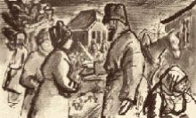

| カラマーゾフの兄弟 ３ | |
| ドストエフスキー | |
| (2012) | |
目次
一 コーリャ・クラソートキン
二 子供たち
三 生徒
四 ジューチカ
五 イリューシャの枕もとで
六 早熟
七 イリューシャ
一 グルーシェンカの家で
二 病める足
三 小悪魔
四 聖歌と秘密
五 兄さんじゃない、兄さんじゃない！
六 スメルジャコーフとの最初の面談
七 二度めの訪問
八 三度めの、最後の面談
九 悪魔。イワンの悪夢
十 『それはあいつが言っていたことだ！』
一 運命の日
二 危険な証人たち
三 医学鑑定と一フントのクルミ
四 幸運、ミーチャにほほえむ
五 思いがけぬ破局
六 検事の論告。性格論
七 犯行の経緯の概観
八 スメルジャコーフ論
九 全速力の心理解剖。疾駆するトロイカ。検事の論告の結末
十 弁護士の弁論。双刃の刀
十一 金はなかった。強盗もなかった
十二 それに殺人もなかった
十三 売文評論家たち
十四 百姓たち我を張る
一 ミーチャ救出計画
二 一瞬間嘘がまこととなる
三 イリューシャの葬式。石のそばでの演説
一 コーリャ・クラソートキン
十一月初旬。この町は零下十一度にもなり、同時に氷が張ってしまった。夜なかに凍てついた地面にさらさらした雪がすこし降り、『身を切るようなからっ風』がその雪をまきあげて、町のさびしい通りを、とりわけ市場の広場を吹き荒れていた。朝方になると、どんよりとはしていたが、小雪は降りやんでしまった。広場からさほど遠くもない、プロートニコフ商店の近所に、そともなかも非常にきれいな、官吏の未亡人であるクラソートキナの小ぢんまりした家がある。県庁の書記官だった当のクラソートキンはもうだいぶ前、ほとんど十四年も前に亡くなっているが、その未亡人は、年は三十そこそこの、いまだにまだすこぶる愛らしい顔をした婦人で、その小ざっぱりした家に『自分の財産で』元気に暮らしている。
気立てはやさしいながらかなり陽気なたちの彼女は、おっかなびっくり正直にその日その日を送っていた。夫につれそっていたのはせいぜい一年かそこらで、男の子を生むと間もなく、十八の年に夫に先立たれてしまった。それ以来、夫に死に別れたそのときから、彼女は自分の宝である息子のコーリャの養育に身をささげ、十四年間無我夢中でかわいがって育ててきたが、もちろん、子供のことでは得られる喜びよりも耐える苦しみのほうが遙かに多く、もしや病気になりはしないか、風邪を引きはしないか、いたずらをしやしないか、椅子に這いあがって落ちやしないかと、ほとんど毎日恐怖にふるえおののき、死ぬ思いをしてきたものだった。コーリャが小学校へはいり、ついで町の中学校へかよいだすと、母親はさっそくいっしょに全科にわたって勉強をはじめ、息子の勉強の手伝いをしたり、いっしょに復習をしたりし、たちまち先生やその奥さんとも近づきになり、コーリャの学校友だちにコーリャをいじめたり、からかったり、なぐったりさせないようにと、その学校友だちまでかわいがったりお世辞を使ったりするようになった。そのため、しまいには、子供たちが母親を種にしてほんとうに彼をからかいだし、おかあさん子だと言って彼をひやかすようになった。
だが、コーリャ少年は立派に自分をまもりぬく力を持っていた。彼は大胆な子で、『おそろしく強いやつだ』という噂がクラスじゅうにひろまり、すぐにそれが定評になってしまったくらいで、はしこくて、負けず嫌いで、勇敢で進取の気象に富んでいた。勉強もでき、算数と世界史では先生のダルダネーロフさえやりこめてしまうという噂まで立った。彼は鼻を高くしてみんなを見下していたが、友だちとしては立派なほうで、高慢ちきなところなどはなかった。彼は生徒たちの尊敬を当然のこととして受けとっていたが、そのふるまいは親愛の情にあふれていた。いちばん感心なのは、節度をわきまえていたことで、場合によっては自分をおさえることを知っていて、学校当局にたいしては、ある禁じられた最後の一線を踏みこえることはなかった。その一線を踏みこえたらもう過失は許せないものとなり、乱脈や反抗や不法行為と化してしまうことを承知していたからである。とはいえ、機会さえあれば、いくらでもいたずらをしてのけ、最低のいたずら小僧のようないたずらをすることもあったが、それはいたずらというよりもむしろ、なにか手のこんだいたずらを楽しんだり、いろいろ奇行を演じたり、『人の意表をつくようなこと』をやらかしたり、粋ぶったり、もったいぶったりすると言ったほうがよいかもしれない。
彼はなによりもまず自尊心が強かった。自分の母親まで自分にたいして従属関係におき、母親にたいしてほとんど暴君的にふるまっていた。母親のほうも服従していた、しかももうだいぶ前から服従していたのだ、が、ただ息子が自分に『あまり愛情を持っていない』のではないかという考えだけはどうにも我慢がならなかった。彼女はしょっちゅう、コーリャが自分にたいして『つれない』ような気がして、ときどきヒステリックに涙を流して息子の冷淡さをなじりはじめることがあった。息子はそれを嫌っていて、愛情の披瀝を求められれば求められるほど、わざとかたくなになってくるようであった。が、それはわざとではなくて、自然にそうなるのであって――すでにそういう性格だったのである。
母親は誤解していたのだ。息子は自分の母親にふかい愛情を持ってはいたのだが、ただ彼が使っていた小学生的表現をかりれば、『猫かわいがり』を好かなかっただけのことなのである。家には父親の形見として戸棚がひとつあって、そのなかに本が何冊かしまってあった。コーリャは読書が好きだったので、もうひそかにそのうちの何冊かを読んでしまっていた。母親はべつにそれを心配もしなかったが、ただときおり、どうして男の子のくせに遊びにも行かないで、何時間でもぶっつづけに戸棚のそばに立ちとおしてなにか本を読んでいるのだろうと、不思議がっていた。そんなふうにしてコーリャは、彼くらいの年頃ではまだ読ましてもらえないような本を何冊か読んでしまっていた。ところが、この頃この少年は、従来はいたずらをするとはいってもある一線を踏みこえることを好まなかったのに、母親を冗談でなくふるえあがらせるようないたずらをはじめるようになった――それはたしかになにか道徳に反するようなものではなかったが、そのかわり無鉄砲な命知らずのいたずらだった。
ちょうど今年の夏、学校も休暇になった七月に、たまたま母親と息子が、七十キロほどさきにある隣の郡に住んで夫が鉄道の駅に勤めていた（イワン・カラマーゾフがひと月前にモスクワに出かけて発った例の駅である）ある遠縁の婦人のところへ一週間の予定でお客に行ったことがあった。そこでコーリャはまず鉄道をくわしく調べ、その仕組みを研究しはじめた。家へ帰ってから、自分の中学予備校の生徒たちに自分の新知識をひけらかすつもりだったのである。ところが、ちょうどそのときほかに何人か少年がそこへ来あわせていたので、彼はたちまちのうちにその子供たちと仲よくなってしまった。そのうちのひとりは駅に、ほかの者はその近所に住んでいた――みんな年のいっていない連中ばかりで、十二歳から十五歳くらいまでで、これが六、七人落ちあったわけだが、そのうちのふたりはたまたまこの町から行った者だった。少年たちがいっしょに遊んだりふざけたりして、四、五日駅で暮らしているうちに、愚かなわかい者のあいだに、想像もつかないような二ルーブリの賭けが成立した、それはつまり、みんなのなかでいちばん年下だったため年上の者からいくらかばかにされていたコーリャが、自負心を満足させるためか、それとも野放図な勇敢さのためか、夜、十一時の汽車が通るとき、レールのあいだにうつぶせになって、汽車が全速力で上を通過するあいだ、じっと動かずに寝ていてみせようと言いだしたのである。もっとも、あらかじめ研究した結果、実際にレールのあいだに横になって体をのばしていれば、汽車はむろん横たわっている者にさわらずにその上を通過するということはわかったが、しかしそれにしても横になっているときの気持ちはどんなだろう！
コーリャは、横になってみせると、断乎として主張した。はじめのうちみんなは一笑に付して、嘘つきだの、ほら吹きだのと言っていたが、それがなお一層彼をけしかけることになった。なによりもまず、その十五歳の少年たちが彼にたいしてあまりにも傲慢な態度をとり、はじめ彼を『ちび』あつかいして、仲間と見ることさえしなかったのが、すでにしゃくにさわってどうにも我慢がならなかったのである。こうして晩になったら駅から一キロさきへくり出すことにきまった、駅を出た汽車がその辺へくると完全に全速力で走るからであった。少年たちは集合した。月のない夜で、暗いどころか、漆黒と言ってもよいくらいの闇夜だった。コーリャは時間を見はからってレールのあいだに身を横たえた。ほかの、賭けをした五人は、心臓がとまりそうな思いで、しまいには恐怖と後悔をおぼえながら、下の道端の土手に生えていた灌木のなかで待っていた。ついに遠くのほうで、駅を出た汽車の音がしはじめた。闇のなかにふたつの赤い灯が輝きだし、近づいてくる怪物が轟音をたてはじめた。「逃げろ、レールからわきへ逃げろ！」と茂みのなかから恐怖に生きた心地もなくなった少年たちが彼にむかって叫んだが、もうおそかった。汽車は驀進してきたかと思う間もなく通過してしまった。少年たちがコーリャのそばへ飛んで来てみると、彼は身動きもせずに横たわっていた。彼らは彼を引っぱって起こしにかかった。すると彼はむっくり起きあがって、黙って土手をおりた。下へおり立ったとき彼は、みんなをおどかしてやろうと思って、わざと正気を失ったふりをして横になっていたのだと言ったが、実際は、あとでもうだいぶたってから母親に白状したところでは、ほんとうに気を失っていたのである。
こうして、彼が『向こう見ず』だという評判は永久に動かぬものとなった。彼はまっ青な顔をして駅の構内にある親類の家へ帰った。翌日彼は軽い神経性の熱を出したが、気分はおそろしく愉快そうで、嬉々として、満足そうな様子をしていた。事件はすぐにではなかったが、はやくも町にも知れわたり、予備中学校へもつたわり、校長たちの耳にまではいった。しかし、コーリャの母親はすぐさま飛んでいって、学校当局に自分の子供のことを頼みこみ、結局みんなの尊敬をあつめている有力な教師のダルダネーロフが彼を弁護し嘆願してくれたため、事件はまったくなかったものとして、葬りさられてしまった。
このダルダネーロフは、まだそれほど年をとっていない独り者だが、もう長年クラソートキン夫人に一風変わった恋をしていて、すでに一度、一年ほど前に、恐怖とデリケートな神経から息もとまるような思いで、すこぶる慇懃に思いきって彼女に結婚を申しこんだことがあった。が、彼女は承諾したらわが子を裏切ることになると考えて、きっぱりとことわってしまった。がしかしダルダネーロフは、あるひそかな徴候から見て、ことによると、自分はこの美しい、だがあまりにも貞操のかたい、やさしい未亡人にそれほど嫌われていないのではないかと空想する一種の権利を持っていたのかもしれない。コーリャの気ちがいじみたいたずらによって、どうやら活路がひらけたようなかっこうになり、ダルダネーロフにはコーリャの弁護をすることによって、淡いものではあったが希望の片鱗くらいは持てることになった。もっともダルダネーロフのほうもまれに見る純情とデリケートな心の持ち主だったから、彼はそれくらいでもさしあたり幸福感が満たされるに十分だったのである。
彼は少年を愛してはいたが、その機嫌をとるようなことは卑屈な行為だと考えていたから、教室では彼はきびしく、やかましくあつかっていた。しかしコーリャのほうも彼には尊敬を失わぬ程度の距離をおいて、立派に予習もしてき、クラスで二番の成績をとり、ダルダネーロフには当たらずさわらずの態度をとっていたが、クラスじゅうの者が、世界史にかけてはコーリャはダルダネーロフさえ『やりこめる』くらいの実力を持っているものとかたく信じていた。事実、コーリャがあるとき彼に、「トロイを建設したのはだれですか？」と質問したことがあったが、それにたいしてダルダネーロフはいろんな民族やその移動や移住の話やら、太古時代のことやら神話などを持ちだして一般的な返答をしただけで、いったいだれがトロイの基礎をきずいたのか、つまりそれはどういう人物たちであるかについては答えられず、その上なぜかその質問を下らない、根拠のないものときめつけてしまった。しかしそんなことで、ダルダネーロフはトロイの創設者がだれなのか知らないのだという子供たちの確信が変わるはずはなかった。ところが、コーリャはトロイの創設者については、父親のかたみの本棚のなかにあったスマラーグドフの本を読んで知っていたのである。で結局、ついにはだれもが、子供たちでさえ、トロイの建設者はいったいだれかという問題に興味をいだくような結果になったが、クラソートキンは自分の秘密を明かさなかったため、彼が博識だという評判はもはや揺るがぬものとなってしまった。
鉄道事件以来、コーリャの母親にたいする態度にある変化が生じた。アンナ〔クラソートキン未亡人〕は息子の手柄話を聞き知ったときはおそろしさに気も狂わんばかりだった。彼女はすこぶる激烈なヒステリーの発作に襲われ、それが間歇的に幾日かつづいたため、心底からびっくりしてしまったコーリャは、ああいういたずらはもう二度としないと、母親にかたい誓いをたてた。彼は聖像の前にひざまずいて誓いを立て、クラソートキン夫人の要求どおり父親の命日にかけて誓い、このときばかりはさすがに『男らしい』コーリャも『感きわまって』六つか七つの子供のようにおいおい泣き、母子はその日は終日たがいにひしと抱きあって、身をふるわせて泣きとおした。そのあくる日目をさましたときはコーリャはこれまでどおり『つれない』子供にかえってはいたが、しかし前よりも口数がすくなくなり、ひかえめで、顔つきのけわしい物思いがちな子になってしまった。もっとも、それからひと月半ほどたったころ、彼はまたあるいたずらをしでかしそうになり、町の治安判事にさえその名を知られるようになった。とはいえ、そのいたずらはもはや種類のまったくちがった、滑稽で、いくぶんばかげているくらいのもので、しかもあとでわかったのだが、それをしでかしたのは彼自身ではなくて、彼はその巻きぞえを食ったのにすぎなかった。しかし、これについてはいずれあとで話すことにしよう。
母親は引きつづきおびえたり悩んだりしていたが、ダルダネーロフのほうは彼女の不安がつのればつのるほどますます有望になってくるわけだった。ここでひと言いっておかなければならないが、コーリャにはこうしたダルダネーロフの気持ちはわかってもいたし、察しもついていたので、そういう『気持ち』をいだいている彼を軽蔑していたことはもちろんである。前には無神経にも母親の前でそういう軽蔑の気持ちを口にのぼして、ダルダネーロフがなにを狙っているかくらいわかっていると遠まわしにほのめかしたこともあったが、鉄道事件以降彼はこういうことでも自分の態度を一変してしまった。もはや、どんな遠まわしなものであれ、当てこすりめいたことは、ぴたりと言わなくなり、母親の前でダルダネーロフの話をするにも前より敬意をこめて話すようになった。敏感な母親はたちまちそれに気づいて心中に無限の感謝をおぼえたものであるが、そのかわり今度は、コーリャのいる前でだれか無関係なお客がほんのちょっとまったく偶然にダルダネーロフの話でも持ちだそうものなら、もうたちまち恥ずかしさに顔をバラのようにまっ赤に染めるのだった。そんなときにはコーリャはしぶい顔をして窓外に目をやったり、長靴に穴があいていはしないかどうか調べたり、『ペレズヴォン』を荒っぽく呼んだりするのだった。『ペレズヴォン』というのは、毛むくじゃらで、かなり大きい、きたならしい犬で、彼はひと月ほど前に突然どこからか手に入れてきて、家のなかへ引き入れると、なぜか秘密に部屋のなかで飼っていて、友だちのだれにも見せないようにしていたのだった。少年は犬をおそろしく虐待しながら、ありとあらゆる芸を教えこみ、その結果いまでは、このあわれな犬は、彼が家を明けて学校へ行っている間じゅう唸りつづけているが、彼が帰ってくると、うれしさのあまりきゃんきゃん鳴いたり、気ちがいのように駆けまわったり、主人のご用をつとめたり、地べたにころがって死んだまねをしたりして、要するに、もうやれとも言わないのに、ただ歓喜の情と感謝の念が燃えあがるにまかせて、しこまれたあらゆる芸当をやってみせるのだった。
ついでにここで忘れていたことを言っておくが、このコーリャ・クラソートキンこそ、すでに読者諸君にはおなじみの、退役二等大尉スネギリョーフの息子のイリューシャ少年が、学校友だちから『へちま』と言ってからかわれた父親を守って立ちあがり、ペンナイフで腿を突きさした例の少年の相手の少年だったのである。
二 子供たち
さて、この凍てのきびしい、北風の吹きすさぶ十一月のある朝、コーリャ少年は家にひきこもっていた。日曜日なので、学校はなかったわけだが、時計がもう十一時を打ったので、『あるきわめて重大な用件で』どうしても外出しなければならなかった。それなのに、彼はまったくの留守番といったかっこうで家じゅうでたったひとり家にのこっていたのである。それは、たまたまこの家のおとながひとりのこらず、ある特別の妙な事情があって家を出はらっていたからであった。クラソートキン未亡人の家には、彼女が自分で使っていた住まいとは玄関をへだてて、この家で唯一の貸間用の住まいがもうひとつあった。そこの間取りは小部屋がふたつきりだったが、それをふたりのおさない子供をかかえた医者の奥さんが借りていた。その医者の奥さんはクラソートキナとはおなじ年頃で、彼女とは大の仲よしだった。夫の医者はもう一年も前にはじめはどこかオレンブルクあたりへ、ついでタシケントへ行ったきり、もう半年この方音沙汰がなかった。だからもしもクラソートキン夫人との親しい交わりによって、おき去りにされた医者の奥さんの悲しみがいくらかでもやわらげられることがなかったら、彼女はその悲しみにすっかり涙も涸れてしまったにちがいない。そこへ、運命の迫害の総仕上げにこうしなければならなかったかのように、その夜、つまり土曜から日曜にかけての夜に、医者の奥さんにとってただひとりの女中のカテリーナが突然まったく思いがけなく奥さんにむかって、朝までに赤ん坊を生むつもりだと言いだしたのである。どうしてだれひとりその前にそれに気づかなかったのか、これはだれにとってもまったく奇々怪々な現象であった。びっくりした医者の奥さんは、まだ間があるうちに、町の助産婦がこういう場合にそなえて建てた施設にカテリーナをつれていっておこうと考えた。彼女はこの女中を非常に大事にしていたので、時を移さずその計画を実行に移して、彼女をそこへつれていった上に、そこに付きそっていのこってしまった。そのあと、すでに朝になってからであるが、どうしたわけかクラソートキン夫人までがいろいろと友情的な協力や援助を与えることが必要になった、というのは彼女はこういう場合にだれかになにかを頼んでやったり、なにかで後ろ楯になってやったりできる立場にあったからである。そんなわけで、婦人がふたりとも家を明けてしまったし、クラソートキン夫人宅の女中のアガーフィヤまでが市場へ出かけてしまったため、コーリャは、『ちびちゃんたち』、つまりふたりきりでおき去りにされた医者の奥さんの男の子と女の子のお守り兼見張りにされてしまった次第なのである。家の留守番をするだけなら、おまけにペレズヴォンもついていることだから、コーリャには恐いことはなかった。
ペレズヴォンは玄関の木椅子の下にうつ伏せになって『不動の姿勢』をとらされ、そのため、あちこち部屋を歩きまわっているコーリャが控えの間にはいって来るたびに、頭をふるわせては、媚びるように二、三度床を尻尾で強くたたくのだが、悲しいことに、呼び寄せる口笛は鳴らなかった。そして、コーリャが威すようにあわれな犬をにらみつけると、またおとなしく麻痺したように動かなくなってしまうのだった。
このときコーリャになにかこまることがあったとすれば、それはただひとつ『ちびちゃんたち』のことだった。彼はカテリーナの思いがけない事件にたいしては、言うまでもなく、心底から軽蔑したような見方をしていたが、みなし子のちびちゃんたちのことは大好きだったから、すでにふたりの子になにか子供の本を持ってきてやっていた。年上の女の子のナースチャはもう八つで、字も読めたし、七つになる弟のちびちゃんのコースチャは、本を読んでくれるのを聞くのが大好きだった。もちろん、クラソートキンにはふたりをもっとおもしろく遊ばせることも、つまりふたりを、並ばせていっしょに兵隊ごっこをはじめたり、家をいっぱいに使って隠れん坊をしたりすることもできたはずである。そんなことはこれまでにも何度となくやっていたし、そういうことをするのが嫌いなのでもなかった。そんなことで一度クラスじゅうに、クラソートキンは自分の家で店子の子供たちと馬ごっこをして、副馬のまねをして跳んだり首をまげたりしているという噂がひろまりかけたことがあった。が、しかしクラソートキンは傲然とその非難に反撃を加えて、十三歳のおなじ年頃の者を相手に『いまどき』馬ごっこなどをしていたら、なるほど恥ずべきことにはちがいなかろうが、これは『ちびちゃんたち』のためにやっているのだ、というのは自分は子供たちが好きだからなのだ、こと自分の愛情にかんしてはだれにもとやかく言わせないぞと注意を与えた。そのかわりふたりの『ちびちゃん』は彼を尊敬していた。
ところが、いまはそんな遊びどころではなかった。彼にはこれからある非常に重大な、見たところなにかほとんど秘密にちかい用事があるのに、時間はどんどんたっていくし、子供たちのことを頼んでいくつもりのアガーフィヤは依然としてまだ市場から帰りそうにもなかった。彼はもう何度か玄関を通って、医者の奥さんの家のドアをあけて、心配そうに『ちびたち』をのぞいてみた。子供たちは、彼に言いつけられたとおり、坐って本を読んでいたが、彼がドアをあけるたびに、いまにも彼がはいって来て、なにか素敵な、おもしろいことをやってくれるように思うらしく、黙って彼に口いっぱいに笑ってみせるのだった。しかし、コーリャは気が気でならなかったので、なかへははいらなかった。ついに、時計が十一時を打ったので、彼は決然と最後の腹をきめて、もしあと十分たってもいまいましいアガーフィヤのやつが帰って来なかったら、彼女の帰りを待たずに家を出てしまうことにした。とはいっても、もちろん、『ちびたち』には、自分がいなくなって恐がったり、悪ふざけをしたり、恐さのあまり泣いたりしないと約束させるつもりだった。そう思って彼はオットセイかなにかの毛皮の襟のついた綿入れの冬外套を着、肩にカバンをかけると、『こういう寒い日に』家を出るときは頼むからいつもオーバーシューズをはいてちょうだいよと前々から何度も母親から言われていたのに、控えの間を通りながら、ただ軽蔑したような目つきでオーバーシューズを見やっただけで、長靴だけで出てしまった。ペレズヴォンは身仕度をした彼の姿を見ると、体じゅう神経質そうにぴくぴくさせながら、さかんに尻尾で床をたたきそうにし、そのうえ訴えるような咆え声を立てそうにしたが、コーリャは自分の犬がそんなに無性に飛んできたがっているのを見ると、それを、ちょっとのあいだにもせよ、規律をみだすものと思い、まだ木椅子の下にそのままにさせておいて、玄関のドアをあけてから、いきなり口笛を鳴らして犬を呼んだ。犬は気ちがいのように跳びおきると、大喜びで彼の前へ駆けだした。
玄関を横ぎるとき、コーリャは『ちびたち』の部屋のドアをあけてみた。ふたりは相変わらず小さな机にむかってはいたが、もう本は読まずに、なにか夢中で口論していた。この子供たちはいろんな興味ある世のなかの問題についてよく議論しあうことがあって、そんなときにはナースチャのほうが年上なだけにいつも勝ちを占めるのだった。コースチャは、姉の意見が承服できないと、たいていコーリャのところへ来て告訴する、そしていったん彼が決定を下すと、もうそれがどちらにも絶対的な宣告ということになるのだった。このときの『ちびたち』の議論にはクラソートキンもいささか興味をおぼえたので、戸口に足をとめて、耳をすました。子供たちは彼が聞いていると見て、いよいよ夢中になって議論をつづけた。
「とても、とてもそんなこと信じられないわ」とナースチャはむきになって子供っぽい口調で言いたてていた。「お産婆さんが赤ちゃんをキャベツ畑のあぜのあいだから見つけて来るんだなんて。いまはもう冬なんだもの、あぜなんか全然ありゃしないわよ、だからお産婆さんだってカテリーナに女の子を持ってきてやれないはずじゃないの」
「ひゅー！」とコーリャは思わず口笛を鳴らした。
「でなかったら、こういうことかもしれないわ。お産婆さんはどこかから持ってきてくれるんだけど、お嫁に行った人のところにしか持ってきてあげないのよ」
コースチャはナースチャの顔をじっと見つめ、ふかく考えこみながら耳をかたむけていろいろ考えあわせていた。
「おねえちゃん、おねえちゃんてほんとにばかだよ」とあげくのはてに彼は落ちついてきっぱりと言った。「だったらカテリーナに赤ちゃんが生まれるはずはないじゃないか、だってカテリーナはお嫁に行ってないんだもん？」
ナースチャはおそろしくのぼせてしまった。
「あんたなんか、なんにもわかってやしないのよ」と彼女はいら立たしげにさえぎった。「もしかしたら、旦那さんはいたんだけど、ただ牢屋にはいっているだけなのかもしれないわ、だからカテリーナに赤ちゃんが生まれたのよ」
「ほんとうにカテリーナの旦那さんは牢屋にはいっているの？」と実証主義者のコースチャがもったいぶってそう聞いた。
「でなかったら、こうかもしれないわよ」とナースチャが自分の最初の仮説を忘れてしまい、すっかり捨ててしまって、猛烈な勢いでさえぎった。「カテリーナには旦那さんはいないのよ、これはあんたの言うとおりよ、ね、だけどあの人はお嫁に行きたくって、どうやって、お嫁に行こうかってことばかり考えていたんだわ、そしてしょっちゅうそのことばかり考えているうちに、しまいにとうとう、旦那さんじゃなくて赤ちゃんができちゃったのよ」
「ふうん、そうなの？」とコースチャはすっかりやりこめられて承服してしまった。「おねえちゃんはさきにそう言ってくれなかったんだもの、僕だってわかりっこないじゃないか」
「おい、ちびたち」と、コーリャが子供たちの部屋に一歩足を踏み入れて言った。「どうも、君たちは危険人物のようだな！」
「ペレズヴォンもいっしょなの？」コースチャは歯を見せて笑ってから、指を鳴らして、ペレズヴォンを呼びはじめた。
「ちびたち、僕はちょっと弱っているんだよ」とクラソートキンはもったいぶった調子で言いだした。「君たちにも助けてもらわなきゃならないんだ。アガーフィヤはてっきり足でも折ったんだぜ、いまだに帰って来ないんだものね、これはもうてっきりそうだよ。ところが僕はどうしても外出しなきゃならないんだ。君たちは僕を行かしてくれるかね、どう？」
子供たちは心配そうにたがいに目を見かわしたが、歯を出して笑ったその顔には不安があらわれた。もっとも、ふたりにはまだ、相手がなにをしてもらいたがっているのか、完全には飲みこめていないらしかった。
「僕がいなくてもいたずらなんかしないね？ 戸棚にのぼって、足をくじいたりしないだろうね？ ふたりっきりだというんでこわくて泣きだしゃしないだろうな？」
子供たちの顔にひどくさびしそうな表情があらわれた。
「そのかわりひとついいものを見せてあげようか、銅でできた大砲なんだ、ほんとうの火薬で撃てるんだぜ」
子供たちの顔はぱっと明るくなった。
「その大砲を見せて」とコースチャは顔じゅう輝かせて言った。
クラソートキンはカバンに手を入れて、なかから小さな青銅の大砲を取りだして、机の上においた。
「ほうら、これだ！ ごらん、車もついてるんだよ」彼はそのおもちゃを机の上で走らせてみせた。「撃てるんだぜ。ばらだまをこめて撃てるんだよ」
「当たれば死んじゃう？」
「みんな死んじゃうさ、狙いさえすれば」そしてクラソートキンは、どこへ火薬を入れ、どこへ散弾をこめるか、説明して聞かせ、火孔の形をした穴を見せ、反動もあるのだと話して聞かせた。子供たちは大変な好奇心をそそられながら聞いていた。ことに彼らを驚かしたのは、反動があるということだった。
「火薬も持っているの？」とナースチャが聞いた。
「持ってるよ」
「火薬も見せてちょうだい」彼女はねだるような微笑をうかべて言葉をのばすようにして言った。
クラソートキンはまたカバンのなかに手を入れて、なかから小さなびんを取りだしたが、そのなかにはたしかにほんものの火薬がすこしばかりはいっていた、それに紙包みのなかからは幾粒か散弾が出てきた。彼はそのうえ小びんの栓を取って、火薬をほんのすこし手のひらの上に出してみせた。
「ほらね、ただどこかその辺に火の気があっちゃいけないんだよ、でないとどかんと爆発して、僕たちみんな死んじゃうからね」とクラソートキンは効果を強めるために警告した。
子供たちは恐怖感をおぼえながらかしこまって火薬をつくづくと眺めていたが、彼らはその恐怖感になお一層興味がそそられるのであった。しかし、コースチャに気に入ったのはむしろ散弾のほうだった。
「ばらだまは燃えないの？」と彼は聞いた。
「ばらだまは燃えないさ」
「ばらだまをすこしちょうだい」と彼はねだるような声で言った。
「うん、すこしあげよう、さあ、取りな、ただ僕が帰ってくるまで、おかあさんに見せるんじゃないよ、でないとおかあさんがこれを火薬だと思って、とたんにびっくりして死んじゃうからね、それに君たちはひっぱたかれるからね」
「ママはあたしたちを鞭でひっぱたくようなことはけっしてしないわ」とすかさずナースチャが言った。
「知っているよ、僕はただ話を飾るために言っただけなんだ。おかあさんをだますようなことは絶対にしちゃいけないよ、もっとも今度だけは――僕が帰ってくるまではいいけどね。じゃ、ちびちゃんたち、僕出かけてもいいね、どう？ 僕がいなくてもこわくなって泣きだしゃしないだろうね？」
「泣きーだすーよう」とコースチャははやくもべそをかきながら、言葉を引きのばしながら言った。
「泣きだすわ、きっと泣きだすわ！」とナースチャもおびえて早口にあとを引き取って言った。
「いやはや、子供ってしようがないな、まったくあぶなくって目も放せない年頃だよ。しようがない、ひよっこたち、何時間いっしょにいてやればいいんだい。それにしても時間が、時間が、こまったなあ！」
「ペレズヴォンに死んだまねをさせてよ」とコースチャが頼んだ。
「いやもうしかたがない、ペレズヴォンにも手を借りなけりゃ。ここへおいで、ペレズヴォン！」こう言ってコーリャが犬に命令を発すると、犬は知っているかぎりの芸当をやりだした。これは、毛のむくむくした、大きさは普通の番犬くらいの、毛は一種青味がかった灰色の犬だった。右の目はつぶれ、左の耳にはどうしたわけか裂け目があった。犬はきゃんきゃん鳴いたり、跳んだり、お使いをしたり、うしろ足で歩いたり、背なかを下にし、四つ足を全部上にしてひっくり返ったり、死んだように、じっと寝たままでいたりした。その最後の芸当をやっている最中にドアがあいて、クラソートキン夫人の女中のアガーフィヤが敷居の上に姿をあらわした。よく肥えた、あばた面の四十女で、しこたま買いこんだ食料品の紙袋を手に持って市場からもどって来たのだ。彼女は突っ立ったまま、左手に袋をぶらさげて、犬の芸当を見物しはじめた。コーリャはあれほどアガーフィヤの帰りを待っていたくせに、芸当を中止させずに、ペレズヴォンに一定時間死んだまねをさせてから、最後に、口笛を鳴らした。犬は跳び起きると、自分の務めをはたしたうれしさに、ぴょんぴょん跳びはじめた。
「これこれ、牡犬！」とアガーフィヤがたしなめるように言った。
「じゃ、女性のお前はなんだってこんなに帰りが遅くなったんだい？」とクラソートキンがおどしつけるような調子で言った。
「女性だって、なにさ、ちび！」
「ちびだと？」
「ええ、ちびだともさ。あたしが遅れて帰ったからって、どうだっていうのさ、遅くなったからには、そうなるだけのわけがあったんじゃないか」とアガーフィヤはぶつぶつ言いながら、ペチカのそばをうろうろしはじめたが、その声の調子は満更不服そうでもなければ腹立たしそうでもなく、それどころかかえって、愉快な坊っちゃんと軽口をたたきあう機会が得られたのがうれしいといった様子だった。
「いいかい、おっちょこちょいの婆さん」と、クラソートキンが椅子から腰をあげながらこんなことを言いだした。「婆さんは僕に、この世のあらゆる神聖なものにかけて、いやそれだけじゃない、もっとほかのものにもかけて誓えるかい、僕のいないあいだ目を放さずにこのちびちゃんたちを見張っているって？ 僕は出かけるからね」
「なんだってあたしがあんたに誓いを立てなけりゃならないのさ？」アガーフィヤは笑いだした。「そんなことをしなくとも見ていてあげるよ」
「いや、お前の魂の永遠の救いにかけて誓わなけりゃだめだよ。でなかったら僕は出かけないからね」
「じゃ出かけないがいいわ。わたしの知ったことじゃないもの。外はひどい寒さだから、家にじっとしていらっしゃい」
「ちびちゃんたち」とコーリャは子供たちのほうを向いて言った。「僕がもどるか君たちのママが帰るまで、この人が君たちといっしょにいてくれるからね、君たちのママだってもうとっくに帰らなきゃならない頃だものね。それに、この人が君たちに朝ご飯を食べさせてくれるよ。なにか出してやってね、アガーフィヤ」
「それくらいしてあげられるよ」
「じゃ、行ってくるぜ、ひよっこたち。これで安心して出かけられるってものだ。ところで婆さん」と彼はアガーフィヤのそばを通るときに、小声でしかつめらしくこうささやいた。「だいじょうぶとは思うけど、女にありがちな浅はかさからカテリーナのことで下らない話を子供たちにして聞かせるんじゃないぜ、子供の年ってものも考えてやらなきゃな。こっちへおいで、ペレズヴォン！」
「えい、さっさと出ていくがいい」とアガーフィヤはもうぷりぷりしながら食ってかかった。
「おかしな子だよ！ そんな口をきいて、お前さんこそひっぱたかれないこったよ、ほんとに」
三 生徒
だが、コーリャはもう聞いてはいなかった。これでとうとう家を出ることができたわけだ。門を出ると、彼はあたりを見まわし、肩をすくめて、「ひどい寒さだ！」と言って、まっすぐ通りを歩きだし、それから右へおれて市場の広場へいく路地を歩いていった。広場にいきつく一軒手前の門のそばで足をとめると、彼はポケットから呼び子を取りだして、約束の合い図らしく、力いっぱい呼び子を鳴らした。一分と待たないうちに耳門からひょいと飛びだしてきた顔の赤い少年がいた。年は十一くらいで、やはり温かそうな、小ざっぱりした、しゃれていると言ってもいいくらいの外套を着ていた。これはスムーロフというまだ中学予科にいる少年で（コーリャのほうはもう二年も上のクラスだった）、裕福な官吏の息子なのだが、両親から、だれ知らぬ者もない無鉄砲ないたずら者であるクラソートキンとつきあうことを許されていないらしく、そんなわけで、スムーロフは明らかにいまもこっそり家を抜けだしてきたものらしかった。このスムーロフという子は、もしも読者諸君がお忘れでなければ思いだしてもらえることと思うが、ふた月ほど前にどぶ川ごしにイリューシャ目がけて石を投げた少年のひとりで、そのときアリョーシャ・カラマーゾフにイリューシャのことを話して聞かした子だった。
「僕はこれでもうたっぷり一時間は待っていたんですよ、クラソートキン」とスムーロフは決然とした面持ちでそう言い、ふたりの少年は広場をさして歩きだした。
「遅れちゃったね」とクラソートキンは答えた。「ある事情があったんでね。君は、僕といっしょに歩いたりしたら、鞭でひっぱたかれないのかい？」
「ちえっ、よしてくださいよ、ひっぱたかれるもんですか。ペレズヴォンもつれて来たんですか？」
「ああ、つれて来たさ」
「ペレズヴォンもあそこへつれていくの？」
「ああ、あそこへつれていくよ」
「ああ、これがジューチカだったらなあ！」
「ジューチカのことは言いっこなしだよ。ジューチカはもういないんだから。ジューチカは不可知の闇のなかに消えうせてしまったんだからな」
「ああ、こういうふうにしちゃいけないだろうかねえ」スムーロフはふと足をとめて言った。
「イリューシャの話だと、ジューチカもペレズヴォンみたいに毛むくじゃらで、やっぱりこんなぼやけた灰色をしていたっていうから――これがあのジューチカだって言っちゃいけないかなあ、ひょっとしたら、ほんとうにするかもしれないよ」
「君、学校の生徒って嘘をつくものじゃないよ。これがひとつだ。たとえいいことでもね、これでふたつだ。それよりいちばん肝心なことは、だいじょうぶとは思うけど、君はあそこで僕が来るって言わなかったろうね」
「とんでもない、そんなことは僕にだってわかっているよ。だけど、ペレズヴォンじゃあいつを慰められないだろうな」スムーロフは溜め息をついた。「あのね、あの親父さんが、大尉のへちまが僕たちに言っていたけど、きょう息子に小犬を持ってきてやるんだって、黒い鼻をしたほんとうのマスチフ犬を。あの人はそれでイリューシャを慰めてやろうと思っているんだろうけど、うまくいくかどうか？」
「で、本人のぐあいはどうなんだい、イリューシャのぐあいは？」
「いやそれがとても悪いんだよ！ あいつ肺病じゃないかと思うんだ。頭のほうははっきりしているんだけど、あの息のしかたがねえ――息のしかたがよくないんだ。このあいだも歩かしてくれって頼むもんだから、みんなで長靴をはかしてやったら、歩きかけたけど、ころんじまってね。あいつは、『ああ、パパ、僕言ったでしょう、これは悪い靴だって、この、もとの靴は。この長靴は前から歩きにくかったんですよ』なんて言っているんだ。あいつは、靴のせいでころんだと思っているけど、ただ体が弱っているからにすぎないんだよ。もう一週間とはもたないだろう。ゲルツェンシュトゥーベが診にきているけどね。いまじゃあの一家もまた金持ちになって、お金がうんとあるからね」
「詐欺師だ」
「詐欺師ってだれが？」
「医者だの、医学関係のやくざどもさ、一般的にもそうだし、もちろん、個別的に言ったってそうだよ。僕は医療制度なんて認めてやしないんだ。無益な制度だよ。もっとも、そのうちすっかり調べあげてやるつもりだけどね。それにしても、君らはまたあそこでまったくセンチメンタルなことを始めたもんじゃないか？ クラスじゅうの者がひとりのこらずあそこへ行っているらしいじゃないか？」
「ひとりのこらずってわけじゃないよ、僕たちの仲間が十人ばかり行っているだけだよ、いつも、毎日ね。そんなことなんでもないでしょう」
「なかでも僕が不思議でならないのはアレクセイ・カラマーゾフの役割だね。兄貴があしたかあさってあたりああいう犯罪で裁判にかけられようとしているのに、よくまあ子供たちを相手にセンチメンタルなことなんかしている暇があったものだよ！」
「この場合センチメンタルなことなんてなんにもありゃしないんだよ。そういう自分だってこうしていまイリューシャと仲直りをしに行くところじゃないか」
「仲直りをしに？ おかしな言い方をするね。だけど、僕はだれにも僕の行為の解剖はさせないつもりだぜ」
「それにしても君が行ってやったらイリューシャはどんなに喜ぶか！ あいつは、君が来るなんて夢にも思っていないんだから。どうして君は、どうして君はこんなに長いこと行こうとしなかったの？」とスムーロフは急に熱をおびた口調で叫んだ。
「君、それは僕の問題で、君の問題じゃないじゃないか。僕は自分で勝手に行くだけなんだ、だってそれが僕の意志なんだもの、ところが君たちはみんなあそこへアレクセイ・カラマーゾフに引っぱっていかれたんだろう、そこに違いがあるんだよ。それにどうして君なんかにわかる、僕は全然仲直りなんかしに行くんじゃないかもしれないぜ？ ばかげた表現だ」
「全然カラマーゾフなんかに引っぱっていかれたんじゃないよ、全然そうじゃないんだ。ただ僕たちが自分からあそこへ行きだしただけだよ。もちろん、最初はカラマーゾフにつれられて行ったんだけど。そういうことはなんにもなかったんだよ、そういうばかばかしいことはなんにも。はじめにひとり、それからもうひとりといったぐあいに行きだしたんだもの。親父さんは僕たちが行ったら大喜びだったよ。ねえ、君、イリューシャが死にでもしたら、あの人は完全に気が狂っちまうね。あの人には、イリューシャが死ぬことがわかっているんだ。だから、僕たちがイリューシャと仲直りしたことが嬉しくてたまらないんだよ。イリューシャは君のことを聞いたけど、それっきりなんにも、言わなかったぜ。聞いただけで、黙っちまったんだ。それにしても親父さんは気が狂うか、首をくくるかしちゃうね。あの人は前にも、気ちがいみたいになったことがあるんだから。だけどね、あの人はほんとうは立派な人なんだよ、あのときは誤解だったんだ。みんなあの親殺しが悪いんだよ、あのときあの人をなぐったりしたけど」
「それにしてもやっぱりカラマーゾフは僕には謎だよ。もうとっくにあの男とは近づきになれたはずなんだけど、僕はある場合には傲慢なところを見せるのが好きなんでね。それに、あの男についちゃある意見をまとめあげたんだが、まだ検討して解明する余地があるもんだからね」
コーリャはもったいぶって口をつぐんだ。スムーロフも口をつぐんだ。スムーロフは、言うまでもなく、コーリャを崇拝していて、彼と対等になろうなどとは考えていなかった。いまもコーリャにひどく興味をそそられたのは、コーリャが「自分で勝手に行くだけなんだ」と説明したからなのである、してみると、この場合、コーリャが急にいま頃、しかもきょうになって行くことを思いついたからには、かならずなにかわけがあるのにちがいないとこう思ったのである。ふたりは市の立つ広場を歩いていた。そこにはそのときは近在から寄り集まった荷馬車がたくさんおいてあり、追いたてられてきた鵞鳥がむらがっていた。町の商人の女房どもがそれぞれ日よけをかけて輪形パンや糸などを商っていた。こういう日曜日の集まりをこの町では無邪気にも定期市と呼びならわしていて、こうした定期市が年に何度もひらかれていたのである。ペレズヴォンはすこぶる上機嫌で、ひっきりなしに左右に道草をくいながらなにか匂いをかいで走っていた。そしてほかの犬に出くわすたびに、犬の習性にしたがって異常な関心を見せてたがいに嗅ぎあうのだった。
「僕はリアリズムの観察が好きなんだよ、スムーロフ」と不意にコーリャが言いだした。「君も気がついたろうけど、犬は出遇うとおたがいに嗅ぎあうだろう？ これにはなにか犬どもに共通の自然の法則があるんだよ」
「そうね、なにかこっけいな法則がね」
「とは言うけど、けっしてこっけいじゃないんだぜ、それは君の誤解だよ。偏見を持った人間の目にはどう見えようと、自然にはなにひとつこっけいなものなんてありゃしないんだ。もしかりに犬どもが判断したり批評したりできるとしたら、犬どもは、自分たちに命令する人間ども相互の社会的関係に、自分たちから見てこっけいなものを、もっとずっとたくさんとは言わないまでも、おなじくらいは発見するにちがいないよ――ずっとたくさんとは言わないまでもね。僕がこのおなじ言葉をくり返したのは、じつは、人間どものほうが愚劣なことがずっと多いと確信しているからなんだ。これはラキーチンの考えだけど、卓見だろう。僕は社会主義者なんだぜ、スムーロフ」
「社会主義者ってなんだね？」とスムーロフが聞いた。
「それはね、もしもだれもが平等で、だれもがひとつの共通の財産を持つことになれば、結婚なんかもなくなっちまうし、宗教も法律もみんな各人の自由、それ以外のものも全部そういうことになるということなんだ。君はまだこれがわかるほど成長しちゃいないからな、君にはまだ早いんだ。それにしても、寒いなあ」
「ええ。零下十二度だものね。さっきうちの親父か寒暖計を見ていたけどね」
「君も気がついているだろうけど、スムーロフ、零下十五度とかそれどころか十八度といったような冬のさなかでも、たとえばいまみたいに、急に出しぬけに寒さが襲ってきて、それが零下十二度で、まだ雪も大してないような冬のはじめほどには寒く感じないものなんだぜ。これはつまり人間がまだ慣れていないからなんだ。人間万事慣れなんだよ、何事でも、国家的関係や政治的関係でさえそうなんだ。慣れこそ主要な原動力なのさ。それはそうと、あいつはまたなんてこっけいな百姓だろう」
コーリャは毛皮の外套を着た背の高い百姓を指さした。それは人のよさそうな顔つきをした男で、自分の荷馬車のそばで寒さしのぎに手袋をはめた手のひらをぱたぱた打ちあわせていた。長い亜麻色のあごひげはひどい寒さにすっかり霜でおおわれてしまっていた。
「この百姓のひげは凍りついちまっているぜ！」とコーリャがそばを通りぬけようとしたとき、大声で、挑発的な調子でそう叫んだ。
「だれだってたいていあごひげなんか凍りついちまってらあな」と百姓はその返事におだやかな気どった調子でそう言った。
「からかうんじゃないよ」とスムーロフが注意した。
「だいじょうぶだよ、怒りゃしないから、いい人だもの。さようなら、マトヴェイ」
「さようなら」
「あんたはほんとうにマトヴェイって名前だったのかね？」
「マトヴェイだよ。お前さんは知らなかったのかね？」
「知らなかったね。僕は当てずっぽうに言ってみただけなんだ」
「いやこれはまた。お前さんは多分学校の生徒だんべ？」
「学校の生徒だよ」
「じゃ、なんだね、お前さんも、鞭でひっぱたかれる口だな？」
「ひっぱたかれるというわけでもないが、まあね」
「痛えかね？」
「痛くないってわけにはいかないさ！」
「いやまったくつらい浮き世だものな！」百姓は心底から溜め息をついた。
「さようなら、マトヴェイ」
「さようなら。お前さんはいい若え衆だな、まったく」
少年たちはさきへと歩きだした。
「あいつはいい百姓だよ」とコーリャはスムーロフに話しかけた。「僕は民衆と話をするのが好きでね、喜んで連中のいいところを認めてやっているんだ」
「どうして君はあの男にあんなでたらめを言ったの、学校でひっぱたかれるなんて？」とスムーロフが聞いた。
「あの男を慰めてやるべきだと思ったからさ」
「どうしてね？」

「いいかい、スムーロフ、僕は人に最初に言ったことだけでわからなくて聞きかえされるのが嫌いなんだよ。物によっちゃ説明さえできないことだってあるじゃないか。百姓の考えじゃ、学校の生徒ってものはひっぱたかれるものだし、ひっぱたかれなきゃならないものなんだよ。ひっぱたかれなかったら、学校の生徒じゃなくなっちまうんだ。僕があの男に、僕の学校じゃひっぱたきゃしないよなんて言ったら、あの男は悲観しちまうじゃないか。もっとも、君にはこういうことはわからないだろうな。民衆と話をするにはこいつを心得ていなくちゃならないんだ」
「ただ、どうか、からかうことだけはしないでね、でないとまた、あのときの鵞鳥事件みたいなことになるかもしれないからね」
「こわいのかい？」
「笑っちゃいけないよ、コーリャ、ほんとうに僕はこわいんだ。親父がかんかんになって怒るんでね。僕は君といっしょに歩いちゃいけないって、きつくとめられているんだから」
「心配するな、今度はなんにも起きやしないから。今日は、ナターシャ」と彼は掛け小屋のなかの女商人のひとりにこう声をかけた。
「わたしがナターシャだってのかえ、わたしゃマリアじゃないか」とどなりつけるような返事をした女商人は、まだまだ年寄りとは言えない女だった。
「マリアか、それはけっこうだ、じゃ、さようなら」
「なんだい、このやんちゃ坊主が、目にもはいらないちびのくせに、きいたふうな口をききやがって！」
「暇がないんだよ、君を相手にしている暇がないんだ、来週の日曜日にでも話を聞こうじゃないか」コーリャは手を振ったが、その様子はまるでむこうから話しかけてきたのであってこちらからではないといったような調子だった。
「なにをお前さんなんかに日曜に話して聞かすことがある？ からんで来たのはそっちで、こっちじゃないじゃないか、ごろつきめ」とマリアはわめきたてた。「ぶんなぐってやるぞ、まったく、人をばかにしくさって、まったくの話！」
マリアとならんでそれぞれの屋台で商いをしていたほかの女商人たちのあいだに、どっという笑い声が起こったと思ったとたんに、突然ひょっこりと町の商店街のアーケードの下から、怒った顔をした店の番頭ふうの男がひとりとびだしてきた。町の商人ではなくて、よそ者らしく、青い裾長の上っ張りを着、つばつき帽をかぶった、まだわかい男で、髪は濃い亜麻色をし、細面で顔色は悪く、あばた面だった。その男はなにかばかげているくらい興奮しながら、さっそくコーリャを拳固でおどしにかかった。
「おれはてめえを知ってるぞ」と彼はいきり立ってわめきたてた。「てめえを知ってるぞ！」
コーリャはその男をじっと見つめた。彼はいつその男となにか取っ組みあいでもしたことがあるのか、どうも思い出せなかった。通りで取っ組みあいの喧嘩をしたことは何度あったかわからないので、いちいち思い出すわけにいかなかったのである。
「知っている？」と彼は皮肉な調子で聞きかえした。
「おれはてめえを知ってるんだ！ おれはてめえを知ってるぞ！」と商人はばかのひとつ覚えみたいにくり返した。
「そっちはいいかもしれないが、こっちはそんな暇はないんだよ、さようなら！」
「なんだってわるさをしやがるんだ？」と商人は叫びたてた。「てめえはまたぞろわるさをしようってんだろう？ おれはてめえを知ってるぞ！ てめえはまたわるさをしようってんだな？」
「そんなことは、お前さん、お前さんの知ったことじゃないだろう、僕がわるさをしようとしまいと」と、コーリャは足をとめて、なおもじろじろ相手の顔を見ながら言った。
「どうしておれの知ったことじゃないんだ？」
「どうしてってこともないが、お前さんの知ったことじゃないんだよ」
「じゃ、だれの知ったことなんだ？ だれの？ え、だれの知ったことなんだよ？」
「それは、お前さん、いまのところトリフォンに関係したことで、お前さんの知ったことじゃないんだよ」
「トリフォンってどこのどいつだ？」若者は相変わらずいきり立ちながらも、ばかのようなおどろいた目をコーリャにそそいでいた。コーリャはもったいぶって相手を眺めまわした。
「昇天節に行ってきたかい？」と彼はきっとした、しつこい調子で不意にこう聞いた。
「昇天節ってなんのことだい？ なんのために？ いいや、行ってきやしねえ」若者はいささか狐につままれたような様子だった。
「サバネーエフを知っているかい？」とコーリャはさらに一段としつこい、きっとした調子でたたみかけた。
「サバネーエフってだれのことだ？ いや、知らねえな」
「なあんだ、それじゃ話にもなんにもならないじゃないか！」とコーリャはいきなりたたきつけるように言うと、くるりと右へ向きを変えて、足ばやにさっさと歩きだしたが、まるでサバネーエフさえ知らないようなばか者と話をするのもばかばかしいといった調子だった。
「おい待て、おーい！ そのサバネーエフってえのはだれのことだ？」若者はふとわれに返ると、急にまたすっかり興奮してこう言った。「あの野郎、いったいなんだってあんなことを言いやがったんだろう？」彼は急に女商人たちのほうを向いて、間抜けのような顔をしてみんなの顔を見た。
女どもはどっと笑った。
「変わった子だよ」とひとりが言った。
「だれのことなんだ、サバネーエフって、あの野郎、いったいだれのことを言ってるんだ？」
と、若者は右手を振りながらなおもいきり立ってくり返していた。
「あれはきっと、クジミーチェフのとこに奉公していたサバネーエフのことだよ、きっとそうだよ」とひとりの女がふと思いついたように言った。
若者はきょとんとした目つきで彼女を見つめた。
「クジ――ミ――チェフのとこに？」とべつの女が鸚鵡返しに言った。「あれはトリフォンじゃないじゃないか？ あれはクジマーで、トリフォンじゃないよ、あの子はトリフォンって言っていたんだから、あの男じゃないよ」
「それはね、いいかね、トリフォンでもサバネーエフでもなくて、それはチジョーフだよ」と、それまで黙って真剣に聞いていた第三の女が出しぬけにあとを引きとって言った。「あれはアレクセイって呼ぶんだよ。アレクセイ・チジョーフだよ」
「そうさ、そのとおりチジョーフにちがいないよ」と第四の女がおしつけるように相槌を打った。
あっけにとられた若者がかわるがわる女たちの顔を見まわしていた。
「いったいなんだってあの野郎はあんなことを聞きやがったんだろう、あの野郎はなんだって聞きやがったんだろうね、みんな？」などと彼はもうほとんどやけになって叫んでいた。「『サバネーエフを知っているかい？』だと。サバネーエフなんてどんな男か、だれが知るもんか！」
「あんたもわけのわからない人だね、サバネーエフじゃなくてチジョーフだって言っているじゃないか、アレクセイ・チジョーフだよ、あの男だよ！」とひとりの女商人が彼に言いふくめるように叫んだ。
「チジョーフってえのはどういう男なんだい？ え、どういう男なんだね？ 知っていたら、教えてくれ」
「ひょろ長い、はなったらしの、夏ごろ市場に出ていた男さ」
「お前の言うそのチジョーフがおれにとってなんだってんだね、みんな、え？」
「わたしがそんなことを知るわけはないじゃないか、チジョーフがお前さんにとってなんだなんて」
「あの男がお前さんにとってなにになるかなんて、だれが知るもんかね」ともうひとりがあとを引きとって言った。「そんなにがあがあ言うくらいだったら、なにになるかぐらい、自分で知っていなきゃならないはずじゃないか。あの子はお前さんに言ったんで、わたしたちに言ったんじゃないんだよ、ばかな人だね。それともほんとうに知らないのかい？」
「だれをよ？」
「チジョーフをさ」
「チジョーフなんか糞くらえだ、てめえもそうだ！ あの野郎をぶんなぐってやるから、ほんとうに！ おれをばかにしやがって！」
「チジョーフをぶんなぐるのかい？ あべこべにお前さんがやられちまうよ！ ばかだよ、お前さんは、ほんとうに！」
「チジョーフじゃねえ、チジョーフじゃねえよ、このろくでなしの性悪婆め、あの餓鬼をぶんなぐってやるって言っているんだよ、そうよ！ あの野郎をここへよこせ、あの野郎をここへ――あの野郎め、おれをばかにしやがって！」
女たちは大笑いしていた。だが、コーリャはそのときはもう、顔に勝ちほこった表情をうかべなから遠くのほうを歩いていた。スムーロフは遠くうしろでわめいている人群れをふり返りながら、ならんで歩いていた。彼もやはりすこぶる愉快な気分だった、とはいえ、やはりまだコーリャの巻きぞえを食いはしないかと心配してはいた。
「君はあの男にサバネーエフのことを聞いたけど、それはいったいどういう男なんだね？」と彼はコーリャに聞いたが、聞く前から返事はわかっていた。
「どういう男だか、そんなこと僕が知るもんかい？ やつらはこれから夕方までああやってわめいているさ。僕は社会のあらゆる階級のばかどもをゆさぶるのが好きなんだよ。ほうら、もうひとりばかが立っているぜ、ほら、その百姓だよ。ね、そうじゃないかね、『ばかなフランス人よりばかなものはいない』って言うけど、ロシア人のご面相だって本性丸出しじゃないか。どうだい、こいつの顔にも、この男はばかでございって書いてないかい、ほらこの百姓の顔にも、え？」
「よしなよ、コーリャ、かまわずに通りぬけたほうがいいよ」
「絶対によすもんか、乗りかけた舟だもの。おおい！ こんにちは、お百姓さん！」
体つきのがっしりした百姓が悠々とそばを通りかかったが、まちがいなくもう一杯きこしめしている様子で、白髪まじりのあごひげを生やした、薄のろじみた丸顔をあげて、少年を見た。
「やあ、こんにちは、ふざけているんでなければの話だがね」と、彼はゆっくりとそんな返事をした。
「ふざけているとしたら？」コーリャは笑いだした。
「ふざけているんだったら、そのままふざけるがいい。まあそれもいいさ。なあに、ちっともかまいやしねえ。そりゃいつだって、ちょっとふざけるぐらいはいいわな」
「悪かったね、ちょっとふざけたんだよ」
「まあ、いいさ、神さまは許してくださるべえ」
「じゃ、お前さんは許してくれるかね？」
「そりゃもう許すとも。さっさと行きなされ」
「いやこれはまた、それにしてもお前さんはどうも頭のいい百姓らしいね」
「おめえさんよりはね」百姓は相変わらずもったいぶった調子で思いがけない返事をした。
「まさか」コーリャはいささか毒気をぬかれたかっこうだった。
「ほんとうのことを言ってるだ」
「ことによると、そうかもしれないな」
「そうだともさ、おめえさん」
「さようなら、お百姓さん」
「さようなら」
「百姓にもいろんなのがいるもんだなあ」コーリャはしばらく黙っていたあげく、スムーロフにこう言った。「まさかあんな利口な男にぶつかろうとは思わなかったよ。僕はいつだって民衆の知恵を認めるにやぶさかじゃないんだ」
遠方の寺院の時計が十一時半を打った。少年たちは足をはやめて、スネギリョーフ二等大尉の住まいまでのまだかなり長いのこりの道を足ばやに、もうほとんど口もきかずに歩いていった。家まであと二十歩のあたりまで来たとき、コーリャは足をとめて、スムーロフにひと足さきに行ってカラマーゾフを呼びだしてくるように言いつけた。
「あらかじめ犬みたいに嗅ぎあっておく必要があるんだ」と彼はスムーロフに言った。
「呼びだすことはないじゃないか」とスムーロフは反駁しかけた。「このままはいって行ったって、君が来たことをとても喜んでくれるよ。それなのになにもこんな寒いところで顔あわせをすることもないだろう？」
「どうしてあの男をこんな寒いところへ呼びださなけりゃならないかは、僕の胸にあることだよ」とコーリャが高圧的に言うと（彼はこういう『小さい連中』をこんなふうにあつかうのが大好きだったのだ）、スムーロフは命令を果たしに駆けだしていった。
四 ジューチカ
コーリャはもったいぶった顔つきをして塀に寄りかかって、アリョーシャが出てくるのを待ちはじめた。じつは彼はもうだいぶ前からアリョーシャに会いたいと思っていたのである。彼はアリョーシャのことは子供たちからさんざん聞かされてはいたが、いままで、彼の話が出るたびにいつも、軽蔑したような無関心な顔つきをしてみせるどころか、みんなからアリョーシャの話を聞いたあとで、アリョーシャのことを『批判』したりしていた。が、そのくせ腹のなかでは彼と近づきになりたくてたまらなかったのである。アリョーシャのことで彼が聞いた話にはどんな話でもなにか共感をおぼえ、心ひかれるものがあったからである。といったようなわけで、これからのひとときは大切なのだ。まず第一、自分の顔に泥を塗るようなことをせずに、独自性を見せなければならない。
『でないと、僕を十一歳の子供だと思って、あの連中とおなじように小僧っ子あつかいするだろうからな。それにしてもあの男とあの子供たちとはどういうことになっているんだろう？ 仲よくなったら、ひとつ聞いてみよう。それにしても、いやでたまらないのは、僕の背がこんなにひくいことだ。トゥジコフなんか僕より年下なのに、頭半分くらいは高いからな。それでも、僕は顔は利口そうだろう。僕は美男子じゃない、顔のできがまずいということは自分でも承知しているが、利口そうな顔はしているつもりだ。それから、あんまり腹のなかをさらけ出さないようにしないとな、さもないとたちまち抱きついたりしちゃって、むこうはどう思うかしれないからな......ちえっ、変なふうにでもとられたら、まったく醜態だからな......』
こんなふうにコーリャは胸をわくわくさせながら、一所懸命完全に一人前の男の顔つきをしようと努力していた。彼のいちばんの悩みの種は背がひくいことで、顔の『造作がまずいこと』は、背ほどには苦にならなかった。家の部屋の隅には壁にもう去年から鉛筆で線がひいてあったが、これは彼が自分の背丈を測ってつけたもので、それ以来彼はふた月ごとに胸をときめかせながらそばへ行っては、どのくらいのびたか測ってみるのだが、悲しいかな、それこそほんのわずかしかのびていないため、ときにはすっかり絶望してしまうことがあった。では顔はというと、これはけっして『まずいでき』ではなく、それどころかかなりかわいらしい、色白の、そばかすのあるやや青ざめた顔をしていた。灰色の、大きくはないが、いきいきとした目は、物を見るにも大胆で、感情に燃え立つことがよくあった。頬骨はいくぶんひろく、唇は小さくて、あまり厚くはないが、非常に赤い色をしていた。鼻は小さくて、断然上向きだった。『完全な獅子っ鼻だ、完全な獅子っ鼻だ！』と、コーリャは鏡を見るたびに腹のなかでつぶやいて、いつも腹をたてながら鏡を離れるのだった。『顔つきだって利口そうだかどうだか？』などと思って、そんなことまで疑うことさえあった。とはいえ、彼は顔や背丈のことばかりに心を奪われていたと考えてはならない。それどころか、鏡の前に立ってどんなに毒々しい気持ちになるようなことがあっても、そんなことはたちまちさらりと忘れてしまい、ときには長いこと忘れてしまって、彼の自分の活動を定義する言い方を借りれば、『思想と実生活に没頭してしまう』のだった。
アリョーシャは間もなく姿を見せて、急ぎ足でコーリャのそばへやって来た。まだ何歩もさきから、アリョーシャがなにかひどくうれしそうな顔をしているのがわかった。『ほんとうに僕が来たことがそんなにうれしいんだろうか？』とコーリャは満足しながら思った。ここでついでに言っておくが、アリョーシャは、私が彼の話を中断して以来、ずいぶん様子が変わってしまっていた。僧服をぬぎ捨てて、いまでは仕立てのすばらしいフロックコートを着、ソフトをかぶり、髪も短く刈りあげていた。そういったことが男っぷりを引き立てて、彼はすっかり美男子に見えた。その愛くるしい顔はいつも陽気そうな表情をたたえていたが、その陽気さは一種物静かな落ちつきのある陽気さだった。コーリャが驚いたことには、アリョーシャは室内にいるときのままで、外套もはおらず、見たところ急いで来たらしい様子で出てきた。そしていきなりコーリャに手をさし出した。
「とうとう来ましたね、みんなで君の来るのを待っていたんですよ」
「ちょっとわけがあったんでね、そのことはいま話しますよ。ま、とにかくお近づきになれてうれしいです。もうだいぶ前からその折りの来るのを待っていたんですよ、お噂はいろいろ聞いております」とコーリャはいくぶん息をはずませながらつぶやくように言った。
「僕たちはこういうことがなくとも知りあっていなければならなかったんですよ、僕のほうでもあなたのことはいろいろ聞いています。でもここへ、ここへ来るのがおそすぎましたね」
「で、あちらはどうなんです？」
「イリューシャはとても悪いんです、あの子はきっと死にますよ」
「なんですって！ まったく、医者なんて下らないものですねえ、カラマーゾフさん」とコーリャは熱した口調で叫んだ。
「イリューシャはしょっちゅう、それこそしょっちゅう君のことを思いだして口にしていましたよ、それが眠りながら、うわ言にまで言っているんですからねえ。君は前にはあの子にとって、とても、とっても大事な人だったらしいね......あの事件......ナイフ事件の前はね。これにはもうひとつわけがあるんですがね......ところで、これは君の犬？」
「僕のです。ペレズヴォンて、言うんです」
「ジューチカじゃないんですか？」とアリョーシャは残念そうにコーリャの目を見た。「あの犬はもうあれっきりいなくなっちまったわけですか？」
「僕は、みんながジューチカがいてくれればいいと思っていることは知っています、話はすっかり聞いていますからね」コーリャは謎めいた微笑をうかべた。「聞いてください、カラマーゾフさん、事の次第をすっかり説明してあげますから、第一、僕はそのつもりでここへ来たんだし、あなたを呼びだしたのも、なかへはいる前に、あなたにあらかじめ事のいきさつをすっかり説明しておくためだったんですからね」と彼は活気づいて話しだした。「いいですか、カラマーゾフさん、この春にイリューシャは中学の予科へはいったんですよ。ところが、ご承知のとおり、うちの予科ときたらあのとおり、はなったれ小僧ばかりでしょう、子供ばかりでしょう。みんながイリューシャをたちまちいじめだしたわけです。僕は二年上のクラスですから、言うまでもなく、遠くから、局外者として眺めていました。見れば、あの子は体も小さいし弱々しいくせに、なかなか負けちゃいません、連中を相手に取っ組みあいまでやる始末です。気位の高い子で、目なんかもぎらぎらさせているんです。僕はああいう子が好きでね。すると、連中は余計あの子をいじめるようになりました。第一、あの頃あの子は、外套もひどいのを着ていたし、ズボンなどはまくれあがっていたし、長靴は穴だらけときていましたからね。連中はそういうこともあってあの子をいじめたわけなんですよ。侮辱したわけです。ところが、僕はもうそういうことは大嫌いですからね、さっそくあの子の味方をして、やつらを痛い目にあわせてやったんです。僕はずいぶんやつらをなぐったのに、やつらは僕を尊敬しているんですよ、知っていますか、カラマーゾフさん？」コーリャは感情をむき出しにして自慢した。「それにいったいに僕は子供が好きなんですよ。いまも僕は家でちっちゃい子供ふたりの面倒を見ているんですが、きょうだってそれに手間どらされちゃったんです。そんなわけで、みんなはイリューシャをなぐらなくなり、僕はあの子に目をかけてやることになりました。どうも見たところ、気位の高い子なんですね、言っておきますけど、たしかに気位の高い子なんですよ。ところがしまいには僕に奴隷のように心服してしまって、僕の命令ならどんな小さな命令でもまもるし、僕の言葉を神のご託宣みたいに聞くし、僕のまねまでするようになってきたんです。学校で休み時間になるとすぐに飛んでくる、でふたりいっしょに歩きまわるといったふうでした。日曜日もやはりそんなぐあいなんです。僕たちの中学では、上級生が下級生とこういうつきあい方をすると笑うんですが、これはまちがった考えですよ。それは僕の気まぐれというだけのことでしょう、そうじゃありませんか？ 僕はあの子にいろいろ教えこんで啓発してやりましたが――あの子が僕に気に入っている以上、ねえ、そうでしょう、なにもあの子を啓発していけないわけはないでしょう？ 現にあなただって、カラマーゾフさん、ああいうひよっこどもと仲よしになったということはつまり、わかい世代に影響を与えたり、啓発したり、ためになったりしたいからでしょう？ 正直いって、噂で聞き知ったあなたの性格のそういう特徴に、僕はいちばん興味を感じたんですよ。が、しかし本題にはいりましょう。そのうち気がついたんですが、あの子に一種の感じやすい面が、センチメンタルな面が発達してきたじゃありませんか、ところが僕はですね、じつはそういう甘えたような柔弱さが生まれつき大嫌いなんです。その上、こういう矛盾があったのです。あの子は気位が高いのに、僕には奴隷のように心服していたことです――奴隷のように心服していながら、急に目をぎらぎらさせて、僕の考えに同意しようともせず、たてついて、狂い立つんですよ。僕がときどきいろんな思想を吹きこむと、あの子はその思想に賛成しないというのでもないんですが、見ていると、どうも僕に個人的に反抗しているんですね、それはあの子がやさしいところを見せるのにこっちが冷淡な態度で答えるからなのです。こうして僕はあの子を仕込もうと思って、あの子がやさしくなればなるほど、こっちはますます冷淡にし、わざとそういうふうにふるまってやったのです、それが僕の信念なんですよ。僕は根性を鍛え、円満に均して、人間をつくることを眼目においていたんです......まあそういったわけなんですが......あなたは、もちろん、ちょっと言っただけでもう僕の気持ちはおわかりだと思います。ところが、ふと気がついてみると、あの子は一日、二日、三日とぶっつづけに思い悩んで、悲嘆にくれている様子なんですよ、しかもそれが今度は例の柔弱な感情のことなどではなくて、なにかもっとべつな、この上なく強烈で、もっと高尚なことらしいんですね。で僕は、どういう悲劇なんだろうと思って、あの子を問いつめて、そのわけを聞きだしたんですが、あの子はなにかのひょうしであなたの亡くなったおとうさんとこの（とはいってもあの頃はまだ生きておられましたけどね）下男のスメルジャコーフと知りあっていて、あの男があのばかな子供にばかげたいたずらを、というよりも残忍ないたずらを、卑劣ないたずらを教えこんだものなんですよ――つまりやわらかいパン切れに針をつっこんで、腹がへっているもんだから噛まずにのみこんでしまうような飼い犬に投げてやって、どういうことになるか見ていようということなんです。そこでふたりはパン切れにそういう仕掛けをして、いまあんなに問題になっている例のむく犬のジューチカに投げてやったんです。あの犬は、まったく食べものをやらないもんだから、一日じゅうただわけもなく吠えているといったそういう屋敷の飼い犬なんです。（ああいうばかみたいな吠え声が好きですか、カラマーゾフさん？ 僕はとても我慢がならないけどね）犬のやつ、いきなり飛びついていって、のみこんだはいいが、とたんにきゃんきゃん鳴きだして、きりきり舞いをはじめたかと思うと、駆けだして、ぶっつづけにきゃんきゃん鳴きながら、駆けていったきり、どこかへいなくなっちまったんだ――とこう僕にイリューシャは話してくれたんですがね。
あの子は僕にそんなことを白状しながら、泣いているんですよ――泣いて、僕にしがみついて、ぶるぶるふるえながら、『駆けていきながら、きゃんきゃん鳴いているんだ、駆けていきながらきゃんきゃん鳴いているんだ』と、そんなことばかりくり返し言っているんです。なるほど、良心の苛責ってやつだな、と僕は思いました。その光景によっぽどショックを受けたんでしょうね。僕はその問題をまじめにとりあげました。第一、僕は前のことでもあの子を鍛えてやらなければと思っていた矢先でしたから、じつは、そのときずるい手を使って、そんな気持ちはさらさらなかったのに、いかにも憤慨したような顔をして、『君のやったことは下劣きわまるふるまいだ、君はあさましい男だ、僕は、むろん、みんなに触れ歩くつもりはないが、当分君とは絶交だ。僕はこの問題をよく考えて、今後君と交際をつづけるか、それとも君を卑劣な男として永久に見捨てるかについては、スムーロフを通じて（というのは、いま僕といっしょにここへ来た、ふだん僕に心服しているあの子ですがね）、君に知らせるからね』とこう言ってやったのです。これにはあの子もひどくこたえたようでしたね。じつをいうと、僕はそのとき、あつかいが少々手厳しすぎたかもしれないと思いましたが、しかたがない、というのがそのときの僕の考えでした。僕は一日おいてスムーロフをあの子のところへやって、スムーロフを通じて、もうこれっきり『口をきかない』と言わせました、つまりこれは、僕たちの仲間でふたりの友だちが絶交をするときの言い方なのです。僕の腹では、せいぜい四、五日こらしめてやって、改悛のきざしが見えたら、また手をさしのべてやるつもりでした。これは僕のかたい決意だったのです。ところが、どうでしょう、あの子はスムーロフの言葉を聞きおえると、見る見るその目がぎらぎら輝きだして、こう叫んだのです、『クラソートキンにこうつたえてくれ、僕はこれから犬という犬には全部、針のはいったパン切れを投げてやるからって、一匹のこらずどんな犬にも、って！』。で僕は『ははあ、またわがままがはじまったな、あいつの根性をたたきなおしてやらなければ』とこう思ったもんですから、すっかり軽蔑したところを見せはじめ、出遇うたびにそっぽを向いたり、皮肉な笑いをもらしたりしてやりました。とそのころ突然、例の親父さんの事件が起きたんです、おぼえていますか、あのへちま事件ですよ。わかっていただきたいんですが、そんなわけでそんなふうにおそろしくかんしゃくをおこす下地はすでにあらかじめできていたわけです。子供たちは、僕があの子を見捨てたと見てとると、あの子に襲いかかって、『へちま、へちま』と言ってからかいだしました。連中のあいだに戦闘が開始されたのはちょうどその頃のことですが、僕はそれが気の毒でなりませんでした、というのは、あの子はそのとき一度さんざんなぐられたらしかったからです。するとある日、みんなが教室から庭へ出てきたとき、あの子はみんなにかかっていったことがありました、僕はそのときちょうど十歩ほど離れたところに立って、あの子を見ていたんですがね。誓って言いますが、僕はそのとき笑ったおぼえはないんですよ、それどころか反対に僕はそのときあの子がとてもかわいそうでならなかったくらいで、もうちょっとしたら、僕は飛び出していってあの子を守ってやったにちがいありません。ところがあの子は、ふと僕と視線が合ったとたんに、どう思ったものか、ペンナイフをおっ取りざま、僕に飛びかかってきて、僕の腿に、ここの、この右足の腿に突き立てたのです。僕は身動きひとつしませんでした、じつをいうと、僕はときどきなかなか勇敢になることがあるんですよ、カラマーゾフさん、僕は軽蔑した目つきで相手を見やっただけでしたが、その目で、『これまでの僕の友情のお返しにもっと突きさしたらどうだ、さあ、遠慮なく』とでも言っているようなつもりでした。しかし、あの子はもうそれっきり突きささず、もうこらえられなかったんでしょうね、自分でもびっくりしてしまって、ナイフをほうり出すなり、わあっと声に出して泣きだして、駆けだしていってしまったのです。僕は、もちろん、告げ口などはせず、みんなにも黙っていろと言って、先生方の耳にもはいらないようにして、おふくろにさえ、すっかり傷がなおってからはじめて言ったくらいでした。それに傷も、とるにたらない、かすり傷でしたからね。あとで聞いたんですが、あの日あの子は石のぶっつけあいをして、あなたの指に噛みついたんだそうですね、でも、あなたにはあの子の気持ちがどんなだったかおわかりと思います！ まあ、しかたがありません、僕はばかなことをしてしまったのです、あの子が病気になったとき、僕はあの子を許してやりに、つまり仲直りをしに来てやらなかったんですよ、いまじゃ後悔していますがね。しかし、これにはほかに特別な目的があったんです。ま、これがこれまでのいきさつの全部です......ただ、どうも僕はばかなことをしてしまったようですね......」
「ああ、まったく残念だ」とアリョーシャは興奮して叫んだ。「君とあの子とのそういう関係をもっとはやく知っていなかったことがね。もし知っていたら、僕はもうとっくに君のところへ行って、僕といっしょにあの子のところへ行ってくれって頼んだはずなのに。ほんとうに、あの子は病気で熱にうかされて、君のことをうわ言にまで言っていたんですよ。僕は、あの子にとって君がどんなに大事な人かってことを知らなかったんでねえ！ それで、ほんとうに、ほんとうにそれっきりジューチカは見つからなかったんですか？ おとうさんも子供たちも総がかりで町じゅうさがし歩いたのにねえ。これはほんとうの話ですよ、病気のあの子が僕のいるところでもう三度もくり返し涙にくれながらおとうさんに、『僕が病気になったのは、パパ、僕があのときジューチカを殺したからなんだよ、神さまの罰があたったんだよ』なんて言っているんですよ。あの考えがどうしても頭から離れないんですねえ！ これがもしいまあのジューチカが見つかって、あの犬は死ななかったのだというところを見せてやれたら、うれしさのあまり生きかえったようになるんですがね。僕らはみんな、君を当てにしていたんですよ」
「教えて下さい、いったいどういうわけでみんなは、僕がジューチカをさがし出してくるというふうに、つまりさがし出してくるのはこの僕だというふうに、当てにするようになったんです？」とコーリャは異常な好奇心を見せて聞いた。「いったいなぜほかの人じゃなくて、僕を当てにするようになったんですかね？」
「なにかこういう噂が立ったんですよ、君はあの犬をさがしている、見つけたら、つれてくるといった噂が。スムーロフがなにかそういったようなことを言っていました。とにかく、僕たちはいまみんなしてあの子に、ジューチカは生きている、どこかであれを見かけた者がいるってことをなんとか信じさせようと骨折っている最中なんですよ。子供たちがどこかから生きている兎を手に入れてきてもやったんですが、あの子はそれをちらっと見て、かすかににっこり笑って、原っぱへ放してやってくれと頼んだだけでした。で、僕たちはそのとおりしてやったんですがね。たったいまもおとうさんがマスチフ種の小犬を持って帰ったんです、やはりどこかから手に入れてきて、それで慰めてやろうと思ったんでしょうがね、結果はもっといけないことになってしまったようです」
「もうひとつ教えてもらいたいんですがね、カラマーゾフさん、そのおとうさんというのはどういう人なんです？ 僕はあの人を知っていますけど、あなたの定義によれば、どういう人ですか、道化ですか、ピエロですか？」
「いや、とんでもない、世のなかにはふかく感じやすいけれど変におしつぶされてしまったような人間がいるものです。そういう人間のおどけた言動は相手にたいする一種の憎悪をこめた皮肉なんですよ、それは、長いこと人前でおどおど卑屈にふるまっていたために、その相手に面とむかってほんとうのことが言えないからなんです。ですから、クラソートキン君、ほんとうの話、そういう道化じみたふるまいはときにすこぶる悲劇的なものをふくんでいる場合があるものなんですよ。いまあの人は、あらゆるものを、この世のあらゆるものをイリューシャにかけている、だからイリューシャが死にでもしたら、あの人は発狂してしまうか、自殺してしまいますよ。あの人のいまの様子を見ていると、ほとんどそうなるものと思いこまずにはいられませんね！」
「わかりました、カラマーゾフさん、僕の見るところでは、あなたは人間をよくご存じのようですね」と彼はしんみりした調子で言い足した。
「僕は君が犬をつれて来たのを見たとたんに、例のジューチカをつれて来てくれたんだなと思ったんですよ」
「もうちょっと待ってください、カラマーゾフさん、もしかしたら僕たちにあの犬がさがし出せるかもしれませんから、だけどこの犬は――こいつはペレズヴォンですよ。僕、いまこれを部屋へ入れますが、ひょっとしたら、マスチフ種の小犬よりもイリューシャを喜ばすことになるかもしれませんよ。まあ待ってください、カラマーゾフさん、いますぐなにか思いあたることがありますから。あっ、こいつはいけない、こんなにあなたを引きとめてしまって！」とコーリャは突然勢いこんで叫んだ。「あなたはこんな寒空にフロックコートしか着ていないというのに、あなたをすっかり引きとめてしまって、ほらね、ほらね、僕はこういうエゴイストなんですよ！ いやまったくわれわれはみんなエゴイストなんですねえ、カラマーゾフさん？」
「ご心配なく、なるほど寒いことは寒いけど、僕は風邪はあまりひかない質ですから。それにしても、もう行きましょう。ところで、君の名前はなんていうんです、コーリャというのは知っているけど、そのさきは？」
「ニコライです、イワンのニコライ・クラソートキン、つまりお役所風に言えばむすこのクラソートキンです」コーリャはなぜか笑いだしたが、急にこうつけ加えた。
「むろん、僕は、ニコライという自分の名前は大嫌いですよ」
「どうして？」
「ありふれていて、お役所向きですもの......」
「君は、数えで十三ですか？」とアリョーシャが聞いた。
「いや、数えで十四です、あと二週間で満十四歳です、もうすぐです。あなたに前もってある弱点を告白しますがね、カラマーゾフさん。これは、お近づきのしるしに、あなたに自分の気性をすっかりのみこんでいただこうと思って打ち明けるんですが、僕は人に自分の年を聞かれるのが大嫌いなんです、いや、大嫌いを通りこしています......それからまた......僕のことで、例えば、僕は先週予科生といっしょに泥坊ごっこをしたという中傷がおこなわれているのです。泥坊ごっこをしたということは――これは事実ですが、しかし自分のために、自分自身が楽しむためにやったというんだったら、これはまったくの中傷ですよ。僕には、この噂があなたの耳にはいっていると考えられる根拠があるんですが、僕がそんな遊びをやったのは自分のためじゃなくて子供らのためだったんですよ、だって連中は僕がいなかったらなんにも考えだせやしないんですもの。こんなふうにこの町には、しょっちゅう下らない噂が流されているんですよ。ここはまったく流言の町でしてね、ほんとうに」
「たとえ自分で楽しむためにやったとしたって、どうということもないでしょう？」
「自分のためにね......でも、あなたなら馬ごっこはやらないでしょう？」
「じゃ、こんなふうに考えたらいいんじゃないかな」アリョーシャはにっこり笑って言った。「たとえば、大人は芝居を見に行くでしょう、そして劇場で演じられるのもやはりいろんな人物の事件、ときにはやはり泥坊が出たり、戦争があったりする事件でしょう、するとこれだっておなじこと、むろん、一種の遊びじゃありませんか？ 休み時間にわかい連中が戦争ごっこをしたり、泥坊ごっこをしたりするのも、これも芸術の芽生えじゃありませんか。わかい人の心に芽生える芸術の欲求ですよ、そしてこういう遊戯がときには劇場の上演よりも巧妙に仕組まれていることだってあります。ただちがう点は、劇場へ行くのは役者の演技を見に行くのだけど、この場合はわかい者自身が役者になるということだけです。しかし、それが自然なんじゃないんですか」
「あなたはそうお思いですか？ それがあなたの信念なんですね？」コーリャはじっと相手の顔を見た。「いや、あなたのおっしゃったことはなかなかおもしろい着想じゃありませんか。僕は家へ帰ってから、この問題について脳みそを働かしてみることにしますよ。正直言って、僕はこんなふうに、あなたからはなんかかんか教えられるところがあるんじゃないかと思っていましたよ。僕はあなたから学ぼうと思ってきたんですよ、カラマーゾフさん」と、コーリャはしんみりした、感情のこもった声で言葉をむすんだ。
「僕も君からね」アリョーシャはにっこり笑って相手の手をにぎった。
コーリャはアリョーシャに至極満足だった。彼は、相手が自分をまったく同等にあつかってくれ、相手が自分に『まったくの大人』を相手にしているような話し方をしてくれたことに胸を打たれたのである。
「あなたにいま手品をひとつお目にかけますからね、カラマーゾフさん、これもひとつの芝居の上演ですよ」彼は神経が高ぶったような笑い声を立てた。「僕がここへ来たのもそれをやるのが目的だったんですから」
「まず左手の家主のところへ寄りましょう、あそこへみんな自分の外套をおくことにしているのです、部屋のなかが狭くて暑いもんですからね」
「いや、僕はちょっとしかいませんから、このままはいって、外套を着ていることにしますよ。ペレズヴォンはここの玄関においといて、死んだまねをさせておきます。『こっちへ来い、ペレズヴォン、横になって死んだまねをしろ！』――ほらね、死んだまねをしたでしょう。僕がまずはいっていって、様子を見て、それからそうすべきだと思ったときに、口笛を鳴らして『こっちへ来い、ペレズヴォン！』と呼びます、見ていてごらんなさい、たちまち気ちがいのように飛んではいってきますから。ただ、スムーロフがとたんにドアを明けることを忘れないでくれればいいんです。そうしたらもう僕がうまくやってみせますよ、そしてあなたに手品をお目にかけられるわけです......」
五 イリューシャの枕もとで
われわれの知っているスネギリョーフ退役二等大尉の一家が住んでいる、もうわれわれにはなじみのふかい部屋は、このとき大勢人が集まっていて窮屈で、息苦しかった。このとき少年が何人かイリューシャのそばに腰をかけていた。彼らはみんな、スムーロフ同様、アリョーシャにつれて来られてイリューシャと仲直りさせられたことを認めたがらなかったが、事実はそうだったのである。その場合アリョーシャの腕のよさは、彼らをつぎつぎと、『ぐじぐじした甘ったるさ』など見せあうことなしに、まったくわざとらしくなく、偶然のようにしてイリューシャと引きあわせてしまったことにあった。そのやり方はイリューシャの苦しみを軽減するのにあずかって力があった。
自分にたいして、このあいだまで自分の敵であったこれらの少年がひとりのこらずやさしい友情と同情を示してくれたのを見て、彼は非常に感動したのだった。足りなかったのはただひとりクラソートキンだけで、これがおそろしい重荷となって彼の胸にわだかまっていた。イリューシャの苦い思い出のなかになにかいちばん苦しい思い出があったとすれば、それはまさに、自分があのとき自分の唯一の親友であり擁護者だったクラソートキンにナイフをにぎってとびかかっていったあのエピソードであった。賢い少年であるスムーロフ（まっさきにイリューシャと仲直りをしに来た）も、そう思っていた。ところが、当のクラソートキンは、スムーロフから、アリョーシャが『ある用件で』彼のところへ来たがっていると遠まわしに知らされたとき、即座にその話をやめさせ、それをきっぱりとことわって、スムーロフに言づけて、どういう行動をとるべきかは自分でもわかっている、だれにも忠告などしてもらいたくはない、病人のところへ行くとなれば、いつ行ったらいいかくらい自分にもわかっている、自分には『自分の腹づもり』があるのだと『カマラーゾフ』のところへ言わせてやった。それはまだこの日曜日から二週間ほど前のことである。
そんなわけでアリョーシャは計画どおり彼のところへ出かけていくことをやめてしまったのだった。それでも彼は、しばらく待ってからではあったが、さらに一、二度スムーロフをクラソートキンのところへ使いにやったことがあった。ところが、二度ともクラソートキンはそれこそきっぱりと断乎たる拒絶でそれに答え、アリョーシャに、たとえそちらから自分で引っぱり出しにこようとも、絶対にイリューシャのところへは行かないつもりだから、もうこれ以上うるさく言ってこないでくれと言わしてやった。だから、スムーロフでさえぎりぎりの前の日まで、コーリャがあすの朝イリューシャのところへ出かける気をおこしたことを知らなかったのである、そしてやっとその前の晩スムーロフと別れるときになって、コーリャは突然彼に、あしたの朝いっしょにスネギリョーフのところへ行くから家で待っていてくれ、ただし行くことはだれにも知らせないでくれ、出しぬけに行くつもりだからと言いだしたのだった。
スムーロフはそのとおりにした。スムーロフがクラソートキンがいなくなったジューチカをつれて来るにちがいないという夢を抱きだした根拠は、あるときクラソートキンが何気なく、「あの犬が生きているのにさがし出せないとしたら、やつらはみんなばかだよ」という言葉を吐いたことがあったことだった。ところが、スムーロフが折りを見て、クラソートキンにその犬にかんする自分の推測をこわごわほのめかすと、相手は急にかんかんに怒りだしてしまった。「僕にはちゃんとペレズヴォンという犬がいるのに、僕は町じゅうよその犬をさがし歩くほどのばかだと思っているのか？ それに、針をのんだ犬が生きているなどとよくもそんな夢みたいなことが考えられたものだ！ そんなのはぐじぐじした甘い考え以外のなにものでもないよ」
一方、イリューシャはもう二週間も前から、部屋の隅の、聖像のそばにおいてある自分の寝床にほとんど臥せったきりだった。アリョーシャに出遇ってその指に噛みついた例の事件以来、学校へは行っていなかった。もっとも、彼が発病したのはその日からだったのである。がそれでもまだ最初のひと月くらいは、たまに寝床から起きだして、どうにか部屋のなかや玄関をぶらつくこともできた。だが、ここのところすっかり衰弱してしまって、そのため父親の手を借りなければ身動きもできなくなってしまっていた。父親は息子の身を案じておどおどし、酒さえぷっつりと絶ってしまい、子供が死ぬのではなかろうかという恐怖に気も狂わんばかりだった。わけても息子をかかえるようにして部屋のなかを歩かせて、また寝床に寝かすときなど、そのあとでいきなり玄関の暗い片隅に走り出て、額を壁にもたせかけながら、自分の泣き声がイリューシャに聞こえないように声をおし殺して、身をふるわせてさめざめと泣きだすこともしばしばだった。
そして部屋へもどると、いつもなにかで自分の大事な子供の気をまぎらして慰めてやろうとして、子供におとぎ話やこっけいな小説などを語りだしたり、これまでに会ったことのあるいろんなこっけいな人たちの仕草をしてみせたり、動物のこっけいな吠え声や叫び声までまねして聞かすのだった。ところが、イリューシャは父親がおかしな顔をしたり道化じみたまねをしてみせたりするのをひどくいやがった。少年はつとめていやだという顔を見せまいとはしていたが、父親が世間でばかにされていることを意識しては胸を痛め、いつも『へちま』事件のことや『おそろしい日』のことをひっきりなしに思いだしていた。物静かでおっとりしたイリューシャの姉のニノーチカもやはり、父親がおかしな顔をしてみせるのを好まなかった（ワルワーラはどうかというと、これはもうだいぶ前に授業を受けるためにペテルブルクへ発ってしまっていた）。がそのかわり、頭の足りない母親は、自分の夫がなにか物まねをしたり、なにかこっけいな仕草をしてみせたりしはじめると、ひどくおもしろがって、腹から笑いだすのだった。彼女を慰められることといったらそれくらいのもので、あとはしょっちゅう、みんなはこのごろ自分のことを忘れてしまっているだの、自分のことをだれも尊敬してくれないだの、みんなは自分をばかにしているなどとぶつぶつ言ったり、泣いたりしていた。ところが、ここ数日彼女の様子が一変してしまった。しょっちゅう隅にいるイリューシャのほうを見ては、物思いにふけるようになったのである。そしてずっと口数もすくなくなり、おとなしくもなり、泣きだすことはあっても、聞こえないように忍び泣くようにしていた。二等大尉はこの彼女の変化に気づいて、疑問に思って胸を痛めていた。子供たちの見舞いははじめ彼女に気に入らず、彼女はただ腹を立てるばかりだったが、そのうち子供たちのにぎやかな叫び声や話に彼女は気までまぎれるようになり、しまいには大いに気に入ってしまった。だから子供たちが来なくなったら、ひどく淋しがりはじめるにちがいなかった。子供たちがなにか物語をはじめたり、遊戯をはじめたりすると、彼女は笑ったり、手を打ちあわせたりし、ときにはそのうちのだれかを呼び寄せて、接吻をしてやることもあった。彼女はスムーロフ少年をとくに好いていた。
二等大尉はというと、子供たちが慰問に来るようになったことに最初から胸が歓喜でいっぱいで、イリューシャがこうして淋しがらなくなれば、もしかすると、そのために病気がはやく回腹するかもしれないという夢までいだきはじめた。彼はイリューシャの身を案じておそろしい不安をおぼえながらも、最後の最後まで一分たりとも、子供が急によくなることを疑ったことはなかった。彼は子供のお客をうやうやしく迎えて、まわりを歩きまわってサービスにつとめ、彼らを肩車にのせて歩かんばかりだった、実際に一度などほんとうにのせて歩いたこともあった。がこの遊びはイリューシャの気に入らなかったので、取りやめになった。彼はボンボンやしょうが入りの菓子やくるみなどを買ってきたり、お茶を入れたり、ハムやチーズをのせたバターパンをこしらえてやったりした。ここでひと言いっておかなければならないが、彼はこのところずうっと金まわりがよかったのである。
彼はアリョーシャが予言したとおり、カテリーナがよこしたあのときの二百ルーブリを受けとったのだ。その後カテリーナはこの一家の事情やイリューシャの病状などについてもっとくわしく知ると、自分から彼らの住まいを訪ねていって、家族全部と知りあいになり、頭の足りない二等大尉夫人まで魅了してしまった。そのとき以来彼女はあらゆる援助を惜しまなかったのだが、子供が死ぬのではあるまいかという恐怖におしひしがれていた二等大尉のほうも、以前の自尊心はどこへやら、おとなしくその施しを受けていた。そのあいだずうっと医者のゲルツェンシュトゥーベは、カテリーナの招請で絶えずきちんきちんと一日おきに診にきてくれていたが、その往診の結果ははかばかしくなく、むやみやたらに薬をのましているばかりだった。が、そのかわりその日、つまりその日曜日の朝、二等大尉の家では、モスクワから来た、モスクワでも名医とされていたあるあたらしい医者の来診が待たれていた。カテリーナが大金を投じてわざわざモスクワから呼び寄せたのだが――これはイリューシャのためではなくて、ほかにある目的があったのであって、これについてはいずれあとでその折りが来たときに語ることにするが――その医者が来たので、イリューシャも診てやってくれるように頼み、そのことを二等大尉にもあらかじめ知らせておいたのだった。
二等大尉はよもやコーリャ・クラソートキンが来てくれようとはまったく予想もしていなかった。もっとも息子のイリューシャがあれほど苦にしていたこの少年の来訪を、もうだいぶ前から待ち望んではいたのである。クラソートキンがドアをあけて部屋のなかに姿をあらわしたときはちょうど、全員、二等大尉も子供たちも、病人の寝床のまわりにむらがって、たったいまつれて来たばかりの、ちっぽけなマスチフ種の小犬を見物していたところだった。その小犬はついきのう生まれたばかりだったが、二等大尉は、どこかへいなくなってしまってむろんもう死んでしまったと思われるジューチカのことをずうっと気に病んでいたイリューシャの気をまぎらし慰めてやるために、もう二週間も前からもらう約束をしていたのだった。しかし、小犬を、それも駄犬ではなくてほんもののマスチフ犬（ということは、もちろん、大変重要なことだった）を贈り物にもらえるということをもう三日も前から聞き知っていたイリューシャは、敏感でデリケートな気持ちから、この贈り物を喜んでいるようなふりはしていたが、ひょっとすると、かえってこの小犬が彼の心に彼がいじめたあわれなジューチカの思い出をなお一層強くゆすり起こすことになるかもしれないということは、だれにも、父親にも、息子にも、はっきりとわかっていた。小犬はそばに寝ころんで、ごそごそ動いていた。そして彼は病的な微笑をうかべながら、その小犬を、ほそい青白い干からびたような手でなでてやっていた。小犬は彼に気に入っているようにさえ見えた。が、しかし......ジューチカはやはりいないのだ、これはやっぱりジューチカではないのだ、もしもここにジューチカと小犬がいっしょにいたとしたら、こんな幸福なことはあるまい！
「クラソートキンだ！」と突然、はいって来たコーリャをまっさきに見つけた少年のひとりがこう叫んだ。とたんに明らかな動揺がおこり、少年たちは両方にわかれて、寝床の両側に立ったので、たちまちイリューシャの姿がすっかり見えるようになった。二等大尉はまっしぐらにコーリャを迎えに飛んで出た。
「さあ、どうぞこちらへ、どうぞこちらへ......大事なお客さま！」彼はやっとのことでこう言った。「イリューシャ、クラソートキンさんがお前のところへお出でになったぞ......」
しかし、クラソートキンはすばやく相手に手をさし出して、とっさに社交的礼儀についてのなみなみならぬ知識のほども示してみせた。彼はさっそくまずひじかけ椅子に腰かけていた二等大尉夫人のほうを向いて（彼女はちょうどそのときおそろしく機嫌が悪く、子供たちがイリューシャの寝床の前に立ちふさがって、あたらしい小犬を見せてくれないと不平を言っていたところだった）彼女の前ですこぶるていねいに足ずりをしてお辞儀をすると、ついでニーノチカのほうに向きをかえて、彼女にも貴婦人にでもするように、おなじようなお辞儀をした。この礼儀正しい物腰は病気の婦人にすこぶる好もしい印象を与えた。
「しつけのいい若い人だということがすぐにわかりますよ」と彼女は両手をひろげて、大声で言った。「それにひきかえてうちのほかのお客さんたちときたら、肩車なんかしてはいって来るんですからねえ」
「なんだね、かあさん、肩車だなんて、それはなんのことだね」と、二等大尉がやさしくではあったが、『かあさん』をいくぶん案じながら、舌をもつらせて言った。
「そうやってはいって来たんですよ。玄関で肩車をして、上品な家庭のなかへ肩車をしながらはいって来るんですからねえ。まったくなんというお客さんたちだろう？」
「しかし、いったいだれが、だれがそうやってはいって来たんだね、かあさん、だれがさ？」
「きょうはこの子がこの子に乗っかって、あの子はあの子に......」
しかし、そのときはもう、コーリャはイリューシャの寝床のそばに立っていた。病人の顔は見る見る目に見えて青くなった。彼はベッドの上に体をおこして、穴のあくほどじっとコーリャの顔を見つめた。相手はこれでもう二カ月もこの小さな親友に会っていなかったので、思わずびっくりしてその前に立ちすくんでいた。彼はまさかこれほどやせおとろえて黄色くなった顔や、熱のためにぎらぎら燃え立って急にひどく大きくなったように見える目や、これほどやせほそった手を目にしようとは想像もしていなかったのである。彼は悲痛なおどろきをおぼえながら、イリューシャのふかいせわしない息づかいや乾ききってしまった唇に、じっと見入っていた。コーリャはそばへあゆみ寄ると、手をさし出して、まったく茫然自失の態でこう言った。
「え、どうだい、おじいちゃん......元気かい？」
だが、その声は途切れてしまい、打ち解けたところがなくなり、顔はなんだか急に引きつってしまい、なにか唇のあたりがぷるぷるふるえだしたようなぐあいだった。イリューシャは彼に病的なほほ笑みはみせたが、やはりまだひと言も口がきけなかった。コーリャは不意に手をあげて、なんのためともなく手のひらでイリューシャの髪をなでてやった。
「なーんでもなーいぞ！」と彼はやっと静かにそう言ったが、それは相手を元気づけようと思って言ったのではなかった。がかといって、どうしてそんなことを言ったのか自分でもわからないわけでもなかった。ふたりはしばらくまた口をつぐんでしまった。
「これはどうしたの、あたらしい小犬がいるじゃないか？」とコーリャが不意になんの表情もない声で聞いた。
「そう！」とイリューシャは息を切らしながら小声で声を引っぱるようにして言った。
「黒い鼻をしているから、これは猛犬の一種だね、くさりでつなぐ犬だよ」とコーリャはもったいぶった、はっきりした口調で言ったが、その様子はまるでいちばん大事なことはその小犬と小犬の黒い鼻のことだけであるみたいな調子だった。が、じつは、やはりまだ、『ちっちゃな子供』のように泣きだすまいとして、懸命に心のなかで感情をおさえつけようとするのだが、まだ打ち勝てずにいたのである。「大きくなったら、くさりでつないでおかなきゃならなくなるぜ、僕にはちゃんとわかっているんだ」
「こいつはすごく大きな犬になるよ！」と少年のひとりが叫んだ。
「そりゃそうさ、マスチフ種だもの、すごく大きくなるよ、こんなに、小牛ぐらいに」と不意に何人かいっしょに言いだした。
「小牛くらいになりますとも、ほんものの小牛くらいに」と二等大尉が駆け寄って言った。「わざわざそういうのをさがし出してきたんですよ、まったくものすごい猛犬をね、こいつの親たちもすごく大きくて、ひどく獰猛なやつなんですよ、背は床からこのくらいあってね......お掛けになってください、こちらのイリューシャの寝台か、この木の腰かけにでも。さあどうぞ、大事なお客さん、あなたをずいぶん長いことお待ちしていたんですよ......カラマーゾフさんといっしょにいらっしゃったんですか？」
クラソートキンは寝床に、イリューシャの足のあたりに腰をおろした。道々なにからざっくばらんに話を切りだしたものかと、その用意をしてきたかもしれないのに、こうなってみるとまったく話の糸口が見つからなかった。
「いや......僕はペレズヴォンといっしょに来たんですよ......僕のところにいまそういう犬がいるんです、ペレズヴォンていうのがね。スラブ的な名前なんです。あっちに待たしてあるんですよ......口笛を鳴らせば、飛んではいって来ます。僕も犬をつれて来たんだよ」と彼はひょいとイリューシャのほうを向いたと思うと、「おぼえているかい、おじいちゃん、ジューチカを？」と思いがけない質問で相手をぎょっとさせた。
イリューシャの顔がゆがんだ。彼はつらそうにコーリャの顔を見た。戸口に立っていたアリョーシャは顔をしかめて、コーリャに頭で合い図をしてジューチカのことを口にするなと知らせたが、相手は気がつかなかった。いや、気づかないふりをしたのかもしれない。
「どこへ行ったの......ジューチカは？」とイリューシャは途切れがちな声で言った。
「なんだい、君のジューチカなんか――ちえっ！ 君のジューチカはいなくなっちまったんじゃないか！」
イリューシャは口をつぐんでしまった、がもう一度じっと目をこらしてコーリャを見た。アリョーシャはコーリャの目をとらえると、また一所懸命彼に合い図をしたが、相手はまたもや目をそらして、今度も気がつかないようなふりをした。
「どこかへ駆けだしていったっきり、いなくなっちまったんだ。あんなご馳走を食べさせられたら、いなくなるのは当たり前じゃないか」とコーリャは残酷にずけずけ言いながら、そのくせなぜか自分でも息をあえがせはじめた様子だった。「そのかわり僕のとこにペレズヴォンがいるよ......スラブ風の名前だ......君のとこへつれて来てやったんだ......」
「要らないよ！」とイリューシャが出しぬけに言った。
「いやいや、要ることになるよ、どうしても見てもらおう......気が晴れるぜ。僕がわざわざつれて来たんじゃないか......あの犬とおなじむく犬なんだよ......奥さん、ここへ僕の犬を呼んでもいいでしょうか？」と、彼は急になにかまったく不可解な興奮にかられながらスネギリョーフ夫人にむかってこう聞いた。
「いらないったら、いらないよ！」とイリューシャはつらそうな発作的な声で叫んだ。その目には非難の炎が燃え立った。
「それはあなた......」二等大尉は腰かけようとした壁ぎわの長持ちから離れて飛びだして来た。
「それはあなた......いつかまたそのうち......」と彼はやっとのことでそう言ったが、コーリャは頑として聞かずに、急いで、突然スムーロフにむかって「スムーロフ、ドアをあけろ！」とどなり、スムーロフがドアをあけるやいなや、呼び子を鳴らした。するとペレズヴォンがまっしぐらに部屋のなかへとびこんで来た。
「跳ねろ、ペレズヴォン、芸をしてみせろ！ 芸を！」とコーリャが椅子からとびあがってわめきたてると、犬はうしろ足で立って、寝床の前でまっすぐ立ってみせた。だれも予期しなかったことが起きた。イリューシャはぶるっと身ぶるいをすると、ぐいと前へ体ごと乗りだして、ペレズヴォンにかがみこみ、失神せんばかりになってペレズヴォンを見つめた。
「これは......ジューチカだ！」と彼は突然、苦痛と幸福感にひび割れたような声で叫んだ。
「君はなんだと思ったんだ？」とクラソートキンは甲走った幸福そうな声をいっぱいに張りあげて叫ぶと、犬にかがみこんで、つかまえて、イリューシャのそばへ抱いていった。
「見てごらん、おじいちゃん、ほらね、片方の目がつぶれているし、左の耳が裂けているだろう、君が言っていた特徴と寸分ちがわないだろう。僕はこれを目印にしてさがし当てたんだ！ あれから間もなくさがし出したんだよ。こいつはどこの飼い犬でもなかったんですよ、どこの飼い犬でも！」と彼は二等大尉や夫人やアリョーシャのほうをすばやくふり返り、そのあとまたアリョーシャのほうを向いて、説明した。「こいつはフェドートフの家の裏庭にいて、あそこに住みつきそうだったけど、あそこの連中がこいつに食べものをやらなかったし、それにもともとこいつは野良犬だったからね、田舎から逃げてきた野良犬だったんだ......で、僕がこいつを見つけだしたわけさ......いいかい、おじいちゃん、だからつまり、こいつはあのとき君のパンきれをのみこまなかったわけなんだよ。もしものみこんでいたら、むろん、死んじまって、もうそれっきりさ！ つまり、うまく吐きだしちまったんだ、こうして生きているところを見るとな。ところが、君はこいつが吐きだしちまったことに気がつかなかったんだ。吐きだしたのはいいが、それでも舌をちくりと刺したものだから、それであのとききゃんきゃん鳴いたのさ。そして走りながらきゃんきゃん鳴いていたもんだから、君は、こいつが完全にのみこんじまったものと思いこんでしまったわけなんだ。ひどく鳴いたのも当然さ、だって犬の口のなかの皮はとてもやわらかくできているんだからね......人間よりもやわらかく、ずっとやわらかく！」とコーリャは熱中して叫んだが、その顔は火照ったように喜びに輝いていた。
イリューシャは口もきけなかった。彼は口をぽかんとあけ、まっ青な顔をして、大きな、なんだかひどく飛びだしたような目をして、コーリャを見つめていた。もしもこのときなんの疑いもいだいていなかったクラソートキンに、こういう瞬間が病気の少年の健康に与える影響がどんなに苦しい致命的なものであるかがわかっていたら、こんな芝居は打たなかったろう。だが、その部屋にいた者でそういうことがわかっていたのは、アリョーシャひとりくらいのものだったかもしれない。二等大尉などにいたっては、まるですっかり小さな子供に返ったようなぐあいだった。
「ジューチカだって！ じゃこれがジューチカなんですか？」と彼はこの上もなく仕合わせそうな声で叫んだ。「イリューシャ、これがジューチカなんだって、お前のジューチカなんだってさ！ かあさん、これがジューチカなんだって！」彼はほとんど泣きださんばかりだった。
「僕としたことが、それに気がつかなかったなんて！」とスムーロフは叫んだ。「やあ、やっぱりクラソートキンだ、クラソートキンがきっとジューチカを見つけるにちがいないって僕が言っていたとおり、見つけてきたものね！」
「やっぱり見つけてきたね！」とだれかもうひとりが嬉しそうに相槌を打った。
「えらいぞ、クラソートキン！」とべつのもうひとりが大声で言った。
「えらいぞ、えらいぞ！」と少年全員が叫んで、拍手喝采した。
「ま、待ちたまえ、待ちたまえ」と、クラソートキンはみんなをどなり負かそうと躍起になって叫んだ。「君たちにひとつ、事の次第を話してあげよう、問題は事のいきさつにあるんであって、そのほかのことはどうだっていいんだ！ 僕はこいつをさがし出して、自分の家へ引っぱってくると、さっそく隠してしまった、家のなかに錠をかけて、最後のぎりぎりまでだれにも見せなかったんだ。ただスムーロフだけは二週間前に嗅ぎつけたけど、僕がこれはペレズヴォンだって言い張ったものだから、見破れなかったんだ。で僕は合い間合い間にジューチカにあらゆる芸を仕込んだわけさ、いまごらんに入れるけどね、どんな芸をおぼえたか見てもらいたいね！ 僕が芸を教えこんだのは、おじいちゃん、君のところへ芸をおぼえて立派に仕上がったやつをつれてきてやろうと思ったからなんだよ、『どうだい、おじいちゃん、君のジューチカがどういう犬になったか見てごらん！』とこう言うつもりだったんだ。お宅には牛肉の切れかなんかありませんかね、こいつが、いま、ひとつみなさんが笑いころげるような芸当をお目にかけますからね――牛肉です。ほんのきれっ端でいいんですがね、ね、いったいお宅にないんですかね？」
二等大尉は玄関を抜けて、まっしぐらに家主の家へ飛んでいった。二等大尉の家の食事もそこでつくっていたのである。コーリャは貴重な時間をむだに費やすまいとして、大急ぎで、ペレズヴォンにむかって「死ね！」と叫んだ。すると、犬はたちまちきりきり舞いをはじめて、仰向けに倒れたかと思うと、四つ足を上に向けたまま死んだように動かなくなった。子供たちはどっと笑った。イリューシャは相変わらず苦しそうな微笑をうかべながら眺めていたが、ペレズヴォンの死んだまねはだれよりも『かあさん』に気に入った。彼女は犬を見て大笑いし、指をはじいて、呼びはじめた。
「ペレズヴォン、ペレズヴォン！」
「絶対に起きませんよ、絶対に」とコーリャは、当然のことだが、勝ちほこったように叫んだ。
「世界じゅうの者が叫んだところでね、ところが僕がひと声叫んだら、とたんに飛び起きますよ。ここへおいで、ペレズヴォン！」
犬は飛び起きると、嬉しそうにきゃんきゃん鳴きながら、ぴょんぴょん跳ねはじめた。そこへ二等大尉が煮た牛肉をひときれ持って駆けこんで来た。
「熱くはないでしょうね？」とコーリャは肉きれを受けとりながら、事務的な調子で急いで聞いた。「だいじょうぶだ、熱くはない、犬は熱いものを好きませんからね。みんな見ていてくれよ、イリューシャ、ごらん、ごらんたら、ごらんよ、おじいちゃん、なんだって君は見ないんだね？ わざわざつれて来てやったのに、見ないんだものなあ！」
つぎの芸当はこういうのだった、動かずに立って鼻を突き出している犬のその鼻の上においしそうな牛肉の切れをのせる、あわれな犬は鼻の上に肉きれをのせたまま、主人の命令のないかぎり、三十分でも動かずに、身じろぎひとつせずに立っていなければならないのだ。だが、このときはほんのしばらくしかそのままにさせておかなかった。
「取れ！」とコーリャが叫んだとたんに、肉きれは鼻の上からペレズヴォンの口のなかにはいった。観衆が感嘆の声をもらしたことは言うまでもない。
「じゃほんとうに、ほんとうに君がここへずうっと来なかったのは、ただ犬を訓練するというだけのためだったんですか！」とアリョーシャが思わずなじるように叫んだ。
「まさにそのとおりです」とコーリャが無邪気きわまる調子で叫んだ。「犬がすっかり立派になったところを見せたかったんですよ！」
「ペレズヴォン！ ペレズヴォン！」イリューシャが不意に指を鳴らして、犬を呼びまねいた。
「どうしようっていうの？ じゃ、こいつに自分で君の寝床に跳びあがらせたら。ここへおいで、ペレズヴォン！」コーリャが寝床を手のひらでぽんとたたくと、ペレズヴォンは矢のようにぱっとイリューシャの寝床に飛びこんだ。イリューシャがいきなりぎゅっと犬の頭を両手で抱きしめると、ペレズヴォンはそのお礼にすぐに相手の頬をなめだした。イリューシャは犬に体をおしつけて、寝床の上に体を横たえると、犬のむく毛のなかに顔をうめて隠してしまった。
「やれやれ！」と二等大尉は叫んだ。コーリャはまたイリューシャの寝床に腰をかけた。
「イリューシャ、君にもうひとつ見せるものがあるんだ。君に大砲を持ってきてあげたんだよ。おぼえているだろう、あのとき君に大砲の話をしたら、君は『ああ、僕もその大砲を見せてもらいたいなあ！』って言っていたろう。ねえ、だからいま持ってきてあげたんだよ」
こう言うと、コーリャは大急ぎで自分のカバンから例の青銅の大砲を取りだした。彼が急いだのは、彼自身すこぶる幸福な気分だったからなのである。こんなときでなければ、そのまま、ペレズヴォンが与えた効果がおさまるまで待ったことだろうか、いまは気が急いていたので、こらえることなど一切無用と思ったのである。『君たちはこれだけでも幸福だろうけど、いまもっと幸福感にひたらしてやるぞ！』といったような気持ちだったのだ。彼自身もうすっかり酔ったような気分だったのである。
「もうずいぶん前から官吏のモローゾフのとこでこいつに目をつけていたんだ――君にと思ってさ、おじいちゃん、君にと思って。こいつはあの男の家にあったってなんにもならないんだ、兄さんからもらったものなんだってさ。で僕は、親父の本棚にあった『マホメットの親戚、一名ばか霊験記』っていう本と取りかえっこしちゃったんだ。百年も前の猥本でね、まだ検閲もなかった頃にモスクワで出たものなんだよ、モローゾフはそういうものに目のない男なんでね。おまけにお礼まで言っていたよ......」
その大砲をコーリャは手に持ってみんなに見せていたので、みんなはそれを眺めて楽しむことができた。イリューシャは体をおこして、相変わらず右手でペレズヴォンを抱きながら、うっとりとそのおもちゃに見とれていた。効果が最高に達したのは、コーリャが、自分は火薬も持っていて、「もしご婦人方さえだいじょうぶだと言うんだったら」いますぐ発射してもいいと言いきったときだった。『かあさん』がさっそく、もうすこし近くでおもちゃを見させてくれと頼んだところ、その頼みはすぐさまかなえられた。車のついた青銅の大砲は彼女にひどく気に入ったらしく、彼女はそれをひざの上でころがしはじめた。大砲を発射することを許してもらいたいという願いを彼女は二つ返事で承知したが、そのくせなにを聞かれたのかわからなかった。コーリャは火薬と散弾を見せた。二等大尉はもと軍人だったので、自分でごく少量の火薬をつめて、装弾の手配をしたが、散弾を使うのはこのつぎまでのばしてもらいたいと頼んだ。大砲は、砲口を人のいないほうに向けて、床の上におかれ、火門に火薬が三粒こめられ、マッチで点火された。おこなわれた発射はじつにすばらしかった。『かあさん』はぶるっと身ぶるいしかけたが、すぐうれしそうに笑いだした。少年たちは黙ってしかつめらしく見物していたが、いちばん幸福感に酔ったのは、イリューシャの顔を見つめていた二等大尉だった。コーリャは大砲をひろいあげると、即座にそれに散弾や火薬を添えて、イリューシャに与えた。
「これは君にと思ってね、君にと思って手に入れておいたんだよ！ ずっと前から用意しておいたんだ」と彼はすっかり幸福感に酔いしれてもう一度くり返した。
「あら、わたしにちょうだいよ！ だめよ、大砲はわたしにくれたほうがいいわよ！」と急に『かあさん』が女の子のようにねだりはじめた。その顔には、もしや自分にくれなかったらどうしようといったような、悲しげな不安の色があらわれていた。コーリャは困ってしまった。二等大尉はそわそわ気をもみだした。
「かあさん、かあさん！」彼は彼女のそばへ駆け寄った。「大砲はお前のものだよ、お前のものだよ、だけどイリューシャに持たしておいてもいいだろう、だってこの子がもらったんだからね、しかしこの大砲はお前のものも同然だよ、イリューシャがいつでもお前にいじらしてくれるだろうからね、ふたり共有ということにすればいいよ、共有ということにな......」
「いやだよ、共有なんていやだよ、いやいや、イリューシャのものというんじゃなくて、わたしだけのものにしてくれなくちゃ」と『かあさん』は言いつづけながら、いまにも泣きださんばかりだった。
「かあさん、お取んなさい、ほら、お取んなさい！」と突然イリューシャが叫んだ。「クラソートキンさん、僕、かあさんにこれをあげていい？」彼は不意に哀願するような顔つきでクラソートキンのほうをふり向いたが、それは自分がもらったものを人にやって怒られはすまいかと恐れているようなふうだった。
「そりゃ、むろんかまわないさ！」クラソートキンはさっそく承知して、自分から、大砲をイリューシャの手から受けとると、いともていねいなお辞儀をしてそれを『かあさん』に渡した。相手は感激のあまり泣きだしてしまった。
「イリューシャ、ね、お前、お前ほどかあさんを大事にしてくれる者はいないよ！」彼女は感動してこう叫んで、さっそくまたひざの上で大砲をころがしはじめた。
「かあさん、お前の手に接吻させておくれ」夫は妻のそばに駆け寄って、すぐにその考えを実行した。
「それに、もうひとりいちばんかわいいわかい人といえば、ほら、その気立てのいい子供さんさ！」と感謝の気持ちにあふれた夫人がクラソートキンを指さして言った。
「火薬ならね、イリューシャ、これからいくらでも持ってきてあげるよ。僕たちはいま自分で火薬をこしらえているんだ。ボロヴィコフが調合の割合を聞いてきたんだよ。硝石が二十四に、硫黄が十、それに白樺の炭が六、それを全部いっしょにすりつぶして、水をさして、どろどろにこねあわせてから、うらごしにかける――それで火薬ができあがるのさ」
「僕はもうスムーロフからその火薬のことは聞いているけど、ただパパは、それはほんものの火薬じゃないって言っているよ」とイリューシャが答えた。
「どうしてほんものじゃないのさ？」コーリャは赤い顔をした。「僕たちのだって発火するじゃないか。もっとも、僕もよくは知らないんだけどね......」
「いや、なにもそういうことじゃないんですよ」二等大尉はすまないような顔をしていきなりそばへ駆け寄った。「私はたしかに、ほんとうの火薬の処方はちがうとは言いましたけど、そんなことはかまいませんよ、それでもいいんですよ」
「僕は知らないんです、あなたのほうがよくご存じでしょう。僕たちはポマードのびんに入れて火をつけたんですが、とてもよく発火して、全部燃えてしまって、煤はほんのちょっぴりしかのこりませんでしたよ。だけどそれはどろどろのままだったんだけど、うらごしにかければ......それにしてもあなたのほうがよくご存じでしょう、僕は知らないんですよ......ブールキンがみんなでこしらえた火薬のことでおとうさんにぶたれたんだけど、君は聞いたかい？」彼は不意にイリューシャのほうを向いて聞いた。
「ああ、聞いたよ」とイリューシャは答えた。彼は限りない興味と楽しみをおぼえながらコーリャの話に耳をかたむけていた。
「みんなでびんに一杯の火薬をこしらえて、あいつがベッドの下においておいたんだけど、おとうさんに見つかっちまったんだよ。爆発したらどうするって言われてね、さっそくお仕置きさ。そして僕のことで学校へ苦情を持ちこもうとしたんだ。いまじゃあいつは僕といっしょに遊ぶことを禁じられているんだよ、みんな僕といっしょに遊ぶのを禁じられているんだ。スムーロフも禁じられているんだ、どこでも評判になっちまってね――人に言わせると、僕は『無鉄砲者』なんだってさ」コーリャは軽蔑の笑いをうかべた。「みんなあの鉄道事件から始まったのさ」
「ああ、あの事件のことも聞きましたよ！」と二等大尉が叫んだ。「あそこに寝たときの気持ちはどんなでした？ 汽車が上を通過したとき、全然びっくりなさらなかったんですかねえ。おそろしかったでしょう？」
二等大尉はさかんにコーリャの機嫌をとっていた。
「い、いや、べつに！」とコーリャは無造作に答えた。「なんと言っても町でいちばん評判になったのは、あのしゃくにさわる鵞鳥の一件だったよ」とまたイリューシャのほうを向いて言った。彼は話をするのに大らかそうに見せようとするのだが、やはりまだうまく自分が制御できず、依然として調子がはずれっぱなしだった。
「ああ、その鵞鳥の話も聞いたよ！」とイリューシャがはればれとした顔をして笑いだした。「人から話を聞いたんだけど、よくはわからなかった。ほんとうに君は裁判官の手にかかったの？」
「じつにばかげた、じつにつまらない事件なんだけどね、それが例によって町の者のあいだで針小棒大にでっちあげられちまったわけさ」とコーリャはくだけた調子で話しだした。「僕があるときここの広場を歩いていたところへ、ちょうど鵞鳥を追いたてて来た者がいたんだ。僕は立ちどまって、鵞鳥を眺めていた。すると、町のわかい衆でヴィシニャコフというのが、これはいまプロートニコフ商店で配達をやっている男だけどね、そいつが僕を見て、『どうして鵞鳥なんか見ているんだ？』なんて言いやがんのさ。見れば、丸いばか面をした、二十くらいの若い衆じゃないか。ところで僕はけっして民衆を毛嫌いしない男で民衆と接触するのが好きな男なんだ......われわれは民衆から遊離してしまっているよ――これは明白な公理だ！ あなたは笑っていらっしゃるようですね、カラマーゾフさん？」
「いえ、とんでもない、僕は大いに傾聴していますよ」とアリョーシャはこの上なく無邪気な顔つきで答えたので、疑りぶかいコーリャもたちまち元気づいた。
「僕の理論はね、カラマーゾフさん、簡単明瞭なんですよ」と彼はまたさっそくうれしそうに急いで話しだした。「僕は民衆を信じているし、つねに彼らを正当に評価しているけどね、絶対に甘やかしちゃいないんです、これは Sine qua〔必須条件〕なんですよ......そう、鵞鳥の話でしたね。そこで僕はそのばかにこういう返事をしてやったんだ。『こう考えていたんだよ、鵞鳥のやつなにを考えているんだろうってね』すると、そいつは完全な間抜け面をして僕を見ながら、『鵞鳥がなにを考えているかだって？』とこう言いやがるのさ。で、『ほら、見ろよ、燕麦を積んだ荷馬車がおいてあるだろう。袋から燕麦がこぼれ落ちるんで、鵞鳥が車輪のすぐ間近に首をのばして、燕麦の粒をついばんでいるじゃないか――見えるだろう？』と言うと、『そりゃもう見えすぎるほど見えらあな』とこういう返事だ。『そんならここでひとつ、あの荷馬車をほんのちょっと前へ動かしたら――車で鵞鳥の首が斬れると思うか、どうだ？』とこう言うと、『斬れるにきまってるさ』とこう言って、あいつめ、それこそ顔じゅう口にして、たがが外れたような笑いっぷりなのさ。『よし、そんならひとついこうじゃないか、やってみよう』と言うと、『やってみよう』とこう来やがった。なんの手間暇もかかりゃしない、そいつはそうっとわからないように馬のくつわのそばに立ち、僕はわきへ行って、鵞鳥を追いたてることにした。ところが、そのとき、百姓がぼんやりして、だれかと話をしているあいだに、僕は全然追いたてもしなかったのに、鵞鳥のほうが自分から燕麦をついばもうとして馬車の下の車輪のすぐそばへひょいと首をのばしたじゃないか。僕が若い衆に目配せをすると、奴さん、荷馬車をぐいと引っぱったもんだから――くわっとひと声言ったとたんに、鵞鳥の首は真っ二つさ！ ところが、こういうことになっちまったんだ。ちょうどそのとたんに百姓どもが僕らを見つけて、いっせいにわいわい騒ぎだしやがったんだよ。『てめえはわざとやったんだろう！』『いや、わざとじゃないよ』『いや、わざとだ！』さあ、そこで『治安判事のところへつれていけ！』なんてわいわい騒ぎたてる始末、でとうとう僕もつかまっちまったわけさ。そして『てめえもここにいたんだから、てめえも手を貸したんだろう、てめえのことは市場じゅうで知らねえ者はいねえぞ！』なんて言いやがるんだ。そのとおり、僕のことは、どうしたわけか市場じゅうの者が知ってやがるのさ」とコーリャは得意そうにつけ足した。「で、みんなして治安判事のところへぞろぞろくり出していったわけだ、鵞鳥もいっしょさ。見ると、例の若い衆のやつ、おびえちまって、わあわあ泣きだしやがるじゃないか、まるで女みたいに泣いてやがんのさ。鳥屋のほうは『あんなまねをされた日にゃ、鵞鳥なんかいくらでも殺されちまわあ！』なんてわめきやがる。もちろん、証人も呼びだされたよ。治安判事は立ちどころに結着をつけてしまった。鵞鳥の代金として鳥屋には一ルーブリ払い、鵞鳥は若い衆に引き取らせるということにな。そして今後、こんないたずらはけっしてするんじゃないというんだ。若い衆は相変わらず女みたいにめそめそ泣きつづけて、『あれはおれがやったんじゃないよ、こいつがおれをけしかけたんだ』なんて言って、僕を指さしやがるのさ。僕は完全に落ちつきはらって、僕は絶対にけしかけたんじゃない、僕はただ基本思想を述べて、ただ計画として話したまでだと言ってやったね。治安刑事のネフェードフはにやりと笑ったけど、すぐそのあとで自分がにやりと笑ったことに腹が立ったらしいんだな、『私はお前さんをさっそく学校当局へ申告して、今後こんな計画に手を出すようなことをせずに、机にむかって本を読んだり学課の勉強をしたりさせるようにする』なんて僕に言うんだ。学校当局には申告しなかったし、それは冗談にすぎなかったんだけど、その事件は実際に評判になって、学校当局の耳にもはいっちまった。なにしろあの連中ときたらすごく早耳だからね！ とりわけ強硬に立ちあがったのは古典学の先生のコルバースニコフだが、ダルダネーロフがまた弁護してくれた。コルバースニコフはこの頃ばかな驢馬みたいに僕たちみんなに意地悪く八つ当たりしているんだよ。イリューシャ、君は聞いているかい、あいつ結婚したんだぜ、ミハイロフ家から千ルーブリの持参金をせしめたんだけどね、花嫁というのが第一級にして最低の醜女ときているんだ。三年の連中がさっそくこういう寸鉄詩をつくったよ。
不精者コルバスニコフが嫁もらった、
聞いてびっくり三年生。
そのさきがまたこっけいなんだ、あとで君に持ってきて見せてやるけどね。ダルダネーロフについちゃ僕はなんにも言わないよ。学識のある、それこそじつに学識のある人物だよ。ああいう人なら尊敬するね、とはいっても、べつに弁護してもらったからじゃないぜ......」
「でも、君はトロイを建設したのはだれかということで奴さんをやりこめたじゃないか！」とスムーロフが突然口をはさんだのは、この瞬間、クラソートキンのことを思いきり自慢したかったからだった。彼には鵞鳥の話がすっかり気に入ってしまったのである。
「じゃ、ほんとうに話のとおりやりこめたわけですね？」と二等大尉がへつらうように話を引きとった。「それはトロイを建設したのはだれかということでございましょう？ やりこめなすったという話は、それはもう私どもも聞いておりますよ。イリューシャがあのとき話してくれましたんでね......」
「パパ、この人はなんでも知っているんだよ、学校でだれよりもいちばん知っているんだから！」とイリューシャもあとを受けて言った。「この人はこんなふうに見せちゃいるけど、全科目にわたって一番なんだからね」
イリューシャはかぎりない幸福感にひたりながらコーリャを眺めていた。
「なあに、そんなトロイの話なんか、ばかげた、下らない話ですよ。僕は自分でもその問題は下らないと思っているんですからね」とコーリャは謙遜しながらも誇らしげな調子で答えた。彼はもうすっかりうまく調子に乗ってきてはいたが、そのくせすこし不安でもあった。彼は自分が興奮しすぎているように思い、たとえば鵞鳥の話をするにもあまりにも身を入れすぎていたような気がしたのだ。それなのにアリョーシャは話の間じゅう黙りこくって、まじめな顔をしていた。そこでこの自尊心の強い少年は、『こいつが黙りこくっているのは、こいつ、おれにほめてもらいたがっていやがると思って僕のことを軽蔑しているからじゃなかろうか？ もしも生意気にそんなことを考えているとしたら、僕は......』などと思って、はやくも次第に胸を掻きむしられだしたのである。
「僕はそんなことはまったく下らない問題だと思っているんだ」と彼はもう一度誇らしげにずばりと言ってのけた。
「僕、トロイを築いた人はだれだか知っているよ」と不意にまったく思いがけなく言いだしたのは、それまでほとんどなんにも言わなかった、無口で、見たところはにかみ屋らしい、すこぶる顔立ちのいい、年は十一くらいの、カルタショーフという苗字の少年だった。その子はドアのすぐそばに腰かけていた。コーリャはけげんそうに、もったいぶった様子でその子を見やった。というのは、『トロイを建設したのはいったいだれか？』という問題はどこのクラスでもまったくの秘密になっていて、それを解くにはスマラーグドフを読まなければならなかったのに、コーリャ以外にだれひとりそのスマラーグドフを持っている者はいなかったからである。ところが、あるときコーリャがむこうを向いているすきに、このカルタショーフ少年はコーリャがほかの本のあいだに入れておいたスマラーグドフを手ばやくこっそりひらいたところが、ちょうどトロイの建設者のことが書かれている個所が出てきたのである。それはもうだいぶ前のことなのだが、彼はやはりなんとなくきまりが悪くて、自分もトロイをだれが建設したか知っているということを思い切って公表する気になれなかったのである。というのは、なにか起きはしないだろうか、ひょっとしてそのためにコーリャにきまり悪い思いをさせはしないだろうかと、それが心配だったからである。それなのに、いまになってどうしたわけか急に我慢しきれなくなって、口に出してしまったのだ。彼はもうだいぶ前からそれが言いたくてしかたがなかったのだ。
「じゃ、建設したのはだれだ？」とコーリャは傲然と相手を見下すように彼のほうを向いたが、そのときはすでに相手の顔から、相手はほんとうに知っているのだと見ぬいていたので、さっそくどんな結果になってもだいじょうぶなような心構えをしたことは言うまでもない。みんなの気分に、いわゆる不協和が生じた。
「トロイを建設したのはテウクロスとダルダノスとイリアスとトロスです」と少年は一気にはっきりと言ってのけたとたんに、顔じゅうまっ赤に、見るも気の毒なくらいまっ赤になった。しかし、子供たちはみな、その顔を穴の明くほど見つめ、しかもたっぷり一分くらい見つめてから、急にいっせいにそのじっと見つめていた目をコーリャのほうへ向けた。コーリャは軽蔑したような冷淡な目つきで相変わらずまだその不敵な少年をためつすがめつ見つめていた。
「じゃ、その連中はいったいどうやって建設したんだ？」と彼はようやくこう口をきいてやった。「それにだいたい都市だの国家を建設するということはどういうことだと思うんだ？ どうなんだ、連中がやって来て、煉瓦を一枚一枚積みあげでもしたというのかい？」
どっと爆笑がおこった。過ちをおかした少年の顔色がバラ色から真紅に変わった。彼は黙りこくって、いまにも泣きだしそうだった。コーリャはさらに一分くらい相手をそのままにしておいた。
「国家の創設といったような歴史的事件を口にするからには、まずそれがどういう意味なのかわかっていなければならないんだ」と彼はさとすような厳しい調子ではっきりと言った。「もっとも、僕はそんな女向きの作り話なんか重要視していないし、それにだいたい世界史なんて大して重要だとは思っちゃいないけどね」と彼は急に無造作に言い足したが、それはもうみんなにむかって言ったのだった。
「世界史がですか？」と二等大尉が急におどろいたような調子で聞いた。
「ええ、世界史がです。人間のいろんな愚行の研究にすぎませんものね。僕が重要視しているのは数学と自然科学だけです」とコーリャは見栄を切って、ちらりとアリョーシャを見やった。ここで彼が気にしていたのはアリョーシャの意見だけだったのである。だが、アリョーシャはぶっつづけに口をつぐんだまま、相変わらずまじめな顔をしていた。たったいまアリョーシャがなにか言えば、それでけりがついてしまったのだろうが、アリョーシャはおし黙ったきりだった。『彼の沈黙は軽蔑の沈黙かもしれない』、そう思ってコーリャはすっかりいら立ってしまった。
「僕たちの学校じゃこの頃また古典語をはじめましたがね、あれは狂気の沙汰以外のなにものでもありませんよ......あなたはまた僕の意見に不賛成なようですね、カラマーゾフさん？」
「不賛成ですね」アリョーシャはひかえめな微笑をうかべた。
「古典語ってものはですね、なんなら古典語にかんする自分の意見を述べさせてもらいますけどね、これは警察の手なんですよ。もっぱらそのためにはじめられたものなんです」コーリャはまた不意に、すこしずつ息をはずませはじめた。「古典語なんかはじめるのは、古典語が退屈なものだからですよ、古典語で才能が鈍磨させられるからです。すでに退屈なら、さらにもっと退屈にするにはどうしたらいいか、すでに無意味なら、さらにもっと無意味にするにはどうしたらいいかというので古典語なんか考えだしたんです。これが僕の古典語にかんする意見のすべてです、そして僕はけっしてこの意見を変えないつもりです」とコーリャはきっぱりと言いきった。彼の両頬には赤い斑点がひとつずつあらわれた。
「それはそのとおりだ」熱心に耳をかたむけていたスムーロフが甲高い確信にみちた声で賛意を表した。
「それでいてラテン語にかけちゃ一番なんだからなあ！」と、少年の群れのなかからひとり叫んだ者がいた。
「そうなんだよ、パパ、この人はあんなことを言っているけど、ラテン語じゃ僕たちのクラスで一番なんだよ！」とイリューシャも相槌を打った。
「それがどうだっていうんだね？」とコーリャは自己防衛の必要を感じてそう言ったが、そのじつその賞讃も満更ではなかったのである。「僕がラテン語をこつこつやっているのは、そうしなけりゃならないからなんだよ、だって僕はおふくろに卒業するという約束をしちまったんだもの。それに僕の考えじゃ、いったん手がけたものはちゃんとやらなきゃいけないと思うからね。しかし腹のなかじゃ古典主義とその下らなさをひどく軽蔑しているがね......不賛成ですか、カラマーゾフさん？」
「しかし、どうして『下らない』んです？」アリョーシャはまた微笑をもらした。
「だってそうじゃありませんか、古典なんてみんなどこの言葉にも訳されているでしょう、だとすれば古典を研究させるためにラテン語が必要になったわけじゃないでしょう、もっぱら警察的政策と才能の鈍磨のためですよ。これでも下らないとは言えませんか？」
「あなたはいったいだれからそんな考えを吹きこまれたんです？」と、アリョーシャは不思議に思ってこう叫んだ。
「第一、こんなことは人に教わらなくたって、自分だけでもわかりますよ、第二に、僕がいまあなたに古典はみんな翻訳されていると言ったけど、これは古典語の教師のコルバースニコフが公然と三年級の生徒全員にむかって言ってたことなんですよ......」
「お医者さまがいらっしゃったわ！」と、それまでぶっつづけに沈黙をまもっていたニーノチカが叫び声をあげた。
なるほどそのとおり、家の門の前にホフラーコワ夫人所有の馬車がつけられたところだった。朝からずうっと医者の来るのを待っていた二等大尉が大急ぎで門のそばまで医者を迎えに飛んでいった。『かあさん』は身じまいをなおして、すましこんだ。アリョーシャはイリューシャのそばへ行って、枕の位置をなおしてやった。ニーノチカはひじかけ椅子に掛けたまま、彼が寝床をなおしてやっている様子をそわそわしながら見まもっていた。少年たちはそそくさと暇乞いをはじめ、なかには夕方また寄ってみるからと約束する者もいた。コーリャがペレズヴォンに声をかけると、犬は寝床からとびおりた。
「僕は帰らないよ、僕は帰らない！」とコーリャは急いで言った。「僕は玄関で待っていて、お医者さんが帰ったら、また来るからね、ペレズヴォンをつれて」
しかし、すでに医者はなかへはいって来ていた――熊皮の外套を着て、長い黒っぽいほおひげを生やし、あごはつるつるに剃りあげている、ものものしい様子をした人物だった。医者が敷居を一歩またぐと茫然として急に足をとめたのは、来る家をまちがえたと思ったのに相違なかった。
「これはどうしたことだ？ ここはどこだろう？」と、彼は肩から外套もはずさなければラッコのつばのついたラッコ皮の帽子をぬぎもしないで、そうつぶやいた。人が大勢いることや部屋の見すぼらしいことや隅のなわに洗濯物がかけてあることなどに、彼は面くらってしまったのだ。二等大尉は医者にむかってひどくひくく腰をかがめた。
「ここでございます、ここでございます」と彼はへつらうような調子でつぶやいた。「ここでございます、手前どもの家でございます、ここでよろしいんでございます......」
「スネーギーリョーフさんですかな？」と医者はもったいをつけて大きな声で言った。「スネギリョーフさんというのは――あなたですか？」
「私でございます」
「ほう！」
医者はもう一度いかにも不愉快そうに室内を見まわしてから外套をぬぎすてた。みんなの目に、首にかかっているものものしい勲章がきらりと光って見えた。二等大尉は宙で外套を受けとめ、医者は帽子をとった。
「患者はどこかな？」と彼は大声でおしつけがましくたずねた。
六 早熟
「医者はなんと言うと思います？」とコーリャが早口に言った。「それにしても、なんていやらしい面でしょうね、そうじゃありませんか？ 医学ってやつは我慢がなりませんよ！」
「イリューシャはもうだめですね。どうも僕にはてっきりそうとしか思えないんです」とアリョーシャは悲しげに答えた。
「やつらは詐欺師だ！ 医学なんて詐欺ですよ！ それにしても、僕はあなたと知りあえてうれしいですよ、カラマーゾフさん。もうだいぶ前からあなたと近づきになりたかったんです。ただ、残念ですねえ、こういう悲しいときにお会いしたってことは......」
コーリャは無性になにかもっと情熱的に、もっと感情をむきだしにして言いたかったのだが、なにかそれをさせまいとするものがあったのである。アリョーシャはそれに気づいたので、にっこり笑って、相手の手を握った。
「僕はずいぶん前からあなたを、類いまれな人物として尊敬する気持ちになっていたんですよ」とコーリャはまた、しどろもどろな調子でつぶやいた。「あなたが神秘主義者で僧院にはいっていたってことは僕も聞いていました。あなたが神秘主義者だってことは知っていたけど......そんなことで思いとどまるような僕じゃありません。実生活に触れればなおっちまいますからね......あなたのような資質の人はそうなるのが当然なんですよ」
「君の言っている神秘主義者ってなんですか？ なおるって、なにがなおるんです？」アリョーシャはややおどろいた様子だった。
「それはその、神とかなんとかいうことですよ」
「なんですって、じゃ君は神を信じていないんですね？」
「あべこべですよ、僕は神に反対するなにものも持っちゃいません。もちろん、神は仮説にすぎませんよ......だけど......僕は神が必要だということは認めていますね、秩序のためにも......世界の秩序などのためにもね。だから神が存在しないとしたら、神を考えださなければなりません」とコーリャはつけ加えながら、顔を赤らめはじめた。彼はふと、アリョーシャがいまにも、こいつ自分の知識をひけらかして自分は『おとな』だと見せようとしているなと思うにちがいないという気がしたのである。『僕はこの男に自分の知識を見せびらかそうなどという気は毛頭ないのに』と思うと、コーリャはひどく腹が立ってきた。そして急にひどくいまいましくなってきた。
「僕は、じつをいうと、こういう議論は虫酸が走るほどいやなんです」と彼は荒っぽい調子で言った。「神なんか信じなくたって人類を愛することはできるでしょう、あなたはどうお考えです？ ヴォルテールは神を信じていなかったけど、人類を愛していたじゃありませんか？」（『またはじまったぞ、また！』と彼は腹のなかで思った）
「ヴォルテールは神を信じていたけど、その信仰は浅かったらしいね、だから人類にたいする愛も浅かったんじゃないんですかね」と、アリョーシャはもの静かに、ひかえめに、ごく自然な言い方でそう言った。それはまるで同年輩の者か年上の者を相手に話しているような口ぶりだった。コーリャは、そうしたアリョーシャのヴォルテールについての自分の意見にたいする自信のなさそうな様子や、まるで小さなコーリャにその問題を解いてもらおうとでもするような態度にまったくおどろいてしまった。
「ところであなたはヴォルテールを読んだことがあるんですか？」とアリョーシャは言った。
「いや、読んだことがあるというほどでもないんですが......しかし『カンディド』は読みましたよ、翻訳でね......古くさい、なってない、おかしな翻訳で......」（またはじまったぞ、また！）
「で、わかりましたか？」
「ええ、そりゃもうすっかりね......それにしても......どうしてあなたは僕にはわからなかったかもしれないなんて思うんです？ あの本には、むろん、みだらな個所もたくさんありますよ......だけど、僕にだって、もちろん、あれが哲学的な小説で、ある思想を展開するために書いたくらいのことは理解できますよ......」コーリャはもうすっかりしどろもどろだった。「僕は社会主義者なんですよ、カラマーゾフさん、僕は矯正不可能な根っからの社会主義者なんです」ここで彼はなんという理由もなくぷつりと言葉を切った。
「社会主義者？」アリョーシャは笑いだした。「いったいいつの間になっちまったんです？ 君はまだ、たしか、せいぜい十三くらいでしょう？」
コーリャは痛い所を突かれてぎくりとした。
「十三じゃなくて、十四ですよ、あと二週間もすれば十四になるんですよ」彼は急に顔をまっ赤にした。「それより、僕の年がこの問題にどういう関係があるのか、僕にはさっぱりわかりませんね。問題は、僕はどういう信念を持っているかということで、僕がいくつかということじゃないでしょう、そうじゃありませんか？」
「もうすこし年をとったら、君にも、信念に年齢がどういう意味を持つかがわかってきますよ。それに僕にはどうも、君の言っていることは自分の言葉じゃないような気がしたもんですからね」とアリョーシャはつつましい穏やかな調子で答えたが、コーリャはかっとなって相手の話をさえぎった。
「冗談じゃない、あなたが望んでいるのは服従と神秘主義ですよ。あなただって認めるでしょう、たとえば、キリスト教が金持ちや門閥にばかり奉仕して、下層階級を奴隷状態に引きとめておいたってことは。そうじゃありませんか？」
「ああ、君がそれをなにで読んだか、僕にはわかっていますよ、君はてっきりだれかに吹きこまれたんですね？」とアリョーシャは叫んだ。
「とんでもない、どうしてかならず読んだということになるんです？ それに僕は全然だれにも吹きこまれたことなんかありませんよ。独力でもわかりますからね......それに、なんなら言いますけど、僕はキリストに反対しているわけじゃないんですよ。あれはまったく人道的な人物で、もしもキリストが現代に生きていたとしたら、さっそく革命家の仲間にはいって、おそらく、目覚ましい役割を演じたんじゃないかと思いますね......きっとそうだったと思います」
「いったいどこから、いったいどこからそんな知識を掻きあつめてきたんです！ いったいどこのばかとつきあいだしたんですか？」とアリョーシャが叫んだ。
「冗談じゃない、でも真実は隠せませんから言いますが、僕は、もちろん、ふとした機会から、ちょいちょいラキーチンさんと話はしています、でも......すでにベリンスキイ老人もそういうことを言っていたそうじゃありませんか」
「ベリンスキイが？ おぼえていませんね。ベリンスキイはそんなことはどこにも書いちゃいませんよ」
「書かなかったとしても、言っているそうですよ。僕は人から聞いたんですけどね......しかし、そんなことはどうでもいい......」
「それで、ベリンスキイは読んだことがあるんですか？」
「それはですね......いや......全然読んでいないというわけじゃありません......タチヤーナがなぜオネーギンと駆け落ちしなかったかってところは読みましたよ」
「どうしてオネーギンと駆け落ちしなかったか？ いったい君にはもうそんなことまで......わかるんですか？」
「冗談じゃない、あなたは僕をスムーロフみたいな子供だと思っているらしいね」コーリャはいら立たしげに歯をむいた。「それにしても、お願いですから、僕をありきたりな革命家だなんて思わないでください。僕はラキーチンさんと意見があわないことがしょっちゅうあるんですよ。タチヤーナのことを言いだしたとしても、僕は全然婦人解放に味方しているわけじゃない人ですからね。僕の認識するところでは、女は服従的な存在で、従順でなければなりません。ナポレオンも言ったとおり、Les femmes tricottent〔女は編み物でもしていればいい〕んですよ」コーリャはなぜかにやりと薄笑いをもらした。「すくなくとも、この点じゃ、あのえせ偉人とまったく信念をおなじくしますね。たとえば、僕もやはり、祖国をすててアメリカへ亡命するなんて下劣だと思います、下劣以下ですよ――ばかげた行動です。国内にいたっていくらでも人類に貢献できるというのに、どうしてアメリカなんかへ亡命しなきゃならないんです？ しかもいまのような時代に。みのり多い事業が山ほどあるというのに。とこう僕は答えてやったんですよ」
「答えてやった？ だれに？ だれか君にアメリカへ来ないかと言ってきた者でもいるんですか？」
「じつをいうと、誘いがかかったんだけど、拒絶したんです。これは、言うまでもなく、ふたりだけの話ですよ、カラマーゾフさん、いいですか、だれにも言わないでくださいよ。これはあなただけに打ち明けたんですからね。僕は第三課〔帝政時代の保安課〕にふんづかまって、ツェプノイ橋のたもと〔保安課のあった所〕で訓練を受けるなんてまっぴらですからね。
ツェプノイ橋のたもとなる
あの建物を銘記せよ！
おぼえていますか？ すばらしいじゃありませんか！ なにをあなたは笑っているんです？ こいつずうっとほらばかり吹いていやがるなんて思っているんじゃないんですか？」（家の親父の本棚に『鐘』〔ゲルツェンがロンドンで創刊した革命的な雑誌〕のあの号しかないことがこの男に知れたらどうしよう？ とコーリャはちらっと考えて、ぞっとした）
「とんでもない、僕は笑ってなんかいませんよ、それにほらばかり吹いているなんて思ってもいませんよ。それこそまったく、そんなことを考えるわけはないじゃありませんか、だってそれは、悲しいことに、まったくそのとおりなんですから！ ところで、プーシキンは読んだことがあるんですか、『オネーギン』は、......いまもタチヤーナの話をしておられたようだけど？」
「いや、まだ読んでないんです、が読みたいとは思っています。僕は偏見なんか持っちゃいませんからね、カラマーゾフさん。僕は両方の陣営の意見を聞きたいんです。どうしてそんなことをお聞きになったんです？」
「いや、なんとなしにね」
「言ってください、カラマーゾフさん、あなたは僕をひどく軽蔑しているんでしょう？」とコーリャは荒っぽくそう言ってのけると、まるで喧嘩の身がまえでもするように、すっくと体をのばしてアリョーシャの前に立ちふさがった。「どうか率直に言って下さい」
「君を軽蔑しているって？」アリョーシャはびっくりして相手の顔を見た。「いったいどういう点を？ 僕はただ、君のような、まだ生活も知らない、すばらしい資質の人間が、はやくもそういう粗野な愚論にそこなわれてしまっているのが悲しいだけなんですよ」
「僕の資質のことなんか心配しないでください」とコーリャはいささか得意そうにさえぎった。「僕が疑りぶかいということは、たしかなようです。ばかばかしいくらい疑りぶかいんです、ひどく疑りぶかいんですよ。あなたはいまにやっと笑ったでしょう、僕にはどうも、あなたはなにか......」
「いやいや、僕がにやっと笑ったのは全然べつのことなんですよ。僕が笑ったのはこういうことなんです。最近、ロシアで暮らしていた、いまは外国にいるあるドイツ人が、わが国のいまのわかい学生たちを批評した文章を読んだんですがね、『ロシアの学生に、それまでなんの観念も持っていなかった天体図を見せたとしたら、そのあしたその天体図を修正して返してよこすだろう』とこう書いているんですよ。ロシアの学生はなんの知識もないのに、熱狂的なうぬぼれ屋だと、こうそのドイツ人は言いたかったんでしょうね」
「いやはや、まったくそのとおりじゃありませんか！」と不意にコーリャは大声で笑いだした。「まったく当たっている、ぴったりですよ！ ブラーヴォ、ドイツ人！ しかし、その男はいいほうの面を見落としていますね、え、あなたはどうお考えです？ うぬぼれ屋だってかまいやしませんよ、それは若さから来ているんで、そんなものは治すべきときが来りゃ治りますからね。ところがそのかわり、われわれはほとんど生まれたときから自主独立の精神を持っています、そのかわり思想と信念の大胆さを持ちあわせています、権威にたいする腸詰めくさいドイツ人の奴隷根性などとはちがってね......が、それにしてもドイツ人のやつ、うまいことを言いましたね。でかした、ドイツ人！ が、それにしてもやっぱりドイツ人は締め殺さなくちゃ。やつらは学問にかけちゃなかなか強いけど、やっぱり締め殺さなくちゃ......」
「どうして締め殺すんです？」アリョーシャは微笑をもらした。
「いや、僕はでたらめを言ったかもしれません、それは認めますよ。僕はときどきひどく子供じみてしまって、なにか嬉しいことでもあると、ついおさえがきかなくなって、すぐにばかげた出まかせを言いだすんですよ。ね、ところで僕たちはここでつまらないおしゃべりをしているけど、医者のやつむこうでなんだかずいぶん手間どっているじゃありませんか。しかし、ひょっとしたら、あそこで『かあさん』と、それにあの足の悪いニーノチカも診てやっているのかもしれませんね。ところで、あのニーノチカは気に入りましたね。僕が出ようとしたとき、『どうしてもっとはやく来てくださらなかったの？』なんて、だしぬけに僕にささやくんですからねえ。しかも例のあの声で、責めるようにね！ あの人はとても気立てのいい、気の毒な娘さんのようですね」
「そうです、そうです！ 君もここへ何度もかよっているうちに、あの人がどんな娘さんかわかってきますよ。君には、そのほかもっといろんなものの値打ちがわかるようになるはず、ああいう人と知りあうことは非常にためになります、そういうものはああいう連中とのつきあいからいくらでも汲みとれますからね」とアリョーシャは熱をおびた調子で言った。「自分を改造するにはそれがいちばんですよ」
「いやほんとうに僕は、どうしてここへもっとはやく来なかったかと悔やんで、自分を責めているところなんですよ！」とコーリャは悲痛な気持ちをこめて叫んだ。
「そうですよ、じつに残念ですねえ。ごらんのとおり、あなたはあの不幸な子供にあんなうれしい感銘を与えたじゃありませんか！ しかも、あの子は君が来てくれなかったんで、どんなに悲嘆にくれていたかしれないんですよ！」
「それは言わないでください！ あなたにそれを言われるとつらいんです。でも、それは当然の報いですよ。僕がここへ来なかったのは、自尊心、利己主義的な自尊心と下らないわがままのせいだったんですから。たとえ一生涯苦労しても、一生この気は抜けないでしょう。僕はいまからもうそれがわかっているんです、僕は下劣なところが多い男なんですよ、カラマーゾフさん！」
「いや、君は、たとえいまはそこなわれているとしても、すばらしい資質を持った人ですよ。君が病的なほど感受性の強いあの立派な子供にどうしてあれほどの感化を与えることができたか、僕にはわかりすぎるほどわかります！」とアリョーシャは熱をおびた調子で答えた。
「へえ、あなたはそんなことまで言ってくださるんですか！」とコーリャは叫んだ。「それなのに僕は、どうでしょう、こんなことを考えていたんですよ――しかももう何度も、現にいまここにこうしていながらも、この人は僕を軽蔑しているんじゃなかろうかなんて考えていたんですからねえ！ でも、あなたの意見を僕がどんなに尊重しているか、あなたにわかってもらえたらねえ！」
「それにしても、君は実際そんなに疑りぶかい人なんですか？ そんな年で！ それがね、おどろくじゃありませんか、僕はあそこのあの部屋で、君が話をしているあいだに君の顔を見ながら、これはきっとひどく疑りぶかい男にちがいないぞと、そんなことを思ったんですよ」
「ほんとうにそう思ったんですか？ しかし、大した目ですねえ、あなたの目は、いやまったくこれだものねえ！ 僕は賭けてもいい、それは僕が鵞鳥の話をしていたあのときでしょう。僕はちょうどあのとき、僕があせって自分を偉い男に見せようとしているのを見てあなたは僕を軽蔑しきっているにちがいないとこう思ったんです、すると急にあなたが憎らしくなって、べらべら下らない話をはじめちゃったわけなんですよ。それから（これはもうここでのことですが）、『神が存在しなければ、神を考えださなけりゃならない』なんて言ったときも、僕は自分の教養のほどをひけらかそうとあせりすぎているぞと思いました。この文句は本で読んだものだっただけになおさらだったのです。しかし、誓って言うけど、僕があんなに急いでひけらかそうとしたのは、虚栄心のためじゃないんですよ、ただ、なぜかはわからないけど、うれしまぎれに、たしかにうれしまぎれにやったらしいんですね......もっとも、人間がうれしまぎれにだれかれの差別なく人の首っ玉にかじりつくなんて、ふかく恥ずべきことにはちがいありませんがね。それは僕にもわかっています。が、そのかわり僕はいまでは、あなたはもう僕を軽蔑なんかしていない、あんなことはみんな自分で勝手に考えだしたことなんだと信じていますよ。いやまったく、カラマーゾフさん、僕はじつに不幸な男なんです。僕はときどき、なんだかわからないけど、みんなに、世界じゅうの人間に笑われているんじゃなかろうかと想像することがあって、そんなときには、それこそ秩序という秩序を根こそぎぶちこわしてやりたい気持ちになるんです」
「それで周囲の者を苦しめるわけでしょう」アリョーシャはにっこり笑った。
「それで周囲の者を、とくにおふくろを苦しめるわけです。カラマーゾフさん、どうです、僕はいまひどくこっけいに見えるでしょう？」
「そんなことは考えないことですよ、全然そんなことは考えないことです！」とアリョーシャは叫んだ。「それにこっけいってなんですか？ 人間がこっけいだったりそう見えたりすることはしょっちゅうあることじゃありませんか？ ところが、現代では才能のあるたいていの人がこっけいに見えることをひどく恐れて、そのために不幸になっているんですよ。ただ僕が不思議に思うのは、君がこんなにはやくからそういうことを感じはじめているってことです、もっとも僕はもうだいぶ前から君にかぎらずたいていの人にそれがあるってことに気がついていますけどね。この頃ではほとんど子供までがこれに悩みはじめていますものね。これはもうほとんど気ちがい沙汰ですよ。悪魔がこのうぬぼれに姿を変えて、あらゆる世代のなかに、忍びこんじまったんですね、まさしく悪魔ですよ」とアリョーシャは、じっと目をこらしていたコーリャの予期に反して、にやりともせずに、こう言い足して、「君もみんなとおなじです」とこう話をむすんだ。「つまり大多数の人間とね、ただ君はみんなとおなじような人間であってはいけませんね、そういうことですよ」
「みんながそんなふうであってもですか？」
「ええ、みんながそんなふうであってもね。君だけはそういう人間にはならないでください。もっとも君は実際にみんなとはちがっていますけどね。君はいまだって自分の悪いところやこっけいなところまで恥じることなく認めましたものね。いまの世にあんなことを告白する者がいますかね？ だれひとりいやしません、自己反省なんか必要だとも思わなくなっているんですからね。みんなとはちがった人間になってください。たとえちがった人間が君ひとりだけになったとしても、やっぱりちがった人間になってください」
「すばらしい！ やっぱりあなたを見る僕の目に狂いはなかった。あなたは人を慰める能力のある人です。いやほんとうに僕はあなたに憧れていたんですよ、カラマーゾフさん、もうずいぶん前からあなたにお会いしたいと思っていたんです！ あなたもほんとうに僕のことを考えておられたんですか？ さっきのあなたの話じゃ、やはり僕のことも考えておられたということだったけど？」
「そうです、僕は君のことを聞いて、やはり君のことを考えていたんです......ですから、いま君がそんなことを聞いたのは、いくぶん自尊心も手伝ってのことでしょうが、そんなことはかまいやしません」
「ねえ、カラマーゾフさん、この僕たちの告白は恋の告白に似ていますね」とコーリャは妙によわよわしい恥ずかしそうな声で言った。「これはこっけいじゃないでしょうか、こっけいじゃ？」
「全然こっけいじゃありませんよ、それにこっけいだってそんなことはかまわないさ、だっていいことなんだから」アリョーシャは明るくにっこりと笑った。
「でもねえ、カラマーゾフさん、こういうことは認めるでしょう、あなた自身いま僕といっしょにいるのが恥ずかしいでしょう......目を見ればわかりますよ」コーリャはなんだかずるそうに、とはいっても一種幸福そうな微笑をもらした。
「恥ずかしいって、なにが？」
「じゃ、なぜ顔を赤らめたんです？」
「それは顔が赤くなるようなことを君が言ったからですよ！」アリョーシャは笑いだして、今度はほんとうに顔がまっ赤になってしまった。「そうね、すこし恥ずかしいようですね、どうしてなのかはだれにもわからないし、自分にもわからないけど......」と彼はほとんど狼狽したようになって、そうつぶやいた。
「ああ、僕はいまじゃほんとうにあなたが好きですね、それにほんとうにあなたの価値を認めていますよ、だって、なぜか僕といっしょにいるのを恥ずかしがっているんですもの！ あなたも僕とそっくりなんだもの！」とコーリャはすっかり有頂天になって叫んだ。その頬は燃え、目は輝いていた。
「ねえ、いいですか、コーリャ、それはそうと君は将来大変不幸な人間になりますよ」と不意になぜかアリョーシャがこんなことを言いだした。
「わかっていますよ、わかっていますよ。まったくあなたって人はそういうさきのことがなんでもわかっている人ですものねえ！」とコーリャはすかさず相槌を打った。
「しかし、全体としては結局人生を賛美することになるでしょう」
「まったくそのとおりです！ 万歳！ あなたは予言者だ！ ああ、僕たちは仲よしになれますね、カラマーゾフさん。ねえ、僕がなによりも感激しているのは、あなたが僕をまったく対等にあつかってくれることなんですよ。ところが僕たちは対等じゃない、けっして対等じゃありません、あなたのほうが上なんです！ でも、僕たちはきっと仲よしになれますよ。じつはね、僕はここまるひと月ずうっと自分にこう言い聞かしてきたんですよ。『僕とあの男とはいっぺんに生涯の友になれるか、最初から訣別して死ぬまで敵となるかのどっちかだ！』って」
「そんなことを言っていたときはもう、もちろん僕が好きになっていたんですよ！」アリョーシャは愉快そうに笑っていた。
「ええ、好きになっていたんです、猛烈に好きになっていたんですよ、好きになっていたからこそ、あなたのことを思っていたわけです！ どうしてあなたはそんなにさきのことがなんでもわかるんですかね？ あっ、ほら医者が出てきた。ああ、いったいなんて言うかな、ごらんなさい、あの顔つきを！」
七 イリューシャ
医者はまた毛皮外套にくるまり、帽子をかぶって部屋から出てきた。ほとんど怒ったような、気むずかしそうな顔をして、まるで絶えずなにかに体がさわってよごれはすまいかと心配でならないようなかっこうをしていた。彼は玄関にちらりと視線を投げたひょうしに、きっとした目つきでアリョーシャとコーリャを見た。アリョーシャが戸口から御者を手まねきすると、医者を乗せてきた馬車が出入り口のドアのそばに横づけになった。医者のあとから二等大尉が一目散に駆けだしてきて、まるで謝罪でもするようにその前に腰をかがめて、最後の言葉を聞こうとして医者を引きとめた。あわれな男の顔は死人のそれのようで、目つきはおびえきっていた。
「お医者さま、お医者さま......ほんとうにもう？......」と彼は言いかけたが、しまいまで言いきれずに、ただ絶望にかられて両手を打ちあわせただけだった。がそれでもまだ最後の祈りをこめて医者の顔を見つめているそのかっこうは、まるで医者がいま口にするひと言で、あわれな子供に下された宣告が変わるとでも思っているようなふうに見えた。
「どうにもしようがないね！ わしは神さまじゃないからな」と、医者はぞんざいな、もう習慣になっている教えさとすような調子で答えた。
「先生......お医者さま......もうそんなに間近なんですか、そんなに？」
「どんな覚悟も、して、おくことですな」と医者はひと言ひと言に力をこめて、はっきりとそう言うと、視線をそらして、敷居をまたいで馬車のほうへいく身構えをした。
「お医者さま、お願いでございます！」二等大尉はびっくりしてもう一度医者を引きとめた。
「お医者さま！......それじゃいまとなってはどうにも、ほんとうにどうにも、まったくどうにも手立てがございませんのでしょうか？......」
「もういまとなっては私にはどう、にも、なりませんな」と医者はじりじりして言った。「が、しかし、ふん」彼はふと足をとめて、「もしもあなたが、たとえば......あの患者を......いますぐ、一刻も遅らせずに（医者はこの『いますぐ、一刻も遅らせずに』という言葉をきついというよりもほとんど怒ったような口調で言ったため、二等大尉はぶるっと身ぶるいしたくらいだった）シ、ラ、ク、サへでも保養にやれれば、...あたらしい温、和な気、候、条件のために......あるいは、ひょっとすると......」
「シラクサへ！」と二等大尉は叫んだものの、その意味がさっぱりのみこめないような様子だった。
「シラクサというのはシシリーにあるんですよ」とコーリャが突然大声でぶっつけるように言って説明した。医者はじろりと彼のほうを見た。
「シシリーへ！ 先生、お医者さま」二等大尉は度を失ってしまった。「ごらんのとおりのありさまじゃございませんか！」彼は両手で円を描いて、家のなかの状態を指ししめした。「それじゃ、かあさんは、家族はどうなりますか？」
「いやいや、ご家族をシシリーへというのではありません、ご家族はまずコーカサスへおやりになるんです、春早々に......娘さんをコーカサスへやって、奥さんもやはりコー、カ、サ、スでリューマチをなおすために一定期間の鉱泉療法を試みて......そのあとすぐにパリにある精、神、科のレ、ペル、レーチエ博士の病院へ入れるんですな、私は博士に手紙を書いてあげてもいい、そうすれば......あるいは、ひょっとすると......」
「先生、先生！ ごらんのとおりのありさまじゃございませんか！」二等大尉は突然また両手をふりまわして、絶望したように壁がはげて丸太もむきだしの玄関を指さした。
「そういうことはもうわしの知ったことではありませんな」医者はにやりと笑った。「わしはただ、のこる手立てはとおっしゃるご質問に科、学、的に答えられることを答えたまでの話で。それ以外のことは......残念ながら......」
「ご心配なく、お医者さん、僕の犬は先生に噛みつきゃしませんから」とコーリャが大声でこうずばりと言ったのは、医者が敷居の上に立っていたペレズヴォンにいくぶん不安そうな目をそそいでいるのに気づいたからである。そのコーリャの声には憤慨の調子がこめられていた。彼が先生と言わずに『お医者さん』という言葉を使ったのは、わざとそうしたのであって、彼があとで告白したところでは、『侮辱のつもりで言った』のだった。
「なーんでーすと？」医者はひょいと頭をあげて、けげんそうにコーリャを見すえた。「この子はなーに者だね？」彼は突然アリョーシャのほうを向いて、アリョーシャに釈明をもとめるようなかっこうを見せた。
「ペレズヴォンの主人ですよ、お医者さん、僕の人柄については心配ご無用です」とコーリャはまたきっぱりと言ってのけた。
「ズヴォン？」と医者はペレズヴォンとはなにものなのかわからなかったので、おうむ返しにそう言った。
「さっぱり見当がつかないらしい。さようなら、お医者さん、またシラクサで会いましょう」
「こ、この子は何者だね？ 何者かね、何者かね？」医者は俄然おそろしくいきり立ってしまった。
「町の中学校の生徒ですよ、先生、いたずら者なんです、気にしないでください」とアリョーシャはしぶい顔をして早口に言い、「コーリャ、お黙んなさい！」とコーリャにむかって叫んだ。「気になさることはありませんよ、先生」と彼はすでに前よりじれったそうな調子でそうくり返した。
「ひっぱたいてやるべきだ、ひっぱたいて、ひっぱたいて！」なぜかひどく狂い立ってしまった医者は地団太をふんだ。
「だけど、いいですか、お医者さん、僕んとこのペレズヴォンは、ひょっとすると噛みつくかもしれませんよ！」とコーリャはまっ青になって目をきらりと光らせて、ふるえ声でこう言った。
「おいで、ペレズヴォン！」
「コーリャ、もうひと言でもそんなことを言ったら、君とは永久に絶交するぞ」とアリョーシャが威猛高にどなりつけた。
「お医者さん、世界じゅうにたったひとりだけ、このニコライ・クラソートキンに命令できる人間がいる、それはこの人ですよ（コーリャはアリョーシャを指さした）。じゃ、この人の命令にしたがうことにします、さようなら！」
彼はその場からいきなり駆けだして、ドアをあけると、すばやく部屋のなかへ飛びこんでしまった。ペレズヴォンもそのあとについて飛んでいった。医者はさらに五秒ほど茫然とたたずんでアリョーシャの顔を見つめていたが、やがて突然ぺっとつばを吐くと、「あいつめ、あいつめ、あいつ、なんというやつだ！」と大声でくり返しながら、足早に馬車にむかって歩きだした。二等大尉は駆け寄って医者を助けのせた。アリョーシャはコーリャのあとを追って部屋へはいって行った。コーリャはすでにイリューシャの枕辺に立っていた。イリューシャは彼の手をにぎって、パパを呼んでいた。しばらくすると、二等大尉ももどって来た。
「パパ、パパ、ここへ来てちょうだい......僕たちは......」とイリューシャはひどく興奮した様子でやっとこう言いかけたが、あとはつづかないらしく、やせおとろえた両腕を不意に前へつきだして、彼らふたりを、コーリャもパパもいちどきにあらんかぎりの力でぎゅっといっしょに抱きしめて、ふたりに自分の体をおしつけた。二等大尉は突然体じゅうがたがたふるわせて無言の涙にむせびだし、コーリャの唇とあごもぷるぷるふるえだした。
「パパ、パパ！ 僕はパパがかわいそうでならないんだよ、パパ！」とイリューシャはつらそうにうめくように言った。
「イリューシャ......お前......先生が言っていたよ......よくなるって......みんな仕合わせになれるって......先生が......」と。二等大尉が言いかけた。
「ああ、パパ！ 僕は知っているよ、今度の医者がパパになんて言ったか......僕は見ていたんだもの！」イリューシャはこう叫ぶと、またぎゅっと、ありったけの力でふたりを自分のほうへ抱き寄せて、パパの肩に自分の顔をうめてしまった。
「パパ、泣かないで......そして僕が死んだら、ほかのいい子をもらってちょうだい......自分であのみんなのなかからいい子を選んで、その子にイリューシャという名前をつけて、僕のかわりにかわいがってちょうだい......」
「そんなことを言うのはよせよ、おじいちゃん、君はよくなるよ！」とクラソートキンが突然まるで怒ったような口ぶりでどなりつけた。
「だけど、僕のことは、パパ、僕のことは絶対に忘れないでね」とイリューシャは話しつづけた。「僕のお墓参りに来てね......ああ、そうだ、パパ、パパといっしょによく散歩に行ったあの大きな石のそばに僕を葬ってちょうだい、そして夕方になったらあそこの僕のところへクラソートキンといっしょに来てちょうだい......ペレズヴォンもね......僕、待っているからね......パパ、パパ！」
その声はぷつりと切れ、三人とも立って抱きあったまま、もうなにも言わなかった。ニーノチカも自分の椅子の上でしのび泣いていた。と不意に母親もみんなが泣いているのを見て涙を流しはじめた。
「イリューシャ！ イリューシャ！」と彼女は叫んでいた。クラソートキンは急にイリューシャの抱擁から身をもぎはなすと、
「さようなら、おじいちゃん、おふくろが食事の用意をして待っているんだよ」と早口に言った。「僕、おふくろに前もってことわって来なくて、ほんとうに残念だったね！ とても心配するんでね......でも、食事がすんだら、すぐまた君のところへ来て、一日じゅういるよ、一晩じゅういることにするよ、そしていろんな話を、それこそいろんな話をしてあげるよ！ ペレズヴォンもつれて来るからね、だけどいまはつれて帰るよ、僕がいないと吠えだして、君の邪魔になるからね。じゃ、さようなら！」
こう言って、彼は玄関にむかって駆けだした。彼は泣きたいわけではなかったのだが、玄関へ出るとやはり泣きだしてしまった。そうしているところをアリョーシャに見つかった。
「コーリャ、君はかならず約束をまもって、来てくれるね。でないと、イリューシャがとても悲しがるからね」とアリョーシャは念をおした。
「ええ、かならず！ ああ、残念でしようがない、どうしてもっとはやく来なかったんだろう？」とコーリャは泣きながら、だがもう泣いていることを恥ずかしがりもせずに、こうつぶやいた。ちょうどそのとき、突然二等大尉が部屋からころがり出るように跳びだしてきて、すぐうしろ手にドアをしめた。気がちがったような顔つきをし、唇はふるえていた。彼はふたりの若者の前に立って、両手を上へあげた。
「いい子なんかほしいもんか！ ほかの子なんかほしくはないぞ！」と彼は歯をぎりぎりいわせながら、異様な声でつぶやいた。「エルサレムよ、もしわたしがあなたを忘れるならば、わが右の手を......〔旧約聖書、詩篇一三七篇〕」
彼は涙にむせんだらしく最後まで言いきらずに、力がぬけたようになって木の腰かけの前にひざまずいてしまった。そして、両の拳でぎゅっと自分の頭をしめつけて、なんだか不様な甲高い声をほとばしらせながら、それでも懸命にこらえてその金切り声を部屋のなかへ聞こえないようにして、むせび泣きはじめた。コーリャは外へとびだしてしまった。
「さようなら、カラマーゾフさん！ あなたも来るんでしょうね？」と彼はぶっきらぼうに怒ったような口調でアリョーシャに声をかけた。
「夕方、きっと来ます」
「あの人はエルサレムがどうのとか言っていたけど......あれはいったいなんのことですか？」
「あれは聖書のなかの言葉で、『エルサレムよ、もしわたしがあなたを忘れるならば』――つまりもしも自分が持ついちばん貴重なものを忘れてしまったら、なにかに見かえるようなことがあったら、私は罰せられてもよいということなんです......」
「わかりました、もうけっこうです！ あなたもいらっしゃいね！ おいで、ペレズヴォン！」と彼はもうひどく荒っぽい口調になって犬を呼ぶと、大股で足ばやに家をさして歩きだした。
一 グルーシェンカの家で
アリョーシャはグルーシェンカの住む女商人モローゾワの家のある寺院通りへと足をむけた。彼女が朝もまだはやいうちに彼のところへフェーニャをよこして、ぜひ来てくれと頼んできたからである。アリョーシャはフェーニャに問いただしてみて、グルーシェンカがもうきのうからなにかひどく気をもんでいることがわかった。ミーチャが逮捕されてからこのふた月のあいだずうっとアリョーシャは、自分から思い立ったり、ミーチャから頼まれたりして、しげしげとモローゾワの家を訪ねていた。
ミーチャが逮捕されて三日めに、グルーシェンカは大病にかかって、ほとんど五週間もわずらいとおし、そのうち一週間は昏睡状態で寝こんだきりだった。そして、外出できるようになってもうほとんど二週間にもなるのに、彼女はひどく面変わりがし、顔はやつれて、黄色くなっていた。しかし、アリョーシャの目には、そのほうが一段と魅力を増したようで、彼は彼女の部屋へはいるとき彼女の目に出くわすのがうれしかった。
その目つきにはなにやら毅然とした分別ありげなものが定着した感じだった。なにやら精神的転換のようなものがうかがわれ、つつましやかではあるが、頑としてもはや変わることのない不動の決意があらわれていた。眉間には小さなたてじわがあらわれ、それがそのかわいい顔にふかく思いつめたような表情をそえ、ちょっと見にはほとんどきついくらいの感じがした。たとえば、以前の上っ調子なところなどは跡形もなくなっていた。アリョーシャにはこれも不思議に思われたのだが、このあわれな女性、婚約したとたんにおそろしい犯罪で逮捕された男のいいなずけである彼女はずいぶんいろんな不幸にも見舞われたし、またその後も病気におかされもし、ほとんど避けがたいおそろしい判決まで目前にひかえていながら、相変わらず以前のわかわかしい陽気さを失っていなかった。以前はいかにも傲慢そうだったその目にいまは一種の温和な表情が輝きだしていた、とはいうものの......しかし、その目がときたまやはりある不吉な炎に燃えることもあった。それは、前からつづいているある不安が彼女を襲って、それがおさまるどころか、彼女の胸にますますつのってくるようなときだった。その不安の対象となっていたのは、依然としておなじ相手のカテリーナで、彼女のことをグルーシェンカは、病気でふせっていたあいだも、うわ言にまで言っていたものである。
アリョーシャにはわかっていたのだが、彼女はミーチャのことで、逮捕されたミーチャのことで、彼女に大いに嫉妬心を燃やしていたのである、ところが相手のカテリーナのほうはしようと思えばいつでもできたのに、留置中の彼を一度もたずねていかなかったのだ。アリョーシャにはこういったことがかなり厄介な問題になっていた。グルーシェンカが彼にだけ自分の胸中を打ち明けて、しょっちゅう彼に助言を求めるのに、彼のほうはときどき彼女にさっぱりなにひとつ言ってやれないことがあったのである。
彼は心配そうな面持ちで彼女の住まいへはいって行った。彼女はもう家にいた。三十分ほど前にミーチャのところから帰ってきていたのである。すでに、テーブルにむかってひじかけ椅子にかけていた彼女がさっと立ちあがって彼を迎えに出たそのすばやい動作から見ても、彼女がひどくじりじりしながら彼を待っていたことは彼にもわかった。テーブルの上にはトランプのカードがおいてあったが、それは『ばか』をやるときの配り方だった。テーブルのむこう側にあった皮ばりのソファには寝床がしいてあって、その上にマクシーモフが部屋着に木綿の室内帽といったかっこうで半ば身をおこして寝そべっていた。彼はあまったるい微笑こそうかべてはいたが、病気で、弱っているらしかった。この宿なしの老人は、ふた月前グルーシェンカといっしょにモークロエからもどって来るなり、そのまま彼女の家にいついて、それ以来彼女のもとを離れようとしなかったのである。彼はあのとき雨と泥濘のなかを帰ってくると、ずぶ濡れになり、すっかりおびえきって、ソファにかけたまま、おずおずと哀願するような微笑をうかべて、むっつり黙りこくって彼女の顔を見つめていた。グルーシェンカはおそろしい悲しみに打ち沈んでいたし、すでに熱も出はじめていたので、いろんな心配事にとりまぎれて帰宅してから三分ほどのあいだ彼のことなど忘れかけていたのだが――ふとなんということもなく彼の顔にじっと目をこらすと、相手は彼女の目を見ながらひひひとあわれっぽい悲しげな笑い声をたてた。彼女はフェーニャを呼んで、なにか食べさせるように言いつけた。彼はその日はまる一日ほとんど身じろぎもせずに自分の席に坐りこんでいた。あたりが暗くなり、よろい戸を閉める頃になって、フェーニャが奥さまにこう聞いた。――
「どうなんでございます、奥さま、あの方はお泊まりになるんでございますの？」
「そうよ、ソファに床をのべておあげ」とグルーシェンカは答えた。
グルーシェンカが彼にさらに立ち入って聞いてみたところ、ほんとうに彼にはいまではどこといって行き所がないことがわかり、「恩人のカルガーノフさんも、もうこれ以上自分のところにおいてやるわけにはいかないと私にきっぱりと言いわたして、お金を五ルーブリくださいました」ということだったので、「じゃ、しかたがないわ、家にいなさい」と、グルーシェンカは彼に同情の微笑を見せ、わびしい気持ちでそうきめてやった。老人はその微笑に顔を引きつらせ、ありがた涙にくれて唇をふるわせた。こうしてそれ以来この放浪の居候は彼女のもとにいのこることになったのである。
グルーシェンカが病気になっても彼は家から出ていこうとはしなかった。そして、フェーニャとその母親であるグルーシェンカの料理女は彼を追っぱらいもせず、引きつづき彼に食事を出してやったり、ソファの上に床をのべてやったりしていた。後にはグルーシェンカも彼になじんでしまって、ミーチャのところからもどって来たときなど（彼のところへは、病気がすこしはよくなったけれどもまだ十分になおりきらないうちから、さっそくかよいだしていた）、わびしさをまぎらすために、坐りこんで、自分の悲しみを忘れたいばっかりに『マクシームシカ』を相手につまらないよもやま話をはじめるのだった。そのうち、この年寄りもときにはなにかとおもしろい話を聞かしてくれる人だということもわかったので、しまいには彼女にとってなくてかなわぬ人にまでなってしまった。
グルーシェンカは、家へ来てくれる、とはいっても毎日ではなく、それにいつも長居はしないアリョーシャ以外に、ほとんどだれにも会おうとはしなかった。彼女の旦那の老商人はその頃はもう重病でふせっていて、町の者の噂では、『あの世へ行きかけている』とのことだった、そして実際、ミーチャの公判があってからわずか一週間後にこの世を去ったのである。彼は死ぬ三週間前に死期が迫っていることを知ると、ついに、自分の息子とその妻子を二階へ呼びよせて、もう一刻も離れずにいるように言いつけた。グルーシェンカのことはというと、そのとき以来家へは絶対に入れないように、もし来たら「どうか末長く楽しく暮らして、わしのことはきれいさっぱり忘れてほしいと言っている」と伝えろと召使たちにきびしく言いつけた。しかし、グルーシェンカはほとんど毎日のように使いをやって彼の容態をたずねさせていた。
「とうとう来てくれたのね！」と彼女は叫ぶと、カードをほうり出して、うれしそうにアリョーシャにあいさつをした。「ところがマクシームシカったら、もうおそらく来ないでしょうなんて、さんざんおどかすんですからねえ。あたし、ほんとうに来てほしかったわ！ さ、テーブルのそばへおかけになって。ねえ、コーヒーはいかが？」
「ああ、けっこうですね」とアリョーシャは言いながらテーブルのそばに腰をおろした。「おなかがぺこぺこなんです」
「やっぱりそうだったのね。フェーニャ、フェーニャ、コーヒーよ！」とグルーシェンカが叫んだ。「コーヒーがさっきから沸いて、あんたのお出でを待っていたのよ、ピロシキも持ってきてちょうだい、熱いのをね。そうそう、あのね、ちょっと、アリョーシャ、きょうこのピロシキのことでひと騒ぎ持ちあがったのよ。あたしピロシキを監獄にいるあの人のところへ持っていってやったの、そうしたらどうでしょう、あの人、それを投げかえしてよこしたっきり食べようともしないじゃないの。ひとつなぞいきなり床に投げつけて、踏みにじったんですよ。であたし、『看守のところへおいていくからね。晩までに食べないようだったら、あんたは意地悪な憎しみだけ食べて生きている人だってことだわ！』とこう言いすてて帰ってきちゃったのよ。また喧嘩しちゃったわ、ほんとうに。行けばかならず喧嘩なんだからねえ」とグルーシェンカは興奮の態でこれだけのことを一気にまくしたてた。マクシーモフはたちまちおびえてしまい、目をふせて、にやにやしていた。
「今度はなにがもとで喧嘩になったんです？」とアリョーシャが聞いた。
「それこそまったく思いもよらないことなのよ！ それがどうでしょう、『初恋の男』のことでやきもちをやきだして、『どうしてあんなやつの世話を見てるんだ？ お前はあいつの世話を見はじめたんだろう？』なんて言うじゃない。しょっちゅうやきもちのやきどおしなのよ、やいてばっかりいるの！ 寝てもさめても――やいているのよ。先週なんか一度サムソーノフにまでやきもちをやいていたわ」
「だけど『初恋の男』のことは兄も前から知っていたんでしょう？」
「そりゃもう。そもそもの初めからきょうのことまで知っているわ、それなのにきょうになっていきなり悪態をつきだしたのよ。話すのも恥ずかしいようなことを言うんですからねえ。ばかだわ！ あたしと入れかわりにラキーチンが来たけど、ひょっとしたら、ラキーチンのやつがあの人をけしかけているのかもしれないわね、え？ どう思って？」と彼女はうわの空で言いそえた。
「兄はあんたを愛しているんですよ、そうです、とても愛しているんです。いまはちょうど気が立っているところなんですよ」
「そりゃもちろん、いら立ちもするわよ、あしたは公判なんですものね。あたしが出かけていったのも、あしたのことであの人にひとこと言っておきたかったからなのよ、アリョーシャ。だって、あたし、あしたはどうなるかと考えただけでもぞうっとするくらいなんですもの！ あんたはいま、兄さんは気が立っているなんて言ったけど、あたしだってとてもいらいらしているのよ。それなのに、あの人ったらポーランド人のことなんか言いだして！ なんてばかな人なんだろう！ よくこのマクシームシカにやきもちをやかないものだわ」
「私の家内もやはりずいぶんやきもちをやいたものでしたよ」とマクシーモフが言葉をはさんだ。
「へえ、あんたを」グルーシェンカは気のない調子で笑いだした。「あんたのことでだれにやきもちをやいたのさ？」
「小間使いの娘どもにでございますよ」
「いえ、お黙り、マクシームシカ、あたしはいま笑うどころの騒ぎじゃないんだからね、腹が立っているんだから。そんなにピロシキばかり目をつけていたってだめよ、あげないからね。あんたには毒だから、バルサム〔香料入りウォッカ〕もあげないわよ。この人の面倒も見なきゃならないなんて、まるで家は養老院だわ、まったく」彼女は笑った。
「私はあなたのお情けを受ける値打ちもございません、私はつまらない男でございますから」とマクシーモフは涙声になって言った。「あなたは、私などよりもっと必要な連中に情けをおかけになったほうがよろしゅうございます」
「あらまあ、どんな人だって必要じゃないの、マクシームシカ、それにだれはだれより必要かなんて、わかるわけがないでしょう。せめてあのポーランド人だけでもまるっきりいなければいいのにねえ。アリョーシャ、きょうはあの男まで病気になる気をおこしたんですよ。あたし、あの人のところへも行ってきたわ。そんなわけでわざとあの男にもピロシキをとどけてやるつもりなのよ、だってとどけてやりもしなかったのに、ミーチャはあたしがとどけているなんて言うんですもの、だから今度はわざととどけてやるわ、わざと！ あら、ほうらフェーニャが手紙を持ってきたわ！ まあ、案の定だわ、またポーランド人たちからだわ、またお金の無心よ！」
はたして、ポーランド紳士のムッシャローヴィチが、例によって美辞麗句をならべたてた、ひどく長ったらしい手紙をよこして、三ルーブリ貸してくれと頼んできたのだった。手紙には、むこう三カ月のあいだに支払うという誓約書といっしょに受領書まで添えてあり、受領書にはヴルブレーフスキイ氏も連署していた。やはりそういった受領書を添えたそういう手紙をグルーシェンカはもう何通も自分の『初恋の男』から受けとっていたのである。それはグルーシェンカの病気が回復しかけたとたんから、つまり二週間前からはじまったことだった。もっとも、彼女はふたりの紳士が病気中に見舞いに来てくれたことは知っていた。グルーシェンカが受けとった最初の手紙は、大判の便箋に書いた長文の手紙で、大きな紋章入りの封印がおしてあったが、おそろしくあいまいな、ごてごて飾りたてた文章だったので、グルーシェンカはさっぱりなんにもわからないままに、半分読んだだけで、ほうり出してしまった。それにそのときは彼女は手紙どころではなかったのである。その最初の手紙につづいてそのあくる日二度めの手紙が来たが、その手紙でムッシャローヴィチはごく短い期限で二千ルーブリ貸してもらいたいと言ってきたのだった。グルーシェンカはその手紙も返事を出さずにおいた。そのあともぞくぞくと、日に一通ずつも手紙が来、みんな相変わらずもったいぶった飾りたてた文面だったが、貸してくれと言ってくる金額のほうはだんだんに低額になってきて、百ルーブリになり、二十五ルーブリになり、十ルーブリになって、グルーシェンカが最後に受けとった手紙では、ふたりの紳士はたったの一ルーブリを貸してくれと頼んできて、それにふたり連署の受領書が添えてあった。そのときはさすがにグルーシェンカも急にかわいそうになって、夕闇もせまる頃、紳士のところへ自分から走っていってみた。行ってみると、ふたりの紳士はほとんど乞食同然のひどい貧乏暮らしで、食べるものもなければ薪もなく、タバコもなくて、宿のおかみから借金をしているような態たらくだった。モークロエでミーチャからまきあげた二百ルーブリなど、たちまちどこかへ消えうせてしまっていた。しかし、グルーシェンカが驚いたのは、ふたりの紳士が彼女を迎えるのに、人の厄介にはならないといったような傲慢なもったいぶった態度を見せ、ひどく格式張って、口のきき方も大げさだったことである。グルーシェンカはただ笑っただけで、自分の『初恋の男』に十ルーブリくれてやった。そのときは、笑いながらミーチャにその話をしてやったが、彼はまるっきりやきもちなどやかなかった。ところが、それからというものポーランド人たちはグルーシェンカにまといついて離れず、毎日無心の手紙で彼女に砲撃をあびせつづけ、彼女はその都度すこしずつ金を使いの者に持たしてやっていた。ところが、きょう突然ミーチャがなんと思ったか猛烈にやきもちをやきだしたのである。
「あたしは、ばかだから、ミーチャのところへ行ったついでに、あの男のところへも、ほんのちょっとのあいだと思って寄ってみたのよ、だってあの男も、あたしの前の紳士も病気になっちまったんですもの」とグルーシェンカはまたせかせか急きこみながら話しはじめた。「あたし、笑いながらミーチャにこんなふうにその話をして聞かせたのよ。『それがどう、あんた、あのポーランド人たら、ギターにあわせてあたしに昔歌ってくれた歌を歌って聞かせようなんて気を起こしたのよ、あたしが情にほだされて、自分のところへ来るものと思ったのね』ってね。ところがミーチャったらいきなりとびあがってさんざん悪口を言いだしたじゃないの......だからかまいやしない、あたしあの紳士たちのところへピロシキをとどけさせるわよ！ フェーニャ、紳士たちは例の小娘をよこしたのかえ？ それじゃ、あの子に、二ルーブリ渡してさ、それにピロシキを十ほど紙に包んで持たしておやり、それからアリョーシャ、あんたはミーチャにぜひとも、あたしがピロシキを持たしてやったことを話してちょうだいよ」
「どうあったって話しゃしませんよ」とアリョーシャはにっこり笑って言った。
「まあ、あんたったら、あの人が悩んでいると思っているのね。あの人は、あれはわざとやきもちをやいてみせただけで、あの人にはどうだっていいことなのよ」とグルーシェンカは悲しげに言った。
「わざととは？」とアリョーシャは聞いた。
「あんたったらおばかさんね、アリョーシャ、そうよ、そんなに頭がいいくせに、こういうことになるとてんでわかっちゃいないのね、そうなんだわ。あたしはこういう女なんだもの、あの人があたしにやきもちをやいたからって、そんなことしゃくにさわりゃしないわよ、かえって全然やいてくれなかったら、しゃくにさわると思うわ。あたしはそういう女なのよ。あたしはやきもちをやかれたって腹なんか立てないわよ、自分だって烈しい気性なんですもの、あたし自身やきもちやきなんですもの。ただ、しゃくなのは、あの人はあたしを全然愛してもいないくせに、いまごろになってわざとやいてみせるってことなの、そういうことなのよ。あたしは盲目で、そういうことが見えないとでも思っているのかしら？ あの人はあたしにあの女の話を、あのカーチャの話をきょういきなり持ちだしたのよ。あれはこうこういう女で、おれのために、おれを救うためにモスクワからおれの公判に医者を呼びよせてくれたんだ、それに一流の学者で一流の弁護士も呼びよせてくれたんだなんて言うんだものねえ。ということはつまり、あの人はあの女を愛しているってことよ、あたしの目の前でほめそやしはじめるからにはね。ずうずうしいったらありゃしない！ 自分はあたしにたいして悪いことをしていると思うものだから、あたしに難癖をつけて、自分よりさきにあたしを悪者にして、なにもかもあたしひとりのせいにしてしまおうっていうのよ。『お前はおれよりも前にポーランド人と関係があったんだから、おれとカーチャとの関係は許されてしかるべきだ』ってわけなのね。あれはそういうことなんだわ！ あたしだけに罪を全部おっかぶせようって腹なのよ。だから、わざとあたしに言いがかりをつけるんだわ、わざと。だからあたしはあんたに言うのよ、あたしだけは......」
グルーシェンカは自分がこれからしようと思っていることを言いきらずに、目をハンカチでおおって、はげしく泣きじゃくりはじめた。
「兄はカテリーナさんを愛してなんかいませんよ」とアリョーシャはきっぱりと言いきった。
「愛しているか、いないか、それはあたし自分でそのうち突きとめてみせるから」と、グルーシェンカは目からハンカチを離して、声に威嚇するような調子を響かせながら言った。その顔はゆがんだ。アリョーシャは、その柔和な、もの静かで明るい顔が急にけわしい意地悪そうな顔になったのを見て悲しい気持ちになった。
「こんなばかげた話はもうよしましょう！」と彼女は急に投げすてるように言った。「あたしがあんたを呼んだのは全然こんなことのためじゃなかったんだから。アリョーシャ、ねえ、あんた、あしたは、あしたはどうなるのかしらね？ あたし、これだけが苦しみの種なのよ！ 苦しんでいるのはあたしだけよ！ だれを見たって、だれひとりあのことを考えている人なんかいないんですもの、だれにもあんなことにはなんの関わりもないような顔をしているんですもの。せめてあんたぐらいは考えてくれるわね？ だってあしたは公判じゃないの！ 教えてちょうだい、裁判はどういうことになるのかしら？ あれは下男よ、下男が殺したのよ、下男が！ ああ！ ほんとうにあの人は下男の身がわりになって処罰されるのかしら、だれもあの人の弁護をしてくれないのかしらね？ あの下男は全然調べられなかったのかしら、え、どうなの？」
「きびしい訊問を受けたんだけど」とアリョーシャは思案顔で言った。「結論は犯人じゃないということになったんですよ。いま重病で寝ているんです。あれからこっち病気なんですよ、例の癲癇が起きてからね。ほんとうに病気なんです」とアリョーシャは言い足した。
「ああ、あんたがその弁護士のところへ自分で行って、じかに話してくるといいわ。ペテルブルクから三千ルーブリで呼んだんだっていうじゃないの」
「あれは僕たち三人で、僕とイワン兄さんとカテリーナさんとで三千ルーブリ出したんです、医者をモスクワから二千ルーブリで呼びよせたのはカテリーナさんだけどね。フェチュコーヴィチ弁護士はもっと取るところだったかもしれないんだけど、あの事件はロシア全国に知れわたっていて、どんな新聞雑誌でもあの事件をとりあげているものだから、むしろ名前を売るために来ることを承知してくれたんですよ、なにしろあの事件はずいぶん有名になってしまいましたからね。僕、きのうその弁護士に会いましたよ」
「それでどうだったの？ 弁護士に話してくれた？」とグルーシェンカが急きこんで聞いた。
「ひととおり聞いてはくれたけど、なんとも言っていませんでした。もうちゃんとした見解ができていると言ってましたが、それでも僕の話を参考にするという約束だけはしてくれました」
「参考にするだって！ ああ、ああいう連中は詐欺師よ！ 寄ってたかってあの人の一生をめちゃめちゃにしちまうわよ！ それにしても、医者なんか、医者なんかあの人はなんだって呼びよせたのかしら？」
「鑑定人にですよ。兄さんは気ちがいで、錯乱状態で、見境もなくなって殺してしまったということにしようとしているんですよ」アリョーシャは静かに微笑をうかべた。「ただ兄は承知しないでしょう」
「ああ、ほんとうにそのとおりだわ、もしあの人が殺したんだとすれば！」とグルーシェンカが叫んだ。「あのときあの人は頭がおかしかったのよ、すっかり頭がおかしかったんだわ。そのもとはといえば、それはあたしが、このろくでなしのあたしが悪いんだわ！ でも、殺したのはあの人じゃないわよ、あの人じゃないわ！ それなのにみんなしてあの人を目の敵にして、あの人が殺したことにしてしまっているんだからねえ、町じゅうの者が。フェーニャまでが、あの子までが、あの人が殺したことになるような申し立てをしているんですもの。それに、あの店の連中も、あの役人も、酒場の者までが前に聞いたことがあるなんて言ってさ！ だれもかれもみんなあの人の敵にまわって、わいわい騒ぎたてているんだものねえ」
「ええ、不利な証拠がむやみにふえてしまいましたからね」とアリョーシャは暗い顔をして言った。
「それにあのグリゴーリイが、グリゴーリイじいさんが、ドアはあいていたなんてどこまでも言い張るし、自分は見たと言って頑張って、どうにも考えを変えようとしないんだものねえ、あたしあの人のところへ飛んでいって、話しあってみたけど、逆にどやしつけるじゃないの！」
「そうです、あれがいちばん強力な、兄に不利な証言かもしれませんね」とアリョーシャが言った。
「それにミーチャは気がふれているっていうけどね、そういえば、いまあの人、どうもほんとうにそんなぐあいなのよ」と不意にグルーシェンカがなにか特別気がかりなような秘密めかしい顔つきで言いだした。「ねえ、アリョーシャ、だいぶ前からあんたにこのことを言おうと思っていたんだけどね、あたし毎日あの人のところへかよっていて、いつもまったく不思議に思うことがあるのよ。ひとつあたしにあんたの考えを聞かしてちょうだいな。あの人はこの頃しょっちゅう言いだすんだけど、あれなんのことかしら？ なにかしきりに言いだすんだけど、さっぱりわからないのよ、あれはなにか気がきいたことでも言っているんだろうけど、こっちはばかだから、のみこめないんだろうなんて考えてもみるんですけどね。だけど、あの人だしぬけにあたしにむかって餓鬼のことを、つまりだれか子供のことを言いだすのよ、『どうして餓鬼はあんなにみじめなんだ？ あの餓鬼のためにおれはこれからシベリアくんだりまで行かなけりゃならないんだ、おれは人殺しはしなかったけど、どうしてもシベリアへ行かなくちゃならないんだ！』なんてね。あれはいったい何なのかしら、餓鬼ってなにかしらね――あたしにはさっぱりわけがわからないの。ただ、あの人がそんなことを言ったときは、泣いてしまったわ、だってあの人の言い方がとてもうまかったし、自分でも泣くものだから、もらい泣きしちゃったのよ、そうしたらあの人、だしぬけに接吻をしたり、片手で十字を切ったりしたわ。あれはなんのことかしら、アリョーシャ、教えてちょうだい、あの『餓鬼』ってなんのことなのか」
「ラキーチンがこの頃どうしたわけか兄のところへ面会に行くようになったけど」とアリョーシャはにっこり笑って言った。「しかし、それはラキーチンのせいじゃなさそうですね......きのうは兄のところへ行ってないから、きょうは行ってみますよ」
「いいえ、あれはラキーチンのせいじゃないわ、あれはイワンさんに気持ちがかきみだされているんだわ、あれはあの人が面会に行くもんだから、それで......」とグルーシェンカはしゃべりかけて、ふと口をつぐんでしまった。アリョーシャはびっくりしたように相手に目をこらした。
「面会に行ってるんですって？ ほんとうに面会に行っているんですか？ ミーチャ兄さんは自分の口から僕に、イワンは一度も来ていないって言ってましたけどね」
「あら......まあ、あたしってこういう女なんだからね！ ついうっかり口をすべらしちまって！」と、グルーシェンカはぱっと顔じゅうまっ赤にして、狼狽して叫んだ。「待ってちょうだい、アリョーシャ、黙っていてね、そうするほかないわ、口をすべらしちまったんだから、すっかりありのまま言ってしまうわ。イワンさんはもう二度も面会に行っているのよ、一度めは着くと早々だったわ――モスクワから帰るとすぐに駆けつけたのよ、あたしがまだ病気で寝つく前のことだったわ、二度めは一週間前のことなの。あの人はミーチャに、来たことをアリョーシャに言っちゃいけない、絶対に言っちゃいけない、だれにも言っちゃいけないって口どめして、こっそり来ていたのよ」
アリョーシャは腰をかけたままふかい物思いにふけって、なにか思いめぐらしていた。彼は明らかにこの話からつよい衝撃を受けたらしかった。
「イワン兄さんはミーチャ兄さんの事件のことでは一度も僕と話をしたことがないんです」と彼はゆっくりした口調で言いだした。「それにだいたい僕とはここまるふた月それこそほとんど口もきいていないし、僕が訪ねていってもいつもおもしろくないような顔をするものだから、もう三週間も兄のところへは行っていないんです。ふん......イワン兄さんが一週間前に面会に行ったとすれば......この一週間のあいだにミーチャ兄さんに実際なにか心境の変化が生じたんですね」
「心境の変化だわ、変化が生じたのよ！」とグルーシェンカはさっそく引きとって言った。「ふたりのあいだに秘密があるのよ、前からあったんだわ！ ミーチャもいつかあたしに自分で言っていたもの、おれには秘密があるんだって、これはね、きっとミーチャには落ちついていられないような秘密があるのよ。前にはもっと陽気な人だったじゃないの、そりゃいまだって陽気よ、でもね、あの人がこんなふうに頭をふったり、部屋のなかを歩きまわったり、こうやって右の指でこの辺のこめかみの毛をひっきりなしに引っぱったりしはじめるときは、あたしはちゃんと知っているけど、あの人の心になにか心配事があるのよ......あたし、ちゃんと知っているわ！......でないときは朗らかな人だったんだもの。もっともきょうだって朗らかだったけどね！」
「でも、いらいらしていたって言っていたじゃありませんか？」
「いらいらもしていたけど、朗らかだったわよ。あの人はしょっちゅういらいらしているけど、それはちょっとのあいだで、すぐにまた陽気になるのよ、それから急にまたいら立ってくるの。ねえ、アリョーシャ、いつもあたしあの人が不思議でならないわ、あんなおそろしいことが目の前に迫っているというのに、あの人はときどきそれこそつまらないことできゃっきゃっ笑うんだものねえ、まるで子供みたい」
「ミーチャ兄さんがイワン兄さんのことを僕に言うなって言ったっていうけど、それはほんとうなんですか？ 言っちゃいけないって、ほんとうにそう言ったんですか？」
「そう言ったわよ、言うなって。あの人はあんたをいちばん恐がっているのよ、ミーチャは。だから、これにはきっと秘密があるのよ、自分でも秘密があるって言っていたもの......アリョーシャ、あんたひとつ行って、あのふたりがどういう秘密を持っているのか探りだしてきて、あたしに教えてちょうだい」グルーシェンカはいきなり立ちあがって、拝むようにして頼んだ。「ひとつ思いきって、このかわいそうなあたしに、あたしがどんなひどい運命を背負うことになるのか教えてちょうだいな。あたしがあんたを呼んだのはそのためなのよ」
「じゃあんたは、それがなにかあんたに関係したことだとでも思っているんですね？ だったら、兄さんがあんたの前で秘密があるなんて言わなかったはずでしょう」
「そうかしら。ひょっとしたら、あの人はあたしに言いたかったんだけど、思いきって言えなかったのかもしれないわよ。それで、秘密があるなんてほのめかしただけで、どういう秘密なのか言えなかったのかもしれないわ」
「で、あんた自身はどう思っているんです？」
「どう思っているかって？ いよいよあたしももうこれが最後だと思っているわ。あの連中が三人がかりであたしをそこへ追いこもうとしているのよ、だってカーチャのやつが一枚加わっているんですもの。なにもかもカーチャのやつが仕組んでいるのよ、すべてカーチャから出ているんだわ。『あれはこうこういう女だ』なんてほめそやすってことは、つまり、お前はそういう女じゃないってことでしょう。これは前もってほのめかしているのよ、あたしに。予告しているんだわ。あの人はあたしを捨てようって腹なんだわ、結局秘密っていうのはこのことなのよ！ 三人がぐるになって企んだんだわ――ミーチャとカーチャのやつとイワンさんとでね。アリョーシャ、あたし前からあんたに聞こうと思っていたんだけど、あの人、一週間前にあたしにいきなりこんなことを打ち明けたのよ、イワンはカーチャのやつに惚れているんだ、だからあの女のところへしげしげとかよっているんだって。あたしにそんなことを言ったけど、ほんとうかしら、どう？ 正直に言ってちょうだい、あたしにとどめをさしちゃってちょうだい」
「僕は嘘は言いません。イワン兄さんはカテリーナさんに惚れちゃいませんよ、僕はそう思いますね」
「そうでしょう、あたしもそのときそう思ったわ！ あたしに嘘を言っているんだわ、恥知らず、そういうことよね！ きょうあたしにやきもちをやいたのだって、あとであたしに罪を着せるためなんだわ。ほんとにあの人はばかだわ、あんな見えすいたことを言うんだもの、ほんとうに正直な人なのね......でも、そのうち思い知らせてやるわ、ひどい目にあわしてやるから！ 『お前は、てっきりおれが殺したものと思っているんだろう？』だって――あの人はそんなことをあたしに言うのよ、このあたしにむかって。あの人ったらそんなことを言ってこのあたしを責めるんだものねえ！ あんな男なんかどうとでもなるがいい！ まあ、お待ち、あのカーチャのやつを裁判のときにひどい目にあわしてやるから！ あそこでたったひとこと目をむくようなことを言ってやるから......あそこでそれこそ洗いざらいぶちまけてやるから！」
こう言うとまた彼女は激しく泣きだした。
「これだけはあんたにはっきりと言いきれますよ、グルーシェンカ」とアリョーシャは席を立ちながら言った。「まず第一に、兄さんはあんたを愛している、世界じゅうのだれよりも愛している、しかもあんただけを、これだけは僕を信じて下さい。第二に言いたいことは、僕は兄さんから秘密を吐かせたくないということです、がもしきょう兄さんのほうから打ち明けたら、兄さんに率直に、僕はグルーシェンカに教えてやる約束をしてきたと言いますよ。そしてきょうにもここへ来て、教えてあげます。だけど......僕はどうも......これにはカテリーナさんはまるっきり関係がないような気がしますね、その秘密というのはなにかべつのことのようですね。きっとそうですよ。カテリーナさんにはまるっきり関係がないみたいですね、僕にはそんな感じがします。じゃ、また！」
アリョーシャは相手の手をにぎった。グルーシェンカは相変わらずまだ泣いていた。彼の見たところでは、彼女は彼の慰めの言葉をほとんど真に受けていないらしかったが、悲しみを吐きだして、自分の気持ちをぶちまけてしまっただけでも、気分がよくなったような様子だった。彼女をそういう状態のままおき去りにするのは気の毒なような気がしたが、彼はさきを急いだ。これからしなければならないことがまだまだたくさんあったからである。
二 病める足
その用件の第一はホフラーコワ夫人の屋敷を訪ねることだったので、彼はそこの用件をなるべくはやく片づけてしまってから、時間に間にあうようにミーチャを訪ねようと思って、道を急いだ。ホフラーコワ夫人はもう三週間も前から加減が悪かった。彼女はどうしたわけか足が腫れあがってしまって、床にこそついてはいなかったが、ついていたも同然で昼間は、人目をひくような、それでいて上品なふだん着を着て、自室で寝椅子に寝たり起きたりしていた。アリョーシャは一度ひょっとしたはずみに気がついてひとりにやりと罪のない微笑をもらしたことがあったが、ホフラーコワ夫人は病気だというのにめかしこむようになって、なにかレースの頭飾りや蝶結びのリボンをつけたり、背なかのあいた上着を着たりしはじめたのである。
アリョーシャにもその原因の察しはついたものの、それを益もない考えとして追いはらうようにしていたのだが、ここふた月、ほかの客にまじって、ホフラーコワ夫人を訪ねてくるようになった者に、例のペルホーチン青年がいたのである。アリョーシャはもう四日もこの家へはご無沙汰していたので、屋敷へはいるとまっすぐ、急いでリーザの部屋へはいろうと思った。というのは、彼女に用事があったからで、リーザがついきのう彼のところへ女中をよこして「大変重大な用事ができたから」すぐに来てもらいたいとしつこく頼んで来たからだったが、その用事にアリョーシャもある理由から興味をそそられていたのである。ところが、女中がリーザに彼の来訪を取り次いでいるあいだに、ホフラーコワ夫人がいちはやくだれかから彼が来たことを聞きつけて、さっそく、「ほんのちょっとでいいから」自分のほうへ来てくれるようにと頼んでよこした。アリョーシャはまず母親のほうの頼みを聞きとどけてやったほうがよかろうと判断した、というのは、リーザの部屋にいる間じゅうひっきりなしにリーザのところへ使いをよこすだろうと思ったからである。ホフラーコワ夫人は、なぜか特別派手な身なりで、明らかにひどく神経をたかぶらせながら、寝椅子に横になっていた。彼女は歓喜の叫び声をあげてアリョーシャを迎えた。
「まあ、ほんとうに、ほんとうにお久しぶりねえ！ まる一週間ぶりかしら、あら、でもこの前いらっしゃったのはつい四日前の水曜日でしたわねえ。あなたはリーザのところへいらっしゃったんでしょう、きっと、まっすぐあの子のところへ、わたくしに聞きつけられないように忍び足でいらっしゃるおつもりだったんでしょう。ねえ、アレクセイさん、わたくしあの子にどんなに心配させられているか、ほんとにおわかりになっていただけたらと思いますわ！ でも、このことはまたあとでね。これはいちばん肝心な話なんですけど、これはあとまわしにしましょう。アレクセイさん、うちのリーザのことはあなたにすっかりお委せしますわ。ゾシマ長老がおなくなりになってからは――神さま、あの方の魂に安らぎをお与え下さい（彼女は十字を切った）、それ以来わたくしあなたを苦行僧のように思っているんですのよ、もっともあなたはそういうあたらしい背広をお召しになってもよくお似合いですけどね。いったいどこでそんな上手な服屋さんを見つけられたんですの？ でも、いいえ、こんなことは大事なことではございませんわ、これもまたあとまわしにしましょう。わたくし、ときどきアリョーシャってお呼びするかもしれませんけど、許してくださいね、わたくしはこんなお婆さんですから、なにを言ったってかまいませんでしょう」彼女は色っぽくにっこりと笑った。「でも、これもあとまわしにしましょう。なにより大事なことは、肝心なことを忘れてはならないということですわ！ ですから、わたくしがちょっとでも余計なことをしゃべりだしたら、どうぞ、わたくしに注意して、『肝心なお話は？』って言ってくださいな。でも、なにがいま肝心な話なのかなんて、わたくしにわかるわけはありませんわね！――リーザがあの約束を――あの子供じみた約束をあなたのところへお嫁にいくという約束を取り消してからはね、アレクセイさん、あなたには、むろん、あんなことは、長いこと椅子にばかりかけて暮らしていた病身の女の子の子供じみたたわむれの空想にすぎなかったってことはおわかりとは思いますけど、――ありがたいことに、あの子はいまではもう歩けるようになったんですのよ。カーチャがモスクワからあのかわいそうなあなたのお兄さんのために呼びよせたあのあたらしいお医者さんね、あのお兄さんもいよいよあしたは......まあ、どうしたんでしょう、あしたのことなんか言いだしたりして！ わたくしはあしたのことを考えただけでも気が遠くなりそうですわ！ なによりも好奇心のためですけどね......ま、要するに、そのお医者さんがきのう家へいらっしゃって、リーザを診てくだすったんですの......往診料に五十ルーブリも払いましたけどね。でも、こんなことも脇道ですわね、また脇道へそれてしまいましたわ。ほらね、わたくしもうすっかりまごついてしまったでしょう。わたくし、あわてているんですわね。どうしてあわてているんでしょう。わかりませんわ。もうさっぱりわけがわからなくなってしまいましたわ。なにもかもごっちゃにこんぐらかってしまって。わたくし心配ですわ、あなたに、つまらなくなっていきなり跳びだして行かれてしまって、これっきりお目にかかれないんじゃないかと思って。あら、まあ！ なにをふたりしてぼんやり坐っているんでしょう、まず第一にコーヒーをさしあげなくちゃ、ユーリヤ、グラフィーラ、コーヒーを持っていらっしゃい！」
アリョーシャはあわてて、たったいまコーヒーを飲んで来たばかりだからと言って辞退した。
「どちらで？」
「アグラフェーナさんのところで」
「じゃ......じゃ、あの人のところへ行ってらっしゃったんですのね！ ああ、あの人がみんなの生活をめちゃめちゃにしてしまったんですわ、それでも、わたくしよくは知らないんですけど、あの人、聖者みたいになったって話じゃございませんの、でももう手遅れですわ。もっと前に、なってほしい頃にそうなってくれればよかったのに、いまとなってはもうだめですわ、なんにもなりませんわ。黙っていてくださいね、黙っていて、アレクセイさん、わたくし言いたいことがたくさんあるんですから、でもこんなふうじゃなんにも言えそうもありませんわ。あのおそろしい裁判ね......わたくしかならず参りますわ、そのつもりでいるんですのよ、椅子にかけたままでも運びこんでもらいますわ、それにわたくし坐ってならいられますし、人にもついて行ってもらいますからね、ね、そうでしょう、わたくしは証人のひとりなんですものね。あそこでわたくしどう言ったらいいのかしら、どう言ったらいいんでしょう！ なにを言ったらいいのか、わたくしには見当がつきませんわ。宣誓をしなければならないんでしょう、そうなんでしょう、ね、そうなんでしょう？」
「そうです、しかしお出でにはなれないんじゃないんですか」
「腰かけてならいられますわ、あらまあ、また話の腰を折っておしまいになって！ あのおそろしい裁判、あの野蛮な行為、そしてみんなシベリアへ行ってしまう、ほかの人は結婚をする、そしてそういったことがどんどん進行し、なにもかも変わっていって、最後に、なんのことはない、みんな年寄りになって、棺桶のなかへはいっていくんだわ。まあそれもいいでしょう、わたくしはもう疲れましたよ。あのカーチャは―― cette charmante personne 〔あのすてきな女の人〕、あの人はわたくしの希望をすっかりぶちこわしてしまいましたわ。あの人は今度はあなたのお兄さんのあとを追ってシベリアへ行くでしょうし、そうすればあなたのもうひとりのお兄さんもそのあとを追いかけて行って、隣の町かなんかに住む、そして三人でおたがいに苦しめあうんですわ。わたくしはそんなことを考えると気がちがいそうになりますわ、でもいちばん困るのはあの世間の評判ですわよ。ペテルブルクやモスクワの新聞という新聞に、何度書かれたかしれませんものね。あ、そうそう、それがねえ、あなた、わたくしまで書きたてられているんですよ、わたくしがあなたのお兄さんの『いい人』だったなんて。わたくし、こんなけがらわしい言葉なんて口にしたくもありませんわ、考えてもみてください、まあ、なんてことでしょう！」
「そんなことってあるもんじゃない！ どこにどう書いてあったんです？」
「いますぐお見せしますわ。きのう来たもんですから――きのう読んだんですの。ほらここですの、ペテルブルクの『風説』という新聞なんですけどね。この『風説』は今年から発行されているんですけど、わたくし噂話が大好きなものですから、取り寄せてみたんですの、ところが自分が槍玉にあげられていようとはねえ。それがこんな噂なんですよ。ほら、ここですのよ、ほら、ここんとこですの、読んでごらんなさいな」
こう言って彼女は自分の枕の下にしていた一枚の新聞をアリョーシャのほうへさし出した。
彼女は取り乱しているというよりも、なんだかすっかり打ちのめされてしまったようなふうで、事実、頭のなかがすっかりこんぐらかってしまっているらしかった。新聞記事はすこぶる変わった記事で、むろん、彼女にすこぶるデリケートな作用を及ぼすはずのものであったが、彼女は、さいわいに、ちょうどそのときは考えをひとつのことに集中できない状態にあったらしく、そのため一分もすると新聞のことなどけろりと忘れてしまって、全然べつなことに考えが飛んでいってしまった。すでにおそろしい裁判事件にかんする風評がロシアじゅう津々浦々にまでひろがっていることは、アリョーシャももうだいぶ前から知っていたし、それに彼はこのふた月のあいだに、自分の兄のことや、カラマーゾフ一家のことや、自分自身のことでも、ほかの正確な記事といっしょに、どんなにいろんな奇怪な記事や通信文を読んだかしれなかった。ある新聞には、彼は兄の犯行後恐怖のあまり出家して、僧院入りしたなどと書かれ、またある新聞はそれに反駁を加えて、逆に、後はゾシマ長老と共謀して僧院の金庫を破って、『僧院から姿をくらました』などと書きたててあった。『風説』紙にのった今度の記事には、『スコトプリゴーニエフスク発、カラマーゾフ裁判事件について』という見出しがついていた（遺憾ながら、われわれの町はそういう名前だった、私はこの名前を長いあいだ秘めていたが）〔スコトプリゴーニエフスクは『家畜追いこみ場』の意で作者の諷刺の意味が込められている〕。それは短いもので、直接ホフラーコワ夫人のことにはなんとも言及していないし、それにだいたい人名は全部伏せてあって、ただ、これほどの大評判のうちに現在裁判に付されようとしている犯人は厚顔無恥な退役陸軍大尉で、なまけ者で、農奴制の支持者で、情事に明け暮れ、『空閨になやんでいる未亡人たち』にとくに影響力を持っていたと報道されているだけであった。そして、そういう『空閨になやんでいる未亡人』のひとりで、すでに年頃の娘がありながら、大変若づくりのある貴婦人のごときは、まったくこの男にのぼせあがって、犯行のわずか二時間ほど前に彼に三千ルーブリを提供するから、いますぐ金鉱にでも駆け落ちしようと誘ったが、この凶悪犯は父親を殺してそれと同額の三千ルーブリを奪って犯行をくらましたほうが、そんな空閨になやむ四十のうば桜などとシベリアくんだりまで落ちのびるよりも得策と考えたのだとも書かれていた。このふざけた記事は、型どおり、父親殺しと古い農奴制の非道徳性にたいする高尚ぶった憤激でむすんであった。アリョーシャは好奇心をおぼえながらそれを読みおえると、新聞紙をまるめて、ホフラーコワ夫人にかえした。
「ね、これはわたくしのことにちがいありませんわ」と彼女はまたくどくどとしゃべりだした。
「まちがいなくこれはわたくしですわ、わたくしあの一時間ほど前にあの人に金鉱に行くことをすすめたんですもの、それにしても藪から棒に『四十のうば桜』とはねえ！ わたくしはあんなつもりですすめたんじゃありませんわ！ これはあの男が故意にやったことですわ！ 神さま、あの男を許してあげてくださいまし、わたくしも許しますから、それにしてもこれは......これはだれの仕業だと思います？ これはあなたの親友のラキーチンの仕業ですわよ」
「そうかもしれません」とアリョーシャは言った。「もっとも僕はなんにも聞いちゃいませんけどね」
「あの男よ、あの男ですわ、かもしれませんどころじゃありませんわ！ わたくし、あの男を家から追いだしてやったんですもの......あなたはあの話はすっかりご存じでしょうね？」
「今後家へ出入りしてもらいたくないとおっしゃったということは知っていますが、いったいどういう理由なのかは......すくなくともあなたからはうかがっていません」
「それじゃ、あの男からお聞きになったんですね！ どう、あの男はわたくしの悪口を言っていたでしょう、さんざん悪口を言っていたでしょう？」
「ええ、悪口を言っていました、しかしあの男はだれのことでも悪く言う男ですからね。だけど、なにが理由であの男の出入りをさしとめられたのか――それについては彼からも聞いておりません。それに、いったいにこのごろ彼とはめったに顔をあわせていないんですよ。僕たち親友じゃないもんですから」
「じゃ、そのいきさつをすっかりお話ししましょう、しかたがありません、白状してしまいますわ。この問題では、ひょっとしたらわたくしのほうにもいけないところがあるのかもしれませんわ。もっとも、ちょっぴりですけどね、ほんのちょっぴりで、まるっきりないようなもんですけど。じつはね、あなた（ホフラーコワ夫人は急に妙にふざけたような顔つきになり、そして口もとに愛らしい、だが謎めいた微笑がちらりとうかんだ）、じつはね、わたくしこう勘ぐっているんですのよ......こんなことを言っちゃ失礼ですけど、アリョーシャ、わたくしあなたに母親として......いえ、そうじゃないわ、それどころかあなたにいまは父親として......だってこの場合はまるっきり母親という柄じゃありませんものね......まあ、ゾシマ長老に懺悔をするのもおなじ、そう、これがいちばん適切ですわ、これならぴったりですわ。わたくしさっきあなたを苦行僧だなんて言ったくらいですものね――ところであの気の毒な青年が、あなたの親友のラキーチンさんが（あら、どうしたんでしょう、わたくしあの人には全然腹が立たないんですのよ！ 怒ってもいるし、かんしゃくもおこしてはいるけど、それほどじゃないんですの）、要するに、あのおっちょこちょいの青年が、まあ、おどろくじゃありませんか、急にわたくしに恋をしようなんて気をおこしたんですのよ。わたくしはあとで、やっとあとになってから、ふとそのことに気がついたんですけどね。はじめ、つまりひと月ほど前からあの人が急にしげしげと、ほとんど毎日のようにわたくしのところへかよいはじめたんですの、もっともわたくしたちは前から知りあいではありましたけどね。わたくしはなんにも知らなかったんですが......そのうちぱっと光でも当てられたみたいに、気がついたときは、わたくしもびっくりしましたわ。ご存じでしょうけど、わたくしもうふた月も前から、この町のお役所に勤めていらっしゃる、例のつつしみぶかい、気持ちのいい、立派な青年のペルホーチンさんに家へ出入りしてもらっているでしょう。あなたも何回も会っていらっしゃるわね。ほんとうに、あの人、まじめで立派な方ですわ。あの方がいらっしゃるのは三日に一ぺんくらいで、毎日いらっしゃるわけじゃありませんが（毎日いらっしゃったってかまわないのにね）、いつも大変きれいな身なりをしていらっしゃる。いったいにわたくしはね、アリョーシャ、ちょうどあなたのような才能のあるつつしみぶかい青年が好きなんですけどね、あの方は国政にあずかれるくらいの頭をおもちだし、話しっぷりがまたとてもかわいらしいときていますものね、わたくしはかならず、かならずあの方のために口をきいてあげるつもりですわ。あの人は未来の外交官なんですもの。あの方はあのおそろしい日に夜の夜なかに訪ねてきてくださって、死なんばかりだったわたくしを救ってくださったんですよ。ところがあなたの親友のラキーチンさんときたら、いつもあんなどた靴をはいて来て、その足を絨毯の上にながながと突きだすんですからねえ......要するに、わたくしになにかほのめかすようなことまでやりだしてね、一度なぞ帰りがけに不意にものすごくぎゅっとわたくしの手をにぎりしめたことがあったんですの。そしてあの人に手をにぎられたとたんから、わたくし、足が痛みだしたんですのよ。あの人は前にも家でペルホーチンさんと顔をあわしたことがありましたが、ほんとうになさるかどうかわからないけど、しょっちゅうからかったり皮肉を言ったり、なにかあるといきなりどなりつけたりするんですからねえ。わたくしはただ、どうなるかと、ふたりを眺めながら、腹のなかで笑っていただけでしたけどね。ところがあるときわたくしがひとりで坐っていたところへ、いや、そうじゃないわ、あのときはもう寝ついていたんでしたわ、あるときわたくしがひとりで寝ていたところへ、ひょっこりラキーチンさんがやって来て、まあ、どうでしょう、自作の詩を、わたくしの悪い足のことを歌ったごく短い詩を持ってきたじゃありませんか、つまりわたくしの悪い足を詩にしたものなんですの。ちょっと待って下さい、あれはたしか、
この足は、この足は
痛みだしたよ、うずうずと......
とかなんとかいうんですけど、――わたくしは詩はどうしてもおぼえられないんですの、――あそこにおいてありますわ――ま、あとでごらんに入れましょうね、それはそれは美しい詩ですのよ、しかもただ足のことばかり歌っているんじゃなくて、すばらしい思想もふくんだ教訓的なものなんですの、ただ忘れてしまいましたけどねえ、要するに、そのままアルバムに書きこめるような詩なんですの。そりゃわたくしだって、もちろん、お礼を言いましたわ、そうしたらあの人、目立ってうれしそうな様子をしていましたわ。ところが、お礼を言うか言わないうちに、そこへひょっこりペルホーチンさんがはいってきたものですから、ラキーチンさんは見る見る顔をくもらせてしまいました。わたくしは、ペルホーチンさんがなにかあの人の邪魔をしたんだなとこう見てとりましたわ、だってラキーチンさんはてっきり詩を見せてからさっそくなにか言うつもりだったらしいんですけど、わたくしそういう予感がしていたところへ、ペルホーチンさんがはいって来たんですものね。わたくし、さっそくペルホーチンさんにその詩をお見せしたんですけど、作者がだれかってことは言いませんでした。でも、てっきり、あの人にはすぐに見当がついたものと思っていますわ、もっともいまだに白ばっくれて、見当がつかなかったなんて言っていますけどね。でも、あれはわざとそんなふりをしていただけですわ。ペルホーチンさんはすぐにげらげら笑いだして、批評しはじめました。『下手くそな詩ですねえ、どこかの神学生でも書いたんでしょう』なんてね、それがね、そのこきおろし方が猛烈なんですのよ、それこそ猛烈な調子だったんですの！ すると、あなたのお友だちは笑ってすませばいいものを、すっかりかあっとなってしまったんですの......あら大変、取っくみあいの喧嘩になりゃしないかしら、とこうわたくし思いましたわ。『これは僕が書いたんですよ。僕はふざけて書いたんです、詩を書くなんて下らないことだと思っていますからね......しかし僕の詩はなかなか立派なもんでしょう。プーシキンは女の足のことを歌った〔『オネーギン』第一章のなかで〕というんで世間の連中は記念碑を建てようなんて騒いでいるけど、僕の詩には傾向がありますからね、ところがあなたは農奴制支持者でしょう。あなたなんか、ヒューマニズムなんてちっとも持ちあわせちゃいない、現代の文化的感覚だってちっとも感じてやしないんだ、あなたは進歩なんかにはまったく無縁なんだ、あなたは役人だから、賄賂なんか取っているんだろう！』なんてあの人は言うんです。そこでわたくしは大声をあげてふたりに喧嘩をしないように頼みました。すると、ペルホーチンさんは、ご存じのように、あのとおり胆っ玉のすわった人ですから、急にとても上品な態度を見せて、にやにや相手の顔を見ながら、話を聞いた上で、こう謝罪しました。『僕は知らなかったんです。そうと知っていたら、あんなことは言わずに、ほめたにちがいありません......詩人てみんな怒りっぽいですからね』......要するに、お上品な態度に隠れてからかったわけなんですのね。ご自分でもあとでわたくしに、あれはみんなひやかしたんだって説明してくれましたけど、わたくしは、ほんとうに謝ったのかと思っていましたわ。それでもわたくし、いまあなたの前でしているようにこうして横になって、ラキーチンさんが不作法にもわたくしの家でわたくしのお客さんをどなりつけたことを理由に、わたくしが突然この人を追いだすってことは、立派な行為だろうかどうだろうかって考えてみましたの。それはほんとうですのよ、横になったまま、目をつぶって、立派なことだろうかどうだろうかと考えるんですけど、どうともきめられずにさんざん悩んでいるうちに、胸がどきどきしてきましたわ。どなりつけたほうがいいか、どなりつけないほうがいいか？ 心のなかのひとつの声は、どなりつけろと言うし、もうひとつの声は、いや、どなりつけるなと言います。そのもうひとつの声がしたとたんにわたくし、いきなりどなりつけて、ばったり気を失って倒れてしまったんですの。そりゃ、もちろん、たちまち大騒ぎになりましたわ。わたくしはすっくと立ちあがって、ラキーチンさんにこう言ってやりましたの、『こんなことを申しあげるのはつらいことなんですけど、あなたにはもうこれっきり家へは来ていただきたくありません』ってね。そんなふうにして追いだしてしまったんですの。ああ、アレクセイさん！ わたくし、悪いことをしてしまったということは自分でも承知していますのよ、自分に嘘をついていたわけですもの、わたくしはあの人にはちっとも腹など立てていなかったくせに、ふと、このふとというのが肝心なんですけど、そうしたほうがすばらしくなる、その芝居がすばらしくなるという気がしたんですわ......でも、ほんとうの話、その芝居はともかく自然でしたのよ、だってわたくしさんざん泣いたくらいですもの、その後何日か泣きつづけましたわ、それからある日食事をすましたらけろりとすっかり忘れてしまいましたの。こうしてあの人が来なくなってからもう二週間になりますけど、わたくし、ほんとうにあの人はもうあれっきり来ないものと思っていましたのよ。ところが、ついきのうのことですけど、夕方だしぬけにこの『風説』がとどいたじゃありませんか。読んだあとで、わたくしあっと叫びましたわ、ほかにだれがこんなものを書くもんですか、これはあの人が書いたのにちがいありません、あのとき家へ帰ってから、机にむかって、書いたんですわ。で、原稿を送ってみたら――新聞に出たってわけなんですよ。だってあれは二週間前のことですもの。でも、アリョーシャ、わたくしったら、まあ、なにを話していたんでしょうね、話すべきことはまるっきり話しもしないで。話がひとりでに出てきてしまうんですよ！」
「僕、きょうはどうしても時間を間にあわせて、兄のところへ行ってこなければならないんです」とアリョーシャはやっと言いかけた。
「それですわ、それですわ！ すっかり思いださせてくださいましたわ！ ねえ、アフェクトってなんのことかしら？」
「アフェクトと申しますと？」アリョーシャはけげんに思って聞きかえした。
「裁判でいうアフェクトのことですわ。それが原因であればなんでも許してもらえるアフェクト〔一時的精神異常〕のことですの。なにをしようと――即座に許されるっていう」
「それはいったいなんのことですか？」
「こういうことなんですの。あのカーチャは......ああ、あれはいい娘さんなんですけど、とてもいい娘さんなんですけど、ただわたくしには、あの人はだれに恋しているのか、どうしてもわからないんですのよ。このあいだも家へ見えたんですけど、さっぱり聞きだせませんでしたわ。その上、あの人はこの頃わたくしにたいしていやによそよそしくなって、ま、要するに、話すことといったらわたくしの病気のことばかりで、それ以外なんにも話さない上に、言葉の調子まで変わってしまって、わたくし、ええ、そんならそれで勝手にすればいいわなんて思ったくらいなんですの......あ、そうそう、そこでそのアフェクトのことですけどね、あのお医者さんがいらっしゃったんですのよ。お医者さんがいらっしゃったことはご存じですか？ そうね、あなたがご存じないわけないわね、ほら、あの精神鑑定をなさるあの人ですけど、あなたがお呼び寄せになったんですものね、いや、あなたじゃなくて、カーチャでしたわ。みんなカーチャがやったんでしたわね！ いいですか、ここに全然気ちがいでない人間がいるとしますよ、ところが突然その人にアフェクトが起きるとします。その人は意識もはっきりしているし、自分のやっていることもわかっています、それでいながら、アフェクトを起こしているってわけなんですの。ですからドミートリイさんもきっとそのアフェクトを起こしたのにちがいありませんわ。裁判が新制度になってから、すぐにこのアフェクトということがわかって来たんですって。新制度の裁判の功徳ですわ。そのお医者さんが家へ来て、あの晩のことを、ほら、例の金鉱のことをいろいろ聞いていきましたけどね、あのときあの人がどんな様子だったかを。あれはきっとアフェクトを起こしていたんですわ。来るなり、金だ、金だ、三千ルーブリだ、三千ルーブリ貸してくれなんてわめきたてて、それから出かけて行って、いきなり殺してしまったんですもの。殺そうとは思っていない、殺したくはないなんて言っていながら、いきなり殺してしまったんですものね。あの人はそういうふうに殺したくないという気持ちでいながら殺してしまったからこそ、許されるわけなんですわ」
「でも兄は人殺しなんかしていませんよ」と、アリョーシャはやや激しい語調でさえぎった。彼は次第に不安と焦躁感にとらえられてきていたのである。
「知ってますわよ、殺したのはあの年寄りですわ。グリゴーリイですわ......」
「え、グリゴーリイですって？」とアリョーシャは叫んだ。
「あの人ですよ、あの人ですとも、あれはグリゴーリイですよ。ドミートリイさんに打ちのめされて、倒れていたんですけど、それから起きあがって、よく見るとドアがあいていたもんですから、はいって行って、フョードルさんを殺したんですわ」
「どうして、どうしてです？」
「アフェクトをおこしたんですよ。ドミートリイさんに頭をがんとやられてから、正気づいたときにアフェクトをおこして、はいって行って殺しちまったんですわ。あの年寄りは自分が殺したんじゃないって言っていますけど、多分、その記憶がないんじゃないんですか。でもね、ドミートリイさんが殺したことにしたほうがいいですわよ、ずっといいですわ。きっとそうだったのにちがいありませんわ、わたくしいま、グリゴーリイがやったんだなんて言いましたけど、これはまちがいなくドミートリイさんですわ、そのほうがずっと、ずっと素敵ですわ！ あら、素敵だなんて言ったからって、それはなにも、息子が父親を殺したことを言っているんじゃありませんのよ、そんなことをほめているわけじゃありませんわ、それどころか、子供は親を尊敬すべきものと思っていますわよ、でもやっぱり、あの人がやったことにしたほうがいいですわ、だってそういうことであればあなただってなにも悲しむことはありませんもの。あの人は無意識状態で、というよりも意識はあっても自分がなにをしたのかわからずに殺してしまったってわけですからね。そうですわ、そしてあの人を無罪放免ということにすべきですわ。そうすればとても人道的ですもの、それに人に新制度の裁判の功徳を知らせることにもなりますものね。わたくしはちっとも知らなかったんですけど、これはもうずいぶん前からおこなわれているんですってね、わたくし、きのうそれを知ったときは、それこそびっくりしちまって、さっそくあなたを呼びにやろうかと思ったくらいですわ。それから、もしあの人が無罪放免ということになったら、裁判所からまっすぐ家へ食事に来ていただいて、知りあいの人たちを大勢呼んで、みんなで新制度の裁判を祝って乾杯しようと思っていますのよ。わたくしはあの人を危険人物だなんて思ってませんからね、それにお客さんを大勢呼びますから、あの人がなにかしでかせば、いつでもつまみだせますものね。それからあの人はどこかよその県で治安判事かなにかになってもいいですわね、自分が身をもって不幸に耐えた人なら、だれよりも立派に裁判ができるはずですもの。それに第一、いまの時代にアフェクトにおちいらない人っているでしょうか、あなただって、わたくしだって、みんなアフェクトをおこしますわよ、実例ならいくらでもありますわ。ある人が腰をおろしてロマンスを歌っているうちに、急になにか気にくわないことがあって、ピストルを取って、手当たり次第そばにいた人を殺してしまったけど、そのあとで一切無罪放免になったんですって。わたくし、これは最近読んだんですけどね、医者はみんなそれを支持したんですって。医者もこの頃そういうことを認めるようになってきているんですよ、みんな認めてきているんです。困ったことに、うちのリーザもアフェクトをおこしていましてね、わたくしあの子には、ついきのうも泣かされましたし、おとといも泣かされましたわ、そしてきょうになってやっと、あれは単なるアフェクトにすぎなかったんだなって気がついたんですの。ああ、リーザにはほんとうに困ったものですわ！ すっかり気がちがってしまったかと思いましたわ。あの子はなんだってあなたをお呼びしたのかしら？ これは、あの子があなたをお呼びしたんですの、それともあなたがご自分のほうから訪ねていらっしゃったんですの？」
「ええ、あの人に呼ばれたんです、ですからさっそくあちらへ行くことにします」アリョーシャは思いきって立ちあがろうとした。
「あらっ、ちょっと、アレクセイさん、これこそいちばん肝心なことかもしれませんのよ」とホフラーコワ夫人は叫んだと思うと、急に泣きだしてしまった。「誓って申しますけど、わたくし心からあなたを信用してリーザをお任せしますわ、あの子が母親に内証であなたを呼んだって、なんでもありませんのよ。ですけど、お兄さんのイワンさんには、失礼かもしれないけど、そんなにおいそれとうちの娘をお任せするわけにはまいりませんわ、そりゃわたくし相変わらずあの人を大変立派な男らしい青年とは思っていますけどね。じつはね、あなた、あの人が突然リーザを訪ねていらっしゃったんですのよ、わたくし、ちっとも知らなかったんですけどね」
「え？ なんですって？ いつですか？」アリョーシャはひどくおどろいたらしかった。彼はもう腰をかけようともせず、立ったままで聞いていた。
「いまお話ししますわ、あなたをお呼びしたのもそのためだったのかもしれないんですから、わたくし、なんのためにお呼びしたのか、もうさっぱりわからなくなってしまいましたけどね。じつはこういうわけなんですの。イワンさんはモスクワからお帰りになってからこれでもう二度もうちへいらっしゃってるんですよ、一度めは知人としてお訪ねくださったんですけど、二度めはつい最近のことで、ちょうどカーチャがうちへ来ていたものですから、うちへ来ていることを知って、立ち寄ってくださったんですの。わたくしは、もちろん、たびたびいらっしゃってくださいとは言いませんでしたのよ、それでなくともあの方はいまずいぶんお忙しい体なことはわかっておりましたからね、vous comprenez, cette affaire et la mort terrible de votre papa〔おわかりでしょう、あの事件と、あなたのおとうさまのおそろしいご最期〕、ところがふと耳にしたんですけど、お兄さまがまたいらっしゃったというじゃありませんか、しかもわたくしのところじゃなくて、リーザのところへですのよ、それはもう六日も前の話なんですけどね、五分ばかりいてお帰りになったんですって。それをグラフィーラから聞いたのはまるまる三日もたってからなんですの、ですからわたくしほんとうにびっくりしましたわ。さっそくリーザを呼びつけて聞いてみたところが、あの子ったら笑って、あの人はママが眠っていらっしゃると思って、わたしのところへ立ち寄ってママの容態を聞いていったんだなんて言うじゃありませんか。むろん、それはそうだったんでしょうけどね。それにしても、リーザったら、リーザったら、まあ、どうしてこうもわたくしに心配をかけるのかしらねえ！ それが、あなた、こうなんですのよ、ある日夜なかに突然――それは四日前の、あなたがこの前いらっしゃってお帰りになったすぐあとでしたけど――夜なかに突然発作をおこして、わめくやら、金切り声をあげるやら、大変なヒステリーがはじまったんですの！ なのに、どうしてこのわたくしは一度もヒステリーをおこさないんでしょうね？ ところがあの子はその翌日も、それからその翌々日も、きのうも発作をおこして、とうとうきのうは例のアフェクトを起こしちまったんですの。そしてわたくしにむかってだしぬけにこうわめき立てるじゃありませんか。『あたし、イワンさんなんか大嫌いよ、あんな人はもう家へ入れないでちょうだい、家へは来ないでくれってことわってちょうだい！』ですって。わたくしは、それがあんまりだしぬけなもんですからあっけにとられて、こう言ってやりましたの。『あんな立派な青年の出入りをわたしにどうしてことわれますか、しかもあんなに学問もおありだし、あんなに不幸に見舞われている方なのに』って。だってやっぱりああいう事件は――あれは不幸ですものね、不幸じゃありませんか、そうでしょう？ すると、あの子はだしぬけに大声で笑いだすじゃありませんか、わたくしの言葉をばかにして、しかもそれがひどく侮辱したような笑い方なんですのよ。ま、それでも嬉しいわ、こんなに笑わすことができたんだから、これで発作もおさまるだろう、とこう思いましたの、ましてわたくしは、イワンさんにはわたくしの承諾なしに妙な訪問などをなさったことにたいして釈明をもとめて、出入りをことわるつもりでしたから、なおさらでしたわ。ところが、けさリーザは目をさますと、ユーリヤに突然腹を立てて、ま、どうでしょう、顔をぴしゃりとひっぱたいたじゃありませんか。それにしてもこれはほんとうにおそろしいことですわ、このわたくしだって女中に『あなた』という言葉を使っているくらいですもの。ところが、一時間もすると、あの子はいきなりユーリヤの足を抱いてその足に接吻なんかしているんですものねえ。それに、わたくしのところへ女中をよこして、ママのところへはもう行かない、今後絶対に行くつもりはないなんて言わせておきながら、わたくしのほうからあの子のところへ足を引きずっていくと、わたくしに飛びついてきて、接吻をしながら泣いたりするじゃありませんか。かと思うと接吻をしている最中に、ひとこともものを言わずに、いきなりわたくしを部屋の外へ押し出すんですから、わたくしもさっぱりわけがわからないじゃありませんか。ねえ、アレクセイさん、いまやわたくしの期待はすべてあなたにかかっているんですのよ、もちろん、わたくしの一生の運命はあなたの手ににぎられているわけですわ。ほんとうにお願いしますわ、リーザのところへ行って、あの子の気持ちをすっかり聞きだしてくださいな、それができるのはあなただけなんですから、そしてまたいらっしゃって、わたくしに、この母親のわたくしに話してください。なぜって、わかっていただけるでしょうけど、こんなことがつづくようだったら、わたくし死んでしまいますもの、わたくしほんとうに死んでしまうか、家出をするほかありませんわ。わたくしこれ以上辛抱できませんわ、わたくしは辛抱づよいほうですけど、いつ辛抱しきれなくならないともかぎりませんわ、そうしたら......そうしたら大変なことになりますわ。あらまあ、とうとうお見えになったのね、ペルホーチンさん！」はいって来たペルホーチンの姿を見てホフラーコワ夫人はこう叫んだが、とたんにその顔がぱっと輝きだした。「おそかったのねえ、おそかったのねえ！ ねえ、どうでしたの、お掛けになって、話してくださいな、わたくしの運命をひと思いにきめちまってください、ねえ、どうでした、あの弁護士は？ あら、アレクセイさん、どこへいらっしゃるの？」
「僕はリーザのところへ」
「ああ、そうでしたわね！ じゃ、お忘れにならないでね、いまお願いしたことをお忘れにならないでね！ これで運命がきまるんですから、運命が！」
「もちろん、忘れないようにしますよ、できましたらね......それにしても、ずいぶん遅れちまったな」などとつぶやきながら、アリョーシャは急いで出ていこうとした。
「だめよ、きっと、きっと寄ってくださらなければ、『できましたら』なんて言わないで、でないとわたし死んじまいますからね」とホフラーコワ夫人はうしろから声をかけたが、アリョーシャはもう部屋を出てしまっていた。
三 小悪魔
リーザの部屋へはいってみると、彼女は、まだ歩けなかった頃に運んでもらっていた例の安楽椅子になかば体を横たえていた。そして出迎えるために身を動かそうともせずに、見とおすような鋭い目つきでじっと彼の顔を見つめていた。その目つきはいくぶん燃えるようだったし顔色は青ざめて黄色かった。アリョーシャは、彼女がこの三日間に顔が変わり、やつれさえ見えてきているのにおどろいてしまった。相手は彼に手もさしのべなかった。が、彼のほうは、服の上においたままの彼女のほっそりした長い指にそっとさわってから、黙って彼女の真向かいに腰をおろした。
「あたし知っているわよ、あんたは急いで監獄へ行くつもりなんでしょう」とリーザは鋭い口調で切りだした。「ママったら二時間もあんたを引きとめて、あんたにあたしのことやらユーリヤのことやらおしゃべりしていたんでしょう」
「どうしてわかったんです？」とアリョーシャは聞いた。
「立ち聞きしていたんですもの。どうしてそんなにあたしの顔をまじまじと見ていらっしゃるの？ あたしは立ち聞きしたければ立ち聞きするわよ、なんにも悪いことはないでしょう。だから、謝ろうなんて思わないわ」
「なんだか気分を害しているようですね？」
「どういたしまして、とても愉快ですわ。たったいまも考えていたんですよ、もうこれで三十ぺんにもなるけど。あたしあなたをことわって、あなたの奥さんにならなくてよかったって。あなたは夫なんて柄じゃありませんわ。あたしがあなたのところへお嫁に行ったとして、いきなりあなたに手紙をわたして、あなたと結婚してから好きになった男のところへ持っていってちょうだいって頼んだら、あなたはそれを受けとって、きっと持っていらっしゃるわ、その上返事までもらってきてくれるにちがいないわ。あなたは四十になったって、やっぱりあたしのそういう手紙を持っていってくれる人ですわ」
彼女は不意に笑いだした。
「あなたにはなにか意地の悪いところもあると同時に、なにか正直なところもあるようですね」とアリョーシャは言って相手に笑いかけた。
「正直になれるのは、あなたにたいして恥ずかしいと感じないからですわ。恥ずかしく感じないどころか、恥ずかしく感じる気にもなれませんものね、相手があなたならね、あなたにたいしては。アリョーシャ、どうしてあたしはあなたを尊敬しないのかしらね？ あなたがとても好きなのに、尊敬はしていないんですよ。これが尊敬していたとしたら、こんなにずけずけとものが言えないでしょう、そうじゃなくって？」
「そうですね」
「じゃ、あなたは、あたしがあなたを恥ずかしく感じないって言ったことをほんとうとお思いになったわけね？」
「いや、ほんとうだなんて思いませんよ」
リーザはまた神経的な笑い声を立てた。それは急きこんだ話し方だったし、早口だった。
「あたし、監獄にいらっしゃるあなたのお兄さんのところへお菓子をとどけさせたのよ。アリョーシャ、あんたってほんとうにいい人ですわ！ あなたはあんなにはやくあたしにあなたを愛さなくてもいいと言ってくれたでしょう、だからあたしかえって、あなたが余計好きになるんじゃないかと思うのよ」
「ところできょう僕を呼んだのはなんのためだったんです、リーザ？」
「あたし自分の希望をお話ししたかったからなの。あたし、だれかにいじめてもらいたいの、だれかがあたしをお嫁にもらって、それからあたしをいじめたり、だましたりして、家を出ていってくれるといいと思うのよ。あたし、仕合わせになんかなりたくないわ！」
「むちゃくちゃが好きになったんですね？」
「ええ、むちゃくちゃが大好きなの。あたし家に火をつけてみたくてたまらないわ。あたし、こんなところを想像するのよ。出かけていって、こっそりと火をつけるの、ぜひともこっそりとでなければいけないわ。みんなは消そうとするけど、家はどんどん燃えていくのよ。ところがあたしは知っていながら、黙っているの。ああ、ばかばかしい！ ほんとにつまんないわ！」
彼女はいやでたまらないといったふうに手を振った。
「いい暮らしをしているからですよ」とアリョーシャは静かに言った。
「じゃ、貧乏なほうがいいとでもおっしゃるの？」
「そりゃいいですよ」
「あなたのとこの亡くなったお坊さんに吹きこまれたんでしょう。それはまちがいよ。あたしがお金持ちでみんなが貧乏だったら、あたしひとりでお菓子を食べたりクリームを飲んだりして、だれにもやらないわ。あら、なんにも言わないで、なんにもおっしゃらないで（彼女は、アリョーシャが口をひらきもしないのに、手を振ってとめた）、あなたは昔からそんなことをおっしゃっていたわね、あたしみんなそらでおぼえているわ。つまんないわ。あたし貧乏になったら、だれかを殺してやるわ――それにお金持ちであっても、殺すかもしれないわ――じっとしてなんかいられやしませんもの！ ところでねえ、あたし刈り入れがしてみたいわ、ライ麦を刈ってみたいの。あたし、あなたのところへお嫁に行くから、あなたは百姓になってくださいね、ほんものの百姓に。あたしたち仔馬を持つのよ、いいでしょう？ あなたはカルガーノフさんをご存じ？」
「知っていますよ」
「あの人はしょっちゅう歩きまわっては空想ばかりしているわ。あの人はね、どうしてほんとうに生活なんかする必要があるんだ、空想をしていたほうがいいじゃないかなんて言っているの。空想だったらどんな愉快なことだってできるけど、実生活ってつまらないものだって。でもあの人ももうじき結婚するわ、あの人はあたしにも恋を打ち明けたんですよ。あなたは独楽がまわせます？」
「まわせますよ」
「あの人こそ独楽みたいなもんですわ。ひもをまきつけて、投げて、鞭でぴしぴしひっぱたいてやるがいいわ。あたしがあの人のところへお嫁に行ったら、一生まわしてやるわ、あなたはこうしてあたしといっしょにいるのがきまり悪くありません？」
「ありませんね」
「あなたは、あたしが神聖なことを話題にしないものだから、ひどくお腹立ちなんでしょう。わたしは聖者になんかなりたくないわ。人はいちばん大きな罪をおかしたら、あの世へ行ってどういうことになるのかしら？ あなたならこういうことは正確にご存じなはずね？」
「神さまのお裁きを受けるんですよ」アリョーシャはじっと相手に目をこらした。
「それこそあたしのしてもらいたいことだわ。あの世へ行けば、あたし、裁きを受けるでしょう、そうしたらあたしいきなりみんなを面とむかって笑ってやるわ。あたし、家に火をつけたくてたまらないのよ、アリョーシャ、この家に。あなたはあたしの言うことなんかまるっきり信じてないんでしょう？」
「どうして？ そういう子供だっていますよ、十二くらいの子で、なにかに火をつけたくてしようがないというような子が、そういう子が火つけをするんですよ。これは一種の病気ですよ」
「嘘、嘘、そういう子供もいるかもしれないけど、あたしが言っているのはそういうことじゃないんですよ」
「あなたはいいことと悪いことをごっちゃにしています。これは一時的な危機で、前の病気のせいかもしれませんね」
「じゃ、やっぱりあなたはあたしを軽蔑していらっしゃるんだわ！ あたしはただいいことをするのはいやで、悪いことをしたいというだけのことで、全然病気なんかじゃないんですよ」
「どうして悪いことをしてみたいんでしょう？」
「どこにもなんにもないようにしてしまいたいんですの！ ああ、なんにもなくなったら、どんなに気持ちがいいかしら！ ねえ、アリョーシャ、あたしときどきうんと悪事やらありとあらゆるいやらしいことをやりまくってやろうかと思うことがあるのよ、そして長いあいだこっそりとやっているうちに、突然みんなに見つかってしまうの。みんながあたしを取り巻いて、あたしを爪はじきしたら、あたしみんなを見返してやるわ。こんなことをしたらとても愉快だと思うわ。こういうことはどうしてそんなに愉快なのかしらね、アリョーシャ？」
「そう。なにか立派なものをおしつぶしてやりたいとか、いまあなたが言っていたように、火をつけてみたいとかいう欲求ね。これもよくあることなんですよ」
「あたしは口で言うだけじゃなくて、やってのけようっていうんですよ」
「それはそのとおりやるでしょう」
「ああ、そのとおりやるでしょうなんて言ってくれるから、あたしあなたが大好きなのよ。あなたはまるっきり、まるっきり嘘をつかない人ですものね。でも、ひょっとすると、あなたは、あたしがあなたをからかってやろうと思ってわざとこんなことを言っているのだとお思いかもしれないわね？」
「いや、そんなことは思いませんよ......もっとも、ひょっとすると、そういう気持ちもすこしはあるのかもしれませんがね」
「すこしはあるわよ。あたしはあなたの前ではけっして嘘は言いませんからね」と、彼女は目を炎のようにぎらぎらさせながら言った。
アリョーシャがなによりも驚いたのは、彼女のその真剣さだった。前には、どんなに『真剣な』ときでも彼女から陽気さとふざけたような調子が消えさることはなかったのに、いまの彼女の顔には笑っているようなところや冗談めいたところなど露ほども見られなかった。
「人間には犯罪を好む瞬間があるものです」とアリョーシャは考えこんだように言った。
「そうですよ、そうですよ！ あなたはあたしが考えているとおりのことを言ってくれたわ、好むものですよ、だれでも好むものですよ、いつでも好んでいるんだわ、『瞬間』どころじゃないわ。ねえ、みんなはこういうことでまるでいつか嘘をつく約束でもして、そのときからずっと嘘をつきつづけているみたいですわ。だれでも、悪いことを憎んでいるようなことを言っているけど、心のなかではみんなそれが好きなんですよ」
「あなたは相変わらずよくない本を読んでいますね？」
「読んでいますわ。ママが読んで枕の下に隠すのを、盗み読みしていますわよ」
「堕落するようなことをして、よくも良心がとがめませんね？」
「あたしは自分を堕落させてしまいたいの。この町にある男の子がいて、その子は自分の上を列車が通過するあいだ、レールのあいだに横になっていたんですって。幸福な子だわ！ ねえ、いまあなたのお兄さんはおとうさんを殺したために裁判にかけられようとしているけど、世間の人はみんな、お兄さんがおとうさんを殺したことを喜んでいますよ」
「おとうさんを殺したことを喜んでいるって？」
「喜んでいますわ、ひとりのこらず喜んでいますわ！ みんな、おそろしいことだとは言っているけど、そのじつ腹のなかでは大喜びなのよ。あたしなんかまっさきに喜んでいますわ」
「みんなのことで言ったいまの言葉には多少真実がふくまれていますね」とアリョーシャは静かな口調で言った。
「まあ、あなたったら、大変なことを考えていらっしゃるのね！」とリーザは有頂天になって甲高い声をあげた。「これが修道僧の考えることかしら！ あなたはほんとうにしないでしょうけど、あたしあなたをとても尊敬しているのよ、アリョーシャ、あなたってけっして嘘をつかない人ですもの。あ、そうそう、あたしひとつ自分が見たおかしな夢の話をしてあげるわ。あたし、ときどき悪魔の夢を見るのよ。夢のなかでろうそくのともっている自分の部屋にいると、不意にあたり一面悪魔だらけになってね、どこの隅にも、机の下にもいるの、そしてドアをあけると、そこのドアのかげにも悪魔がうようよいて、部屋へはいって来て、あたしをつかまえようとするの。そしてもうそばへ来て、いまにもあたしをつかまえそうなの。で、あたしが十字を切ると、悪魔はみんなあとずさりして、びくびくしながらも、すっかり立ちのこうとはせずに、戸口や部屋の隅に立って、待ちかまえているの。ところが、ふと無性に声に出して神さまの悪口を言いたくなって、悪口を言いだすと、悪魔どもは急にまたぞろぞろ群れをなしてあたしのそばへ来て、大喜びで、いまにもまたあたしをつかまえそうになるの、そこでだしぬけにまた十字を切ってみせると、みんな引っ返してしまうの。とてもおもしろくて、息がつまりそうだわ」
「僕もよくそれとおなじ夢を見ましたよ」と不意にアリョーシャが言った。
「ほんとうに」とリーザはおどろいて叫んだ。「ねえ、アリョーシャ、ひやかさないでね、これはとっても重大なことなんですよ。いったい、ふたりのちがう人間がおなじ夢を見るなんてことがあるものかしら？」
「たしかにありえますよ」
「アリョーシャ、よくって、これは大変重大なことなんですよ」と、リーザはなにかひどくおどろいた様子でこう言いつづけた。「重大なのは夢のことじゃなくて、あなたにあたしとおなじ夢を見るようなことがあったということなんですよ。あなたはあたしに一度も嘘をついたことはないけど、いまも嘘をつかないでね。それ、ほんとうの話？ からかっているんじゃないんでしょうね？」
「ほんとうの話ですよ」
リーザはなにかひどく心を打たれたらしく、三十秒ほど口をつぐんでいた。
「アリョーシャ、うちへいらしってね、もっとちょいちょいいらしってね」と彼女は不意に哀願するような声音で言った。
「僕はいつでも、これから一生あなたのところへ来ますよ」とアリョーシャはきっぱりと答えた。
「これはあなたにだけ話すんですよ」とリーザはまた話しだした。「自分と、それにあなたにしか話さないことなんですからね、世界じゅうであなたひとりにしか。自分自身に話すよりあなたに話すほうが身がはいるわ。それにあなたにならまるっきりきまりが悪くないしね。アリョーシャ、どうしてあたしはあなたにはまるっきりきまりが悪くないのかしらね、まるっきり？ アリョーシャ、ジューは復活祭に子供を盗んで切り殺すって、ほんとうですの？」
「知りませんね」
「うちにそういう本が一冊あってね、その本であるどこかの裁判の話を読んだことがあるんですけど、あるジューが四つになる男の子の、最初は両手の指をのこらず切りおとして、それからその子を壁にはりつけにしたんですって、釘を打ちつけてはりつけにしたんだって、そしてあとで裁判のときに、子供はすぐに、四時間もしたら死んでしまったって言ったんですってさ。すぐにが聞いてあきれるじゃないの！ そして言うには、子供がうなっていた間じゅう、うめきつづけていた間じゅう、突っ立って、その子に見とれていたんですって。すてきじゃないの！」
「すてき？」
「すてきだわ。あたし、ときどき自分がはりつけにしたような気になることがあるわ。その子がぶらさがってうめいているその真ん前に坐って、砂糖煮のパイナップルを食べてみせるの。あたしは砂糖煮のパイナップルが大好きなのよ。あなたもお好き？」
アリョーシャは黙って、相手の顔を見つめていた。彼女の青白い黄ばんだ顔が急にゆがみ、目が燃えだした。
「ねえ、あたしそのジューの話を読んだときは、夜どおし涙を流しながらがたがたふるえていたわ。子供が泣きわめいたりうめいたりするところを（四つの男の子ともなればなんでもわかっているでしょうからね）想像していたんだけど、その間じゅうどうしてもそのパイナップルの砂糖煮の考えが頭から離れないのよ。そこで朝になってからあたしある人のところへ手紙を持たせてやって、ぜひ来てくれるようにって頼んだの。その人が来ると、あたしはその人にいきなり子供やパイナップルの砂糖煮の話を持ちだして、あらいざらい話して聞かしたのよ、あらいざらい、そして『すてきだわ』って言ったのよ。その人は急に笑いだして、それはほんとうにすてきだねって言ったわ。そして立ちあがって帰って行ったわ。家にいたのはせいぜい五分くらいだったかしら。その人はあたしを軽蔑したのかしら、ねえ、軽蔑したのかしら？ おっしゃって、おっしゃって、アリョーシャ、その人はあたしを軽蔑したのかしら、それともそうじゃなかったのかしら？」彼女は目をきらりと光らせて、体をぴんとのばした。
「でどうなんです？」とアリョーシャは興奮の態で言った。「あなたのほうから呼んだんですか、その人を？」
「あたしのほうからですわ」
「その人の家へ手紙を持たして？」
「ええ、手紙を持たして」
「わざわざそのことを、その子供のことを聞くために？」
「いいえ、全然そんなことを聞くためじゃなかったわ、全然。ところが、その人がはいって来るなり、ついそのことを聞いてしまったわけなのよ。するとその人は返事をして笑いだすと、立ちあがって帰ってしまったの」
「その人のあなたにたいしてとった態度は立派ですよ」とアリョーシャは物静かに言った。
「でも、あたしを軽蔑したわけでしょう？ 嘲笑したわけでしょう？」
「そんなことはありませんよ、だってその人だって、ひょっとすると、パイナップルの砂糖煮の話はそのとおりだと思っているかもしれませんものね。その人もいま大変な病気なんですよ、リーザ」
「そうだわ、そのとおりだと思っているんだわ」リーザは目をぎらぎらさせて言った。
「その人はだれのことも軽蔑なんかしていませんよ」とアリョーシャは語をついだ。「ただだれのことも信じていないだけです。もっとも信じていなければ、むろん、軽蔑していることにもなるけどね」
「じゃ、あたしのこともでしょう？ あたしのことも？」
「ええ、あなたのことも」
「これはすてき」と言ってリーザはなぜか歯ぎしりをした。「あの人が笑いだして出ていったとき、あたし、軽蔑されるのもいいものだという気がしたわ。指を切りおとされた男の子もすてきだし、軽蔑されるってこともすてきだわ......」
こう言うと彼女はアリョーシャにまともに妙に毒々しい爆笑をあびせかけた。
「ねえ、アリョーシャ、ねえ、あたししてもらいたいのは......アリョーシャ、あたしを救ってちょうだい！」彼女は寝椅子からぱっと立ちあがって、彼のほうへ身を投げだすようにして、彼をぎゅっと両手でつかむと、「あたしを救ってちょうだい」とほとんどうめくようにして言った。「あたしにだれか、いま話したようなことの言える相手が世界じゅうにいると思って？ あたしほんとうの気持ちを、ほんとうの気持ちを、それこそほんとうの気持ちを言ったのよ！ あたし、自殺しちゃうわ、だってあたし、なにもかもいやでたまらないんですもの！ あたし、なにもかもいやでたまらないのよ、なにもかもがいやでたまらないの！ アリョーシャ、どうしてあなたはあたしをちっとも、ちっとも愛してくださらないの！」と彼女は狂ったようになって言葉を結んだ。
「そんなことはない、このとおり愛しているでしょう！」とアリョーシャは熱をこめて答えた。
「じゃ、あたしのことで泣いてくださる、泣いてくれますか？」
「泣きますよ」
「あたしがあなたの奥さんになりたくないと言ったためじゃなくて、ただあたしのことで、ただそれだけのことで泣いてくださる？」
「泣きますとも」
「ありがとう！ あたしがしてもらいたいのは、あなたに泣いてもらうことだけだったのよ。ほかの人にならだれに罰せられようと、足で踏みつぶされようとかまわないわ、だれに、だれに、ひとりのこらずだれにそうされようと！ だってあたしはだれも好きじゃないんですもの。いいこと、だあれもよ！ それどころか、憎んでいるくらいだわ！ もういらっしゃって、アリョーシャ、もうそろそろお兄さんのところへいらっしゃらなければ！」と言って彼女は彼からぱっと身を離した。
「で、あなたはこのあとどうするつもりなの？」とアリョーシャはほとんどおどろいたようにして言った。
「お兄さんのところへいらっしゃい、監獄の門がしまってしまうわよ、いってらっしゃい、ほら、あなたの帽子！ ミーチャに接吻してあげてね、いってらっしゃい、いってらっしゃい！」
そう言うと彼女はほとんど力ずくでアリョーシャをドアの外へおし出すようにした。アリョーシャは悲しそうなけげんな顔をして見つめていたが、右手に手紙を、かたく折りたたんで封をした小さな手紙をにぎらされているのにふと気がついた。彼はちらりと目をやって、一瞬のうちに『イワン・フョードロヴィチ・カラマーゾフさま』という宛て名を読みとった。すばやくリーザのほうを見ると、相手の顔はほとんど威すような顔つきになった。
「お渡ししてね、かならずお渡ししてよ」と彼女は無我夢中で体じゅうわなわなふるわせながら、命令するように言った。「きょう、すぐにね！ でないと、あたし毒をのんで死んじゃいますからね！ あたしはそのためにあなたを呼んだんですから！」
そして手ばやくドアをばたんとしめてしまった。かちゃっと掛け金をかける音がした。アリョーシャは手紙をポケットに入れると、ホフラーコワ夫人のところへは寄らずに、彼女のことなど思いだしもしないで、まっすぐ階段にむかって歩きだした。リーザは、アリョーシャが遠ざかったとたんに、すぐさま掛け金をはずして、ドアをほんのちょっとあけると、その隙間に自分の指をはさんで、ドアをばたんとしめて、力いっぱい指をしめつけた。そして、十秒もした頃、手を引きぬくと、静かに、ゆっくりと自分の椅子のところまで行き、体をぴんとのばして腰をかけ、そして黒くなった指と、爪の下からにじみ出た血をじっと眺めはじめた。唇はふるえていた。そして彼女は猛烈な早口でこうつぶやいていた。
「卑劣な女だわ、卑劣な女だわ、卑劣な女だわ、卑劣な女だわ！」
四 聖歌と秘密
アリョーシャが監獄の門のベルを鳴らした頃は、もうすっかりおそくなっていた（十一月ともなれば昼間は長くはない）。あたりはたそがれだしてさえいた。しかしアリョーシャは支障なくミーチャのところへ通してもらえることを知っていた。こういう点はこの町もほかの町と変わりはなかった。むろん、予審終了後最初のうち、ミーチャは親類その他の人たちと面会するのにある一定の形式的な手続きを必要とした。が、その後その手続きが緩和されたというのでもないが、すくなくともミーチャのところへ来る何人かには、なんとなしにひとりでにある例外が認められるようになった。ときには、未決囚との面会なのに、それに当てられた部屋のなかで、ふたりしかいないところで、四つの目しかないところでおこなわれることさえあった。
もっとも、そういう顔ぶれはごく少数で、グルーシェンカとアリョーシャとラキーチンくらいのものだった。グルーシェンカには署長のマカーロフ自身が大変好意を持ってくれていた。この老人はモークロエで彼女をどなりつけたことが気がとがめてならなかったのである。その後、事の真相を知るにおよんで、彼女にたいする自分の考えをがらりと変えてしまった。それに、不思議なことには、あれはミーチャの犯行であるとかたく信じてはいながらも、監禁の時がたつにつれて彼を見る署長の目が次第に柔和さを加えてきていた。『この男もおそらくは立派な精神の持ち主だったのだろうが、スウェーデン人みたいに、酒とふしだらで身をもちくずしてしまったんだろう！』と思い、以前心にいだいていた恐怖心も、一種の憐憫の情に変わってしまっていた。アリョーシャのほうはどうかというと、署長は彼が大好きで、彼とはもうつきあいも古かった。また、近頃しきりに未決囚のところへ顔を出すようになっていたラキーチンは、彼のいう『署長のお嬢さん方』のいちばん親しい知りあいのひとりで、毎日その家に入りびたっていた。それに、頑固なくらい精励恪勤な男ではあるが、気のいい老人である刑務所長の家にも家庭教師に行っていた。
アリョーシャもやはり刑務所長のふるい特別な知りあいで、刑務所長は彼を相手に『賢人の学問』一般について語りあうのが好きだった。刑務所長は、たとえばイワンだと、彼を尊敬していたというよりもむしろ、なによりもまずその見解に恐れをなしていた。そのくせ、むろん『自分の頭だけで』そこまで漕ぎつけたに相違ないのだが、彼自身なかなかの哲学者だったのだ。ところが、アリョーシャのほうとなると、これにたいしては彼は一種のおさえようもない親近感をおぼえていた。この一年間、老人はちょうど聖典外典の研究に没頭していたので、絶えず自分の印象をこのわかい親友につたえていた。また以前には、彼のいる僧院を訪ねては、彼や修道司祭たちと何時間も語りあったものだった。
そんなわけで、要するに、アリョーシャは監獄へ遅れていっても、刑務所長のところへ行きさえすれば、いつでもうまく取りはからってもらえることになっていたのである。その上、監獄の人たちはいちばん下っぱの看守にいたるまでひとりのこらずアリョーシャになじんでいた。だから看守も、むろん、上役の許可さえあれば、うるさいことは言わなかった。
ミーチャは呼びだされるといつも、監房から面会に当てられていた場所へおりて来るのだった。アリョーシャは部屋へはいったとき、すでにミーチャのところから引きあげようとしていたラキーチンとばったり顔をあわせてしまった。ふたりはなにか大声で話しあっていた。ミーチャは彼を送りだしながら、なにか大笑いしていたが、ラキーチンのほうはぶつぶつ言っているような様子だった。ラキーチンは、とくにこの頃、アリョーシャと顔をあわせたくないらしく、彼とはほとんど口もきかず、会釈をするにもこわばったような顔つきをしていた。いまもはいって来るアリョーシャの顔を見ると、彼はことのほか眉をしかめて、目をわきへそらして、いかにも毛皮襟のついた大きいあたたかそうな外套のボタンをかけるのに気をとられているようなふりをしていた。そしてそれからすぐに自分の傘をさがしにかかった。
「自分のは忘れないようにしないとな」と彼はつぶやいたが、それはただなにか言わなければならないと思ったからにすぎなかった。
「他人のものも忘れるんじゃないぜ！」とミーチャはしゃれを飛ばすそばから、自分で自分のしゃれに大笑いした。ラキーチンはたちまちかっとなった。
「そんなことは自分のカラマーゾフ一家の者に、農奴制の出来損ないの子孫に言うことで、このラキーチンなどに言うべきことじゃないよ！」と彼は憎悪にぶるぶる身をふるわせながら、いきなりどなりつけた。
「なんでそんなに怒っているんだ？ 冗談を言っただけじゃないか！」と、ミーチャは叫んで、「ちえっ、ちくしょう！ あいつらときたらみんなああなんだからな」と、足ばやに帰っていくラキーチンをあごでしゃくってみせながら、アリョーシャに言った。「ずうっと坐りっぱなしで、笑って愉快そうにしていたかと思うと、ああやって急にいきり立ちやがるんだ！ お前にはうなずいてみせもしなかったじゃないか、お前たちはすっかり仲たがいしちまっているのかい？ どうしてこんなにおそかったんだ？ 僕はお前を待っていたどころじゃない、午前中いっぱいじりじり待ちこがれていたんだぜ。が、まあいいや！ その埋めあわせをすればいい」
「どうしてあの男は兄さんのところへこんなにちょいちょい来るようになったんだね？ あの男と仲よしにでもなったのかね？」とアリョーシャも、ラキーチンが出ていった戸口のほうをあごでしゃくってみせながら聞いた。
「ラキーチンと仲よしにでもなったかってのかい？ いや、そんなわけじゃない。それになんだい、あいつは豚野郎じゃないか！ そのくせあいつはおれを......やくざな男だと思っていやがるんだ。冗談ひとつわかりゃしないんだ――これがやつらのいちばん困ったところだよ。連中ときたら絶対に冗談を解しないんだからな。それに、心は干からびちまっているしさ、平板で干からびちまっているんだ、ちょうどこの監獄へ来て監獄の壁を見たときみたいな感じだ。しかし、利口なことは利口だぜ。え、アレクセイ、いまじゃおれの頭もだめになっちまったよ！」
彼はベンチに腰をおろして、アリョーシャにも自分とならんでかけさせた。
「ああ、あしたは公判だね！ どうなのかね、それじゃ兄さんはすっかり希望を失っちまっているのかね、兄さん？」とアリョーシャはおどおどした気持ちで言った。
「お前、それはなんのことを言っているんだい？」ミーチャはなんとなくぼんやりした目つきでアリョーシャを見た。「ああ、お前は公判のことを言っているのか！ ちえっ、ばかばかしい！ おれはいままでずうっとお前と下らないことばかり、いつもこの公判のことばかり話して、いちばん大事なことについちゃおたがいに口をつぐんだきりだった。そりゃあしたは公判だよ、だけどもうおれの頭はだめになっちまったと言ったのは、あれは公判のことじゃないんだぜ。頭はだめになったわけじゃない、頭のなかにあったものがだめになっちまったっていうんだよ。なんだってお前はそんな批判するような顔をしておれを見るんだい？」
「兄さん、それはなんのことなんだね？」
「思想さ、思想、そうなんだ！ 倫理だよ。倫理っていったいどんなものだい？」
「倫理？」アリョーシャはけげんそうな顔をした。
「そうだよ、学問かね、どういう学問なんだね？」
「ええ、そういう学問はあるけどね......ただ......僕には、正直いって、兄さんにどんな学問なのか説明してあげられないね」
「ラキーチンのやつは知ってるんだ。ラキーチンはいろんなことを知ってやがるからな、ちくしょうめ！ あいつは坊主の仲間入りなんかしやしないぜ。ペテルブルクへ出ようとしているんだ。むこうで批評家に、ただし進歩的傾向の批評家になるんだってさ。まあ、いいさ、社会に貢献もできるし、出世もできるわけだからな。いやまったく、やつらは立身出世にかけちゃ名人だからな！ 倫理なんてくそくらえだ。ところがおれはもうだめなんだ、アレクセイ、おれは！ おれがいちばん好きなのはお前だよ。お前を見るとおれの胸は高鳴るんだ、そうなんだぜ。ところで、カルル・ベルナールってなんだい？」
「カルル・ベルナール？」アリョーシャはまたけげんな顔をした。
「いや、カルルじゃない、待てよ、でたらめだった。クロード・ベルナール〔フランスの生理学者〕だ。こいつはなんだい？ 化学者かね？」
「それはたしかなにかの学者だけどね」とアリョーシャが答えた。「もっとも、正直言って、その人のことでは大して教えてあげられないけどね。学者だってことだけは聞いているけど、どういう学者なのか知らないんでね」
「なあに、そんなやつはどうだっていいさ、おれだって知らないんだから」とミーチャは毒づいた。「どうせろくでもないやつだろう、まずそんなところさ、どうせみんなろくでなしだ。しかしラキーチンはもぐりこむぜ、ラキーチンは隙間だってもぐりこんじまうからな、やはりベルナールだよ。ちえっ、ベルナールの野郎ども！ やつらはいやにうようよ殖えやがったじゃないか！」
「兄さんはいったいどうしたんだね？」とアリョーシャは食いさがるように聞いた。
「あいつはおれについて、おれの事件について論文を書いて、それで文壇に乗りだそうと思っているんだ、そしてそのためにここへかよっているんだって、自分でも言っていたよ。なにか傾向的なものを書くつもりなんだってさ、『彼が人殺しをせざるを得なかったのは、環境にむしばまれていたからである』とかなんとか言ってな、おれにそう説明していたよ。社会主義の色合いをおびたものになるということだった。まあ、そんなことはどうだっていいさ、色合いをおびさせたかったら、おびさせるがいい、おれにはどうなったっておんなじことだ。あいつは弟のイワンが好きじゃないんだ、憎んでいるんだ、お前のこともよく思っちゃいない。それでも、おれがあいつを追っぱらわないのは、頭のいい男だからなんだ。だけど、あいついやに威張りやがるんだ。だからおれはいまもこう言ってやったんだ。『カラマーゾフ一家は卑劣漢じゃなくて、哲学者なんだ、だってほんとうのロシア人はみんな哲学者じゃないか、ところが君は学問こそ学んだが、哲学者じゃない、君は土百姓だ』ってな。そしたら笑いやがったよ、ばかに敵意ありげにな。で、おれはやつに、de myslibus non de est disputandum〔『思想について論議すべからず』myslibus は ideabus をロシア語でもじったもの〕とこう言ってやった、うまくしゃれたろう？ すくなくとも、おれも古典学者の仲間入りをしたわけだよ」ミーチャは突然大声で笑いだした。
「これでもどうして兄さんは頭がだめになっちまったなんていうのかね？ 兄さんはいまそう言ったでしょう？」とアリョーシャは話の腰を折って言った。
「どうしてこれでだめになっちまったのかってか？ ふん！ じつはな......要するに、神さまが不憫になったんだよ、だからなんだ！」
「神さまが不憫になったっていうと？」
「ま、想像してみろよ。これは神経のことなんだ、頭のなかにある神経のな、つまり脳みそのなかにそういう神経があるんだ......（えい、ちくしょう！）そういった尻尾みたいなものがあるんだ、その神経が尻尾を持っているわけさ、そこで、その神経がふるえだしたとたんに......つまり、いいかい、おれがなにかを目で見ると、そんなふうにそいつがふるえだすわけなんだよ、その尻尾がな......そしてふるえだすと、映像が現われる、が、すぐに現われるわけじゃないよ、一瞬間かそこら、一秒ほどすぎると、なにかこう瞬間みたいなものが現われる、いや、瞬間じゃない――そんなものはどうでもいいんだ、瞬間なんか、そうじゃなくて映像なんだ、つまり物というか、出来事というか、まあ、なんでもいいや――それでおれは観照もし、そのあとで考えもするわけなんだ......それは尻尾があるからであって、けっしておれが魂を持っているからでもなければ、おれがなにか神の似姿かなんかであるからでもないってわけだ、そんなものは絵空事なんだってさ。こういうことをついきのうラキーチンから説明されたときは、お前、おれはまるで火傷でもしたみたいな感じだったよ。アリョーシャ、あれは立派な学問だぜ！ あたらしい人間がどんどん出て来るね、それはおれにもわかるよ......が、それでもやっぱり神さまが不憫なんだ！」
「まあ、それもけっこうなことさ」とアリョーシャが言った。
「神さまが不憫だってことがかい？ 化学だよ、お前、化学なんだ！ しかたがない、坊さん、少々わきへお寄り下さい、化学さまのお通りですよってわけだ！ ラキーチンは神さまを好かないんだ、それこそ大嫌いなんだ！ それがああいう連中のいちばんの急所なんだよ！ だけど、隠しているんだ。嘘をついているんだ。そうでないようなふりをしているのさ。で、おれが『どうなんだ、批評家になってもそれで通すつもりかい？』って聞いてみたら、『ま、露骨にはやれないだろうな』なんて言って笑ってやがるんだ。で、おれはこう聞いた、『しかし、そうなったら人間はどうなるんだい？ 神もなけりゃ来世もないってわけかい？ そうしたら、つまり、なんでも許される、なにをしてもいいってことになるじゃないか？』って――すると、『じゃ、君は知らなかったのかね？』なんて言って笑いやがるのさ。そして『利口な人間はなにをやってもいいんだよ、利口な人間は蟹を、はさまれずにつかまえる方法を知っているからな、ところが君なんかは、人殺しをしたはいいが、とんだどじを踏んじまって、監獄で朽ちはてるわけだ！』ってなことをあいつはおれにむかってぬかしやがるんだ。正真正銘豚だよ！ 前だったらあんなやつらは外へほうり出してやったところだが、いまはおとなしく聞いてやっているんだ。いろいろ目はしのきくことを言いやがるからな。それに物を書かしても頭がよさそうだしな。あいつは一週間ほど前におれにある論文を読んでくれたけどな、おれはそのときそのなかから三行ほどわざと書きぬいておいたんだ、ちょっと待ってくれ、あ、ここにあった」
ミーチャは急いでチョッキのポケットから紙きれを取りだして、読みあげた。
『この問題を解決するためには、なによりもまず自己の個性を自己の現実と対立させることが絶対に必要である』
「わかるかい、どうだい？」
「いや、わからないね」とアリョーシャは言った。
彼は好奇心にかられてミーチャに見入りながら、その話に耳をかたむけていた。
「おれにもわからないんだ。あいまいで、はっきりしてないものな、そのかわり気がきいているぜ。やつは『この頃はだれでもこういう書きかたをするんだよ、なにしろそういう環境なんでね』なんて言っているんだ......連中は環境が恐いのさ。詩も書いているんだ、下司野郎め、ホフラーコワの足をほめた詩を書きやがったんだ、は、は、は！」
「僕も聞いている」とアリョーシャは言った。
「聞いている？ じゃ、詩も聞いたのかい？」
「いや」
「おれのところにあるんだ、これだよ、いま読んでやるからな。おれはお前に話してなかったかもしれないが、これにはひとくさり話があるんだ。悪党だよ！ 三週間ほど前にあいつ、おれをからかってやろうと思って、こんなことを言いやがったんだ。『君はこうして、ばかだから、三千ルーブリのことでどじを踏んじまったが、僕だったら十五万ルーブリほどせしめて、どこかの未亡人と結婚して、ペテルブルクで石造の家でも買ってみせるね』なんて。そして、ホフラーコワに取り入っている話をしてな、あの女はわかい頃から利口じゃなかったが、四十になったらまるでばかになっちまったなんて言うんだ。そして『そのセンチメンタルなことといったらひどいもんだよ、僕はひとつそこへつけこんで彼女をものにしようと思っているんだ。結婚したら、ペテルブルクへつれて行って、新聞を出そうと思っているんだ』なんて言いながら、まったくいやらしいみだらなよだれなんかたらしやがんのさ――よだれをたらすといったってホフラーコワにじゃない、その十五万ルーブリにだぜ。ずうっとおれのところへ毎日やって来ちゃ、さかんにおれに断言して、きっと落城させてみせるなんて言ってさ。うれしさに顔を輝かしていたよ。ところが、あいつ、いきなり追いだされちまったじゃないか。ペルホーチンに勝ち名乗りをあげられちまってな、ペルホーチンのやつ、あっぱれなやつだよ！ してみるとつまり、ああやってあのばか女にお愛敬をふりまいたのも結局追んだされるためだったということになるわけだ！ あいつはおれのところへかよっていた頃に、この詩をつくったわけなんだ。やつはこんなことを言ってやがった。『生まれてはじめて手をよごして詩を書くわけさ、女をたらしこむために、ということはつまり有益な事業のためなんだけどね。ばかな女から資本をせしめて、あとで公益にささげようってわけさ』なんてな。やつらはどんな醜悪なことをやるにも公益という言いわけを用意してやがるんだ！ そして、『これでもやっぱり、君の好きなプーシキンなんかよりはうまく書けたつもりだぜ、こんなざれ歌のなかに市民的悲哀をうまく織りこんだんだからな』だとさ。そりゃプーシキンのことでなにを言おうとしたかは――おれにだってわかるさ。ほんとうに才能のある人間だったら足のことばかり描くはずはないだろう。それなのに、あいつ、自分のへぼ詩のことで自慢たらたらなんだ！ やつらのうぬぼれといったらひどいものだものな、やつらのうぬぼれといったら！ 『わが意中の人の病める足の回復を祈りて』と、これがあいつの考えだした題名なんだ――手に負えない野郎だよ！
豚だよ、まぎれもない豚だ、それにしてもあのいやな野郎がつくったにしちゃおもしろくできているじゃないか！ それに、たしかに、『市民的悲哀』とやらも織りこんであるしな。しかし、追いだされたときのあいつの怒りようったらなかったぜ。歯ぎしりしていたもの！」
「あの男はもうちゃんと仇を取ってしまってるよ」とアリョーシャが言った。「ホフラーコワ夫人のことを投書したんだよ」
そう言って、アリョーシャは兄にかいつまんで『風説』にのった投書の話をした。
「それはあいつだ、あいつの仕業だ！」とミーチャは顔をしかめて保証した。「それはあいつだよ！ その投書なら......おれは知ってるぞ......もうずいぶんいろいろひどいことを書きたてているものな、たとえばグルーシェンカのことだって！ ......それにあのカーチャのことだって......ふん！」
彼は心配そうに部屋のなかを歩きだした。
「兄さん、僕はゆっくりしていられないんだ」と、アリョーシャがしばらく黙っていたあげくこう言いだした。
「あしたは兄さんにとっておそろしい大変な日だよ。兄さんの身に神の裁きが下される日だものね......それなのに、ほんとうにおどろくね、兄さんは裁判の話もしないで、ただぶらぶら歩きまわったり、下らないおしゃべりをしたりしているだけなんだもの......」
「いや、おどろくことはないさ」とミーチャは熱をおびた口調でさえぎった。「あんな鼻もちならない犬ちくしょうのことでも話せって言うのかい？ 人殺しの話でもしろって言うのかい？ そういうことならおれとお前はたっぷり話しあったじゃないか。あの鼻もちのならない野郎、スメルジャーシチャヤの伜の話なんかはもうこれ以上したくないよ！ 神さまがあいつを殺してくれるさ、そのうちわかるよ、黙っているがいい！」
彼は興奮の態でアリョーシャのそばへ来ると、いきなり弟に接吻をした。その目はぎらぎら燃えだした。
「ラキーチンにはこんなことはわからないだろうが」と彼は言いだした、――まるでなにか歓喜につつまれているようなぐあいだった。「お前になら、お前にならすっかりわかってもらえるはずだ。だからおれはお前を待ちこがれていたんだ。じつはな、おれは古ぼけた壁にかこまれたこの場所で、もうだいぶ前からお前にいろんなことを打ち明けたいと思いながら、いちばん肝心な話はしないで来た。まだその時期が来ていないような気がしていたからだ。が、いまやその待ちに待った時期が来たようだから、ひとつお前に胸のなかの考えをすっかりぶちまけるぞ。アリョーシャ、おれはここふた月のあいだに自分のなかにあたらしい人間を感じだしたんだ、つまりおれのなかで人間があらたによみがえったわけなんだ！ これはおれのなかにふかくひそんでいたものなんだが、もしもこういう大打撃がなかったら、絶対に外へあらわれることはなかったろうと思うんだ。おそろしいことじゃないか！ 二十年も鉱山でハンマーをふるって鉱石を掘ろうと、おれにはそんなことはなんでもない、おれはそんなことはちっとも恐れてやしないんだ、いまおれにとっておそろしいのはもっとべつのことだ、このよみがえった人間がおれから去ってしまいやしないかということなんだ！ ああいう鉱山の、地下でだって、自分のそばにいる、自分とおなじような流刑囚や人殺しにも人間的な心を見出だして、仲よくやっていくことだってできると思うんだ、だってああいうところでも暮らしていけるし、愛したり、悩んだりもできるはずだからな！ その懲役囚の冷えきってしまった心をよみがえらせ、生まれかわらせることだってできるし、何年もその面倒を見てやって、ついにはその気高い魂を、受難の意識をその洞窟のなかから引きだして、天使をよみがえらせ、英雄を復活させることだってできるんだもの！ しかもそういう人は大勢いるんだ、何百人といるんだ、そしてわれわれはみんなそういう連中にたいして罪を負っているんだ！ なぜおれはあのとき、あんなときに『餓鬼』の夢を見たんだろう？『どうして餓鬼はこうもみじめなんだろう？』これこそあのときおれに告げられた予言だったのだ！ その『餓鬼』のためにおれは行くんだ。だって、だれもがみんなにたいして罪を負っているんだもの。あらゆる『餓鬼』のためにな、小さな餓鬼もいれば大きな餓鬼もいるわけだからな。みんな『餓鬼』なんだよ。だからおれはみんなのために行くんだ、なぜかと言えば、だれか、みんなにかわって行く者がいなければならないからだ。おれは親父を殺したわけじゃないが、行かなけりゃならない。おれは引き受けるよ！ ここで......この古ぼけた壁にかこまれているあいだにおれを訪れたのは、そういう考えだったんだ。しかし、そういう人間は大勢いるんだ、むこうには地底で手にハンマーを持って働いている人間は何百何千といるのだ！ おお、そうだ、われわれはくさりにつながれて、自由は失うだろうが、そのとき大いなる悲しみのなかにありながらわれわれはふたたび歓喜によみがえるのだ、それなしには人間は生きていけない歓喜にな、そして神は存在しなければならないんだ、なぜなら神は喜びを与えてくれるものだからだ、それは神の特技なのだ、偉大な特技なのだ......ああ、人間よ、祈りのなかに溶けこんでしまうがいい！ どうしておれはあそこで、地の底で神なしに生きていけるものか？ ラキーチンの言っていることは嘘だ。たとえ神が地上から追いはらわれようとも、われわれは地底で神に出遇うのだ！ 流刑囚は神なしには生きていけないからだ。流刑囚でない者よりも生きていけないからだ！ そしてそのときわれわれ地底の人間どもは大地のふところから、歓喜の所有者である神に悲劇的な賛歌をささげるのだ！ 神と神の歓喜に栄えあれだ！ おれは神を愛しているんだ！」
ミーチャはこの荒々しい演説をぶっているうちに、ほとんど息もあえがんばかりになっていた。顔は蒼白になり、唇はふるえだし、目からは涙がまろび出た。
「いや、生活は充実しているのだ、生活は地下にだってあるのだ！」と彼はまた話をはじめた。
「お前には信じられないだろうけどな、アリョーシャ、おれはいまとても生きたいんだ、この古ぼけた壁のなかに閉じこめられてはじめて、生存と意識の渇望が猛然とおれの胸に湧いてきたんだよ！ ラキーチンにはこんなことはわかりゃしない、あいつはただ家を建てて、間借人を入れりゃそれでいいんだからな。ところがおれはお前を待っていたのだ。しかし苦しみがいったいなんだい？ おれは、たとえそんなものが数かぎりなくあったとしたって、そんなものは恐れやしない。前には恐れていたにしても、いまは恐れちゃいないよ。いいかい、おれは、ことによったら、法廷で答弁すらしないかもしれないぞ......そして、いま自分の体内にこの力が横溢しているのを感じる以上、あらゆるものに、あらゆる苦しみに打ち勝って、ただこう言いたい、ひっきりなしに自分に言い聞かしたいと思うだけだ、おれは存在する！ 千の苦しみにあおうともおれは存在する、拷問に身をくねらせて苦しもうともおれは存在するのだ！ はりつけの柱にかけられようともおれは存在する、そして、太陽を見ているのだ、たとえ太陽は見えなくとも、太陽があることは知っている。ところで、太陽があることを知っているという、これだけでもう生活のすべてなんだよ。アリョーシャ、おれの天使、おれはいろんな哲学には絶望をおぼえているんだ、哲学なんてくそくらえだ！ 弟のイワンはな......」
「イワン兄さんがどうしたの？」とアリョーシャは口を入れたが、ミーチャの耳にははいらなかった。
「いいかい、前にはおれはこういう疑問なんか一切持ったことはなかったのだが、こういったものがおれの心のなかにひそんでいたわけなんだ。ひょっとしたら、おれの心のなかで得体の知れない思想があばれまわっていたからこそ、おれは酔っぱらいもし、喧嘩もし、乱暴もしたのかもしれないぜ。自分の心内の思想をなだめるために、静めておさえつけるために、喧嘩をしていたんだ。弟のイワンはラキーチンとはちがって、自分の思想をかくしている。イワンはスフィンクスだ、沈黙をまもっている、始終黙っている。ところが、おれは神のことで苦しんでいる。おれはもっぱらそのことだけに苦しんでいるんだ。が、もし神がいなかったらどうする？ もしもラキーチンの言うとおり、神は人類がもつ人的な観念にすぎないとしたら、どうする？ 神がいなかったら、そのときは人間がこの世の頭、宇宙の親玉だ。それはすばらしいさ！ が、ただ神がいないのに、人間はどうして善行がおこなえるか？ これが問題だ！ おれは絶えずこのことばかり考えているんだ。なぜって、そうしたらだれを愛したらいいんだ、人間は？ だれに感謝したらいいんだ、だれに賛歌をささげたらいいんだ？ ラキーチンはせせら笑っている。ラキーチンは、神なんかなくとも人類を愛することはできると言う。そりゃそんなことはああいう鼻たれ小僧に断言できるだけのことで、おれには理解できないね。ラキーチンの生き方は気楽なもんさ。あいつはきょうもおれにこんなことを言っていやがった。『君はむしろ市民権の拡張のために骨を折るとか、せめて牛肉の値段をあげさせないようにすることでもいいから、そういうことで奔走するんだな。そのほうが哲学なんかより、人類に愛を示すには簡単で近道だぜ』なんてな。そこでおれはそれにたいしてこう茶化してやったよ。『神がいないとしたら、君なんかはもっと牛肉の値段をつりあげて、一コペイカあたり一ルーブリももうけるこったろう』ってね。やっこさん怒りやがったぜ。しかし、善行とはなんだろう？ お前、おれに答えてくれないか、アレクセイ。おれにはある善行がある、が中国人にはべつの善行がある――とするとこれは相対的なものじゃないか。それともちがうかい？ 相対的なものじゃないのかね？ まったく厄介な問題だよ！ こんなことを言ったからって噴きださないでくれ、おれはこの問題で二晩も眠らなかったんだからな。いまのおれには、世間の連中が娑婆でこのことをちっとも考えずに暮らしているのが不思議でならないね。まったく空っ騒ぎの生活じゃないか！ イワンは神を持っていない。が、あれは思想を持っている、おれとは桁ちがいな思想を。しかし、あいつは口をつぐんで語らないんだ。おれは、あいつはフリーメーソンじゃないかと思うね。なにを聞いても――黙っているんだものな。あいつの知恵の泉の水を飲ましてもらおうと思ったんだが――口をつぐんだきりなんだ。もっとも、たった一度ひと言だけ口をきいたことがあるよ」
「なんて言った？」アリョーシャが急いでそれを取りあげた。
「おれがあいつに、『そうだったら、つまりなにをしても許されるってことになるじゃないか？』とこう言ったら、あいつはしぶい顔をして、『僕らの親父は豚の子みたいなやつだったが、考えていることはまちがっていなかったね』なんてはぐらかしやがるのさ。たったそれだけしか言わないんだ。こうなるともうラキーチンの上をいっているね」
「そうね」とアリョーシャはつらそうに相槌を打った。「イワン兄さんが来たのはいつだったのかね？」
「それはあとまわしにして、いまはべつの話をしよう。おれはいままでイワンのことはほとんどなんにも話さなかったろう。最後までのばしてきたんだ。このおれの事件がここで結着がついて判決が下ったら、いろいろお前に話そう、なにもかも話してしまうよ。このことでひとつおそろしいことがあるんだ......お前にひとつその問題で裁判官になってもらいたいんだ。が、いまはそのことは言いださないでくれ、いまは沈黙だよ。さっきもお前はあしたのことを、公判のことを言っていたが、じつは、おれはなんにも知らないんだよ」
「兄さんはあの弁護士と話をしたんでしょう？」
「弁護士が聞いてあきれらあ！ おれは弁護士にはすっかり話したよ。猫なで声の悪党さ、都会仕込みのな。ベルナールだ！ おれの言うことはびた銭のかけらほども信じないんだ。おれが殺したものと思いこんでやがんのさ、ひどいじゃないか――おれにはちゃんとわかっているんだ。おれは『そんならなんだって僕の弁護なんかしに来たんです？』って聞いてやったよ。あんなやつらはくそくらえだ。それに医者まで呼びよせやがって、おれを気ちがいに仕立てようとしてやがる。そんなことさせるもんか！ カテリーナのやつ、とことんまで『自分の義務』をはたすつもりでいやがる。無理をしたら吠え面かくぞ！（ミーチャは苦笑いした）猫だよ！ 冷酷な女だ！ あいつ、おれがあのときモークロエであいつのことを『大いなる怒り』の女だなんて言ったことを知ってやがるんだ！ だれか話をつたえたやつがいるんだ。うん、証拠はずいぶんふえたぜ、まさに浜の真砂ってところだ！ グリゴーリイのやつは自説をまげないんだ。グリゴーリイは正直だけど、ばかだよ。ばかなために正直だってやつは多いものだぜ。これはラキーチンの考えだがね。グリゴーリイはおれにとっちゃ敵だ。人によっては親友と見るより敵のなかに入れておいたほうが得なやつがいるものだ。これはカテリーナのことを言っているんだぜ。おれは心配なんだ、心配でたまらないんだ、あの女が法廷で、例の四千五百ルーブリを借りたあとで平身低頭したことをしゃべりやしないかと思って！ あの女は最後まで、最後の一文まで支払わずには気がすまないんだ。おれはあいつの犠牲なんかほしくないぞ！ おれはやつらに法廷で恥をかかされることだろうな！ まあ、なんとか耐えしのぶことにしよう。アリョーシャ、ひとつあいつのところへ行って、法廷であのことを言わないように頼んでみてくれないか。だめかい？ ちくしょう、どっちみちおんなじだ、我慢することにするか！ おれはあいつなんかかわいそうとは思わないよ、自分から望んでいるんだもの。自業自得さ。アレクセイ、おれは言うべきことは言うぞ。（彼はまた苦笑いした）ただ......ただ、あのグルーシェンカは、あのグルーシェンカは、ああ！ あれはなんのためにこれからあんな苦しみを引き受けようというんだ！」と彼は急に涙ぐんで叫んだ。「おれはグルーシェンカには胸が痛むよ、あれのことを考えると胸が痛むんだ、胸が痛むんだよ！ さっきもおれのところへ来たけどな......」
「その話はあの人から聞いてきたよ。あの人はきょう兄さんのことでとても悲しんでいたぜ」
「知っているよ。おれはなんてしようのない性質なんだろう。おれはやきもちをやいたんだ！ だけど、かえすときには悪いと思って、接吻してやったよ。あやまりはしなかったけどな」
「どうしてあやまらなかったんだね？」とアリョーシャが叫んだ。
ミーチャは突然愉快そうに笑いだした。
「とんでもない、お前、将来自分の愛する女にあやまるようなことをするもんじゃないぜ！ とりわけ、とりわけ愛する女にはな、たとえどんなにお前がその女に悪いことをしたと思っても！ だから、女ってものは――お前、わけのわからないものなんだよ、おれは、すくなくとも、女にかけちゃすこしは話はわかっているつもりなんだ！ ところが、女の前で自分の罪を認めて『わるかった、許してくれ、勘弁してくれ』なんて言ってみろ、たちまち小言が雨あられと降りかかってくるから！ けっしてあっさりと許しちゃくれないから、そしてお前をぼろくそにやっつけ、なにひとつ忘れずにひとつのこらず取りあげて、なかったことまで並べたて、自分のことまでつけ加えて、そうなってはじめて許してくれるくらいのものだ。しかもそんなのはまだ質のいいほうなんだぞ、女のなかでも質のいいほうなんだ！ 最後のちっぽけなのこりかすまでひっ掻きだして、なにもかもこっちに罪を着せちまうから――おれはお前に言っておくが、女にはそういう残忍性がひそんでいるものなんだ、おれたちが生きていく上になくてはすまないあの天使たちはひとりのこらずそうなんだ！ いいかい、アリョーシャ、おれはざっくばらんに率直に言うけどな、どんな立派な人間でもだれかしら女の尻に敷かれなければならないものなんだぜ。これがおれの信念なんだ。信念じゃない、感じなんだ。男は女にあまくなければならない、がこれはべつに男の面目をつぶすことじゃない！ 英雄だって面目がつぶれるわけじゃない、シーザーだってつぶれるわけじゃないからな！ それはいいとしても、やっぱり許しだけは乞うものじゃないぜ、けっして、どんなことがあろうと。この掟を忘れるな。女で身を滅ぼしたお前の兄のミーチャがお前に教えることだ。いや、グルーシェンカにはあやまらずになにかでつくしてやったほうがいいんだ。おれはあの女を崇拝しているんだよ、アレクセイ、崇拝しているんだ！ ただ、あいつにはそれが見えないんだ、いや、なにをしてやってもあれは愛情が足りないと言うんだ。そしておれをなやますんだ、愛情でおれをなやますんだ。以前はどうだったかといえば、以前はおれはあのあやしい曲線美に悩まされていただけだったが、いまではおれはあれの心をそっくり自分の心のなかに受け入れて、そのおかげでおれは真人間になったのだ！ おれたちは結婚式をあげさせてもらえるだろうか？ そうしてもらえなかったらおれは嫉妬のあまり死んじまうよ。おれは毎日なにかそんな夢ばかり見ているんだ......あれはお前におれのことをなんて言っていた？」
アリョーシャはさきほどのグルーシェンカの言葉を反復して聞かした。ミーチャはその話をくわしく聞きとり、いろいろ根ほり葉ほり聞いた上で満足した。
「それじゃ、おれがやいたことに腹を立てちゃいないわけか」と彼は叫んだ。「それでこそ女ってものだ！ 『わたしだって残酷な心を持っているんだもの』か。ああ、おれはそういう女が、そういう残酷な女が好きなんだ、とはいってもやかれるときはやりきれないけどな、まったくやりきれないよ！ ――つかみあいの喧嘩になっちまうんだ。だけど愛してやるぞ――あいつをどこまでも愛してやるぞ。おれたちは結婚式をあげさせてもらえるだろうか？ 流刑囚でも結婚式をあげさせてくれるだろうか？ 問題だな。あの女なしにはおれは生きていけないんだ......」
ミーチャは暗い顔をして部屋のなかをひとまわりした。部屋のなかはほとんど暗くなりかけていた。彼は急にひどく心配そうな顔つきになった。
「じゃ、秘密だって、秘密だって言ったわけか？ おれたち三人であれにたいして陰謀をたくらんでいる、『カーチャのやつ』も一枚加わっている、とこう言ったのか？ いや、お前、グルーシェンカ、それはちがうぞ。それはお前の邪推だ、女のあさはかな邪推ってもんだ！ アリョーシャ、えい、どうなったっていいや！ お前におれたちの秘密を打ち明けちまおう！」
彼はひとわたりあたりを見まわすと、自分の前に立っていたアリョーシャのすぐそばまで足ばやにあゆみ寄って、いかにも秘密めかしい顔つきで相手にささやきはじめた。ところが実際にはふたりの話はだれにも聞こえるはずはなかったのである。老看守は片隅のベンチで居眠りをしていたし、番兵のところまでは話がひと言もとどくはずはなかったのである。
「おれたちの秘密をのこらずお前に打ち明けよう！」とミーチャは急きこんでささやきだした。「じつはあとで打ち明けるつもりでいたんだ、だってお前に相談しないでおれになにが決行できるかね？ おれにとっちゃお前はすべてなんだからな。なるほどおれは、イワンはおれたちよりすぐれた男だとは言っているが、お前はおれにとっちゃ守護天使なんだ。お前の判断ひとつできまるわけなんだ。ひょっとしたら、お前こそいちばんすぐれた兄弟で、イワンじゃないのかもしれない。いいかい、これは良心の問題なんだぜ、最高の良心の問題なんだ――あんまり重大な秘密だものだから、自分だけでは処理できないんで、お前が来るまでずうっとのばしておいたんだ。いまでもやっぱりきめるにははやいんだよ、宣告が下るまで待たなけりゃね。宣告が下ったら、そのときひとつお前に運命をきめてもらおう。いまはまだきめないでおいてくれ。これからお前に話すから、お前は耳に入れるだけにして、きめないでおいてくれ。言うのはひかえて、黙っていてもらいたいんだ。おれはお前に全部打ち明けるわけじゃない。こまかいことは抜きにして、要旨だけ話すからな、お前黙っていてくれよ。質問も、身動きもしちゃいけないぜ、いいな？ だけど、ああ、お前のその目をどうしたらいいんだ？ お前がたとえ黙っていても、お前の目が解決を下すんじゃないかな。ああ、それが恐いんだ！ アリョーシャ、聞いてくれ、じつはイワンがおれに逃亡をすすめているんだ。こまかい話はよしておくが、すっかり手はまわしてあって、万事うまく運ぶことになっているんだ。口をつぐんで、決定を下さないでくれよ。アメリカへ、グルーシェンカといっしょに逃げろって言うんだ。おれはグルーシェンカがいなかったら生きていけないからな！ もしも向こうへ行ってあれをおれのところへよこしてくれなかったらどうする？ 流刑囚には結婚させてくれるんだろうか？ イワンは、だめだろうと言うんだ。しかし、グルーシェンカがいなかったら、おれは地下でどうしてハンマーをにぎれると思う？ おれはそのハンマーで自分の頭をぶち割るほかないじゃないか！ が、一方良心のほうはどうなるんだ？ 受難を避けて逃げだしたことになるじゃないか！ 天の啓示があったのに――その啓示に背をむけ、魂の浄化の道があったのに――廻れ右をしてしまったことになるじゃないか。イワンは、アメリカへ渡っても、『いい傾向さえ持ちつづければ』地下で働くよりも人類に貢献することができるって言うんだ。が、それじゃおれたちの地下の賛美歌はどこで歌われることになるんだ？ アメリカがなんだ、アメリカへ行ったってまた空っ騒ぎの生活じゃないか！ それにアメリカでもやはり詐欺行為は横行しているとおれは思うんだ。だから、はりつけから逃げだしたことになるわけだ！ お前にこんな話をするのはな、アレクセイ、こういうことをわかってくれるのはお前しかいないと思うからなんだよ、ほかにはだれもいないんだ、ほかの連中から見ればこんなことはばかげたたわ言なんだよ、おれがいまお前に話した賛歌のことなんかはな。頭がおかしくなったんだとか、ばかだとか言うにきまっているんだ。しかし、おれは頭がおかしくなったんでもなけりゃ、ばかでもないぜ。イワンにもこの賛歌のことはわかっている、そりゃわかっているさ、だけど返事もせずに、黙っているだけなんだ。あいつは賛歌なんか信じないんだよ。なにも言うんじゃない、言わないでくれ。お前の目つきを見れば、おれにはわかるんだ。お前はもう決定を下してしまっているさ！ しかし、きめないでくれ、見のがしてくれ、おれはグルーシェンカなしには生きていけないんだ、公判がすむまで待ってくれ！」
ミーチャは狂ったような調子で話をおえた。彼はアリョーシャの肩を両手でつかんだまま、むさぼるような、燃えるような目で相手の目をじっと見つめていた。
「流刑囚でも結婚式をあげさしてくれるだろうか？」と彼は哀願するような声で三たびおなじことを聞いた。
アリョーシャは異常なおどろきをおぼえながら耳をかたむけ、ふかい感動を受けていた。
「ひとつだけ聞かしておくれ」と彼は言った。「イワン兄さんはそれを強要しているのかね、それにだれが最初にそんなことを考えだしたんだね？」
「あいつだよ、あいつが考えだして、あいつがそれを主張しているんだ！ あいつはずうっとここへは来なかったのに、一週間前にひょっこりやって来て、いきなりそんな話を切りだしたんだ。そしてしつこく強要するんだ。頼むどころか、命令するんだ。てっきり言うことをきいてくれるものときめてかかっているんだ、こっちは、お前にしてみせたとおなじように、腹のなかをすっかりさらけだして、賛歌の話もしたんだがね。あいつはおれにその手筈も話してくれたよ、情報もすっかり集めてきたんだ、がまあそれはあとで話すことにしよう。あいつはヒステリックになるくらいそれを望んでいるんだ。肝心なのは金だが、脱走費に一万ルーブリ出そう、アメリカへ行くには二万ルーブリかかるが、一万ルーブリで立派に脱走を成功させてみせるなんて言っているんだ」
「そして僕には絶対にもらすなって言ったわけなんだね？」とアリョーシャがまた聞きかえした。
「絶対にだれにも、とくにお前にはね。お前にはどんなことがあっても言っちゃならんと言うんだ！ てっきり、お前が良心となっておれの前に立ちふさがるんじゃないかと心配しているんだよ。あいつには、おれがお前に話したってことを言うんじゃないぜ。まちがっても言うんじゃないぞ！」
「兄さんの言うとおりだ」とアリョーシャは断定した。「裁判の宣告がある前にきめるわけにはいかないね。裁判がすんでから自分できめるんだね。そのとき自分のなかにあたらしい人間が見出せれば、それが決定してくれますよ」
「あたらしい人間か、ベルナールか知らんが、そいつがベルナール流の解決をしてくれるんじゃないかな！ どうもこのおれもその軽蔑すべきベルナールみたいな気がするからな！」ミーチャは歯を見せて苦笑した。
「だけど、兄さん、兄さんはまさか、まさかもうまるっきり無罪になる見込みはないと思っているんじゃないんだろうね？」
ミーチャはぴくっと両肩をすくめて、首を横にふった。
「アリョーシャ、お前、もう時間だよ！」彼は急に急ぎだした。「看守が外でどなったから、もうすぐここへ来るぞ。もうおそいよ規則違反だ。はやくおれを抱いて接吻してくれ、おれに十字を切ってくれ、お前、あしたの受難のために十字を切ってくれ......」
ふたりは抱きあって、接吻した。
「イワンは」とミーチャが不意に言いだした。「逃亡をすすめているけど、自分じゃ、おれが殺したものと思いこんでいるんだからなあ！」
悲しげな微笑がその唇におし出された。
「兄さんはイワン兄さんに、そう思いこんでいるのかどうか、聞いてみたことがあるのかね？」とアリョーシャが聞いた。
「いや、聞いてみたことはない。聞こうとは思ったが、聞けなかったんだ、それだけの勇気がなかったんだ。おなじことなんだよ、目を見りゃわかるからな。じゃ、さようなら！」
ふたりがもう一度あわただしく接吻をかわして、アリョーシャがもう出ていこうとしたそのとたんに、ミーチャがまた彼を呼びとめた。
「おれの前に立ってくれ、そうそう」
と言って彼はまたアリョーシャの肩を両手でしっかりとつかんだ。その顔が急にまっ赤になった。薄暗がりのなかでもひどく目につくくらいだった。唇はゆがみ、目はアリョーシャに食い入るようにそそがれていた。
「アリョーシャ、神さまの前に立ったつもりで、ほんとうにありのままを言ってくれ。お前はおれが殺したんだと思っているか、それともそんなことは信じていないかい？ お前は、お前自身はそう信じているのかい、いないのかい？ ほんとうに正直なところを言ってくれ、嘘を言わずに！」と彼は気がちがったように叫んだ。
アリョーシャは体ぜんたいがぐらりと揺れたような感じがし、胸のなかをなにか鋭いものがさっと走りぬけたような、そういう感じがした。
「よしてくれよ、なにを兄さんは......」と彼は途方に暮れたように、やっとのことでそう言った。
「すっかりありのままを、すっかり、嘘を言わずに！」とミーチャはおなじことを言った。
「ただの一分間だって兄さんが人殺しだなんて思いこんだことはありゃしないよ」というふるえ声がアリョーシャの胸からほとばしり出、それと同時に彼は自分の言葉の証人に神を呼びよせでもするように、右手を高くさしあげた。とたんにミーチャの顔は一面幸福の色に輝きわたった。
「ありがとう！」と彼は、気絶したあとで息を吹きかえすときのようにふかい息を吐きだしながら、言葉を引きのばすようにして言った。「いまお前はおれを生きかえらせてくれたんだ......じつは、いままでお前に聞くのが恐かったんだよ、こんなお前にな、こんなお前に！ さあ、行くがいい、行くがいい！ お前のおかげでおれは元気よくあすの日を迎えることができるよ、仕合わせにな！ さあ、お帰り、イワンを愛してやってくれ！」という最後の言葉がミーチャの口からほとばしり出た。
アリョーシャは涙にぬれながら外へ出た。ミーチャがこれほどまでに猜疑心がふかくなっているということ、彼アリョーシャにたいしてすらこれほど信頼の念を失っているということを考えると――不幸な兄の胸中にあった吐け口のない悲哀と絶望の深淵をアリョーシャはにわかに開き見せられたような気がした。彼はそれまでそれほどとは思ってもいなかったのである。彼は突然ふかいかぎりない同情にとらえられ、それにつかの間悩まされた。ふと、『イワンを愛してやってくれ！』という、たったいまミーチャが言った言葉が思いだされた。しかも、彼はそのイワンのところへ行くところだったのだ。まだ朝のうちから彼はイワンにどうしても会わなければと思っていたのである。ミーチャのこと以上にイワンのことに心をなやましていたのだが、ミーチャと会って来たいまとなっては、その心配がいままで以上に烈しいものになってきた。
五 兄さんじゃない、兄さんじゃない！
イワンの家へ行く途中で彼は、カテリーナが借りて住んでいる家のそばを通りかかった。窓のなかにはあかりがともっていた。彼はふと足をとめて、はいってみようという気になった。カテリーナにはこれでもう二週間以上も会っていなかった。ところが、そのとき、ひょっとしたらイワンが来ているかもしれない、わけてもこういう日の前の晩だから、という考えが彼の頭にうかんだのである。ベルを鳴らして、中国ふうの行燈にぼんやりと照らされている階段をのぼっていくと、上からおりて来る人があった。すれちがったとき、それが兄であることがわかった。ということはつまり、すでに兄はカテリーナの家から出てくるところだったのである。
「ああ、お前だったのか」とイワンはそっけなく言った。「じゃ、さようなら、あの人のところへ行くのかい？」
「ええ」
「行かないほうがいいぜ、あの人は『興奮している』ところだから、お前はなお一層気分をこわされることになるぞ」
「いいえ、そんなことはないわ！」突然上のぱっとあいたドアのかげからそういう声がした。「アレクセイさん、あなたはあの人のところへ行ってらっしゃったんでしょう？」
「ええ、行ってきたところです」
「わたしになにか言伝てがあったでしょう？ おはいんなさい、アリョーシャ。イワンさん、あなたもぜひ、ぜひともおもどりになって。おわかりでしょう？」
カーチャの声にはあまりにも命令的な響きがこもっていたため、イワンはちょっとためらったが、それでもアリョーシャといっしょに引っ返す気になった。
「あの女は立ち聞きしていやがったんだ！」と彼は腹立たしげに小声でひとり言を言ったが、アリョーシャには聞きとれた。
「外套を着たままで失礼します」とイワンは広間にはいりしなに言った。「それに腰もおろしませんよ。一分とお邪魔しませんから」
「おかけなさい、アレクセイさん」とカテリーナは言ったが、その彼女は立ったままだった。彼女はここしばらくのあいだに変わった様子はほとんどなかったが、その黒っぽい目は無気味な光に輝いていた。アリョーシャは、その瞬間の彼女が大変美しく見えたことをあとあとまでもおぼえていた。
「どういう言伝てでしたの？」
「ただひとつだけ」と、アリョーシャはまともに相手の顔を見ながら言った。「どうか自重なさって、法廷であのことを（彼はいくらか言いよどんだ）......あの町で......はじめてお知りあいになった当座......おふたりのあいだにあったことを供述なさらないようにとのことでした......」
「ああ、それはあのお金のことでふかぶかとお辞儀をしたことですわ！」彼女は引き取ってそう言うと、痛々しそうに笑った。「どうなんでしょう、あの人がそんな心配をしているのは自分のためかしら、わたしのためかしら――え？ 自重するようにって言ったということですけど――だれのことでしょう？ あの人のことかしら、それともわたしのことかしら？ おっしゃってください、アレクセイさん」
アリョーシャはじっと相手の顔を見つめながら、懸命に相手の言っている意味をとらえようとしていた。
「両方でしょう」と彼はひくい声で言った。
「それなんですよ」と彼女はなんとなく憎々しげにはっきりと言ってのけると、急に顔を赤らめた。
「あなたはまだわたしという女をご存じないんですわ、アレクセイさん」と彼女は威かすように言った。「わたしだってまだ自分がわかっていないんですもの。ひょっとしたら、あした尋問がおわったあとで、あなたはわたしを足で踏みにじってやりたくなるかもしれませんわよ」
「あなたは正直に証言なさるんでしょうね」とアリョーシャが言った。「必要なのはそれだけなんです」
「女ってものはとかく不正直になるものですわ」と言って彼女は歯がみをした。「わたしつい一時間前には、あの人でなしに手をふれるのは......まるで毒虫にでもさわるようにおそろしいと思っていましたのよ......ところがそうじゃありませんでした、あの人はやっぱりまだわたしにとって人間でしたわ！ それにしてもほんとうにあの人が殺したんでしょうか？ 殺したのはあの人なんでしょうか？」と、彼女はくるりとイワンのほうを向いて、突然ヒステリックに叫びたてた。アリョーシャは、これとおなじ質問を彼女はすでにイワンに、多分自分が来る一分前まで何度も発し、しかもこれが初めてではなく、もう百回もくり返して、最後は結局喧嘩別れになったものと見てとった。
「わたしスメルジャコーフのところへ行ってきたわ......あれはあんたよ、あんたが、親殺しはあの男だってわたしを説きつけたんじゃないの。わたしはあんたの言うことを信じただけよ！」と彼女はなおもイワンのほうを向いてしゃべりつづけていた。相手はとってつけたようにつくり笑いをした。アリョーシャはそのあんたという言葉を耳にしたとたんに、ぎくっとした。それほどの間柄とは夢にも思っていなかったのである。
「まあ、だけど、もういいですよ」とイワンは荒っぽい口調で言った。「僕は帰ります。あしたまた来ますよ」こう言うと、すぐさま向きを変え、部屋を出て、まっすぐ階段にむかって歩きだした。カテリーナは不意に命令するような身ぶりでアリョーシャの両手をつかんだ。
「あの人のあとについていらっしゃい！ あの人に追いついてちょうだい！ あの人を一分間でもひとりっきりにしないようにしてね」と彼女は早口に耳打ちした。「あの人は頭がおかしいのよ。あの人は頭がおかしいってことを、あなたは知らないんですか？ あの人は熱病なんですよ、神経性の熱病なんですよ！ お医者さんがわたしにそう言ってましたわ、いってらっしゃい、あとを追いかけていらっしゃい......」
アリョーシャはとびあがって、イワンのあとを追って駆けだした。イワンはまだ五十歩もさきへ行っていなかった。
「なにか用かい？」と彼は、アリョーシャが追いかけてきたのを見て、そのほうをひょいと振りかえって聞いた。「あの男は気ちがいだから、あとを追いかけろってあの女がお前に言いつけたんだろう。そんなことはちゃんとわかっているんだ」と彼はいら立たしげに言い足した。
「もちろん、あの人の思いちがいだろうけど、兄さんが病気だってことはあの人の言うとおりだよ」とアリョーシャは言った。「僕はいまあそこで兄さんの顔をよく見ていたけど、顔がひどく病的だったよ、ひどくさ、兄さん！」
イワンは立ちどまりもせずに歩いていた。アリョーシャはあとからついて来た。
「ところでお前は知っているかい、アレクセイ、人間はどうやって気が狂っていくものか？」イワンはだしぬけにそんなことを聞いたが、その声はおだやかで、もうまったくいら立ったようなところはなく、その声からは思いがけなくすこぶる無邪気な好奇心が聞きとれた。
「いや、知らないね。気ちがいにもいろんな種類があるでしょうからね」
「じゃ、自分自身を観察して、自分はいま気がちがってきているってことがわかるものだろうか？」
「そういう場合には自分をはっきりと観察することなんかできないと思うね」とアリョーシャはけげんそうな顔をして答えた。イワンは三十秒ほど口をつぐんでいた。
「僕となにか話がしたいと思ったら、どうか話題を変えてもらいたいね」と彼は不意に言った。
「じゃこれを、忘れないうちに。兄さんへの手紙です」アリョーシャはおずおずとそう言うと、リーザの手紙をポケットから取りだして、彼のほうへさし出した。ふたりはちょうど街燈のあるところへ来た。イワンにはすぐにそれがだれの筆蹟か見当がついた。
「ああ、これはあの小悪魔からだな！」彼は意地悪げに笑うと、開封もしないで、いきなりそれをいくつかに引き裂いて、風の吹くほうへ投げつけた。紙きれは四方に飛び散った。
「まだ十六にもなるまいと思うのに、もうこうして自分のほうから仕掛けてきやがる！」と彼はまた通りを歩きだしながら、軽蔑したような調子でそう言った。
「仕掛けてきたって？」とアリョーシャは叫んだ。
「わかっているじゃないか、みだらな女がよく仕掛けてくるじゃないか、あれだよ」
「なんてことを言うんだね、兄さん、なんてことを？」とアリョーシャは悲しい顔つきで熱心に弁護した。「あれは子供じゃないか、子供を侮辱するなんて！ あの子は病気なんだよ、あの子だって大病なんだよ、ひょっとしたら、あの子も気が狂いかけているかもしれないんだ......僕はしかたなく兄さんにいまの手紙をとどけたんだよ......僕は、逆に、兄さんからなにか、あの子を救ってやる方法でも聞けるかと思っていたのに......」
「お前に聞かすことなんかなんにもありゃしないよ。あの子は子供だとしても、僕はあの子の乳母じゃないからな。黙っていてくれ、アレクセイ。もうそんな話はよしてくれ。僕はそんなことは考えてもいないんだ」
ふたりはまた一分ほど黙りこんでしまった。
「あの女は今晩夜っぴて、聖母マリアに祈って、あした法廷でどういう行動をとったらいいか、教えを乞うつもりなんだろう」と彼は不意にまたとげのある憎々しげな調子で言いだした。
「それは......それはカテリーナさんのことかね？」
「そうさ。兄貴の救い主になるべきか、それとも兄貴の一生をだめにしてやるべきかっていうんで、自分の心を照らしてもらおうと思って祈るわけなんだよ。いいかい、あの女は自分でもまだわかっていないんだ、覚悟ができていないんだよ。あの女も僕を乳母ととりちがえて、僕にあやしてもらおうと思っているわけさ！」
「カテリーナさんは兄さんが好きなんだよ、兄さん」とアリョーシャは悲しい気持ちになって言った。
「そうかもしれん。ただこっちは大して興味はないね」
「あの人は悩んでいるんだよ。どうして兄さんはあの人に......ときどき気を持たすような言葉を口にしたのかねえ？」とアリョーシャはおどおど非難するような調子で言いつづけた。「兄さんがあの人に望みを持たせるようなことをしたことは僕だって知っているよ、ごめんなさい、こんな言い方をして」と彼は言い足した。
「僕はいまここで、しかるべき態度に出て、すっぱり手を切ってあの女にずばりと言ってやることができないんだ！」とイワンはじれったそうに言った。「人殺しに宣告が下るまで待たなけりゃならないんだ。もしいま僕があの女と手を切ったとしたら、あの女は僕にたいする復讐の気持ちからあした法廷であのろくでなしの一生をだめにしちまうようなことをしでかすからな、なにしろあの女は兄貴を憎んでいるし、自分が憎んでいることもわかっているんだから。いまのところはなにもかも嘘なんだ、嘘の上に嘘がつみかさねられているんだ！ いま、僕があの女と手を切らないうちは、あの女もやっぱりまだ望みを持っているから、あの人でなしの一生をだめにするようなことはしない、僕が兄貴を苦境から救いだそうとしているのをあの女も知っているからな。しかし、あのいまいましい宣告が下ったら、もう僕は知らんぞ！」
『人殺し』だの『人でなし』といった言葉がアリョーシャの胸に痛くひびいた。
「だけど、どんな手を使えばあの人に兄さんの一生をだめにすることができるんだろう？」と、彼はイワンの言葉に思いふけりながら聞いた。「ミーチャ兄さんの一生を一挙にだめにしてしまえるような証言って、どんな証言があの人にできるんだろう？」
「お前はまだそれを知っていないんだ。あの女はある書類をにぎっているんだよ、兄貴が自分で書いたもので、親父を殺したのは兄貴だということを数学的にはっきりと証拠立てている書類を」
「そんなものがあるはずはない！」とアリョーシャは叫んだ。
「どうしてあるはずがないんだ？ 僕はこの目で読んだんだぜ」
「そんな書きものなんてあるはずはないさ！」とアリョーシャはのぼせたようになってくり返した。「あるはずはないよ、だって犯人は兄さんじゃないんだもの。おとうさんを殺したのは兄さんじゃないもの、兄さんじゃないもの！」
イワンは急に足をとめて、
「じゃ、お前の考えじゃ、犯人はだれなんだ？」と、見たところ妙にひややかな調子で聞いたが、その問いの調子にはなにやら見下したような響きさえこめられていた。
「だれかってことは自分で知っているくせに」とアリョーシャはおだやかな、胸にしみ入るような調子で言った。
「だれなんだ？ あの癲癇もちの気ちがいのばかがやったという例の寝空言か？ あのスメルジャコーフがやったという？」
アリョーシャはふと、自分がぶるぶるふるえているのに気がついた。
「だれかってことは自分でも知っているくせに」という言葉が力なく彼の口から洩れた。彼は息づかいが荒くなってきていた。
「いったいだれなんだ、だれなんだ？」とイワンは語調もすでにあらあらしく叫んだ。自制などはたちまちすっかり消えうせてしまっていた。
「僕はこのことだけは知っている」とアリョーシャは相変わらずほとんどささやくような調子で言った。「おとうさんを殺したのはイワン兄さんじゃない」
「『イワン兄さんじゃない』って！ イワン兄さんじゃないってどういうことなんだ？」イワンは立ちすくんでしまった。
「おとうさんを殺したのは兄さんじゃない、兄さんじゃないよ！」とアリョーシャはきっぱりとくり返した。
三十秒ほど沈黙がつづいた。
「僕じゃないってことぐらい自分にだってわかっているよ、なにを寝言を言っているんだ？」とイワンは血の気のない唇にゆがんだ微笑をうかべて言った。彼は食い入るようにアリョーシャの顔を見つめていた。ふたりはまた街燈のそばに立っていた。
「だって兄さん、兄さんは何度も自分で自分に、人殺しはおれだって言っていたでしょう」
「いつ僕が言った？......僕はモスクワへ行っていたじゃないか......いつ僕がそんなことを言ったんだ？」とイワンはすっかり度を失って、やっとそう言った。
「兄さんは、このおそろしいふた月のあいだひとりっきりでいるときに、幾度も自分にそんなことを言っていたでしょう」とアリョーシャは依然としておだやかに、言葉をくぎりくぎり言いつづけた。だが、その話しっぷりはすでに、まるで上の空で、まるで自分の意志ではなくて、なにか自分にはどうしようもない命令にでもしたがっているような調子だった。「兄さんは自分のせいにして、人殺しは自分以外のだれでもないなんて自認していたでしょう。だけど、殺したのは兄さんじゃない、兄さんの思いちがいだ、人殺しをしたのは兄さんじゃないよ、わかる、兄さんじゃないよ！ 神さまが僕をおつかわしになったのは兄さんにこのことを言わせるためだったんだ」
ふたりは黙りこんでしまった。その沈黙はまる一分はつづいた。ふたりは突っ立ったまま、ずうっとたがいに目と目を見あっていた。ふたりの顔はまっ青だった。突然イワンはぶるっと全身をふるわせて、アリョーシャの肩をぎゅっとつかんだ。
「お前は僕のとこへ来たな！」と彼は歯ぎしりをしながらささやき声で言った。「お前は夜おそく、あいつが来たとき、僕の家に来たんだろう......白状しろ......お前はあいつを見たんだな、見たんだろう？」
「兄さんはだれのことを言っているんだね......ミーチャ兄さんのことかね？」とアリョーシャはびっくりして聞いた。
「あんなやつのことじゃない、あんな人でなしなんかどうなったっていいんだ！」とイワンは狂ったようにわめきたてた。「お前は、あいつが僕のところへ来るのを、ほんとうにお前は知っていたんだろう？ どうしてそれを突きとめたんだ、言ってみろ！」
「《あいつ》てだれなのかね？ だれのことを言っているのか、僕にはさっぱりわからないよ」とアリョーシャはすでにおびえきってやっとそう言った。
「いいや、お前は知っているんだ......でなかったらどうしてお前は......お前が知らないはずはない......」
しかし、彼は急に自分をおさえたらしかった。彼は立ったまま、なにか思いめぐらしている様子だった。妙な笑いに彼の唇がゆがんだ。
「兄さん」とアリョーシャはまたふるえ声で言いだした。「僕が兄さんにあんなことを言ったのは、兄さんは僕の言うことを信じてくれるにちがいないと思ったからなんだよ、僕にはそれがわかっているんだ。僕は兄さんにこの『兄さんじゃない』という言葉を一生おぼえていてもらいたいと思って言ったんだよ！ いいかい、一生おぼえていてもらいたいと思ってだよ。それに、たとえ兄さんにたったいまから永久に憎まれようとこれを兄さんに言おうという考えを僕の心に吹きこんでくれたのは、神さまなんだ......」
それでも、イワンは、見たところ、もうすっかり自分をとりもどしているらしかった。
「アレクセイ」と彼はひややかな微笑をうかべて言った。「僕は予言者だの癲癇もちは大嫌いなんだ。とくに、神の使いなんてやつはな、お前はこんなことは知りすぎるほど知っているはずだ。ただいまかぎり僕はお前とは絶交するよ、おそらく永久にな。頼むから、たったいま、この十字路で、僕から離れて行ってもらいたい。この横町がお前の家へ行く道だ。とくに心してきょうは僕の家へ来ないでもらいたい！ わかったかい？」
彼はくるりと向きを変えると、しっかりした足取りで、ふり返りもせずに、まっすぐ歩きだした。
「兄さん」とアリョーシャはうしろから声をかけた。「きょうなにか兄さんの身に起きたら、まっさきに僕のことを思いだしてください......」
だが、イワンは返事をしなかった。アリョーシャは、イワンの姿がすっかり暗闇のなかに消え去るまで、十字路の街燈のそばに立ちつくしていた。それから彼は向きを変えて、ゆっくりと横町をとおって自分の家をさして歩きだした。彼もイワンもそれぞれちがったところに間借りをしていたのだ。ふたりとも、人けがなくなったフョードルの家に住む気になれなかったからである。アリョーシャはある商人の一家から家具つきのひと部屋を借りていたし、イワンのほうは彼のところからかなり離れたところに、さる裕福な官吏の未亡人の持ちものである、ある立派な家の離れの、ひろびろとしたかなり住み心地のよい住まいを借りて暮らしていた。しかし、その離れで彼の世話をしてくれている者といっては、たったひとり老いぼれたまったく耳の聞こえない婆さんがいるきりで、しかもそれが全身リューマチで、夕方の六時に床にはいって、朝は六時に起きだすという婆さんだった。イワンはここふた月のうちに不思議なくらい用を言いつけなくなり、まったくのひとりぼっちでいることを好むようになっていた。借りている部屋の片づけまで自分でし、自分の住まいのほかの部屋はめったにのぞきもしなかった。彼は自分の家の門までたどり着くと、呼び鈴のとっ手に手をかけたが、その手をとめてしまった。彼はまだ全身憤怒にふるえているのに気がついた。突然彼は呼び鈴のとっ手をはなすと、ぺっとつばを吐いて、くるりと向きを変え、まったくちがった、町の反対側の町はずれにむかってまた足ばやに歩きだした。自分の住まいから二キロさきのそこには、一軒のちっぽけな、軒のかたむいた、丸太造りの家があって、そこにマリアが暮らしていたのである。これはもとフョードルの隣に住んでいて、よくフョードルの家の台所にスープをもらいに来、その頃スメルジャコーフがギターをひきながら歌を歌ってやっていた女であった。彼女は前の家を売りはらって、いまはほとんど百姓小屋のような家に母親といっしょに住み、そこに病気で死にかけていたスメルジャコーフもフョードルが亡くなって以来彼女たちのところに同居していたのである。その彼のところへ、いまイワンは、突然あるおさえようもない考えにひかれて出かけていったわけなのである。
六 スメルジャコーフとの最初の面談
イワンがモスクワから帰って以来、スメルジャコーフのところへ話をしに行くのは、もうこれで三度めなのだ。あの惨事のあとはじめて彼がスメルジャコーフに会って話をかわしたのは町へ帰ってきた当日のことであって、その後その二週間後にもう一度スメルジャコーフを訪ねていたのである。が、そのスメルジャコーフとの二度めの面会のあとは訪問を打ち切ってしまったため、これでもうひと月あまり彼には会ってもいなかったし、彼の消息もほとんどなにひとつ耳にしていなかった。
イワンがモスクワから帰ったのは父親が死んでからやっと五日めのことだったから、彼は父親の棺も見ることができなかった。葬式はちょうど彼が着く前日にすんでいたからである。イワンの到着が遅れたのはこういうわけだった。アリョーシャは彼のモスクワの住所を正確には知らなかったので、カテリーナのところへ駆けつけて電報を打ってもらおうとしたが、彼女にも現住所がわからなかったので、自分の姉と叔母に電報を打った。というのは、イワンはモスクワへ着いたらすぐに彼女らの家へ立ち寄るだろうと思ったからである。ところが、彼がその家を訪ねたのは上京してからやっと四日めのことであった。彼は電報を読むと、すぐさま大急ぎで町へ飛んできたことは言うまでもない。町でまっさきに会った相手はアリョーシャだったが、弟と話をかわしてみてひどくおどろいたことには、弟はミーチャが怪しいなどとはまったく考えてもいず、いきなり犯人にスメルジャコーフを名ざしたのである。
これは町のほかの連中の見解とは真っ向から対立する意見だった。その後、署長や検事と会い、告発や逮捕の模様を詳細に知るにおよんで、彼はなお一層アリョーシャの意見におどろきをおぼえ、弟の見解は極度に高まったミーチャにたいする彼の兄弟愛と同情から発しているものと見た。というのはイワンはアリョーシャがミーチャを大いに好いていることをよく知っていたからである。ついでながら、兄ドミートリイにたいするイワンの感情についてほんの二言三言だけふれておくが、彼は兄がまったく嫌いで、ときおり兄に大いに同情をおぼえることはあったとは言え、同情とはいってもそれは嫌悪にまで達する一大侮蔑とまじりあったものであった。ミーチャはどこからどこまで、その姿かっこうからして、彼にはひどく好感が持てなかった。カテリーナのミーチャにたいする愛をイワンは憤慨のまなこで見ていた。それでも、被告のミーチャにはやはり着いた当日会った。がその面会によってミーチャは有罪であるという彼の信念は弱められるどころか、かえって強められた。
彼がそのとき見た兄は、不安と病的な興奮状態にあった。ミーチャは口数は多かったが、頭にまとまりがなく、気持ちが散漫で、口のききようもひどく乱暴で、スメルジャコーフを摘発するようなことを言っていながら、言うことがおそろしく筋道立っていなかった。なによりものべつ幕なし口にしていたのは例の三千ルーブリのことで、あれは死んだ親父がおれから『盗みとった』ものなのだと言っていた。『金はおれのものだ、あれはおれのものだったんだ』と、ミーチャはくり返し言っていた。『たとえおれがあれを盗ったとしても、それは正当だったんだ』彼は自分に不利などんな証拠も、ほとんど反駁せず、自分に有利な事実を説明する段になっても、やっぱりひどくしどろもどろで、不手際で、だいたいイワンにたいしても、だれにたいしても弁明しようという気すらないように見えたばかりか、逆に、腹を立てたり、検事側を傲然と見下したり、悪態をついたり、いきり立ったりしていた。ドアはあいていたというグリゴーリイの証言にたいしてはただ軽蔑したようにあざ笑って、それは『悪魔でもあけたんだ』などと断言するような始末で、それでいてその事実にたいしてなんら筋道立った説明を加えることもできなかった。それどころか、その最初の面会のときにイワンを侮辱して、『すべては許される』などと自分から断言しているような者がおれに嫌疑をかけたり尋問したりしていいのかなどと彼に食ってかかったほどだった。全体として、このときのイワンにたいする彼の態度はすこぶる敵意にみちていた。イワンはそのミーチャとの面会をすますと、その足でスメルジャコーフのところへ出かけていったのである。
彼はモスクワから飛んで帰る途中、まだ汽車のなかにいたときから、スメルジャコーフのことや出発の前日に彼とかわした最後の話などをぶっとおしに考えつづけていた。いろんな考えに彼は心を掻きみだされ、いろんなことが彼には怪しく思われてならなかった。だが、予審判事に供述をしたときは、時期が来るまでそのときの話については口をとざしていた。スメルジャコーフに会うまでなにもかも取っておくことにしたのである。スメルジャコーフはそのころ町立病院にはいっていた。医者のゲルツェンシュトゥーベと、病院でイワンに応対したワルヴィンスキイ医師は、イワンのしつこい質問にたいして、スメルジャコーフの癲癇は疑問の余地のないものだと確答し、「あの事件の日にあいつは仮病をつかったんじゃないんですか？」という質問におどろきの色さえ見せた。ふたりが彼に説明して聞かせたところでは、この発作は並みたいていの発作ではなくて、何日か断続しておこり、そのため患者の生命はまったくの危険状態にあったのだ、そして適当な処置を講じたいまやっと、病人は一命だけはとりとめるだろうと言いきれるような状態にはなったものの、しかし（とこれは医者のゲルツェンシュトゥーベがつけ加えたことだが）患者の頭の働きが、『一生涯とは言わないまでも、かなり長期にわたって』いくぶん変調をきたすということも大いにありうるとのことであった。「そうすると、あの男はいま気ちがいなんですか？」とイワンがもどかしげに質問したのにたいしては、「厳密な意味ではまだそういうことではないが、多少の異常は認められます」という返事であった。病院では彼にすぐさま面会が許された。スメルジャコーフは隔離室にはいって、寝台に寝ていた。そこには彼のわきにもうひとつ寝台があって、それには弱りはてた町の商人がひとり寝ていたが、これは全身水腫でむくんでいて、どうやらあすあさっての命だったので、話の邪魔にはならなかった。スメルジャコーフはイワンの姿に気づくと、うさんくさそうににたりと笑い、最初ちょっとのあいだはおじけづいたようなふうさえ見せた。すくなくとも、イワンにはちらっとそんなふうに見えた。しかし、それはほんのつかの間で、そのあとはずうっと、逆に、スメルジャコーフがあまりにも落ちつきはらっていたので彼はおどろいたくらいだった。
イワンは彼をひと目見ただけで相手が完全なひどい病的状態にあるものと疑いもなく確信できた。スメルジャコーフはひどくよわっていて、口のきき方ものろのろしていて、まるでやっと舌を動かしているようなぐあいで、顔はひどくやせほそって、顔色も黄色くなってしまっていた。二十分くらいの面会の間じゅう彼は頭痛と四肢の骨の痛みを訴えつづけていた。去勢された男のような、ひからびた顔はまるでひどく小さくなったように見え、こめかみの毛はもつれ、前髪はほんのひと房ちりちりしたほそい毛が突っ立っているだけだった。もっとも、ほそめて、なにかほのめかしているような左の小さな目には以前のスメルジャコーフらしいところがあった。『頭のいい人とはちょっと話してもおもしろい』という台詞が、イワンには即座に思いだされた。彼はスメルジャコーフの足もとの腰かけに腰をおろした。スメルジャコーフはつらそうに寝台の上で体をちょっと動かしたが、さきに口を切ろうとはせず、黙りこくって、たいしておもしろくもないような顔をしていた。
「僕と話ができるかい？」とイワンが聞いた。「あんまり疲れさせるようなことはしないがね」
「いくらでもできますよ」とスメルジャコーフはよわよわしい声でぼそぼそ言った。「もうだいぶ前にお帰りになったんでございますか？」と彼がへり下った調子で言い足した様子は、まるでばつの悪そうな客を励まそうとでもするようなあんばいだった。
「いや、きょう帰ってきたばかりさ......お前たちの厄介な問題を片づけるためにな」
スメルジャコーフは溜め息をついた。
「どうして溜め息なんかつくんだい、お前はわかっていたはずじゃないか？」とイワンはいきなり口をすべらしてしまった。
スメルジャコーフはしぶとく黙りこんでいた。
「どうしてこれがわからないはずがございますか？ 前からわかりきっていたことでございますよ。ただ、あんなことになろうとはまったく思いもよりませんでしたけどね」
「あんなことになろうとは？ お前ごまかすんじゃないぞ！ あの頃お前は前から、穴倉へはいったら、とたんに癲癇がおきるようなことを言っていたじゃないか？ そのとおりはっきりと穴倉とその場所まで言っていたぞ」
「あなたはもう尋問のときにそう証言なさったんですか？」とスメルジャコーフは落ちつきはらって、好奇心からそう聞いてみた。
イワンはとたんにむかっ腹を立てた。
「いや、まだそんな証言はしていないよ、しかしかならずするつもりだ。いいか、お前、お前はいまこれからいろんなことを説明しなけりゃならんぞ。おい、いいか、ふざけたことをぬかしたら承知しないからな！」
「ふざけたことなんかどうして申しあげられますか、あなたひとりを神さまみたいにお頼り申しあげているんですのに！」と、スメルジャコーフは相変わらず落ちつきはらって、ただほんのちょっとのあいだ目を閉じて、そんなことを言った。
「第一」とイワンは切りだした。「癲癇の発作なんて前もって予言できるもんじゃないことぐらい僕は知っているぞ。調べてきたんだから、逃げを張ったってだめだぞ。日にちや時間を予言できるわけはないんだ。それなのにどうしてお前はあのとき日にちも時間も、おまけに穴倉のことまで予言したんだ？ わざと癲癇をおこしたふりをしたんでないとしたら、どうしてお前には発作をおこしてあの穴倉へころげ落ちることが予知できたんだ？」
「穴倉へはそれでなくとも日に何度となく行かなけりゃなりませんのでねえ」とスメルジャコーフは急がずに一語一語のばすようにして言った。「一年前にもちょうどあんなふうにして屋根裏部屋から落っこちたことがございます。癲癇の発作の日にちや時間を前もって予言できないってことは、たしかにそのとおりですが、予感はいつでもございますよ」
「ところがお前は日にちと時間を予言したじゃないか！」
「私の癲癇のことなら、若旦那、ここのお医者さんたちにお尋ねになるのがいちばんでございますよ、私の病気がほんものか、ほんものでないかを。それ以上は私にはこの問題についてはなんにも申しあげられません」
「じゃ穴倉は？ 穴倉のことはどうして予言できたんだ？」
「その穴倉がよくよく気にかかるようでございますね！ 私はあのとき、あの穴倉へはいって行ったときは、おそろしかったし不安な気持ちでした。あなたがいらっしゃらなくなって、もう世界じゅうのだれにも守っていただけないと思っていたもんですから、なおさらおそろしかったんでございます。で、あのときあの穴倉へはいって行きながら、『いまにもあいつが起こるんじゃないか、いまにもあれに襲われて、ぶっ倒れるんじゃなかろうか？』とこう思っていたもんですから、その不安がもとで、急にのどに例のどうにもならないけいれんが起きて......そのままころげ落ちたんでございます。こういったことやら、あの日の前の晩、門のそばで、私があなたに自分の心配事をお話ししたあの話の模様やら、穴倉のことなど――そういったことをのこらず事こまかにお医者さんのゲルツェンシュトゥーベ先生と予審判事のニコライさまに申しあげましたら、あの方たちは調書にお書きこみになりました。それにここの医者のワルヴィンスキイ先生などは、みなさんの前で、あれはたしかにそう思っていたことが原因で起きたのだ、つまり『いまにも倒れやしないだろうか、倒れるんじゃなかろうか？』という心配が原因だと、とくに主張していらっしゃいました。たしかにあのときはそういう心配にとっつかれたのでございます。で、それはまちがいなくそういうことで起きたのにちがいない、つまり私の恐怖心だけが原因だったのにちがいないと、そのとおり記録されたんでございます」
これだけのことを言いおえると、スメルジャコーフは、まるで疲れきったように、ふかく息をつぎかえた。
「じゃ、お前はもうそのことを供述したわけなのか？」とイワンはいささかあきれたといったかっこうでそう聞いた。じつは、彼はあのときのふたりの話をばらしてやるぞと威かすつもりでいたのに、スメルジャコーフがすでに自分のほうからのこらず申し立ててしまっていたのである。
「なにも恐がることはございません。すっかりありのままを記録させればいいんでございますよ」とスメルジャコーフはきっぱりと言いきった。
「門のそばで僕とお前が話したこともひと言ももらさず話してしまったのか？」
「いいえ、ひと言ももらさず話したわけではございません」
「あのとき癲癇のまねだってできるって僕に自慢したことも言ってしまったのか？」
「いいえ、それも言いませんでした」
「じゃ今度はひとつお前に聞くが、なんのためにお前はあのとき僕をチェルマーシニャへ行かせようとしたんだ？」
「モスクワへ行っておしまいになるのが心配だったからでございます、チェルマーシニャのほうがやっぱり近うございますからね」
「嘘つけ。お前のほうが僕に出かけろってすすめたんじゃないか。お出かけになって災難を避けられたほうがようござんすよなんて言っていたじゃないか？」
「あのときあんなことを申しあげましたのは、もっぱらあなたにたいする情誼と私の心服から出たことで、屋敷になにか不幸なことがおきるような予感がしましたんで、あなたがお気の毒なような気がしたからでございます。もっとも、あなたよりも自分の身のほうが余計かわいくはあったんでございますがね。それで、災難を避けるためにお出かけなさいと申しましたのは、家に不幸なことがおきるから、のこっておとうさまの身を守っていただきたいのだということに気づいていただこうと思ったからでございます」
「そんならもっとはっきり言えばよかったじゃないか、ばか！」イワンは突然かっとなってどなった。
「どうしてあの頃そんなにはっきりしたことが言えますかね？ ただおそろしさのあまりそんな気がしていただけなんですもの、それにあなたはお怒りになったかもしれませんし。私だって、もちろん、ドミートリイさんがなにか大騒ぎでもやらかしはしないか、あのお金をご自分のお金も同然に考えていらっしゃったんだからあれを持ち出すようなことでもしでかしやしないかと心配しないわけじゃなかったのですが、あんな殺人事件といったような結果になろうなどと、だれが思いますか？ あの方はただ旦那さまの布団の下にしまってあった例の三千ルーブリを、封筒にはいっていたお金を盗みだすだけだろうくらいに思っていたんですのに、あの方はあのとおり殺しておしまいになったんですものねえ。あなたにだってとても見とおせることじゃなかったでしょう、若旦那！」
「お前からして見とおせなかったと言っているくらいなのに、どうして僕にいのこるべきだという見とおしなんかつくもんか？ どうしてそんなつじつまのあわないことを言うんだ？」とイワンは考えこみながら言った。
「でも、私があなたにチェルマーシニャ行きをおすすめしてモスクワ行きを取りやめにしていただこうとしたことだけでも察しがおつきになったはずじゃございませんか」
「いったいどうしてあの頃そんな察しがつくかい！」
スメルジャコーフはひどく疲れたらしく、またしばらく黙りこんでしまった。
「こういうことで察しがおつきになれたはずじゃございませんか。私があなたにモスクワ行きを思いとどまってチェルマーシニャへいらっしゃるようにおすすめしたとすれば、それは私があなたにここに、いちばん近いところにいてくださることを望んでいたことになるということだけでも、察しがおつきでしょう、だってモスクワは遠うございますからね。それにドミートリイさんも、あなたが近くにいらっしゃると知っていたら、それほど思いきったこともなさらないはずでしょうしね。しかも、私にしても、なにか起きたような場合には大至急駆けつけて守ってもいただけますものね、あなたにグリゴーリイじいさんの病気のことや、癲癇の発作が心配なことなどをご注意申しあげておいたのもそのためなんでございます。それに、あなたに亡くなられた旦那さまのお部屋に入れてもらえる例のノックのことや、それが私からドミートリイさんにすっかり洩れてしまっていることを説明申しあげたのも、そうすればあなたがご自分で、ドミートリイさんがきっとなにかしでかすにちがいないとお察しになって、チェルマーシニャへもいらっしゃらずに、すっかりここにおのこりになるものと思ったからでございます」
『こいつ、話しっぷりこそはきはきしていないが』とイワンは思った。『言うことはなかなか筋道立っているじゃないか。ゲルツェンシュトゥーベのやつ、精神に異常があるなんて言っていたけど、まるでそんなことはないじゃないか？』
「こいつ僕をうまいことごまかそうとしてやがるな、こんちくしょう」と彼はむかっ腹を立ててどなりつけた。
「私は、正直、あのときは、あなたがすっかり察してくだすったものと思ってたんでございますよ」と、スメルジャコーフはこの上なく正直そうな顔つきで言いかえした。
「察しがついていたら、出かけなかったはずじゃないか！」とイワンはまたかっとなって、わめきたてた。
「ところが、私は、すっかり察しがおつきになったので、おそろしい目にあわずにどこかへ逃げだしたいばっかりに、災難だけはのがれようと、大至急お出かけになるのだとばかり思っておりました」
「お前はだれでも自分とおなじ臆病者だと思っていたのか？」
「失礼ですけど、あなたも私とおなじだと思っておりました」
「もちろん、察しなくちゃならなかったのさ」とイワンは興奮して言った。「そしてお前がなにかきたないことをするだろうとは察していたよ......しかし、お前はでたらめを言っているぞ、またでたらめを言ってやがる」と彼はふと思いだして叫んだ。「お前はあのとき馬車のそばへ来て、『利口な人とはちょっと話してもおもしろい』なんて僕に言ったことをおぼえているだろう。ということはつまり、僕が出かけることがうれしくて、あんなほめそやすようなことを言ったんだろう？」
スメルジャコーフはまたまた溜め息をついた。その顔に血の気がさしたように見えた。
「私が喜んだとすれば」と彼はいくらか息をはずませながら言った。「それはただ、モスクワではなくてチェルマーシニャへ行くことを承知なすったからにすぎません。だって、なんと言ってもそのほうが近うございますからね。もっとも私があのときあなたにあんなことを申しあげたのは、ほめたのじゃなくて、責めたつもりだったんでございますよ。それがあなたにはおわかりにならなかったんでございますよ」
「責めたってどんなことを？」
「ああいう災難がおきることが前からわかっていらっしゃりながら、ご自分の父親をおき去りにして、私どもを守ろうとなさらなかったからでございます。だって私はあの三千ルーブリのことでいつなんどき、私があれを盗んだということにされないともかぎらなかったわけでございますからね」
「お前なんかどうともなるがいい！」と彼はまたどなりつけた。「が、待てよ。お前は合い図のことを、あのノックのことを、判事や検事にはっきりと言ってしまったのか？」
「なにもかもありのままに申しあげました」
イワンはまたしても内心驚いた。
「僕があのときなにか考えたとすれば」と彼はまた言いだした。「それは、なにかきたないことはお前ぐらいしかやりゃしないといったようなことだったんだ。兄貴は人殺しはするかもしれないが、物を盗るようなことはしない――とこう僕は信じていた......が、お前だったらどんなきたないことでもやりかねないと思っていたよ。第一お前は僕に、癲癇の仮病くらい使えるなんて言ったじゃないか、あれはなんのために言ったんだ？」
「あれはただ私のばか正直のせいでございます。私は生まれてこの方、一度もわざと癲癇の仮病をつかったことはございません、あなたに自慢してみたいばっかりにあんなことを言ったんでございます。私はあの時分あなたが大好きだったもんですから、正直、一点張りでおつきあいを願っていましたんで」
「兄貴は、殺したのも盗んだのもお前だと、頭からお前のせいにしているぞ」
「あの方としちゃそうするほかないでしょう？」スメルジャコーフは歯を見せて苦笑いした。「でも、あんなに証拠があがっているのに、だれがあの方の言うことなんか信じますかねえ？ グリゴーリイじいさんがドアのあいているのを見ているんですからねえ、これではもうどうにもしようがないでしょう。かまいやしません、あの人のことなんかどうだってようございますよ！ 自分の命を救おうと思ってどたばたしているだけでございますから......」
彼は静かに口をつぐんだが、急に、思いあわせでもしたように、こう言い足した。
「ようございますか、またそのことでございますがね。あの方は、私に罪をきせて、私の仕業だということにしてしまおうと思っていらっしゃる――これは私も聞いております、――しかしよしんば私が癲癇の仮病の名人だということにしてもですね、私があのときほんとうにあなたのおとうさんにたいしてなにか企みをいだいているとしたら、あなたに前もって、私は仮病がつかえるなんて言ったでしょうかね？ もしもそんな人殺しなどを企んだとしたら、あらかじめそんな自分を不利にする証拠などを、しかも実の息子さんに打ち明けるほどばかなまねをするものでしょうか、とんでもないことでしょう？ そんなことがありうべきことでしょうか？ そんなことがあるなんて、むろん、とても考えられやしませんよ。いまだって私とあなたとのこの話を聞いている者は神さま以外にだれひとりございませんが、よしんばあなたが検事さんや予審判事さんにお話しになったところで、そうすることで、結局は私を弁護するような結果になってしまいますよ。だって、前にはそんなに正直だった者がそんな悪党になるはずはございませんからね。そう判断するのがごく当たりまえでございましょう」
「いいかい」スメルジャコーフのこの最後の論証にとどめをさされたイワンは席を立って、話を打ち切ろうとした。「僕はお前を全然疑っちゃいないよ、お前を責めたりしたら滑稽だとさえ思っている......それどころか、お前が僕を安心させてくれたんで、僕は感謝しているくらいだよ。これでいまは帰ることにするが、また来るぜ。じゃ、さようなら、はやくよくなれよ。なにかほしいものはないか？」
「いろいろとありがとうございました。マルファ婆さんが私のことを忘れないで、私に入り用なものでもあれば、昔どおり親切になにかと世話をやいてくれています。それに、親切な方々が毎日見舞いに来てくれておりますので」
「さようなら。しかし、僕は、お前は仮病がつかえるということは言わないから......お前もそんな供述はしないほうがいいぞ」となぜかイワンは不意にそんなことを言った。
「ようくわかっております。あなたがそういう供述をなさらないんでしたら、私もあのときあなたと門のそばでした話は一切もらしませんから......」
ところが、イワンがいきなり部屋を出て、すぐに廊下を十歩ばかり歩いたところで、たまたまふと、スメルジャコーフの最後の一句になにやら侮辱的な意味がふくまれていたことに気がついた。彼は取ってかえそうかと思ったが、その考えもちらりとひらめいただけで、彼は「ばかばかしい！」と言いすてて――そのまま急いで病院の外へ出てしまった。彼がまず第一に感じたのは、犯人はスメルジャコーフではなくて兄のミーチャであるという事実に、結果はその逆になるべきではないかと思われるのに、実際は安堵の胸をなでおろしたことであった。どうしてそんなふうに安心したのか――そんなことを吟味する気はそのときの彼にはなかったばかりか、そんなせんさくをすることに嫌悪さえ感じていた。彼はなるべくはやくなにかを忘れてしまいたい気持ちだった。
その後数日のあいだに彼は、ミーチャを意気消沈させるようなあらゆる証拠を親しく徹底的に知るにおよんで、もはやすっかりミーチャの有罪を信じこんでしまった。ごくつまらない連中の証言ではあっても、たとえばフェーニャとその母親のそれのように、人を戦慄させるに足る証言もあった。ペルホーチンのことや、酒場のことや、プロートニコフ商店のことや、モークロエの証人のことなどは、いまさら言うにおよばない。ことに、その細部の事実は大変なショックだった。秘密の『ノック』にかんする自供には予審判事も検事も、ドアがあいていたというグリゴーリイの証言とほとんどおなじくらいおどろきをおぼえた。グリゴーリイの女房のマルファはイワンの質問にたいして、スメルジャコーフはひと晩じゅう自分たちの部屋の仕切りを隔てたむこう、『わたしたちの寝床から三歩も離れていないところに』寝ていて、自分はぐっすり眠っていたけれども、何度も目をさましては、スメルジャコーフがそこでうめいているのを聞いた、『ずっとぶっつづけにうなっていました、ひっきりなしにうなっていました』と率直にはっきりと答えた。またイワンはゲルツェンシュトゥーベと話をしたときに、スメルジャコーフは自分にはいっこうに気ちがいのようには見えない、ただ衰弱しているように見えただけだという意見を述べたが、それはただ老医師の微妙な微笑を誘ったにすぎなかった。「じゃあなたは、あの男がいまとくにどんなことをしているかご存じですか？」と彼はイワンに聞いた、「フランス語の単語を暗記しているんですよ。自分の枕の下にノートが入れてあるんですが、だれかにフランス語の単語をロシア文字で書いてもらったものなんですよ、へ、へ、へ！」
こうしてイワンはとうとう疑惑をきれいさっぱり棄ててしまった。こうなると、彼はもう嫌悪をおぼえずには兄のドミートリイのことを考えることはできなかった。が、ただひとつ不思議でならなかったのは、アリョーシャが、犯人はドミートリイではなくて『十中八九』スメルジャコーフだと頑強に主張しつづけていたことであった。イワンはいつもアリョーシャの意見を高く買っていただけに、今度の彼の意見がひどく不審に思われてならなかった。それに、アリョーシャが彼とはミーチャの話をしようとはせず、自分のほうからは絶対に切り出さないで、ただイワンの質問に答えるだけであったことも不思議だった。これもイワンがよくよく気づいた点であった。しかし、それと同時に彼はある、これとはまるっきり関係のないことにすっかり夢中になっていた。
モスクワから帰った当座、幾日かのあいだカテリーナにたいする炎のような物狂おしい恋に取りかえしがつかないほどすっかりおぼれきってしまっていたのである。だが、いまは、後日イワンの一生に影響をとどめることになったこの彼のあたらしい恋について語るべきときではない。これはすでにべつの物語、べつの小説の構想となるべきものである。が、いつかそれに取りかかるかどうかは、私にもまだわかっていない。それにしても、やっぱりここで言わずにおくわけにはいかないことがある。それは、イワンは、前にも述べたとおり、夜おそくアリョーシャといっしょにカテリーナの家から帰る途中で、彼に「こっちはあの女にはあんまり興味がないんでね」と言ったが、あのときは大嘘をついたことになるということである。彼は気が狂いそうなくらい彼女を愛していた、とはいってもまたときどき殺してやりたいくらい彼女が憎らしくなったことも事実である。これにはいろんな原因がいっしょに重なりあっていた。ミーチャの事件にすっかり震えあがってしまっていた彼女は、ふたたび自分のところへもどって来たイワンに、まるで救い主かなにかのように取りすがった。彼女が辱められ、屈辱を受けて、卑屈な気持ちになっていたところへ、以前自分を愛してくれていた（彼女はそれを知りすぎるほど知っていた）そして彼女のほうでもその頭と心を日頃から自分より遙かにすぐれているものと見ていた男がふたたびあらわれたわけである。
しかし、この謹厳な娘は、自分を恋している男がいかに望みの点でカラマーゾフ的に抑制を知らぬ男であろうと、彼がいかに彼女にとって魅力のある男であろうと、自分をとことんまで犠牲に供することはしなかった。同時に、彼女はミーチャを裏切ったという悔恨に絶えず苦しめられ、イワンとはげしく言い争うようなときに（そういうことはしょっちゅうあった）正直に彼にむかってそのことを口にすることもあった。イワンがアリョーシャとの話の最中に「嘘の上に嘘が積みかさねられている」と言ったのはこのことだったのである。このことでは、もちろん、たしかに嘘がたくさんあった、そしてそれがなによりもイワンにとってしゃくの種だった......が、これについてはあとで述べることにする。
要するに、彼は一時スメルジャコーフのことなどほとんど忘れはてていたのである。ところが、彼を訪ねてから二週間もたった頃、イワンはまた、以前とおなじような奇怪な考えに苦しみだした。それは、こう言えば十分にわかっていただけるだろう、彼はひっきりなしに自分にこう問いかけはじめたのである。なんのためにおれはあのとき、あの出発をあすにひかえた最後の夜、親父の家で、泥坊みたいにこっそりと階段をおりて行って、下で親父はなにをしているかと聞き耳を立てたのだろう？ なぜあのことをあとで思いだすたびにいやな気持ちがしたのだろう、なぜそのあくる朝道中であんなに憂うつな気分になったのだろう、そしてモスクワへはいるときに、自分に「おれは卑劣漢だ！」なんて言ったのだろうと。そしていまも、こんなにいろんな悩ましい考えにとりつかれていたら、ことによると、カテリーナのことまで忘れてしまいそうだと思った、それほど彼は急にまたもやそういう考えにとらえられてしまったのである！ 彼が通りでアリョーシャに出遇ったのは、ちょうどそんなことを考えていたときだった。彼はさっそく弟を呼びとめて、いきなりこんなことを聞いた。――
「お前おぼえているかい、いつか兄貴が食事のあとで暴れこんできて、親父をなぐったことがあったろう、そしてそのあとで僕が外でお前に、『希望の権利』は保留するって言ったろう――そこでお前に聞きたいんだが、お前はあのとき、僕が親父の死を願っていると思ったかい、どうだい？」
「思ったね」とアリョーシャは小声で答えた。
「しかし、あれはそのとおりだったんだ、その点推量の余地もなかったわけだよ。それにしても、あのときお前には、僕が、『毒蛇同士がたがいに食いあうことを』、つまりドミートリイが親父を殺しちまうことを、それも一刻もはやく殺しちまうことを願っている......それに手を貸すことだって辞さないだろうと、そんなふうに感じなかったかい？」
アリョーシャは心持ち青い顔をして、無言のまま兄の目を見つめた。
「言ってくれ！」とイワンは叫んだ。「僕は、あのときお前がどう思ったか、知りたくてたまらないんだ。僕は、ほんとうのことを、ほんとうのことを言ってもらいたいんだ！」彼はすでに返事がないうちから一種の憎悪をこめてアリョーシャを見ながら、苦しそうに息をついだ。
「悪いけど、僕はあのときそう思ったよ」とアリョーシャは声をひそめてそう言うと、そのまま黙りこんでしまって、『それを和らげるような』言葉ひとつつけ加えなかった。
「ありがとう！」とイワンはぶっきらぼうに言うと、アリョーシャをおき去りにして、足ばやに自分の道を歩きだした。それ以来アリョーシャは気づいたのだが、兄のイワンはなぜか急激に彼を避けるようになり、なんだか彼を嫌いだしたようにさえ見えた。そのため彼のほうでも兄のところへ行くのをやめてしまった。ところが、あのとき、イワンは、弟と出くわしてからすぐに、家へは寄らずに、急にまたスメルジャコーフの家へと足を向けたのである。
七 二度めの訪問
スメルジャコーフは、その頃はもう退院していた。イワンは彼の新居を知っていた。それは例の軒のかたむいた、玄関でふたつに仕切ってある、丸太造りの小さな家だった。その一方にはマリアが母親といっしょに住み、もう一方にはスメルジャコーフがひとりで暮らしていた。彼がどういう条件でその家に住みこんでいたのか、ただで厄介になっていたのか、それとも金を払って住みこんでいたのか、それはだれも知らなかった。あとでみんなが想像したところでは、彼は彼女たちのところにマリアの婚約者として同居し、さし当たりただで住みこんでいたらしい。母親も娘も、彼を大変尊敬していて、彼を自分たちより一段上の人間のように見なしていた。イワンはノックをして玄関へはいり、マリアが教えてくれたとおり、まっすぐに、スメルジャコーフが使っている左手の『煙突つきの部屋』へ通った。
その部屋にはタイル張りの暖炉があって、すごく暖房がきいていた。壁には空色の壁紙が麗々しく張りめぐらしてあったが、それが一面にやぶれていて、その隙間のむこうをおびただしい数のゴキブリがはいまわって、絶え間なくかさかさ音を立てていた。家具はひどく貧弱で、両方の壁ぎわにベンチが二つと、テーブルをはさんで椅子が二脚あるだけだった。そのテーブルは、ただの白木ではあったが、それでもバラ色の唐草模様のテーブルかけがかけてあった。二つの小さな窓にはそれぞれゼラニウムの鉢がひとつずつのせてあった。部屋の一隅には聖像のおさめてある箱があった。テーブルの上には、ひどくでこぼこになっているさほど大きくない銅製のサモワールと、茶碗が二つのっているお盆がおいてあった。
もっとも、スメルジャコーフはもうお茶は飲んだあとだったので、サモワールの火は消えてしまっていた......彼はテーブルにむかってベンチに腰をかけて、ノートを見ながら、なにかペンで図形を書いていた。そばにはインキ瓶と、ひくい鋳物の燭台がおいてあって、燭台にはそれでもステアリンろうそくが立っていた。イワンはスメルジャコーフの顔からすぐに、病気は全快したものと見てとった。顔は前よりも生き生きとして、肉づきもよく、前髪はきれいに梳きあげてあり、こめかみの毛にはポマードが塗ってあった。彼はまだら色の綿入れの部屋着を着て腰をかけていたが、それはだいぶ着古したもので、かなりぼろぼろになっていた。鼻に眼鏡をかけていたが、イワンは前には彼のそんな姿を見かけたことはなかった。こんなつまらない事実に突然イワンの腹立たしさが倍加されたようであった。『こんなやつが、生意気に眼鏡なんかかけてやがる！』と思ったのである。
スメルジャコーフはおもむろに頭をあげて、はいって来た男を眼鏡ごしにじっと見た。それから彼は静かに眼鏡をはずして、ベンチから腰をあげかけたが、なんとなくろくに慇懃な態度も見せず、なんとなく大儀そうで、仕方がないから最小限必要な礼儀だけはまもろうといったような態度だった。そういったことがさっとイワンの心をかすめたが、彼はそれをとらえて記憶にとどめた。が、なによりもしゃくにさわったのは、スメルジャコーフの、いちじるしく敵意にみちて、不愛想で、傲然と見下したような目つきで、それはまるで『なんだってふらふらやって来やがったんだ、あのときあれですっかり話はついたはずじゃないか、なんのためにまたぞろやって来たんだ？』とでも言っているようであった。イワンはやっとのことで自分をおさえた。――
「お前のところは暑いなあ」と彼は立ったままで言うと、外套のボタンをはずした。
「おぬぎになったらいいでしょう」とスメルジャコーフは許可を与えるような口調で言った。
イワンは外套をぬいで、ベンチの上にほうりだすと、ふるえる手で椅子をとって、手ばやくテーブルのそばへ寄せて、腰をかけた。スメルジャコーフは彼よりもさきに自分のベンチに腰をおろしてしまっていた。
「まず聞くが、ここにいるのは僕たちだけだろうな？」とイワンはきっとして勢いこんだ調子でそう聞いた。「あそこから僕らの話を聞いてやしないだろうな？」
「だれもなんにも聞いちゃいませんよ。ごらんのとおり、あそこは玄関ですからね」
「いいか、おい。お前はあのとき、僕がお前と別れて病院から帰るとき、なんてことを言いやがったんだ、私が癲癇の仮病をつかう名人だということをあなたがおっしゃらなければ、私も私とあなたが門のそばでした話は一切判事さんに申しあげませんからなんて言ったじゃないか？ 一切申しあげませんとはなんだ？ お前はあのときどういうつもりであんなことを言ったんだ？ 僕に威しでもきかすつもりだったんだろう？ 僕はお前とぐるにでもなったんで、それで僕がお前を恐がっているとでも思っているのか？」
イワンがすっかり猛り立った調子でこう言ったのは、どうやらおれは遠まわしな言い方やじわじわ寄っていくようなやり方は一切無視して公然と勝負をいどんでいるのだぞということをわざと思い知らせるつもりらしかった。スメルジャコーフの目は意地悪そうにきらりと光り、左の目がぱちぱちまばたきだしたのは、さっそく、例によって控えめで節度はまもりながらも、そうやって『そっちがざっくばらんにいこうというんなら、じゃひとつこっちもざっくばらんにいきましょう』という返事をしたわけなのである。
「私はあのときこういうつもりだったし、そのためにあのときあんなことを言ったんですよ、あなたは実の親御さんが殺されるということを前もって承知していながら、あのとき親御さんを見殺しになさったが、あとで世間の連中にあなたのお気持ちとかなにかほかのことについてよからぬ判断を下させたくないと思って――そんなわけであのとき検察当局に申し立てないとお約束したわけなんですよ」
スメルジャコーフは、見たところは、急がずに自分を制しながらそう言ったが、その声にはすでになにか断乎たる、強情な、敵意にみちた、ずうずうしくいどんでくるような調子さえひびいていた。彼が不敵な目つきでイワンを見すえたため、イワンは最初ちょっとのあいだ目がちらちらしたくらいだった。
「なに？ なんだって？ お前は正気かい、どうなんだ？」
「まるっきり完全に正気でございます」
「じゃお前は僕があのとき人殺しのことを『承知していた』というんだな？」ととうとうイワンはどなりだして、どしんと拳固でテーブルをたたいた。「『なにかほかのこと』とはなんのことだ？ ――それを言え、この野郎！」
スメルジャコーフは黙って、相変わらず不敵な目つきでイワンの顔を見すえていた。
「言え、鼻もちならん悪党め、『なにかほかのこと』とは何なんだ？」と彼はわめきたてた。
「私がいま『なにかほかのこと』と言ったのは、あなただって、多分、あのときおとうさんが死ぬことを大いに望んでいらっしゃったのじゃあるまいかということなんですよ」
イワンはさっと立ちあがりざま、力まかせに拳固で相手の肩をなぐりつけたため、相手は壁のほうへよろけた。とたんにその顔が一面に涙でぬれてしまった。彼は「恥ずかしいことじゃありませんか、若旦那、よわい人間をなぐるなんて！」と言って、青いチェックの、鼻汁ですっかりよごれている木綿のハンカチでいきなり目をおおうと、しくしく泣きだした。一分ほどたった。
「いい加減にしろ！ もうやめろ！」と、ついにイワンがまた椅子に腰をかけながら命令口調でそう言った。「僕に堪忍袋の緒を切らせるな！」
スメルジャコーフは目からぼろハンカチをのけた。そのくしゃくしゃになった顔ぜんたいがたったいまなめた屈辱をあらわしていた。
「じゃお前は、悪党め、あのとき、僕が兄貴とぐるになって親父を殺すつもりだと思ったんだな？」
「あのときあなたのお考えが私にはどうもわからなかったんでございます」とスメルジャコーフはふくれて言った。「ですからあのとき、あなたが門をはいろうとなさったとき、あなたをお引きとめしたんですよ、そこんところを試してみようと思いましてね」
「なにを試そうと思って？ なにを？」
「あなたのおとうさんが一刻もはやく殺されればいいと思っていらっしゃるかどうかという、そこのところをでございますよ」
なによりもイワンを激昂させたのは、この頑固なずうずうしい調子をスメルジャコーフが頑強にすてようとしないことであった。
「じゃ、お前が親父を殺したんだな！」と突然彼は叫んだ。
スメルジャコーフは小馬鹿にしたようににやりと笑った。
「私が殺したんじゃないってことは、あなたご自身よくよくご存じのはずじゃございませんか。利口な人ってものはもうこれ以上そんなことを口にするものじゃないと思っていましたけどねえ」
「それにしても、お前はどうして、どうしてあのとき僕がそういう考えを持っていやしないだろうかなんて思ったんだ？」
「あなたもすでにご存じのとおり、もっぱらおそろしさのあまりでございますよ。と申しますのは、あの頃私は、恐くてびくびくしていたもんですから、だれでも疑ってかかるような気持ちになっておりましたんですよ。あなたを試してみようという気になったのもそんなわけなんです。それはそうでしょう、あなたもお兄さまとおなじことを望んでいらっしゃったら、もうそのときは万事おしまいで、私にしたって蝿とひとつでいっしょにあの世行きということになりますからね」
「おい、お前は二週間前にはそんなことは言っていなかったじゃないか」
「病院であなたとお話ししたときも、おなじ意味のことを言いましたよ、ただあのときは、余計なことは言わなくともあなたはわかってくださるだろうし、それにあなただって、大変頭のいいお方ですから、正面切っての話はおいやだろうと思いましたんでね」
「これだからな！ だけど、返事をしろ、返事を、こっちはどこまでも食いさがるぞ。いったいどうしたわけで、いったいどんなことで僕があのときお前にそんな、僕から見ればあさましい疑いを、お前の下劣な心におこさせたわけなんだ？」
「自分で殺すということは――そんなことはあなたには絶対にできっこなかったし、それにしたくもなかったでしょうが、だれかほかのやつが殺してくれればいいくらいのことは、それはあなたもお思いになったでしょう」
「よくもぬけぬけと、よくもぬけぬけとそんなことが言えたもんだ！ いったいなにが原因で僕がそんなことを思うんだ、いったいなにが理由で僕がそんなことを思うと思うんだ？」
「へえ、なにが理由でね？ じゃ遺産のことはどうなんです？」とスメルジャコーフは毒々しげな、なにか復讐でもするような調子で引きとって言った。「あの頃おとうさんがお亡くなりになれば三人のご兄弟めいめいにたっぷり四万ははいって来る勘定でしょう、あるいはそれ以上かもしれませんよ。ところがあのときフョードルの旦那があの例のご婦人、アグラフェーナさんと結婚してごらんなさい、そうしたらあの人は結婚式がすみ次第全財産を自分の名義に書きかえてしまいましたよ、なにしろあの方もなかなかもって抜けめのない方ですからね、そうしたらあなた方三人兄弟全部の手におとうさんが亡くなったあとで二ルーブリもはいって来やしませんよ。しかもあのときは、その結婚式までこぎつけるのに大した苦労はなかったでしょう？ 髪の毛一本という瀬戸ぎわだったじゃありませんか。あのご婦人がほんのちょっと小指一本動かせば、旦那さまはさっそく、舌を垂らして、あの方のあとを追って教会へ駆けつけたはずじゃございませんか」
イワンはやっとのことで自分をおさえた。
「ようし」とついに彼は言った。「いいか、このとおり僕はとびあがりもしなければ、お前をなぐりもしなかったし、殺しもしなかったぞ。そのさきを言え。そうすると、お前に言わせれば、僕は兄貴にそれをさせるつもりでいたというんだな、兄貴を当てにしていたというんだろう？」
「当てにされないはずはございますまい。だってお兄さまがおとうさんを殺しでもしたら、士族の権利も官等も財産もすっかり剥奪されて、流刑になるじゃありませんか。そうしたらおとうさまが亡くなったあとであの方の取り分はあなたと弟さんのアレクセイさんとで山分けとなる、つまり、めいめい四万ルーブリずつではなくて、六万ルーブリずつはいって来る勘定でございますものね。ですからあなたはあのとききっと、ドミートリイさんを当てにされていたにちがいありませんよ！」
「おい、こっちは我慢して聞いているんだぞ！ いいか、ろくでなし、かりに僕があのときだれかを当てにしていたとすれば、もちろん、兄貴じゃなくで、お前を当てにしていたはずだ、誓って言うが、あのとき......お前がなにかきたないことをするんじゃないかという予感さえしてたんだ......僕は自分の印象をよくおぼえているぞ！」
「私もやはりあのときちょっと、やはり私のことも当てにしておられるんだなとそう思いましたよ」スメルジャコーフは嘲るように歯を見せて笑った。「だからこそそんなわけであのときはなお一層、私に自分の正体を暴露してしまわれたわけですよ、だって私にたいしてそういう予感がありながらお出かけになったということは、つまり、そうすることでちょうど、お前は親父を殺したっていいぞ、僕は邪魔立てはしないからな、とこうおっしゃったもおなじじゃございませんか」
「この野郎！ きさまはそんなふうにとったのか！」
「それもこれも例のチェルマーシニャのせいでございますよ。考えてもごらんなさい！ あなたはモスクワへお立ちになろうとして、おとうさまがいくらチェルマーシニャへ行ってくれと頼まれても、ことわっておしまいになったでしょう！ だというのに私のようなばかがひと言いっただけでたちまち同意なすったじゃありませんか！ あなたにはあのときなんのためにあのチェルマーシニャ行きに同意する必要がおありだったんですかね？ なんの理由もないのに、私のひと言でモスクワ行きをやめてチェルマーシニャへお出かけになったとすれば、これはつまり、私になにか期待していらっしゃったということになるでしょう」
「いや、絶対にそんなことはない！」とイワンは歯ぎしりしながらわめきたてた。
「どうしてそんなことはないんでしょう？ あのときは反対に、あなたはおとうさまの息子さんである以上、あんなことを言った私をなによりもまず警察へ突きだすか、ひっぱたくかすべきでしょう......すくなくとも、あの場で横っ面をはりとばすべきでしょう、それがどうですか、あべこべに、ちっともお怒りにならず、さっそく愛想よく私などのまったく愚にもつかない言葉どおりにちゃんと実行してお出かけになったというのは、これはどう見てもおかしな話じゃございませんか。だってあなたはいのこって、おとうさまの命をお守りすべき立場だったんですからね......わたしはどうしてこう結論しちゃいけなかったんでしょう？」
イワンは渋い顔をして、ふるえる両の拳を膝について、坐っていた。
「そうだ、お前の横っ面をはりとばさなかったのは、いかにも残念だったよ」と彼は苦笑いをして言った。「あのときはお前を警察へ引ったてていくわけにはいかなかったんだ。だれが僕の言うことなんか信じてくれるもんか、それになんの証拠も見せられなかったじゃないか、それはそうと、横っ面くらいはなあ......いやまったく気がつかなくて残念だったよ。びんたをくれることは禁じられているけど、そのお前の面をひんまげてやるんだったな」
スメルジャコーフはいい気味だといった様子で相手を眺めていた。
「実生活では普通の場合」と彼は例の自己満足して教訓をたれるような調子でこんなことを言いだしたが、それはいつかフョードルの食卓にむかって立ちながらグリゴーリイと信仰のことで議論をして、相手をからかったときのあの調子だった。「実生活では普通の場合、びんたをくれることはいまでは、実際法律で禁止されているし、みんなもなぐらなくなりました。がそれにしても、実生活の特別の場合にはわが国ばかりでなく、世界じゅうどこでも、完全無欠なあのフランス共和国でさえ、アダムとイヴの時代同様、依然としてなぐりつづけていますし、今後もけっしてやめやしないでしょう。ところがあなたは、あのときはその特別な場合なのに、思いきってなぐれなかったんでございますからねえ」
「じゃいったいなんのためにお前はフランス語の単語なんかおぼえようとしているんだ？」イワンはテーブルの上においてあるノートをあごでしゃくってみせた。
「私だってフランス語の単語ぐらいおぼえて、それで自分の教養の足しにしていけないことはないでしょう、私だってヨーロッパのあの仕合わせな国々へ行くことだってあるかもしれませんからね」
「いいか、おい、この人でなし」イワンは目をぎらぎらさせ、体じゅうぶるぶるふるわせた。
「僕はお前の告発なんか恐れちゃいないぞ、僕のことでなんでも言いたいことを申し立てるがいい、僕がいまきさまをなぐり殺さないのは、この犯罪ではお前は臭いとにらんでいるんで、そのうち法廷へ引っぱり出そうと思っているからにすぎないんだ。いまそのうちきさまの化けの皮をひんむいてやるからな」
「私の考えじゃ、黙っていらっしゃったほうがいいと思いますがね。だってこのとおりなんの罪とがもない私のことであなたになにが申し立てられますかね、それにだれがあなたのおっしゃることを信じてくれますか？ あなたがそんなことをやりだしたが最後、こっちも洗いざらい話してしまいますよ、だって私だって自分の身を守っちゃならんという法はありませんからね」
「きさまは、僕がいまお前にびくついているとでも思っているのか？」
「たとえいま私があなたに言ったことは、裁判では信じてもらえないにしても、そのかわり世間の人は信じてくれますから、あなたは恥をかくだけのことですよ」
「それはつまり、またしても、『頭のいい人とはちょっと話してもおもしろい』ということなのか――え？」イワンは歯ぎしりした。
「図星でございます。ですからその頭のいい人におなんなさい」
イワンは怒りに全身をふるわせながら立ちあがると、外套を着て、それ以上スメルジャコーフには返事もせず、目もくれずに、さっと部屋を出てしまった。すがすがしい夜の空気に彼はさわやかな気分になった。空には月が皓々と照っていた。彼の胸にはおそろしい悪夢のような想念や感情が沸きかえっていた。『いますぐ出かけて行ってスメルジャコーフのやつを訴えてやるか？ しかしなにで訴えたらいいんだ。あいつは所詮無罪じゃないか。あべこべに、あっちに訴えられてしまうかもしれない。ほんとうに、あのときおれはなんのためにチェルマーシニャなんかへ出かけたんだろう？ なんのために、なんのために？』とイワンは自分に問いかけていた。『そうだ、もちろん、おれはなにかを期待していたんだ、あいつの言うとおりだ』......すると、またしてもこれでもう百回にもなる例の、あの最後の夜、父の家で階段の上から父の動静に聞き耳を立てたときの記憶がよみがえってきた、だがこのときは思いだすと同時におぼえた苦痛があまりにも激しかったため、彼はまるでぐさりと突きさされでもしたようにその場に立ちすくんでしまった。『そうだ、あのときおれはあれを期待していたんだ、それにちがいない！ おれは望んでいたんだ、おれはたしかに親父が殺されればいいと思っていたのだ！ しかし、おれは殺人があればいいと思っていたんだろうか、そう思っていたんだろうか？......スメルジャコーフのやつをぶち殺さなければ！......いまおれにスメルジャコーフが殺せないくらいなら、もう生きる資格はないぞ！』イワンは家へは寄らないで、その足でカテリーナの家を訪れ、突然の訪問で彼女をびっくりさせた。気ちがいのような形相だったからである。彼は彼女に自分とスメルジャコーフとの話を、一点一画にいたるまでのこらず話した。彼はいくら彼女に説得されても、心が落ちつかず、絶えず部屋のなかを歩きまわって、きれぎれに妙なことを口走っていた。が、あげくのはてに腰をおろすと、テーブルにひじをつき、両手で頭を支えて、こういう妙な警句めいたことを口にした。
「これでもし兄貴じゃなくて、スメルジャコーフが殺したんだったら、むろん、僕はあいつと連帯の責任があるわけだ、僕はあいつをそそのかしたわけだから。あいつをそそのかしたのかどうかは――まだ僕にはわかっていない。しかし、あいつが殺したんであって、兄貴がやったんでないとしたら、もちろん、僕も人殺しということになるわけだ」
それを聞くと、カテリーナは黙って席を立って、自分の文机のそばへ行って、その上にあった手箱をあけ、なにか紙きれを一枚取りだして、それをイワンの前においた。この紙きれこそ、そのあとでイワンがアリョーシャに、兄のドミートリイが父親を殺したという『数学的な証拠』だと言った例の書きつけだったのである。それは、カテリーナが自分の家でグルーシェンカから侮辱された例のひと騒動があったあと、ドミートリイが原っぱで僧院へ帰るアリョーシャと出くわしたあの晩に酔っぱらってカテリーナあてに書いた手紙だった。ミーチャはあのときアリョーシャと別れてから、グルーシェンカのところへ飛んでいった。そして、彼女に会えたかどうかはわからないが、夜なか頃にはレストラン『みやこ』へ行って、そこで例によってしたたか飲んだ。そうして、酔っぱらった勢いでペンと紙を持ってこさして、自分にとって重大な文書を書いたわけなのである。それは気ちがいじみた、くだくだしい、脈絡のない手紙、つまり『酔余の』手紙であった。それはちょうど、酔っぱらいが家へ帰ってきて、妻か、だれか家の者にむかって、おれはいま侮辱を受けてきた、おれを侮辱したやつはひどいろくでなしなのにひきかえて、こっちは反対に立派な人間なんだ、だからいまそのろくでなしをひどい目にあわしてやるつもりだと――そんなことをくどくどと、とりとめもなく、興奮して、拳固でテーブルをたたきながら、酔っぱらって涙を流し流し、大変な熱をこめて語りだすあの調子に似ていた。レストランで出してくれた手紙の用紙は、紙質の悪い、ありふれた便箋のきたない切れっ端で、裏にはなにか計算のようなものが書きつけてあった。酔いどれのくり言だから、もちろん紙面が足りるはずはなく、ミーチャは余白という余白をすっかり書きつぶしたばかりでなく、最後の数行などはすでに書いてあるものの上に縦に書きつらねてあった。手紙の内容はつぎのようなものであった。
『宿命の女カーチャよ！ あしたは金を手に入れて、お前にあの三千ルーブリを返すつもりだ、大いなる怒りの女性よ、さようならだ、が、それに僕の恋も、さようならだ！ これでおしまいにしよう！ あしたはあらゆる人に頼みこんで金を調達するつもりだ、がもしみんなから金が調達できないようだったら、君に誓って約束するが、イワンが発ち次第、親父の家へ乗りこんで、親父の頭をぶち割って、その枕の下から取ってくる。懲役をくおうと、三千ルーブリは返すつもりだ。だから許してくれ。額を地面につけてお辞儀をするよ、なぜって僕はお前にたいして卑劣な男だったからだ。僕を許してくれ。いや、許してくれないほうがいい。そのほうが僕も君も気が楽だから！ 僕は君に愛されるよりも懲役に行ったほうがましなのだ、ほかの女を愛しているからだ、君はきょうよくよくあれがどんな女かわかったろう、こうなった以上君にはとても僕を許せないだろう？ 僕は自分の金を盗んだ男を殺すのだ！ 僕は君たちみんなのところから去って東へ行って、だれのことも知らずに暮らすよ。あの女のこともな、そのわけは、僕を苦しめる女はお前だけじゃなくて、あの女もそうだからだ。じゃ、さようなら！
二伸。僕は呪いの言葉を書いたが、君を崇拝しているのだ！ 自分の胸のなかから聞こえるのだが、琴線が一本だけのこって、鳴りひびいているのだ。いっそ心臓を真っ二つにしてしまったほうがいい！ 僕は自殺するよ、がやっぱりまずあの犬からさきに殺さなくては。あいつから三千の金をひったくって、君に投げてやるつもりだ。僕は君にたいしては卑劣な男ではあっても、泥坊じゃないつもりだ！ 三千ルーブリを待っていてくれ。犬の布団の下、バラ色のリボンだ。泥坊は僕じゃない、僕は自分の泥坊を殺すだけだ。カーチャ、軽蔑の目で見ないでくれ。ドミートリイは泥坊じゃなくて、人殺しなのだ！ 親父を殺して、自分の身をほろぼすのは、一本立ちして君の傲慢な態度を忍ばないですむようにするためなのだ。そして君を愛さずにすむようにするためなのだ。
三伸。君の足に接吻をする、さようなら！
四伸。カーチャ、だれかが金を貸してくれるように、神に祈ってくれ。そうすれば血にまみれずにすむのだ、が貸してくれなければ血にまみれることになる！ 僕を殺してくれ！
奴隷にして敵なる
Ｄ・カラマーゾフ』
イワンはこの「証拠文書」を読みおえると、確信を得て立ちあがった。してみると、殺したのは兄であって、スメルジャコーフじゃない。スメルジャコーフでないとすれば、したがって自分でもないことになる。その手紙はにわかに彼の目に数学のようにはっきりした意味をもつものとして映りだした。こうなってはもはや彼にとってミーチャの有罪を疑う余地はまったくないわけである。ついでながら、ミーチャとスメルジャコーフとの謀殺の疑いも、イワンにはまったくなかった、それにそういうことは事実とも符合しない。イワンはすっかり安心してしまった。あくる朝、彼はスメルジャコーフのことと彼に嘲弄されたことを思いだしても、ただ軽蔑をおぼえただけだった。そして幾日かたった頃には、スメルジャコーフに自分の腹のなかを疑うようなことを言われたことをどうしてあんなに苦にして腹を立てたのかと不思議に思ったくらいだった。彼はあんなやつは軽蔑して忘れてしまおうと心にきめた。こうして一カ月がすぎた。彼はスメルジャコーフのことはだれにも聞きだそうとはしなかったが、二、三度ちょっと小耳にはさんだところでは、大病になって、頭がおかしくなっているということだった。「結局気ちがいになって死ぬんでしょう」とあるとき、わかい医者のワルヴィンスキイが言ったことがあったが、それをイワンは記憶にとどめた。その月の最後の週にイワンも体の調子がひどく悪いような気がしてきた。公判に先立ってカテリーナから呼ばれてモスクワからやって来た医者にも、診てもらいに行った。彼とカテリーナとの関係が極度に険悪になったのも、ちょうどこの頃のことである。それはなにかたがいに惚れあっている仇敵同士のような関係だった。カテリーナのミーチャにたいする愛情がちょっとのあいだではあったが烈しい勢いで再燃したことが、イワンを完全な狂乱におとし入れてしまったのである。不思議なことに、私が描いたカテリーナの家でおきた最後の場面、つまりアリョーシャがミーチャに会ってから彼女の家を訪ねたときまで一カ月のあいだずうっと、イワンは彼女がミーチャと『縒りをもどしたこと』に大いに憎しみをおぼえていたにもかかわらず、彼イワンは彼女から一度もミーチャの犯行ではあるまいかという疑惑の言葉を聞いたことがなかった。さらにこれも注目すべきことだが、彼は、自分が日一日とますますミーチャを憎んできていることを感じながらも、同時に、彼を憎んでいるのはカーチャと彼との『縒りがもどった』からではなくて、彼が父親を殺したためであることもわかっていた。
彼はこのことを十分に感じもし、意識もしていた。それにもかかわらず、彼は裁判の十日ほど前にミーチャのところへ出かけていって、彼に逃亡の計画を、明らかにもう長いこと考えぬいたらしい計画を提案したのだった。この場合、彼にそういう一歩を踏みださせたおもな理由以外に、彼の心にのこっていたあるまだいやされていない傷もその原因となっていた。それは、兄に罪を着せたほうが彼イワンには得だ、そうすれば彼とアリョーシャが受けとる父親からの遺産の金額が四万から六万にふえるからとスメルジャコーフがもらしたひと言から受けた傷だった。彼はミーチャを脱走させるために、自分のほうから三万ルーブリを犠牲に供しようと決心した。イワンはあのとき兄のところから帰る途中、ひどく悲しい気分になり、心が乱れていた。彼は急に、自分が兄を逃亡させたいと思っているのは、単にそのために三万ルーブリを犠牲に供して傷をいやすためばかりではなくて、ほかに理由があるような気がしてきたのである。『これは、おれも精神的におなじ人殺しだからなのではあるまいか？』とこう彼は自問した。なにか漠然としたものではあったがじりじり焼くようなものに彼の心は傷つけられていた。
なによりもまずこのひと月のあいだずうっと彼の自尊心がうずいていたのだ、がこれについてはあとで述べることにしよう......イワンはアリョーシャと話をしたあと、自分の家の呼び鈴に手をかけたが、急に考えを変えてスメルジャコーフのところへ行くことにした。これは彼の胸にむらむらとわきおこった、一種特別な怒りに駆られたのである。彼は、カテリーナがついさっきアリョーシャのいる前で彼にむかって、『あれはあんたよ、あんただけよ、人殺しはあの人〔つまりミーチャ〕だってわたしを説得したのは！』と叫んだことをふと思いだし、それを思いだしたとたんに、立ちすくんでしまった。これまでに一度も自分は彼女に、人殺しの犯人はミーチャだと説得したことはなかったどころか、反対に、あのとき、スメルジャコーフのところから帰ってきたときなど、さらに彼女の前で自分自身を疑ってみたくらいだったからである。あべこべに、彼女こそ、彼女のほうこそあのとき「証拠文書」などを持ちだしてきて、兄の有罪を立証したではないか！ それなのに彼女は急にいま頃になって、『わたしスメルジャコーフのところへ行ってきたわ！』などと叫んでいる。いったい、いつ行ってきたのだろう？ イワンはそれについてはなんにも知らなかった。これはつまり、彼女はミーチャの犯行をそれほど信じてはいないということだ！ それに、スメルジャコーフは彼女になにを言ったのだろう？ なにを、いったいなにをあいつは彼女に言ったのだろう？
彼の胸はおそろしい憤怒に燃え立った。彼は、どうして自分は三十分前に彼女のあの言葉を聞き流して、その場でどなりださずにいられたのか、わけがわからなかった。彼は呼び鈴を鳴らさずに、スメルジャコーフの家をさして駆けだした。『ことによったら、今度こそあいつをぶち殺すかもしれないぞ』と彼は道々考えた。
八 三度めの、最後の面談
まだ道を半分もいかないうちに、その日の早朝とおなじような、身を切るような空っ風が吹きおこって、さらさらした粉雪がさかんにぱらぱらと降りだした。雪ははじめのうち地面に落ちても、地面にひっつかないうちにくるくると風に吹きあげられてしまうというふうだったが、間もなくほんものの吹雪になってしまった。この町の、スメルジャコーフが住んでいたあたりは、街燈がほとんどなかった。イワンは闇のなかを、吹雪も気にとめずに、本能的に道をひろいながら歩いていった。頭痛がして、こめかみがずきんずきん痛んでいた。それに手首がけいれんをおこしているのが感じられた。マリアの家まではもうすこしというところで、イワンはひとりの背のずんぐりした酔っぱらいの百姓がつぎはぎだらけの上っぱりを着て、千鳥足でやって来るのに出くわした。その男はなにか悪態をついているかと思うと、ぴたりとその悪態をやめて、しわがれた酔いどれ声でこういう歌を歌いだすのだった。
ところがその男はしょっちゅう歌をこの二行めで切ってはまただれかの悪口を言いだし、またいきなりおなじ歌を歌いだすのだった。イワンはその男のことをまだまったく考えないうちから、もうとっくからはげしい憎悪を感じていたのだが、いま急にその男が意識にのぼると、たちまちどうしようもなくいきなりその百姓に拳固をくらわしてやりたくなった。
ちょうどそのときふたりはすれちがったが、そのひょうしに小男の百姓が大きくよろめいたはずみに、どしんと力いっぱいイワンにぶつかって来た。こちらは荒っぽくその男を突きもどした。百姓は突きとばされて、丸太のように凍った地べたにぶっ倒れると、たった一度、ううんと病的な呻き声を発したきり、そのままうんともすんとも言わなくなった。イワンがそばへあゆみ寄ってみると、相手はあお向けに倒れたまま、まったく身動きもせず、意識を失っていた。『凍死しちまうな！』とイワンは思ったが、またスメルジャコーフの家をさして歩きだした。
彼がまだ玄関にいるうちから、ろうそくを手にしてドアをあけて駆けだしてきたマリアが彼にひそひそ話しだしたところによると、パーヴェル〔つまりスメルジャコーフ〕は大変ぐあいが悪く、べつに寝こんでいるわけではないが、もうほとんど正気を失っていて、お茶さえ下げてくれと言いつけて、飲もうともしないということだった。
「で、どうなんだ、暴れでもするのか？」とイワンは乱暴な口調で聞いた。
「それどころじゃございません、おとなしすぎるくらいなんですよ、ただあの方とはあんまり長話はなさらないほうがよろしゅうございますよ......」とマリアは頼んだ。
イワンはドアをあけて、部屋へはいった。
部屋のなかは最初のとき同様、暖房がききすぎていたが、室内の様子はいくらか変わっていた。横のベンチがひとつ運びだされて、その場所にマホガニーまがいの大きな古い皮ばりのソファがおいてあった。そしてその上には寝床がのべてあった。小ざっぱりした白い枕がのっていた。スメルジャコーフは相変わらず例の部屋着を着てその寝床に腰をかけていた。テーブルはソファの前に移されていたため、部屋のなかはひどく窮屈になっていた。テーブルの上にはなにか部厚い黄表紙の本がおいてあったが、スメルジャコーフはそれを読んでいたわけではなく、ぼんやり坐っているだけで、なにもしていた様子はなかった。彼は黙って長いこと見つめるようにしてイワンを迎えたが、見たところ、イワンが来たことにすこしもおどろいたふうはなかった。彼はすっかり面変わりがし、ひどくやせて、顔色も黄色くなってしまっていた。目は落ちくぼんで、下まぶたには青いくまができていた。
「お前はほんとうに病気のようだな？」とイワンは立ちどまって言った。「長く邪魔をするつもりはないから、外套もぬがないぜ。どこへ掛けたらいいかな？」
彼はテーブルのむこう側へまわると、椅子をテーブルに引き寄せて、腰をかけた。
「なんで黙って僕を見ているんだ？ ひとつだけ聞きたいことがあって来たんだ、お前が返事してくれないうちは絶対に帰らないからな。ここへお嬢さんが、カテリーナさんが来たろう？」
スメルジャコーフは相変わらずじっとイワンを見つめながら、長いことおし黙っていたが、不意に片手をふって、顔をそむけてしまった。
「どうしたんだ？」とイワンは叫んだ。
「どうもしません」
「どうもしないとはどういうことだ？」
「そりゃいらっしゃいましたよ、だけどそんなことはあなたにはどうだっていいことでしょう。ほうっといてください」
「いや、ほうっとくもんか！ さあ言え、いつ来たんだ？」
「あの人のことはおぼえてもいませんよ」スメルジャコーフは軽蔑したようににやりと笑ったかと思うと、急にまた、顔をイワンのほうへ振り向けて、一種気ちがいじみた憎悪の目つきで相手を見すえた、それはひと月前に会ったとき彼をにらんだのとおなじ目つきだった。
「あなたもどうやらご病気のようですね、まあまあ、げっそりおやせになって、まるで顔色もございませんよ」と彼はイワンに言った。
「僕の体のぐあいなんかどうだっていい、聞かれていることに返事をしろ」
「それにどうしてそんなに目が黄色くなったんです、白眼がまっ黄色じゃありませんか。ずいぶん悩んでいらっしゃるんですね？」
彼はさげすむようににやっと笑ったかと思うと、突然大笑いに笑いだした。
「いいか、おい、僕はお前から返事を聞かないうちは帰らないって言ったはずだぞ！」とイワンはひどくいら立ってそうどなりつけた。
「どうしてあなたはそんなに私にしつこくつきまといなさるんです？ どうして私をいじめるんですか？」とスメルジャコーフはいかにもつらそうに言った。
「ちえっ、ちくしょう！ お前なんかに用はないんだ。こっちの聞くことに答えてくれれば、すぐ帰ってやるよ！」
「私にはなにもお答えすることなんかありませんよ！」スメルジャコーフはまた目をふせてしまった。
「はっきり言っておくけど、僕はどうしても返事をさせてみせるからな！」
「なにがそんなにご心配なんです？」こう言ってスメルジャコーフは相手をひたと見すえたが、その目は軽蔑というよりも、もうほとんど一種の嫌悪の色をうかべていた。「あしたから例の公判がはじまるからですか？ それだったらあなたにはどうということもありませんよ、そう信じていらっしゃい！ 家へお帰りになって、安心しておやすみになるんですね、なんにも心配することはありませんよ」
「お前の言うことはわからん......僕があしたのことでなにを恐れることがある？」とイワンはおどろいたように言ったが、とたんに実際なにか驚愕に似たものにひやりとさせられたような気がした。スメルジャコーフは相手を見まわした。
「おわーかーりになりませんか」と彼は詰問するような口調で言葉をひきのばすようにして言った。「お利口な方がそんな喜劇を演じられるなんて、とんだ酔狂ですよ！」
イワンは無言のまま相手を見つめていた。すでにこの思いがけない語調だけでも、このかつての下男がいま彼に見せたこの、ちょっとないくらい傲慢きわまる口調だけでも、普通ではなかった。ともかく、そんな口調はこの前の面会のときですら聞かれなかったものである。
「そう申しあげているじゃありませんか、なにもご心配になることはありませんよ。私はあなたのことはなんにも自供しませんから、証拠なんかないんですから。おやおや、手がふるえているじゃありませんか。どうして指がそんなにぷるぷるふるえているんでしょう？ 家へお帰んなさい、殺したのはあなたじゃありませんよ」
イワンはぎくりとした、アリョーシャの言葉が思いだされたのである。
「僕でないということは自分でもわかっているよ......」と彼はやっと言いかけた。
「おわかーりーですか？」とスメルジャコーフはまた引きとって言った。
イワンはぱっと立ちあがって、相手の肩をつかんだ。
「ぜんぶ言え、毒蛇め！ のこらず白状しろ！」
スメルジャコーフはびくともしなかった。彼はただ、狂暴な憎悪をこめた目を相手に釘づけにしているだけだった。
「そんなら言いますがね、殺したのはそこにいるあなたですよ」と彼は凶暴な口調でそうささやいた。
イワンはなにか思いあたったことでもあったらしく、椅子にどさりと腰をおとした。そしてにくにくしげににやりと笑った。
「お前はやっぱりあのときのことを言っているんだな？ この前も言っていたあのことを？」
「この前も私の前にお立ちになったとき、なにもかも得心がいったはずでしょう。いまも得心がいっているはずですよ！」
「お前が気ちがいだってことだけは、得心がいったよ」
「まあよく飽きないもんですねえ！ 面と向きあって、なにもたがいにだましっくらをして喜劇を演じていることもなさそうですがね？ それとも、私に面とむかって、その上なにもかも私だけに罪を着せようってんですかね？ 殺したのはあなたですよ、あなたが主犯ですよ、私はただあなたの手先で、忠僕リシャール〔フランスの騎士物語にもとづく『ボーワ王子』に出てくる忠僕〕にすぎず、私はお言葉どおりにあれを遂行したにすぎないんですからね」
「遂行した？ じゃ、お前が殺したのか？」イワンはぞうっとした。
まるでなにか脳震盪でもおこしたようなぐあいで、彼は全身悪寒のために小きざみにぷるぷるふるえだした。今度はスメルジャコーフのほうがおどろいて相手の顔を見つめた。イワンのおどろきが真剣だったため、それにショックを受けたものらしかった。
「それじゃほんとうにあなたはなんにもご存じじゃなかったんですか？」と、彼は口をゆがめて笑いながら相手の目を見つめて、信じられないといった調子でつぶやいた。
イワンはなおも相手の顔を見つめているだけで、まるで舌が抜かれでもしたように口がきけなかった。
という歌が突然彼の頭のなかでひびきはじめた。
「じつはな、お前が夢のような気がして、まぼろしのお前が僕の目の前に坐っているような気がして、それが恐いんだよ」と彼はつぶやいた。
「ここにはまぼろしなんかいませんよ、われわれふたりしか、それにもうひとりだれかいますけどね。ここに疑いもなくいまそのひとが、第三の者がいますよ、われわれふたりのあいだに」
「それはだれだ？ だれがいるんだ？ 第三の者ってだれだ？」とイワンはびっくりして言いながら、あたりを見まわして、急いで隅々をくまなく目でさがした。
「その第三の者っていうのは神さまですよ、それはほかならぬ神です、神がいまここに、われわれのそばにいるんです。だけどさがしたってだめですよ、見つかりゃしませんから」
「お前は自分が殺したって言ったけど、それは嘘だ！」とイワンは狂ったようにわめきだした。「お前は気ちがいか、でなかったらお前はこの前みたいに僕をからかっているんだろう！」
スメルジャコーフは、さっきとおなじように、びくともせずに、絶えずさぐるように相手の様子を見まもっていた。いまだに彼はどうしても自分の疑惑に打ち勝つことができず、いまだにどうも、イワンが『なにもかも知っている』くせに、ただ『自分ひとりに罪を着せようとしている』ように思えてならなかったのである。
「ちょっと待ってください」と彼はあげくのはてにそう言うと、不意にテーブルの下から左足を引っぱりだして、ズボンを上へまくりはじめた。その足には長い白い靴下をはいて、それにスリッパをつっかけていた。スメルジャコーフはゆっくりと靴下どめをはずして、靴下のなかへ指をふかく突っ込んだ。イワンはそれをじっと見ているうちに、急におどろきのあまりがたがたふるえだした。
「気ちがいだ！」と彼はわめくと、さっと席を立って、うしろへよろめいたため、背なかをどしんと壁にぶっつけ、全身をまっすぐにのばして、壁にはりついてしまった。そして、狂おしいほどの恐怖をおぼえながらスメルジャコーフを見つめていた。相手は彼のおどろきなどにすこしも気持ちを乱されたふうもなく、なおも靴下のなかをまさぐって、ひきつづき懸命に指でなかからなにかをつまんで引っぱりだそうとしていた。が、とうとうそれをつかんで引っぱりだした。イワンが見たところでは、それはなにか書類かなにか紙包みのようなものであった。スメルジャコーフはそれを引っぱりだすと、テーブルの上においた。
「これですよ！」と彼は小声で言った。
「それはなんだ？」とイワンはふるえながら答えた。
「ちょっとごらんになってください」とスメルジャコーフはやはり小声で言った。
イワンはテーブルのほうへ一歩踏みだして、包みに手をかけて、それを開きはじめたが、なにかいやらしい恐い毒蛇でもさわったように、急に指をひっこめてしまった。
「指がやはりまだふるえていますね、けいれんしていますよ」とスメルジャコーフは言うと、自分の手で悠々と紙包みを開いた。包みから出てきたのは、三束の虹色の百ルーブリ紙幣だった。
「そっくりここにあります。数えなくとも、三千ルーブリそっくりあります。おさめて下さい」彼は金をあごでしゃくってみせて、イワンを呼びよせた。イワンは椅子に腰をおろしたが、顔はまっ青だった。
「びっくりさせるじゃないか......その靴下で......」と彼は妙な薄笑いをうかべて言った。
「ほんとうに、ほんとうに、あなたはいままでご存じじゃなかったんですか？」とスメルジャコーフはもう一度聞いた。
「うん、知らなかった。僕はずうっと兄貴だとばかり思っていたんだ。ああ！ 兄さん！ 兄さん！」彼はいきなり頭を両手でかかえこんでしまった。「おい、お前は単独で殺したのか？ 兄貴と組まないでやったのか、それともいっしょだったのか？」
「あなたとふたりだけでやったんですよ。あなたといっしょに殺したんです、お兄さんにはなんの罪もございません」
「よし、よし......僕のことはあとまわしにしろ。なんだって僕はこうふるえどおしなんだろう......口もきけやしない」
「あの頃はまだ大胆でいらっしゃいましたがね、『なんでも許される』とかおっしゃって。それなのにいまのそのおどろきようはどうしたわけですか！」とスメルジャコーフは不思議そうにつぶやいた。「レモネードでもお飲みになりませんか、すぐに持って来ますよ。気分がとてもさっぱりしますよ。ただこいつだけは前もって隠しておかないとね」
そう言ってまた彼は札束をあごでしゃくってみせた。彼は立ちあがると戸口にむかってマリアに声をかけて、レモネードをこしらえて持ってこさせようとして体を動かしかけたが、彼女にその金を見られないためになにかそれにかぶせるものはないかとさがそうとして、まずハンカチをとりだした。が、それが例によって鼻をかんですっかりよごれたハンカチだったので、イワンが部屋へはいったとき気づいた、テーブルの上にたった一冊だけおいてあった部厚い黄色い本をとって、金の上にのせた。本の題名は『われらの聖父イサアク・シーリンの言葉』というのだった。イワンは機械的にその表題を読みとっていた。
「レモネードなんかほしくはないよ」と彼は言った。「僕のことはあとでいいから、坐って、お前はそれをどういうふうにしてやったのか、聞かしてくれ。すっかり話してくれ......」
「じゃ外套でもおぬぎになったら、でないとすっかり汗をかいてしまいますよ」
イワンはいまやっとそれに気づいたように、外套をぬぎ、椅子から腰もあげずに、それをベンチの上にほうりだした。
「さあ話してくれ、どうか話してくれ！」
彼は気が静まったらしかった。そして、かならず今度こそスメルジャコーフもすっかり話してくれるものと思って、待っていた。
「どういうふうにしてやったかという話ですか？」スメルジャコーフはほっと吐息をついた。
「ごく自然なやり方でやったんですよ、あなたのお言葉にしたがってね......」
「僕の言葉なんかはあとにしてくれ」とイワンはまた口を入れたが、もう前のようにどなったりせず、言葉つきもしっかりして、すっかり自分を制しているような調子だった。「ただくわしく、どういうふうにやったのか話してくれ。なにもかも順序を立ててな。なにひとつ忘れちゃいけないぜ。詳細にな、いちばん大事なことは詳細にってことだ。頼む」
「あなたがお出かけになってから、私はあのとき穴倉へ落っこちました......」
「癲癇でかい、それともそういうふりをしたのかい？」
「それは知れきったこと、ふりをしたんですよ。なにもかも芝居です。階段を静かにいちばん下までおりて、冷静にそこへ横になって、横になったところでうめきだしたんです。そしてもがいているうちに、運びだされたわけです」
「待ってくれ！ それじゃずうっと、そのあとも、入院してからも、芝居のしどおしだったのかい？」
「いや、けっしてそうじゃありません。そのあくる日の朝方、病院へ行く前に、ほんものの、もう長年あんなのはなかったくらい激烈なやつがおこったのです。二日間はまったく意識不明でした」
「よし、よし。で、そのさきは」
「それから寝床に寝かされたわけですが、私は衝立てのむこうに寝せてもらえるということはちゃんとわかっていました、というのは、マルファばあさんは、私が病気になると、その都度いつも私を夜どおし自分の部屋の衝立てのかげに寝かしてくれていたからで。あの人は私が生まれ落ちたときからいつも私にはやさしくしてくれていましたからねえ。私は夜なかにうなっていました、もっとも小声ででしたけどね。そしてドミートリイさんがいらっしゃるのをずうっと待っておりました」
「待っていたって、自分のところへ来るのをかい？」
「どうして私のところへなんか来るもんですか。旦那の家へですよ、あの人がその夜やって来るということではもうなんの疑いももっていませんでしたからね、なにしろあの人は、私がいないと情報がまったくはいらないわけですから、どうしてもご自分で塀を乗りこえて屋敷へしのびこんで来なければならなかったはずなんですよ。そういうことならあの人はお手のものですから、かならずやってのけるにちがいないと思っていました」
「だけど、もしも来なかったら？」
「そのときはなんにも起こらなかったでしょうよ。あの人がいらっしゃらなかったら、私だって決行しなかったでしょうからね」
「よし、よし......もっとわかりやすく、あわてずに話してくれ、肝心なことは、なにひとつ言いもらさないことだ！」
「私はあの人がフョードルの旦那を殺すのを待っていました......それはかならずそうなるにちがいありませんからね。だって私はすでにちゃんと下ごしらえをしておいたんですから......最後の数日のあいだにね......第一、あの合い図をあの人はご存じなんですから。その数日のあいだにあの人の疑心暗鬼やむかむかした気持ちがつもりにつもっていた以上、かならずあの合い図で家のなかへおし入らなければならなかったはずなんですよ。どうしてもそうなるはずなんです。といったわけで私はあの人が来るのを待っていたわけです」
「待ってくれ」とイワンは話の腰を折った。「もしも兄貴が親父を殺したとしたら、金を盗んで逃げちまうはずじゃないか。お前もそう考えるはずじゃないか？ そうしたらそのあとでお前の手になにがはいるんだ？ どうも僕にはわからないね」
「ところがあの人には金は絶対に見つかりっこないんですよ。金は布団の下にあるっていうのは、あれはただあの人にそう教えておいただけのことで、あれはでたらめだったんですからね。前には手文庫のなかに入れてあったんです、そうだったんですよ。旦那は世界じゅうの人間のなかで私ひとりしか信用していませんでしたから、その後私は旦那に入れ知恵をして、金のはいっているその包みを隅の聖像のかげにおきかえさせたんです、あそこだと、とりわけあわててはいって来たようなときは、それこそだれにも感づかれやしませんからね。そんなわけであれは、あの包みはあそこに、隅の聖像のかげに隠してあったんです。布団の下へ入れておくなんてそれこそ滑稽な話じゃありませんか、せめて手文庫のなかにしまって鍵でもかけておくのでなければね。ところが、いまじゃ町の連中はひとりのこらず、布団の下に隠してあったと思いこんでいるんです。ばかげた判断ですよ。そんなわけで、たとえドミートリイさんが例の人殺しをやったところで、なにひとつ見つからずに、でなければ人殺しがよくやるように、ちょっとした物音にもびくついて、あわてて逃げだすか、でなかったらふんづかまるかするだけです。そうなれば私はそのときはいつでも、そのあくる日かその晩にでも、聖像のかげに手を突っこんで、その金を持ちさって、その罪をぜんぶドミートリイさんにおっかぶせることもできるわけです。私はいつだってそれを当てにしていいはずじゃありませんか」
「それはいいとして、もし兄貴が殺さないで、ただなぐりつけただけだったら？」
「もしも殺さなかったら、私は、もちろん、とるようなことはいたしませんから、結局むだということになったでしょうね。ですけど、こういうことも当てこめたはずですよ、もしあの人がさんざんなぐって気絶でもさせたら、そのときは私がまんまと金をせしめて、それから旦那に、あなたをなぐって金を掠めとったのはドミートリイさん以外のだれでもございませんと報告するわけです」
「待て......僕は考えがこんぐらかってしまったぞ。ということはつまり、やっぱり殺したのは兄貴で、お前はただ金をとっただけだというわけか？」
「いいえ、あれはあの人が殺したんじゃございません。そりゃね、いまだって私はあなたに、犯人はあの人だって言おうと思えば言えますよ......ですけど、いまは私はあなたの前で嘘をつきたくはありません、なぜって......だって、たとえほんとうに、お見受けするところ、いままでなんにもわかっていらっしゃらなかったとしても、また私にたいして、私に面とむかってだれの目にも明らかな自分の罪を私に着せようとして、知らなかったようなふりをしているのではないとしても、やっぱりあなたは事件ぜんたいにたいして罪があるわけですからね。だってそうでしょう、あなたは殺人があることを承知していながら、また私に殺すことを依頼しておきながら、自分はなにもかも承知しているくせに、発っておしまいになったんですからね。そんなわけで今晩はひとつあなたの目の前で、この場合この事件の主犯はただひとりあなただけだ、たとえあれは私の仕業だとしても私はけっして主犯じゃないということを立証してお目にかけたいと思っているんですよ。あなたこそそのほんとうの下手人ですよ！」
「どうして、どうして僕が下手人なんだ？ いやはや」イワンは、自分のことはぜんぶあとまわしにしてくれと頼んだことなど忘れてしまって、とうとう我慢しきれずにこう叫んだ。「それはやっぱりチェルマーシニャのことがあるからか？ 待て、たとえお前がチェルマーシニャのことを同意の意味にとったとしても、どうしてお前には僕の同意が必要だったんだ、それを言ってみろ！ お前はここでそれをどう説明する？」
「あなたの同意さえ確かめておけば、あなたが帰っていらっしゃったときに、三千ルーブリがなくなったからというので妙に騒ぎたてもしないだろうし、よしんばなにかのひょうしでドミートリイさんではなくて私が嫌疑をかけられたり、ドミートリイさんとぐるじゃないかなんて疑われたりしたとしても、かえって私を弁護してくださるだろうと私はこう心得ていいはずでしょう......それに、遺産があなたの手にはいれば、後日私に労をねぎらうことができるようになった暁には、私の余生の面倒も見てくださるでしょう、だってなんといってもあなたは私のおかげでその遺産を手に入れることができたわけですが、これがもし旦那さんがアグラフェーナさんと結婚でもなさったら、あなたにはびた一文はいらなかったわけですからね」
「ああ！ すると、きさまはそのあとも一生涯僕を苦しめるつもりだったのか！」イワンは歯ぎしりした。「しかし、もしもあのとき僕が出発しないで、お前を訴えたとしたら、どうなんだ？」
「じゃ、あなたはあのときなにを訴えようというのです？ 私があなたにチェルマーシニャ行きをそそのかしたということですか？ そんなことはばかげたことじゃありませんか。それに、われわれふたりが話しあったあとであなたがお出かけになろうと、お残りになろうと、どうってこともありませんやね。もしもお残りになったとすれば、そのときはなんにも起こらずじまいだったでしょう、だって私はあなたがあの仕事をお望みでないものと心得て、なんにもやらなかったでしょうからね。が、もしお出かけになったとすれば、つまり、あなたはすでに私に、お前を裁判所へ訴えるようなことはしない、あの三千ルーブリはお前の自由にしてよろしいとこう請けあってくださったことになるでしょう。それに、あなたはあとで私を追求することは全然できなかったはずですよ、なぜって私はそのときは法廷で洗いざらいしゃべってしまいますからね、つまり盗んだり殺したりしたのは私だというようなことじゃなくて――そんなことは言やしません、あなたが私を、盗んで殺せとそそのかしたんだけれども、私は首を縦にふらなかったとこう申し立てます。だからこそあのとき私にはあなたから承諾を得ておいて、あなたにあとで絶対にやっつけられないようにしておく必要があったわけです。だってあなたのほうにはどこにも証拠などないけれど、私はいつ何時でも、あなたがどんなにおとうさんの死を熱望していらっしゃったかってことを暴露して、あなたをおさえつけることができるし、世間の連中がみんなそれを信じることになって、あなたが一生涯恥ずかしい思いをすることは請けあいですからね」
「熱望していた？ 僕がそれを熱望していたと言うのか、熱望していたと？」イワンはまた歯ぎしりした。
「まちがいなく望んでおられましたよ、だからこそ同意することによってあのとき暗黙のうちにあの仕事をやってもいいとお許しになったわけじゃありませんか」スメルジャコーフはこう言ってイワンをしっかりと見すえた。彼は体こそ非常に衰弱して、口のきき方も静かで疲れているようではあったが、心の奥ふかく秘めたなにものかにあおられており、明らかに、なにか魂胆があるらしく見えた。イワンはそう予感していた。
「でそのさきはどうなんだ」とイワンは相手にむかって言った。「その晩の話をつづけろ」
「そのさきは話すほどのこともございません！ 私が寝ておりますと、旦那がなにか叫んだような気がしました。グリゴーリイじいさんはその前に急に起きだして、出ていきましたが、だしぬけに喚き声がしたかと思うと、あとはまったくひっそりとして、真の闇です。私は横になって、心臓をどきどきさせながら待っていたんですが、もうどうにも我慢ができなくなりました。そこでとうとう起きあがって、外へ出て――見ますと、左手の、旦那の部屋の、庭に面した窓があいているじゃありませんか、で私はさらに左手へ足をはこんで、旦那が生きて部屋にいるかどうかと耳をすましてみますと、旦那が身もだえしたり嘆息をもらしたりしているのが聞こえます。するとつまり生きているってことだ、ちえっ、と私は思いました！ 窓のそばへ行って、『私ですよ』と旦那に声をかけると、旦那は『あいつが来たんだ、来たんだ、逃げていっちまいやがったんだ！』とおっしゃる。つまり、ドミートリイさんが来たということなんですよ。『グリゴーリイを殺しやがった』『どこで？』と私が小声で聞きますと、『あそこの隅だ』と旦那は指さして、やはり小声で答えるのです。『ちょっと待ってください』と私は言いおいて、その隅へさがしに出かけますと、塀のそばに、グリゴーリイじいさんが見つかりましたが、じいさんは血だらけになって、気を失って倒れているじゃありませんか。してみると、ドミートリイさんが来たということはまちがいない、という考えがとっさに頭にうかび、そのとたんにその場でひとつひと思いに片づけてしまおうと決意したのです。というのは、グリゴーリイじいさんは、たとえまだ生きていたにしたところで、気絶して倒れているのだから、いまのところはなんにも見やしないだろうとこう思ったからです。が、ひとつだけ心配なことがありました、それはマルファばあさんが急に目をさましやしないかということです。私はそのときそう感じたのですが、そのときはもうやっつけたいという気持ちでいっぱいで、息もつまりそうでした。で、また旦那の部屋の窓の下へ来て、こう言いました。『あの方がここに来ていらっしゃいます、いらっしゃったのです、アグラフェーナさんがいらっしゃって、なかへ入れてくれとおっしゃってます』すると、旦那はまるで子供みたいにぶるっと身ぶるいして、『ここってどこだ？ どこなんだ？』としきりにうめくように言うのですが、まだ信じられない様子なのです。『あそこに立っていらっしゃいますよ、あけてやってください！』と私が言うと、窓ごしに私のほうを見ているのですが、半信半疑で、恐がって、あけないのです。これはおれを恐がっているんだなと私は思いました。ところがおかしいじゃありませんか。そのとき私はふと、窓枠をノックして、グルーシェンカさんが来ましたよという合い図をしてやろうと思いついたんで、それを旦那の見ている前でやったんですが、旦那は私の言うことは信じられないらしいのに、私が合い図のノックをすると、さっそくドアをあけに駆けだしてきたじゃありませんか。そしてあけてくれたんですが、私がなかへはいろうとすると、旦那は私の前に立ちふさがって、まったく入れようとせず、『あれはどこにいるんだ、あれはどこにいるのだ？』と聞きながら、私の顔を見て、ぶるぶるふるえているのです。こんなにおれを恐がっているようじゃ、うまくいかないぞと私は思いました。そして、旦那はおれを部屋のなかへ入れてくれずに、叫んだり、マルファばあさんが駆けつけたり、そのほかなにか起きたりしたら大変だぞと思ったとたんに、おそろしさに私は自分の足から急に力がぬけてしまいました。私はそのときはおぼえがありませんが、旦那の前に青い顔をして突っ立っていたに相違ありません。『そこですよ、そこの窓の下にいるじゃありませんか、どうして旦那さんには見えないんでしょう？』と私は耳打ちしました。『じゃお前、つれてきてくれないか、お前、つれてきてくれ！』『でもあの人は恐がっているんですよ、大きな声にびっくりしてしまって、茂みのなかに隠れてしまったんです、ひとつ行って、ご自分で書斎の窓から呼んでごらんなさいまし』と私は言いました。すると旦那は窓のそばへ駆け寄って、ろうそくを窓の上において、『グルーシェンカ、グルーシェンカ、お前は来ているのかい？』と声をかけました。本人はそう声をかけながらも、体をかがめて窓のそとを見ようとはしないんです。私のそばを離れたがらないんですよ、例の恐怖心からなんです、私がひどく恐くて、それで私から離れようとしないわけなんです。『ほら、あそこにいますよ〔こう私が言うと、旦那は窓のそばへ行って、体をすっかりそとへ突きだしました〕、ほら、あそこの茂みのなかにいて、旦那さんを見て笑っているじゃありませんか、ほら、見えるでしょう？』旦那さんは急に私の言うことを真に受けて、たちまちぶるぶるふるえだしました。グルーシェンカさんには大変な惚れこみようでしたからね、で旦那は体をすっかり窓のそとへ乗りだしました。私はそのとき、例の鉄の文鎮を、ほらおぼえていらっしゃるでしょう、旦那の机の上にあった、重さが一キロもあろうというあれですよ、あれをつかんで振りあげざま、旦那のうしろから脳天目がけてその角で打ちすえたのです。旦那は叫び声ひとつたてずに、ただへたへたとくずおれてしまいましたので、私は二回、三回と、なぐりつけました。三回めのときに、頭蓋骨が割れたような手応えがありました。旦那はばったりあお向けに、顔を上にして、全身血みどろになって倒れました。私は自分の体を調べてみますと、返り血ひとつあびていないので、文鎮をよくふいて、机の上におくと、聖像のかげへまわって、封筒のなかから金をとりだし、封筒を床に投げすてて、それに例のバラ色のリボンもそばにほうりだしておきました。それから庭へおり立ったのですが、体じゅうがたがたふるえています。そしてまっすぐに洞のあるりんごの木のところへ行きました――あなたはあの洞をご存じでしょう、私はもうとっくからあの洞に目をつけて、すでにそのなかにぼろや紙きれを入れておいたんですが、これはだいぶ前から用意しておいたものなのです。私は金をぜんぶその紙でつつみ、それからぼろきれにくるんで、奥ふかくおしこみました。そんなわけであれはあそこに二週間の余もおいてあったんですよ、この金は。そしてその後退院してから取りだしてきたわけです。私は自分の寝床へ引っ返して、横になって、恐怖におののきながらこう考えました。『これがもしグリゴーリイじいさんが完全に殺されているとなると、そのためにひどくまずいことになるが、殺されずに意識をとりもどせば、すこぶる好都合なことになる、そうなればあのじいさんは、ドミートリイさんが押し入ったということの証人になってくれる。つまり殺したのも金を持って逃げたのもドミートリイさんだということになるわけだから』そこで私は疑惑と焦躁にかられて呻きはじめたわけですが、これはなるべくはやくマルファばあさんを起こそうとしたのです。ばあさんはとうとう起きだして、私のところへ駆けつけそうにしましたが、ふと、グリゴーリイじいさんがいないのに気づくと、そとへ駆けだしました、そして庭のほうできゃあっと叫んだのが聞こえました。さあ、それから例の騒ぎが持ちあがって、ひと晩じゅうつづいたわけですが、私はもうこれで万事安心といった気持ちでした」
語り手はここで話をやめた。イワンはそのあいだずうっと、死んだように黙りこくったまま、身動きもしなければ相手から目もはなさずに、相手の話を聞いていた。スメルジャコーフのほうは、話の合い間に、ときたま相手に目をやってはいたが、たいていはわきへ目をそらしていた。話しおえたとき、彼は自分も興奮したらしく、息のつぎかえも苦しそうだった。顔には汗がにじみ出ていた。が、かといって彼が悔恨をおぼえていたかどうかは、見当がつかなかった。
「待ってくれ」イワンはなにやら思いはかるようにして、話を引きとった。「じゃドアはどうなんだ？ 親父がドアをあけてやったのはお前にだけだったとしたら、お前よりも前にグリゴーリイがそれがあいているのを見たというのはどういうことなんだ？ だってグリゴーリイはお前よりも前に見ているわけじゃないか？」
ここで注目すべきことは、イワンが質問をするその声音がすこぶる穏やかで、いままでとは打って変わった、まったく憎悪をふくんでいないような調子だったことで、だからいまかりにだれかが彼らのいる部屋のドアをあけて、敷居の上からふたりをひと目見たとすれば、かならず、彼らはそうやって坐りこんで、なにかありふれた、おもしろい話題で仲むつまじく語りあっているものと思ったにちがいない。
「グリゴーリイじいさんがそのドアがあいているのを見たとかいうのは、じいさんにそういう気がしたというだけのことですよ」スメルジャコーフは苦笑した。「申しあげておきますがね、あれは人間じゃなくて、頑固な去勢馬もおなじなんですよ。見たわけじゃなくて、見たような気がしただけなのに、そう思いこんだが最後、てこでもその考えを変えさせることなんてできやしないんですから。じいさんがそう思いこんだってことは、こいつはおたがいさま、もっけのさいわいだったわけですよ、こうなった以上ドミートリイさんはどうでも完全に証拠を固められてしまうわけですからね」
「いいか」とイワンは言いだしたが、またもや度を失いかけて、なにか懸命に考えをまとめようとしているような様子だった。「いいか......僕はまだまだいろんなことを聞きたかったんだけど、忘れちまった......このところどうも忘れっぽいし、考えがこんぐらかってばかりいるんだ......あ、そうだ！ ひとつこのことだけでもいいから教えてくれ。なぜお前は封筒の封を切って、その場で床に封筒をおいてきたんだ？ どうして封筒に入れたまま持ち去らなかったんだ......お前が話していたとき、お前はその封筒のことをたしか、そういうふうにしなければならなかったのだとか言っていたような気がしていたんだが......どうしてそうする必要があったのか――僕にはどうもそれが腑に落ちないんだ......」
「私がそうしたのは、ちょっとわけがあったんですよ。といいますのは、たとえばこの私みたいに、前から知ってもいるし見なれてもいる人間、ひょっとすると、その金を自分の手で入れたり、それが封印され署名されるところを自分の目で見たりした人間だったら、たとえば仮にその人間が人殺しをしたような場合に、凶行のあとで、どうしてその封筒の封を切って開くようなことをしますかね。しかもそんなあわてているときに、そんなことをしなくとも、その金はかならずその封筒のなかにはいっているということがそれこそ確実にわかっているというのに？ たとえば私のような泥坊だったら、その反対に、ただそのまま、全然封も切らずに、その封筒をポケットにつっこんで、それを持って一刻もはやく逃げだすはずです。ところが、ドミートリイさんの場合はまるっきりちがいます。あの人は封筒のことはただ人づてに聞き知っているだけで、実物を見たことがないんですから、たとえば布団の下からでもそれが見つかった場合、なるべくはやくその場で封をきって、ほんとうに例の金がはいっているかどうか調べたはずでしょう？ そして、それがあとで自分をしばる証拠になるだろうなどと判断する暇もなく、その封筒をその場に投げすてたはずです。だってあの人は盗みの常習犯でもないし、これまでに一度もなにひとつ人のものを盗んだこともない人だし、それに代々士族なんですからね、それにたとえいま盗む気になったとしても、それこそまったく、盗むというよりもただ自分のものを取りかえしに来たようなものでしょう、だって町じゅうの人に前もってそのことをふれ歩いて、おれは親父の家へおしかけて行って、自分の財産を親父から取りもどすんだなんて、前からみんなに公然と自慢していたくらいですもの。私は取り調べられたときに、検事にこの考えを、はっきりと言ったわけじゃなくて、逆にほのめかしてやったんです、まるで自分はわからないような顔をして、まるで検事が自分で気がついたんであって、私が暗示を与えたんではないようにしてね――だからあの検事さん、その私の暗示によだれまでたらして喜んでいましたよ......」
「まさか、まさかお前はそんなことをあのときその場で思いついたんじゃあるまい？」イワンはおどろきにわれを忘れてそう叫んだ。彼はまた愕然としてスメルジャコーフを見つめた。
「とんでもない、そんな火急の場合にそんなことが思いつけるもんですか？ ぜんぶあらかじめよくよく考えておいたことですよ」
「なるほど......なるほど、じゃ、つまり悪魔に手を貸してもらったってわけだ！」とまたイワンは叫びだした。「お前はどうしてどうしてばかじゃないぞ、お前は僕が思っていたよりずうっと頭がいいよ......」
彼は立ちあがったが、それは明らかに部屋のなかを歩きまわるつもりらしかった。彼はひどく憂うつな気持ちだったのである。しかしテーブルが道をふさいでいて、テーブルと壁とのあいだがやっと通りぬけられるくらいだったので、彼はその場でひとまわりしただけで、また腰をおろしてしまった。歩きまわれなかったことが、おそらく彼の気持ちを急にいら立たせたのだろう、彼はほとんど前とおなじような狂いたったような調子で突然こうわめきだした。
「おい、よく聞け、きさまはまったくあわれな唾棄すべき男だ！ きさまにはほんとうにわからないのか、僕がいまだにきさまを生かしておいたのは、あした法廷で答弁させようと思って、きさまをとっておいただけのことなんだぞ。神さまも見ておいでだ〔イワンは片手を上へあげた〕もしかしたら、この僕にも罪があったのかもしれない、ほんとうに、あるいは、僕は......親父が死ねばいいとひそかに思っていたのかもしれない。だが僕は誓って言うが、僕はきさまが考えるほど罪ぶかい人間じゃないぞ、それにひょっとしたら、きさまを全然そそのかしたんじゃないのかもしれないんだぞ。そうだ、そうだとも、そそのかしやしなかったんだ！ しかし、どっちみち、僕はあしたこそ法廷で自分から自供するつもりだ。僕はそう決心したんだ！ 僕は洗いざらい言ってしまうよ、洗いざらい。それにしても、お前もいっしょに出頭するんだぞ！ お前が法廷で僕のことでなにを言おうと、なにを証言しようと――僕はあまんじて受ける、僕はお前なんか恐れてやしないんだ、僕はなんでも確認してやるからな！ ただし、お前も裁判官たちの前で自白しなけりゃならんぞ！ かならず、かならず、いっしょに行くんだ！ そうさせてみせるからな！」
イワンは厳然と力づよくこう言いきった。すでにそのぎらぎら輝く目つきを見ただけでも、そうさせてみせるということはわかった。
「あなたは病気ですね、どうも私の見るところ、完全に病気のようですよ。あなたの目は真っ黄色ですもの」とスメルジャコーフは言ったが、からかっているようなところはまったくなく、むしろ同情しているようであった。
「いっしょに行くんだぞ！」とイワンはくりかえした。「お前は行かなくたって、おなじことだ、僕はひとりで自白するからな」
スメルジャコーフは考えこんででもいるように、しばらく黙ってしまった。
「絶対にそうはならないでしょう、あなたはいらっしゃいませんよ」と彼はあげくのはてにそう断定した。
「きさまには僕の考えがわからないんだ！」とイワンはなじるように叫んだ。
「自分のことをそんなになにもかも白状なすったら、あなたは恥ずかしくてたまらなくなりますよ。それよりもなによりもそんなことをしたってむだですよ、まるっきり。なぜって私はまっこうからこう申し立てますからね、私はこの人に絶対にそんなことを言ったおぼえはありません、この人はなにか病気のせいか〔実際、どうもそのようですがね〕、ご自分の兄さんがあまりにもかわいそうになったかして、ご自分を犠牲に供され、私を告発する気になられたのです、この人はどうせ一生私のことなんか蝿も同然に考えて、人間あつかいもしてくれなかったんですからってね。ね、いったいだれがあなたの言うことなんかほんとうにしますかね、え、あなたはなにかせめてひとつでも証拠らしいものをにぎっているんですか？」
「いいか、おい、お前がいまこの金を僕に見せたのは、むろん、僕に納得させるためだったんだ」
スメルジャコーフは札束の上のイサアク・シーリンを取りのけた。
「この金を持っていってください」こう言ってスメルジャコーフはほうっと溜め息をついた。
「むろん、持っていくさ！ だけど、お前はこの金のことで人殺しをしたというのに、どうして僕にくれるんだ？」イワンはひどくおどろいた様子で相手の顔をじっと見た。
「私はこんなものは全然いらないんですよ」とスメルジャコーフは手をふって、声をふるわせながらそう言った。「前には、これくらいの金を持って、モスクワかそれともいっそ外国へでも行って、暮らしを立てようと思ったこともありました、そういう空想を持ったこともありました、その大もとは、例の『なんでも許される』から来ているんですよ。これは実際あなたから教わったことなんですからね、あなたはあの頃私にずいぶんそんな話をしてくれましたものね。無窮の神が存在しないとすれば、どんな善行もありえないし、それにそうなったらそんな善行なんぞまるっきり必要ないんだなんて。それはまったくあなたのおっしゃるとおりですよ。で、私もそう思ったわけです」
「自分の頭でそう思ったんだろう？」イワンは苦笑いした。
「あなたのご指導でですよ」
「そうすると、いまになって神を信じるようになったってわけかい、こうして金を返すところを見ると？」
「いいえ、信じてやしません」とスメルジャコーフはささやくように言った。
「じゃ、なぜよこすんだ？」
「もういいですよ......なぜもへったくれもありませんよ！」スメルジャコーフはまた手をふった。「あなたこそあの頃はしょっちゅう、なんでも許されるんだなんておっしゃっていたくせに、いま頃になってどうしてそんなにうろたえているんです、ご本人のあなたが？ しかも自供までしに行こうとしていらっしゃるなんて......しかし絶対にそんなことにはなりませんよ！ 自供なんかしに行くもんですか！」とまたスメルジャコーフは確信ありげに断定した。
「まあ、そのうちわかるさ！」とイワンは言った。
「そんなことがあってたまるもんですか。あなたはあんまり利口すぎますよ。私はちゃんと知っていますが、あなたはお金がお好きですし、名誉も愛好なさる、大変自尊心の強いお方ですからね。それに女性の美ってやつが滅法お好きときている、がいちばん大好きなのは平穏で快適な暮らしを送ることとだれにも頭をさげないでいることで――これがなによりもお好きでいらっしゃる。ですから、法廷でそんな恥をさらして、ご自分の一生を永久に台なしにする気などおこすはずはありません。あなたはフョードルの旦那といちばん似ていらっしゃる、三人のご兄弟のうちでいちばん似ていらっしゃいますよ、精神はおんなじです」
「お前はばかじゃない」とイワンは胸をつかれたようにそう言った。そして、さっと顔に血がのぼった。「僕は前には、お前はばかだと思っていたんだ。いまのお前はまじめじゃないか！」と彼は急にあらためてスメルジャコーフの顔を見ながら言った。
「あなたは傲慢だから、私をばかだと思ったんですよ。このお金をおおさめになってください」
イワンは札束を三つつかんで、なにかに包みもせずに、そのままポケットへつっこんだ。
「あした法廷でこれを見せよう」と彼は言った。
「法廷じゃだれもあなたの言うことなんか信じちゃくれませんよ、ちょうどいいぐあいにいまあなたはふところぐあいがいいから、金庫から出して持ってきたと思うだけですよ」
イワンは席を立った。
「もう一度言っておくが、お前を殺さなかったのは、ただ単に、お前という人間が僕にはあした必要だったからにすぎないんだぞ、これを忘れずに、よくおぼえておけよ！」
「じゃ、かまわないから、殺したらいいでしょう。たったいま殺しなさいよ」と、スメルジャコーフは異様な目つきでイワンを見ながら、突然異様な口ぶりでこんなことを言いだした。「そんなこともおできにならないくせに」と彼は苦笑をして言い足した。「前にはあんなに大胆な人間だったあなたなのに、なんにもできやしないじゃありませんか！」
「じゃ、またあしたな！」とイワンは叫んで、歩きだした。
「待ってください......その金をもう一度見せてください」
イワンは札束をとりだして、彼に見せた。スメルジャコーフは十秒ほどそれを見つめていた。
「さあ、じゃお帰り下さい」と彼は手をふって言った。
「イワンさん！」と彼はまたうしろから呼びかけた。
「なんの用だ？」イワンは歩みをはこびながらふりかえった。
「じゃもうこれでお別れですね！」
「じゃ、またあした！」とイワンはまたそう叫んで、部屋を出た。
吹雪はなおもつづいていた。彼ははじめ何歩かは元気よく歩いていったが、急になんだかよろめきはじめた。『これはなにか体の加減だな』彼はこう思って、にやりと笑った。いま彼の胸にはなにか歓喜のようなものがこみあげてきた。彼は身内になにかかぎりない毅然たる気持ちをおぼえた。ここ最近あれほどひどく自分を苦しめていた心の動揺もこれで終わりをつげたわけだ！ 腹はきまった、『もうこの決心は変わらないぞ』と彼は幸福感をおぼえながらそう思った。とそのとたんに、彼は突然なにかに蹴つまずいて、あぶなく倒れるところだった。立ちどまってよくよく見ると、自分の足もとにさっき自分が突きころばした百姓が相変わらずあのままおなじ場所に、気を失って身動きもせずに倒れているのだった。吹雪がはやくも吹きだまってその顔をほとんどすっかり埋めてしまっていた。イワンはやにわにその百姓を抱きおこすと、ひっかついで歩きだした。右手の小屋に明かりをみとめたので、近づいていって、鎧戸をたたいた。そして返事をして出てきたその家の者に、この場でお礼に三ルーブリやるからと約束して、百姓を警察へかつぎこむ手伝いをしてくれと頼んだ。男は仕度をして出てきた。私はここで、イワンが首尾よく目的を達して、百姓を警察へ運びこみ、さっそく医者に診察をさせ、そのときもまた大様に自腹を切って『その費用を』持ってやったことなどを詳細に描くことはしないことにしよう。ただ、この仕事にほとんどまる一時間費やしたことだけ言っておこう。しかし、イワンはそのあと至極満足だった。
彼の考えはそれからそれへと発展して、頭がよく働いた。『もしもあしたのことでこれほど断乎たる決心がついていなかったら』彼はふと楽しい気分になってこう思った。『まるまる一時間もかけて百姓の始末をつけてやるようなことはしなかったろう、そばを通りすぎて、百姓が凍死しようと、そんなことは意に介さなかったにちがいない......ところが、おれはいまこんなに冷静に自分を観察していられるじゃないか！』と彼はこの瞬間こう思って、なお一層楽しい気分になった。『それなのに連中は、おれが気ちがいになりかけているなんて思っていやがる！』
自分の家へ帰り着いたとき、彼は急に足をとめて、不意にこう自分に問いかけた。『いますぐに検事のところへ出かけていって、なにもかも供述すべきじゃなかろうか？』その疑問を、彼はまた家のほうへ向きを変えてから、こう解決した。『あしたなにもかもいっしょに片づけてしまおう！』
彼はこう腹のなかでつぶやくと、不思議なことに、喜びも自己満足も一瞬のうちに消えうせてしまった。そして自分の部屋へはいったとたんに、なにやら氷のようなものがひやりと彼の心にふれたような気がした。それは思い出のようなもので、もっと正確に言えば、まさにこの部屋にいまも、たったいまもあり、また前にもあった、なにか悩ましいいやなものの想起といったようなものであった。彼はぐったりとソファに体をおとした。老婆がサモワールを持ってきてくれたので、彼は茶を入れたが、手はつけようともしなかった。そして老婆をあしたまで用はないと言ってさがらせてしまった。
彼はソファにかけているあいだに、目まいを感じた。病気だし体が衰弱しているような感じがした。うとうとしかけたが、不安な気持ちで起きあがると、眠気をはらうために部屋のなかを歩きだした。ときおり瞬間的に、熱にうかされているような気がすることがあった。だが、彼がいちばん気にかかっていたのは病気のことではなかった。彼はまた腰をおろすと、なにか見つけだそうとでもするように、ときおりあたりを見まわしはじめた。何度かそんなことをしているうちに、ついに彼の視線がじっとある一点に釘づけになった。イワンはにやりと笑ったが、その顔は憤怒にまっ赤になった。彼は長いこと自分の席に腰をかけて、頭を両手でしっかりと支えていたが、やっぱり前とおなじ一点を、むかいの壁ぎわにおいてあるソファを横目でにらんでいた。どうやら彼はそこにあるなにかにいら立ちをおぼえ、なにものかに心を乱され、なやまされているように見受けられた。
九 悪魔。イワンの悪夢
私は医者ではないが、それにしてもぜひともイワンの病気の性質についてせめてなにか読者に説明しなければならぬときが来たような気がする。先まわりしてひとつだけ言っておこう。彼はいま、この夜、酒客譫妄が発病を見る一歩手前まで来ていたのであって、もうだいぶ前から破壊されてはいたが病気に頑強に抵抗していた体の組織がついにもはやすっかりこの病気に征服されてしまっていたのである。私は医学のことはなにも知らないが、あえて想像するところを述べさせてもらえば、彼はいうまでもなく病気を完全に克服できるものと思いながら、実際に、あるいは意志を極度に緊張させることによって一時病気をしりぞけることに成功したのかもしれなかった。彼には体の調子がよくないことはわかっていたが、こんなときに、これからやって来ようとしている、生涯の運命を決する瞬間に、つまり出廷して、大胆に断乎として言うべきことを言い、『自分にたいして自分の釈明をすべき』ときに病気になるということはいやでたまらなかった。もっとも一度彼は、すでに前に述べたように、カテリーナがある気まぐれからモスクワから呼びよせた例の医者のところへ診てもらいにいったことがあった。医者は彼の容態を聞き、診察をしたあとで、脳が変調をきたしていると診断し、イワンが嫌悪をおぼえながらある告白をしても、いっこう驚いたふうも見せなかった。
「あなたのような病状の人が幻視におちいることは大いにありうることですよ」と医者は断定した。「もっともよく調べてみなければなりませんがね......とにかく即刻真剣に治療をはじめることが絶対に必要です、さもないとまずいことになりますよ」
しかし、イワンは医者のところから帰ったあとも、この思慮ぶかい忠告にしたがわず、治療のために床につこうともしなかった。
『このとおり歩けるじゃないか、まだ体力はあるんだ、倒れたらそのときは問題はべつだ、そうなったら、したい人に治療させるさ』と彼はきめて、ほったらかしてしまった。そんなわけで、彼はいま、自分は熱にうかされているということを自分でもほとんど意識しながら、すでに述べたように、むかいの壁ぎわのソファの上にあるなにかにじっとしつこく目をこらしていたのである。そこには忽然としてだれかが腰かけていた。その男はどうやってはいって来たものやらわからない。というのは、イワンがスメルジャコーフの家から帰って自分の部屋へはいったときは、そんな男はいなかったからである。それはどこかの紳士で、もっと正確に言えば、ある種のロシアの紳士で、年はもうそれほどわかくはなく、フランス人のいわゆる『qui frisait la cinquantaine〔五十に手のとどきかけた〕』人物で、暗色の、かなり長い、まだふさふさした頭髪にも、くさび形に刈りこんだあごひげにもまだ大して白髪はまじっていなかった。その男が着ていたのはこげ茶の背広ふうのものだったが、明らかに仕立てこそ腕のいい服屋の手にかかったものであるとはいえ、もう着古した、仕立ててからもうかれこれ三年にもなる、まったく流行おくれのしろもので、社交界のれっきとした人たちならだれひとりそんなものはもう二年も前から着ていなかった。ワイシャツもスカーフ様のネクタイも、みな粋なジェントルマンがつけているようなものばかりだったが、近くでよく見れば、ワイシャツは薄よごれていたし、幅のあるスカーフもひどくすりきれていた。客のチェックのズボンにしても、ぴったり体に合ってはいたが、これまた色が薄すぎるし、なんだかひどくほそすぎて、いまどきもうはいて歩いている者もいなくなっているくらいのものだった。その点はやわらかい白いソフトも同様で、客はすでにひどく季節はずれのものをもちいていた。要するに、ふところぐあいはあまりゆたかでもないのに身なりだけはきちんと整えたといったかっこうだった。
そのジェントルマンには、農奴制時代に世をときめかしたかつての高等遊民的地主階級に属するようなところがあった。明らかに上流社会や立派な社交界も見知っており、かつては縁故関係もあり、あるいはいまだにそういう関係を維持しているかもしれないが、わかい頃の楽しい生活もおわりをつげ、最近の農奴制廃止に遇って零落するにつれてすこしずつ体裁のいい居候のようなものになりさがり、人のいい古い知人の家を渡りあるいている。そういう知人が彼を自分の家へ入れてくれるのも、彼が人好きのする円満な性格の持ち主だからでもあるし、さらにまた、やっぱりそういう人間は、だれが来ているときでも、たとえむろん末席であるとはいえ、自宅の食卓につけることができるからであるといったようなそういう連中のひとりだった。こうした居候、円満な性格のジェントルマンはなにか話をさせればうまいし、トランプの仲間にもはいれるが、人から仕事を頼まれることは、たとえおしつけられても、絶対にいやがる――そしてたいていは孤独で、ひとり者だったり男やもめだったり、ときには子供がいても、その子供はどこか遠方の、叔母かだれかの家で養われているのがつねで、そういう親類関係をやや恥じるようなところがあって、そういう叔母がいることなどはちゃんとした席ではまずけっしておくびにも出さない。そして、その子供たちからはときたま自分の命名日やクリスマスにお祝いの手紙などが来、ときにはそれに返事を出したりするうちに、いつともなくすっかり子供のことなど忘れはててしまうのだ。
この思いがけない客の顔つきは、人がよさそうというほどではないにしても、やはり円満そうで、時と場合によってはどんな愛想のいい表情でも見せそうに見えた。時計は身につけていなかったが、黒リボンのついた柄づき眼鏡は持っていた。それに右手の中指には安物のオパールのはいった作りの大きい金の指輪がこれ見よがしに光っていた。イワンは意地悪く黙りこくって、話しかけようともしなかった。客は腰をかけて待っていたが、その様子はちょうど、居候が二階の、自分用にあてられた部屋から階下へ、あるじのお茶飲みのお相手をしようと思ってたったいまおりて来たのだが、あるじがいま仕事に追われて、むずかしい顔をしてなにか考えているのでおとなしく沈黙をまもっているといったようなかっこうであった。が、それでもあるじが話を切りだしさえすれば、いつでも愛想よく話の相手をつとめそうな様子はしていた。と、不意にその顔がなにか急に心配そうな表情を見せた。
「ねえ、ちょっと」と彼はイワンに話しかけた。「失礼なようだけど、ご注意までにひとつ言っておくがね、君がスメルジャコーフのところへ出かけたのは、カテリーナさんのことを聞くためだったのに、あの人のことをなんにも聞かずに帰ってきてしまったじゃないか、きっと忘れたんだね......」
「ああ、そうだった！」という叫び声がイワンの口から飛びだし、その顔が気づかわしそうに曇った。「そうだ、忘れちまったぞ......しかし、いまとなっちゃおなじことだ。なにもかもあしたになればきまるんだ」と彼はひとり言のようにつぶやいたが、「だけど、君」といらいらした調子で客にむかってこう言った。「それは僕が自分でたったいま思いだすはずだったんだぜ、そのことがあったからこそ憂うつな気持ちになやまされていたんだから！ なんだって君は出過ぎたまねをするんだ。それじゃつい君の口車に乗ってしまって、君のほうが教えてくれたんで、自分で思いだしたんじゃないと思いこんでしまうじゃないか？」
「そう思いこまなけりゃいいじゃないか」と言ってジェントルマンは愛想のいい笑いをうかべた。「信仰は強制したってはじまらない。それに、信仰の問題では証拠なんて、とくに物的証拠なんて一切役に立ちゃしないんだ。トマスが信仰を持ったのは、復活したキリストを見たからじゃなくて、その前から信じたいと思っていたからなんだ。例えば例の降神術師だ......僕はあの連中が大好きなんだがね......それがどうだね、あの連中は、自分たちが信仰のために有益なのは、悪魔があの世から自分たちに角を見せてくれるからだと思っているんだ。『これはすでに、あの世があるという、いわば物的な証拠じゃないか』と彼らは言うんだ。あの世に物的証拠とくるんだからね、いやはや！ だけど結局、悪魔の存在が証明されたからって、神の存在が証明されたかどうかはまだわからないじゃないか？ 僕は理想主義者の会にはいりたいね、そうしたらそのなかで反対党をつくってみせるよ。『私は現実主義者で、唯物論者じゃありませんよ、へ、へ！』なんて言ってな」
「いいか、おい」と言って、イワンは向かっていたテーブルから立ちあがった。「僕はいま熱にうかされているみたいなんだ......いや、むろん、熱にうかされているんだ......勝手に出まかせを言うがいい、言ったって僕は平気なんだ！ 君には、この前みたいに僕をいきり立たせられやしないよ。僕はただなんだかきまりが悪いだけだ......僕は部屋のなかを歩きたいんだ......僕にはこの前みたいに、ときどき君の姿が見えなくなったり、君の声が聞こえなくなったりはするけど、いつだって、君がしゃべることぐらい見当はつくんだ、だってこれは僕なんだもの、僕がしゃべっているんで、君がしゃべっているんじゃないんだから！ ただこれだけはわからないんだ、この前僕は眠っていたのか、それともうつつにお前を見たのかってことが。ここでひとつタオルをつめたい水でぬらして、頭にのせてみよう、そうすればおそらくお前は消えてなくなっちまうだろうからな」
イワンは部屋の隅へ行って、タオルをとって、言ったとおりにぬれ手拭いを頭にのせて、部屋のなかを行きつもどりつしはじめた。
「ふたりがいきなり君、僕で話しだしたのが僕には気に入ったね」と客は言いだした。
「ばか」イワンは笑いだした。「君にむかって、あなたなんて言えるか。僕はいまはしゃいだ気分なんだ、ただこめかみのあたりが痛いけどな......頭のてっぺんも......だから、どうか、この前みたいに哲学じみた話をするのだけはやめてくれ。もし引きあげるわけにいかないというんだったら、なにか愉快な出まかせの話でもするがいい。世間話でもするがいい、お前は居候なんだから、世間話でもするんだな。いや、とんだ悪夢にとっつかれたものだ！ だけど僕はお前なんか恐がっちゃいないぞ。そのうちお前を征服してみせるからな。気ちがい病院なんかへ入れられてたまるかい！」
「c'est charmant（乙なものだぜ）、居候ってやつも。そうだ、僕はこれが自分の正体だと思っているんだ。この世じゃ僕は居候以外の何者でもないよ。それにしても、僕は君の話を聞いて少々おどろいているんだがね、まちがいなく君はそろそろ僕をすこしずつほんとうになにか実在のものと見はじめているじゃないか、この前主張していたように、自分の空想の産物とは見ないで......」
「僕はただの一分だってお前を実在のものだなんて思ったことはないぞ」とイワンはなんとなく荒くれた調子でわめきたてた。「お前は虚像だ、僕の病気の産物だ、幻影だ。ただ僕にはお前をなにで駆逐したらいいのかわからないだけだ、どうもしばらく苦しまなければならないようだ。お前は僕の幻覚だ。お前は僕自身の化身なんだ、とはいっても僕の一面......僕の思想と感情の、それも最も唾棄すべきばかげたその一面の化身だけどな。そういう点から見れば、君の相手をする暇さえあったら、君は僕にとっても興味ある存在であるかもしれないんだが......」
「失礼かもしれないが、ひとつ君の嘘をあばいてやろう。君はさっき街燈のそばでアリョーシャをどなりつけて、『お前はあいつから聞いたんだな？ あいつが僕のところへ来るってことをお前はなにから知ったんだ？』なんて言ったろう。あれは僕のことを思いだして言ったんだろう。ということはつまり、ほんのつかの間にもせよ、信じていたわけじゃないか、僕が実在するってことを信じていたわけじゃないか」とジェントルマンはおだやかに笑った。
「うん、あれは人間天性の弱点だよ......しかし僕にはどうもお前の存在が信じられなかったんだよ。僕はいまもこの前は眠っていたのか歩きまわっていたのかわかっていないんだからな。ひょっとしたら、あのときはお前を夢に見ただけで、全然うつつに見たんじゃないのかもしれないぜ......」
「それにしてもなぜ君はさっきあの男を、アリョーシャのことをあんなに乱暴にあつかったんだ？ あれはいい男じゃないか、もっとも僕はゾシマ長老のことであの男に悪いことをしてしまったけどな」
「アリョーシャのことはなんにも言うんじゃない！ よくもずうずうしくそんなことが言いだせたものだ、下司野郎！」イワンはそう言ってまた笑いだした。
「がみがみどなりつけながら笑っているじゃないか――これはいい徴候だよ。それにしても、きょうの君はこの前よりも僕にたいしてずっと愛想がいいね、そのわけは僕にはわかっているよ、あの一大決心が......」
「決心のことなんか口にしないでくれ！」とイワンは猛烈にどなりつけた。
「わかっているよ、わかっているよ、c'est noble, c'est charmant（それは立派なことだよ、それはすばらしいことだ）君はあした自分を犠牲にして兄さんの弁護をしに行くんだからな......c'est chevaleresque（これは騎士的行為だ）」
「黙れ、蹴とばすぞ！」
「そいつはちょっとうれしいね、そうしてくれると僕の目的が達せられるわけだからな。蹴とばすというからには、君は僕の実在を信じていることになるからね、だってまぼろしを蹴とばすやつはいないもの。冗談はさておき、僕はどうされようと平気だよ、食ってかかりたければ食ってかかるがいい。だけどそれにしてもいくら相手が僕でも、ほんのちょっとでもていねいな言葉使いをしたほうがいいんじゃないかね。ばかだの、下司野郎だのって、まったくなんという言いぐさだね！」
「君に悪態をつくってことは自分に悪態をつくことになるんだよ！」イワンはまた笑いだした。「君は僕なんだからな、僕自身なんだから、ただ面がちがうだけで。君は僕がすでに考えているとおりのことを言っているだけで......僕になんにもあたらしいことは言えないじゃないか！」
「僕の考えが君の考えと一致しているとしたら、光栄というほかはないね」とジェントルマンは慇懃な、しかも威厳のある態度でそう言った。
「きさまは僕のきたない考えばかり取りあげやがる、とくに愚劣な考えだけを。きさまはばかで下劣だよ。おそろしくばかなやつだ。いや、もうきさまには我慢がならん！ 僕はどうしたらいいんだ、どうしたらいいんだ！」イワンは歯ぎしりした。
「君、僕はそれでもやっぱりジェントルマンでとおしたいし、人からもそうあつかってもらいたいんだよ」と客は急にむらむらっといかにも居候じみた、すでにあらかじめ譲歩したような、人のいい野心をおこしてこんなことを言いだした。「僕は貧乏だけど......それに非常に高潔だとは言わないが......世間一般の通り相場では、堕天使ということになっているんだ。ところが、ほんとうの話、僕は、自分のような者がどうして天使でいられたのか想像もつかないんだよ。いつかそうだったにしても、忘れてしまっても罪にならないくらい古い昔のことなんだ。いまじゃ僕は、立派な人間という評判だけを大切にして、感じのいい人間になろうと努めながら、なりゆきにまかせて生きているんだ。僕は人間が心から好きなんだ――それなのに、ああ。僕はずいぶんいろいろ悪く言われてきたものだ！ 僕がこうしてときどき地上へやって来ると、僕の生活がなにか現実のそれのように流れていくんだね。そこんとこが僕にはなによりも気に入っているんだ。僕も君とおなじように、幻想的なものに悩まされている、だから僕は君たちの地上のリアリズムが好きなのさ。君たちのこの地上ではなんでもちゃんとした輪郭を持っている、ここには公式があり、幾何学がある、ところがわれわれのところじゃ一切が不定方程式なんだ！ 僕はこの地上を歩きながら空想見る。僕はこの空想見ることが好きなんだよ。それに僕はこの地上では迷信的になる――どうか笑わないでくれ。僕はこの迷信的になるってところが気に入っているんだ。僕はこの地上では君たちの習慣をなんでもとり入れているんだぜ。君には想像もつかないだろうけど、僕は銭湯へいくのが好きになってねえ、商人だの坊主だのといっしょに蒸し風呂で蒸されるのが大好きなんだ。僕の空想はね、だれか目方が百キロもあるような太った商家のおかみに化けて、すっかりその女になりきったきりもう二度ともとに帰らない、そしてその女が信じていることはなんでも信じることなんだよ。僕の理想は教会へはいって行って、真心こめてお燈明をあげることなんだ、ほんとうにそうなんだぜ。そのときはじめて僕の苦しみもおわりをつげるわけだよ。それから君たちの地上で医者にかかることも好きになったね。この春天然痘がはやりだしたときは、養育院へ出かけていって、種痘をしてもらって来たよ――その日はどんなにうれしかったか、君に見せたいくらいだったぜ、スラブの同胞民族の運動に十ルーブリ寄付しちまったくらいなんだ！......なんだ、君は聞いていないじゃないか。おい、君はなんだかきょうはひどく気分がすぐれないようだね」ジェントルマンはしばらく口をつぐんで、「僕は知っているけど、君はきのう例の医者のところへ行ったろう......え、体のぐあいはどうなんだね？ 医者は君になんて言ったのかね？」
「ばか！」とイワンは一喝した。
「そういう君は利口かね。また悪口雑言か？ 僕はなにも同情して聞いたわけじゃない、ただなんということなしに聞いただけなんだから、答えたくなければ答えなくったっていいんだよ。ところで今度またリューマチが起きてね......」
「ばか」とイワンはもう一度どなった。
「君は、ばか、ばかとひとつ事ばかり言っているが、僕は去年もこういうリューマチにかかって、それをいまだに思いだすんだ」
「悪魔でもリューマチにかかるのか？」
「かかっちゃいけないって法はないだろう、だってときどき人間に化けるんだもの。化ければ、その結果もいただくわけさ。悪魔 sum et nihil humanum a me alienum puto（である以上、人間のことで無関係なことは何ひとつない）〔ローマの詩人アレンティウスの詩句「私は人間である以上、人間のことで無関係なことはなにひとつない」をもじったもの〕ってわけだよ」
「え、なんだって？ 悪魔 sum et nihil humanum か......こいつは悪魔にしちゃ上出来だ！」
「とうとうお気にめしてうれしいね」
「こいつはたしかに僕からの借りものじゃないぞ」イワンは感に堪えたように、ぴたりと足をとめた。「こんなものはこれまでに僕の頭にうかんだことはなかったからな、こいつは不思議だ......」
「C'est du nouveau, n'est-ce pas?（これはあたらしいことさ、そうじゃないかね？）こうなったら僕も正直に出て、すっかりうち明けてしまおう。いいかね。夢とか、とくに悪夢、それも胃の調子が悪いかなにかしたときの悪夢では、人間はどうかすると、じつに芸術的な夢や、じつにこみいったリアルな現実や、いろんな事件や、上は人間の高尚な現象から下はワイシャツの胸のボタンにいたるまで、じつに思いがけないほど詳細をきわめ、じつに入りくんだ筋で結ばれている、さまざまな事件のひとつの世界さえ見ることがあって、その詳細なことといったら、誓って言うけど、レフ・トルストイでさえ書けないくらいなんだが、それがときによると全然作家どころか、ごくありふれた人間、役人とか、雑報記者とか、坊主といったような手合いがそういう夢を見ることがあるものなんだ......これについちゃ大きな問題さえあるんだぜ。ある大臣が僕に自分で告白したことなんだけどね、自分のすばらしい思いつきはみんな、眠っている最中に頭にうかんだものばかりなんだそうだ。いまのこれだってそれみたいなものさ。僕は君の幻覚にすぎないけど、悪夢を見ているときとおなじで、僕はこれまでに君の頭にうかんだこともないような独創的なことも口にするわけだよ、だから僕はすでに全然君の考えの受け売りなんかしているわけじゃないんだよ、がそれでいて僕は君の悪夢以上のなにものでもないんだ」
「嘘つけ。きさまの目的は、自分は独立した自分であって、僕の悪夢なんかじゃないってことを信じさせることなんじゃないか、それでいていまになって、僕は夢だなんて主張している」
「君、きょう僕は特別な手をつかったんだよ、あとで君に説明するけどね、待てよ、どこまで話したんだっけ？ そうそう、僕はあのとき風邪をひいたんだった、君たちのところじゃなくて、むこうでだけどね......」
「むこうってどこだい？ おい、きさまはいつまで僕のとこにいるつもりなんだ、帰るわけにはいかないのかい？」イワンはほとんどやけになって叫んだ。彼は歩きまわるのをやめて、ソファに腰をかけ、またテーブルにひじをついて、両手で頭をぎゅっとおさえつけた。そしてぬれ手拭いをむしりとって、しゃくにさわったようにそれをほうりだした。明らかに、効かなかったのだ。
「君は神経がおかしくなっているんだよ」とジェントルマンはうちとけたざっくばらんな調子で、それでいて親しみのあふれた顔つきでそう言った。「君は、僕みたいな者でも生意気に風邪をひくっていうんで、腹を立てているようだけど、それはごく自然に起きたことなんだぜ。僕はそのとき、かねがね夫のために大臣の地位をねらっていたあるペテルブルクの上流婦人がもよおしたさる外交官の夜会に乗りこもうと急いでいたんだ。でまあ、燕尾服に、白いネクタイをつけ、手袋をはめたはいいが、僕のいた所はとんでもない遠い所で、君たちの地上へおりてくるには、まだまだ広大な空間を飛ばなければならなかったんだ......むろん、飛べばほんの一瞬間のことなんだが、太陽の光線だって八分はかかるというのに、考えてもみたまえ、そのときは燕尾服に、胸のひらいたチョッキといったかっこうなんだ。霊ってものは凍えないものなんだが、いったん人間の姿になってしまうとねえ、どうも......まあ要するに、軽く見て飛びだしたわけなんだ、ところがこの空間ってやつはね、このエーテル、この大気圏の上の水ときたら――これはもう大変な寒さでね......どんな寒さかは――それはもう寒さなんていえたものじゃないんだが、想像できるだろう、零下百五十度っていうんだからね！ これはだれでも知っている田舎娘のいたずらだが、零下三十度くらいの寒さのときに知らないやつに斧をなめさせるじゃないか。舌がたちまち凍りついて、そのばかが舌を引っこめようとすると皮がはがれて血だらけになる。だけど、そんなのはせいぜい零下三十度くらいのときの話だ、ところがこれが百五十度ともなれば、指を斧に触れただけでも、指なんか残っちゃいないと思うね、ま、かりに......そこにたまたま斧があったらの話だけどね......」
「しかし、そんな所に斧なんてあるもんかい？」とイワンは漫然と、だが嫌悪を見せていきなり口をはさんだ。彼は、自分の悪夢を信じまい、完全な狂気におちいるまいと必死になって抵抗していたのである。
「斧？」と客はおどろいて聞きかえした。
「そうさ、空間では斧はどういうことになるんだ？」とイワンは一種狂暴な、かたくなな調子で叫んだ。
「空間では斧はどうなるかっていうのかね？ Quelle idee!（なんという考えだ！）もうすこし遠くへ行けば、衛星になって、自分でもなんのためかわからずに、地球のまわりをぐるぐるまわりだすだろうと思うね。そして天文学者たちは斧の出没を計算するだろうし、ガッツーク〔オランダの化学者〕は暦に書きこむだろう」
「きさまはばかだよ、おそろしくばかだ！」とイワンは片意地になって言った。「でたらめを言うんなら、もっと上手にでたらめを言え、でなかったらもう聞いてやらないぞ。貴様はリアリズムで僕をやっつけて、自分が実在することを僕に信じこませようというんだろうけど、僕は、お前の実在なんか信じたくないんだ！ 信じるもんか！」
「僕はでたらめなんか言ってやしないよ、なにからなにまでほんとうだよ。残念ながら、真実の言葉ってものはたいてい機知に富んでいたりしないものなんだ。君は、僕の見るところ、断然僕からなにか偉大なことが、ことによるとすばらしいことでも聞けるものと思っているらしいね。それはまことにお気の毒だ、僕は与えられるものしか与えないからね......」
「屁理屈をこねるんじゃない、ばか！」
「屁理屈をこねるどころの騒ぎかね、右側がすっかり半身不随になって、うんうん唸っているというのに。ありとあらゆる医者を訪ねてみたけど、診察のほうはじつに見事で、どんな病気でも、たなごころを指すように説明してくれるが、さて治療となるとさっぱりなんだ。ちょうどそこにひとり感激家の学生がいあわせて言うことには、『あなたは亡くなったとしても、そのかわりなんの病気で死んだか完全にわかっていいですね』だって。それに連中の常套的なやり方だが、すぐに専門家のほうへまわしちまうんだ。ここでは診察だけはやってあげるが、これこれの専門医のところへいらっしゃい、あそこなら治療してくれますよなんて言ってな。僕は断言するけど、昔いたような、どんな病気でもなおしてくれる医者なんて、まったく地を払ってしまって、いまじゃ専門医しかいないね、そしてみんな新聞広告ばかりしていやがるんだ。ま、かりに鼻の病気にでもなってごらん、パリへやられるから。あそこならヨーロッパ的な専門医が鼻をなおしてくれるっていうんでね。そこでパリへ行ってみると、専門医は鼻を診て、私に治療できるのは右の鼻の穴だけで、左の穴は治療できません、それは私の専門外ですから、だからこのあとウィーンへいらっしゃい、あそこの特別な専門医が左の鼻孔をなおしてくれるはずです、とこうくるんだ。どうするね？ そこで民間療法をやってみることにしたところが、あるドイツ人の医者に蒸し風呂の台に寝て蜂蜜と塩をまぜたやつで体をこすってみなさいとすすめられた。で、まあ一回余分に風呂へ行ったと思えばいいと思って、出かけていってみた。そして体じゅう塗りたくってみたが、なんの効きめもない。でやけになってミラノのマッティ伯爵のもとに手紙を出したところが、本と水薬を送ってよこしたね。ところがこれもだめ。ところがどうだい、ホッフ〔オランダの化学者〕の麦芽エキスが効いたんだ！ 何気なく買って、半びんほど飲んだところが、けろりとなおっちまって、ダンスでもなんでもござれってなものだ。これはどうしてもひとつ『感謝文』を新聞に載せてやろうということになった、感謝の気持ちにかられたわけさ。ところがどうだ、ここでまたひとつ事件がもちあがってしまったじゃないか。どこの編集部も受けつけてくれないんだよ！ そして、『時代錯誤もはなはだしいってことになって、だれも信用しちゃくれませんよ、le diable n'existe point（悪魔なんていまは存在しません）からねえ。匿名でお載せになったら』なんてすすめる始末さ。しかし匿名じゃ、『感謝文』にならないものね。僕は事務員たちと笑った。『いまどき信じるのは時代錯誤かもしれないが、僕は悪魔なんだ、僕を信じたっていいだろう』ってね。すると、『ごもっともです、悪魔を信じない者なんていやしませんが、それでもやっぱりいけませんね、本紙の傾向を傷つけかねませんのでね。じゃ、笑い話ということにしたら？』とこう言うんだ。しかし、いや、笑い話じゃ気がきかないと思ってね、それで新聞に載せてもらわないことにしたのさ。たとえば感謝といったような僕のこの上なく立派な感情でさえ、もっぱら僕の社会的地位ということだけで公表を禁じられちまうんだからねえ」
「また屁理屈をこねだしたな？」イワンは憎らしそうに歯ぎしりした。
「とんでもない、しかしときにはぐちもこぼさずにはいられまい。僕はぬれ衣を着せられている人間なんだからね。現に君だって、しょっちゅう僕のことをばか呼ばわりしているじゃないか。それで君はわかいってことも知れるがね。え、君、問題は知恵だけにあるんじゃないぜ。僕は生来善良で陽気な心の持ち主でね、『僕もやはりいろんな小ヴォードヴィルを楽しんでいますよ』〔ゴーゴリ『検察官』の主人公フレスタコーフの台詞〕君はどうやら、僕を断然白髪になったフレスタコーフときめちゃっているようだね、だけど僕の運命はずっとまじめなものなんだぜ。僕はいまだにわからないある昔からの宿命で『否定する』ように運命づけられているんだ、ところが僕は心底善良にできているんで、否定なんかにはまったく向かないんだよ。『いや、行って否定しろ、否定がなければ批評はないのだ』、『批評欄』がなかったら雑誌といえるか！ 批評がなかったら『ホザナ』〔賞賛〕ばかりになってしまう。ところが、人生は『ホザナ』だけじゃ足りないんだ、その『ホザナ』は懐疑の試練を経なければならないんだ、とまあこういったわけさ。だけど、僕はこういうことには深入りしないことにするよ、こういうふうに創ったのは僕じゃないんだから、責任も僕にはないわけだからね。まあ、贖罪の山羊でも選んで、そいつに批評欄を書かせれば、人生ができあがるわけさ。僕らにはこの喜劇はわかっている。たとえば、僕などは率直にあっさりと自分はこの世から消滅することを願っている。ところが人は、いや、生きていてくれ、お前がいなくなったらなんにもなくなってしまうから、もしもこの世のものが合理的なものばかりになってしまったら、なにも起こらなくなってしまう、お前がいなくなったら事件など一切起きなくなる、ところが事件が起きなければ困るんだ、とこう言う。ま、こういったわけで僕は気を引きたてて、事件をおこすようにつとめ、注文どおりにばかげた事件をひきおこしているわけなんだよ。人間はあれほど疑いもない知恵を持ちあわせていながら、こうした喜劇をなにかまじめなものととっている。ここに人間の喜劇があるんだ。なるほど、人間はむろん苦しんではいる、が......そのかわりそれでも生きている、空想的でなく、現実的に生きている、というのは苦しみこそ人生だからだ。苦しみがなかったら、人生になんの楽しみがあるか。すべてはひとつのはてしない祈りと化してしまうじゃないか。神聖かもしれないが、少々退屈だよ。そんなら、僕はどうかというと、僕は苦しんではいるが、生きているとはいえない。僕は不定方程式のなかのＸなんだ。僕はあらゆるはじめとおわりをなくしてしまい、ついには自分でも自分をなんと呼んだらいいのかさえ忘れてしまった一種のまぼろしなんだよ。君は笑っているな......いや、笑っているんじゃなくて、また腹を立てているんだ。君はいつだって腹を立てているんだからな。君は知恵さえありゃそれでいいんだろうが、僕はもう一度言わしてもらうけど、百キロもある商家のおかみになって、神さまに燈明をあげられさえしたら、そのかわりにあんな星の上の暮らしも、位や名誉もぜんぶ投げだしたっていいと思っているんだ」
「そんなことを言ったって君は神なんか信じてやしないじゃないか？」イワンはにくにくしげににやっと笑った。
「さあ、それがまじめに言った言葉だとしたら、なんと言ったらいいかね......」
「神はあるのか、ないのか？」とイワンはまた猛然と食いさがるように叫んだ。
「ははあ、じゃ君はまじめに聞いてるんだな？ それがね、君、僕はそれこそほんとうに知らないんだよ、いやこれは大変なことを言ってしまったぞ」
「知らなくとも、神を見たことはあるんだろう？ いや、君は独立した存在じゃなかったんだっけ、君は僕だったんだ、君は僕以上のなにものでもないんだ！ きさまは役立たずなんだ、きさまは僕の幻想だったんだ！」
「ほんとうに、もしそうしてくれというんだったら、僕は君とおなじ哲学を奉じたっていいんだぜ、そうすれば、公平になるだろうからね。Je panse, donc je suis（われ思う、ゆえにわれあり）、これは僕も確実に知っているがね、それ以外の、僕の周囲にあるもの、これらの世界、神や、ほかならぬ悪魔でさえ、こういったものは一切僕にとって証明されていないものなんだ。それらはそれ自体独立に存在するものなのか、単なる僕の放射物、太古から一個の人格として存在してきた僕の自我が論理的に発展したものにすぎないのか......しかし、ま、こんな話ははやいとこ打ち切ろう、君はいまにも飛びかかってきそうな様子をしているからな」
「君はなにか挿話でも話したほうがいいよ！」イワンは病的な口調でそう言った。
「挿話なら、ちょうど僕たちのテーマにぴったりなのがある、とはいっても挿話というよりも、まあ伝説のたぐいだがね。君はいまも、『見ているくせに信じない』なんて、僕の不信仰を責めるけどね、君、これはなにも僕だけにかぎったことじゃなくて、あちらじゃ僕たちの仲間はみんないま考えが混乱してしまっているんだ、それももとはみんな君たちの科学のせいなんだぜ。まだ原子だの、五感だの、四大元素〔地水風火〕だのなんて言っていたあいだは、まあ万事なんとかうまくいっていた。原子なんてものは古代の世界にもあったからね。ところが、君たちの世界で『化学分子』とか、『原形質』とか、そのほかわけのわからないものが発見されたってことが僕たちのあいだにもつたわったものだから――さあ、僕たちは困ってしまった。それこそ大混乱が起きてしまったんだ。なによりいけないのは迷信だの噂さ。噂は僕たちのところにも、君たちのところとおなじくらいある、いや、ちょっとばかり多いくらいだ。それに密告もおこなわれていて、僕たちのところにもやはり、ある種の『情報』を受けつける部局があるくらいだ。ところでその奇怪な伝説だが、これはまだ中世紀のものなんだ――とはいっても君たちのじゃなくて僕たちのほうの中世紀だぜ――だから僕たちのところでも、だれひとり信じていない話なんだ、だれひとりとはいっても百キロもある商家のおかみ――これまた君たちんとこのじゃなくて、僕たちんとこのだけどね――その商家のおかみはべつだぜ。君たちんとこにあるものはなんでも僕たちんとこにもあるわけなんだ、これは口どめされているんだけど、ま、友だちのよしみで君に打ち明けるわけだよ。その伝説というのは天国の話なんだ。それによると、君たちのこの地上にある大変な思想家で哲学者の男がいたんだそうだが、その男は『法律も、良心も、信仰も、すべて』、とくに来世を否定していた。やがてその男は死んだ、そしてそのまま闇と死の世界へ行くものと思っていたのに、あにはからんや、目の前に来世があらわれたじゃないか。男はおどろき、かつ『これはおれの信念に反する』と言って憤慨した。で男はそのことで神の裁きを受けて......いやつまり、ま、勘弁してくれ、おわかりだろうけど、僕は聞いたとおりつたえているんだから、これは伝説にすぎないんだからね......いいかね、その男は裁きを受けて、闇のなかを億兆キロメートルも〔僕たちんとこでもいまじゃなんでもメートル法でいくんだ〕歩かなければならないことになった。そしてこの億兆キロの旅をおえれば、天国の扉がひらいて、なにもかも許されるってわけなんだ......」
「その億兆キロの旅以外に、君たちの世界にはどんな苦しみがあるんだい？」とイワンはなにか妙に勢いこんで口を入れた。
「どんな苦しみ？ ああ、それは聞かないでくれ。昔はあれこれといろいろあったんだが、この頃はなんでも精神的なもの、つまり『良心の苛責』とか例のばかげたものばかりになってしまってね。これも君たちんとこの影響、『君たちんとこの風俗の軟化』の影響から生じたことなんだ。それでだれが得をしたかといえば、得をしたのは厚顔無恥な連中ばかりだ、はじめから良心がないとすれば、良心の苛責もへちまもあったものじゃないからね。そのかわりまだ良心や名誉心ののこっているまともな連中は悩みだした......これこそまだ用意のととのっていない地盤に、しかもよその制度を丸写しにした改革というやつで――百害あって一利なしさ！ 昔の火あぶりの刑のほうがましなくらいだ。さて、その億兆キロの旅の宣告を受けた男はしばらく突っ立ってあたりを見まわしてから、道にぶっちがいにごろりと横になって、『おれは歩きたくない、主義からいって歩かないぞ！』と言った。ロシアの教育ある無神論者の魂をとって、鯨の腹のなかで三日三晩すねていた予言者ヨナの魂とつきまぜたら――ま、その道に寝ころんだ思想家の性格ができあがるだろうな」
「あの世なのにいったいなにの上に寝ころんだんだね？」
「そりゃ、あの世だってきっと寝ころべるものがあったんだろうよ。君は笑っていないね？」
「えらいやつだ！」とイワンは相変わらず妙に勢いこんで叫んだ。今度は彼はなにか意外にも好奇心を見せて聞き入っていた。「それでどうなんだ、いまでも寝ころんでいるのかい？」
「いや、それがそうじゃないんだ。その男は千年近く寝ころんでいたあげく、むっくり起きあがって、歩きだしたんだよ」
「いやはや、ばかなやつだな！」と、イワンは神経的な高笑いをしてそう叫んだが、そのあいだも相変わらずなにか懸命に思案をめぐらしている様子だった。「いつまでもそこに寝ころんでいようと、億兆キロ歩こうと、結局おなじことじゃないか？ だって十億年も歩かなくちゃならないんだからな？」
「もっとずっと多くかかるさ、あいにく鉛筆と紙がないけど、あったら計算できるよ。それがもうとっくに着いちゃったんだ、そこから話がはじまるんだよ」
「え、着いちゃったって！ いったいいつのまに十億年もたっちまったんだ？」
「君はやっぱりいまの地球のことを考えているんだな？ いまの地球だって、もしかしたら、十億回も反復されたかもしれないじゃないか。まあ、寿命がつきて、凍って、割れて、飛びちって、構成元素に分解して、また大空の上に水ができる、それからまた彗星ができ、また太陽がでて、また太陽から地球ができる、こういう生成発展がすでに無限回も反復されたかもしれないんだぜ、しかも一点一画の狂いもなく、いつもおなじ形で。いやまったくやりきれない退屈な話さ......」
「それで、それで、行き着いてから、どういうことになったんだ？」
「天国への門が開かれて、その男がなかへはいるやいなや、まだ二秒もたたないうちに――これは時計で計ってだよ、時計で（もっともその男の時計は、ずっと前にポケットのなかで構成元素に分解しちまっていたにちがいないけどね）――二秒もたたないうちに、この二秒間に億兆キロどころか億兆キロの億兆倍だって、いや、さらにそれを億兆倍したくらいの距離だって歩けるぞとその男は叫んだんだ！ ま、要するに『ホザナ』を歌ってしまったわけなんだ。ところがそれがあんまり度がすぎていたものだから、そこにいあわせた、比較的上品な思想をもった連中ははじめのうち握手の手さえさし出そうとしなかったんだ。あんまり急激に保守主義に転向してしまったものだからね。まったくロシア的じゃないか。念をおすけど、これは伝説なんだぜ。掛け値なしの受け売りなんだ。僕たちのところじゃこういう問題についてはいまだにこういう考え方をしているんだよ」
「さあ、きさまが何者かわかったぞ！」とイワンはなにか完全に思いあたったらしく、妙に子供じみた嬉しそうな声で叫んだ。「その一億兆年の話は――それはこの僕がつくったものじゃないか！ 僕は当時十七歳で、中学校へ行っていた......僕はあの頃その話をつくって、ある友だちに語って聞かしたんだ、その友だちの苗字はコローフキンといって、モスクワでの話だ......その話はまったく独特な話で、どこからも種をとってきたはずはないんだ。僕はそいつをほとんど忘れかけていたんだが......いま無意識にふうっと頭にうかんできたんだ――僕の頭に。お前が語ってくれたんじゃないんだ！ こういうふうに人間はときに無意識におびただしい数の事柄を思いだすものなんだ。刑場へ引かれていくときだってな......僕はいま夢のなかで思いだしたんだ。そうだ、きさまはその夢なんだ！ きさまは夢であって、実在してやしないんだ！」
「そんなに躍起になって僕を否定するところを見ると」とジェントルマンは笑いだした。「どうしてもやっぱり君は僕の実在を信じているんだと思うね」
「ちっとも信じてなんかいないよ！ 百分の一だって信じているもんか！」
「だけど、千分の一くらいは信じているだろう。薬だってごく微量でもすごく効くやつがあるからね。白状したまえ、信じているって、たとえ、万分の一でも......」
「一分だって信じるもんか！」とイワンは猛然と叫んで「もっともできれば君を信じたいけどね！」と妙なふうに言い足した。
「ほう！ しかし、とうとう白状したじゃないか！ だけど、僕は人がいいから、今度も君を助けてやるよ。いいかい。これは僕が君の正体をつかまえたんで、君が僕をつかまえたんじゃないんだぜ！ 僕はわざと君に、君が忘れてしまっていた話を語って聞かしたんだよ、すっかり僕を信じる気持ちをなくさせようと思ってな」
「嘘つけ！ きさまがあらわれた目的は僕に、自分が実在することを信じこませることだったんじゃないか」
「まさにそのとおりさ。しかし動揺も、不安も、信と不信の闘いも――そういったものは、君のような良心のある人間には、ときには、首をくくったほうがましだと思うくらいの苦しみになることがあるものなんだ。僕は君がほんのちょっとでも僕の存在を信じるってことがわかっているからこそ、こんな挿話などを話して、君に徹底的に不信をつぎこんだわけなんだぜ。君に信と不信とのあいだを交互にさまよわせる、ここに僕の目的があるんだ。新手だろう。だって、君は僕の実在をまったく信じなくなったかと思うと、たちまちその僕を目の前で、夢じゃなくて実在するんだというふうに信じはじめるんだからね、僕には君という人間がちゃんとわかっているんだよ。そこで僕は目的を達成するってわけだ。しかし、僕の目的は立派なものなんだぜ。僕が君の心にちっぽけな信仰の種をほうりこんだだけでも、その種子から大きなカシの木が生いそだっちまうんだ――しかもそれは、君がその上にのっかって、『荒野で修行している神父やけがれのない尼たち』の仲間入りがしたくなるくらいのカシの木なんだ。なぜなら、君は内心では大いに、それこそ大いに、イナゴを食べて、魂の救いを祈るために荒野へ逃れたいと思っているんだからな！」
「それじゃ、ろくでなし、きさまは僕の魂を救ってやろうと骨を折っているというのか？」
「せめてときにはいいこともしなくちゃね。君は怒っているな、見たところ、怒っているらしいな！」
「道化者！ ところがきさまはその昔そういう連中を、イナゴを食べて十七年ものあいだ、苔が生えるまで草木もない荒野で祈りつづけていた連中を誘惑したことがあるじゃないか？」
「そりゃ、君、そればかり仕事にしていたんだもの。世界も宇宙もすっかり忘れて、そういう人間にだけつきまとっていたものだよ、なにしろそういう宝石ともなれば大した値打ちものだからね。そういう魂ひとつでも、ときには星座ひとつ分くらいの価値がある場合だってあるからな――僕たちのところには僕たち特有の数学があってな、そういう勝利は高価なものなんだよ！ そういう連中のなかにはね、君はこんなことは信じないかもしれないが、発達の程度がまちがいなく君などにも劣らないような者もいてね、そういう連中は信と不信の深淵を同時に見ることができるんだ、だからまったくの話、ときには間一髪で――俳優のゴルブノフの言いぐさじゃないが、『まっさかさま』に転落しかねない連中なんだ」
「それでどうなんだい、鼻をつけたままで帰ったかい〔失敗して引きあげたか、の意〕」
「君」と客は諭すような口調でこう言った。「やっぱり鼻をつけて帰るほうが、ときには全然鼻をつけずに帰るよりもいいってことがあるものなんだぜ。これはつい最近病気にかかったある侯爵が（これも、きっと専門医になおしてもらったろうけどね）イエズス会の神父に懺悔のときに言った言葉なんだ。僕はそこにいあわせたんだが――まったくおもしろかったぜ。『私の鼻を返して下さい！』とこう侯爵は胸をたたいて言ったんだ。すると神父はこう言ってごまかした。『わが子よ、なにごともはかり知れない神のさだめによっておこなわれるもので、見たところは不幸と思われることが、ときには、目には見えないが、大きな利益となることがあるものです。たとえ苛酷な運命のためにあなたが鼻を失ったにもせよ、もはやだれにもあなたは一生涯鼻をつけて帰った〔失礼したの意〕などと言われないということは、あなたにとって得なことではありませんかな』すると、『神父さん、そんなことを言われたって慰めにはなりませんよ！』と侯爵は絶望して叫んだ。『私は逆に、鼻があるべき場所についていれば、毎日依然として鼻をつけて帰っても〔失敗しても〕一生涯喜んでいられます！』神父は溜め息をついてこう言った。『わが子よ、さまざまな幸福をぜんぶ一時に求めてはなりません。それはすでに、このようなときでさえあなたのことを忘れておいでにならぬ神さまに不平を言うことになります。そうでしょう、いまあなたが絶叫されたように、一生涯依然として鼻をつけて帰っても〔失敗しても〕嬉しいとおっしゃるなら、あなたの希望は現在すでに間接的にとげられているはずです。なぜかといえば、あなたは鼻をなくしたために、まさに、そのことによってやはり、依然として鼻をつけて帰って〔失敗して〕おられるも同然ですからな......』」
「ちえっ、ばかばかしいったらありゃしない！」とイワンは叫んだ。
「君、僕はただ君を笑わしてやりたかっただけなんだよ、もっともまちがいなく、これは正真正銘のイエズス会的詭弁というやつだが、ほんとうに、この出来事は僕がいま話したのと一字一句ちがっていないんだよ。これはつい最近の出来事で、こいつには僕もずいぶん気骨が折れたんだぜ。この不幸な青年は、家へ帰ってから、その晩のうちにピストル自殺をとげてしまった。僕は最後の瞬間までつきっきりだったんだ......こういうイエズス会の懺悔室ってやつは、憂うつなときなどには、もってこいの気晴らしの場所なんだ。じゃ、もうひとつある事件の話をしてあげよう、これはつい二、三日前の出来事なんだ。ある年寄りの神父のところへ、二十ばかりの金髪のノルマン娘が懺悔に来たんだ。器量といい、体つきといい、気立てといい――まったくよだれのたれそうな女だったがね。それが腰をかがめて、小窓ごしに神父に自分の罪を小声で告白しているのだ。『どうしたのだ、娘、あなたはまた罪をかさねたのか？』......と神父は叫んだ。『O, Santa Maria（まあ）、まあ、なにをおっしゃいます、今度はもう相手はあの人じゃありませんわ』『それにしてもいつまでそんなことをつづけるつもりだ、よくもまあ恥ずかしくないものだ！』『Ah, mon pere（あら、神父さま）』と罪ぶかい女は後悔の涙にくれながらこう答えた。「ca lui fait tant de plaisir et a moi si peu de peine!（だってあの人はとても喜びますし。わたしにしてもそれほどつらいことはないんですもの！）』ね、どうだね、この返事！ いやこれには僕もお手あげだったね。もうこうなると自然そのままの叫びじゃないか、こうなったらもう、言ってみれば、純潔にもまさるものじゃないかねえ！ で僕は立ちどころにその娘の罪を許してやって、くびすを返して帰ろうとしたが、すぐにまた引き返さざるを得なかった。神父が小窓ごしにその娘と晩のあいびきの約束をしているのが聞こえたからだ――それがその老人たるや石のように堅い男だったのに、たちまちのうちに陥落してしまったんだぜ！ 人間の天性が、天性の真実が勝ちを占めたわけだよ！ なんだい、また顔をそむけているじゃないか、また怒っているんだな？ 君はどうしたら喜ぶのか、さっぱりわからないね......」
「僕にかまわないでくれ、ふりはらうことのできない悪夢みたいに、僕の頭のなかをがんがんたたきやがって」とイワンは自分のまぼろしに力つきて、病的なうめき声を放った。「きさまを相手にしていると退屈だ、やりきれないよ、苦しいんだ！ きさまを追っぱらえさえしたら、なんでもくれてやりたいくらいだ！」
「何度も言うようだが、君は自分の要求をもうすこし制限したほうがいいぜ、僕なんかに『偉大で美しいものをのこらず』要求するようなことをしちゃいかんよ、これでもけっこうふたりは仲よくやっていけるじゃないか」とジェントルマンは教えさとすように言った。「君はきっと、僕がなにか、赤い光につつまれ、『轟然たる音をたて、燦然と光り輝きながら』、焼けた翼などをつけて立ちあらわれずに、こんな見すぼらしいかっこうで出てきたというんで僕に腹をたてているんだな。君は第一、美感の点で侮辱されたような気がし、第二に誇りを傷つけられたような気がするんだろう。こんな偉い人間のところへこんな下劣な悪魔がよくもはいって来られたものだとでもいうのかね？ いや、やっぱり君の体のなかには、すでにベリンスキイにさんざん嘲笑されたあのロマンティックな感情が流れているんだよ、しようがない、青年なんだからな。じつはさっき、君のところへ来ようとしたとき、冗談に、コーカサスに勤務していた退職四等文官のかっこうをして、燕尾服に旭日獅子勲章なんかつけてあらわれてやろうかと思ったんだが、すっかりおじけづいちまったんだよ。なぜって、燕尾服にせめて北極星勲章とか狼星勲章くらいならまだしも、旭日獅子勲章なんかつけてきやがったというんで、君にこっぴどくぶんなぐられやしないかと思ったからさ。それに君はしょっちゅう僕のことをばか呼ばわりしているが、まちがっても、僕は知力の点で君と肩をならべたいなんて野心は持っちゃいないぜ。メフィストフェレスはファウストのところへあらわれたとき、自己紹介して、自分は悪をなそうと思いながら善ばかりおこなっていると言っている。ま、それはあいつの勝手だが、僕はまるっきりあべこべなんだ。僕は、ひょっとしたら、このひろい世界で、真理を愛し、心から善を望んでいる唯一の男かもしれないんだ。十字架にかかって死んだ神の子が、右隣ではりつけになった盗賊の魂をその胸にいだいて昇天したとき、僕はそこにいあわして、『ホザナ』と歌い叫ぶ小天使の喜ばしそうな甲高い声と、天地をゆるがす大天使の雷鳴のような歓呼の声を聞いた。そのとき、あらゆる聖なるものにかけて誓って言うが、僕はその合唱に加わって、みんなとともに『ホザナ！』と叫びたかったくらいなんだ。そしてすでにその言葉が胸の奥から飛びだすところだったよ......君も知るとおり、僕はこのとおり非常に感受性が高いし、芸術的にも敏感なほうだからね。ところが、常識によって――ああ、僕の生まれたときからのいちばん不幸な特性である常識によって――僕はそのときも義務的な範囲内に引きとめられてしまったため、その好機を逸してしまったのだ！ なぜなら、僕はそのとたんに、僕が『ホザナ』と叫んでしまったら、どうなるだろう、いったいどういうことになるだろうと考えてしまったからなのだ。そうしたらこの地上のあらゆるものが消滅してしまい、どんな事件もおきなくなってしまうじゃないかとな。こうして僕は、ただ単に自分の本能と自分の社会的地位にしたがって、自分のなかの立派な芽をおしつぶしてしまい、相変わらずけがらわしい仕事をつづけなければならなくなったのだ。善の名誉のほうはだれかにひとり占めされてしまったため、僕の仕事としてはけがらわしいことしかのこされていないわけなんだ。だけど、僕はなにも詐欺的な暮らしで得た名誉などを羨んでいるわけじゃないぜ、僕は虚栄心なんか持っていないからね。しかし、宇宙の全存在のなかでどうして僕ひとりだけがあらゆるまともな人たちからのろわれたり靴で足蹴にされたりする運命を背負っているのだろう。だって人間に身をやつしているあいだに、ときにはそういう結果も甘受しなければならないことだってあるからさ。これには秘密があるってことは僕も知っているが、人はその秘密を僕に明かしてくれないんだ、もっとも僕が事の真相を見ぬきでもしたら、そのときはおそらく『ホザナ』を叫びだすだろうから、たちまち絶対に必要なマイナス面が消えさって、全世界に思慮分別だけがおこなわれるようになり、それとともに、いうまでもなく、すべてはおわりをつげ、新聞雑誌までなくなってしまうものね、だってそうなったらだれもそんなものは購読しなくなるからな。僕にはわかっているんだが、結局は妥協して、僕も億兆キロの道を歩きとおして、その秘密を知るってことになるんだろう。が、それを踏破するまでは、ふくれっ面をしながらも、不承不承自分の使命をはたしていくつもりだよ、ひとりを救うために数千の人間を破滅させるつもりだ。たとえば、むかし、たったひとりの義人ヨブを手に入れようとしたときだって、どれほど多くの人間を殺め、どれだけ誠実な人たちの評判をだめにしたかしれないぜ、あの頃おかげで僕はずいぶんひどい目にあわされたものだったよ！ そうだ、この秘密が解明されないうちは、僕には真実がふたつ存在するのだ。ひとつはあの世の、あの連中の、僕にはまだ全然わかっていない真実で、もうひとつは僕の真実だ。だが、そのどちらがほんとうの真実なのかは、まだわかっていないのだ......君は眠っちまったのかね？」
「あたり前じゃないか」とイワンは腹立たしげにうめいた。「僕の持って生まれた性質のなかにあるかぎりのばかげたものを、もうとっくに生命を失ってしまったものや、僕の頭のなかで噛みくだいてしまったものや、腐肉のように投げすててしまったものを――きさまはまるでなにかあたらしいものみたいに、この僕にすすめているじゃないか！」
「これもお気にめさなかったか！ 僕は文学的な叙述までして君をとりこにしてやろうと思ったのにな。しかしあの天上の『ホザナ』は、まったくの話、悪い出来栄えじゃなかったろう？ それに、いまのこのハイネふうの皮肉な調子だって、え、そうじゃないかい？」
「断じて僕はまだ一度もそんな下司野郎になったことはないぞ！ 僕の魂がどうしてきさまみたいな下司野郎を生むはずがあるか？」
「君、僕はあるじつに素敵でじつに愛すべきロシアの士族の息子を知っているんだ。わかい思想家で、文学と美術の大の愛好家で、『大審問官』という題名になるはずの叙事詩の作者なんだ......僕はその男のことだけを念頭においていたんだよ！」
「『大審問官』のことなんか絶対に口にしたら承知しないからな」とイワンは恥ずかしさにまっ赤になって叫んだ。
「じゃ、『地質学的変動』は？ おぼえているかい？ あれはあのままでももう立派な叙事詩だぜ！」
「黙れ、黙らないと殺すぞ！」
「殺すって、僕をかい？ いや、悪いけど、しまいまで言わしてもらうよ。ここへ来たのも、その楽しみを味わうためだったんだからね。ああ、僕は生活の渇望にうちふるえている、情熱に燃える、僕のわかい友人たちの空想が好きなんだ！ 『あたらしい連中が出てきている』と、君は去年の春、ここへ来ようとしていた頃、こんなふうに断定したね。『あの連中はすべてを破壊して、人食いから出発しようとしている。ばかなやつらだ、このおれに聞きもしないで！ おれに言わせりゃ、なんにも破壊する必要なんかないのだ、せいぜい人類がもつ神にかんする考えを破壊するだけで事は足りる、まずそれから取りかかるべきだ！ まずそれから、それからはじめなければならないのだ――おお、なんにもわかっていないめくらども！ ひとたび人類がひとりのこらず神を否定するようになれば（地質学上の時代にも似たそういう時代はかならずやって来るとおれは信じている）、人食いなどせずとも、ひとりでに、それ以前の世界観など、とくにそれ以前の道徳など崩壊して、あらゆるあたらしいものが出現するのだ。人間は、生活から得られるものをのこらず生活から手に入れるために団結するだろう、ただしそれはかならずたったひとつの世界であるこの世界で幸福と喜びをかちとるためでなければならない。人間は神のような巨人的な誇りの精神によって偉大なものとなり、人神が出現する。人間はその意志と科学で刻々とはてしなく自然を征服しながら、それによって不断にすこぶる高度な楽しみを感じるようになり、人間にとってその楽しみは以前の、天上の愉楽の希望にとってかわるだろう。各人は、人はみな死すべきもので、復活はないものと知るだろうが、神のように傲然とかつ平然と死を受けいれるだろう。人間は誇りをもって、自分たちは、人生が瞬間のものであるからといってこれに不平をもらすことはないと悟り、すでに報いなど一切なくとも自分の同胞を愛するようになる。愛は人生の一瞬間にしか人間に満足を与えないだろうが、愛は瞬間的なものにすぎないと自覚すればそれだけで愛の火ははげしく燃えあがって、そのはげしさは、かつて死後の永遠の愛を翹望した頃に燃えあがったのにも匹敵するくらいになるだろう』等々といったようなものだったね。なかなかすばらしいじゃないか！」
イワンは、自分の耳を両手でしっかりとふさいで、床を見つめながら坐っていたが、やがて全身ぶるぶるふるえだした。客はなおも話しつづけた。――
「ここで問題なのはこういう点だ、とわがわかい思相家は考えた。いつかそのうちそういう時代が来るかどうかという点だ。もしも来るとすれば、なにもかも解決されて、人類は究極的に安定するだろう。だが、人間の愚かさは根ぶかいものであることを思えば、おそらくこれからまだ千年も安定することはなかろうから、すでにもういまからこの真理を認識している者はだれでも、この新たな生活原理の上にまったく自分の好きなように生活をうちたてていいわけだ。そういった意味ではそういう人間には『すべてが許されている』わけなのだ。そればかりではない。かりにそんな時代はけっしてやって来ないとしても、いずれにせよ神も不死もないのだから、このあたらしい人間には、たとえ全世界にただひとりしかいなかったとしても、人神となることが許されるのだ。そしてもちろん、そのあたらしい地位についている以上、必要とあれば、それ以前の奴隷的人間のどんな道徳的限界でも軽い気持ちで踏みこえてさしつかえないことになる。神には法律など存在しないからだ！ 神の立つところ――かならずすでに神の席があるのだ！ おれの立つところはただちに最高の位置となるのだ......『すべてが許される』これでけりがつくのだ――じつにすばらしいじゃないか。ただ、人をペテンにかけようというのに、なぜこの上に真理の裁可などが必要なのかということだ。しかし、これがロシアの現代人なのだ。真理の裁可なしには人をペテンにかける決心もつかない、それほど真理に惚れこんでしまっているのだ......」
客は明らかに自分の雄弁に酔っているらしく、ますます声を高め、ときどきあるじに嘲笑的な目をやりながら、弁じたてていた。が、最後まで話しおえないうちに、イワンはやにわにテーブルの上のコップをつかんで、大きくふりあげざま、いきなり弁士目がけて投げつけた。
「Ah, mais c'est bete enfin!（やあ、しかしこれはあんまりばかげてやしないか！）」と相手は叫びながら、ぱっとソファから腰をあげて、体から茶のしぶきをはらい落とした。
「ルターのインクびんを思いだしたな！ 自分じゃ僕のことを夢だと思っているくせに、その夢にコップを投げつけたじゃないか！ こんなことは女のやることだよ！ 僕はどうも、耳をふさいだふりをしているんじゃないかと思っていたが、やっぱり聞いていたんだな......」
と突然そのとき、そとから窓枠をつよく、かつしつこくたたく音がした。イワンはソファから跳びあがった。
「聞こえるだろう、明けてやったほうがいい」と客が叫んだ。「あれは君の弟のアリョーシャがまったく思いもよらないおもしろい知らせを持ってきたんだぜ、きっとそうだよ！」
「黙れ、ペテン師、あれがアリョーシャだってことは、僕のほうがきさまよりさきに知っているよ、どうも来るような気がしていたんだ、そりゃもちろん、あいつが来るとすれば、なんにもないのに来るわけはない、むろん『知らせ』を持ってきたんだ......」とイワンは無我夢中で叫んだ。
「明けてやれよ、明けてやれったら。そとは吹雪だし、あれは君の弟じゃないか。Monsieur, sait-il le temps qu'il fait? C'est a ne pas mettre un chien dehors.......（君、こんなひどい天気じゃないか？ 犬だって外へ出しちゃおけないよ......）」
窓をたたく音はなおもつづいていた。イワンは窓のそばへ駆け寄ろうとした。が、なにか急に手足をしばりつけられてしまったような感じだった。彼は全力をあげてなんとかそれをふりほどこうとしたが、むだだった。窓をたたく音はますますはげしく、大きくなってきた。とうとう、急にいましめが切れて、イワンは長椅子からぱっと立ちあがった。彼はけげんそうにあたりを見まわした。二本のろうそくはほとんど燃えつきそうになっていたし、たったいま客に投げつけたばかりのコップは目の前のテーブルの上にちゃんとおいてあった。それに向かい側のソファにはだれもいなかった。窓枠をたたく音は相変わらずしつこくつづいていたが、たったいま夢のなかで聞いたほど大きな音ではなく、むしろいたってひかえめなたたき方だった。
「これは夢じゃない！ いや、あれは絶対に夢じゃなかったんだ、あれはみんなたったいまあったことなんだ！」とイワンは叫んで、窓のそばへ駆け寄って、風窓をあけた。「アリョーシャ、来るなって言っておいたはずじゃないか！」と彼はあらあらしく弟をどなりつけた。「簡単に言え、なんの用だ？ 簡単にだぞ、いいか？」
「一時間前にスメルジャコーフが首をくくったんだよ！」とアリョーシャがそとから返事をした。
「玄関のほうへまわってくれ、いますぐあけてやるから」イワンはこう言うと、アリョーシャにあけてやりに行った。
十 『それはあいつが言っていたことだ！』
アリョーシャはなかへはいるなり、イワンに、一時間あまり前に、自分の下宿へマリアが駆けつけて、スメルジャコーフが自殺したことを告げていったのだとつたえた。「わたしがサモワールを片づけようと思ってあの人の部屋へはいってみると、あの人が壁の釘にぶらさがっているじゃありませんか」と彼女は言ったのだという。「警察へはとどけたのかね？」とアリョーシャが聞いたのにたいして、だれにも知らせてない、「いきなりまっさきにお宅をさして駆けだして、途中ずうっと駆けとおしてきたんです」という返事だった。アリョーシャの話では、彼女はまるで気ちがいのようになって、体じゅうががたがたふるえていたという。アリョーシャがいっしょにその家へ駆けつけてみると、スメルジャコーフはやっぱりまだぶらさがったままだった。テーブルの上には、『だれにも罪をきせないように、自分の意志と望みで自分の命を絶つ』という書きおきがしてあった。アリョーシャはそのままその書きおきをテーブルの上においたままにして、まっすぐ警察署長のところへ出かけていって、署長に逐一報告し、「そこからその足で兄さんのところへやって来たんだ」とアリョーシャはイワンの顔をじっと見つめながら話をむすんだ。そして話しているあいだじゅうも、なにかにひどくびっくりしたような表情をして相手から目を離さなかった。
「兄さん」と彼は不意に叫んだ。「兄さんはきっとひどくぐあいが悪いんだよ！ こっちを見ていながら、僕の話していることがわかっていないみたいだもの」
「お前が来てくれてよかった」と、イワンは考えこんでいるためアリョーシャの叫び声もまるっきり聞こえないような様子でこんなことを言った。「あいつが首をくくったってことは僕にはわかっていたんだよ」
「だれから聞いたの？」
「だれからかはわからない。しかし僕にはわかっていたんだ。僕は知っていたんだろうか？ そうだ、あいつが僕に教えてくれたんだ。あいつ、たったいま僕に話したんだった......」
イワンは部屋の中央に突っ立って、相変わらず考えこんで床を見つめながら口をきいていた。
「あいつってだれのこと？」とアリョーシャは思わずまわりを見まわして、聞いた。
「あいつ、こっそり逃げていっちまいやがったんだ」
イワンは頭をあげて、静かに微笑をうかべた。
「あいつはお前が来たんでびっくりしてしまったんだ、鳩のようなお前が来たんでな。お前は『清らかな小天使』だ。ドミートリイがお前のことを小天使って呼んでいるぜ。小天使か......大天使の雷鳴のような歓喜の叫び声か！ 大天使ってなんだろう？ もしかしたら、ひとつの星座かもしれないな。また、ひょっとしたら、星座ぜんたいがただ単なるなにか化学分子なのかもしれない......獅子と太陽の星座なんてあるんだろうか、知らないかい？」
「兄さん、腰をかけたら！」とアリョーシャはびっくりして言った。「お願いだから、ソファに腰かけてよ。兄さんは熱にうかされているんだ、枕をして横になったらいい、そうそう。ぬれ手拭いを頭にのせようか？ そうしたら気分がよくなるかもしれないよ」
「手拭いをくれ、そこの椅子の上にあるだろう、さっきそこへほうったんだ」
「ここにはないよ。心配しなくてもいい、どこにあるか知っているから。ほら、ここにあった」アリョーシャは部屋のべつの隅にあるイワンの洗面台のそばから、まだ真あたらしい、たたんだまま使ってない手拭いをさがし出してそう言った。イワンは不思議そうに手拭いを見た。一瞬、記憶がよみがえって来たらしかった。
「待てよ」彼はソファから体をおこした。「僕はさっき一時間前に、あそこからこのタオルを取って、水でぬらしたんだがなあ。そして頭にのせて、ここへほうったのになあ......どうしてこんなに乾いてるんだろう？ ほかには手拭いはなかったはずだがな」
「この手拭いを頭にのせたんだって？」とアリョーシャは聞いた。
「そうさ、そして部屋のなかを歩きまわったんだ、一時間ほど前にな......どうしてこんなにろうそくが燃えつきてしまったんだろう？ いま何時だい？」
「もうじき十二時だよ」
「いや、ちがう、ちがう！」とイワンは突然叫びだした。「あれは夢じゃなかったんだ！ あいつはここへ来て、ここに腰かけていたんだ、ほら、そこのソファに。お前が窓をたたいたとき、僕はあいつにコップを投げつけたんだよ......ほら、このコップを......待てよ、僕はその前にも眠っていたんだろうが、あの夢は夢じゃない。前にもこんなことがあったんだ。僕はな、アリョーシャ、この頃よく夢を見るんだ......が、それは夢じゃなくて、うつつなんだよ、僕は歩いたり、話したり、ものが見えたりするんだ......が、それでいて眠っているんだ。しかし、あいつはここに腰かけていたんだ、ここにいたんだ、そのソファにな......あいつはおそろしくばかなんだよ、アリョーシャ、おそろしくばかなんだ」イワンは突然笑いだして、部屋のなかを歩きだした。
「ばかだって、だれがさ？ 兄さんはだれのことを言っているんだね、兄さん？」とアリョーシャはまた心配そうに聞いた。
「悪魔だよ！ 悪魔が僕のところへ来るようになったんだ。二回来たんだ、いや三回と言ってもいい。やつは、自分がただの悪魔で、翼が焦げて、轟然たる音をたて、燦然と光り輝いている魔王じゃないってんで腹を立てているんだろうなんて言って、僕をからかうんだ。だけど、あいつは魔王じゃない、あれはあいつが嘘をついてるんだ。あいつは自称魔王なんだ。あいつはただの悪魔さ、やくざな小悪魔だよ。銭湯にも行くんだってさ。服をぬがしたら、きっと尻尾が出てくるぜ、グレートデンの尻尾みたいに長くて、なめらかで、長さが七十センチもある、茶色の尻尾が......アリョーシャ、お前凍えちゃったろう、雪のなかを歩いてきたんだからな、お茶がほしいかい？ なに？ 寒いって？ なんなら、サモワールを出させようか？ c'est a ne pas mettre un chien dehors（犬だって外へは出せないよ）......」
アリョーシャはすばやく洗面器のそばへ走っていって、手拭いをぬらし、またイワンを掛けさせて、ぬれ手拭いを頭にのせてやった。そして自分もそばに腰をおろした。
「さっきお前は僕にリーザのことでなにか言っていたな？」とイワンがまた話しだした（彼は非常におしゃべりになってきたのだ）。「僕はリーザが好きだよ。僕はあの子のことでお前になにかひどいことを言ったっけね。あれは嘘だよ、僕はあの子が好きなんだ......僕はあしたカーチャがどうするかと思って心配しているんだ、なによりも心配なんだよ。将来のことがね。あの女はあした僕を捨てて足で踏みにじるよ。あの女は、僕がやきもちからミーチャの身を破滅させてしまうものと思っているんだ。そうなんだ、あの女はそう思っているんだよ！ そんなことがあってたまるもんか！ あしたは十字架ではあっても、絞首台じゃない。いや、僕は首なんかくくりゃしないよ。いいかい、お前、僕は絶対に自殺できないんだ、アリョーシャ！ 根性が卑劣だからだと思うかい？ 僕は臆病者じゃないんだぜ。生きたいという欲望が強いからなんだ！ スメルジャコーフが首をくくったってことを、いったいどうして僕は知っていたんだろう？ そうだ、あいつが僕に教えてくれたんだ......」
「じゃ、兄さんは、確かにだれかがここに腰かけていたと思っているんだね？」とアリョーシャが聞いた。
「その隅のソファに腰かけていたんだよ。お前に追っぱらってもらいたかった。いや、お前が追っぱらってくれたんだったな。あいつ、お前が来たとたんに、姿を消してしまったんだから。僕はお前の顔が好きなんだよ、アリョーシャ。お前は知っていたかい、僕はお前の顔が好きだったことを？ あいつっていうのは――あれはじつは僕なんだよ、アリョーシャ、僕自身なんだよ。僕の下劣なところ、僕の卑劣で見さげはてたところを全部あつめたものなんだ！ そうだ、僕はたしかに『ロマンティスト』だ、あいつもそれに気がついていたよ......もっともそれは中傷だったけどな。あいつはおそろしくばかなやつなんだけどね、それがあいつの強みでもあるんだ。あいつはずるいんだ、動物的なずるさを持っていてね、どうしたら僕を怒らすことができるか、ちゃんと心得ていやがるのさ。あいつは、僕があいつの存在を信じているからこそ、僕にあいつの言うことに耳をかたむけさせることができたんだなんて言って、しょっちゅう僕をからかいやがるんだ。あいつは僕を子供みたいにだましやがったんだ。もっとも、あいつは僕のことで僕にずいぶんうがったことも言っていたがね。僕ならとてもあんなことは自分に言えないな。おい、アリョーシャ、じつはな」とイワンはひどくまじめな調子で、まるで秘密でも打ちあけるようにしてこうつけ加えた。「僕は、あいつがほんとうにあいつで、僕でなければいいがと、それをどんなに望んでいるかしれないんだ！」
「兄さんはそいつにずいぶん苦しめられたわけなんだね」と、アリョーシャは気の毒そうに兄の顔を見ながら言った。
「僕をからかいやがるんだよ！ それがね、巧妙なんだ、じつに巧妙なんだ。『良心！ 良心てなんだと思う？ 僕が自分でつくりだしたものじゃないか。なぜ僕が苦しんでいるかといえば、習慣のせいなんだ、七千年にわたる全人類の習慣のせいだよ。だからその習慣を脱して、神になろうじゃないか』――なんてこんなことをあいつは言うんだよ、あいつはこんなことを言うんだ！」
「じゃ、兄さんじゃないんでしょう、兄さんじゃ？」とアリョーシャははればれとした目つきで兄を見ながら、こらえきれずに叫んだ。「なあに、勝手に言わしておきゃいいよ、そんなやつのことはうっちゃって忘れちまえばいい！ そいつに、いま兄さんが呪っているものをのこらず持っていかしちゃうんだね、そうすればもうけっしてやって来ないから」
「うん、だけどあいつは意地が悪いんでね。僕のことを嘲笑しやがるんだ。あいつは失礼なやつなんだよ、アリョーシャ」とこうイワンはくやしさに身をふるわせながら言った。「しかもあいつは僕のことをけなしやがるんだ、なんだかんだとけなしやがるんだ。僕に面とむかって僕をくさしやがるんだ。『ああ、君は一大善事を決行しに行くんだろう、親父を殺したのは僕です、下男は僕の使嗾で親父を殺したんです、なんて言いに行くつもりなんだろう』なんて言いやがって......」
「兄さん」とアリョーシャはさえぎって言った。「よしなさいよ。殺したのは兄さんじゃないじゃないか。それは思いちがいだよ！」
「あいつはそういうことを言うんだよ、あいつは、そしてあいつはあのことを知ってやがるんだ。『君は一大善事を決行しに行こうとしているくせに、その善事を信じてやしないんだ――だから君はむかっ腹をたてたり悩んだりするんだぜ、だからこそ君はそんなに恨みを持つようになるんだぜ』――あいつは僕のことをこう言いやがるんだ、あいつは自分の言うことをちゃんと心得てやがるんだ......」
「そんなことを言うのは兄さんで、そいつじゃないんだよ！」とアリョーシャは悲しそうに叫んだ。「それとも病気で、うわ言を言っているだけのことなんだ、自分で自分を苦しめているわけなんだよ！」
「いや、あいつは自分の言うことをちゃんと心得ているんだ。こう言うんだ、君は自尊心から出かけていって、立ちあがってこう言うつもりなんだろう。『あれは僕が殺したんです、あなた方はなんだってそんなにおそろしそうに縮みあがっているんです、あなた方はでたらめを言っているんだ！ 僕はあなた方の意見を軽蔑しています、恐がっているあなた方を軽蔑していますよ』って。あいつは僕のことをそう言うんだよ。それからまた出しぬけにこんなことも言うんだ。『いいかい、君は人にこんなことを言われてほめてもらいたいんだろう、あれはなるほど犯罪者で人殺しだ、だけどなんて太っ腹な男だろう、自分の兄を救いたさに、自白しちまうんだからね！』とな。しかしそんなことはまったくのでたらめだぜ、アリョーシャ！」と不意にイワンは目をぎらぎら輝かして、叫んだ。「僕はあんな賤しいやつらにほめてもらいたいなんて思っちゃいないんだ！ あいつの言ったことはでたらめだよ、アリョーシャ、誓って言うけど、でたらめなんだ！ だから僕はあいつにコップを投げつけてやったのさ、コップはあいつのつらに当たって粉みじんにくだけちゃったよ」
「兄さん、落ちついておくれよ、もうやめなさいよ！」とアリョーシャは頼みこんだ。
「いや、あいつは人を苦しめるすべを心得ていやがるんだ、残酷なやつなんだ」とイワンは耳をかさずにしゃべりつづけた。「僕はいつでも、あいつがなんのためにやって来るのか、前もってわかっていたんだ。『君は自尊心から出かけていくとは言っても、それでもやはり君の腹には、スメルジャコーフは罪証をつかまれて懲役にやられ、ミーチャは無罪になる、そして君は精神的な裁きしか受けない（いいかい、あいつはここで笑いやがるんだ！）、そしてほかの連中からは大いに賞賛されたいと、そういう望みもあったんじゃないのかい。ところがスメルジャコーフはあのとおり死んじまった、首をくくってしまった――こうなったらいったい君ひとりの言うことなど法廷でだれが信じてくれるかね？ それでも君は行こうとしている、行こうとしている、君はやっぱり行くよ、行くことにきめたんだからな。こんなふうになってしまったのに君はなんのために行くんだね？』とこうあいつは言うんだ。こいつはおそろしいよ、アリョーシャ、僕はこんな質問には耐えられないよ。僕にあんな質問をするなんて、あんな生意気なやつがいるかね？」
「兄さん」とアリョーシャはさえぎった。彼はおそろしさに気が遠くなりそうでいながら、それでもまだイワンを正気にかえらせられるだろうという期待は持っているらしかった。「いったいどうしてそいつは兄さんにスメルジャコーフが死んだってことを知らせることができたんだろうね、そんなことはまだだれも知らなかったし、また時間的にもだれにもわかるはずはないんだけどね？」
「あいつはこう言っていたんだ」とイワンは一点の疑念もないといった調子で、はっきりとこう言った。「なんならこう言ってもいい、あいつはこのことばかり言っていたってな。『君が善行というものを信じていて、人は僕の言うことを信じてくれなくともいい、自分の主義のために行くんだからと言うんだったら、それもよかろう。しかし、君だってフョードル同様豚の子にすぎないのに、その君にとって善行がなんだね？ 君の犠牲がなんの役にも立たないというのに、君はいったいなんのためにあんな所へむりして行くんだね？ それは、君自身なんのために行くのかわかっていないからじゃないか！ ああ、君はなんのために行くかってことが自分にもわかるんだったら、なにをくれてやっても惜しくないくらいなんだろう！ それでいて決心をつけたようなつもりでいるじゃないか？ いや、君はまだ決心はついちゃいないんだ！ ひと晩じゅうここに坐って、行こうか行くまいかと決めかねているさ。しかし君はやっぱり出かけていくだろうし、自分が出かけていくことも知っている、君はどう決心しようと、その決心が自分の一存から出るわけじゃないってことも知ってるんだ。君は出かけるさ、出かけないですます勇気がないからね。どうしてその勇気がないのか――それはもう自分で解くんだね、それは君に出された謎なんだから！』こう言うとあいつは立ちあがって、出ていってしまったんだ。お前が来たもんだから、あいつ出ていってしまったんだよ。あいつは僕を臆病者呼ばわりしたんだぜ。アリョーシャ！ Le mot de l'enigme（その謎の答え）は、僕が臆病者だってことなんだよ！ 『地上高く舞いあがれるのはそういう鷲じゃないよ！』あいつはそんなことをつけ加えて言いやがった、そんなことをつけ加えやがったんだ！ スメルジャコーフもそんなことを言っていたよ。あいつめ、ぶち殺さなくちゃ！ カーチャは僕を軽蔑している、僕はもう一カ月も前からわかっているんだ、リーザもそのうち軽蔑しだすだろう！ 『ほめられたさに行く』だなんて――これは残酷な言いがかりってものだよ！ お前だってやはり僕を軽蔑しているんだろう、アリョーシャ。僕はまたお前が憎らしくなってきそうだぞ！ 僕はあの人でなしも憎らしいんだ、あの人でなしも憎んでいる！ あの人でなしなんか救ってやりたくはない、あんなやつは懲役でくたばっちまえばいいんだ！ あいつ、賛歌なんか歌いだしやがって！ おお、そうだ、あしたは出かけていって、やつらの前に立って、やつらに面とむかって、つばを吐きかけてやるからな！」
彼は狂い立ってさっと立ちあがると、頭の手拭いを投げすてて、ふたたび部屋のなかを歩きだした。アリョーシャは、『僕はうつつに眠っているようなぐあいなんだ......僕は歩いたり、話したり、ものが見えたりするんだ、がそれでいて眠っているんだ』というさっきの言葉を思いだした。いままさにそういった状態らしかった。アリョーシャはそのそばから離れないようにしていた。彼の頭を、ひとっ走り医者のところへ駆けていって医者をつれて来ようかという考えがちらっとかすめたが、兄をひとりっきりでおいておくのは気がかりだった。かといって、兄のことを頼んでいける相手もまったくいなかった。ついに、イワンはすこしずつ意識を失いはじめた。彼はなおもしゃべりつづけ、口をつぐまずにしゃべっていたが、話はもうまったく支離滅裂だった。言葉の発音もおかしくなってきたと思ったとたんに、よろよろっとその場でよろめいた。が、アリョーシャはうまくその体を支えてやった。イワンは寝床まで運ばれるままにさせていたので、アリョーシャはなんとか服をぬがして、床に寝かしてやった。
彼はさらに二時間ほどその寝顔を見まもりながらじっと坐っていた。病人はぐっすりと、身じろぎひとつせずに、すやすやと、寝息もおだやかに眠っていた。アリョーシャは枕をとって、服もぬがずに、ソファに横になった。寝入りしなに、ミーチャとイワンのことを神に祈った。彼にはイワンの病気がわかってきた。『傲然たる決意の苦しみだ、ふかい良心の苛責だ！』彼が信じようとしなかった神と、神の真理が、いまだにしたがおうとしない心を征服しつつあったのだ。『そうだ』と、すでに枕につけたアリョーシャの頭のなかをこんな考えが馳せすぎた。『そうだ、スメルジャコーフが死んでしまった以上、もはや兄さんの供述をだれひとり信じる者はいないだろう。それでも、兄は出かけていって、供述するにちがいない！』アリョーシャはそうっと微笑をもらした。『神さまは勝つのだ！』と彼は考えた。『兄さんは真理の光をあびて立ちあがるか、それとも......自分が信じていない者に奉仕したために、自分をはじめ、すべての人に恨みを晴らしながら、憎悪をいだいて身を滅ぼすかだ』と、悲痛な気持ちでそんな考えをつけ加えると、ふたたびイワンのために祈りはじめた。
一 運命の日
私が叙述したいろんな事件のあったその翌日の午前十時に、当地の地方裁判所が開廷されて、ドミートリイ・カラマーゾフの公判が開始された。
前もって念をおしておくが、私は到底自分には、法廷で起こったことをのこらずお伝えすることは、それもかなり完全にどころか、かなり順序立ててさえお伝えする力はないものと思っている。私にはどうも、もしものこらず思いおこして、のこらずしかるべく解説するとなれば、一冊の本、しかもすこぶる大部の本さえ必要とするように思われるのである。だから、私個人がふかい感銘をおぼえ、私がとくに記憶していることしかお伝えしないからといって、私に苦情を言わないでいただきたい。私は第二義的なものをいちばん肝心なものと思いちがいしたり、はてはいちばんはっきりした必要欠くべからざる線をすっかり描きおとしてしまったりするかもしれない......しかし、こんな言いわけはしないほうがよいようにも思う。できるだけのことをやってみよう、そうすれば読者諸君も、私ができるだけのことをしたことを理解してくださるだろうから。
で、まず、法廷へはいる前に、その日とくに私がおどろいたことについて述べておこう。もっとも、おどろいたのは私ひとりではなくて、あとでわかったことだが、だれもがおどろいたのであった。それはほかでもない。この事件があまりにも多くの人たちに関心をもたれていたことも、だれもが裁判の開始をじりじりしながら待ちこがれていたことも、当地の社交界ではすでにここまるまるふた月のあいだいろいろに取り沙汰されたり、予想されたり、叫ばれたり、空想されたりしていたことも、またこの事件がロシア全土に知れわたっていることも、だれひとり知らない者はいなかったのだが、それでもやはり、この事件が当地ばかりでなく、いたるところで、ありとあらゆる人間をこんなに熱狂させ興奮させるほど震撼させようとは、その日法廷がひらかれるまで、だれひとり想像した者はいなかったことである。
当日は当地を目ざして、わが県庁所在地の町の者にとどまらず、ロシアのほかの町々からも、はてはモスクワやペテルブルクからもぞくぞくと人が集まってきた。法律家も来れば、数名の貴顕の士も、また貴婦人もやって来た。傍聴券は一枚のこらず飛ぶようになくなってしまった。男の、とくに名誉と地位の高い人たちのために、判事団が着席する机のうしろにまったく特別な席が設けられた。そこには、当地の法廷にかつてそれまでに入れられたこともないような安楽椅子の列が出現して、さまざまな名士が席を占めた。とくに多かったのは貴婦人で――当地の者もよそから来た者もいたが、それは傍聴者全員の半分以下ではなかったように思う。各地から集まった法律家だけでも、おびただしい数にのぼったため、もはやどこに収容したらいいのかさえわからなかった。なにしろ傍聴券はぜんぶもうだいぶ前に請願や嘆願によってさばかれてしまっていたからである。私はこの目で見たのだが、法廷のはしの高い壇のかげに、特別の仕切りが臨時に大急ぎでつくられ、そこに全国いたるところから集まった法律家の全員が収容されたが、彼らはそこに立っていなければならなかったのに、それでも自分たちは運がよいと思っていた。それというのも場所をひろげるために椅子をすっかり仕切りのそとへはこびだしてしまったからで、こうして集まった群集は肩と肩がふれあうほどにぎっしり詰めこまれて、『裁判』のあいだじゅう立ちどおしだった。婦人のうち、とくによそから来た婦人のうちの何人かはひどくめかしこんで法廷の壁ぎわの傍聴席にあらわれたが、婦人の大部分はめかすのも忘れてしまっていた。彼女たちの顔からはヒステリックな、貪欲な、病的にちかい好奇心が読みとれた。
この法廷に集まった人むれのいちばん際立った特色のひとつでぜひとも指摘しておかなければならない点は、その後多くの人々の観察によって確認されたところによれば、婦人のほとんどぜんぶ、すくなくともその大多数がミーチャの味方で、その無罪を主張する側に立っていたことである。そのおもな理由は、ことによると、彼について女心の征服者といった通念ができあがっていたためであったのかもしれない。ひとびとは、ふたりの恋仇の女性が出廷することを知っていた。そのうちのひとり、つまりカテリーナはとくにみんなの興味をひいていた。彼女のことではじつに多くの突拍子もない噂が流れ、ミーチャが罪までおかした男であるにもかかわらず彼女がそのミーチャを恋いしたっているということで、おどろくべき挿話がいろいろと語りつたえられていた。とくに人の口の端にのぼっていたのは、彼女が傲慢な女であるということや（彼女はこの町のどこの家も訪問したことがなかった）、『貴族社会に縁故関係が多い』ということなどであった。彼女は政府に嘆願して、徒刑地まで罪人について行って、どこか地下の坑内で結婚式をあげる許可を得るつもりでいるなどという噂もあった。カテリーナの恋仇であるグルーシェンカの出廷も、それに劣らぬ興奮をおぼえながら待たれていた。これらふたりの恋仇――傲慢な貴族の令嬢と『高級淫売婦』との法廷での出あいはなやましいほどの興奮をおぼえながら待ち受けられていたのである。それでも、グルーシェンカのほうがカテリーナよりも、町の婦人たちのあいだにはよく知られていた。町の婦人たちは『フョードルとその不幸な息子の一生を台なしにした女』である彼女を前にもたびたび見ていただけに、ひとりのこらずだれもが、こんな『ごくありふれたまったく美人でもないロシアふうの町娘』に親子がよくもこれほど惚れこんだものだと不思議がっていた。
要するに、おびただしい噂が流れていたわけである。私は確実に知っているが、とりわけこの町ではミーチャのことでいくつかの由々しき家庭のもめ事まで起きていた。多くの婦人がこのおそろしい事件ぜんたいにたいする見解の相違で自分の夫とはげしい口論をまじえていたくらいだから、そういう婦人の夫たちがすでに被告にたいして悪感情どころか、憎悪さえいだいて法廷にあらわれたのも当然である。概して確実に言えたことだが、女性側とは反対に、男性側はひとりのこらず被告にたいして反感をいだいていた。きびしい、眉をしかめた顔が見受けられ、なかには敵意をもった顔すら見られ、しかも大多数がそうだったのである。もっとも、ミーチャがこの町に滞在していたあいだにそのうちの多くの者に個人的に侮辱を加えたことがあることも事実であった。もちろん、傍聴者のなかには愉快といってもいいような顔さえして、とくにミーチャの運命などにはまったく無関心な者もいたが、これとてもやっぱりこれから審理にかかろうとしている事件に無関心なわけではなかった。だれもがそのなりゆきにつよい関心をもち、大部分の男はあくまでも犯人が処罰されることを望んでいた。もっとも法律家たちはべつで、彼らにとって大事なのは事件の道徳的な面ではなくて、いわば現代の法律的な面だけであった。
だれもが興奮をおぼえたのは、かの有名なフェチュコーヴィチが乗りこんで来ることであった。彼の才能は津々浦々にまで知れわたっていて、彼が地方に出張して、大きな刑事事件の弁護をするのは、これがはじめてではなかった。そして、彼が弁護にあたった事件はきまってロシア全土に知れわたり、長く人の記憶にのこった。われわれの検事や裁判長についてもいくつか挿話がつたえられていた。町の検事はフェチュコーヴィチと顔をあわせるというのでふるえあがっているとか、これはまだペテルブルク時代からの、ふたりがまだ駈けだしの頃からの宿敵同士だとか、うぬぼれのつよい検事は、自分の才能がそれ相当に評価されていないということで、すでにペテルブルク時代から絶えず自分はだれかから侮辱されているものと思いこんでいたのだが、このカラマーゾフ事件で元気をとりもどしかけており、この事件で仕事上の頽勢の挽回をはかろうとしているとか、だがその彼もフェチュコーヴィチにだけは恐れをなしているといったようなことが語りつたえられていた。
しかし彼がフェチュコーヴィチにふるえあがっているという判断はあまり当たっていなかった。わが検事は、危険を前にして意気沮喪するような性格の人間ではなく、逆に、それこそ危険性が増大するにつれてうぬぼれもつよくなり力をましてくるといったたぐいの人物だったのである。しかし全体として、この検事はあまりにも逆上しやすくて、感受性が病的につよかったということは認めなければならない。事件によっては彼は全精神をそれに打ちこみ、自分の一生の運命と自分の価値ぜんたいがその事件の決定如何にかかっているようなつもりでその事件にのぞむことがあった。法曹界ではいくぶんその点を嘲笑する気味があった、というのは、この検事はまさにそうした気質のおかげで、たとえとても全国にとまではいえないまでも、こんな地方の裁判所でつまらない地位についているわりにはかなり名前が知れわたっていたからである。とりわけ嘲笑を買っていたのは、彼の心理分析癖であった。しかし、私の考えでは、これはみんなの誤解であった。この検事は、人物にしても性格にしても、たいていの人が思っていたよりもずっとまじめな男であったように私には思われる。とはいえ、この病的な人間はその活動のそもそもの第一歩から、その後一生を通じてついに自分の地歩をきずくことができなかったのである。
では裁判長はというと、この人について言えることは、これは教養のある、博愛的な、実際的に仕事をわきまえている、きわめて現代的な思想の持ち主であるということだけである。この人はかなり自尊心のつよい人であったが、大して自分の立身出世のことに気を使う人ではなかった。その生涯の主目的は、進歩的な人間になることであった。それに、彼には縁故関係も財産もあった。カラマーゾフ家の事件にたいしては、これはあとでわかったことだが、彼はかなり熱意のある目で見ていた、とはいっても、それは一般的な意味においてである。彼の関心をひいたのは、この現象、この現象の分類、この現象をわが国の社会機構の産物、ロシア的要素の一特色として見る見方等々であった。この事件の個性、その悲劇性にたいしては、被告をはじめとする各関係者にたいしてもそうであったが、彼はかなり無関心な、抽象的な態度を見せていた、もっともそれは当然のことであったのかもしれない。
法廷は、判事たちが入廷するだいぶ前から、すでに立錐の余地もなかった。ここの裁判所の法廷は町でもいちばん立派で、ひろびろとして、天井も高く、声のよくとおる建物だった。一段と高いところにいならんだ裁判官たちの右手には、陪審員用のテーブルと二列のひじかけ椅子の席がもうけられていた。左手には被告とその弁護士の席があった。法廷の中央、裁判官席のちかくには『証拠物件』ののせてあるテーブルがおいてあった。その上にはフョードルの血まみれの絹物の白い部屋着や、殺人に使用されたと推定される例の宿命的な銅製の杵や、袖口が血でよごれているミーチャのワイシャツや、あのときすっかり血にまみれたハンカチを突っこんだうしろのポケットのあたりが血のしみだらけになっているフロックコートや、血にぬれていまではすっかりごわごわになり、すっかり黄色く変色してしまった例のハンカチや、ミーチャがペルホーチンの家で自殺するために弾丸をこめて、モークロエでトリフォンにこっそり取りあげられてしまったピストルや、グルーシェンカのために三千ルーブリが用意して入れてあった、上書きのしてある事務封筒や、それをくくったバラ色のほそいリボンや、そのほかいろんなものがおかれてあったが、それらについてはもう思いだせない。そのさきすこし離れた、奥まったところから一般傍聴席になるのだが、さらに手すりの前には、すでに証言をしたあとも法廷にのこっていなければならない証人のための椅子が数脚おいてあった。
十時に、裁判長と、陪席判事と名誉治安判事がひとりずつの、判事団が姿をあらわした。検事もすぐに姿を見せたことは言うまでもない。裁判長は体のがっしりしている、ずんぐりした、中背よりもひくい、痔持ちのような顔をした、年は五十がらみの、短く刈りこんだ黒っぽい髪に白髪のまじった男で、赤い綬をつけていたが――どんな勲章をつけていたかはもうおぼえていない。検事は、私の目には――いや私ばかりではなくてだれの目にもそう見えたのだろうが――なんだかひどく顔色が悪く、ほとんど緑色にちかい色をし、多分一夜のうちにだろうが、なぜか急にげっそりやせてしまっていたように見えた。というのは、私がついおととい会ったときはまだふだんの彼とまったく変わりがなかったからである。裁判長はまず廷吏にむかって「陪審員の諸君は全員出廷されたかね？」と聞いた......が、それにしても私は、これからさき、こんなふうに書きつづけるわけにはいかないように思う。なぜなら、聞きとれなかったところも多かったし、意味のとれないところもあったし、忘れてしまったこともあるからであるが、なによりもおもな理由としては、すでに前にも言ったとおり、言われた言葉や起きたことをいちいちのこらず書きつらねていったら、文字どおり時間も紙も足りなくなってしまうからである。ただ私が知っているのは、陪審員は双方とも、つまり弁護士側も検事側も、それほど大勢出廷していなかったことだけである。
十二人の陪審員の顔ぶれはよくおぼえているが、町の官吏が四名に、商人が二名に、百姓とこの町の町人が六名であった。私はおぼえているが、当地の社交界の人たち、とくに婦人連が、公判のはじまるだいぶ前から、いくぶんけげんそうに、「こんなデリケートな、こみいった心理的事件のおそろしい決定を、あんなだれとも知れない役人や、それに百姓なんかに任していいもんでしょうかねえ」とか、「あんなどこかの役人とか、まして百姓なんかにこの事件がわかるもんでしょうか！」などと聞いていた。事実、陪審員のメンバーにはいっていたそれら四人の官吏はそろいもそろって下っ端のもう白髪頭の小役人ばかりで――そのうちのひとりだけはやや若かったが――町の社交界でもあまり知られていない、薄給でかつかつの暮らしをたてているような連中ばかりだった。彼らはきっと、どこへも出せないような年とった細君と、おそらくははだしで駈けまわっている子供たちを大勢かかえて、暇なときはどこかでせいぜいけちくさいトランプ賭けで憂さをはらすくらいが関の山で、むろん、これまでに本など一冊も読んだことがないにちがいなかった。ふたりの商人は様子こそちゃんとしてはいたが、なにか妙に黙りこんで、かたくなっていた。そのうちのひとりはあごひげをそり落として、身なりもドイツふうだった。もうひとりは白髪まじりの小さなあごひげをはやし、首からさげたリボンになにかメダルをつけていた。町人と百姓についてはなにも言うことはない。このスコトプリゴーニエフスクの町人はほとんど百姓も同然で、畑までたがやしているのである。そのうちのふたりはこれまたドイツふうの服を着ていたが、多分そのせいだろう、見たところ、ほかの四人よりもきたならしくて見苦しかった。そんなわけで、実際、たとえば私などもその連中を見たとたんに、『こんな連中にこういう事件のことではたしてなにがわかるんだろう？』という考えがうかんだくらいだから、そういう考えはだれの頭にもうかんだに相違ない。が、それにもかかわらず、その連中の顔はいかめしく、陰うつそうで、なにか妙に威容をそなえた、ほとんど威嚇するような印象を与えていた。
ついに、裁判長が退職九等文官フョードル・パーヴロヴィチ・カラマーゾフ殺害事件の審理の開始を宣言した――裁判長がどういう表現をもちいたかは私も完全にはおぼえていない。廷吏が被告を入廷させるよう命じられると、ミーチャが姿をあらわした。法廷内はしんと静まりかえって、蝿の羽音すら聞きとれるかと思われるばかりだった。ほかの人はどういう印象を受けたかは知らないが、私はミーチャの様子からすこぶる不快な印象を受けた。第一、彼は仕立ておろしの新調のフロックコートを着こんで、ひどくしゃれたかっこうで出てきたのである。私はあとで知ったのだが、彼はわざとこの日のために、昔よくあつらえていたモスクワの服屋で自分の寸法書きを持っていた男にフロックコートを注文したのだということである。彼はあたらしい黒いキッドの手袋をはめ、しゃれたワイシャツを着ていた。ミーチャはまっすぐ前方に目をこらしたまま、例の大股でつかつかと歩みをはこび、なんの恐れげもない様子で自分の席についた。
そのとき同時に、有名な弁護士のフェチュコーヴィチが出廷すると、法廷内になにかおさえたような鈍いどよめきが起こった。彼は長身のやせほそった男で、足はほそ長く、手の指もことのほかほそ長くて血の気がなく、顔はきれいにそりあげ、かなり短い髪にはめだたぬように櫛目を入れ、薄い唇はときたま嘲笑とも微笑ともつかぬ笑いにゆがむのだった。一見、年は四十前後に見えた。一風変わった目さえしていなかったら、その顔は感じがいいとも言えた。ところがその目はそれ自体は大きくなくて、表情に乏しいのだが、しかも目と目がめずらしいくらいたがいにくっついていて、その二つの目をほそ長い一本の鼻梁がわずかに隔てているにすぎなかった。要するに、その顔つきにはなにかおどろくほどひどく小鳥に似たところがあったのである。彼はフロックコートに白ネクタイといった身なりをしていた。
裁判長がミーチャに最初に聞いたのは、名前や身分等についてだったように記憶している。ミーチャはきっぱりと答えたが、それがどうしたわけか思いがけないほど大声だったので、裁判長は頭をふって、おどろいたように彼の顔を見つめた。ついで、審問に呼びだされた人たち、つまり証人と鑑定人の名簿が読みあげられた。名簿はかなり長いものだった。証人のうち四名が出頭していなかった。まだ予審のときには供述をおこなったが、現在はすでにパリへ行っていたミウーソフ、病気のために欠席したホフラーコワ夫人と地主のマクシーモフ、それに急死のために出てこられなかったスメルジャコーフで、これについては警察のほうから死亡証明書が提出されていた。スメルジャコーフにかんする通知は法廷内にはげしい動揺とささやき声をよびおこした。もちろん、傍聴者のうちたいていの者は、スメルジャコーフの自殺という思いがけない挿話についてはまだ全然知らなかった。が、しかしわけてもみんなをおどろかしたのは、ミーチャの突発的な突飛なふるまいだった。スメルジャコーフについて報告されるやいなや、彼は突然自分の席から法廷じゅうに響きわたるくらいの大声でこう叫んだのである。
「犬は犬なりの死にざまを見せるもんだ！」
私はおぼえているが、このとき弁護士は彼のところへ飛んでいき、裁判長はもう一度そんな突飛なまねをしたら、厳重な手段に訴えますぞと彼をおどかした。ミーチャはしきりにうなずきながら、それでいてまったく後悔している気色もなく、途切れ途切れに何度も小声で弁護士にこうくり返し言っていた。
「もうやりません、もうやりません！ つい口から飛びだしちまったんです！ もう二度とやりません！」
この短い挿話的事件が陪審員や傍聴者の見解に彼にとって不利な作用をおよぼしたことはいうまでもない。彼は自分の性格を暴露して、とんだ自己紹介をやってのけたわけである。そういう印象がまだのこっているあいだに、書記によって告発書が読みあげられた。
その告発書はかなり簡単なものではあったが、精密にできていた。それは、だれだれはなぜ拘引され、なぜ裁判に付されねばならなかったか等々と、最も主要な理由が述べられているだけであったが、それにもかかわらず、私はその告発書から強烈な印象を受けた。書記は正確に、よくとおる声で、明瞭に読みあげた。この悲劇ぜんたいが、宿命的ななさけ容赦のない光をあびて、みんなの前に浮き彫りされたように集約されて再現された感じだった。私の記憶では、告発書が読みあげられるとすぐに、裁判長が大声で言い聞かすようにしてミーチャにこうたずねたようであった。
「被告、あなたは自分の罪を認めますか？」
ミーチャはいきなり席を立って、
「飲酒と放蕩については自分の罪を認めます」とまた思いがけない、ほとんど気ちがいじみた大声で叫んだ。「怠惰と暴力行為については罪を認めます。運命に打ちのめされたまさにあのときは、これで永久に誠実な人間になろうと思いました！ しかし、私の敵であって父親のあの老人の死については――罪はありません！ また、金を奪ったことについても――断じて罪はありません、また罪があるはずもありません。ドミートリイ・カラマーゾフは卑劣な男ではあっても、泥坊じゃありませんからね！」
こう叫びおえると、彼は明らかに体じゅうふるわせながら、自分の席に腰をおろした。裁判長はふたたび彼にむかって、質問にだけ答えればよい。余計なことを弁じたてたり気ちがいじみた叫び声を発したりしないようにと、簡単ではあるが諭すように訓戒を与えた。ついで裁判長は審問にとりかかるように命じた。宣誓のために証人の全員が呼びこまれた。このとき私は一度に証人の全員を見たのである。しかし、被告の兄弟たちは宣誓を経ないで証言することを許された。司祭と裁判長の訓諭がおわると、証人たちはつれ去られて、なるべくばらばらに着席させられた。それから証人ひとりずつの呼びだしがはじまった。
二 危険な証人たち
裁判長によってなんらかのやり方で検事側の証人が弁護士側の証人からグループ別に分けられたかどうか、またいったいどういう順序で彼らが呼びだされることになっていたのか、そういうことについては私は知らない。きっと、そういうことになっていたのだろう。ただ、最初に呼びだされたのが検事側の証人であったことだけは知っている。くり返すことになるが、私はこれらの審問を一歩一歩順を追ってのこらず記述するつもりはない。それに、そんなふうに記述したら私の記述は部分的に余計なものをふくむことになるだろう。なぜかというと、検事と弁護士の討論がはじまってみると、その両者の議論のなかではすべての資料と供述の聴取の進行と意味がすべてある一点に集中されて鮮明にくっきりと光をあてられたようなかっこうになったからで、私はこれら両者の見事な弁論をすくなくともそのところどころだけはそのまま完全に書きとっておいたから、いずれそのときにおつたえするつもりである。その点では、まだ弁論にはいる前に不意に勃発して裁判のおそろしい運命的な結末に疑いもなく影響を与えたある異常な、まったく思いがけないエピソード的事件についても同様にあつかうつもりである。でここではただ、裁判のそもそもの第一歩からこの『事件』のある特色がはっきりとあらわれていて、だれもがそれに気づいていたということだけ言っておこう。その特色とは、検事側の力のほうが、弁護人側がもつ材料にくらべてずっと優勢であったということである。だれもがそれに気づいたのは、このおそろしい法廷でさまざまな証拠が集中され、集積され、あの恐怖と血の全貌がしだいに暴露されはじめたその第一歩からであった。あるいは、だれにもすでに最初の第一歩から、これはまったくあらそう余地もない事件で、これには疑いをさしはさむ余地もない、実際には弁論など一切不要なのであって、弁論はただ単に形式をととのえるためにやるにすぎない、犯人は有罪である、明らかに有罪なのだ、決定的に有罪なのだということがわかっていたのかもしれない。私は婦人たちでさえ、興味ある被告の無罪釈放をあれほど熱望していた婦人たちでさえひとりのこらず、それでいながら同時に彼は完全に有罪であるとすっかり信じきっていたのではないかとさえ思っている。いや、それどころか、思うに、彼の有罪が十分に確認されなかったら、彼女たちはかえって失望したのではあるまいか。というのは、被告が無罪ということになったら、事件の大詰めの効果も薄らいでしまうからである。がそれでいて、不思議なことに婦人たちはみな、被告は無罪になると、ほとんど最後の土壇場まで徹底的に信じこんでいて、『罪はおかしたけれども、この頃はやりだした人道主義や新思想やあたらしい感覚などによって無罪釈放ということになるだろう』などと考えていたのである。彼女たちがいても立ってもいられずにここへ駆けつけたのも、そのためだったのだ。
ところで男連は検事と名だたるフェチュコーヴィチとの戦いにいちばん興味をそそられていた。みんなは驚異の念をいだきながらこう自分の胸に問うてみるのだった。『いかにフェチュコーヴィチのような才能のある男でも、こんな望みのない事件じゃどうしようもないだろう、こんな腐った卵でなにがつくれるか？』と。だからこそ彼らは注意をこらして彼の奮闘ぶりを一歩一歩見まもっていたのである。だが、フェチュコーヴィチは最後の最後まで、つまり彼が弁論を展開するぎりぎりまで、だれにとっても依然として謎であった。経験に富む人たちは、彼はシステムを持っているから、もうなにか見込みが立っているにちがいない、彼にはさきに目当てがあるのだと予想してはいたが、それがどんなものであるかは――ほとんど見当がつかなかった。が、しかし彼の確信と自信はひと目でだれにもわかった。そればかりでなく、みんなは、彼がここにこんなに短期間しか、まだせいぜい三日くらいしか滞在していないのに、おどろくほど事件に精通してしまい、『微に入り細をうがって事件を研究しつくしている』らしいのにすぐに気づいて、満足をおぼえていた。たとえば、みんなはあとで語りあって楽しんだものだが、彼はうまくいい折りをとらえて検事側の証人にひとりのこらず『かまをかけて』、彼らを思う存分こまらし、とくに彼らの素行上の評判に泥を塗り、したがって自然彼らの供述にもけちをつけるようなことになった。しかし人は、彼がそんなことをするのは多分に遊戯的な目的のためであり、いわばある法律的ないろどりをそえて、弁護士の常套手段はまだなにひとつ忘れてはいないぞというところを見せつけるためであると思っていた。というのは、彼がいろいろとそんな『顔に泥を塗るようなこと』をしたところでなんら大きな究極的な利益が得られるものでもないし、そんなことは本人にはだれよりもよくわかっているはずであって、彼にはなにかほかに自分の考えがとってあるのだ、なにかまだ弁護の武器が隠してあるのであって、時いたれば、だしぬけにそれを持ちだすにちがいないと信じきっていたからである。たしかに、彼はいまのところまだ自分の力を意識して、遊びたわむれているように見えた。
たとえば、フョードルの元侍僕で、「庭に出るドアがあいていた」と重大な供述をおこなったグリゴーリイに問いただしたときがそうで、弁護士は自分が質問する番になると、いきなり相手のふところに食いこんだきり離さなかった。ここで一言しておかなければならないが、グリゴーリイは法廷に姿をあらわしたとき、法廷の荘厳な空気にも、大勢傍聴者が詰めかけていることにもすこしもうろたえたふうはなく、落ちつきはらった、堂々としているといってもよいくらいの態度を持していた。そして供述をするにも自信にみちていて、まるで家内のマルファとさし向かいで話をしているような調子で、ただちがっていたのはふだんより態度が慇懃であることぐらいであった。彼をまごつかすことは不可能だった。最初検事が長いことかけてカラマーゾフ一家についていろいろ事こまかに質問した。たちまち家庭内の情景があざやかに描きだされた。様子を見ても、話を聞いても、この証人は純朴で公平な人らしく見えた。彼は故人の主人について語るにもふかい敬意をはらうことを忘れなかったが、それでも、たとえば、ミーチャにたいする旦那のあつかいは正しくなかったとはっきり言ってのけ、「子供たちの育て方もまちがっておりました。わしがいなかったら、あの方は、小さな子供だった頃、しらみにたかられて苦しんだことでしょう」と、ミーチャの幼年時代について語ったおりに、そうつけ加えて言った。「父親でありながら息子さん所有の母方の財産を横領して息子さんを怒らすようなこともすべきではありませんでした」フョードルが息子の財産のことでそういうひどいことをしたと主張するについてはどんな根拠があるのかという検事の質問にたいしては、だれもがおどろいたことに、グリゴーリイはなにひとつしっかりした証拠も示さないのに、それでいながらやはり、息子さんとの清算のしかたは『正しくなかった』、フョードルは「まだ何千ルーブリか支払わなければならなかったはずです」と主張してゆずらなかった。ついでに言っておくが、そのあとも、検事はほんとうにフョードルにはミーチャに未払いの分があったのかというこの質問を、試みうるかぎりの証人に、アリョーシャやイワンをもぬきにせずに、しつこく試みたが、証人のうちのだれからも、正確な情報はまったく得られなかった。みな事実を主張するばかりで、だれひとりいくらかでもはっきりした証拠を呈示した者はいなかったのである。グリゴーリイが食事のときの光景、ドミートリイが暴れこんで父親をなぐりつけ、もう一度来て殺してやると威しつけたときの光景を物語ったときは、陰惨な空気が法廷内を流れた。それは、老僕がおだやかに、余計な口はきかずに、独得な言葉づかいで語ったのが、かえって大変雄弁な結果になってしまったためだった。あのとき自分が顔をなぐられたり突き倒されたりしてミーチャにひどい目にあわされたことにたいしては、自分はもう腹をたてていない、もうとっくに許してしまっていると言った。死んだスメルジャコーフについては、十字を切って、あいつは腕ききの、いいわかい者だったが、ばかで、さんざん病気に苦しんで、なによりもいけないことに不信心者だった、その不信心を教えこんだのはフョードルと長男だったと述べた。しかし、スメルジャコーフが正直であったことについては、熱っぽいくらいの口調で主張し、このとき、スメルジャコーフはあるとき旦那が落とした金を見つけたことがあったが、それをしまいこまずに旦那のところへ持っていったため、主人はその褒美に「金貨をくれて」、それ以来なにによらず彼を信用するようになったという話をつたえた。庭へ出るドアがあいていたということは頑固なくらい執拗に主張してゆずらなかった。それにしても彼があまりにもいろいろと質問されたので、私はそのぜんぶは思いだせない。
やっとのことで聞き手が弁護士のほうにまわると、彼はまず手はじめに、フョードルが『ある女』のために三千ルーブリを入れておいた『とかいう』例の封筒について調べはじめた。「あなたはそれをご自分の目で見たんでしょうね――あなたはこんなに長い年月旦那のそばについていた方ですからね？」グリゴーリイは、そんなものは見たこともない、それにそんな金のことは『今度みんなが言いだすが言いだすまで』全然だれからも聞いたことはないと答えた。この封筒のことはフェチュコーヴィチもやはり聞けるかぎりの証人に当たってみたが、その聞きかたのしつこさは検事が財産分配について聞いたときとおなじくらいだった。が、しかし封筒のことを耳にした者は非常に多勢いたけれども、これまただれからも見たことはないという返事しか得られなかった。弁護士が最初からとくにこの質問にしつこくこだわっていたことはだれでも気がついていた。
「では、さしつかえなかったら、ひとつお聞きしたいことがあるんですが」と、フェチュコーヴィチがまったくだしぬけにこんなことを聞いた。「予審のときの供述によると、あの晩寝る前に腰痛をなおそうと思って、腰にすりこむのにバルサム、つまりいわゆる煎じ薬をおもちいになったそうですが、それはなにとなにを調合したものだったのですか？」
グリゴーリイはとろんとした目つきで尋問者の顔を見つめたが、しばらく黙ってから、「サルビアを入れました」とつぶやいた。
「サルビアだけですか？ ほかになにか思いだしませんか？」
「オオバコもはいっていました」
「多分、コショウもでしょう？」とフェチュコーヴィチは好奇心をおこして聞いた。
「コショウもはいっていました」
「そのほかいろいろでしょうね。そしてそういったものをウォッカに漬けたんでしょうね？」
「アルコールです」
法廷内をかすかにしのび笑いが馳せすぎた。
「ほらね、アルコールまで使っているじゃありませんか。背なかにすりこんでから、あなたはびんにのこったのを、あなたのおつれあいしか知らないあるありがたいお祈りといっしょに、お飲みになったんでしょう、そうじゃありませんか？」
「飲みました」
「だいたいどのくらい飲みました？ だいたいのところ？ 杯に一杯ですか、二杯ですか？」
「コップに一杯くらいでしょうか」
「コップに一杯もねえ。ひょっとしたら、コップに一杯半も飲んだかもしれませんね？」
グリゴーリイは口をつぐんでしまった。彼はなにか思いあたったような様子だった。
「生のアルコールをコップに一杯半ね、こいつはまったく悪くありませんな、あなたはどうお考えです？ 庭へ出るドアどころか、『天国の扉があいている』のだって見えたんじゃありませんか？」
グリゴーリイはひきつづき黙りこくっていた。また法廷に小さな笑い声がおこった。
「確実なところはおぼえておられないんでしょう」とフェチュコーヴィチはますます食いさがっていった。「庭へ出るドアがあいているのを見たとき、ご自分が眠っていたかいないかなんて？」
「ちゃんと立っておりました」
「そんなことは、眠っていないという証拠にはなりませんよ（またまた法廷に笑い声がおこった）。たとえば、そのとき、あなたはだれかになにか、そう、たとえば今年は何年かとでも聞かれたとしたら、答えられたでしょうかね？」
「それはわかりません」
「ところで今年は紀元何年か、キリスト生誕から何年めか、ご存じありませんか？」
グリゴーリイは当惑したような顔つきをして、自分をなやます相手にじっと目をこらしながら立っていた。奇妙なことだが、見たところ、彼は、実際に今年は何年なのか知らないような様子だった。
「しかし、多分、あなたの手に何本指があるかぐらいは知っておられるでしょうな？」
「どうせわしは人に使われている人間ですから」とグリゴーリイは大声で一語一語くぎりながらこう言った。「おかみがわしをからかうおつもりなら、わしはそれを耐えしのばなけりゃなりません」
フェチュコーヴィチはいささかたじろいだかっこうだったが、そのとき裁判長が口をはさんで、もっとこの場合に合った質問をするようにと、弁護士に諭すように注意を与えた。フェチュゴーヴィチはそれを聞くと、もったいぶったお辞儀をして、自分の質問はおわったと告げた。傍聴者たちにも陪審員たちにも、薬の加減で『天国の扉も見』かねない上に今年はキリスト生誕後何年かすら知らない人間の供述にたいしてほんのすこしでも疑惑がのこされたことはいうまでもない。そんなわけで弁護士はともかく自分の目的を達したわけである。ところが、グリゴーリイが退場する前に、さらに挿話的な事件が起きた。裁判長が被告のほうを向いて、いまの供述にかんして被告はなにか言いぶんはないかと聞いたところが、
「ドアのこと以外は、ぜんぶあの男の言ったとおりです」とミーチャが大声で叫んだのである。「しらみを取ってくれたことでは感謝しております。私がなぐったことを許してくれたことでも感謝しております。あの年寄りは一生涯正直でとおし、親父にたいしてはむく犬七百匹ぶんくらい忠実でした」
「被告、言葉をつつしみなさい」と裁判長はきびしく注意した。
「わしはむく犬じゃありませんよ」とグリゴーリイも言った。
「じゃ、私がむく犬です、私が！」とミーチャが叫んだ。「気にさわるんだったらむく犬はこっちが引き受けましょう、あれには謝罪します。私はけだものだったので、あれにもむごいことをしました！ イソップにもやはりむごいことをしました」
「イソップとは？」と裁判長はきびしい調子で取りあげた。
「いや、あのピエロですよ......親父のフョードルです」
裁判長はまたまた諭すような厳然たる調子でミーチャに、口のきき方にもっと注意するようにと念をおした。
「あなたはそんなことをすると、自分で勝手に裁判官たちの心証を悪くすることになりますぞ」
弁護士は証人ラキーチンの尋問のときにもおなじやり口でまったくたくみに彼を料理してみせた。ここでひとこと言っておくが、ラキーチンは最も重要な証人で、検事が彼を重要視していたことは疑いもない。ここでわかったことだが、彼はなんでも知っていた。おどろくほどいろんなことを知っていた。だれのところへでも出入りして、なんでも見、だれとでも話をかわしていた。フョードルとカラマーゾフ一家の者の経歴もじつに詳細に知っていた。なるほど、三千ルーブリの金がはいっていた封筒についてはやはりミーチャ自身の口から聞いていただけにすぎなかったが、そのかわりレストラン『みやこ』でのミーチャの武勇伝を、つまり彼の心証を悪くするような言動を詳細に述べたて、スネギリョーフ二等大尉の『へちま』事件もつたえた。だが、財産の清算の際にフョードルはミーチャに多少とも借金があったかどうかという例の特殊な問題にかんしてはそのラキーチンでさえなにひとつ言えず、ただ軽蔑的な調子で、「ふたりのうちどっちが悪いのか見わけることだって、あの乱脈なカラマーゾフ的な暮らしのなかじゃだれがだれにどのくらい借金しているか計算することだって、だれにもできやしませんよ。なにしろあのなかへはいったが最後だれにも自分がわからなくなるし、自分を見定めることもできなくなるくらいですからね」と一般的なことだけ言って逃げてしまった。彼はこのいま裁判中の犯罪の悲劇はすべて、農奴制や、それに適当な制度がないために苦しみ、無秩序におちいっている、ロシアの遺風の所産であると説いた。要するに、彼は若干の所信を述べさせてもらったわけで、この裁判事件以来ラキーチン氏ははじめて自分の存在を世に示して、人々に注目されるようになったのである。検事は、この証人が雑誌にこの犯罪にかんする論文をのせようとしていることを知っていて、その後はやくも自分の論告のなかで（これはあとで出てくるが）その論文からその思想をいくつか引用したくらいだった。つまりすでにその論文の内容を知っていたのである。この証人が描いた光景は陰惨で宿命的で、被告の『有罪』説をつよく支持するものであった。全体としてラキーチンの供述はその考えが独創的で、その思想がなみはずれて高尚な飛躍を見せることで傍聴者たちを魅了してしまった。農奴制と、乱脈になやむロシアについて述べた個所などでは、二つ三つ突然拍手の音さえおこったほどだった。しかし、ラキーチンは、やはりわかい者の例にもれず、ちょっとした失言をしてしまい、それをすかさず弁護士にまんまと利用されてしまった。彼はグルーシェンカのある質問に答えている最中に、むろん自分でも意識していた弁論の成功と高揚した高尚な気分に酔いすぎたためだが、アグラフェーナのことで『サムソーノフのかこい者』といったような、二、三軽蔑的な言辞を弄してしまったのである。彼はそのあとで、どんなに高い犠牲をはらってでも自分の失言をとり消したい気持ちにかられたに相違ない。というのは、すぐさまフェチュコーヴィチにその言葉尻をおさえられてしまったからである。それというのも結局は、こんな短期間に相手がこの事件をそれほど裏面のこまかいところまで知悉していようとはラキーチンもまったく思いもかけなかったからである。
「ちょっとおうかがいしたいんですが」と、弁護士は自分の質問をする番がまわってくると、すこぶる愛想のよい、しかも慇懃な微笑をうかべながら切りだした。「あなたは、もちろん、ギリシア正教監督区本部から出た『逝けるゾシマ長老の生涯』という小冊子の著者の、あのラキーチンさんでしょうね、ふかい宗教思想にみちた、それに高僧にたいするすばらしい敬虔の念にあふれたあのご高著を、私は最近大変満足をおぼえながら読ましていただきました」
「あれは本にするつもりで書いたのではないんですが......その後出版されてしまったのです」とラキーチンは不意になにか毒気をぬかれて、照れたようなかっこうでそうつぶやいた。
「いや、あれはすばらしいご本です！ あなたのような思想家は、きわめてひろく社会現象全般にわたってあつかうことがおできになるんだし、またそうしていただかなければならないと思います。あのまことに有益な小冊子は主教猊下のご庇護のせいもあって、ひろく普及し、相当な公益をもたらしました......ところでひとつあなたに、なによりもまず、おたずねしたいことがございますが、あなたはたったいま、スヴェートロワさんとはごくご昵懇でいらっしゃるようにおっしゃいましたね？」（著者注。グルーシェンカの苗字は『スヴェートロワ』というのだった。このことを私はこの日になって、この審理の進行中にはじめて知ったのである）
「僕は自分の知人ぜんぶの責任をとることはできません......僕はまだわかいんですから......それに会った人のひとりひとりに責任をもてる人なんてだれひとりいやしませんよ」ラキーチンは急にすっかりかっとなってしまった。
「ええ、わかります、わかりすぎるほどわかります！」とフェチュコーヴィチは叫んだが、その様子はこっちがきまり悪くなって、大急ぎで陳謝しようとでもしているように見えた。「あの方は土地の青年の花ともいうべきかたがたを好んで家に出入りさせているそうですから、あなたも、ほかのみなさんと同様、あのわかい美しいご婦人との交際に関心をもたれるということは当然のことですが......ここにひとつだけ確かめたいことがあります。われわれの耳にはいったところでは、スヴェートロワさんは二カ月ほど前にカラマーゾフ兄弟の末弟のアレクセイさんと近づきになることを熱望して、当時まだ僧衣をまとっていたあの人をその姿のままでつれて来てくれさえすれば、そのお礼にあなたに二十五ルーブリさしあげようと約束したそうですね。聞くところによると、その約束が成立したのは、まさにこの事件のもとになった悲劇がおこったあの日の晩のことだったということですが、あなたは実際にアレクセイさんをスヴェートロワさんの家へつれていらっしゃって、その褒美の二十五ルーブリをスヴェートロワさんからお受けとりになったんでしょうか、そこのところをお聞かせ願いたいんですが？」
「あれは冗談だったんですよ......僕にはどうも、どうしてあなたがそんなことに興味をもたれるのかわかりませんね。僕が受けとったのは冗談で......しかもあとで返すつもりだったんですよ......」
「としますと、やっぱりお受けとりになったんですね。しかし、いまだにお返しになっておられないんでしょう......それとも返されましたか？」
「そんなことはつまらないことですよ......」とラキーチンはつぶやいた。「僕はそんな質問には答えられません......むろん、そのうち返しますよ」
裁判長が口をはさんだが、弁護士はそのとき、ラキーチン氏にたいする自分の質問はおわりましたと告げた。ラキーチン氏はいくらか面目をつぶして舞台からおりた。彼の弁論が大変高尚であるという印象もやはりぶちこわされてしまった。フェチュコーヴィチはその姿を見送ったが、その様子は、公衆にむかって「あなた方の立派な告発者というのはああいう連中なんですよ！」と言って指さしてみせているようなぐあいだった。私はおぼえているが、このときもミーチャのエピソード的ひと場面を見ないではすまなかった。ラキーチンがグルーシェンカのことを口にしたときの調子に激昂したミーチャは、突然自分の席から「ベルナール！」と叫んだのである。また、裁判長がラキーチンへの尋問がひととおりおわったあとで、被告にむかって、なにか言いたいことはないかと聞いたときも、ミーチャはよくひびく声でこう叫んだ。
「あいつはこの私から、この被告から金を借りていきやがったんですよ！ 見さげはてたベルナールだ、出世主義者だ、あいつは神なんか信じているもんか、主教もあいつにだまされたんですよ！」
むろん、ミーチャはまた乱暴な言葉づかいにたいして説教をくったが、ラキーチン氏はこれで面目まるつぶれということになった。証人スネギリョーフ二等大尉もいいことはなかった、とはいえこれは全然べつの理由によるものである。彼はどこからどこまでぼろぼろのきたない服を着、泥だらけの長靴をはいてあらわれ、あらかじめ注意され『下検査』もあったにもかかわらず、意外にもまったくのほろ酔い機嫌だった。そして、ミーチャに加えられた侮辱について質問されると、突然返答をこばんだ。
「あんな連中はどうだっていいんでございますよ。私はイリューシャに口どめされていますんでね。私にはあの世で神さまがつぐないをしてくださいますからね」
「だれがあなたに口どめしたんです？ あなたがおっしゃっているのはだれのことですか？」
「イリューシャですよ、私の伜ですよ。『パパ、パパ、あいつはパパをひどい目にあわしたねえ！』とこう石のそばで言ったんでございますよ。あの子はいま死にかけているんでございます......」
二等大尉は突然声をあげて泣きだしたかと思うと、いきなり裁判長の足もとに倒れふした。公衆の笑いのなかを、彼は急いでつれだされた。検事がみんなに与えようとして準備した感銘はまったく失敗に帰した。
弁護士はひきつづきあらゆる手をもちいて、この事件について自分がじつにこまごましたことまで知りつくしていることを示して、ますます人々をおどろかした。たとえば、トリフォンの証言の場合がそうである。
この証言はみんなにつよい印象を与えたが、もちろん、ミーチャにはすこぶる不利な証言であった。彼はそれこそほとんど指まで折って数えるようにして、ミーチャが惨事のおこる一カ月ほど前にはじめてモークロエへ乗りこんだとき使った金は三千を下るはずはないと主張して、「たとえ三千から欠けたにしたところでほんのわずかです。あのジプシーの女たちにだけでもいくらばらまいたか知れないんですからね！ 村の、村の、しらみったかりの百姓どもにだって『五十コペイカ玉を投げてやる』といったようなものじゃなくて、すくなくとも二十五ルーブリ札を一枚ずつやるといったふうで、それよりすくねえということはありませんでしたからね。それにあのときやつらは旦那からいくらほど盗みとったことやら！ 一度盗んで味をしめた者はもうけっしてやめやしませんからね、もうとてもつかまえられたもんじゃありませんよ、泥坊なんざ、それはそうでしょう、旦那ご自身がただやたらにばらまくようなことをなさるんですもの！ わしらんとこのやつらときたら、盗人でございますからね、人間らしい心根なんか持っちゃいねえんですから。それに、娘っ子どものふところにも、村の娘っ子どものふところにも、どのくれえ金がころがりこんだことか！ あれからこっちわしらんとこの連中はひどく金持ちになっちまいましたよ、そうなんで、はい、それまでは貧乏でしたのにね」要するに、彼はミーチャの金の使途をいちいち思いだして、算盤でもはじくようにしてのこらず数えたてたのである......こうして、使ったのは千五百ルーブリだけで、あとはお守り袋に入れてとっておいたという仮定は、考えられもしないものになってしまった。「わしはこの目で見たんでございます、あの人の手に、一コペイカかなんかにぎるようにして三千の金がにぎられているのを見ましたんで、この目でちゃんと見たんでございます、わしらに金の勘定くらいできなくてどうしますか！」とトリフォンは極力『お上』に気に入られようと思って、そう叫んだ。ところが、尋問が弁護士の手に移ると、弁護士はその供述をほとんどくつがえそうともせずに、急に話題を転じて、ミーチャが逮捕されるひと月前の最初の豪遊のときに、御者のチモフェイともうひとりの百姓のアキームがモークロエで玄関の床からミーチャが酔っぱらって落とした百ルーブリ札をひろって、トリフォンにさし出したところがトリフォンはそれにたいしてふたりに一ルーブリずつくれたという話を持ちだした。「そこで、あなたはそのときその百ルーブリをカラマーゾフさんに返しましたか、どうでした？」と彼はたずねた。トリフォンはしきりに言を左右にしてごまかそうとしていたが、百姓たちが尋問されるにおよんで、ついにひろった百ルーブリのことを白状してしまった。が、ただ、あのときはドミートリイさんにきれいにぜんぶ返して、「正直にお渡ししましたが、ただあの方はそのときすっかり酔っぱらっていらっしゃいましたから、まず思いだせねえと思いますよ」とつけ加えた。しかし、彼はそれでもやっぱり百姓の証人たちが呼びだされるまで百ルーブリをひろったことを否認していたのだから、彼がその金を酔っていたミーチャに返したという申し立ても当然すこぶる怪しいということになってしまった。こうして、検事側から出されたこの最も危険な証人のひとりもこれまた怪しい人間と見られ、ひどく面目をつぶして退廷した。
ポーランド人たちの場合もやはりおなじだった。彼らは傲然と、堂々とした物腰で姿をあらわした。彼らは、まず第一に、ふたりとも『王さまに仕えていたこと』や、『パン・ミーチャ』が三千ルーブリの金を提供してふたりの名誉を買おうとしたことや、彼の手に大金がにぎられていたのを見たことなどを大声で証言した。パン・ムッシャローヴィチは自分の話にふんだんにポーランド語をさしはさんでいたが、それによって自分が裁判長と検事の目に一段と高い人間のように映っているらしいと見てとると、あげくのはてにすっかり意気軒昂としてしまって、完全にポーランド語で話しはじめた。が、しかしフェチュコーヴィチはこのふたりも網にかけてつかまえてしまった。ふたたび呼びだされたトリフォンはいかにああでもないこうでもないと逃げをはっても、結局は、自分のカードがヴルブレーフスキイによってすりかえられ、パン・ムッシャローヴィチが銀行の胴元をしながら札をごまかしたことを白状におよばないわけにはいかなかったのである。これはすでにカルガーノフが自分が供述をしたときに確証していたところなので、ふたりの紳士はいささか恥をかいて、公衆の嘲笑をあびながら、ひきさがった。
その後も、危険この上もない証人たちはほとんどひとりのこらず、これとまったくおなじような目にあわされた。フェチュコーヴィチは手際よくそのひとりひとりの顔に泥をぬって、すごすごと引きさがらせてしまったのである。裁判通や法律家たちはただそれに見とれるばかりだったが、それでもやはり、こういう大きな確定的な罪状にこんなことをしたところでなんの役に立つのだろうと、疑問に思わざるを得なかった。というのは、もう一度言うが、ますます悲劇的になりまさってくる有罪の判決はくつがえしようもない、とだれもが感じていたからである。が、しかし彼らはこの『大魔術師』の自信満々たる態度から彼が落ちつきはらっていることがわかり、『これほどの人物』がただわけもなくペテルブルクから乗りこんで来るわけはない、あの人は空手で帰るような人ではないと思って、希望をつないでいた。
三 医学鑑定と一フントのクルミ
医学鑑定もやはり被告にはあまり役に立たなかった。それに、これはあとでわかったことだが、フェチュコーヴィチはどうもこの医学鑑定を大して当てにしていないようであった。もともとこれはもっぱら、わざわざモスクワから有名な医者を呼びよせたカテリーナの強っての要請によっておこなわれたものだったのである。弁護は、もちろん、それによってべつに損害をこうむるはずはなかった、それどころかうまくいった場合にはなにか得になることもあったのである。しかし、ある点では医者の意見の食いちがいから、あるこっけいなことまで出来した。
鑑定人になったのは、モスクワから来た有名な医者と、それから土地の医者のゲルツェンシュトゥーベと、それにわかい医者のワルヴィンスキイだった。あとのふたりは検事が召喚した証人としても出廷したのであった。鑑定人として最初に質問されたのは、医者のゲルツェンシュトゥーベだった。これは七十歳くらいの白髪ではげ頭の老人で、中背の、がっしりした体格の持ち主だった。彼は町じゅうの人に非常に大事にされ、尊敬されていた。彼は良心的な医者で、立派で誠実な男で、確実なところは知らないが、なにかヘルレングーテル派〔禁欲を旨とする信教の一派〕か『モラヴィア兄弟』〔十五世紀にジョン・フスが起こした信教の一派〕の信者であった。われわれの町にはもうずいぶん古くから住んでいたが、すこぶる威厳のある生活態度を持していた。彼は親切で人情に富んだ男だったので、貧しい病人や百姓をただで治療してやったり、きたならしい部屋や百姓小屋でも往診して薬代をおいてきたりしていたが、それでいて騾馬のように強情なところもあった。彼がいったんこうと思いこんだが最後、その考えを変えることはまず不可能だった。ついでの話だが、モスクワから来た医者が町に二、三日かそこら滞在するあいだにゲルツェンシュトゥーベ先生の腕前について幾度かひどく侮辱的な批評をしたということは、ほとんど町じゅうの者に知れわたっていた。事情はこうだった。モスクワの医者は往診料を二十五ルーブリ以上も取っていたにもかかわらず、それでも町のある者は彼が来たことを大いに喜んで、金を惜しまずに、診てもらいに駆けつけた。彼が来る前にその病人たちがかかっていたのは、いうまでもなく、ゲルツェンシュトゥーベだったので、その有名な医者はどこへ行っても彼の治療ぶりをひどくきびしく批評した。しまいには、患家を訪れると、露骨に「え、いったいここのだれがあなたをこんなにめちゃめちゃにしちまったんです、ゲルツェンシュトゥーベでしょう？ へ、へ！」などと聞くのだった。そういったことがのこらずゲルツェンシュトゥーベ先生の耳にはいっていたことは、もちろんである。こうして三人の医者がそろってつぎつぎと質問に答えるために出廷したのである。ゲルツェンシュトゥーベ先生は、「被告の知的能力の異常さは自明のことです」と率直に言いきった。つぎに、彼は、これは省くが、自分の考えを述べて、この異常さは第一、被告のこれまでの多くの行動から看取されるばかりでなく、現にたったいまもそれは明らかに見てとれるとつけ加えた、そして現にいまも見てとれたというそれはなにから見てとれたのか説明してほしいと言われると、この老医師は持ち前の正直一途な率直さからこう指摘した――被告は法廷にはいって来たとき、「この場にそぐわない尋常でない妙な様子をして、兵隊が前進するような歩き方をし、目は前方にじっと釘づけにしたきりです。あのときはむしろ彼は左手に目をやるべきだったのです。左手には傍聴者のなかの婦人連が坐っていたんですから。なぜかというと、あの人は大の女好きですので、いま婦人たちは自分のことをなんと言うだろうと、そういうことを大いに考えなければならないはずだったからです」と老人は独特な言葉づかいで話をむすんだ。ここでちょっとつけ加えておかなければならないのは、彼は好んでさかんにロシア語で話すのだが、彼にかかるとどうしたわけかその一句一句がドイツ語式の言いまわしになってしまうことで、だが、しかしそんなことにけっして動ずるような彼ではなかった。なぜかというと、彼は一生自分のロシア語を模範的で、『ロシア人のロシア語より立派なもの』と思いこむという弱点を持っていたからで、その上彼はロシア語のことわざを引用するのが大好きで、しかもその都度、ロシアのことわざは世界じゅうのことわざのなかでいちばんすぐれているし表現力に富んでいると説いて聞かせるのだった。もうひとつ言っておくが、彼は話の最中に、ごくありふれた単語でもつい度忘れしてしまうことがたびたびあった、それがふだんよく知っている単語なのに、なぜか不意に頭からぬけていってしまうのである。しかしこういうことは、ドイツ語を話しているときでもしょっちゅうあって、そんなときはいつでもしきりに顔の前で片手をふって、忘れてしまった言葉をつかまえでもするようなかっこうをする、そしてもうこうなったが最後、度忘れした言葉が見つからないうちは、だれにもはじめた話をつづけさせることはできないのである。被告ははいって来たときに婦人たちのほうに目をやるべきであったという彼の発言は傍聴者のあいだにふざけたようなひそひそ話を呼びおこした。町の婦人たちはみんなこの老人が大好きで、この一生涯独身でとおした、敬神の念のあつい、けがれのない彼が女性を一段と高い理想的な存在と見ていることも知っていた。それだけに、いまの彼の思いがけない発言はだれにもひどく奇異に感じられたのである。
モスクワの医者は、自分が質問される番がまわってきたとき、私は被告の精神状態は異常なものと、しかも『極端なくらい』異常なものと見ていると、はげしい、しつこい調子で主張した。彼は『一時的精神異常』と『躁病』についてさかんに弁じたてて、蒐集したいろんな資料から推して被告は逮捕される数日前から疑いもない一時的精神異常の状態にあったのであって、もしも彼が犯罪にふみきったとすれば、たとえそれを意識していたとしても、ほとんどその気もなく、自分がとらえられた病的な精神的衝動と戦う力をまったく失ってそれを決行したのだという結論をひきだそうとした。しかし、医師は、一時的精神異常のほかに、彼の言葉によればすでにさきへ行ってそのまま完全な発狂への道をたどることになるマニアもあると見た。（著者注。私はこれを自分の言葉に言いかえてつたえているのであって、医師はすこぶる学問的な専門的な言葉で所見を述べたのである）「彼の行動はことごとく常識と論理に反しています」と彼は語をついだ。
「私は自分が見ていないもの、つまり犯罪そのもの、あの惨劇ぜんたいについてはなにも申しませんが、おととい、私と話をしていたときでさえ、被告はなんとも言いようもない、じっとすわった目つきをしていました。それに、まったく必要もないようなときに不意に笑いだしたり、絶えずわけのわからないいらだたしい気持ちになったり、『ベルナール』とか『倫理』とかいった、不必要な、妙な言葉を口走ったりしていました」しかし、医師がとくにマニアと見たのは、被告は自分がだまし取られたと思っている例の三千ルーブリのことを口にするときにはかならずある異常な興奮にかられるのに、それ以外の失敗や恥辱について語ったり思いだしたりするときはかなり平然としているという点であった。それにまた、調べたところでは、被告は前にも同様、話がその三千ルーブリのことにふれると、そのたびに一種の半狂乱的状態におちいっていたが、それでいて人の証明するところでは、彼は無欲恬淡な人間であるということであると述べた。「私の学識ゆたかな同業者の見解によれば」と、モスクワの医師は自分の話をおえるにあたって、皮肉な調子でこうつけ加えた。「被告は法廷にはいるときに婦人席のほうを見るべきであったのに、正面を見ていたということでありますが、これについては私はただこういうことだけ言っておきます、そういう結論はふざけた結論であるばかりでなく、その上根底からまちがっております。なぜかと言いますと、被告は自分の運命がきまる法廷にはいるにあたって、あのようにじっと正面を見つめるべきではない、あれは実際に、彼がこの瞬間異常な精神状態にあった徴候と見なすことができるという説にはまったく賛成ですが、同時に私は、むしろ被告は左手の婦人席ではなくて、反対にそれこそ右手のほうを見て、自分の弁護士をさがすべきだったと断定します。そのわけは、いまや彼の希望はすべて弁護士の援助にかかっているのですし、彼の運命のすべては弁護士の弁護の如何によって左右されるからであります」
医師はこの自分の意見を断乎として頑強に主張した。ところが、いちばん最後に質問を受けた医師ワルヴィンスキイの思いもかけない結論は、博識な両鑑定人の意見のちがいに一種特別なこっけい味をそえることになった。彼の見解によれば、被告は現在も以前も、まったく正常な精神状態にあったのであって、たしかに彼は逮捕される直前には異常な神経の興奮状態にあったけれども、これはきわめて明瞭なさまざまな原因、つまり嫉妬や憤怒や絶えまない泥酔状態等によってひきおこされたのかもしれないのであって、こうした神経の状態は、なんら、いま言われたような特殊な一時的精神異常的要素をふくんでいるとはいえないというのであった。また、被告が入廷のときに右を見るべきであったか左を見るべきであったかということでは、『卑見によれば』、被告はまさに、入廷の際に、実際にそうであったように、真正面を見るべきであった、なぜなら自分の真正面に坐っていたのは、いまや自分の運命ぜんたいを左右する裁判長とその他の判事であったからで、「それゆえ、彼は真正面を見ることによって、そのときの自分の頭がまったく正常であったことを証明したわけであります」と、このわかい医者はやや熱をこめて自分の『卑見』をむすんだ。
「ブラーヴォ、お医者さん！」とミーチャは自分の席から叫んだ。「そのとおり！」
むろん、ミーチャは制止されたが、このわかい医者の意見は判事たちにも、傍聴者たちにもすこぶる決定的な作用をおよぼした。これはあとでわかったことだが、だれもが彼の意見に賛成したのである。ところが、今度は証人として質問を受けることになったゲルツェンシュトゥーベ先生がまったく意外にも急にミーチャを利するような発言をした。町の古い住人で、昔からカラマーゾフ一家を知っていた彼は、『有罪説』の側にとってなかなか興味ある供述をいくつか試みてから、なにか思いあわしたらしく、不意にこういう言葉をつけ加えた。
「しかし、このあわれな青年はもっと比較にならぬほどすばらしい運命にめぐまれてもよかったのです、なぜなら幼年時代も、幼年時代以後も立派な心の持ち主だったからです、それは私は知っております。しかし、ロシアのことわざにもあります。『人が知恵をひとつ持っていれば、それはけっこうだが、もうひとり知恵のある人がお客に来れば、もっとよい、なぜならそのときは知恵がふたつになって、ひとつではないから』......」
「知恵があればけっこう、ふたつあればなおけっこう、でしょう」と、検事はじれったくなって教えてやった。彼はもうだいぶ前から、この老人には自分がのろのろと長ったらしい話をして相手が受ける印象など意に介さず、かえって気がきかない、ジャガイモのような、ひとりよがりなドイツ的警句をいつも尊重しすぎる癖があることを知っていたのである。この老人は警句を弄するのが好きだったのだ。
「ええ、そうそう、私もおなじことを言っているんです」彼は強情にこう引きとって言った。「ひとつの知恵はけっこうだが、ふたつの知恵はずっとけっこうでしたね。ところが、この人にはもうひとりの知恵のある人が来なかったので、この人は自分の知恵までなくしてしまったのです......それはどうしたのでしょう、この人は知恵をなにでなくしたのでしょう？ なにでだったか――その言葉は忘れました」彼は目の前で片手をまわしながら語りつづけた。
「ああ、そうシュパツィーレンだ」
「遊びにでしょう？」
「ええ、そうです、私もおなじことを言っているのです。そこでこの人の知恵は遊びのほうにむかって、深い所にはまりこんで、自分をなくしてしまったのです。ところが、この人は恩を忘れない、感じやすい青年でした、おお、私は、おとうさんの家の裏庭に捨てられた、まだこんな子供だった頃のこの人をおぼえています。その頃この人は靴もはかず、ボタンがひとつしかないズボンをはいて、地面の上を駆けずりまわっていました......」
正直な老人の声に急に感情のこもった、しみじみとしたある調子がひびきだした。フェチュコーヴィチはなにかを予感したらしく、ぶるっと身ぶるいして、たちまち話にひきつけられてしまった。
「ああ、そうです、この私もあの頃はまだ若かったんです......私は......ええ、そうです、私はその頃四十五歳で、ここへ来たばかりでした。で私はその子がかわいそうになりまして、私は自分に聞いてみました、どうしてあの子に一フント買ってやって悪いことがあるかとね......ええと、なにを一フントだったかな？ あれはなんていうんだったか忘れてしまいました......子供たちの大好きなもの、あれはなんていうんだったかな――ええと、なんていうんだったかな......」医者はまた手をふりはじめた。「木になるもので、集めて、子供たちにやるものですよ......」
「リンゴですか？」
「いいや！ フントですよ、フント、リンゴは十個なんていうけど、フントとはいわないでしょう......いや、あれはたくさんあって、みんな小さくて、口のなかへ入れて、かりっとやる！......」
「クルミですか？」
「ええ、そうです、クルミです、私もおなじことを言っているのです」と医者は、言葉などさがしていなかったような顔をして、落ちつきはらって相槌を打った。「で私はクルミを一フント持っていってやりました、なぜかというと、それまでに一度もだれもその子に一フントのクルミを持っていってやった人はいなかったからです、そして私は指を一本立てて、その子に言いました。『子供よ！ Gott der Vater〔父なる神よ〕』すると、その子は笑いだして、こう言うのです、『Gott der Vater』と。私が『Gott der sohn〔子なる神よ〕』と言うと、子供はまた笑って、まわらない舌でこう言いました。『Gott der sohn』で、『Gott der heilige Geist〔聖霊なる神よ〕』と言うと、もっと笑って、『Gott der heilige Geist』とやっとのことで言いました。で、私は帰りました。三日めにそばを通りかかりますと、その子は私にむかって『おじちゃん、Gott der Vater, Gott der sohn』と叫んだのですが、『Gott der heilige Geist』は忘れていましたので、思いださしてやりました。私はまたその子が大変かわいそうになりました。しかし、そのうちその子はつれていかれて、それっきりその子の姿を見かけませんでした。こうして二十三年過ぎまして、私がある朝、もう白髪頭になって、私の書斎にすわっていたところへ、突然いま盛りの若者がはいって来ました。私は、それがだれなのか、どうしてもわからなかったのですが、その青年は指を一本立てて、笑いながらこう言ったのです、『Gott der Vater, Gott der sohn und Gott der heilige Geist! 僕はいま着くとすぐに、あなたのところへ一フントのクルミのお礼を言いに来たのです、だってあの頃はそれまでにだれひとり僕に一フントのクルミを買ってくれた者もいなかったのに、あなただけが一フントのクルミを買ってくれたからです』そのとき私は私の幸福な青年時代と靴もはかずに外を駆けずりまわっていた子供のことを思いだして、心臓がひっくり返ったような気持ちになって、私はこう言いました。『君は恩を忘れない青年だ、私が君の子供の頃に君のところへ持っていってやったあの一フントのクルミのことを一生涯忘れなかったのだからな』そして私はその青年を抱いて祝福してやりました。そして私は泣きだしました。その青年は笑っていましたが、泣いてもいました......ロシア人は泣くべきときにも、ほんとによく笑いますからね。しかし、この人は泣いていたのです、私はそれを見ました。それなのに、いまは、ああ......」
「いまだって泣いていますよ、ドイツ人の先生、いまだって泣いています。あんたはほんとうにいい人だ！」とミーチャが出しぬけに自分の席から叫んだ。
なにはともあれ、この小さな挿話は傍聴人たちにある好印象を与えた。だが、ミーチャに有利に働くいちばん大きな効果を生みだしたのはカテリーナの供述で、これからそれについて語ろうと思う。それに、全体として、a decharge〔被告に有利な〕証人、つまり弁護士が召喚した証人の供述がはじまると、運命がまるで不意に冗談でなくほほえみかけたように見えた、しかも、なによりも注目すべきことには――それは弁護士自身にさえ思いもよらないことだったのである。しかし、カテリーナよりも前に尋問を受けたのはアリョーシャであって、彼はふとある事実を思いだした、そしてそれが有罪説のひとつの最も重大な決め手にたいする有力な反証となったのである。
四 幸運、ミーチャにほほえむ
それはアリョーシャ自身にさえまったく意外だった。彼は宣誓をぬきにして呼びだされたのだが、私の記憶するかぎりでは、どちらの側も尋問の最初の言葉からして彼にはすこぶるものやわらかな同情的な調子で接していたようである。明らかに彼の前評判はよかったのだ。アリョーシャはつつましくひかえ目に供述したが、その供述には不幸な兄にたいする熱い同情が明瞭にうかがわれた。ある質問に答えながら、彼は兄の性格を、あるいは狂暴で情熱に迷いやすいかもしれないが、同時に高潔で誇り高く、心がひろくて、人から要求されれば人の犠牲になることすらいとわない人間として描いた。が、しかし兄がここ数日、グルーシェンカへの恋と、父とのせりあいのために、見ていられないような状態だったことも認めた。しかし彼は、兄が金を奪うことを目的に人殺しをしたかもしれないという仮定は憤然として否定した、がそれでも、例の三千ルーブリがミーチャの頭のなかで一種のマニアになっていたことや、兄がその金を、父親がごまかして彼にまだ払っていない遺産の一部と思いこんで、まったく無欲恬淡な男なのに、その三千ルーブリの話をはじめると夢中になり気ちがい同然にならずにいられなかったことも認めないわけにはいかなかった。検事の言うふたりの『婦人』、つまりグルーシェンカとカーチャの恋のせりあいについては、返事をにごし、一、二の質問にはまったく答えようともしなかった。
「すくなくとも、あなたに兄さんが、お父さんを殺そうと思っているくらいのことは言ったことがありますか？」と検事は聞いた。「もしその必要がないとお思いだったら、お答えにならなくてもいいんですよ」
「露骨にそう言ったことはありません」とアリョーシャは答えた。
「と申しますと？ 遠まわしに言ったことはあるということですか？」
「兄は僕に一度、自分は父親に個人的な憎しみを感じていると言ったことがあります、そして......極端な場合には......極度に嫌悪をおぼえた場合には......ひょっとすると、父を殺すかもしれない、それが心配だと言っていました」
「であなたはそれを聞いて、その言葉を信じましたか？」
「信じたとは申しかねます。僕はいつでも、兄は決定的な瞬間にはあるより高い感情に救われるだろうと信じていました、そしてそのとおり救われました、だって私の父を殺したのは兄じゃなかったんですから」とアリョーシャは法廷じゅうにひびきわたるような大声で断乎として言いきった。検事は、ラッパの音を聞きつけた軍馬のように武者ぶるいした。
「あなたに信じていただきたいのですが、それはあなたのまったく真心から出た信念だということを私は信じて疑いません、そしてそれに条件をつけることも、またそれを不幸な兄さんにたいする愛情と混同することもいたしません。あなたの家庭におきた悲劇的事件にたいするあなたの独特な見解は、私もすでに予審によって承知しております。つつまずに申しあげますが、あなたの見解はすこぶる特殊でして、検事局がとったほかのすべての供述と矛盾しております。そんなわけで、くどいようですが、いったいどんなデータをもとにしてあなたはそういう考えに到達されたか、そしてその結果、お兄さんは無罪で、逆に、すでに予審のときにはっきりご指摘になったべつの人物が犯人であるという決定的な確信を持つようになったか、それをお聞きする必要を私は感じるわけです」
「予審では僕はただ尋問に答えただけで」とアリョーシャは落ちついたひくい声で言った。「スメルジャコーフを告発したわけじゃありません」
「でもやっぱり彼を指摘されたわけでしょう？」
「僕は兄のドミートリイの言葉によって指摘したのです。僕は尋問を受ける前に、兄が逮捕されたときの様子やそのとき兄自身がスメルジャコーフを名ざしたことを聞いていたものですから。僕は、兄は無罪だと信じきっております。で、兄が殺したんでないとすれば......」
「スメルジャコーフだというんですか？ いったいどうしてスメルジャコーフだということになるんです？ それにいったいどういうわけであなたはそんなにあくまでもお兄さんは無罪だと信じておられるんです？」
「僕は兄の言うことを信じないではいられないからです。僕は兄の顔から見て、兄は嘘を言っていないということがわかったのです」
「顔だけでですか？ それがあなたの証拠のぜんぶなんですか？」
「そのほかに証拠はありません」
「すると、スメルジャコーフが犯人だということでも、お兄さんの言葉と顔の表情以外に、証拠はこれっぽっちもないわけですか？」
「ええ、ほかに証拠はありません」
これで検事は尋問を中止した。アリョーシャの返答は公衆にきわめて幻滅的な印象を与えた。スメルジャコーフについてはすでに町の者はまだ公判の前からいろいろ取り沙汰していて、だれだれがこうこういうことを聞いたとか、だれだれがそれを名ざしたとか言い、アリョーシャのことでは、彼は、兄にとって有利になり、下男こそ犯人だというなにか非常にたしかな証拠を集めたという噂がおこなわれていた。ところが意外にも、被告の弟として至極もっともな精神的信念とやら以外になにひとつ、なんの証拠も持っていなかったのである。
だが、そのうちフェチュコーヴィチも尋問を開始した。被告が彼アリョーシャに父親にたいする自分の憎悪の話をして、おとうさんを殺してしまうかもしれないなどと言ったのはいったいいつのことなのか、たとえば、惨劇の前に最後に会ったときなのかという弁護士の質問に答えている最中に、アリョーシャは、なにかいまやっと思いだした、思いあたったことがあるといったように、突然ぶるっと身ぶるいをした。
「僕はいまやっとあることを思いだしました、自分でもすっかり忘れかけていたのです。あのときはどうもはっきりしていなかったんですが、いまになって......」
こう言ってアリョーシャは、いまやっとふと思いあたることがあったらしく、最後にミーチャに夜、僧院への帰り道で木のそばで出遇ったとき、ミーチャが自分の胸を、『胸の上のあたりを』たたいて、自分には自分の名誉を挽回する方法があるんだ、その方法はここに、ここ、この胸にあるんだと何度もくりかえし言っていたことを思いだして、夢中になって語りだした......「僕はそのとき、兄が自分の胸をたたいて言っているのは自分の心のことだと思ったのです」とアリョーシャは語りつづけた。「自分のこの心のなかに、目前に迫っている、僕にすら打ち明けられないあるなにかおそろしい恥辱からのがれられる力を見いだすことができるのだと言っているものと思っていました。じつを言うと、僕はそのとき、兄は父のことを言っているのだ、父の家へ乗りこんで父になにか暴行を加えようと思いながらもその恥ずかしさに戦慄しているのだとばかり思っていました。ところが兄はそのときは胸の上のほうにあるなにかを指さしているようなぐあいだったのです、そのため、僕はいまだにおぼえていますが、まさにそのとき、心臓のあるのは全然そんな場所じゃない、もっと下じゃないかという考えがちらりと僕の心をかすめたのです。ところが兄がたたいたのはずっと上のこの辺、首のすぐ下で、しきりにそこを指さしていたのです。僕はそのときそう思ったことをばかげたことだと思ったんですが、そのとき兄は例の千五百ルーブリを縫いこんだお守り袋を指さしていたのかもしれません......」
「まさにそのとおりだ！」と突然ミーチャが絶叫した。「そうなんだよ、アリョーシャ、そうなんだ、あのときはその袋を拳固でたたいたんだ！」
フェチュコーヴィチはあわてて彼のそばへ飛んで来て、気を静めてくれと頼み、それと同時にたちまちアリョーシャにむかって質問を開始した。アリョーシャは夢中になってそのときのことを思いだしながら、熱をこめて自分の想像を述べたてた。つまりいちばんたしかなところ、兄が恥辱と思っていたのは、カテリーナさんに返せる、借金の半額である例の千五百ルーブリを身につけているのに、それでもその半金を返さないで、ほかのこと、つまりグルーシェンカさえ承知してくれたらグルーシェンカと駆け落ちをする費用に当てようと決心したということだったように思うというのだった......
「そうです、きっとそうですよ」とアリョーシャは俄然興奮しながらこう叫んだ。「兄はそのときまちがいなくこう叫んだのです、半分は、恥辱の半分は（兄は何度も半分と言っていました）いますぐにも取りのけられるんだが、意志のよわい悲しさにそれができない......それができない、それだけの力がないんだってことが自分には前からわかっているんだとこう僕にむかって叫んでいました！」
「じゃ、あなたは、兄さんが自分のこの胸のあたりをたたいていたことを確実に、はっきりとおぼえていらっしゃるんですね？」とフェチュコーヴィチは食いつくように念をおして聞いた。
「はっきりと、確実におぼえています。というのは、そのとき僕はまちがいなく、いったいどうして兄さんは、心臓はもっと下なのに、あんな高いところをたたいているんだろうと思い、そしてそのとき、そう思ったことがばかげているという気がしたからです......僕は、ばかげた考えだという気がしたことをおぼえています......そういう考えがひらめいたのです。そう思ったからこそ僕はたったいま思いだしたんです。どうして僕はあのことをいまのいままで忘れていられたものかと思うくらいです！ まちがいなく、兄がそのお守り袋を指さしたのは、自分には方法はあるのだが、自分はこの千五百ルーブリは返さないと言うつもりだったのです。それにモークロエで逮捕されたときも、兄はこう叫んだそうじゃありませんか――僕は人づてに聞いて知っているんですが――借金の半分を（そうです、半分です！）カテリーナさんに返してカテリーナさんにたいして泥坊にならずにすます方法があるのに、やっぱり返す気にならずに、たとえあの人の目に自分が泥坊と映ろうとも、金を手放したくはないと思ったが、あれは自分の生涯でいちばん恥ずべきことだったって！ 兄はどんなに苦しんだかしれない、その借金のことでどんなに苦しんだかしれません！」という絶叫でアリョーシャは話をむすんだ。
検事もその話に割りこんだことは言うまでもない。彼はアリョーシャにもう一度、どういう次第だったのか説明してくれと頼み、被告はまちがいなく、自分の胸をたたきながらなにかを指さすようなかっこうをしたのか、ただ拳で自分の胸をたたいただけではなかったのかと、何度もしつこく聞いた。
「いや、拳じゃありません！」とアリョーシャは叫んだ。「まちがいなく指でさし示したのです、この辺を、非常に高いところを指さしたのです......それにしても、どうして僕はあのことをこのいまのいままでこうもけろりと忘れてしまっていたんでしょう！」
裁判長はミーチャにむかって、この供述のことでなにか言うことはないかと聞いた。ミーチャは、たしかになにもかもそのとおりだったのだ、自分はたしかに、自分の胸、首のすぐ下につけていた千五百ルーブリを指さしたのであって、むろん、あれは恥ずべき行為だった――「恥ずべき行為だということは否定しません、僕の生涯における最も恥ずべき行為でした！」とミーチャは叫んだ。「僕はそれを返せたのに返さなかったのです。彼女の目に泥坊と映ったってかまわないと思って返さなかったのです、がなによりも恥ずべきことは、返さないということを前もって知っていたということです！ そのとおりだよ、アリョーシャ！ ありがとう、アリョーシャ！」
これでアリョーシャの尋問もおわった。たしかに、たったひとつでもこういう事実が発見されたということは、重大な特記すべきことであった。それはたとえたったひとつのごくささやかな証拠にすぎず、証拠のヒントのようなものにすぎないとはいえ、それでもほんのわずかにせよ、実際に例のお守り袋が存在し、そのなかに千五百ルーブリの金がはいっていた、被告は予審のときにモークロエであの千五百ルーブリは『僕のものだったのだ』とはっきり言いきったが、あれは被告のでたらめではなかったのだということを証明するものではあった。アリョーシャは嬉しかったらしく、顔をまっ赤にして、指定の席へ引きさがった。そしてなおも長いこと、「どうしてあのことを忘れてしまっていたんだろう？ どうしてあれを忘れていられたんだろう！ それに、いったいどうしてやっといま頃あんなに急に思いだしたんだろう！」とくりかえしつぶやいていた。
カテリーナの尋問がはじまった。彼女が姿をあらわすやいなや、法廷に異常な事態がおこった。婦人連は柄つき眼鏡やオペラ・グラスを手にとり、男連は身動きをはじめ、なかにはよく見ようとして席を立つ者までいた。みんなはあとで確かめあったことだが、ミーチャは彼女がはいって来たとたんに、『ハンカチのように』血の気を失った。彼女は黒ずくめの衣裳を着て、つつましやかに、おずおずした物腰で自分の指定の席へとあゆみをはこんだ。その顔を見ただけでは、彼女が興奮していることはわからなかったが、その黒っぽい陰気な眼差しには断乎たる決意が輝いていた。ここでひとこと言っておかなければならないが、あとで多くの人が断言していたとおり、この瞬間の彼女はおどろくほど美しかった。彼女は物静かに、とはいっても法廷じゅうに聞こえるくらいはっきりとした語調で口をききはじめた。その口のきき方は非常に落ちついていた、すくなくともつとめて落ちつこうとしていた。
裁判長は気をつかいながら、すこぶる丁重な態度で質問をはじめたが、その様子はまるで『心のある琴線』にふれるのを恐れているようにも見え、また相手の一大不幸に敬意をはらっているようにも見えた。しかし、カテリーナ自身は最初のひとことからしっかりした口調で、自分に出された質問のひとつにたいして、自分は被告とはいいなずけの間柄だったと言い、「あの人が自分のほうからわたしを捨てるまでは」とつけ加えた。さらに、ミーチャに自分の親戚へ郵送してもらうためにあずけた三千ルーブリのことを聞かれると、彼女はきっぱりとこう言いきった。「わたしは直接郵送してもらおうと思ってあの人に渡したのではございません。わたしはあの頃は......あの人が......あのとき......とてもお金が入り用だというふうに感じられたものですから......わたしは、あの人にあのお金をひと月くらいのあいだに、もしその気になったら送ってくれればよいという条件つきでお渡ししたんですの。ですから、あとであんなに借金のことを苦にすることはなかったんでございます......」
私は尋問と彼女の返事をいちいち正確につたえているわけではない、彼女の供述の肝心な大意だけをつたえているのである。
「わたしは、あの人がおとうさんからお金をおもらいになり次第、すぐにも例の三千ルーブリを送ってくれるものとかたく信じておりました」と彼女は質問に答えて、語りつづけた。「わたしはいつもあの人が......お金にかけてはきれいで正直な人だと......この上なく正直な人だと信じておりました。あの人はおとうさんから三千ルーブリもらえるものとかたく信じていて、わたしにも何度かそう申しておりました。また、わたしはあの人がおとうさんと仲たがいしているということは存じておりましたし、あの人がおとうさんからひどいあつかいをされているものといつも信じておりました、いまだにそう信じております。あの人のほうからおとうさんを脅迫したようなことがあったという記憶は全然ございません。すくなくとも、わたしのいる前ではなにひとつ脅迫などしたことはございません。もしもあの頃わたしのところへ来るようなことでもあれば、わたしはさっそくあの人に、わたしから借りていたあの不幸のもとである三千ルーブリのことは心配しないようにと安心させてあげられたのに、あの人はあれっきりわたしのところへは顔を見せませんでしたし、......わたしはわたしで......あの人をこちらからお呼びするわけにはいかない......立場におかれておりました......それにわたしはあの借金のことであの人に要求がましいことを言う権利はまったくなかったのでございます」彼女はこうつけ加えたが、その声にはなにやら決然たる調子がひびいていた。「わたしのほうも一度、あの人から三千ルーブリ以上の大金をお借りしたことがございます、しかしまだそのときは、いつかそのうちその借金をあの人に返せる見とおしなどなかったのに、それを貸してもらったのでございます......」
彼女の声音にはある挑むような調子が感じられた。ちょうどそのとき、質問はフェチュコーヴィチの手に移った。
「それはまだこの町へいらっしゃってからではなくて、お知りあいになったばかりの頃のことでしょうか？」とフェチュコーヴィチは用心しながら近づいてくるような調子で相手の言葉をとらえたが、それはとたんになにかいいことがあるように予感したからなのである。（ここで括弧をつけてことわっておくが、彼はいくぶん当のカテリーナによってペテルブルクから呼びよせられたところもあったにもかかわらず、まだむこうの町にいた頃彼女がミーチャから五千ルーブリ借りたことがあるという話も、『床につくくらいのひくいお辞儀』をしたという話も、まったく知らなかったのである。彼女はそういうことを彼には隠して言わなかったのだ。これはおどろくべきことである。彼女自身最後の最後まで、この話を公判の席で言おうか言うまいかと迷って、一種の霊感が訪れるのを待っていたものと想像してまずまちがいはないだろう）
私は絶対にこのときのことが忘れられない。彼女は語りだした、彼女はのこらず物語った、ミーチャがアリョーシャに話して聞かした例の話を、『床につくくらいのひくいお辞儀』のことも、その原因も、自分の父親のことも、自分がミーチャの家に出かけていったことも話したが、ミーチャが姉を介して「自分のところへカテリーナさんに金を取りに来させるように」とすすめたことはひと言も、それをほのめかすような言葉さえ口にのぼさなかった。彼女はそれを寛大にも隠して、自分はそのとき自分のほうから、自分自身の衝動にかられて、なにかを当てにして......金を借りるためにわかい将校のところへ駆けつけたのだということを恥じる色もなくさらけだしてみせたのである。これは魂をゆるがすような出来事であった。私はその話を聞きながら、ぞうっと寒気をおぼえ、身ぶるいまでした。法廷じゅうの者がひと言も聞きもらすまいとして、しいんと静まりかえってしまった。これは類例のないことであった。彼女のようなわがままで人を見下したような傲慢な令嬢がこういう心の底までさらけだすような供述をしたり、これほどの犠牲を払ったりしようとは、ほとんど思いもよらないことだった。これはなんのためだろう、だれのためだろう？ 自分にたいして心変わりし自分をひどい目にあわした男を救うためであり、せめてなにかで、たとえわずかでも彼の救済に役立てて、彼に有利になるようなよい印象をみんなに与えるためなのだ！ たしかに、なけなしの五千ルーブリを、自分の生涯にそれだけしかのこっていないものをすっかりはたいてやって、純潔な生娘の前にうやうやしくした将校の姿は好感のもてる魅力的な姿に見えたはずである、だが......私は胸がぎゅっとしめつけられる思いがした！ あとで悪口をたたかれはしないだろうかという気がしたのである（事実、そのとおりになった、そのとおりになったのである！）。その後、町じゅうの者が意地の悪い笑いをうかべながら、あの話は、ひょっとすると、あまり正確ではないかもしれない、とくに、将校が『うやうやしくお辞儀をしただけで』令嬢を放してやったあたりが怪しいなどと言いあい、あれにはなにか『省略されている』ところがあるなどとほのめかしあった。「たとえ省略されていないとしても、なにもかもあのとおりだったとしても」と町でもいちばん立派な婦人たちでさえこんなことを言っていた。「それでも、父親を救うためとはいえ、娘があんな行動に出ることが見上げたことかどうかわかりませんわよ」それにしても、あのカテリーナには、あれほどの頭がありあれほど病的なくらい物を見とおす力を持っていながら、そういう噂をたてられるという予感がなかったのだろうか？ きっとそういう予感はあったのにちがいない、だからこそなにもかも言ってしまおうと決断したのだ！ いうまでもなく、カテリーナの話の真偽にたいするこうしたけがらわしい疑惑はあとになってささやかれだしただけだった。最初の瞬間はだれもみな強烈な衝撃を受けたのであって、裁判官たちはというと、これはカテリーナの話を敬虔な、いわば恥じらいからくる沈黙をまもって聞いていた。検事はこの問題ではそれ以上あえて質問ひとつしなかった。フェチュコーヴィチは彼女にふかぶかと頭をさげた。ああ、彼はもう凱歌をあげんばかりだったのだ。大変な収穫があったのだ。気高い感情の発作にかられればなけなしの五千ルーブリも与えてしまう人間と、その後夜なかに三千ルーブリを強奪する目的で父親を殺害する人間とでは――これはどこか結びつかないところがあるではないか。フェチュコーヴィチはいまや、すくなくとも、金を奪ったということだけは排除できた。
『事件』は不意にあるあたらしい光をあびたのだ。ミーチャを利する、一種の同情みたいなものがひらめいて見えた。ところでそのミーチャは......これはのちにみんなが語りあったのだが、カテリーナの供述のさなかに一、二度席からひょいと腰をあげかけたが、そのあとまた腰を落として、両手で顔をおおってしまった。が、彼女が供述をおえると、突然、両手を彼女のほうへのばしながら、すすり泣くような声でこう叫んだ。
「カーチャ、どうして僕の一生を台なしにしてくれたんだ！」
そして彼は法廷じゅうに聞こえるくらいの大声をあげて泣きだした。しかしたちまち自分をおさえて、またこう叫んだ。
「もう僕は宣告を受けたようなものだ！」
そしてそのあとは、歯をくいしばり、胸の上でぎゅっと腕ぐみをして、その場に化石したように腰かけていた。カテリーナは法廷にのこって、指定の席に腰をおろした。彼女は青い顔をして、目をふせたまま坐っていた。そばにいた人の話によると、彼女は、熱病にでもかかったように、長いことがたがたふるえていたという。つぎに尋問にあらわれたのはグルーシェンカだった。
いよいよ私の物語は破局に近づいてきたようである。それは突発的におこって、実際にミーチャの一生を台なしにするかもしれないような破局だった。なぜなら、私もそう信じているし、法律家たちもあとでそう言っていたのだが、この挿話的事件さえおきなかったら、被告は、すくなくとも、情状酌量というようなことになったかもしれなかったのである。が、これについてはこれから述べることにして、その前に二言三言グルーシェンカについて述べておかなければならない。
グルーシェンカもやはり黒ずくめの衣裳で、例のすてきな黒いショールを肩にかけて法廷に姿をあらわした。彼女はよくふとった女が歩くときにするように、すこし体をゆすりながら、泳ぐような、例の足音のしない足どりで、一度も右にも左にも目をやらずに、じっと裁判長を見つめながら、手すりのほうへあゆみをはこんできた。私の見たところ、このときの彼女は大変美しく、あとで婦人たちも言っていたことだが、まったく青い顔などはしていなかった。これまたみなが言いあっていたことだが、彼女は思いつめたような、意地悪そうな顔をしていた。が、私はただ、彼女は、スキャンダルに餓えた土地の人たちの物好きな軽蔑の眼差しをあびているのを感じていやな気持ちになり、いら立っていたのだと思う。これは、傲慢で、軽蔑されることの大嫌いな性格の、だれかから軽蔑されているのではなかろうかとちょっと思っただけでも、もうむらむらと憤怒と反抗心に燃えたつといったたぐいの女だった。それと同時に、もちろん、臆病なところもあれば、内心その臆病を恥じているようなところもあって、したがって彼女の話にむらがあるのも当然で、語調が怒気をおびたり、侮蔑的になったり、ひどく乱暴になったりするかと思えば、急に心底から自分の非を責め、自分の罪をなじるような調子がひびいてくることもあった。ときには、「ええい、どうなったってかまやしない、やっぱり言ってしまおう」といったような、奈落へでもなんでも飛びこんでしまえといった捨てばちな口のきき方をすることもあった。フョードルとのつきあいについても彼女ははげしい調子でこんなことを言った。「そんなことは下らないことですわ、なにもあたしのせいじゃないでしょう、むこうからつきまとって来ただけの話なんですから」かと思えば、一分もすると、「みんなあたしが悪いんですわ、あたしはどちらも――おじいさんのほうもこの人のほうも――からかっていたんですもの――そしてふたりをこんなにしちゃったんですもの。なにもかもあたしのせいですわ」とつけ加えるのだった。なにかのひょうしで話がサムソーノフのことにふれると、「余計なお世話というものです」とすぐさま挑むような調子をむきだしにして食ってかかった。「あの人はあたしの恩人だったんですよ、あの人はあたしが親たちに家から追んだされたとき、はだしだったあたしを引きとってくれたんですからね」しかし、裁判長はすこぶるていねいな調子で、余計なこまかい話はしないで直接質問に答えるようにと注意した。グルーシェンカは顔を赤くし、その目は輝きだした。
金のはいった事務封筒は彼女も見たことはなく、『悪党』から、フョードルさんのところに三千ルーブリがはいっているとかいう封筒がおいてあるということを聞いていただけだった。「でもそんな話はばかげたことですわ、あたしは笑っていましたわ、絶対にあんなところへだれが行くもんですか......」
「いま『悪党』とおっしゃったのは、だれのことですか？」と検事がたずねた。
「下男のことですよ、自分の主人を殺して、きのう首をくくって死んだスメルジャコーフのことですよ」
むろん、彼女はすかさず、どんな根拠があってそんな断定的なことを言うのかと聞かれたが、結局彼女にもやはりなんの根拠らしいものもなかった。
「ドミートリイさんがあたしにそう言ったんですよ、あの人の言うことを信じてやってください。あの人に身をほろぼさしたのは、あのあたしたちの仲を割こうとした女です、ええ、そうです、すべてあの女がもとですわ、そうですとも」グルーシェンカは憎悪に身をふるわせるようにしてそうつけ加えた。その声には毒々しい調子がひびいていた。
彼女はまたもやそれはだれのことを言っているのかと聞かれた。
「お嬢さんのことですよ、ほら、そこにいるそのカテリーナさんのことですよ。あのときあたしを自分の家に呼びよせて、チョコレートなんかご馳走して、それであたしを釣ろうとしたんです。こんな人にほんとうの恥なんてわかりっこありませんわ、そうですとも......」
このときは裁判長もきびしく制止して、言葉をつつしんでもらいたいと言った。だが、嫉妬ぶかい女の心はすでに燃えあがっていて、彼女は奈落の底へでも飛びこみかねないような気持ちになっていた......
「モークロエ村で被告が逮捕されたとき」と検事が思いだしながら聞いた。「あなたがべつの部屋から駆けだしてきて、『みんなあたしが悪いんです、いっしょに懲役に行きます！』と叫んだのを、みんなが見聞きしたそうですが、してみると、あなたはすでにあの瞬間、被告を親殺しと信じていたわけですね？」
「あたし、あのときの気持ちはおぼえておりませんけど」とグルーシェンカは答えた。「あのときはみんな寄ってたかって、あの人がおとうさんを殺したんだって叫びだしたものですから、あたし、これはみんなあたしのせいだわ、あたしがもとであの人は人殺しをしたんだわと思ったんですよ。でも、あの人が自分には罪もとがもないと言ったんで、あたしすぐにあの人の言うことを信じてしまったわ、いまだって信じていますわ、これからもずうっと信じるつもりです。あの人は嘘を言うような人じゃありませんもの」
フェチュコーヴィチが質問をすることになった。なかでも私がとくにおぼえているのは、彼が彼女にラキーチンのことと、『アレクセイ・カラマーゾフをつれて来てくれたら、そのお礼に』二十五ルーブリやると言ったということについて質問したことであった。
「あの人がお金を取ったからって、べつに不思議なことはありませんわ」グルーシェンカはにやりと軽蔑したような意地悪そうな微笑をうかべた。「あの人はしょっちゅうあたしのところへ金をせびりに来ていたんですもの、月に三十ルーブリくらいずつは持っていっていましたわ、たいていは遊興につかっていたんですけどね。飲み食いのお金だったら、あたしがやらなくたってちゃんとあったんですから」
「どういう理由であなたはラキーチン氏にそんなに大様だったんです？」とフェチュコーヴィチは、裁判長がしきりにもぞもぞしていたのに、かまわずにさっそく引きとって聞いた。
「だってあの男はあたしのいとこなんですもの。あたしの母とあの人のおかあさんとは実の姉妹なんですの。ただあの人はしょっちゅうあたしに、ここではだれにもそのことは言わないでくれって頼んでいましたわ、あたしのことをひどく恥ずかしがっていたんですの」
この新事実はだれにもまったく意外なことで、町じゅうで、いや僧院の人たちでさえ、だれひとりいままでこのことを知っていた者はいなかった、ミーチャでさえ知らなかったのである。人の話では、ラキーチンは自分の椅子にかけたまま恥ずかしさに顔が紫色になってしまったということであった。グルーシェンカはまだ法廷にはいる前になにかで、彼がミーチャに不利な証言をしたことを知り、そのためすっかり腹をたててしまっていたのである。ラキーチン氏のさきほどの演説も、その立派な論旨も、農奴制やロシアの民権の不備にたいする攻撃も――みな今度こそはもう傍聴人の見解のなかでひっくりかえり、抹殺されてしまった。フェチュコーヴィチは満足だった。神がまた彼に恵みをたれてくれたのだ。
概してグルーシェンカはそれほど長いあいだ尋問されたわけではなかった、それに彼女は、もちろん、これといってあたらしい事実はなにひとつ述べられなかった。彼女は聴衆に至極不快な印象をのこした。彼女が供述をおえて、カテリーナから相当離れた席に腰をおろしたとき、何百という軽蔑の視線が彼女にそそがれた。彼女が尋問されていたあいだじゅう、ミーチャは化石したようになって、目をふせたままおし黙っていた。
ついでイワンが証人として姿を見せた。
五 思いがけぬ破局
ここでひと言ことわっておくが、彼はすでにアリョーシャよりもさきに呼びだされたのである。ところが、廷吏がそのとき裁判長に、証人は急に体の調子がおかしくなった、というより一種の発作をおこしたので、いますぐには出廷できないが、なおり次第いつでも供述をするつもりだということですと報告した。しかし、それはどうしたわけかだれの耳にもはいらず、みんなはあとになって知ったような次第だった。
彼の出廷は最初ちょっとのあいだほとんどだれの注意もひかなかった。主要な証人、とくにふたりの恋仇がすでに尋問されて、いまのところまだ好奇心が満足されていたのである。聴衆のあいだには疲労の気配さえ感じられた。まだ何人か証人が尋問されることにはなっていたが、その連中もべつにこれといってあたらしい事実を陳述しそうにもなかった。それに時間はどんどんたっていくばかりだった。イワンは、なんだかおどろくほど緩漫な足どりで、だれのほうも見ないで、首さえたれてあゆみをはこんでくる様子が、まるで渋い顔をしてなにか思いめぐらしてでもいるようなふうだった。彼は身なりこそ非の打ちどころもなかったが、すくなくとも、私はその顔から病的な印象を受けた。その顔はなにか土気色をしており、どこか死にかけている人の顔に似たところがあった。目はどんよりとしていた。彼はその目をあげて、ゆっくりと法廷じゅうを見まわした。アリョーシャはひょいと椅子から腰をうかして、「ああ！」とうめき声をあげた。私はそれをおぼえている。だが、それに気づいた者はすくなかった。
裁判長はまず最初、宣誓はしなくてよろしい、供述はしてもしなくてもよいが、むろん、するからにはすべて良心にしたがってしなければならない等々といったようなことを言って聞かせた。イワンはそれを聞きながら、ぼんやりと相手を見つめていたが、急にその顔がゆっくりとゆるんで微笑になり、びっくりしたようにその顔を見つめていた裁判長が言いおわったとたんに、彼は突然笑いだした。
「で、それからどうするのですか？」と彼は大きな声で聞いた。
法廷はしんと静まりかえり、だれもがなにかある気配を感じたようであった。裁判長は不安になった。
「あなたは......もしかしたら、まだそれほどお加減がよくなっていないんじゃありませんか？」と彼は言いながら、目で廷吏をさがした。
「ご心配にはおよびません、裁判長、体の調子はかなりいいですから、興味あることをいくつかお話しできると思います」とイワンは不意にすっかり落ちついた口調で、慇懃に答えた。
「なにか提供できる特別な事実でもございますか？」と裁判長は相変わらず疑わしげに語をついだ。
イワンは目をふせて、しばらくためらってから、また頭をあげて、どもるようにしてこう答えた。
「いや......ございません。なにも特別なことはございません」
彼にたいして尋問がはじまった。彼はしぶしぶと、なんだかひどく簡単に、なにか嫌悪の情がますますつのってくるような調子で返答をしていた。それでも、返答は筋道立っていた。たいていの質問は、知らないと言って逃げてしまった。父とドミートリイとの金銭問題については知らないと言い、「そんなことには関心がありませんでした」と言った。親父を殺してやるという威し文句は被告から聞いたことがあると言い、封筒にはいっていた金のことはスメルジャコーフの口から聞いていたと言った。
「いくら聞かれてもおなじことです」と彼は急に疲れた様子で相手をさえぎって言った。「私にはこの裁判になにひとつ特別なことはお知らせできません」
「どうもお見受けしたところ、お加減がよくないようですね、お気持ちはわかりますが」と裁判長は言いかけた。
彼が検事と弁護士の両方にむかって、もし必要があったら、質問をするようにと言ったそのとたんに、イワンが力のない声でこう頼んだ。
「裁判長、退廷させてください、ひどく気分が悪いんです」
彼はこう言ったかと思うと、許可も待たずに、くるりと向きを変えて、法廷を出ていきそうにした。が、しかし四歩ほど歩いてから、ふとなにか思いついたように足をとめ、静かににやりと笑って、またもとの席にもどった。
「裁判長、僕はいま例の百姓の娘みたいな気持ちなんです......こういうのをご存じでしょう。『立ちたけりゃ――立つわ、立ちたくなけりゃ――立たねえ』っていうのを。そしてみんなでサラファンを持ったり毛織りのスカートを持ったりして、娘を立ちあがらせて、しばって結婚式につれていこうとして娘のあとを追いまわすと、娘がこう言うでしょう、『立ちたけりゃ――立つわ、立ちたくなけりゃ――立たねえ』って〔スカートの上に立てば、結婚を承諾したことになる〕......われわれの国民性にはこういうところがあるんですよ......」
「あなたはなにを言おうとしていらっしゃるんです？」と裁判長がきびしい調子で聞いた。
「これですよ」イワンは出しぬけに札束を取りだした。「ほら、これが......あの封筒のなかにはいっていた例の金です（と言って彼は証拠物件ののっているテーブルをあごでしゃくってみせた）、この金がもとで親父は殺されたんです。どこへおきましょうか？ 廷吏さん、これを渡してください」
廷吏は札束をそっくり受けとって、裁判長に渡した。
「これが例の金だとすると......この金はどういうふうにしてあなたの手にはいったのです？」と裁判長は不思議そうに聞いた。
「スメルジャコーフから受けとったんですよ、あの人殺しから、きのうね......あいつが首をくくる前に、僕はあいつのところへ行ってきたんです。親父を殺したのはあいつで、兄じゃありません。あいつが殺したんです、そして僕があいつに殺人の教唆をしたんです......だれだって親父が死ぬことを望まない者はいないでしょう？」
「あなたは正気なんですか？」と裁判長は思わず口走ってしまった。
「そりゃもちろん、正気ですとも......卑劣にも正気です、あなた方とおなじようにここにいる......畜生面した連中とおなじように！」こう言って彼は突然聴衆のほうをふり向いた。「こいつらは親父を殺したくせに、びっくりしたようなふりをしてやがる」彼は狂暴な侮辱を見せて歯ぎしりした。「こいつらはたがいに芝居をしているんだ。嘘つきめ！ ひとりのこらず親父の死を望んでやがるくせに......毒蛇がたがいに食いあっているんだ......これが父親殺しでなかったら――やつらはひとりのこらず腹をたてて、ぷりぷりしながら帰っていくにちがいないんだ......見世物なんだから！ 『パンと見世物』ってやつさ。もっとも、この僕も立派なものだけどな！ 水はありませんか、水を飲ましてください、お願いです！」と言って彼はいきなり自分の頭に手をやった。
廷吏がさっそく彼のそばへ駆けつけた。アリョーシャはぱっと立ちあがって、
「兄は病気なんです、兄の言うことをほんとうにしないでください、兄は譫妄症なんです」と叫びだした。カテリーナはすっくと椅子から立ちあがって、恐怖に身動きもせずに、じっとイワンの顔を見つめていた。ミーチャも腰をあげて、一種異様な、ゆがんだ微笑をうかべて弟の顔を食い入るように見つめながら弟の言葉に聞き入っていた。
「心配することはありません、僕は気ちがいじゃなくて、ただ人殺しにすぎないんですから！」とイワンはまた言いだした。「人殺しに雄弁を求めるのはむりですよ......」と彼は不意になんのためかそんなことを言い足して、口をゆがめて笑いだした。
検事はいかにもこまった様子で裁判長のほうへ体をかがめた。判事連はせわしげにささやきあっていた。フェチュコーヴィチは全身を耳にして、聞き入っていた。法廷は期待にしんと静まりかえってしまった。裁判長はふとわれにかえったように言いだした。
「証人、あなたのおっしゃることはよくわかりません、それにそういうことはこういう法廷で言うべきことじゃありません。できましたら、気を落ちつけて......ほんとうに言うべきことがあったら、おっしゃってください。あなたはその告白をなにで確証できますか......あなたがうわ言を言っているんでないとしたら？」
「そこなんですよ、僕には証人がいないんです。スメルジャコーフの畜生はあの世から供述書を送ってくれないでしょうからね......封筒に入れて。あなた方はやっぱりいろんな封筒がほしいんでしょうが、ひとつだけでたくさんですよ、僕には証人はいないんです......ひとりだけはいますけどね」彼は考えこみながらにやりと笑った。
「あなたの証人というのはだれですか？」
「尻尾をはやしたやつなんですが、裁判長、そんなかっこうをしていちゃ形式にかなわないでしょう！ Le diable n'existe point〔悪魔は存在しない〕でしょうからね！ ま、気にしないでください、くだらない小悪魔なんですから」彼は、急に笑いやめて、内緒話でもするような調子でこう言い足した。「あいつはきっとどこかその辺に、証拠物件がおいてあるテーブルの下にでもいますよ、あいつなんかそういう所でなくてどこに居場所があるもんですか？ いいですか、僕の話を聞いてください。僕はあいつに、告白しないでいるのはいやだって言ってやったんですがね、あいつは地質的変動の話なんか持ちだしやがったんですよ......ばかげているじゃありませんか！ さあ、このやくざな兄貴を釈放してください。あいつ聖歌なんか歌いだしたぞ、あれは気楽だからなんだ！ ま、酔っぱらいのろくでなしが『ワーニカはピーテルへ行っちゃった』なんてわめきちらすのとおなじようなものさ、ところがこっちは二秒間喜びが味わえたら、億兆キロの億兆倍だって投げだしたいくらいの苦しみようなんだからなあ。あなた方は僕という人間をご存じないんです！ ああ、あなた方のしていることはなにもかもじつにばかげているじゃありませんか！ さあ、兄貴のかわりに僕をつかまえてください！ 僕はなにか目的があればこそ出てきたんですからね......なんだって、なんだってなにもかもこんなにばかげているんだろう？」
こう言って彼はまたゆっくりと、考えこむようなかっこうで法廷のなかを見まわした。しかし、法廷のなかはすでにすっかり沸きかえっていた。アリョーシャは自分の席から兄のところへ飛びだしかけたが、そのときはもう廷吏がイワンの腕をおさえてしまっていた。
「なにをしようっていうんだ？」と彼は廷吏の顔を睨みつけながらそう叫んだかと思うと、やにわに、相手の肩をつかんで、猛烈な勢いで床にたたきつけた。だが、守衛たちがはやくも駆けつけて、彼をとりおさえてしまった。彼はすさまじい声でわめきだした。そして、つれ去られるあいだじゅうわめいたり、なにかとりとめもないことを叫びちらしたりしていた。
大混乱がもちあがった。私はこれをすっかり順序立てておぼえてはいない。自分でも興奮していたため、とっくりと観察などしていられなかったのである。ただ、あとで、すでにこの騒ぎがすっかりおさまって、みんなに事の次第がわかった頃、廷吏が大目玉をくったことだけは知っている。もっとも廷吏は、その一時間前に証人が気分が悪くなったので医者に見てもらったが、ずっと体のぐあいはよかったし、法廷にはいるまでつじつまのあった話をしていたくらいだから、まさかこんなことになろうとはまったく予想もつかなかった、それどころか証人もぜひ供述したいと言い張ったのだと、根拠のある釈明をした。ところがみんながいくらかでも平静にかえって自分を取りもどしもしないうちに、ひきつづいてすぐにべつの騒ぎがおこった。カテリーナがヒステリーをおこしたのである。彼女は甲高い声で泣きだした、が出ていこうともせず、つれ出さないでくれと泣きながら頼んでいた。と突然、彼女は裁判長にむかってこう叫んだ。
「わたし、もうひとつ供述しなければならないことがございます。いますぐにも......いますぐにも！......これが書類です、手紙です......手にとってはやく読んで下さい、はやく！ これはこの悪党の、ほらこの人の、この人の手紙です！」と彼女は言ってミーチャを指さした。「あれはこの男が父親を殺したんです、読めばすぐにわかります。この人がわたしに、おとうさんを殺すって書いてよこしたんです！ それからあの人は病気なんです。病人なんですよ、あの人は譫妄症なんです！ わたしはもう三日も前からあの人が譫妄症にかかっていることを知っていました！」
彼女は無我夢中でこう叫んでいた。廷吏が、彼女が裁判長のほうへさしだしていた書類を受けとると、彼女は自分の椅子に腰を落とし、顔をかくして、けいれんをおこしたように声を殺して泣きだしたが、体をふるわせながら、法廷から追いだされるのが恐さにかすかなうめき声もおさえるようにしていた。彼女がさし出した書類というのは、ミーチャがレストラン『みやこ』で書いた、そしてイワンが『数学的価値のある』証拠書類だと言っていた例のあの手紙だったのである。ああ、その書類はついに裁判官たちにもそのとおり数学的価値があるものと認められてしまったのである。これがもしこの手紙さえなかったなら、あるいは、ミーチャも身の破滅を見ずにすんだかもしれない、すくなくとも、あれほどひどい身の破滅にならずにすんだかもしれないのだ！ くりかえして言うが、詳細な事実を見とどけることはむずかしかった。いまでも私の目にはなにもかもまったくごたごたしたものとして浮かんでくるだけである。確実なところ、裁判長はその場でそのあたらしい証拠書類を検事や弁護士や陪審員一同に見せたようであった。証人のカテリーナにたいする尋問がはじまったその経緯だけは私もおぼえている。裁判長が、もう気持ちが落ちつきましたかと、もの柔らかに聞いたのにたいして、カテリーナは勢いこんでこう叫んだ。
「わたしは大丈夫です、大丈夫です！ 完全にお答えできます」と彼女はこうつけ加えたが、明らかに相変わらずまだ、なにかの理由で自分の言うことが相手に聞きとれないのではないかとひどく気をもんでいるらしかった。彼女は、これはどんな手紙で、どういう情況のときに入手したものか、もっとくわしく説明してくれるようにともとめられた。
「わたしがこの手紙を受けとったのは、あの犯行のあった前の日のことで、あの人がレストランで書きましたのはさらにその一日前ですから、したがって犯行の二日前ということになります。――ごらんください。それは勘定書のようなものに書いてあるでしょう！」と彼女は息をあえがせながら叫んだ。「あの頃あの人はわたしを憎んでいました、それはあの人は卑劣なことをして、あのろくでもない女のところへ出かけていったからですわ......それにわたしに三千ルーブリ借金があったからでございます......ええ、そうですわ、あの人はあんなきたないことをしたもんですから、あの三千ルーブリがしゃくにさわってならなかったんです！ あの三千ルーブリはこういうわけだったんですの、お願いです。折り入ってお願いします、聞いてください。おとうさんを殺す三週間前に、あの人がある朝わたしを訪ねてまいりました。そのときわたしは、あの人に金が要ることは存じておりました、なんのためかも知っておりました。――それは、それはほかでもございません、あのろくでもない女を誘惑して駆け落ちする費用だったのでございます。わたしはそのとき、すでにあの人がわたしに心変わりして、わたしを捨てるつもりだということを知っておりましたから、わたしはこちらから進んでそのときあのお金をさし出したのです、こちらから、モスクワのわたしの姉のところへ送ってくれるようにと、申しこんだのです――そして渡すときに、あの人の顔をじっと見て、気の向いたときに送って下さればいい、『ひと月後でもかまわないわ』と申しました。どうして、どうしてあの人にわからないはずがありましょう、わたし面とむかってじかにこう言ったもおなじなんですもの。『あんたはあのろくでなしの女といっしょになってわたしを裏切るためにお金が必要なんでしょう。そんならこのお金をお取んなさい、わたしのほうからこのお金をあげるから、あんたがこれを受け取れるくらい恥知らずな人だったら、受け取るがいいわ！』って......わたしはあの人の化けの皮をひんむいてやろうと思いましたの、そうしたらどうでしょう？ あの人は受け取ったじゃありませんか、受け取って持って帰ったじゃありませんか、そしてそれをあのろくでなしの女とあそこで使いはたしてしまったんですわ、ひと晩で......でも、あの人にはわかっていたんです、わたしがなにもかも承知しているってことがわかっていたんです。わたし請けあって申しますけど、わたしがあの人に金を渡すのはあの人を試しているにすぎないのだということも、わたしからお金を受け取るほど恥知らずな男かどうか試しているのだということも、あの人にはわかっていたんですわ。わたしはあの人の目を見、あの人もわたしの目を見ていましたけど、あの人にはなにもかもわかっていたんです、すっかりわかっていて、それで受け取ったんですわ、わたしのお金を受け取って持って帰ったんですの！」
「そのとおりだよ、カーチャ！」と突然ミーチャが叫んだ。「目を見ているうちに、おれに恥をかかせようとしているんだってことはわかったよ、それでもおれはお前の金を受け取ってしまったんだ！ みなさん、この卑劣な男を軽蔑してください、すっかり軽蔑してください、それが当然なんですから！」
「被告」と裁判長が叫んだ。「もうひと言でもそんなことを言ったら――退廷させますぞ」
「あの人が苦しみなやんだのはこういうお金だったんですの」とカーチャはけいれんでもおこしているように急きこみながら語りつづけた。「あの人はそのお金をわたしに返したいと思っていました、返したいと思っていたことは、これはたしかですわ、ですけどあの人にはあのろくでなしの女のためにもお金が必要だったのです。そこであの人はおとうさんを殺したんですの、ところがお金はやっぱり返さずに、あの女とふたりであの村へ行って、あそこでつかまってしまったわけです。あそこであの人はおとうさんを殺して盗ったお金までつかいはたしてしまったのです。その手紙は、おとうさんを殺す一日前に書いたものです、酔っぱらって書いたものです。わたしはあのときすぐに見てとったんですけど、あれは憎くて書いたんですわ、それにたとえ人殺しをしても、わたしはあの手紙をだれにも見せないだろうと思って書いたものにちがいありません。でなかったら、あの人は書くはずはございません。あの人は、わたしが復讐をしてあの人の一生をめちゃめちゃにするようなことはしないと思っていたんですわ！ それにしてもそれを読んでごらんなさいまし、注意して読んでごらんなさいまし、どうぞ注意して読んでください、そうすればあの人が手紙になにもかも、前もってなにもかも書いていたことが、おとうさんをどうやって殺すかということから、おとうさんのお金はどこにあるかということまで書いてあることがおわかりになりますから。どうぞ、ごらんくださいまし、見落とさないでください、そこに、『イワンが出かけ次第すぐに殺してやる』という文句がございます。それはつまり、前からすでに、どうやって殺そうかと、計画を練っていたということですわ」とカテリーナは小気味よさそうに意地悪く裁判官たちに入れ知恵するのだった。いや、これはどうやら、彼女はこの運命を左右する手紙を精読して、一点一画まで研究しつくしたものらしかった。「あの人は酔っぱらっていなかったらこんな手紙は書かなかったでしょうけど、よくごらんください、それにはなにもかも、寸分たがわず、あとであの人が殺したとおりのことがのこらず書いてございますから、計画がすっかり！」
こう彼女はわれを忘れて叫んだが、もちろん、彼女はもうこうなったら自分などどうなってもかまわないという気持ちだったのである。もっともこういうことになるということはもうひと月も前から予想していたことはいうまでもない、なぜならすでにその頃から、憎悪に身をふるわせながら、『これを裁判官たちに読んで聞かせてはいけないだろうか？』などとひそかに考えていたかもしれないからだ。が、いまは崖から飛びおりるような気持ちだった。おぼえているが、たしかにその場で秘書がその手紙を大声で読みあげ、みんなに驚天動地の印象を与えたらしかった。ミーチャは、この手紙を認めるかどうかと聞かれた。
「私のです、私のです！」とミーチャは叫んだ。「酔っぱらっていなかったらそんなものは書かなかったろうと思います......いろんなことでふたりはたがいに憎みあっていたからな、カーチャ、しかし誓って言うけど、誓って言うけど、僕は君を憎みながらも愛していたんだぜ、ところが君はそうじゃなかったんだ！」
彼は絶望に手をもみしだきながら、自分の席に腰を落とした！ 検事と弁護士は彼女に交互に質問をはじめたが、それはおもに、
「どういうつもりであなたはさきほどはこれほどの書類を隠して、いまのとはまるっきりちがった主旨と調子で供述する気になられたんですか？」といったような意味だった。
「そうです、そうです、さっきは嘘をついたのです、名誉と良心にそむいて嘘ばかりついていました。でもさっきはあの人を救ってやりたかったのです、だってあの人はわたしをあんなに憎んでいたし、あんなに軽蔑していたんですもの」カーチャは気ちがいのように絶叫した。「ああ、あの人はわたしをとても軽蔑していましたわ、いつも軽蔑のしどおしでしたわ、それは、それは――わたしがあのときあのお金のことであの人の足もとにお辞儀をしたあのときからなんですの、でもわたし、長いこと自分の考えを信じないようにしてきました。わたしはあの人の目が『なんと言ったってお前はあのとき自分のほうからおれのところへやって来たんじゃないか』と語っているのを何度見たかしれませんわ。ああ、あの人にはわからなかったんですわ、あの人には、どうしてわたしがあのとき駆けつけたのか、ちっともわからなかったんです、あの人は下劣な下心じゃないかと疑うことしか知らない人なんです！ あの人はなんでも自分の尺度で計って、だれでも自分とおなじだと思うような人だったんです」カーチャはもうまったく狂ったようになって、猛烈に歯ぎしりをした。「あの人がわたしと結婚する気になったのだって、わたしが遺産を相続したからにすぎないんですわ、そのためですわ、そのためですわ！ わたしはいつも、そのためじゃないかと疑っていました！ ああ、あの人はけだものです！ あの人はいままでずうっとこう信じていたんです、この女はあのときお金をもらいに来たことが恥ずかしくて一生涯おれの前でふるえとおすにちがいない、そしておれは永久にあのことでこいつを軽蔑していられる、だからおれのほうが優位に立てるんだって――だからこそあの人はわたしと結婚する気になったんですわ！ そうですとも、まったくそうにちがいありませんわ！ わたしはあの人を自分の愛であの人を征服しようとしてみました、無限の愛で。あの人の裏切りさえも耐えしのぼうと思いました、それなのにあの人にはなんにも、なんにもわからなかったんですわ。あの人にわかることなんてなんにもありゃしません！ あの人は人でなしです！ わたしがその手紙を受け取ったのはつぎの日の晩のことですわ、レストランからとどけてよこしたんですの、わたしはまだその朝までは、その日の朝まではなにもかも許してあげよう、なにもかも、裏切りさえ許してあげようと思っていたのに！」
裁判長と検事が彼女を落ちつかせようとしたことはいうまでもない。きっと、彼ら自身でさえみんな、そうやって彼女の狂乱状態につけこんで、そういう告白を聞きとっていることがさすがに恥ずかしかったのだろう。私はおぼえているが、彼らが彼女に「あなたがどんなにつらいかは、われわれにもわかりますよ、信じてください、われわれだって木石じゃないんですから」などと言っているのを聞いた。がそれでもやっぱり、そういう、ヒステリーをおこして気ちがい同然になってしまった女からでも供述は聞きだせた。彼女は最後に、非常に明快な調子で、イワンは自分の兄を、『人殺しの人非人』を救おうとしてここふた月気も狂わんばかりになっていたと述べた。こういう明快さというものは、往々にして、つかの間ではあるが、こうした緊張状態にあってもひらめくように訪れるものなのである。「あの人は苦しんでいましたわ」と彼女は叫んだ。「あの人はわたしに、自分も父が好きじゃなかった、ひょっとしたら、自分は父の死を望んでいたのかもしれないなどと告白して、絶えず兄の罪を軽減しようとしていました。ああ、あの人はふかい、ふかい良心を持った人ですわ！ あの人は良心で自分を苦しめすぎたんですわ！ あの人はなにごとによらずわたしに打ち明けていました、どんなことでも。あの人は毎日わたしのところへ来て、自分のただひとりの親友としてわたしと話をしていきました。わたしはあの人のただひとりの親友だということを名誉に思っております！」と、彼女はなにか挑むような調子で、目を輝かして叫んだ。「あの人はスメルジャコーフを二度ほど訪ねました。そしてあるときわたしのところへ来てこんなことを言っていました。『もしも犯人が兄でなくてスメルジャコーフだったら（と申しますのは、ここでは町じゅうの者がそういう、犯人はスメルジャコーフだという根も葉もない噂を立てていたからなんですの）、ひょっとすると、僕にも罪があるかもしれない、だってスメルジャコーフは、僕が親父を好いていないし、もしかしたら親父が死ねばいいと思っているということを知っていたんだから』って。そのときわたしがその手紙を出してきて、あの人に見せてやりましたら、殺したのは兄さんだとすっかり信じこんでしまったようでしたが、これにはあの人ももう完全に打ちのめされた様子でした。血をわけた自分の兄が親殺しだという考えに耐えられなかったんでしょう！ あの人があのために病気になっているということをわたしが知ったのは、つい一週間前のことですわ。ここ数日あの人はわたしの家に来ていましても、うわ言を言っておりました。わたしには、あの人が頭がおかしくなってきているのがわかりました。歩いていてもうわ言を言っていたくらいで。通りでそういう姿を見た人もございます。よそのお医者さんにわたしがお願いしておととい診ていただいたんですが、そのお医者さんも、あの人は譫妄症にちかい病気だとおっしゃっていました。が、これもみんなあの男のせいです、あの人でなしのせいですわ！ そこへゆうべ、スメルジャコーフが死んだということを聞いたもんですから――そのあまりの衝撃にとうとう気が狂ってしまったのです......なにもかもあの人でなしのせいですわ、あの人でなしを救おうとしたことからですわ！」
ああ、言うまでもないことだが、こういうことが言え、こういうことが告白できるのは通常、一生にたった一度――たとえば断頭台にのぼるときなど、いまわの際といったような場合にかぎられる。しかし、カーチャはああいう気性だし、また場合が場合であった。この場合の彼女は、あの頃父親を救おうとして、わかい放蕩者のところへ駆けつけたあのひたむきなカーチャであった。また、さっきもあの全聴衆を前にして、誇り高い純潔な娘でありながら、自分の身と処女の羞恥心を犠牲にして、ミーチャを侍ち受けている運命をいくらかでも軽減してやりたいと思って、『ミーチャの気高い行為』について語ったあのカーチャであった。そしていまはまた、それとまったくおなじようにして彼女はやはり自分を犠牲に供したわけなのだ、ただしそれはもはやべつの男のためだった。が、これはことによると、いまにしてやっと、この瞬間になってやっと、自分にとってあのもうひとりの男がどんなに貴重だったかということがはじめてわかり、完全にそれを理解したからなのかもしれない！ 彼女は愕然としてその男のために自分を犠牲に供したのだ、彼は犯人は自分であって兄ではないと自供することによって自分を破滅させたのだと見てとると同時に、彼を、彼の名誉を、彼の評判を救うために、わが身を犠牲に供したのである！ が、しかしこういうおそろしい疑問がひらめいたかもしれない。自分は自分とミーチャとの昔の関係について述べたとき、嘘をついたのではなかろうかというそういう疑問である。いや、けっしてそうではない、ミーチャはひくいお辞儀をしたというのでわたしを軽蔑していたのだと叫んだとき、彼女は意識的に彼を中傷したのではなかったのである！ 彼女のほうがそうだと信じこんでいただけのことなのだ、彼女は、ことによるとあのお辞儀をしたあのときからかもしれないが、ふかくこう信じこんでいたのである、まだあの頃はわたしを尊敬していた純真なミーチャがいまはわたしを冷笑し軽蔑していると。そして彼女自身ただ自尊心から、傷つけられた自尊心から、ヒステリックな発作的な愛情で彼を愛慕したのであって、その恋は恋というよりも、むしろ復讐に似ていた。ああ、あるいはその発作的な愛情はまことの愛情に生まれかわったかもしれないし、カーチャもそれ以外のものはなにひとつ望んでいなかったのかもしれないのだ、ところがミーチャが心変わりで彼女を心の奥底まで侮辱してしまったため、彼女はそれが許せなかったのである。そこへ思いがけず復讐の機会が訪れ、侮辱された女の胸にこれほど長いあいだ疼きながらつもりにつもってきたものがぜんぶいっぺんに、これまた思いがけず、外へほとばしり出たわけなのだ。彼女はミーチャを裏切ったが、同時に自分をも裏切ったわけである！ そして、言うまでもないが、たまっていたものをすっかり吐きだしてしまうと、とたんに緊張がとけて、彼女は恥ずかしさに耐えられなくなった。またもやヒステリーがはじまり、彼女は泣き叫びながらくずおれてしまった。彼女は運びだされた。彼女が運びだされていったそのとたんに、今度はグルーシェンカが号泣もろとも自分の席からミーチャのそばへ駆け寄った。とめる暇もない速さだった。
「ミーチャ！」と彼女は泣き叫んだ。「あんたのあの蛇めがあんたの一生をめちゃめちゃにしちまったわね！ あいつはとうとうあなたたちに本性を見せたのよ！」と彼女は憎悪に身をふるわせながら、裁判官たちにむかって叫んだ。裁判長の指し図で彼女はおさえられ、法廷からつれだされそうになった。彼女はなかなか応じないで、身をもがきながら、ミーチャのそばへ駆けもどろうとした。ミーチャもわめきだして、やはり彼女を目がけて飛びだした。が、ふたりはとりおさえられてしまった。
たしかに、こういう情景を見物した婦人たちはさだめし満足だったろうと思う。じつに豪華な見物だったからだ。ついで、モスクワから来た医師が出てきたように記憶している。おそらく、裁判長がその前に廷吏をさし向けて、イワンの手当ての手配をさせておいたのだろう。医者は裁判官たちに、病人はこの上なく危険な譫妄症の発作をおこしているので、即刻つれださなければならないとつげた。それから検事と弁護士が質問したのにたいしては、おととい患者は自分から診てもらいに来たので、自分はそのときそのうち譫妄症になると予告したのに、彼は治療してもらうことを望まなかったと証言した。
「患者はまったく健康な精神状態ではありませんでした、本人が私に告白したんですが、うつつにまぼろしを見たり、通りで、すでに死んでしまったさまざまな人間に出遇ったり、毎晩悪魔がお客に来たりするんだそうです」と医者は証言をむすんだ。証言がすむと、この有名な医師は退廷した。カテリーナが提出した手紙は証拠物件に加えられた。判事たちの協議の結果、審理を継続し、思いがけぬ供述はふたつとも（カテリーナのとイワンのと）調書に書きこむことにきまった。
しかし私はもうその後の審理の模様は描写しないことにする。それにほかの証人の供述はみなそれぞれ変わった特色はもっていたが、前の供述のくりかえしと確認にすぎなかったからである。しかし、くりかえすことになるが、すべては検事の論告で一点にしぼられることになるので、これからその論告に移ろうと思う。みんなは興奮していた。だれもが最後の破局に感電でもしたようになり、一刻もはやく大詰めが来て双方の弁論と宣告が下されないかと、じりじりしながら待ちこがれていた。フェチュコーヴィチは明らかにカテリーナの供述に一大動揺をおぼえたらしかった。そのかわり検事のほうは大得意だった。ついに、裁判長が弁論の開始をつげた。審理が終了したとき、約八時間の休憩が宣せられた。検事が論告を開始したのは、たしか、夜のちょうど八時であったように思う。
六 検事の論告。性格論
検事が論告をはじめたが、そのとき彼は体じゅう神経的にぶるぶるふるえ、額とこめかみに病的なひや汗をにじませ、全身にかわるがわる悪寒と発熱をおぼえていた。これはあとで彼自身が語っていたことである。彼はこの論告を自分の chef-d' oeuvre〔傑作〕と、生涯のchef-d' oeuvre と、自分の白鳥の歌と見なしていた。事実、彼はその九カ月後に悪性の肺結核で死んだのだから、たしかに、もし自分の最期を予感していたとすれば、自分を最後の歌を歌った白鳥になぞらえる権利を持っていたわけである。彼はこの論告に自分の心魂のすべてとあらんかぎりの知力をつぎこんで、はからずも、彼の胸に市民的感情と、すくなくともこのあわれな検事が抱懐しうるかぎりの『いまわしい』疑問を秘めていたことを立証した。第一、彼の論告はその真剣さで人の心を打った。彼は本心から被告の有罪を信じて、他人の注文に応じたわけでもなければ単に職務上の要求からというのでもなく彼を告発し、『復讐』を呼びかけて、実際に『社会を救いたい』という念願に打ちふるえていたのである。この検事に反感をいだいていた土地の婦人の聴衆でさえ、非常に強い感銘を受けたと告白したほどだった。彼はひび割れたような途切れがちな声ではじめたが、やがてすぐにその声に力がこもってきて、その声が法廷じゅうに朗々とひびきわたり、それが最後までつづいた。しかし、論告がおわったとたんに、あぶなく卒倒するところだった。
「陪審員のみなさん」と検事ははじめた。「この事件はロシア全土にその名をとどろかしました。しかし、なにもおどろくことはあるまい、なにもそれほど特別恐ろしがることもあるまい、という気がします。われわれには、われわれにはとくにそういう気がするのです。われわれはこうした事件にはこのように慣れやすいのであります！ このような暗黒事件でさえわれわれにはもはやおそろしいものではなくなってしまったという点に、われわれの恐怖もあるのであります！ われわれが恐れなければならないのはこういうこと、つまりわれわれの習慣性であって、個々人の単一の悪事などではないのであります。このような事件、つまりわれわれに好ましからぬ未来を予見させるこのような時代的徴候にたいするわれわれの冷淡さ、われわれの微温的態度には、いったいどこにその原因があるのでしょうか？ われわれのシニシズムにあるのでしょうか、まだかくもわかいのに、かくも時期尚早に老いぼれてしまったわが国社会の知性と想像力の涸渇にあるのでしょうか？ われわれの道徳的原理が根底まで動揺していることにあるのでしょうか、それともそれらの道徳的原理をあるいはわれわれがまったく持っていないことにあるのでしょうか？ 私はこの問題を解くつもりはありませんが、それにもかかわらずこの問題は痛切なものでありまして、あらゆる市民がこの問題になやまなければならないというよりも、なやむ義務を負っているのであります。わが国の新聞雑誌はまだ発足して間もないし、まだ臆病ではありますが、それでもすでに社会にある程度の貢献をしております、なぜなら、もしもこれがなかったならば、われわれは、放縦と道徳的頽廃の産物であるさまざまなおそろしい出来事について、多少とも完全に知ることはけっしてできないからであります。ところがいまや新聞雑誌は間断なくその紙上で、この御代の賜物であるあたらしい公開の法廷を訪れる人たちだけにとどまらず、あらゆる人にそのおそろしい出来事を報道しておるのであります。では、われわれがほとんど毎日目にする記事はどんなものでありましょうか？ ああ、それは、本件のような事件でさえ色あせて見え、ほとんどすでに月並みなものに見えるくらいのものばかりではありませんか。しかし、なによりも重大なことは、このおびただしいわがロシアの国民的刑事事件がまさしく一般的なあるもの、われわれに癒着してしまって、一般的な悪と同様すでにこれを撲滅することが困難になってしまっているある一般的な不幸を証明していることであります。ある所では、まだやっと人生と世間に足を踏み入れたばかりの、上流社会に属する立派な青年将校が、まったく良心の苛責もおぼえずに、卑劣にも夜陰に乗じて自分の恩人ともいうべき小官吏とその女中を斬り殺して、自分の借用証書といっしょにそのほかその官吏の金まで奪っているのであります、しかも、『その金は社交界の享楽にも自分の将来の出世にも役立つだろう』と思ったというのであります。その男はそのふたりを斬り殺してから、死体に枕をさせてその場を立ち去っております。またある所では、勇敢な働きでいくつも勲章をもらったわかい勇士が、強盗のように大道で、自分の恩人である上官の母親を殺害しました。そして自分の同僚を仲間に引き入れるにあたって、「あの婆さんはおれを実の息子みたいにかわいがっているから、おれの言うことならなんでも聞いて、おれたちを警戒などしないから」と言ったというのであります。この男は人非人にはちがいありませんが、私はいま、この現代にあって、すでに、人非人はその男ひとりしかいないなどと言いきる勇気を持ちません。ほかの者でも、人を斬り殺しこそしないが、この男とまったくおなじように考えたり感じたりし、心のなかはこの男とまったくおなじように破廉恥なのではありますまいか。ひそかに、自分の良心と向かいあって、もしかしたら『いったい名誉とはなんだ、血を流しちゃいけないなんて偏見じゃなかろうか？』などと自問しているかもしれません。ことによると、人は私に反駁して、お前は病的なヒステリックな人間だ、誹謗しているのだ、たわ言を言っているのだ、誇張しているのだと言うかもしれません。それならそれでもかまいません「ああ、もしそうだとしたら、私はそれをまっさきに喜ぶでしょう！
ああ、私の言うことなど信じてくださらなくともかまいません、私を病的な男ととってもかまいません、しかしとにかく私の言葉だけはおぼえておいていただきたいのです。もしも私の言ったことにたった十分の一でも、二十分の一でも、真実がふくまれているとしたら、それだけでもおそろしいことではありませんか――ごらんなさい、みなさん、ごらんなさい、わが国では青年がどんどん自殺しているではありませんか。しかも、彼らは『あの世へ行ったら、そのさきはどうなるんだろう？』といったようなハムレット的な疑問など毛ほども持っておりません、そんな疑問の徴候すら持っておりません、まるでわれわれの霊魂とか、あの世でわれわれを待っている一切のものにかんするそういう問題などは、その本性から取り除き、葬り去って上から砂をかけてしまったかのようであります。最後に、わがロシア人の放蕩無頼な生活と漁色家のむれをごらんください。本件の不幸な犠牲者であるフョードルさんのごときは、彼らのうちのある者に比べれば罪のない赤子も同然であります。しかも、あの人のことはわれわれだれもが知っており、あの人は『われわれのあいだで暮らしていた』人なのであります......そうです、おそらくいつかそのうちわが国ばかりでなくヨーロッパでも最高の識者がロシア的犯罪心理の研究をはじめることでしょう、このテーマはそれだけの価値があるからです！ もっとも、この研究がおこなわれるようになるのはもっとあとになって、暇ができてから、わがロシアの現下の悲劇的混沌状態が遙か後方に遠ざかった頃でしょうから、それだけにすでに彼らは、たとえば私のような人間よりもはるかに知的にかつ公平にその心理を観察できるものと思います。ところが、現在のわれわれはそれに恐怖をおぼえるか、恐怖をおぼえたふりをしながら、そのじつ本人は、われわれのシニックで怠惰な生活に刺激を与える強烈でエクセントリックな感覚を楽しむ人間として、その光景を見て楽しむか、さらには、小さな子供のように、そのおそろしい幻影を払いのけて、おそろしい幻が消えさるまで枕に顔をうめて、そのあとすぐに享楽と遊戯でそれを忘れさるか、この三つのうちいずれかであります。しかし、いつかはわれわれも醒めきった気持ちで考えぶかく生活しはじめなければなりません。社会を見るように自分にも目をそそがなければなりません。たとえなんであれわれわれの社会問題を理解するか、すくなくとも理解しはじめなければなりません。前代のある文豪〔ゴーゴリ〕は自分の代表作〔『死せる魂』〕の結末のなかで、ロシアぜんたいを当てどもなく疾走する勇ましいトロイカになぞらえて、『ああ、トロイカよ、小鳥のようなトロイカよ、だれがお前をつくりだしたのだ！』と叫び、そしてその驀進するトロイカに出遇うと、すべての民族が敬意を払ってわきへよけるのだと、誇らしげな歓喜をおぼえながらつけ加えております。そうです、みなさん、それはそれでけっこうであります、敬意を払ってであろうとなかろうと、わきへよけてくれるのはけっこうなことであります。がしかし卑見をもってすれば、この天才的な芸術家がこういう結論を下したのは、子供じみた罪のない楽天主義にかられたか、ただ単に当時の検閲を恐れたかしたためと考えざるを得ません。なぜかと申しますと、そのトロイカに、その主人公であるソバケーヴィチやノズドリョーフやチーチコフのような馬ばかりつけたとしたら、だれを御者にしようと、そんな馬ではろくな所へ行きつけるはずはないからであります！ しかもこれはまだ昔の馬で、いまの馬どもには及びもつかない馬どもでありまして、現代の馬はもうすこし質がよくなっております」
ここで検事の論告は拍手で中断された。ロシアのトロイカの比喩にふくまれたリベラリズムが気に入ったのである。なるほど、起きた拍手は二、三にすぎなかったから、裁判長も聴衆に『退場を命ずる』などと威かす必要をみとめず、ただ拍手をした人たちのほうをきっとにらんだだけだった。が、検事はすっかり元気づいてしまった。彼はこれまでに一度も拍手を受けたことがなかったのである！ これまで何年ものあいだ耳を傾けてもらえなかった人間が、にわかにロシア全国にむかってものを言う機会が与えられたわけなのである！
「実際のところ」と彼は論告をつづけた。「悲しいことに俄然ロシア全土にまでその名を知られるようになったカラマーゾフ家とはいったいいかなる一家なのでしょうか？ 私は誇張しすぎているかもしれませんが、この家庭の状況に、わが国現代の教養階級に共通した基本的要素がひらめいているような気がするのであります――それはもちろん、そういう要素がぜんぶというのではなくて、『小さな水のひと雫に太陽が映るように』、顕微鏡で見なければならないくらいの小さなひらめきでしかありませんが、やはりなにかが反映しており、なにかがあらわれているのであります。あの不幸な、放埒で淫蕩な老人を、あのような悲惨な最期をとげた『一家の父親』をごらんください。貧しい居候から身をおこし、偶然の思いがけない結婚の持参金で小金をにぎったあの生まれながらの士族は、はじめは知的才能、それもかなりの才能をもった、小者のペテン師で太鼓持ちで、なにはさておき高利貸でしたが、年とともに、つまり資産がふえるにつれて次第に気が大きくなり、卑屈さと追従は影をひそめて、嘲笑的で意地悪な皮肉屋で淫蕩な男になりはてたのであります。そして、精神的な面はすべてすっかり消えうせて、生の渇望ばかり旺盛になり、結局は肉欲の快楽以外に人生になにものも認めず、子供たちにもそう教えるまでにいたったのであります。彼にはなにか父親としての精神的な義務の観念などはまったくありませんでした。彼はそんなものは笑殺して、自分の小さな子供たちを下男まかせで屋敷裏で育てさせ、子供たちが自分の手もとからつれ去られたときなど、かえって喜んだくらいで、子供たちのことなどすっかり忘れてしまいました。この老人の道徳的準則は apres moi le deluge〔おれさえよければ、あとは野となれ山となれ〕というのでした。これはどこからどこまで市民の観念に反するもので、社会からの完全な敵対的孤立でありまして、『世界じゅうが焼けたって、おれだけでもけっこうに暮らせればよい』という態度であります。それで彼は愉快だし、すっかり満足して、このままさらに二十年でも三十年でも生きたいとひたすら願っていたのであります。彼は血をわけた息子の金をごまかして、息子の母親の遺産を息子に渡さずにその遺産で、息子の金で、自分の息子の恋人を横取りしようとしたのであります。私はペテルブルクからやって来られた才能ゆたかな弁護士のフェチュコーヴィチ氏に被告の弁護をゆずりたくはありません。私としても真実を語りたいと思います。この老人のために息子の心にたまった憤懣がどのくらいの量であったかはこの私にもわかります。しかし、これくらいにしましょう、この不幸な老人についてはこれくらいでいいと思います、彼はこの報いを受けたのですから。しかしここで思いおこさなければならないのは、彼は父親である、現代の父親のひとりであるということであります。私は彼も数多い現代の父親のうちのひとりであると言ったことで、社会を侮辱したことになるでしょうか？ 現代の父親の大多数はもっと立派な教育を受け、もっと立派な教養を身につけておりますから、この男ほど冷笑的な考えを口にすることはないでしょうが、悲しいかな、本質的には彼とほとんどおなじような哲学の持ち主です。私はペシミストにされてもかまいません、私は、あなた方が私を許してくださるという約束をとりつけているのですから。では前もって約束しておきましょう、みなさんは私の言うことを信じなくともよろしい、信じなくともけっこうです、私はこのまま話をつづけますから、あなた方は信じなくてけっこうです。しかしともかく考えていることはすっかり言わしていただきたいのです、そしてともかくも私の言うことをいくらかでも忘れないでいただきたいのです。ところで今度はこの老人、この一家の父親の、子供たちのことですが、そのひとりはわれわれの前の被告席に坐っております。彼についてはぜんぶあとまわしにして、ほかのふたりについて簡単に述べておきたいと思います。このふたりのうち、兄のほうは立派な教育を受け、頭もかなりしっかりした現代ふうの青年のひとりですが、すでになんの信仰も持たず、人生におけるあまりにも多くのものを否定し抹殺している点、その父親とまったくおなじであります。われわれはみな彼の話を耳にしており、彼は町の社交界でも歓迎されておりました。彼は自分の意見を隠すようなことはせず、むしろその反対、まったく反対でありまして、そのおかげで私もこうしていまいくらかあからさまにお話しできるわけですが、それはむろん、個人としての彼についてではなくて、もっぱらカラマーゾフ家の一員としての彼についてお話し申しあげるわけであります。きのうこの町のはずれで、ある病人の白痴が自殺しましたが、この男はこの事件に密接な関係を有する男で、同家のもと下男で、ことによるとフョードルさんの私生児かもしれない、スメルジャコーフという男であります。この男は予審のときにヒステリックに泣きながら私に語ったのですが、そのわかいカラマーゾフのイワンにその精神的無拘束論でおどろかされたということで、『あの方の説によりますと、この世にあるかぎりのことはなにをしても許される、これからはなんであろうと禁じられはしないのだ――こういうことをあの方は私にしょっちゅう教えてくれました』と言っておりました。この白痴はこのテーゼを教えられることによってすっかり頭がおかしくなってしまったのではないかと思われます、もっとも、彼の精神錯乱に癲癇と主人の家に起こったあのおそろしい騒動も作用したことは申すまでもありません。ところが、この白痴はひとつまことにすこぶる興味ある言葉をもらしているのですが、これはもっと賢明な観察者が言ったとしても立派に通用するような意見で、私がこんなことを言いだしたのもじつはそういう理由からなのであります。彼は私にこう言いました。『息子さんたちのうちでだれか気性がいちばんフョードルの旦那に似ている者がいるとすれば、それはあの人です、イワンさんです！』
私はこの彼の意見を申しあげて、ここでひとまず私がはじめた性格論を打ちきることにします、このさきつづけることはデリカシーに欠けると思うからであります。ああ、私はこの上いろんな結論をひき出して、この青年がたどる運命は破滅あるのみであるなどと鳥が不吉な鳴き声を立てるようなことはしたくありません。われわれはすでにきょうここ、この法廷で、あの男のわかい心にはまだ本能的な正義の力が生きていることを、彼の心のなかでまだ家族愛の感情が、真の思想的苦悩よりもむしろ遺伝によってうけついだ不信心と道徳的冷笑主義によって消されていなかったことを認めました。つぎにもうひとりの息子ですが、ああ、これは敬信の念のあつい柔和な青年で、兄の暗い腐敗した世界観とは正反対の世界観の持ち主で、いわゆる『民族主義』、つまりわが国の思索的な知識階級のある理論的サークルで奇妙な名称が与えられているそういうものに愛着を持っている男であります。彼は、ご存じでしょうが、僧院にはいっておりました。そして、もうすこしで僧侶になるところでした。彼の心のなかには、大変はやくからどこか無意識にかの臆病な絶望があらわれているように思われます。今日わが悲しむべきロシア社会ではじつに多くの人たちが、この社会の冷笑主義と堕落を恐れるのあまり、悪をすべてヨーロッパ文明の責めに帰して、この絶望感から、彼らの言う『生みの大地』に飛びついていって、まぼろしにおびえた子供たちのように、いわば生みの母である大地に抱かれようとし、弱りはてた母親のしなびてしまった乳房にすがって、たとえ一生涯眠りとおそうともせめて安眠だけはしたい、自分たちをおびやかす、おそろしいものだけは見たくないと思っているのであります。私としては、これら善良で才能ある青年たちに幸多からんことを望むと同時に、彼らのわかわかしい感傷的な理想主義と民族主義へのあこがれが、よくあるように、精神的な面では暗い神秘主義に、市民としては愚劣な排他的愛国主義に変わることのないように望むものであります――このふたつの要素は、ことによると、彼の兄がなやんでいるヨーロッパ文明がまちがって理解され努力なしに得られたための早老よりも、国民にとってなお一層大きな悪であるかもしれないからであります」
排他的愛国主義と神秘主義という言葉にたいしてまた二つ三つ拍手が起こった。もちろんのこと、検事はもう夢中になってしまっていた。それにすでに論旨もかなり不明瞭なものになってしまっていたことはべつにしても、ぜんたいがこの事件にあまりふさわしくないものになってしまっていたのだが、この憎悪に燃えた肺病やみの男は、せめて一生に一度でもいいから、思っていることをすっかり吐きだしたくてたまらなかったのである。その後町の者が噂していたところでは、彼がこのイワンの性格論をやったのはあまり品のよくない感情に動かされたのだ、それというのも一、二度公衆の面前でイワンにやりこめられたことがあって、検事はそれを根に持って今度こそその仕返しをしてやろうと思ったのだということであったが、そう断定していいものかどうかはわからない。が、ともかくこれは単なる序論にすぎず、ついで論告は本題に接近しはじめた。
「ところで今度は現代的な家庭の父親の第三の息子ですが」と検事は語をついだ。「この男はわれわれの目の前の被告席におります。われわれはいまや眼前に彼の功績も、彼の生活や業蹟も見ることができます。ついにその時期が来て、一切がくりひろげられ暴露されてしまっているわけであります。彼は自分の兄弟たちの『ヨーロッパ主義』や『民族主義』とは反対に、ロシアをそのまま表現しているように見えます――とはいっても、もちろん、そのぜんぶではありません。ロシア全体ではありません、全体だったら、大変なことです！ が、しかしここにはそれがあるのです、われらのロッセーユシカ〔ロシアの愛称〕があるのです、その匂いがし、感じがするのであります。ああ、われわれロシア人は直情的です、われわれは善と悪とのおどろくべき混合物であります、われわれは文明とシラーの愛好者でありながら、同時に酒場をつぎつぎと暴れまわって歩き、酔っぱらいの飲み仲間のあごひげを引きむしるようなことをします。ああ、われわれも立派ですばらしい人間になるときもありますが、それはわれわれ自身がいい気分で、素敵な気分にひたっているときにかぎります。それどころか、すこぶる立派な理想に燃えることさえあります、たしかに燃えることがあります、ただしそれは、その理想がひとりでにとげられる場合、棚からぼた餅式に落ちてくる場合、しかもこれは大事なことですが、ただで、まったくただで、なにひとつその代償をはらわずにすむという場合にかぎります。われわれは支払うことは大嫌いなかわり、もらうことは大好きです、しかもそれがなにごとによらずそうなのです。ああ、ためしにわれわれに与えてごらんなさい、われわれにあらゆる人生の幸福を与えてごらんなさい（まさしくあらゆる幸福でなければなりません！ それより安くでは妥協しません）、そしてとくになにごとでもわれわれの気持ちに逆らうようなことをしないようにしてごらんなさい、そうすればわれわれも、立派なすばらしい人間になれるということを立証してお目にかけます。われわれは貪欲ではありません、けっしてそうではありませんが、金を、もっともっとたくさん、できるだけたくさんの金をわれわれに与えてごらんなさい、そうしたら、われわれはいかに大様に、そんな卑しむべき金属なんかすっかり軽蔑しきって一夜のうちに野放図などんちゃん騒ぎで金をばらまいてしまうかをごらんに入れますから。また、人が金をくれないとき、それがほしくてたまらないとあれば、われわれはちゃんとそれを手に入れてごらんに入れます。
しかし、それはいずれあとということにして、順序を追って話をすすめることにしましょう。まず、われわれの前にひとりのあわれな見捨てられた少年がおります、当地の立派な尊敬すべき市民、残念なことに外国生まれの方ですが、その市民のさきほどの表現をかりれば、『靴もはかずに裏庭で』遊んでいた少年があります！ もう一度くりかえしますが――私は被告の弁護という点ではけっして人後に落ちるものではありません！ 私は告発者であると同時に弁護人でもあるわけです。そうです、われわれも人間であります、人の子であります、われわれも、幼年時代と生家の最初の印象が人の性格にどういう影響を与えるものかを考える能力ぐらいは持っております。ところが、その少年はすでに若者となり、すでに青年となり、将校になりました。そして乱暴なふるまいに及んだり決闘を挑んだりしたためにわが豊饒なるロシアの遠い国境の町のひとつへ追いやられました。そしてそこで勤務しながら、そこでも放蕩のかぎりをつくしました。いうまでもなく、大きな船ともなれば航海も大きくなるわけです。それには資金が必要です、なにはさておき資金が必要です、そこで長い争いの末、もうこの六千ルーブリが最後ということで父親とのあいだに話がまとまり、彼のもとにその金が送られてきました。ここで注意していただきたいのですが、彼は証文を渡しているのです、その手紙がのこっていてその手紙のなかで彼はもうこれ以上は要求しない、この六千ルーブリで父親との遺産争いはおしまいにすると書いているのです。彼がある気高い気性と高い教養をもったわかい女性に遭遇したのはちょうどその頃のことでした。私はもはやその詳細な話を反覆する気はありません、それはみなさんもたったいま聞かれたばかりで、これは名誉と自己犠牲の問題ですから、もうなにも言いますまい。軽薄な放蕩者ではあるが、真の気高さの前に、最高の理想の前に頭をさげた青年の姿は、われわれの前にすこぶる好もしいものとして浮かびあがりました。ところが、その直後、おなじこの法廷で、まったく思いがけなくそのメダルの裏面も明らかにされたのであります。ここでもまた推測にふけることはやめにします、なぜそういうことになったかということについて解剖することはさしひかえます。が、しかしこれにはこうなるべき原因があったのです。このおなじ婦人が長いあいだ秘めてきた憤激の涙にかきくれながらわれわれに言明されたところによれば、彼女の不注意な、おそらくはやむにやまれぬ衝動、しかも高尚で寛大な気持ちから出た衝動が災いして、彼のほうから、彼のほうからまず軽蔑したということです。彼のほうが、この令嬢のいいなずけである彼のほうがさきに冷笑をうかべたのであって、これだけは彼女にもどうにも我慢がならなかったのだそうです。彼女は、男がすべて心変わりしたということを承知の上で（彼が彼女を裏切ったのは、彼女はもう今後男のすることはなんでも、心変わりでさえ耐えしのぶべきであると思ったからなのです）、それを承知の上で、わざと男に三千ルーブリの金をさし出したのですが、その際、この金を渡すのは自分を裏切るための費用だということを相手に明瞭すぎるほど明瞭にわからせるようにし、『どう、これを受け取るの、受け取らないの、それほど恥知らずになれる？』と目にものを言わせて相手を試したわけであります。ところが相手は彼女の顔を見て、彼女の考えを完全に理解しながら（これは彼が自分の口からここでみなさんの前で、自分にはすっかりわかっていたのだと白状したことです）、平気でその三千ルーブリを着服して、その金をあたらしい恋人といっしょに二日間でつかいはたしてしまったのであります。どちらを信じたらいいのでしょう？ 最初のほうの伝説――彼が最後の生活資金を投げだして、美徳の前に身を屈した衝動のほうでしょうか、それともあれほどいやらしいメダルの裏面のほうでしょうか？ 人生においてはこういう、ふたつの矛盾した両極にぶつかったときは真相をその中間にもとめるのが普通でありますが、この場合は文字どおりそういうわけにはまいりません。いちばん正確なのは、第一の場合には彼は心底から高潔であり、第二の場合には同様心底から下劣だったということでありましょう。なぜそうなのでしょう？ それはまさに、われわれの本性はひろくて、カラマーゾフ的であるからなので――私が話を持ってきたかったのはここなのですが――この本性はあらゆる矛盾を同時に包含することができ、ふたつの深淵を、われわれの上なる、最高の理想の深淵と、われわれの下なる、最低の悪臭ふんぷんたる堕落の深淵を同時に見ることができるのであります。ここでカラマーゾフの家庭ぜんたいを親しくかつふかく洞察されたわかい観察者のラキーチン氏がさきほど述べられたあの立派な意見を思いだしていただきたいと思います。『あの奔放でおさえのきかない本性をもつ彼らには、下劣な堕落の実感がこの上ない高潔さの実感とおなじように必要欠くべからざるものなのです』と彼は言っておりますが、まさにそのとおりなのでして、たしかに彼らにはこの不自然な結合が絶えず不断に必要なのであります。この二つの深淵を、みなさん、この二つの深淵を同時に見ること――これがなければわれわれは不幸なのであり、不満なのであり、われわれの生存は充実されないのであります、われわれはひろいのであります。われわれの母なるロシア同様広大なのでありまして、われわれはすべてを包含し、あらゆるものと仲よく暮らせるのであります！ ついでながら陪審員のみなさん、私はいま例の三千ルーブリに触れましたが、ここで少々さきまわりをさせていただきます。ま、こういうことだけでも考えてみてください、彼が、ああいう性格の男が、あのときあの金を受け取ったあとで、しかもあんなふうにして、あれほどの恥をしのび、あれほどの恥辱をおぼえ、あれほどのひどい屈辱にあまんじて金を受け取ったあとで、ま、考えてもごらんなさい、彼はその日のうちにその半分を分けて、お守り袋に縫いこんで、その後まるひと月のあいだ、あらゆる誘惑とひどい窮乏に責められながらも、それを自分の首にかけて歩くほどの意志強固さを持っていたというのであります！ 酔っぱらって酒場を飲み歩いていたときでも、自分の恋する女を恋仇である自分の父親の誘惑の手からつれ出すためにぜひとも必要な金をだれとも知れない人から借りようとして町を飛びださなければならなかったようなときでも、彼はあえてその袋に手をふれなかったというのであります。あれほど嫉妬していた老人の誘惑の手に自分の恋人をのこさないようにするためだけでも、彼は自分の袋をあけるべきではなかったでしょうか、そして家を離れずに自分の恋人の番をして、恋人がつい『わたしはあんたのものよ』と言って、いまのおそろしい境遇からできるだけ遠い所へつれていってくれと言いだすときを待つべきではなかったかと思います。
ところがそうはしなかったのです、彼は自分のお守り袋には手をふれなかったのです、ではどういう理由でふれなかったのでしょう？ まず第一の理由は、いま申しあげたとおり、自分が『わたしはあんたのものよ、わたしをどこへでも好きな所へつれていってちょうだい』と言われたときに、駆け落ちの費用に必要だったということであります。しかしながら、この第一の理由は、彼自身の言葉によって、第二の理由の前に色あせてしまいました。彼が言うには、私があの金を身につけて歩いているあいだは――『私は卑劣な男ではあっても、泥坊ではない』、なぜならいつでも自分が侮辱したいいなずけのところへ出かけていって、彼女の前に彼女からだましとった金の半分を出して、いつでも彼女に『ほらこのとおりおれは君の金の半分をつかいはたしてしまった、これはおれが意志のよわい不道徳な人間である証拠だ、だからもし言いたかったら卑劣漢と言ったっていい（私は被告自身の言葉どおりに言っているのであります）、しかし卑劣漢ではあっても、泥坊じゃない、なぜってこれが泥坊だったら、のこりの半金を君のところへ持って来ないで、その金も最初の半金同様自分のものにしてしまったはずじゃないか』と。なんとおどろくべき説明ではありませんか！ あの狂暴ではあるが、あのような恥をしのんでも三千ルーブリを受け取りたいという誘惑をしりぞけることのできなかった意志のよわい人間が――そのおなじ人間が急にこれほどの断乎たる克己心を発揮して、自分の首に千ルーブリ余の金をさげていながら、あえてそれに手をふれなかったというのであります！ はたしてこれで、いまわれわれが解剖している性格といくらかでも合致するところがあるでしょうか？ いや、ほんとうのドミートリイ・カラマーゾフならば、ほんとうに金を袋に縫いこもうと決心した場合、どういうふうにしたか、ひとつみなさんにお話ししてみましょう。まず最初に誘惑を感じたとき――それがたとえ、すでにその金の最初の半分をいっしょにつかいはたしたその相手のあたらしい恋人をまたなにかで楽しませてやるためではあっても、彼は自分の袋をあけて、そのなかから――ま、かりに最初は百ルーブリだけでも分けたとします、なぜならどうしても半分、つまり千五百ルーブリを返さなければならないということはないのであって、千四百ルーブリでも十分だからであります。――それでも結果はおなじではありませんか。『卑劣な男ではあっても、泥坊じゃない、なぜならたとえ千四百ルーブリにしろ返しに来たのだから、これが泥坊だったらぜんぶとってしまって、まるっきり持って来なかったはずだから』と言えるわけですから。つぎにさらにしばらくしてからまた袋をあけて、また二度めの百ルーブリを取りだします。つぎに三度めの百ルーブリを、それから四度めをというふうにして、ひと月もおわらないうちに、とうとう最後の百ルーブリをのこして、全部取りだしてしまいます。そしてこう言うでしょう、この百ルーブリだけでも返しに行けば、結局はやっぱりおなじことになるじゃないか。『これでも卑劣漢ではあっても泥坊じゃない。二千九百ルーブリは使ってしまったが、それでも百ルーブリは返したんだから、泥坊だったらこの百ルーブリだって返しやしない』と。そして、しまいに、その百ルーブリも使ってから、最後の百ルーブリを見て、こうひとり言を言う。『いやほんとうに百ルーブリくらい持っていたってしようがない――これもつかっちまおう！』われわれが知っているほんとうのドミートリイ・カラマーゾフなら、こうしたと思います！ お守り袋の話はもはや想像もできないくらい現実と矛盾しているではありませんか。どんなことでも仮定できないことはありませんが、そういう仮定だけはできません。しかし、この問題にはいずれまたもどることにします」
検事は、父子間の財産上の争いと家族関係について予審でわかったことをすっかり順序立てて説明し、さらにもう一度、わかっている資料だけでは、この遺産分配の問題でだれがだれの金をごまかしたかとか、だれが自分のふところに取りこんだかなどということをきめることはまったく不可能であるという結論をひきだして、ミーチャの頭に固定観念のようにこびりついてしまっている例の三千ルーブリのことで医学鑑定へと話を持っていった。
七 犯行の経緯の概観
「医師は鑑定によって、被告は気が狂っておりマニアであるということを、なんとかして証明しようとしております。私は、彼はまさしく正気であると主張します、ところがこれがなによりもまずいところなのであります。正気でなかったら、あるいは、もっとずっと利口に立ちまわったはずだからであります。彼がマニアであるという説には、私も同意したいのでありますが、ただしそれはただ一点だけ――つまり医師も鑑定で指摘している点だけ、父親にはまだ三千ルーブリの未払い分があるという被告の見解についてだけであります。それにしても、被告はこの金のことになるといつでも狂憤状態になるという事実を説明するとなれば、彼には狂気になりやすい傾向があるというよりもはるかに適切な見方を発見できるかもしれません。私としましては、被告は完全かつ正常な知的能力を有していて、ただいら立っていたし憎悪にかられていたにすぎないと見たわかい医師のワルヴィンスキイ氏の意見に全面的に賛成であります。この点が問題なのでありまして、被告が絶えず狂ったように憎悪にかられた理由はもともと三千ルーブリなどという金高にあったのではなくて、ほかに彼の憤激を誘発した特別な原因があったのであります。その原因とは嫉妬であります！」
ここで検事は被告のグルーシェンカにたいする宿命的な恋の絵図を長々と展開してみせた。彼は、『わかい婦人』のところへ、『彼女をぶちのめしてやろう』と思って、と被告自身の言葉をつかって、被告が出かけていった事実から説きおこした。「ところが、ぶちのめすどころか、彼はその足もとにひれ伏して、そこに入りびたってしまったのです――これがこの恋の発端であります。ところがこのとき同時に被告の老父もその女性に色目をつかいだしたのです――奇しくもまた宿命的な一致というべきではありませんか。と申しますのはどちらもその女性を知ってもいたし会ってもいたのに、二つの心が不意に時をおなじゅうして燃えあがり、それら二つの心がどうにもおさえようもない、まさにカラマーゾフ的な情熱に燃え立ったからであります。ここに、『わたしはふたりともからかってやったのです』という彼女自身の告白があります。そうです、彼女はふとふたりをからかってやろうという気になったのであります。それまではそんな気はなかったのに、そのとき不意に彼女の頭にそういう考えが生まれたのです――そしてとどのつまりはふたりとも彼女の前に屈服してしまったわけです。拝金主義の老人は、彼女が自分の家へ来てくれさえすればやるという条件でさっそく三千ルーブリの金を用意し、やがてそのうち彼女が自分の正妻になることを承諾さえしてくれれば、自分の名義も財産も彼女の足もとに投げだしても幸福だとまで思うほど熱をあげてしまったのであります。これについてはわれわれは確実な証拠をにぎっております。では被告のほうはといえば、彼の悲劇は明らかで、現にわれわれが目にしているとおりであります。が、しかしそれはわかい女性の『たわむれ』にすぎませんでした。この男をまよわす女は不幸な青年に希望さえも与えなかったのです。彼に希望が、真の希望が与えられたのはやっと、彼が自分をなやます女の前にひざまずいて、すでに自分の恋仇である父親の血に染まった手を彼女にさしのべたその最後の瞬間だったのであります。彼が逮捕されたのはまさにそういう状態のときでした。『あたしを、あたしをこの人といっしょに懲役にでもやってください、あたしがこの人をこんなにまでしてしまったんですから、だれよりもあたしが悪いんですから！』とその女自身、彼が逮捕されたせつな、すでに心から悔悟してそう絶叫しました。この事件を叙述することを思い立った才能ある青年――やはり、さきほど申しあげた例のラキーチン氏ですが――この人は簡にして要を得た数行の言葉でこの女主人公の性格をこう定義しております。『男に誘惑されて捨てられたために、あまりにもはやく幻滅と欺瞞と堕落を知り、ついで貧窮と清潔な家庭からの呪咀をあじわい、あげくのはてにいまでも自分の恩人と見ているある金持ちの老人の世話を受ける身となった。彼女のわかい心はおそらく多分に善良なものも秘めていたのであろうが、あまりにもはやくから怒りを蔵するようになったのである。そして、金を貯めこむ打算的な性格がつくられ、社会にたいする冷笑癖と復讐心が形づくられたのであった』というのであります。こうした性格描写を読めば、彼女が当然たわむれに、意地悪なたわむれの気持ちからふたりをからかったのだということがわかるのであります。こうしてこのひと月間、被告は、希望のない恋と道徳的堕落と自分のいいなずけにたいする裏切りと自分に託された他人の金の横領などに苦しみながら、その上絶え間ない嫉妬に逆上し気も狂わんばかりになっていたわけでありますが、それもだれにたいする嫉妬かといえば父親にたいする嫉妬であったわけです！ しかもなによりも我慢がならなかったのは、この気ちがいじみた老人が自分の情熱の対象を例の三千ルーブリでおびき寄せ誘惑しようとしていたことであり、しかもその三千ルーブリというのは息子が自分のもの、つまり母親からの遺産であると考え、そのことで父親を非難していたものだったことであります。そうです、私も異存はありません、これに耐えることはさだめしつらかったことでしょう！ こんな場合マニアになったのも当然であります。問題は金ではなくて、父親があのようないやらしい恥知らずな方法でその金をつかって自分の幸福を破壊しようとしていたことだったのであります！」
ついで検事は、いかにして次第に被告の心に親殺しの考えが生まれてきたかという問題に移り、それを事実にそって跡づけていった。
「はじめのうちは彼はただわめきちらして歩いていただけでした――ここまるひと月のあいだわめきちらしていました。ああ、彼は大勢の人間にとりまかれて、すぐにそういう連中に、どんな悪魔的な危険な考えでも、のこらず話してしまうのが好きであり、他人と自分の考えを分けあうのが好きでした。そしてなぜかはわからないが、その場ですぐに、そういった連中がすぐさま心からの同情で答えてくれ、心配と不安をともにして、相槌を打ってくれ、自分の考えに逆らわないようにしてくれることを求めるのでした。でなければ、腹を立てて酒場をぶちこわさんばかりの乱暴を働くというふうでした（つづいて彼はスネギリョーフ二等大尉にかんする挿話を物語った）。このひと月のあいだに被告に出遇ってその話を聞いた者はしまいに、この分だとわめいたり親父にたいする威し文句を吐いたりするばかりでなく、こんなに狂ったように威し文句を並べているうちに、ことによるとそれを実行に移すのではなかろうかという気がしたということであります（ここで検事は僧院でもよおされた家族の寄りあいや、アリョーシャとかわした話や、父親の家で食後、被告が家へ暴れこんで乱暴狼藉を働いたときの醜態などを描いてみせた）。こういう騒ぎがおこる前に被告はすでに父親とのいざこざに父親を殺すことでけりをつけてしまおうと前もって計画を練っていたなどと私は主張するつもりはありません」と検事はつづけた。「が、それにもかかわらずそういう考えは幾度となく彼の頭にうかび、彼はそれに思いをいたしていたのであって――これについてはわれわれは証拠をにぎっております、証人もいれば、被告自身の告白もあります。じつを言いますと、陪審員のみなさん」と検事はこうつけ加えた。「私はきょうまで被告が完全に意識的にこの犯罪を計画していたものと認めることをためらっていたのであります。被告は心のなかで幾度となくあの決定的瞬間について前もって想像をめぐらしてはいたが、それは単に想像をめぐらしていただけであって、それを単に可能性として思いうかべていたにすぎず、まだ決行の時期も状況もきめていなかったものと私は信じておりました。私はついきょうまで、きょうヴェルホーフツェワ嬢が提出されたあの運命を決定する証拠書類を見るまでは迷っていたのであります。みなさん、みなさんはただいまあの人が『これは計画です、殺人の予定計画です！』と叫んだのをお聞きになったでしょう。彼女は不幸な被告が『酔ったまぎれに書いた』不幸な手紙にそういう定義を下したのであります。そして、たしかに、あの手紙には予定案や予定計画の意味がふくまれております。あの手紙は犯行の二日前に書かれております――ですからわれわれにはいまや、被告が自分のおそろしい計画を実行する二日前に、もしもあした金の調達ができなかったならば、『イワンが発ち次第』、父親を殺して、枕の下から『赤いリボンでしばった封筒にはいっている』金を盗むつもりだということを誓って言いきっていたことが確実にわかっているわけです。どうでしょう、『イワンが発ち次第』とあるからには、すでになにもかも熟考され、状況も考えあわされていたことになるではありませんか。それにどうです、その後なにもかも、書かれているとおりに実行されているではありませんか――あらかじめ計画され熟考されていたことに疑いの余地はありません。犯罪は掠奪を目的に決行されたに相違ありません、それは公言されており、書かれており、署名されているのであります。被告は自分の署名を否認しておりません。これは酔っぱらって書いたものだと人は言うかもしれませんが、だからといってそれによっていささかも罪が軽減されるものではなく、かえって重くなるくらいです。というのは、素面のときに思いついたことを酔っぱらったときに書いたということになるからであります。素面のときに思いついていなかったら、酔っぱらったときに書くはずはありません。人はあるいは、なんのために彼はあちこちの酒場で自分の企てをわめきちらして歩いたのだと言うかもしれません。そういうことを前もって計画的に決行するつもりでいる者は口外せずに、胸に秘めていたはずだと。ごもっともです、が、しかし彼がわめきちらしていたのは、まだ計画や企みがなく、あったのは単に希望だけで、憧れが成熟してきていた頃のことです。その後、彼はあまりそういうことはわめきちらさなくなってきています。レストラン『みやこ』でしたたか飲んであの手紙を書いた晩など、彼はふだんとはちがって、口数もすくなく、玉突きもせずに、わきのほうに腰をかけて、だれとも話をしませんでした。そしてただ町のだれか番頭を追いだしただけですが、これはもうほとんど無意識に、いつもの喧嘩癖からやったことで、いつもは飲み屋へはいったら、この喧嘩なしにはすまなかったものです。たしかに、すっかり覚悟をきめると同時に、被告の頭に当然、前もってあまりにも町じゅうわめきちらして歩きすぎたから、計画を実行したときに、それが発覚と告発のもとになるかもしれないという危惧はうかんだでしょう。しかしいまさらどうにもしようがない、知れわたってしまったという事実は消すわけにはいかない、もうとりかえしはつかない、結局、これまでにも思わぬことで助かってきたのだから、今度も思いがけないことで助かるかもしれない。こうして、みなさん、彼は自分の幸運の星を当てにしたわけであります！ その上、彼が破滅的な瞬間を避けるためにいろいろ手をつくし、血なまぐさい結末を避けようとさんざん骨を折った事実も認めないわけにはいきません。『あしたあらゆる人に三千ルーブリ貸してくれるように頼んでみる』と彼は独特の言葉づかいで書いております。『が、だれも貸してくれなかったら、血を流すまでだ』もう一度言いますが、彼は酔っぱらって手紙を書き、素面のときに書いたとおりに実行したのであります！」
ここで検事は、ミーチャが犯罪を避けるために金を借りだそうとしていろいろ苦労したいきさつをくわしく述べはじめた。彼はミーチャのサムソーノフ家訪問やリャガーヴィを訪ねての旅などを、すべて資料をつかって叙述した。「旅費をつくるために時計を売りはらって（それでいて千五百ルーブリを身につけていたというのです――まったくおかしい話ではありませんか！）、町にのこしてきた恋の対象のことで嫉妬になやみ、もしや自分の留守中に彼女が親父のところへ行きはしなかったろうかなどと疑いながら、へとへとに疲れ、腹をすかし、笑いものにされて、ついに町へ帰ってきました。ありがたいことに、彼女はフョードルのところへは行っておりませんでした。で、彼は彼女を旦那のサムソーノフのところへ送っていったのであります。（いかにも不思議なことですが、彼はサムソーノフにはやきもちをやいておりません、これはこの事件中とくに際立った心理的特色であります！）。ついで彼は『裏庭』の見張り場へ飛んでいって、そこで――そこで、スメルジャコーフは癲癇をおこしており、もうひとりの下男も病気であることを知るわけであります――邪魔ものはなんにもありません、しかも『合い図』は自分がにぎっております――これ以上の誘惑はありません！ それでもやっぱり彼は誘惑に抵抗したのであります。彼は、この町に一時滞在していて、われわれみんなの尊敬をあつめているホフラーコワ夫人の家へ出かけていきました。もう久しい前から彼の運命に同情していたこの婦人は彼にすこぶる賢明な助言を与えました。こういう放蕩や、あの醜悪な恋愛や、あのだらしない梯子酒や、わかい力の空費をやめて、シベリアへ金鉱をさがしに出かけたほうがいい、『むこうにはあなたの荒れ狂う力と冒険に餓えているあなたのロマンティックな性格のはけ口があります』とこう彼にすすめたのであります」
検事はこの会話の結末と、それに被告が突然グルーシェンカは全然サムソーノフの家へは行っていないという知らせを得たときの話を語り、さらに、このあわれな、めちゃめちゃに神経の疲れていた嫉妬ぶかい男が、彼女は自分をだまして、いま親父のところへ行っているのではあるまいかと思ったとたんに気も狂わんばかりになった状況を叙述して、偶然というものの運命的な意義に注意を向けさせて、こう結論した。
「女中が、彼にあなたの恋人はいまもモークロエに『まぎれもない初恋の男』といっしょにいると言いさえしたら――なにごとも起こらなかったはずです。ところが彼女は恐怖のあまり度をうしなって、誓ってなにも知らないと言ってしまったのであります、そして被告がそのとき彼女を殺さなかったのは、まっしぐらに自分を裏切った女を追って駆けだしたからにすぎなかったのです。しかしここで注意していただきたいのは、彼は前後の見境いもなくなっていたというのに、それでも銅の杵をつかんで行ったという事実であります。いったいなぜ杵をつかんで、なにかほかの凶器をつかんでいかなかったか？ しかし彼がすでにまるひと月もあの光景を心に描き、その準備をしていたとすれば、なにかちらっとでも凶器らしいものが目に映っただけでも、それを凶器としてつかむはずであります。それに、なにかこの種のものが凶器として役立つということは、彼はもうまるひと月も想像していたことでした。だからこそ、彼はあの杵をあのようにまたたく間にまちがいなく凶器と認めたのであります！ また、だからこそ、あの宿命的な杵をつかんだのは無意識的にやったとも、思わずやったとも考えられないのであります。こうして彼は父親の家の庭にあらわれたわけですが――だれひとり邪魔者はおりません、目撃者もおりません、夜はふけて、あたりは暗闇で、嫉妬の炎は燃えあがるばかりです。彼女はここにいる、あいつと、恋仇といっしょにいる、あいつに抱かれている、ひょっとするとたったいま自分のことを笑っているかもしれない、こういう猜疑心に、彼は息もつまりそうです。それに、これは単なる疑惑ではない――もういまとなってこれがどうして疑惑であろう、だまされていることは明らかだ、この上なく明瞭だ。彼女はそこにいる、そこのあの、光のさしている部屋にいる、彼女はあいつの部屋の衝立てのかげにいるのだ――といったようなわけで、不幸な男は、しのび足で窓のそばへあゆみ寄って、うやうやしく窓のなかをのぞいただけで、おとなしくあきらめて、なにか危険な、道にはずれたことをおこすまいとして、なるべくはやく災難を避けようと、賢明にもそこを立ち去った――とこうわれわれに信じこませようとしているのであります、被告の気性を知っており、彼がどういう精神状態にあったかわかっているわれわれにであります、その精神状態をわれわれは事実によって承知しているというのに。しかもいちばん肝心なことは、彼がすぐにもドアをあけてはいれる合い図を知っていたということであります！」
ここで検事は、この『合い図』に関連してスメルジャコーフに言及する必要を認め、スメルジャコーフが犯人なのではあるまいかという例の嫌疑をあますところなく徹底的に追求し、これを最後にそういう考えをすっかり片づけてしまうために、一時論告を中断してわき道にはいった。彼はこれをきわめて精細におこなったため、彼はこの容疑にたいして軽蔑的な発言をしていたにもかかわらず、彼もやはりこれをすこぶる重要視していたのだということは、だれにもわかった。
八 スメルジャコーフ論
「まず第一に、このような容疑の可能性はどこから生じたかということであります」検事はこういう疑問から説きおこした。「殺したのはスメルジャコーフだとまっさきに叫んだのは被告自身であり、それは自分が逮捕されたときでした。が、しかし彼は最初にそう叫んだときから公判のたったいままで、ひとつとしてスメルジャコーフの有罪を立証する事実を――事実どころか人間の常識にいくらかでも合った、なんらかの事実にたいする暗示らしいものすらあげることができませんでした。それからこの有罪説を主張しているのは、被告のふたりの弟さんとスヴェートロワさんのたった三人しかおりません。しかも、被告の上の弟さんがその容疑を発表したのはきょうがはじめてで、それも病気で、疑いもなく発狂と熱病の発作にかられたときでありまして、前にはあの人は、われわれもよく知っているとおり、われわれとともに自分の兄の有罪を信じて、その考えに抗弁しようとさえしなかったのであります。が、しかしこのことはまたとくに、もう一度あとで取りあげることにします。つぎに、被告の下の弟さんのほうはさきほどわれわれにはっきりと供述したように、スメルジャコーフが有罪であるという自分の考えを裏書きする事実はなにひとつ持っておらず、ただ被告の言葉と『顔の表情』だけをもとにしてそういう結論を下しているのであります――たしかにこのすこぶる有力な証言はさきほど二度もこの弟さんの口から述べられました。スヴェートロワさんの表明された証言はさらにもっと有力であるかもしれません。『被告があなた方に言っていることを信じてあげてください、あの人は嘘を言うような人ではありません』というのでした。被告の運命にあまりにも利害関係のふかいこれら三人の者が提供した、スメルジャコーフにたいする事実証明はこれだけであります。ところが、スメルジャコーフ有罪説はこれまでにも横行し、支持されていましたし、いまも支持されております――しかしこれは信じられることでしょうか、想像できることでしょうか？」
ここで検事は『病的な精神錯乱と発狂の発作にかられて自分の生命を絶った』スメルジャコーフの性格を素描する必要を感じた。検事は彼を、頭がよわくて、漠然とした初歩的教育らしいものを受けてはいたが、自分の知力にあわない哲学思想にまよわされ、広範に受け入れたある現代の責任と義務の説におびやかされた人間として描いてみせた。これを彼に実際的に教えこんだのは、彼の亡くなった主人であり、ことによると父親であるかもしれないフョードルの放埒な生活であり、理論的には、旦那の次男のイワンとかわしたさまざまな奇怪な哲学的談話であって、イワンは、おそらく退屈まぎれか、やり場のない嘲笑癖の欲求にかられて、このんでそういう気晴らしをしていたというのであった。
「彼は自分でも私に自分の旦那の家にいた最後の数日間の精神状態について語っておりましたが」と検事は説明した。「ほかの者、たとえば当の被告も、その弟も、下男のグリゴーリイでさえも、つまり彼をごく身近に知っていたはずの者はみな異口同音にそういったことを証明しております。その上、スメルジャコーフは癲癇になやんでいたため『雌鶏のように臆病』でした。『あの男は私の足もとにひれ伏して、私の足に接吻をしたものです』と被告はわれわれに、まだこういうことを知らしたら自分にとって不利になると意識していなかった頃に語っておりました。『あれは癲癇もちの雌鶏です』と彼は彼独特の言葉づかいでスメルジャコーフのことを言っておりました。そこで被告はこの男を自分の代理に選び、彼を脅迫してついに自分のスパイとなり諜報者になることを承諾させてしまったのです。彼はこの家庭内のスパイとして自分の主人を裏切って、金のはいっている封筒のことも、主人の部屋へ忍びこめる合い図のことも被告に教えてしまったのです――またどうして教えないわけにいきましょう！ 『殺されてしまいます、私が殺されてしまうということははっきりわかっていたのでございます』と彼は予審のときに、そのときはもう自分を脅迫し苦しめていた男は逮捕されてしまっていて、もはややって来て自分に罰を加えるはずもないのに、われわれの前でさえふるえおののきながら、こう言っておりました。『あの人はしょっちゅう私を疑っておりましたので、私は恐くてふるえておりました、そしてあの人の怒りをやわらげたいばっかりに、急いでどんな秘密も教えてしまいました。それはそうすることであの人に、自分には罪がないとわかってもらいたい、命を助けてもらいたいと思ったからでございます』これは彼自身の言葉で、私はそれを書きとめて、記憶していたものであります。『あの人にどなりつけられるたびに、私はあの人の前にひざまずいたものでございます』生来ごく正直な青年で、主人が落とした金をかえして以来その正直さを認められて主人に信用されるようになったこのスメルジャコーフは、自分の恩人として愛していた自分の旦那を裏切ったことを後悔して大変苦しんでいたと考えるべきでしょう。すこぶる学識に富む精神科医の証言によれば、ひどい癲癇になやむ者はつねに、絶えざる、もちろん病的な自責の傾向をもつものなのであります。彼らはなにかにたいしてだれかにたいして『罪の意識』に苦しみ、しばしばなんの根拠もないのに、良心の苛責になやみ、そして大げさに考えて、自分で自分のためにいろんな罪や犯罪を考えだすのであります。そんなわけでこの種の人間は恐怖の驚愕から実際に罪ある人間や犯罪者になることもあります。その上、彼は自分の目の前に醸成されてきている状況からなにかよからぬことが起こるような予感がつよくしていたのであります。フョードル老人の息子イワンがあの惨事がおこる直前にモスクワにむけて発ったとき、スメルジャコーフは、持ち前の臆病な性質から彼に自分の危惧をはっきりと断定的な形で言うようなことはしなかったとはいえ、彼にもっと家にいてくれるようにと頼みこんでおります。スメルジャコーフはそれをほのめかすだけにしておきましたが、相手に察してはもらえなかったのであります。ここで注意すべきことは、彼はイワンを、自分を守ってくれる人間として、この人が家にいてくれるあいだは不幸はおこらないという保証のようなものとして見ていたということであります。ドミートリイ・カラマーゾフの『酔余の』手紙にある『イワンが発ち次第、じじいを殺してやる』という表現を思いおこしていただきたい。これはつまり、イワンがいるということはみんなに、家のなかの平穏と秩序の保証のように思われていたということであります。そこで彼が出発すると、スメルジャコーフはすぐに、若旦那が発ってから一時間もしないうちに癲癇の発作をおこしているのであります。しかし、これはわかりきったことです。ここで一言しておくべきことは、恐怖と一種の絶望に意気消沈したスメルジャコーフがとくにその数日のあいだ自分にちかく癲癇の発作がおきるような予感がしていたことでありまして、これはそれ以前にもいつも精神的緊張やつよい衝撃を受けたようなときに癲癇がおきていたからであります。その発作のおこる日時の予測は、もちろん、できませんが、おこるような気配は、どんな癲癇もちにでも前もって感じられるものなのであります。これは医学も語っているところであります。そんなわけで彼は、イワンが馬車で屋敷を発ってしまうやいなや、自分はいわば身なし子のような頼りない状態にあるという気持ちをいだきながら、家の用事で穴倉へ出かけ、階段をおりるときも『発作がおきやしないだろうか、いますぐおきたらどうしよう？』と思っておりました。こうしてそうした気分、そうした疑惑、そうした疑問のために、いつも癲癇に先立っておきるのどのけいれんがおき、彼は意識をうしなって穴倉の底へころげ落ちたのであります。ところで、このごく自然な偶然の出来事をわざわざひねくって考えて、彼はわざと仮病をつかったのじゃないかと疑ったり指摘したりほのめかしたりする者もおります！ しかし、もしわざとしたものならば、すぐに、なんのために？ どんな打算から？ なんの目的で？ という疑問がわいてきます。私はもはや医学のことは口にしません。人は、科学は人をだますことがある、科学は誤謬をおかすことがある、医者たちには真偽の見わけがつかなかったのだと言うかもしれません――なんと言おうとかまわないが、それにしても、ではなんのために仮病をつかわなければならなかったのかという私の問いに答えていただきたい。殺人を企みながら、癲癇などおこしたならば、前もっていちはやく家人の注意を自分にひきつけることになるではありませんか？ 陪審員のみなさん、みなさんもおわかりでしょうが、凶行の当夜、フョードルさんの家にいたのは五人の人でした。まず第一の男は、本人のフョードルさんですが、この人が自殺をしたはずはありません、これは明らかなことであります。第二はその下男のグリゴーリイですが、これは自分自身半死半生の目にあっております――第三はグリゴーリイの妻、女中のマルファでありますが、この女を旦那殺しの犯人などと想像しただけでもきまり悪くなります。そうしますと、のこるのは、被告とスメルジャコーフのふたりの人間ということになりますが、被告は殺したのは自分ではないとくりかえし主張しておりますから、そうなれば、当然スメルジャコーフが殺したということになり、ほかに解決の道はありません。というのはほかにはだれひとり見つからず、ほかには犯人が割りだせないからであります。これが、これこそが、そういったわけで、きのう自殺した不幸な白痴にたいして『狡猾な』途方もない嫌疑が生じた原因なのであります。つまり、ほかに割りだせる者がいないからにすぎません。もしもだれかほかの男、だれか第六の人間にほんのわずかでも嫌疑をかけることができれば、そのときは被告自身でさえスメルジャコーフの名前をあげるのが恥ずかしくなって、その第六の人間の名をあげたにちがいないと思います、なぜなら、スメルジャコーフにこの殺人の罪をきせることはまったく不合理だからであります。
しかし、みなさん、心理解剖はよしましょう、医学もよしましょう、それどころか論理さえもよして、ただ事実を、事実だけをとりあげて、事実がわれわれになにを語るか、見てみましょう。スメルジャコーフが殺したのだとすれば、いったいどんなふうに殺したのでしょう？ 単独ででしょうか、被告と共謀してでしょうか？ まず第一の場合、つまりスメルジャコーフが単独で殺したという場合を検討してみましょう。もちろん、彼が殺したのであれば、なにか目的がなければなりません、なにか得になることがあるはずです。ところが、スメルジャコーフは、被告がもっていたような動機、つまり憎悪、嫉妬等々といった動機をその片鱗ももたない以上、疑いもなく、ただ単に金がほしさに、自分の目で自分の旦那が封筒に入れるところを見ている例の三千ルーブリを横領しようとして殺したということになります。ところが、彼は殺人をもくろみながら、前もってほかの人物に――しかもいちばん利害関係のふかい人間、つまり被告に――金と合い図について、封筒はどこにあり、封筒にはなんと書いてあるか、封筒はなにでくるんであるかといったようなことをすっかり教えてしまっているのです。わけても、旦那の部屋へはいれる例の『合い図』のような重大なことまで教えているのであります。これはどうしたことでしょう、彼が直接自分を売るような、こんなまねをしているというのは？ おなじようにしのびこんで封筒を手に入れるかもしれない競争相手をつくるためだとでもいうのでしょうか？ しかし、彼が教えたのは恐怖のためだという人もいるかもしれません。が、しかしそれはどういうことなんでしょう？ そうすると、こんな大胆不敵な獣的な犯行をためらいもせずに企てて、その後それを実行した人間が、世界じゅうで自分しか知らない、そして自分さえ口をつぐんでいればだれひとり絶対に感づくこともないような情報をもらしてしまっていることになります。いや、いかに彼が臆病な人間であろうと、いったんこういう犯罪を企てた以上は、断じてだれにも、すくなくとも封筒と合い図については、もらさなかったはずであります、というのは、それをもらすことはなによりもまず自分を売ることになるからです。たとえどうしても情報を知らせろと言われたにしても、わざとなにかべつのことを考えだして、でたらめを言って、このことだけは口を割らなかったにちがいありません！ いや、それどころか、もう一度くりかえしますが、もし彼が金のことだけでも黙っていて、それから殺してあの金を自分のものにしてしまったとしたら、世界じゅうのだれにも絶対に、すくなくとも強盗のために人殺しをしたと彼を告発することはできなかったはずであります。なぜなら彼以外にだれひとりその金を見た者はいないのだし、そんな金が家のなかにあることなどだれひとり知っている者はいなかったからです。たとえ彼が告発されたとしても、かならず、彼はなにかほかの動機で殺したものと思われたにちがいありません。ところが、彼にはそういう動機があることに事前に気がついた者はだれもいないどころか、逆に、彼が主人にかわいがられ、信用されていたことはだれもが知っていたのでありますから、嫌疑をかけられても彼がいちばん最後で、まっさきに嫌疑をかけられるのは、そういう動機をもった人間、自分から自分にはそういう動機があると叫んでいた者、その動機を隠さずにみんなに公言していた男、一言にして言えば被害者の息子ドミートリイでなければなりません。スメルジャコーフが強盗殺人をおかしたのに、息子のほうが告発される――むろん、そのほうがたしかに犯人のスメルジャコーフには得ではないでしょうか？ ところが、スメルジャコーフは殺人をもくろみながら、その息子のドミートリイに前もって金や封筒や合い図について通報しているのです――こんな論理的なことがあるでしょうか、こんな明白なことがあるでしょうか！
スメルジャコーフが企てた殺人の日が来ると、彼は、仮病をつかって、癲癇の発作をおこしたふりをして、ころげ落ちたことにしたというのですが、これはなんのためでしょう？ そんなことをすれば、いうまでもなく、第一、自分の病気の治療をしようと思っていた下男のグリゴーリイがだれも家の番をする者がいないと見て、治療をあとまわしにして見張りに出るでしょう。第二に、いうまでもなく、主人自身、だれも見張りをしてくれる者がいないと見て、それまでにもおおっぴらに見せていた、息子の闖入にたいする心配がつよまって、いよいよ疑心暗鬼になり、警戒心をふかめることになります。最後に、これはいちばん重要なことですが、これまたいうまでもなく、発作で怪我をした彼スメルジャコーフは、彼がいつもみんなと離れてべつに寝起きしていて、出入り口もべつについていた台所から、離れの一方にあるグリゴーリイの部屋へ移されることになります。癲癇で怪我をすると、いつでも彼は主人と情のあついマルファのはからいで、老夫婦の部屋の、ふたりの寝床から三歩ぐらいしか離れていない、仕切りのかげに移されることになっていたからです。そこの仕切りのかげに寝ていれば、彼はまずまちがいのないところ、いかにも病人らしく見せかけるために、むろん、夜っぴて呻き声をたてて、つまりふたりを眠らせないようにしなければなりません（グリゴーリイとその家内の証言でもそんなふうだったということでした）、が、そういうことは、そういうことは、むっくり起きだして、主人を殺しにいくのにはたして都合のよいことでしょうか！
しかしながら、人は私にこう言うかもしれません、彼が仮病をつかったのは、自分は病人だということで自分に嫌疑をかけさせまいとしたのであり、被告に金のことや合い図のことを教えたのもまちがいなく、被告を誘惑して、彼にしのびこませて殺させるためだったのだと。すると、いいですか、その彼が父親を殺して金を持ちさるとき、多分、そうぞうしい大きな物音をたてるでしょう、そしてみんなを起こしてしまうにちがいありません、そこでそのときに、いいですか、スメルジャコーフも起きだしてのこのこ出かけていくということになります――が、いったいなにをしに出かけるのでしょう？ それこそ、もう一度主人を殺して、金はすでに持ちさられてしまったのに、その金をもう一度とって来るために出かけるということになるではありませんか？ みなさん、みなさんは笑っていらっしゃいますね？ 私だってこんな仮定をたてるのは恥ずかしく思います、ところがどうです、被告はまさしくそういうふうに主張しているのであります。私のあとから、つまり私がグリゴーリイをなぐり倒して、騒ぎをひきおこして、すでに家を出てから、あいつが起きだしてきて、出かけて行って親父を殺して金をとったのだ、とこう言っているのです。いらだち狂い立った息子はやって来ても、ただうやうやしく窓のなかをのぞくだけで、合い図を知っていながら、自分に獲物をそっくりのこして、引きあげていってくれるだろうというようなことが、どうしてスメルジャコーフにちゃんと前もってすっかり勘定に入れたり掌を指すように予知したりできたのだろうといったようなことは、もう私は言いますまい！ が、それにしても、みなさん、私はまじめにこうおたずねします。スメルジャコーフが犯罪を決行したのは、いったいいつだったのでしょう？ そのときをご指摘ください。なぜといって、それがわからなければ、彼を告発するわけにはいかないからです。
しかし、ことによると、癲癇はほんものであって、病人はふと意識をとりもどして、叫び声を聞きつけて出ていったのかもしれません――かりにそうだとしたら、どういうことになるでしょう？ 彼はあたりを見まわして、よし、ひとつ行って旦那を殺してやろうかなどとひとり言を言ったとします。がそれにしても、どうして彼に、屋敷内であったこと、起こったことがわかったのでしょう、それまで彼は意識をうしなって寝ていたのではありませんか？ しかし、みなさん、空想にも限界はあるものです。
それはそうです、と頭の鋭い人は言うかもしれません、しかしふたりが共謀していたとしたら、ふたりがいっしょに殺して、金を山分けしたとしたら、そのときはどうだろう？ と。
そうです、実際、これは重大な疑問です、第一、それを裏書きする有力な証拠はすぐにあげられます。しかし、ひとりが人殺しから一切のめんどうな仕事をぜんぶ引き受けて、もうひとりの共犯者は癲癇をよそおってわきに寝ている――がこれはまさしく、あらかじめみんなに疑惑をよびおこし、主人とグリゴーリイを不安な気持ちにさせるだけではありませんか。このふたりの共謀者がどんな動機からこんな気ちがいじみた計画を思いついたのかということになります。しかし、ことによると、これは、スメルジャコーフのほうはまったく積極的でない共謀者であり、いわば消極的、受動的な共謀者であったのかもしれません。ひょっとすると、スメルジャコーフは脅迫されて、ただ殺人に反対はしないということだけには同意したが、叫び声もあげず抵抗もせずに旦那を殺させたという非難を受けるような気がしたので、あらかじめ交渉して、ドミートリイ・カラマーゾフから、そのあいだ癲癇になったふりをして寝ていてよろしいという許可でも得たのかもしれません、そして『あなたはむこうで勝手に人殺しをしなさい、私はなんにも知りませんよ』ということだったのかもしれません。しかし、そうだったとしても、この場合もまた同様、その癲癇は家のなかに大騒ぎをひきおこすはずですから、ドミートリイ・カラマーゾフはけっしてそういう話しあいには同意しないはずです。だが、一歩譲って、承諾したということにしましょう。その場合もやっぱり結果は、ドミートリイ・カラマーゾフは人殺しであり、直接の犯人であり、主謀者であって、スメルジャコーフは受動的な共犯者で、しかも共犯者というよりもむしろ、おそろしさに自分の意志に反して黙認した人間ということになり、判事団にもすでにそれがかならず見わけられたはずです、ところが実際はどうだったでしょう？ 被告は逮捕されるとたちまち罪をすべて彼になすりつけて、彼ひとりの罪に帰してしまったではありませんか。ふたりの共犯を認めているのではなくて、彼だけに罪ありとしているのであります。あれはスメルジャコーフが単独でやったのです、殺人強盗を働いたのは彼です、彼の仕業です、とこう言うのであります！ さっそく罪のなすりあいをする、これでも共犯といえるでしょうか――そんなことはけっしてありえません。これがカラマーゾフにとってどんなに危険なことであるかということにご注意ください。彼は主犯で、相手は主犯ではありません、相手はただ黙認して、仕切りのかげに寝ていただけなのに、彼はその寝ていた男に罪をかぶせようとしているのであります。そんなことをすれば、相手、つまり寝ていた男は怒って、単に自己防衛のためだけでも一刻もはやく真相を明かしてしまうかもしれません。この仕事にはふたりとも関係しておりますが、ただし私は殺したのではなくて、ただ私はおそろしさのあまり相手のするままにさせて見て見ぬふりをしたにすぎませんと言うでしょう。彼、つまりスメルジャコーフは、裁判官たちがすぐに自分の罪の程度を見わけてくれるものと思い、したがって、たとえ自分は処罰されるにしても、罪をぜんぶこのおれに着せたいと思っている主犯とは比較にならぬほど軽い刑ですむものと考えてもよかったはずです。しかし、その場合彼はすでにやむをえず白状したはずですが、そういうことはありませんでした。加害者は断乎としてスメルジャコーフの罪を主張して、彼を唯一の犯人として指摘しているにもかかわらず、スメルジャコーフのほうは共謀の事実などおくびにも出さなかったのであります。のみならず、スメルジャコーフはわれわれの審理にたいして、金のはいった封筒や合い図のことを被告に教えたのは《この私》であって、私がいなかったら被告はなんにも知らなかったろうと告白しております。もしも彼がほんとうに共謀したのであって、彼にも罪があるのだったら、こんなことを、つまりそういうことを自分がすっかり被告に教えたことを、あんなにやすやすと白状したでしょうか？ それどころか、言を左右にして、かならずや事実をまげたり、小さく見せたりしはじめたにちがいありません。ところが、彼は事実をまげも、小さく見せもしませんでした。こういうことができるのは、罪のない者、自分の共犯を追求されるおそれのない者だけであります。そうするうちに彼は、持病の癲癇とあの突発した惨事がもとで病的な憂うつの発作にかられて、ゆうべとうとう縊死をとげてしまいました。そして縊死をとげるにあたって、独特な言葉づかいで『自分の自由意志で命を絶ち、だれにも罪を着せるつもりはない』と遺書をしたためました。犯人は私であって、カラマーゾフではないと遺書に書き加えてもよかったのでしょうが、彼はそんなことは書き足しませんでした。これは一方には良心の苛責を感じながら、他方にはそれを感じなかったからなのでしょうか？
ところでどうでしょう、さきほどこの法廷に例の三千ルーブリの金が持ちこまれました。『これは、あのテーブルの上にほかの証拠物件といっしょにのせてある、あの封筒にはいっていた例の金です、きのうスメルジャコーフから受け取ったものです』ということでした。しかし陪審員のみなさん、みなさんはさきほどの悲惨な光景をおぼえていらっしゃるでしょう。私はここであれをくわしく再現するつもりはありません。が、しかし二つ三つ考察を試みさせていただきます。その際とりあげるのはごくつまらないことですが、それは、つまらないことであるためにあまり人の頭にうかばず、忘れさられてしまうからであります。もう一度言いますが、まず第一にスメルジャコーフは良心の苛責にたえかねてきのう金を渡して、自分は首をくくってしまいました（良心の苛責がなかったならば、彼が金を渡すはずはありません）。で、イワン・カラマーゾフ氏の申し立てによれば、もちろん、ゆうべはじめてイワン・カラマーゾフ氏に自分の犯行を自白したのだそうですが、それはそうでしょう、でなければカラマーゾフ氏がいままで黙っているはずはないでしょうから。こうして彼は自白したわけですが、それならもう一度くりかえしますが、なぜ彼は遺書でわれわれに真相をはっきりと明かさなかったのでしょう、なぜといって彼はあした罪のない被告のために公判がひらかれることを承知していたはずではありませんか？ 金だけでは証拠にはなりません。たとえば、私とそれにこの法廷におられるふたりの方がまったくの偶然から、つい一週間ほど前に知ったのですが、イワン・フョードルヴィチ・カラマーゾフ氏は県庁のある町に額面五千ルーブリの五分利つき債券を二枚、つまり合計一万ルーブリの債券を両替のために送っているという事実があります。私がこんなことを持ちだしたのは、だれでもこのような時期に金を持っているということはありうるわけで、三千ルーブリの金を持ってきたからといって、かならずしも、それが例の金だ、これはまちがいなく例の箱だか封筒だかにはいっていた金だという証拠にはならないということを言いたかったからです。最後に、イワン・カラマーゾフ氏はきのう真犯人からそういう重大な情報を得ていながら、安閑として打ち棄てておきました。なぜ彼はそれをすぐに申し出なかったのでしょうか？ なぜそれを朝までのばしたのでしょう？ 私はその理由をこう臆測する権利を持っているものと見なします。すでに一週間も健康を害して、医者や近しい者に譫妄症にかかる前から自分はまぼろしを見たとか、すでに死んでしまった人たちに会ったとか告白していた彼が、きょうまさにその病気におそわれ、思いがけなくスメルジャコーフの死を知って、不意にこういう考えをおこしたのであります。『あいつは死んでしまった人間なんだから、あいつに罪をなすりつけてもかまわない、兄貴を救ってやろう。おれの手もとに金があるから、札束を持っていって、スメルジャコーフが死ぬ前に渡したのですと言ってやろう』みなさんはこうおっしゃるでしょう、それは不正直というものだ、たとえなすりつける相手が死人であろうと、嘘を言うということは不正直だ、たとえ兄を救うためであってもそうだと？ そのとおりです、が、しかし彼が無意識に嘘をついたのだとしたらどうします。下男の急死の知らせを受けてそれこそすっかり頭がおかしくなってしまったため、彼がそういうふうに思いこんだとしたら、どうしますか？ みなさんはさきほどの光景を目にしていらっしゃるではありませんか、彼がどういう状態だったか、ごらんになっておられるでしょう？ 彼は立って口こそきいてはおりましたが、はたして正気だったのでしょうか？ さきほどの譫妄症患者の供述に引きつづいて、証拠書類、被告がヴェルホーフツェワ嬢に出した手紙の提出がありましたが、これは凶行の二日前に書かれたものでありまして、やがておこなうはずの犯行の詳細な計画書であります。こんなわけなのに、どうしてわれわれはほかにそうした計画書やその作成者をさがしもとめることがありましょうか？
まったくその計画書どおりに、犯行はおこなわれ、しかも余人ならぬその作成者の手でおこなわれたのであります。そうです、陪審員のみなさん、犯行は『書かれたとおりにおこなわれた』のであります！ 父親の部屋の窓からうやうやしくびくびくしながら逃げだしたのでは、断じてありません。いま自分の恋人が父親の部屋にいるものと信じこんでいながら、そんなことをするはずはありません。いや、そんなことはばかげたありうべからざることです。彼がはいっていって、片をつけたのであります。おそらく、彼は自分のにくむべき恋仇をひと目見たとたんに、興奮にかられ憎悪に燃え立って、殺してしまったのにちがいありません。が、多分、持っていた杵を大きくひと振りして一挙に殺してしまうと、そのあとくまなく探索した結果、そこに彼女がいないことが確実にわかったわけですが、手を枕の下にさしこんで、金のはいっている封筒をとりだすことを忘れませんでした。そのやぶいた封筒はいまこの証拠物件ののっているテーブルの上においてあります。私がこんなことを申しますのは、あなた方にある事実、私の考えによればきわめて特徴的なある事実に注目していただきたいからであります。これがもし手馴れた殺人犯、つまり単に強盗目当ての殺人犯であったならば、封筒を床の上などに、死体のそばに発見されたように、あんなふうにして捨てていくものでしょうか？ これがもし、たとえば、スメルジャコーフでも強盗が目的で殺したのだとすれば、封筒をそっくりそのまま持ちさって、なにも被害者の死体の上で開封するようなめんどうなことはしなかったにちがいありません。封筒のなかに金がはいっていることは確実に知っているのですから（その金は彼の目の前で封筒に入れられ、封印されたわけですから）、その封筒をそっくりそのまま持って逃げれば、強盗行為があったかどうかは不明ということになるではありませんか？ 陪審員のみなさん、私はみなさんにおたずねしますが、スメルジャコーフだったらこんなことをしたでしょうか、彼だったら床の上に封筒をおいてくるようなことをしたでしょうか？ いや、まさしくこんなことをするのは、前後の見境いもなくなった人殺しでなければなりません、泥坊ではなくて、これまでいまだかつてなにひとつ盗んだことのない人殺しでなければなりません、しかもいまも、泥坊が盗むのとはちがって、自分のものを盗った泥坊から取りかえすようにして寝床の下から金を奪いとった人殺しでなければなりません。なぜならその三千ルーブリのことをドミートリイ・カラマーゾフはまさしくそう考えていたからであります、またそう考えていたからこそ、彼はマニアにまでなったのであります。こうして、彼はそれまでに一度も見たことのない封筒を手にすると、その封筒をやぶいて、金がはたしてはいっているかどうか確かめ、それから金をポケットに突っこんで、封筒を床の上にやぶり捨てれば自分の犯行を証明する有力な証拠になることも忘れて、そのまま逃走したのであります。それもみな、スメルジャコーフではなくて、カラマーゾフだったから、そんなことを考えもしなかったし、そんなふうに判断もしなかったのであります、それに彼はとてもそんなことを考えているどころの騒ぎではなかったのです！ 彼は逃走中に、自分に追いすがる下男の叫び声を聞きつけました。下男は彼をつかまえて、組みとめましたが、銅の杵の一撃を受けてばったり倒れました。被告は気の毒に思って彼のそばへとびおりたのだそうです。おどろくではありませんか、被告は、自分がそのとき彼のそばへとびおりたのは、気の毒に思い、憐憫をおぼえたからだ、なんとか手当てをしてやれないものかと、それを確かめようとしたのだと、急にわれわれを言いくるめようとしだしたのです。しかし、そのときはそんな憐憫などもよおしている場合でしょうか？ いや、そうではありません、彼がとびおりたのは、まちがいなく、自分の凶行の唯一の目撃者がまだ生きているかどうか確かめるためだったのであります。それ以外の気持ち、それ以外の動機はみな不自然であります！ こういう点にご注目ください、彼はグリゴーリイのことでさんざん骨を折って、ハンカチで頭をふいてやったりしたあげく、グリゴーリイは死んだものと思いこんで、度をうしなって、全身血まみれのまま、またあそこへ、自分の恋人の家へ駆けつけたのです――彼が全身血まみれになっていることも、そんなふうでは自分の凶行が発覚するということも考えなかったのはどういうわけでしょう？ しかし、被告自身われわれに断言したところでは、自分が血まみれだということなど気にもとめていなかったということであります。これは容認できることであり、大いにありうべきことであります、こういうことはこんなとき犯罪者によくあることなのです。あることにはおそろしい計略をめぐらしていながら、ほかのことには十分に頭がまわらないのです。彼がこのとき考えていたのは、彼女はどこにいるかということだけでした。彼は彼女の居場所を一刻もはやく突きとめなければなりません、そこで彼女の家へ駆けつけてみたわけです、そして彼女は『まぎれもない』『初恋の男』といっしょにモークロエへ出かけたという思いがけない重大なニュースに接したわけなのであります」
九 全速力の心理解剖。疾駆するトロイカ。検事の論告の結末
検事は論告のなかで、神経質な弁論家がだれでも自分があせって夢中になるのをおさえるためにこのんでわざと枠を設けるあの例にならって、厳密な歴史的叙述法を選んだわけであるが、話がここまでたどり着くと、彼はここでとくに『まぎれもない』『初恋の男』に言及して、このテーマについて独特な興味ある考えをいくつか開陳した。
「カラマーゾフはだれにたいしても気ちがいじみたくらい嫉妬心をおぼえる男だったのに、『まぎれもない』『初恋の男』の前に出ると、急にいっぺんに意気消沈して、小さくなってしまいました。しかも、彼にとって思いもよらなかった恋仇の出現という迫りくるこのあたらしい危険を彼はそれまでほとんど気にもとめていなかっただけに、これはなおさら不思議なことであります。もっとも、彼はいつも、そんなことをまだまださきのことと思っていたのかもしれません、カラマーゾフはつねに現在のせつなにのみ生きる男だからです。おそらく、彼はその男の存在を作り話とさえ考えていたのかもしれません。ところが、ひょっとすると、この女がこのあたらしい競争相手のことを隠していたのも、さっき自分に一杯くわしたのも、この舞いもどってきた男が彼女にとっては幻想や作り話どころか、すべてであり、生涯の希望のすべてであったからなのかもしれないと痛む胸でたちまち悟ったとたんに、彼はあきらめてしまったのであります。ところで、陪審員のみなさん、私は被告の心に生じたこの突然の変化について口をつぐんで語らずにすますわけにはまいりません。彼は、どう見てもそんな心境の変化を見せるような男のようには見えなかったのですが、突如として彼の心に、真実をもとめたい、女を尊敬したい、彼女の女心の権利を認めてやりたいというどうにもおさえがたい欲求が生じたのであります。しかもそれはいつかと言えば彼女がもとで自分の手を父親の血で染めたその瞬間だったのであります！ これはたしかに、流した血がはやくもこのとき復讐の叫び声をあげたものとも言えます、なぜなら、自分の魂と自分のこの世における運命をすっかりだめにしてしまった彼は、その瞬間、いやでもつぎのように感じ、こう自問せざるを得なかったからであります。『悔悟して、昔捨てた女のもとに帰ってきて、彼女をあらたに愛し、彼女に正式に結婚を申しこみ、今度こそは生まれかわったような幸福な生活をきずこうと誓っている、この《まぎれもない》《初恋の男》と比べたら、このおれはどれほどの意味があるのだ、おれはいまとなっては彼女にとって、自分の魂以上に愛してきたこの女にとって、どれほどの意味をもちうるのだろう？ また、この不幸なおれは、いまになって彼女になにを与え、なにを提供できるというのだ？』カラマーゾフはそういうことを身にしみて感じたのであります。自分は罪をおかしたために八方ふさがりになってしまった、自分は処刑されるべき犯罪者なのだ、生きていくべき人間ではないのだと悟ったのです！ そういう考えに彼はおしつぶされ、粉砕されてしまったのです。そこで彼はとっさにある気ちがいじみた計画を思いつきました。それは、カラマーゾフのような性格の人間から見れば、こういうおそろしい状態からぬけだす唯一の避けがたい道のように思われたにちがいありません。そのぬけ道とは自殺であります。彼は官吏のペルホーチンのところへかたに入れてあったピストルをうけだそうと思って駆けだしながら、同時にたったいま自分の手を父親の血で染めて奪ってきたばかりの金をのこらずポケットからつかみだしました。ああ、いまや彼にとってなによりも必要なのは金だったのであります。カラマーゾフはこれから死のうとしている、カラマーゾフはピストル自殺をとげようとしている、これはみんなの記憶にとどめなければならない！ 彼が詩人だったのも、彼がろうそくを両はしから燃やすように、自分の命を燃やしてしまおうとしたのも無理からぬことです。『彼女のところへ、彼女のところへ――そしてあそこで、ああ、あそこで世界もひっくりかえるような一大酒宴をひらこう、これまでになかったような大酒宴を、そしてみんなの記憶にとどめ、長く語り草としてのこすのだ。荒々しい叫喚や気ちがいじみたジプシーの歌と踊りにとりかこまれて、祝杯をあげ、崇拝する女のあたらしい幸福の門出を祝ってやろう、そしてそれからその場で、彼女の足もとにひざまずいて、彼女の目の前で自分の頭蓋骨を撃ちくだき、自分の命に罰を加えるのだ！ 彼女もいつかミーチャ・カラマーゾフを思いだしてくれるだろう。ミーチャが自分をどんなに愛してくれたかわかってくれるだろう、ミーチャのことをあわれに思ってくれるだろう！』ここにはかずかずの絵のように美しい光景や、小説的な狂乱や、野性的な、カラマーゾフ的自由奔放さと感傷性が見られます、がしかし、さらになにかほかのものも見られます、陪審員のみなさん、心のなかで叫んでいる、そしてひっきりなしに心の戸をたたいて彼の心を死ぬほど苦しめているなにものかがあります――そのなにものかとは良心であります、陪審員のみなさん、それは良心の裁きであります、それはおそろしい良心の苛責であります！ だが、ピストルがすべてを和解させてくれるでしょう、ピストルは唯一の解決の道であって、ほかに方法はありません、しかしあの世では――その瞬間にカラマーゾフが『あの世ではどうなるのだろう』と考えたかどうか、カラマーゾフにハムレット式に、あの世ではどうなるのだろうという考えがうかぶものかどうか、それは私は知りません。いや、陪審員のみなさん、ハムレットがいるのはかの国のことで、わが国にはまだいまのところカラマーゾフたちしかいないのです！」
ここで検事はミーチャの出発の準備の詳細きわまる光景を、ペルホーチン家や食料品店でのひと幕や、御者相手の交渉の場面などをくりひろげてみせた。そして証人たちが証言したさまざまな言葉や、発言や、動作をのこらず引用した――そのためその光景は聴衆の説得におそろしい力を発揮した。なによりも大きく作用したのは、おびただしく集積された事実であった。この、すでに自分の身をまもろうとしない狂暴な男の罪状は反駁も不可能なくらい並べたてられてしまっていた。「もはや彼には自分をまもる必要はありませんでした」と検事は言うのだった。「彼は二、三度いまにもすっかり白状しそうになり、それをほのめかしたくらいでしたが、ただしまいまでは言いきらなかったのです（ここでつづいて証人たちの供述が引きあいに出された）。途中で彼は御者にさえ、『おい、お前は人殺しを乗せているんだぜ！』などと叫んだくらいです。しかし、やっぱり彼はしまいまで言いきれませんでした。まずモークロエへいき着いて、そこでその劇詩に結末をつけなければならなかったからです。しかしながら、この不幸な男を待っていたのはなんであったでしょうか？ それはほかでもありません、彼の『まぎれもない』恋仇が、ひょっとすると、まったくそれほどまぎれもない強敵でもないのかもしれない、相手は彼からあたらしい門出のお祝いの言葉も祝杯も望まないし受けようともしないかもしれないということに彼はモークロエへ着くとすぐに気づき、しまいにはすっかりそう確信してしまったのであります。しかし、陪審員のみなさん、みなさんはすでに予審で事実をご存じのはずです。恋仇にたいするカラマーゾフの勝利はあらそう余地のないものでした、ここに――ああ、ここに彼の心にまったくあたらしい局面が、いつか彼の心が経験し、またこれからも経験するはずのあらゆる局面のうちでいちばんおそろしいといってもよい局面が展開したのであります！ 陪審員のみなさん、これははっきりと確認できることですが」と検事は絶叫した。「傷つけられた本性と罪ぶかい心がこの世のどんな裁判よりも完全に自分で自分に復讐したわけであります！ そればかりではありません。裁判とこの世の刑罰は本性の処罰を軽減してくれ、こういう場合、犯罪者の心に、絶望からの救いとしてなくてならないくらいのものなのです、なぜなら、彼が、彼女はおれを愛している、おれのために『まぎれもない』『初恋の男』をこばんで、おれに、おれに、この『ミーチャ』に、いっしょに新規まきなおしの生活をはじめようと誘ってくれ、おれに幸福を約束してくれていると知ったときのカラマーゾフの恐怖たるや、その精神的苦悩たるや、私には想像もつかないくらいだからであります。しかもそれを知ったのはどういうときかといえば、すでに彼にとってすべてはおわりを告げ、すでにすべてが実現不可能になったときだったのであります！ ついでに、被告の当時の心境の真相を解明する上にきわめて重要な事実について軽くふれておこうと思います。この女は、彼の恋は、最後のぎりぎりまで、逮捕される土壇場まで、彼にとってとうてい手にはいらぬもの、いくら熱望しても手にはいらぬものでした。しかしなぜ、なぜ彼はそのときピストル自殺をとげなかったのでしょう、なぜいったん取りあげた企てを捨ててしまったのでしょう。自分のピストルがどこにあるかさえ忘れてしまったのでしょう？ それはほかでもありません、その愛の渇望と愛の希望がそのときその場で彼をなぐさめ、おさえつけていたからであります。彼は酒宴の喧騒に酔い痴れて、やはりいっしょに酒宴にふけっている、いままでよりも美しく魅惑的に見える恋人にぴったり寄りそったきり、彼女から離れようともせず、彼女に見とれ、彼女の前で身も心もとろけんばかりでした。そのはげしい渇望に一瞬、逮捕の恐怖ばかりか、良心の苛責までもおさえつけられていたのであります！
しかし、それもつかの間、ああ、ほんのつかの間のことでした！ 私はそのときの犯人の心境を、つぎの三つの要素に奴隷のように絶対服従したきりすっかりおさえつけられてしまっていたものと想像しております。第一の要素は、泥酔状態とうっとりとした気分と喧騒と踊りの足音とかん高い歌声と、それに彼女であります、酒で顔をまっ赤にして、歌ったり踊ったりして、酔っぱらって彼に笑いかけてくる彼女であります！ 第二は、宿命的な大詰めはまだずっとさきのことだ、すくなくともちかいことではない――せいぜいあくる日、やっと朝になって、つかまえに来るくらいのところだろうとぼんやり考えて空元気をつけていたことであります。そうすると、まだ数時間はある、時間はたっぷりある、いくらでもある！ 何時間かあれば、そのあいだにいろいろ考えることはできる、とこう思っていたのであります。私の想像では、それは罪人が死刑の絞首台へひかれていくときに似たような気持ちだったろうと思います。まだまだ長い長い通りをとおって、さらに何千という群集のそばを過ぎ、それからべつの通りへまがる、おそろしい広場があるのはそのべつの通りのはずれなのだ！ 死刑囚は、あの恥さらしな馬車に乗って行進がはじまったとき、きっと、前途にまだまだ無限の人生があると感じるにちがいないと私は思います。が、しかし家々はつぎつぎに去り、馬車はずんずん進んでいく――だが、そんなことはなんでもない、第二の通りへのまがり角まではまだだいぶある。そこで彼は相変わらずまだ元気に左右を見まわして、自分に目をこらしている数千の冷淡な弥次馬を眺め、彼の頭にはやはりまだ、自分だってやつらとおなじ人間なんだという考えがうかんだりしている。だが、そこはすでにべつの通りへのまがり角だ、いや！ そんなことはなんでもない、平気だ、まだ通りが一本はあるのだ。そして、何軒家が過ぎさっても、彼はやっぱり、『まだまだ家はたくさんのこっている』と考える。こうして最後のはずれまで、広場に着くまでそんな調子なのです、あのときのカラマーゾフの気持ちもそんなふうだったのではないかと思います。『むこうはまだ手をまわしちゃいまい』と彼はこう考えました。『まだなにかうまい手が見つかるだろう、ああ、まだ防御策を練る時間ぐらいあるだろう、抵抗策を考える余裕くらいあるさ、ところがいまは、いまは、いまの彼女はこんなに美しいじゃないか！』彼の心は混乱と恐怖でいっぱいでしたが、それでも自分の金は半分だけべつにしてどこかに隠すくらいの余裕はありました――そうでないとすると、たったいま彼が父親の枕の下から盗んできたあの三千ルーブリのまるまる半分がどこへ消えてなくなったのか、私には説明がつかないことになります。彼はすでにモークロエへは一度ならず乗りこんで、もう前にそこで二昼夜も豪遊をしたことがあります。ですから、あの古い大きな木造の家は、納屋や回廊にいたるまで知っておりました。私は、金の一部はあのとき、逮捕されるちょっと前に、どこかあの家の隙間か裂け目か、床下か、どこかの片隅か屋根裏にでも隠したものと思っております――が、なんのために？ なんのためかと聞くまでもありません。破局はいまにも実現するかもしれないのですが、彼はその破局をどう迎えるべきか、まだ考えておりませんでした、それにそんな暇はなかったのです、頭のなかはずきんずきんするし、それに心は彼女のほうへひかれていたのであります、それにしても金は――金はどんな場合でも絶対必要です。人間は金さえ持っていればどこへ行っても人間でとおります。あるいは、あなた方にはこんなときにそんな打算をめぐらすのは不自然なように思われるかもしれません。しかし、彼自身、凶行のひと月前に、あるやはりおなじような、彼にとって不安な、彼の運命もきまろうというときに、三千ルーブリからその半分をべつにして、自分のお守り袋に縫いこんだと主張しているではありませんか。むろん、これは、いま証明しますとおり、事実ではないにしても、とにかくこういう考えはカラマーゾフにとって目あたらしいものではありません、彼はそういうことを考えていたのです。そればかりでなく、彼はその後予審判事に千五百ルーブリをべつにしてお守り袋に（そんなものはかつてあったためしはないのですが）入れておいたと言いたてたとき、ことによると、そのお守り袋のことをその場でとっさに思いついたのも、その二時間前に金の半分をべつにして、それを身につけていたらまずいと思って、ひょいと浮かんだある霊感にしたがって、万一の用意に、モークロエのあそこのどこかに隠したからにほかならないのかもしれません。陪審員のみなさん、ふたつの深淵です、カラマーゾフはふたつの深淵を、ふたつとも一どきに見ることができるということを思いだしてください！ われわれはあの家を捜索しましたが、それは発見できませんでした。あるいは、その金はいまでもまだあそこにあるのかもしれませんし、またあの明くる日でも消えてなくなって、いま被告の手もとにあるのかもしれません。なにはともあれ、彼は逮捕されたとき彼女のそばにおり、彼女の前にひざまずいて、寝台の上に寝ていた彼女のほうへ両手をさしのべて、そのときはまったくなにもかも打ち忘れたような状態でしたので、警官の近づく音さえ耳にはいらなかったくらいでした。ですから、彼の頭にはまだなにひとつ答弁の用意もできていませんでした。彼も、彼の知恵も不意を突かれたかっこうだったわけであります。
こうして彼は裁判官の前に、自分の運命をきめる裁判官の前に立たされたわけであります。陪審員のみなさん、われわれは自分たちの職務を遂行している最中に、罪人を前にしておそろしいくらいの気持ちになり、その人間のために恐怖を感じるときがあります！ それは、罪人が動物的恐怖をおぼえたとき、つまり彼がもうなにもかもだめになったと見てとりながらも、なおもまだ自分の敵と戦い、なおもまだ戦うつもりでいるようなときであります。それは、彼の心内の自己保存の本能がすべて一挙に活動を開始して、彼が自分を救おうとしながら、突きさすような、問いただすような苦悶の眼差しでこちらを見つめて、こちらを、こちらの顔を、こちらの考えをとらえて研究し、どちらから打撃を加えてくるかと待ちかまえながら、ふるえおののく頭のなかで一瞬のうちに何千という計画を立てるが、それでもものを言うのが恐くて、口をすべらしはしないかと心配しているような、そういう瞬間であります！ この人間の心が卑屈になった瞬間の、この人間の心が苦難の遍歴をしているときの、自分を救いたいというこの動物的な熱望はじつにおそろしいもので、ときには予審判事さえも慄然たらしめ、犯人にたいする同情さえよびおこすことがあります！ このわれわれもそのときはそういった光景の目撃者でした。最初彼はびっくり仰天して、恐怖のあまり、『血だ！ 当然の報いだ！』などと、自分を不利な立場におとし入れるような言葉をいくつか口走りました。が、しかし彼はたちまち自分をおさえてしまいました。なんと言い、どう答えるべきか――そういう準備はまだ彼にはできておりませんでしたが、ただ、『親父の死のことでは罪はありません！』という根拠のない否定の答えだけは用意しておいたのです。これは当座の防壁で、その防壁のむこうにさらになにか、バリケードのようなものを築こうという腹だったのかもしれません。彼は最初の自分を不利にするような絶叫を急いで取り消そうとして、こちらの質問の先まわりをして、自分はグリゴーリイの死についてだけ罪があると思っているなどと主張しました。『その血のことでは私に罪がありますが、それにしても親父を殺したのはいったいだれだろう、みなさん、だれが殺したんでしょう？ いったいだれが親父を殺すようなことをしたんでしょう、私でなければ？』いいですか、彼はこのわれわれにそう聞いているのです、その本人のところへそれとおなじことを尋問しに来たわれわれにむかって聞いているのです！ この、先まわりして口をすべらしてしまった『私でなければ！』という言葉を聞いてください、この動物的な狡猾さとこの無邪気さとこのカラマーゾフ的性急さに注意してください！ 殺したのはおれじゃない、おれだなどと考えたら承知しないぞというわけです。『殺そうとは思いましたよ、みなさん、殺そうとは思いました』とこう彼はあわてて白状してしまいました、彼はあわてていました、それこそおそろしくあわてていました。『がしかしやっぱり罪はありません、殺したのは私じゃありません！』彼はわれわれに譲歩して、殺そうとは思ったと言っております。ごらんのとおり、私はこんなに誠実な男です、ですからはやく、殺したのは私じゃないということを信じてくださいというわけです。ああ、こういう場合、犯人はときに信じられないくらい軽率になったり、信じやすくなったりするものです。そこでこちらは、まったくなんの気なしに聞いたようなふうにして、彼に、『殺したのはスメルジャコーフじゃありませんかね？』とふと無邪気きわまる問いを発してみました。はたせるかな、こちらが先まわりして、不意を突いたものですから、むこうはおそろしく腹を立てました、そのときは相手はまだ用意ができておらず、スメルジャコーフを持ちだすのにいちばんよさそうな時期もつかんでいなかったのです。彼は持ち前の気性からたちまち極端に走って、スメルジャコーフに殺せるはずはない、彼はそんなことのできる男ではないと、懸命になってわれわれを説得しはじめました。しかし、彼の言うことを信じてはいけません、これは彼の計略にすぎないのです。が、かといって彼はけっして、けっしてまだスメルジャコーフを持ちだすのをあきらめてしまったわけではありません、それどころかかならずもう一度持ちだすつもりだったのであります、なぜといってスメルジャコーフ以外に持ちだせる人間はいないからです、しかし彼はそれをつぎの機会にのばすことにしたのです、というのはさしあたりその機会がぶちこわされてしまったからです。彼は多分せいぜいそのあしたか幾日かしてから、適当な機会を見はからってスメルジャコーフのことを持ちだして、『あのとおり、私はあなた方以上にスメルジャコーフじゃないと主張したけど、あなた方もあのことをおぼえておられるでしょう、ところがこの頃になって私も、あれはあいつが殺ったんだと確信するようになったのです、あいつでないはずはありません！』とこう自分から叫ぶつもりだったのであります。が、しかし当分はわれわれに陰気くさい、いらだったような否定的な態度を見せておりましたが、そのうちじりじりした気持ちと憤怒にそそのかされて、自分は親父の部屋の窓をのぞいたきりで、うやうやしく窓を離れて立ち去りましたなどと、まったく下手くそな、まったく真実らしからぬ弁明をはじめました。第一、彼はまだ事情を知らなかったのです、意識をとりもどしたグリゴーリイがどの程度の供述をしたのか知らなかったのです。われわれは彼の身体検査にとりかかりました。この身体検査は彼を憤慨させもしましたが、同時に元気づけもしました。三千ルーブリの金がそっくり見つからずに、千五百ルーブリしか見つからなかったからです。そして、もちろん、むっとして黙りこくって否定しつづけていたそのときにやっとはじめて、彼の頭にふと例のお守り袋の考えがうかんだのであります。彼自身その作り話があまりにも不自然なのに気づいて苦心し、どういうふうにしてこの話をもっともらしくしたものか、一編の真実らしい小説に仕上げたものかとなやんだことは疑問の余地もありません。
こういう場合にまず第一にやらなければならないことは、予審の一ばん大事な任務は、犯人に準備をする暇を与えずに不意打ちをくらわして、犯人に彼らの無邪気さと不自然さと矛盾をあらわに見せた内心の考えを吐露させることであります。犯人にしゃべらすには、だしぬけに、しかもなに食わぬ顔をしてなにかあたらしい事実なり、事態なりを犯人に知らせるほかないのですが、ただしその事態はその意義からいってきわめて重大なものでありながら、犯人はそれまでまったく予想もしていなかったし、けっして発見できなかったようなことでなければなりません。われわれのほうにはそういう事実がすでに用意されておりました、そうです、もうだいぶ前から用意されていたのです。それは、ドアがあいていた、被告はそこから逃げだしたのだという、意識をとりもどした下男のグリゴーリイの供述であります。被告はそのドアのことはとんと忘れてしまっていたし、グリゴーリイがドアを見たことなど予想もしていなかったのです。効果は絶大でした。彼はいきなりとびあがって、突然われわれにむかって『あれはスメルジャコーフが殺ったのです、スメルジャコーフですよ！』と叫びだして、そこで心に秘めていた自分の根本的な考えをさらけだしてしまったのですが、それはどう見ても真実らしからぬものでした、つまり自分がグリゴーリイをなぐり倒して逃走したあとでなければ、スメルジャコーフは殺すことはできなかったはずだというのであります。でわれわれが被告に、グリゴーリイは自分が倒れる前にドアがあいていたのを見ていたし、自分が寝室を出るときには仕切りのむこうでスメルジャコーフがうなっていたのを聞いているのだと教えてやると、カラマーゾフはそれこそまったくぺしゃんこになってしまいました。私の同僚の、尊敬すべき予審判事があとで私につたえたところでは、自分はその瞬間被告に涙が出るほどあわれをもよおしたとのことであります。彼が事態を立てなおそうとして、しかたがない、じゃこんな話でも聞いてくださいとでも言わんばかりに、急いでわれわれに例の有名なお守り袋の話をしたのは、まさにこのときのことなのであります。陪審員のみなさん、私はすでにみなさんに、私はなぜこの、凶行のひと月前に金をお守り袋のなかに縫いこんだという作り話を単にばかばかしい話と見ているばかりでなく、こんな場合に考えだせる話のうちで最も真実らしからぬ話であると見ているかという自分の考えを披瀝しました。たとえこれ以上真実らしからぬ話をなにか言ってみろと言って懸賞つきでさがしたところで――これより下手なものはだれにも思いつかないくらいです。ここでいちばん肝心なことは、勝ちほこっているこういう作家でも詳細な事実をもってすれば、この上なく詳細な事実をもってすれば、これを包囲して木っ端みじんに粉砕できるということでありまして、そういう事実はつねに現実のなかにじつに豊富にあるのですが、こういう不幸な、偶然の作家たちはそういう事実をつまらない不要な些事として無視してしまって、そういうことはけっして彼らの頭にうかばないものなのであります。いや、彼らはそんな場合それどころではないのであって、彼らの頭は壮大な全体をつくりあげることにしか働かないのであります――そこで彼らにそうしたこまかな事実を突きつけてやるわけです！ しかし、そういうもので彼らはつかまってしまうのです！ まず被告に、『それじゃ、あなたはそのお守り袋をつくる材料をどこから手に入れました？ だれに縫ってもらいました？』と問いを発すると、相手は『自分で縫いました』と答える。『ではそのきれはどこから手に入れられたんです？』被告はもう憤慨してしまい、そんなこまかいことを聞くのは自分にとって侮辱にちかいものだととるのです、しかもどうでしょう、本気でそうとるのです、本気で！ しかも彼らはみんなそうなのです。『私は自分のシャツからやぶいてとったのです』『いやけっこうです。それでは、あしたにでもあなたの下着類のなかからきれを引きちぎったそのシャツをさがし出しましょう』どうです、陪審員のみなさん、かりにもしほんとうにそのシャツが見つかったとしたら（もしもそういうシャツがほんとうにあるものだったら、彼のトランクか箪笥のなかから見つからないはずはありません）、それはすでにひとつの事実です。彼の供述が正しかったということになる明白な事実ではありませんか！ ところが、彼はそこまで頭が働かないのです。『おぼえがありません、もしかしたらシャツから取ったのじゃなくて、おかみのナイトキャップで縫ったのかもしれません』『どういうナイトキャップですか？』『おかみのところからくすねてきたのです、おかみの部屋にころがっていたのです、古いキャラコのくずぎれでした』『であなたはそれを確実におぼえているんですか？』『いや、確実におぼえているわけじゃありません』......そして腹を立てること、立てること。それにしても考えてもごらんなさい、そんなことをおぼえていないはずはないでしょう？ 人間にとっていちばんおそろしい瞬間、たとえば刑場へひかれていくようなときには、まさしくこういったこまかいことが記憶されるものです。なにもかも忘れてしまいますが、途中でちらりと目に映ったなにか緑色の屋根とか、十字架にとまっている鳥とか――そういうものを記憶するものです。きっと彼は袋を縫うときに人目を避けたにちがいありません、針を手にしながら、だれか部屋へはいって来はしないだろうか、見つかりはしないだろうかと、恐怖に屈辱的な苦しみをなめたことを当然おぼえていたはずです。そしてノックの音がひとつするたびにとびあがって、仕切りのかげに駆けこんだにちがいありません（彼の住まいには仕切りがあるのです）......しかし、陪審員のみなさん、私はなんのためにこんなことを、こんな詳細な事実を、こまかい事実をおつたえしているのでしょうか！」と突然検事は絶叫した。
「それはほかでもありません、被告がいまにいたるまでこのばかげた作り話を頑強に主張しつづけているからであります！ 彼の運命を決したあの夜からこのまるふた月というもの、彼はなにひとつ説明しようとはせず、以前の夢物語のような供述にそれを説明する現実的な事情をなにひとつつけ加えておりません。そんなことはみんな下らないことじゃありませんか、私は名誉にかけて言っているのだと信じてくださいと言うばかりなのです！ そりゃわれわれだって信じられたらこんなうれしいことはありませんよ、われわれは名誉にかけてでも信じたい気持ちでいっぱいです！ なにもわれわれは人間の血に餓えた山犬ではありませんからね！ ひとつでもいいから被告に有利な事実をわれわれに提出してください、指摘してください、われわれは大喜びです――ただし明白な現実的な事実でなければなりません、血をわけた兄弟が被告の顔色を見て下した結論とか、被告が自分の胸を、しかも暗がりのなかでたたいたが、あれはきっとそこに袋があることを示したのだといったような指摘であってはこまります。われわれはひとつの事実でも判明すれば喜びます、そしてまっさきにわれわれの告発を撤回します、急いで撤回します。が、いま叫んでいるのは真実の叫びであります、われわれは主張します、これではわれわれはなにひとつ撤回することはできません」検事はここで結論へと移っていった。彼は熱にでもうかされているように見えた、彼は流された血のために、息子が『掠奪という下劣な目的で』殺した父親の血のために絶叫したのである。彼は事実の悲劇的な不快きわまる累積をはっきりと指摘した。
「たとえみなさんが才能をもって盛名を馳せておられる被告の弁護士の口からなにを聞かれようとも（と検事は自分をおさえきれずに叫んだ）、みなさんの感情に訴えるいかなる雄弁な感動的な言葉がこの法廷にひびきわたろうとも――やはりみなさんには、自分はただいま神聖な裁判の場にいるのだということを思いおこしていただきたいのであります。みなさんには、自分たちはわれわれの正義の擁護者であり、われわれの神聖なロシアの、ロシアの基盤の、その家族の、ロシアのすべて聖なるものの擁護者であることを思いおこしていただきたいのです！ そうです、みなさんはここでこの瞬間ロシアを代表しておられるのであって、みなさんの宣告は単にこの法廷ばかりでなく、ロシアじゅうにとどろきわたるのであり、ロシアじゅうの者がみなさんの声を、自分たちの擁護者の声として、審判者の声として聞いているのです、そしてみなさんの宣告によって鼓舞されもし、悲嘆にくれもするのであります。ロシアとその期待にそむかないでいただきたい、われらの運命のトロイカは驀進しておりますが、破滅にむかって突進しているのかもしれないのであります。すでに久しい前からロシアじゅうの人間が腕をひろげて、大声を張りあげてその気ちがいじみた無鉄砲な疾走をとめようとしております。たとえいまのところはまだよその国民がまっしぐらに疾駆するトロイカをよけてくれてはいるにしても、もしかすると、それはあの詩人が望んだように全然トロイカに敬意を払ったためではなくて、単に恐怖のためかもしれません――この点にご注意願います。恐怖のためかも、あるいはまたトロイカにたいする嫌悪のためかもしれないのでありまして、それもよけてくれているうちはまだよいのですが、ひょっとすると、急によけるのをやめて、疾駆するまぼろしの前に強固な壁となって立ちふさがって、自分を救い、文化と文明を救うために、われわれの気ちがいじみた暴走をとめてしまうかもしれません！ そうした、ヨーロッパからの不安な声をわれわれはすでに耳にしております。そういう声はすでにひびきはじめております。実の子による親殺しを是認するような判決を下すことによってそういう声を挑発し、彼らのますますつのってくる憎悪を駆りたてるようなことがないようにしていただきたいと思います！」
要するに、検事は非常に熱中してしまっていたとはいえ、それでも感動的な調子で論告をおえた――実際、彼が与えた感銘は大変なものであった。彼自身は論告をおえて、急いで法廷を出ると、くりかえして言うが、別室で卒倒しそうになった。法廷には拍手こそおこらなかったが、まじめな人たちは満足していた。ただ婦人連はそれほど満足してはいなかった、がそれでも彼女らにも検事の雄弁は気にいった。まして彼女たちは判決のことではまったく気をもまずに、一切の希望をフェチュコーヴィチにかけていただけになおさらだった。彼女たちは、『いよいよあの人が口をひらいたら、もう、もちろん、ひとりのこらずやっつけてしまうにきまっている！』と思っていたのである。だれもがミーチャのほうにちらりちらりと目をやっていた。彼は検事の論告のあいだじゅう両手をにぎりしめ、歯をくいしばって、目をふせたまま坐っていた。ただときたま頭をあげて耳をかたむけるだけであった。とくに、グルーシェンカの話が出るときがそうだった。検事が彼女にかんするラキーチンの見解をつたえたときは、彼の顔に軽蔑的な毒々しい笑いがうかび、彼はかなりはっきりと「ベルナールめ！」とつぶやいた。検事がモークロエでいかに彼を尋問して苦しめたかについて報告したとき、ミーチャは頭をあげて、ひどく好奇心をおぼえた様子で聞き入っていた。論告のある個所で、彼はひょいと腰をあげてなにかどなりそうなかっこうさえ見せたが、しかし自分を制して、ただ軽蔑したように肩をそびやかすだけにとどめた。この論告の結末のことでは、つまりモークロエで検事が被告を尋問したときの手柄話のことでは、町の社交界でいろいろ取り沙汰されて、検事は『あの男はこらえきれなくて、自分の腕前の自慢をしないではいられなかったんだ』などと言って嘲笑された。公判は中断されたが、それはほんの短時間で、十五分か、多くとも二十分くらいのものだった。傍聴人のあいだには、がやがや話し声や叫び声がしていた。私はそのいくつかを記憶している。
「まじめな論告でしたな！」とあるグループのなかの紳士が気むずかしげに言った。
「どうも心理解剖が多かったようですね」というべつの声がした。
「それにしてもなにもかもあのとおりじゃありませんか、反駁しがたい真実ですよ！」
「そうですね、あの男は名人ですね」
「締めくくりをつけましたね」
「われわれも、われわれも締めくくられちゃいましたよ」と第三の男が話に加わった。「論告のはじめのところで、おぼえていますか、われわれはみんなフョードルさんとおなじですとか言ってね」
「おわりのところでもね。もっともあそこのところはでたらめでしたけどね」
「それに不明瞭なところもありましたな」
「すこし夢中になりすぎたんですよ」
「どうも不公平ですね、不公平ですよ」
「いや、そうじゃない、とにかくうまいもんですよ。長いこと待ちに待ったあげく、いまやっと吐きだしたってわけですからな、へ、へ！」
「弁護士はどんなことを言いますかな？」
べつのグループでは、
「それにしてもいまペテルブルクの弁護士を刺激するようなことを言ったけど、あれは余計なことでしたね。『感情に訴えるような』とか言ったでしょう、おぼえていますか？」
「そうですね、あれはまずかったですね」
「あせったんですよ」
「神経質な男ですからね」
「われわれはこうして笑っているけど、被告の気持ちはどんなでしょうかねえ？」
「ええ、ミーチャの気持ちはどんなでしょう？」
「ところで弁護士はどんなことを言いますかな？」
第三のグループでは、
「あの婦人は何者だい、柄つき眼鏡なんか持っているあの肥えた婦人は、あの隅っこに坐っている？」
「あれは将軍の奥さんだよ、離婚した女だけどね、僕は知ってるんだ......」
「道理で柄つき眼鏡なんか持っているはずだ」
「あばずれ女だよ」
「いやいや、ちょっと魅力的な女だぜ」
「そのふたつおいた隣にブロンドの女が腰かけているだろう、あのほうがきれいじゃないか」
「それにしても連中はモークロエでうまくやつの尻尾をつかまえたものじゃないか、え？」
「うまいことはうまかったが、あの話は蒸しかえしだぜ。この町のあちこちで何度話したかしれやしない」
「さっきも持ちださずにいられなかったってわけか。うぬぼれがつよいからな」
「不遇な男だものな、へ、へ！」
「それにかっとなりやすい男なんだ。しかし、美辞麗句が多すぎるし、話も長ったらしいね」
「それにおどかしやがるじゃないか、そうだろう、しょっちゅうおどかしてばかりいやがる。トロイカをおぼえているだろう？ 『むこうはハムレットですが、わが国にはまだいまのところカラマーゾフしかおりません！』ときやがったね。うまいことを言うじゃないか」
「あれはリベラリズムにたいしてちょっと厭味を言ったわけなんだ。恐れているんだよ！」
「それに弁護士にも恐れをなしているようだね」
「うん、フェチュコーヴィチ氏がなにを言うかな？」
「なあに、なにを言ったって、ここの百姓連中にゃ通じやしないさ」
「そう思うかね」
第四のグループでは、
「あのトロイカのところはいいじゃないか、あの諸国民てところさ」
「あれはあのとおりなんだよ、おぼえているかい、諸国民はじっとしてはいないでしょうってところを」
「どういう意味なんだね？」
「イギリスの議会で先週ある議員が立ちあがって、ニヒリストのことで、政府に質問したことがあったんだよ、もうそろそろ野蛮なロシア国民に干渉して、ロシア人を教育すべき時期じゃないかって。検事が言ったのはあれはその議員のことなんだ、僕は知っているよ、その議員のことなんだ。あの男は先週そんな話をしていたもの」
「あの山しぎどもになんか、そんなことはとてもできっこないさ」
「山しぎってなんだい？ どうしてとてもできないんだ？」
「こっちがクロンシュタットを閉鎖して、やつらに穀物をやらなけりゃいいんだよ。そうしたらやつはどこから手に入れる？」
「アメリカからは？ この頃はアメリカから輸入しているぜ」
「嘘をつけ」
だが、このときベルが鳴ったので、一同は自分の席へ飛んで帰った。フェチュコーヴィチが壇にのぼった。
十 弁護士の弁論。双刃の刀
雄弁家の最初のひと声がひびきわたると、法廷じゅうがしいんと静まりかえってしまった。法廷じゅうの者がくい入るように彼を見つめた。話の切りだしかたはすこぶる率直で、淡々として、自信ありげで、たかぶったようなところはみじんもなかった。また、美辞麗句とか、パセティックな調子とか、感情のこもった言葉をつかおうという試みなどもすこしも見られなかった。それは気心の通じあった親しい仲間にかこまれて話をはじめた人のようであった。その声はじつに美しく、大きくて、感じがよく、その声音そのものにすらすでになにやら真摯さと率直さが感じられた。がそれでいてだれにも、この弁護士は突如真にパセティックな高みにまで高翔して、『不可思議な力で人の胸を打つ』こともできるということがすぐさま感じとれた。彼の話しぶりは、ひょっとすると、検事よりも整然としていなかったかもしれないが、長ったらしい言いまわしはつかわず、むしろもっと正確だった。ただひとつ婦人たちに気に入らないところがあった。彼はとくに弁論のはじめ頃、妙に背中をまげていて、べつに会釈をしているわけでもないのだが、まるで聴衆のほうへまっすぐ飛び立っていきそうなかっこうをし、しかもその長い背なかのちょうどまん中あたりで曲げているのが、そのほそ長い背なかの中ほどに蝶番でもとりつけてあって、そのため背なかが直角に曲がるのではないかと思われるくらいだったことである。弁論をはじめたばかりは話しっぷりが妙に散漫で、まるで系統立てもせずにばらばらの事実をつかんでくるような調子だったが、それが結局はひとつのまとまったものになるのだった。
彼の弁論はふたつの部分にわけることができた。前半は批判であり、起訴理由にたいする反駁であって、ときおり意地悪い皮肉な調子をおびた。ところが、弁論の後半になると、突如語調も態度さえもがらりと変わって、一挙にパセティックな調子にまで高まり、法廷じゅうの者がそれを待ちうけてでもいたように、歓喜にふるえだした。彼はいきなり本題にちかづいて、自分の活動舞台はペテルブルクなのだが、被告の弁護のためにロシアの地方の町を訪れたのはこれがはじめてではない、しかもその被告はみな、自分がその無罪を確信しているか、あらかじめそういう予感のするものばかりであったというようなことからはじめた。
「この事件でもそれとおなじことがおこりました」と彼は説明した。「最初の新聞記事を読んだだけですでに、被告にとって有利なある事実を直感して、私は愕然としたのです。ひと言で言いますと、私がまっさきに興味をひかれたのは、ある法律的事実でありまして、これは実際の裁判ではしばしばくりかえし起こっていることですが、この事件ほど完全で特殊な形であらわれていることはまずないのではないかと私には思われました。この事実は、ほんとうは、私の弁論がおわろうとするそのしめくくりのところで公表すべきものでしょうが、しかし私はこの自分の考えをいちばん最初に述べておこうと思います。といいますのは、私は効果を考えて取っておいたり感銘を与える言葉を出し惜しみしたりせずに、いきなり対象に迫るという悪い癖を持っているからです。これは、あるいは、私の立場からすれば損なのかもしれませんが、そのかわり誠意がこもっているということにはなります。その私の考えというのは、私の公式というのは、つぎのようなものです。被告にとって不利な事実の尨大な総和も、同時に、これをひとつひとつ当たってみれば、ひとつの事実といえどもそれ自体批判に耐えうるものはないという事実です！ 世間の風評や新聞の記事を跡づけているうちに、私はますますこの自分の考えに確信をもつようになったわけですが、そのうち突然被告の肉親の方から被告の弁護を依頼されて、さっそく当地へ急いでまいったわけです。が、ここへ来てみて、もはや私の信念は決定的なものになりました。そんなわけで、その事実の総和を粉砕し、起訴理由である事実のひとつひとつが証拠不十分であり空想的なものであることを暴露するために私はこの訴訟の弁護を引き受けたわけなのであります」
弁護士はこう切りだしたが、ついで急に声を高めて、
「陪審員のみなさん、私はこの土地へははじめて来た人間です。私の印象にはすべて、先入観はございません。私は、気性が狂暴で放埒な被告にかつて侮辱されたことはございません、この町の、ことによると何百人もの方々が彼に侮辱されたことがあって、そのためその多くの人が以前から彼にたいして反感をいだいておられるようですが。もちろん、私も、この町の社交界の方々が道徳的感情の刺激をおぼえられたのも当然だと思います。被告は狂暴で放埒な男なのですから。しかしそれでいて、彼は当地の社交界でもむかえ入れられ、卓越した才能をお持ちの告発者の家庭ですら愛顧を受けていたようです（著者注。こう言ったとき、公衆のなかに二、三笑い声がおきた、その笑いはたちまちかみ殺されてしまったが、だれもがそれに気がついた。この町の者ならだれでも知っていたことだが、検事は不承不承ミーチャを自分の家へ出入りさせていた、その理由はただひとつ、夫人がなぜか彼に興味をおぼえていたからで――彼女はきわめて徳の高い尊敬すべき夫人であったが、空想的で気ままなところがあって、場合によっては、事はたいていつまらないことであったが、夫に盾つくことの好きな女だった。もっとも、ミーチャはその一家をかなりたまにしか訪問していなかった）。それにもかかわらず、私はあえて認めますが」と弁護士は言葉をついだ。「私の好敵手のような、独立不覊な頭脳と公平な性格の持ち主にすら、私の不幸な事件依頼人にたいするあるまちがった先入観ができているようです。ああ、それもきわめて当然なことです。あわれな被告は、そういう先入観をもってあつかわれるようなことをしすぎたのですから。侮辱された徳義心と、それにもまして、侮辱された審美感というものは、ときに頑固なくらい妥協しなくなるものです。もちろん、あの才能にあふれた論告のなかにわれわれは被告の性格と行動の厳密な分析を聞き、事件にたいするきびしい批判的態度を見ました。とくにわれわれに事件の真相を解説するためにふかい心理分析を呈示されたのですが、その心理分析は、被告個人にたいしていくらかでも意図的に悪意をまじえた先入観を持っていたならば絶対にあのようなふかい洞察はおぼつかなかったろうと思われるほどのものでした。しかし、このような場合、事件にたいするこの上なく意地悪な含むところある態度よりもむしろ悪いし、むしろ致命的だといえるようなものがあります。それはつまり、たとえば、われわれがある、いわゆる芸術的な遊戯、芸術創作の欲求、いわば小説の創作の衝動にとらえられたような場合で、とくに天賦の心理分析的才能がゆたかであるような場合がそうです。まだペテルブルクにいて、まだこれから当地にむけて発とうとしていた頃から、私は人から前もって注意されました――いや、注意などうけるまでもなく私自身、自分が敵手として顔をあわせる相手は、もうひさしい前からその資質によってまだ歴史のあさいわが国の法曹界にある特別な名声を得ておられる、ふかい精密な心理解剖を得意とする人物であることを知っておりました。しかしながら、心理解剖というものは、みなさん、いかに深刻なものであっても、やはり双刃の刀のようなものなのです（公衆のなかに小さな笑い声がおこった）。
ああ、みなさん、もちろん、みなさんにはこの私の陳腐な比喩をお許し願えるものと思っています。私は言葉を飾った言い方は苦手なのです。が、しかしここでひとつ取りあえず起訴者の論告のなかから一例をとってみましょう。被告は深夜庭を走りぬけて、塀を乗りこえようとしたとき、自分の足にしがみつこうとした下男を銅の杵でなぐりたおしました。それからすぐさままた庭へとびおりて、たっぷり五分間も倒れた相手を介抱していたけれども、それは相手が死んでしまったのかどうか突きとめるためだったのだそうです。そして起訴者は、被告がグリゴーリイ老人のそばへとびおりたのは憐憫の情からだという被告の供述をどうしても信じようとはなさらないのです。『いや、そういうときにそんな感情がおこるものでしょうか。それは不自然であります、彼がとびおりたのはまさに、自分の凶行の唯一の目撃者が生きているか死んでしまったか確かめるためだったのであります、したがって彼はこれによって、被告はその凶行を決行したことを立証したわけであります、それは、夢中でとかほかの感情からとかいうなにかほかの動機で庭へとびおりるはずはないからであります』というのです。これが心理分析というものです。しかし、ではおなじ心理分析をとりあげて、それを実際に当てはめてみましょう、ただしべつの面からです、するとこれにまったく劣らず真実らしいものができあがります。犯人が下へとびおりたのは、目撃者が生きているかどうか確かめようという警戒心からだったとしても、一方彼は、告発者自身の証言によれば、その直前に自分が殺した父親の書斎に、なかに、三千ルーブリはいっていると上書きのしてあるやぶいた封筒という、自分の罪証を示す重大な証拠品をのこして来ております。『彼がその封筒を持ちさったとしたら、世界じゅうのだれにも、封筒があってそのなかに金がはいっていたということも、したがってその金が被告によって盗まれたということもわからなかったはずであります』これは告発者自身の言葉です。そうすると、一方では警戒心が欠けていて、度をうしなって、びっくりして、床に証拠品をのこしたまま逃げだしていながら、二分もして、ほかの人間をなぐり殺したときには今度は、おあつらえむきに、たちまち冷酷この上もない打算的な警戒心があらわれたことになります。が、まあいいでしょう、それはそうだったということにしましょう。こういう情況のときにはいまコーカサスの鷲のように血に餓えている目ざとい人間が、つぎの瞬間にはつまらぬモグラのようにめくらで臆病になるというところに、心理作用の微妙さがあるのでしょうから。が、しかし彼が大変血に餓えた、残忍なほど打算的な男だからこそ、彼が人殺しをしてからとびおりたのは、彼を目撃した男が生きているかどうか見るためにほかならないとすれば、まるまる五分間もかけてそのあたらしい犠牲者にかかずらわって、ひょっとするとさらにあたらしい目撃者をふやすかもしれないようなことをしたのはなんのためでしょう？ 倒れた男の頭の血をふいてやったりしてハンカチを血でぬらして、そのハンカチが後日自分の罪跡を示す証拠になるようなことをしたのはなんのためでしょう？ これはちがいます、もしも彼がそんなに打算的で残忍な男であったならば、とびおりてから、ただ倒れている下男の頭におなじその杵で何度も何度も打撃を加えて、完全にその息の根をとめ、目撃者を根絶して、自分の胸から心配をいっさい拭いさってしまったほうがよかったはずじゃありませんか？ そして最後に彼はとびおりて自分の目撃者の生死を調べていながら、そこの道ばたにべつの目撃者、つまり例の杵をのこしてきたのです、その杵はふたりの女のところから持ってきたものですから、そのふたりはあとでいつ何時その杵を自分たちのだと確認し、それはあの人が自分たちのところからつかんでいったのだと証言しないともかぎりません。しかもその杵は道ばたに忘れてきたのでもなければ、途方にくれてぼんやりして、落としたのでもありません。そうではなくて、彼はまちがいなく自分の凶器を投げすてたのです、なぜならグリゴーリイが倒れた場所から十五歩も離れたところでそれが発見されたからです。なんのためにそんなことをしたのかと聞かれるかもしれません。そんなことをしたのはほかでもありません、人間をひとり、老僕を殺してしまったというので悲しくなったからです、そのためしゃくにさわって、呪いの言葉もろともその凶器の杵を投げすてたのです、そうでないはずはありません、そうでなかったら、なんのためにそれをそんなに大きく振りあげて遠くへ投げすてるでしょう？ で、もし彼がひとりの人間を殺したことでそんなに苦痛と憐憫をおぼえたとすれば、それは、むろん、父親を殺さなかったからです。父親を殺していたとすれば、べつの倒れた男のそばへ気の毒に思ってとびおりるようなことはしなかったでしょう、そのときはべつの感情が動いたはずです、そのときは憐憫どころじゃありません、自分の身を救いたいという気持ちになったはずで、むろん、それはそうにちがいありません。くりかえして言いますが、逆に、相手の頭蓋骨を徹底的にたたき割って、五分間も相手にかかずらわっているようなことはしなかったはずです。憐憫や親切心があらわれる余裕があったというのは、その前に良心にやましいところがなかったからにちがいありません。こうなると、もうまったくちがった心理ではありませんか。陪審員のみなさん、私がいまこうしてわざと心理分析をとりあげたのは、こういう心理分析からはどんな結論でも好きなようにひきだせるということを明示しようと思ったからです。問題はすべて、どういう人がそれをあつかうかにあるわけです。心理の解剖はこの上なくまじめな人たちさえ小説の世界へ迷いこますものであって、これはまったくどうにもならないものです。陪審員のみなさん、私がここで言っているのは、心理分析の濫用とその悪用のことであります」
ここでもまた、公衆のあいだに同意をあらわす笑い声が聞こえたが、それはすべて検事にむけられたものであった。私は弁護士の弁論をそっくり詳細に引用することはしないで、そのなかからいくつか重要な個所だけをとりあげることにする。
十一 金はなかった。強盗もなかった
弁護士の弁論のなかにみんなをおどろかした点がひとつあった――それはあの運命を左右する三千ルーブリの存在を、したがってその強奪の可能性も完全に否定したことである。
「陪審員のみなさん」と弁護士はまたはじめた。「この事件には、はじめてここへ来た先入観を持たない人ならだれでもおどろかずにいられないあるきわめて特徴的な特色があります、それはつまり、強盗が告発されていながら、同時に、いったいなにが盗まれたのかが、実際にまったく指摘できないことです。三千ルーブリの金が強奪されたということですが、その金が実際にあったのかどうか――これはだれも知らないのです。考えてごらんなさい。第一、三千ルーブリの金があったということをわれわれはどうやって知ったのでしょう、だれがそれを見たのでしょう？ その金を見て、それが上書きのしてある封筒にはいっていたと言っているのは、ただひとり下男のスメルジャコーフだけなのです。その彼がまだあの悲惨な事件がおこる前に、被告とその弟のイワン君にその情報をもらしたわけです。それはさらにスヴェートロワ嬢にも知らされていました。しかし、その三人ともみんなその金を見たことはなく、見たのはこれまたスメルジャコーフだけなのです。ところが、ここにおのずとこういう疑問が湧いてきます。それは、もしその金があったということが、そしてスメルジャコーフがそれを見たということがほんとうだとしたら、彼はそれを最後に見たのはいつだったのかという疑問です。これがもし主人が寝床の下から取りだして、また金庫におさめてしまって、彼に言わなかったとしたら、どうでしょう？ こういう点にご注意ください。スメルジャコーフに言わせると、金は寝床の下に、布団の下にあったとのことです。だから、被告はそれを布団の下から引っぱりださなければならなかったはずですが、しかし寝床はすこしももみくしゃになっていなかったのでありまして、これについては予審調書に入念に記録されております。どうして被告は寝床をまったくなにひとつもみくしゃにせずにすんだのでしょうか、おまけにまだ血まみれの手で、その晩わざわざ敷いてあった真あたらしい薄地の敷布をよごさずにすんだのでしょう？ しかし、われわれにむかってこう言う人がいるかもしれません、じゃ床に落ちていた封筒はどうしたのだ？ と。ところが、その封筒こそ、一言する価値があるのです。さきほど私はちょっとけげんに思ったことがあります。ゆたかな才能をお持ちの告発者があの封筒のことに言及されたとき、自分の口から、いいですか、みなさん、自分の口からですよ――その封筒についてご自分の論理のなかの、スメルジャコーフが殺したという仮定は不合理だと指摘されたまさにその個所でこう言明されたのです。『その封筒さえなかったら、それが証拠として床にのこっていないで、強盗がそれを持ちさっていたとしたら、世界じゅうでだれひとり、封筒があってそのなかに金がはいっていたことを、したがって金が被告によって掠奪されたことも知る者はいなかったはずであります』と。してみると、告発者自身の告白によっても、その上書きのしてあるやぶいた紙切れだけが被告の強盗行為の告発の材料になったのであって、『それがなかったならば強盗がおこなわれたということも、ことによると、金もあったということも、だれひとり知らなかった』ということになります。しかし、その紙切れが床の上に落ちていたというそのことだけで、はたしてそのなかに金がはいっていて、その金が盗まれたという証拠となりうるものでしょうか？ 『しかし、金が封筒にはいっていたのをスメルジャコーフが見たじゃないか』とこうお答えになるかもしれませんが、それならそれはいつなのでしょう、最後に彼がその金を見たのはいつなのでしょう、それを私は聞いているのです。私はスメルジャコーフと話をしましたが、彼が私に言ったところでは、その金を見たのはあの悲劇の二日前ということでした！ だとしたら、私がこういうふうに仮定していけないはずはないでしょう、たとえば、フョードル老人は家に閉じこもって、ヒステリーになるくらいじりじりしながら恋人の来るのを待つうちに、所在なさに、ふと封筒を取りだして開封しようという気をおこしたというようなことはどうでしょう。そして、『封筒なんかじゃ、ひょっとすると、ほんとうにしないかもしれない、三十枚の虹色札をひと束にして見せたら、そのほうがもっと効きめがあるかもしれない、よだれを流すにちがいない』とこう思って、彼は封筒をやぶいて、金を取りだし、封筒は、主人ですから大威張りで床に投げすてたのですが、この場合は、もちろん、それが証拠になりはしないかなどと心配するはずはありません。いかがでしょう、陪審員のみなさん、こういう仮定が、こういう事実がいちばんありそうなことではありませんか？ どうしてこういうことがありえないのでしょう？ もしもこういったたぐいのことでも起きたとしたら、そのときは強盗の告発も自然消滅してしまい、金はなかった、なかったとすれば、したがって強盗もなかったということになります。もし封筒が床に落ちていたことがそのなかに金がはいっていた証拠になるとすれば、その逆のことを、つまり封筒が床の上に落ちていたのは、その前にそのなかから主人自身が取りだしてしまった、なかに金がはいっていなかったからだと、どうして主張してはいけないのでしょう？ 『それはそうだとしても、フョードル自身が金を封筒から取りだしたとしたら、その場合、いったいどこへその金をしまったのか、あの家を捜索したとき、見つからなかったじゃないか？』と言われるかもしれませんが、第一、彼の金庫のなかから金の一部が発見されておりますし、第二に、彼はまだ朝のうちに、それどころか前の晩のうちに、ちがったふうに始末して、支払いに出すとか、送金するとかして、ついには自分の考えを、自分の行動計画を根本的に変更してしまい、そのことをあらかじめスメルジャコーフにつたえる必要を認めなかったのかもしれなせん。もしもこういう仮定が、その可能性だけでも、なりたつとしたならば――どうしてこれほど執拗な断乎たる態度で、殺人をおこなった目的は強盗であったのだ、実際に強盗がおこなわれたのだなどと言って、被告に論告を下せるでしょう？
そんなことをすればわれわれは小説の領域に足をふみ入れることになるではありませんか。これこれのものが強奪されたと主張したければ、その盗まれたものを示すか、すくなくともそれが存在したという疑問の余地のない証拠をあげなければなりません。ところがこの場合は、それをだれひとり見ていないのです。最近ペテルブルクで、まだ十八、九歳の、子供といってもいいくらいの、あるささやかな行商人の若者が白昼斧をたずさえて両替店におし入り、異常な典型的な不敵さを発揮して店の主人を殺して、千五百ルーブリを持ちさったという事件がありました。約五時間後に彼は逮捕されましたが、つかったのは十五ルーブリだけで、彼はその千五百ルーブリちかい金をそっくりそのまま所持していました。その上、殺人がおこなわれたあとで店へ帰ってきた番頭は警察に、盗まれた金の額ばかりでなく、その金がいったいどんな金だったのか、つまり虹色札が何枚に、青い札が何枚に、赤いのが何枚、金貨が何枚ということまでとどけ出ていたところが、逮捕された犯人はそのとおりの紙幣と硬貨を所持していたのです。おまけに、そのあと犯人は殺人をおかしてそれだけの金を持ち逃げしたことをすっかり正直に白状に及んだのであります。陪審員のみなさん、私が証拠と言っているのはこういうものを指すのであります！ 私はその金を知っているし、見たし、さわってもいるのですから、そんな金はないとか、なかったとか言うわけにはまいりません。ところがこの場合はそんなふうでしょうか？ しかも、この場合は人間の生死にかんすることが問題となっているのです。人は、『それはそうかもしれないが、あの晩彼は豪遊して、金を塵あくたのように使いはたしたし、千五百ルーブリの金を持っていたではないか――その金を彼はどこから手に入れたのだ？』と言うかもしれません。しかし、それこそまさに、発見されたのはせいぜい千五百ルーブリであって、あとの半額がどうしてもさがしだすことも発見することもできなかったということは、その金がまったくべつの金、どんな封筒にもいまだかつて入れられたことのない金であったかもしれないということを立証するものではありますまいか。予審の結果、時間の計算（この上なく厳密な）によって確認され、証明されたところでは、被告はふたりの女中のところから官吏のペルホーチン氏の家へ駆けつけたとき、家へも寄らなければどこへも立ち寄らなかったのだし、その後もずうっと人目につく所にいたわけですから、町なかで三千ルーブリから半分だけをべつにしてどこかへ隠すことはできなかったはずです。まさにこれが告発者に、金はモークロエ村のどこかの隙間に隠したのではないかという仮定をたてさせた原因なのです。それはユードルフォー城〔英国の女流作家アン・ラドクリフの小説『ユードルフォーの神秘』より〕の地下室にでも隠してあるのではないでしょうか、みなさん？ こんな仮定はあまりにも幻想的であり、小説的ではありますまいか？ でこの点にご注意願います、この仮定、つまりモークロエに隠してあるというたったひとつの仮定さえ消滅してしまえば、強奪の罪もたちどころに雲散霧消してしまうわけです、なぜなら、そのときはその千五百ルーブリはどこへいってしまったのかということになるからであります。もしも被告がどこへも寄らなかったということが証明されたとすれば、その千五百ルーブリはいかなる奇蹟によって消えうせてしまったのでしょうか？ それなのに、われわれはそんな小説的な仮定で人間ひとりの生命をほろぼそうとしているわけなのです！ しかし人はこう言うかもしれない。『それにしても彼は所持していたその千五百ルーブリをどこから手に入れたか、説明できなかったではないか、その上その夜まで彼の手もとに金がなかったということはだれでも知っているのだ』と。しかしだれがそれを知っていたのですか？ ところが、被告はその金の出どころについては明瞭かつ確実な供述をおこなっています、もしもご希望とあれば、陪審員のみなさん、ご希望とあれば申しあげますが、これより信憑性のある供述はけっしてありえなかったし、現にありえないのであります、しかもこの供述ほど被告の性格や精神と一致するものもないのです。ところが告発者は自作の小説のほうがお気にめしたのであります。意志が薄弱で、いいなずけが提供した金をあれほどの恥をかいてまで受け取る気になるような人間が、半分をべつにしてお守り袋のなかに縫いこむようなことをするはずがない、それどころか、かりに縫いこんだとすれば、二日ごとに縫いめをほどいて、百ルーブリずつ引き出して、そんなふうにしてひと月かかってぜんぶ出してつかってしまったにちがいないというのです。しかも、思いおこしてください、そういうことをまったく反駁を許さないような調子で述べられたのです。これがもしもこの事件が、全然あなたが創作したのとはちがったようなふうに起き、被告が全然ちがった人間であったとしたら、どうしますか？ 問題は、あなたが全然ちがった人物を創造してしまったということにあるのです！ しかし、ひょっとすると、こう反駁する方もおられるかもしれません。『彼が惨事がおきるひと月前に、ヴェルホーフツェワ嬢から借りたあの三千ルーブリの金をぜんぶいっぺんに、まるで一コペイカでもつかうように、モークロエ村でつかいはたしてしまったことについては、証人がいるではないか、だからあの金を半分だけべつにしたはずはない』と。しかし、その証人とはどういう人たちでしょう？ その証人たちの証言の信憑性の程度はすでにこの法廷で暴露されてしまっています。のみならず、ひとの持っているパンきれはつねに大きく見えるものです。それに、その証人のなかにだれひとりとして自分でその金をかぞえた者はおりません、ただ目分量で判断したにすぎないのです。証人のマクシーモフ氏などは、被告の手ににぎられていたのは二万ルーブリだったなどと証言しているではありませんか。陪審員のみなさん、このとおり、心理解剖というやつは双刃の刀ですので、ここでひとつ反対側の刃をこれに当ててみて、そういう結果が出るかどうか見てみましょう。
《惨事のおこる》一カ月前に、被告はヴェルホーフツェワ嬢から三千ルーブリの金を郵送してくれるよう依頼されましたが、しかしさきほど声を大にして叫ばれたようにあれほどの恥辱を与え屈辱をなめさせるつもりで委託したというのははたして正しいかどうか、これは疑問であります。ヴェルホーフツェワ嬢のこのおなじ問題にかんする最初の供述は、これとはちがっていました、まるっきりちがったものでした。二度めの供述でわれわれが聞いたのは、恨みの叫び、復讐の叫び、長いあいだ胸に秘めていた憎悪の叫びでした。しかし、証人がひとたび最初の供述で事実に相違する証言をしたとすれば、それだけですでにわれわれは、二度めの供述も事実に相違しているかもしれないと断定する権利をもつことができるはずです。告発者はこのロマンスには『ふれたいとも思わないし、あえてふれるつもりもない』とのことでした（これは告発者の言葉です）。よろしい、それならば私もふれないことにしましょう、がしかしこのことだけは言わせていただきます、もしも清純で徳義心のあつい女性が、ヴェルホーフツェワ嬢は疑いもなくそうした徳義心のあつい女性ですが、もしもそういう女性が、明らかに被告の一生を破滅させてやろうという目的で、法廷でいきなり一挙に自分の最初の供述をくつがえすようなことをしたのである以上、その供述が公平無私に冷静におこなわれたものでないということは明らかであります。はたして人はわれわれから、復讐心に燃えた女はとかく誇張してものを言うのだと断定する権利を奪いうるものでしょうか？ そうです、たしかに、彼女は金を渡したときの恥辱と屈辱を誇張しております。ところが、事実は逆に、とくに被告のような軽はずみな人間には、その金を受け取りやすいようにして渡したのにちがいありません。第一、被告はそのとき、清算の結果父親に貸している勘定になる例の三千ルーブリを近々父親からもらえるものと当てにしていました。これは軽率な考えには相違ありませんが、まさにその軽率さゆえに、被告は、父親がその金を出してくれ、自分がそれを受け取ることになれば、いつでもヴェルホーフツェワ嬢に委託された金を郵送でき、借金を清算できるものと、かたく信じていたわけなのです。ところが、告発者は被告があの日のうちに受け取った金の半分をお守り袋に縫いこんだという事実をなんとしても認めようとはしません。『彼はそういう性格の男ではありません、そんな気持ちをもつわけはありません』と言っているのです。が、それでいて、カラマーゾフの性格は幅があると叫ばれたのはあなたご自身ではありませんか、カラマーゾフは両極の深淵を同時に見ることができると絶叫されたのはあなたご自身ではありませんか。カラマーゾフはまさにそういうふたつの側面を、ふたつの深淵を兼ねそなえていればこそ、どうにもおさえようのない遊蕩の欲求を感じながらも、なにかべつの面で自分を打つものがあれば、踏みとどまることもできるのです。そのべつの面とは恋です――例の、あの頃火薬のようにあらたに燃えだした恋でありまして、この恋には金が要ります、当の相手の恋人といっしょに遊興につかうよりももっと要ることがある、もっともっと必要なことがあるのです。彼女に『あたしはあなたのものよ、フョードルさんなんかいやだわ』と言われたら、すぐに彼女の手をとって、つれださなければならない――そうすればつれだす費用が要る。しかもそのほうが遊興などより重要なのです。
こんなことがカラマーゾフにわからないはずはありません。彼がなやんでいたのはこれだったのです、これが苦の種だったのです――してみれば、彼が万一にそなえてその金をべつにしておいたということに、なんの不思議もないではありませんか？ ところが時はどんどんたっていくというのに、父親は被告に三千ルーブリをくれないどころか、噂によれば、事もあろうに、その金を息子の恋人をおびきよせる餌につかうことにしたということです。『親父が金をよこさなかったら、おれはカテリーナにたいして泥坊になってしまうじゃないか』と彼は考えました。そこで彼の胸に、自分がこうしてずうっと守り袋に入れて持ち歩いているこの千五百ルーブリをヴェルホーツェワ嬢の前にさし出して、『僕は卑劣な男ではあっても泥坊じゃない』と言ってやろうという考えがうかんだのです。こうなると、すでに、あの千五百ルーブリを目の玉のように大事にしまっておいて、絶対に守り袋をあけもしなければ、百ルーブリずつ出してつかいもしなかった理由が二重に存在したことになります。あなた方はどうして被告が名誉を重んずる感情を持っていたことを否定なさるのでしょう？ 断じて被告は名誉を重んずる気持ちを持っているのです、それはよしんば正しくない、往々にしてまちがったものではあるにもせよ、その感情は持っているのです、情熱的といってもよいくらいの感情を持っているのです、彼はそれを立証してみせました。が、しかし事情は複雑さを加え、嫉妬の苦悶が極点に達するにつれて、相も変わらぬ例のふたつの問題が被告の熱した頭のなかでますますなやましいものとして描かれてまいりました。『カテリーナに金をかえしてしまったら、グルーシェンカをつれだす費用をどうしたらいいのだ？』彼があのひと月のあいだあんなに狂態を演じて、あちこち飲み屋を暴れて歩いたのも、もとをただせば、つらくて自分でも耐えきれなかったからではないでしょうか。あのふたつの問題がついにはあまりにも尖鋭化したあげく、彼は自暴自棄にまでおちいってしまいました。彼は自分の弟を父親のところへ使いにやって、もうこれが最後のつもりで例の三千ルーブリを無心させましたが、その返事が待ちきれずに、自分から暴れこんで、結局は、みんなの目の前で老人をなぐりつけてしまったわけです。こうなったらもう彼にはだれからも金を手に入れる当てはありません、なぐられた父親がくれるはずもありません。その日の晩のことです。彼が自分の胸の、ちょうど例の守り袋を入れておいた胸の上の辺をたたいて、弟にむかって、おれにはまだ卑劣漢にならずにすます方法はあるのだが、結局は卑劣漢になってしまうだろう、それというのも、自分はその方法をとらない、それだけの精神力もなければ、それだけの意気地もないことが前からわかっているからだと、誓って言ったのは。なぜ、いったいなぜ告発者は、あれほど清らかに、あれほど真心をもって、なんの作為もなく、真相そのままにおこなった申し立てを信じてやらないのでしょう？ なぜ、その反対に、あの金がどこかの隙間に、ユードルフォー城の地下室に隠してあるなどと私に信じこませようとなさるのでしょう？ その晩、弟と話をかわしたあとで、被告はあの運命を決するような手紙を書いたわけですが、この手紙こそ、被告が強盗を働いたといういちばん主要な、いちばん有力な証拠になっているのです！ 『みんなに頼んでみて、貸してくれないようだったら、イワンが発ち次第、親父を殺して、親父の布団の下にかくしてあるバラ色のリボンのついた封筒を盗んでやるつもりだ』――これこそ完全な人殺しの計画書だ、犯人は彼でないはずはない、『書いたとおりに決行したのであります！』と告発者は叫んでおります。しかし、これは第一、酔っぱらったとき、ひどく興奮した状態で書いたものです。第二に、これまた封筒の件はスメルジャコーフの口から聞いて書いたもので、彼は自分の目で封筒を見ていないのです、第三に、それを書いたことは書いたのですが、書いたとおりに実行したか、それをなにで証拠だてることができるかということです。被告ははたして枕の下から封筒を取りだしたのでしょうか、金は見つかったのでしょうか、それにその金ははたしてあったのでしょうか？ それに、被告が駆けつけたのは、金を盗るためだったのでしょうか、これを思いだしてください、ひとつ思いおこしていただきます！ 彼が無我夢中で駆けだしたのは、盗むためではなくて、彼女の、自分を悩殺した彼女の居場所を突きとめるためにすぎないのであって――計画書どおりではありません、したがって書いたとおりではないのであります。彼が駆けだしたのは、つまり、かねてから考えを練っていた物盗りのためではなくて、嫉妬心に逆上して、だしぬけに、思わず駆けだしてしまったのであります！ しかし人は、『それはそうだとしても、やっぱり駆けつけて殺して、金も盗んだのだ』と言うかもしれません。しかし、結局、彼はさらに人殺しをしたのでしょうか、どうでしょう？ 彼に強奪の罪をきせることにたいしては、私は憤然としてこれを拒否します。なにが盗まれたのかを正確に指摘できなければ盗んだ罪をきせることはできない、これは自明の理であります！ では、殺人はおかしたのだろうか、ものは盗らずに殺人だけおこなったのだろうか？ これははたして証明されているのでしょうか？ これも小説なのではないでしょうか？」
十二 それに殺人もなかった
「陪審員のみなさん、失礼ですが、これは人間の生命にかかわる問題ですから、もっと慎重にあつかわなければなりません、告発者はみずから、最後のぎりぎりの日まで、つまりきょうの公判の日まで被告が完全に計画的に殺人をおこなったものとして告発すべきかどうかについて迷っていた、きょうあの例の、運命を決する『酔ったまぎれの』手紙が判事団に提出されるまでは迷っていたという証言をされたのをわれわれは聞きました。『書いたとおりに決行された！』という。しかし、くりかえして言いますが、被告は彼女のところへ、彼女をさがすために、もっぱら彼女の居所を突きとめるために、駆けだしたのです。まさにこれは動かすべからざる事実です。たまたま彼女が家にいたとすれば、彼はどこへも駆けださないで、彼女のもとにいのこって、手紙のなかで約束したことは実行しなかったはずです。彼は思わずだしぬけに駆けだしたのであって、『酔ったまぎれの』手紙のことなど、おそらくまったく記憶になかったかもしれないのです。『しかし杵をつかんで行ったじゃないか』と言われるかもしれません。――みなさんはおぼえておられるでしょうが、その杵一本をもとにして、被告はなぜその杵を当然凶器と見なし、それを凶器としてつかんで行ったか等について、大変な心理分析が展開されました。この場合、私の頭にはこういうあるごく平凡な考えがうかんできます。それは、これがもしその杵が彼の目につかないところに、被告がそれをつかんで行った棚の上などではなくて、戸棚のなかにでもしまってあったら、どうだろうという考えです――そのときはその杵が被告の目にはいりませんから、彼は凶器を持たずに、素手で駆けだしたでしょうし、そのときは、ひょっとすると、だれも殺さなかったかもしれません。だとすれば、この私にどうしてその杵は凶器所持と計画的殺人の証拠であると断定できるでしょう？ それはそうだが、彼はほうぼうの飲み屋で、親父を殺してやるとわめきちらしていたではないか、二日前の、酔余の手紙を書いた晩はさすがにおとなしくして、酒場でもある商店の番頭としかけんかはしなかったが、『これもカラマーゾフはけんかをしないではいられない男だからです』と言われるかもしれません。が、私はそれにたいしてはこう答えます、これがもしこのような殺人を企んだ、しかも計画どおりに、書いたとおりに、殺人をもくろんだのだったら、かならずや番頭とけんかなどしなかったにちがいない、ことによると、全然飲み屋などへははいらなかったかもしれない、なぜかといえば、そういう仕事をもくろんだ者は静寂をこのみ自分をくらますことをもとめ、人目につかないように、人に話を聞かれないように、『できたら、私のことを忘れてしまってください』と、それも計算ずくではなくて、本能的に願うものだからであります。陪審員のみなさん、心理解剖は双刃の刀でありまして、われわれだってこの心理解剖を理解する能力を持っているのです。また彼はこのひと月いっぱいほうぼうの酒場でさかんにわめきちらしていたことについて言えば、子供たちがそんなことをどなったり、酔っぱらった遊び人が、酒場などから出しなに、たがいに口げんかをして、『きさまを殺してやる』などと息まいたりする光景はしばしば見られることですが、殺したためしはないじゃありませんか。それにあの例の運命を決する手紙にしたところで――あれもやはり酔ったまぎれの興奮とおなじではありませんか、酒場から出てくる男が『殺してやる、きさまたちみんなを、殺してやる！』と叫ぶのとおなじではありますまいか、なぜそうではないのでしょうか、なぜそうであるはずがないのでしょう？ なぜあの手紙は運命を決する重要な手紙なのでしょう、反対に、こっけいな手紙とは言えないのでしょう？ それはほかでもありません、父親が殺されていたからです、凶器を持って庭を逃げていく被告の姿を見た者がいるからです、またその目撃者自身が被告によってなぐり倒されたからです、だからすべて書いたとおりに決行されたということになり、それゆえ手紙も一笑に付しがたい、重大なものとなるわけなのです。
おかげさまでやっとわれわれは、『彼が庭にいたとすれば、つまり彼が殺したのだ』という一点に到達しました。この『いた』とすればかならず、それは『つまり』という文句のなかのこのふたつの言葉によって、『いたのだから、つまり......ということになる』という起訴理由のすべてがつくされているのであります。しかし、いたとしても、『つまり』でなかったらどうしますか？ ああ、事実の総和と事実の一致が、たしかにかなり雄弁に物語っているということは私も認めます。が、しかしこれらの事実をすっかり、その総和などにまどわされずに、個々べつべつにとっくりと検討してみてください。たとえば、なぜ告発者は、父親の部屋の窓のそばから逃げだしたという被告の自供の真実性を認めようとはなさらないのでしょう？ 突然人殺しの心をとらえた尊敬の気持ちや『敬虔な』気持について論告者があのとき皮肉さえ弄されたことを思いだしてください。もしも実際にあのときそういったたぐいの気持ちが、つまり尊敬の念とはいわないまでも、敬虔な気持ちでもおきたとしたら、どうしますか？『きっと、あの瞬間母が私のために祈ってくれたのでしょう』と、被告は予審の際に供述しております。そんなわけで、彼は父親の家にスヴェートロワさんがいないことを確かめるやいなや逃げだしたのです。『しかし彼には窓ごしでは確かめられなかったはずです』と告発者は反駁しておられます。しかし、なぜ確かめられないのでしょうか？ 窓は、被告がした合い図であけられたではありませんか。そのときフョードル老人がなにかそういったことをひとこと口走ったのかもしれず、なにかそういった叫び声でも放ったかもしれません――だから被告にもたちまち、スヴェートロワさんがいないことが確信できたのかもしれないではありませんか。いったいなぜわれわれは、想像するとおりに、想像しようと思ったとおりになにがなんでも仮定しなければならないのでしょう？ 現実においては、精密この上もない小説家の観察眼でも見落としてしまうような何千という出来事が瞬間的におこりうるものなのです。『それはそうかもしれないが、現にグリゴーリイがドアがあいているのを見ているじゃないか、したがって被告は家のなかにいたのだ、だから彼が殺したのだ』と言われるかもしれません。このドアのことを、陪審員のみなさん......いいですか、そのドアがあいていたと証言しているのはたったひとりの人間なのです、ただしその人間はあのときああいう状態にあった......いや、よろしい、ドアはあいていたということにしてもいいでしょう、そして被告が強情をはって、こうした立場にある者にありがちな自己防衛の気持ちから嘘を言ったということにしてもかまいません、彼が家のなかに侵入して、家のなかにいたのだということにしてもかまいません。が、かといって、どうして、いたら、かならず殺したということになるのでしょうか？ 彼は押し入って、あちこちの部屋を駆けずりまわったかもしれず、父親を突きのけたかもしれず、はては父親をなぐりつけたかもしれません、がしかし父親の家にスヴェートロワさんがいないということがはっきりわかったとき、彼女がいないというので喜んで、父親も殺さずに逃げだしたかもしれないではありませんか。ことによるとその一分後に、興奮のあまり自分が打ち倒したグリゴーリイのそばにとびおりたのも、純粋な感情を、同情と憐憫の情をおぼえることができるような状態だったからかもしれないでしょう。というのは、父親を殺したいという誘惑からのがれられたからです、父親を殺さずにすんだという清らかな気持ちと喜びを身内に感じたからです。告発者はおそろしいくらい雄弁にわれわれに、モークロエ村で被告がおかれたおそろしい状態を描いてみせました。そのとき彼の前にふたたび恋の可能性がひらけて、それが彼を新生活へと呼びまねいているというのに、彼はすでに愛することはできなくなっていた、なぜなら、自分の背後には父親の血まみれの死体があり、その死体のむこうには刑罰が待ちかまえていたからであるということでした。が、それでも告発者はやはりその恋を認めて、それを『酔っぱらった状態とか、犯罪者が刑場へひかれていきながら、まだまださきはあるという気持ち等々』といったような得意な心理分析で説明されました。しかし、検事さん、またおたずねしますが、あなたはちがった人物を創造されたのではないでしょうか？ 被告は、実際に彼が父親の血をあびていたというのに、そんなときにさらに恋のことを考えたり、司法官たちにどうやって言いのがれを言ってやろうかなどと考えたりできるほど、それほど粗野で冷酷な人間なのでしょうか？ いや、断じて、断じてそんなことはありません！ 彼女は自分を愛してくれている、いっしょに逃げようと言ってくれている、自分にあたらしい幸福な生活を約束してくれているということを知るやいなや、もしそのとき自分が父親の死骸をのこしてきていたとすれば――ああ、私は誓って言いますが、彼はそのときは自殺したいという欲求を二倍も三倍も感じたにちがいありません！ 断じて、ピストルをどこへおいたか忘れるようなことはなかったはずです！ 私は被告をよく知っていますが、告発者が弾劾したような、野蛮な、木石のような冷酷無情さは彼の性格と合致するものではありません。彼は自殺してはてたにちがいありません、これはたしかです。彼が自殺しなかったのは、まさに『母が彼のために祈ってくれた』からです、彼の心が父親の血でよごれていなかったからです。彼があの夜モークロエでなやみ、かつ悲しんでいたのは、自分が倒したグリゴーリイ老人のことだけでありまして、彼は、老人が意識をとりもどして起きあがってくれますように、自分が与えた打撃が致命傷にならず、彼のことで刑罰を受けないですみますようにと、ひそかに神に祈っていたのであります。なぜあのさまざまな出来事をこういうふうに解釈してはいけないのでしょう？ われわれは、被告がわれわれに嘘をついているという、どんなたしかな証拠をにぎっていますか？ しかし父親の死骸こそ、その証拠じゃないか、と人はわれわれにさっそくまた言うかもしれません、彼は殺さずに逃げだしたのだとしたら、ではいったいだれが老人を殺したのか？ と。
くりかえして言いますが、告発者の論理はすべてここに帰着しているのです。つまり、彼でなくてだれが殺したのか？ 彼のかわりに据えられるような者はいないじゃないかというのです。陪審員のみなさん、はたしてそうでしょうか？ ほんとうに、そのとおりかわりに据えられる者がまったくいないのでしょうか？ われわれは、告発者があの夜あの家にいた人間と出入りした人間をのこらず指おりかぞえられたのを聞きました。結局、ぜんぶで五人でした。そのうちの三人は完全に除外さるべきであるということには私は賛成です。それは被害者自身とグリゴーリイとその妻です。したがって、のこっているのは被告とスメルジャコーフということになりますが、告発者が感激をこめて絶叫されたところによると、被告がスメルジャコーフの名をあげたのは、ほかにあげるべき者がいないからで、ここにだれか六人めの者か、その六人めの者の幻影でもいたとしたら、被告はスメルジャコーフに罪をきせることに恥じて、自分からさっそくその名をあげることをやめて、その六人めの者の名前をあげたにちがいないということであります。が、しかし陪審員のみなさん、なぜ私はその正反対の結論を出してはいけないのでしょう？ ここにふたりの人間がいます、被告とスメルジャコーフです――あなた方が私の依頼人に罪をきせようとしておられるのは、ただひとつ、みなさんにはほかに罪をきせる相手がいないからだと、どうして私が言ってはいけないのでしょうか？ しかしその相手がいないのは、あなた方がすっかり先入観にとらわれて、あらかじめスメルジャコーフをまったく嫌疑から外してしまっているからにすぎないのです。なるほど、スメルジャコーフの名をあげているのは、被告自身とそのふたりの弟とスヴェートロワさんだけです。しかしそのほかにもだれかその名をあげている者がいます。それは、ある、漠然としてはおりますが、社会のなかで現在発酵状態にあるある疑問、ある嫌疑であります、なにか不明瞭な噂が耳にはいっています、なんらかの期待が存在するのが感じられます。最後に、正直言ってまだはっきりとはしておりませんが、きわめて特徴的な、いくつかの事実の同時発生もその証拠となりえます。その第一は、まさにあの惨事の当日におこった例の癲癇の発作、告発者がなぜかあのとおりつとめて弁護し、主張をとおそうとしておられたあの発作です。つぎに、公判の前夜に突如としておこったあのスメルジャコーフの自殺です。それから、これに劣らず突如としてきょうこの法廷で被告の上の弟がおこなった供述であります、彼はこれまで兄の有罪を信じていたのに、きょう突然金を持参して、これまたやはり殺人の犯人としてスメルジャコーフの名をあげたのであります。
ああ、私は判事団ならびに検事側のみなさんと同様に、イワン・カラマーゾフは病人で、熱病にかかっており、彼の供述は実際に、死者に罪をきせて兄を救おうという、しかも熱にうかされている最中に思いついた試みであったかもしれないと、思っております。が、それでいながらこれまたやはりスメルジャコーフの名があげられているところに、またしてもなにやら謎めいたものが感じられるようです。陪審員のみなさん、そこにはなにやらまだ説明しつくされていないものが、片づいていないものがあるような感じがします。あるいは、たしかにまだ片づいていないのかもしれません。しかし、いまはさしあたりこのことは打ち捨てて、さらにさきへ行ってからとりあげることにしましょう。判事団はさきほど審理を続行することに一決しましたが、いまはさしあたり、その開始を待ちながら、私はできたらひと言、たとえば死んだスメルジャコーフの性格論のことで意見を述べさせていただきたいと思います。告発者がこのスメルジャコーフについておこなった性格描写はすこぶる細緻な、才気あふれるばかりのものでした。がしかし、私はその才能に驚異の目を見はりながらも、その性格描写にはその本質の点で完全に賛成しかねるのであります。私はスメルジャコーフを訪ねて、彼に会い、彼と話もしましたが、私は彼からまったくちがった印象を受けました。彼が病弱であるということはたしかですが、しかしその性格、感情という点になりますと――けっしてこれは告発者が彼について断定したような、そんなよわい人間ではありません。とりわけ、私は彼には臆病なところは、告発者があれほど際立ったものとして描いてみせたあの臆病なところはないように思いました。また、彼には純朴さなどはまったくなく、反対に私が見いだしたのはナイーヴさの仮面の下に隠されたおそろしい不信と、なんでも直覚できる知力でした！ ああ！ 告発者が彼を頭の足りない男と見たのは、あまりにも素朴すぎたようです。私は彼からきわめて明確な印象を受けました。私は、この男はまったく意地の悪い、測り知れないほど名誉心のつよい、恨みっぽい、嫉妬心のはげしい人間だという確信をいだいて帰りました。私はいくつか情報をあつめましたが、彼は自分の出生の秘密を嫌い、かつ恥じていまして、自分は『スメルジャーシチャヤの子供だ』ということを思いおこすたびに歯ぎしりしていました。また自分の子供時代のかつての恩人である下男のグリゴーリイとその妻にたいしては敬意をはらっていませんでした。また、ロシアをのろい、ロシアを嘲笑していました。彼の夢はフランスへ行って、フランス人になることでした。彼は前からたびたび、そのための資金が足りないとこぼしていました。どうも私の感じでは、彼は自分以外にはだれひとり愛さず、不思議なくらいうぬぼれがつよかったようです。文明とは上等な服を着、清潔なシャツを身につけ、よく磨いた長靴をはくことと心得ていました。彼は自分をフョードルの私生児と考えていましたから（これには証拠があります）、自分の主人の嫡出の子供たちとひきくらべて、自分の境遇を大変嫌っていたということはありうることです。やつらはなんでもしてもらえるのに、自分はなんにもしてもらえない、やつらにはあらゆる権利が与えられて遺産までもらえるのに、自分はただのコックにすぎないと彼は思っていたわけです。彼は私に打ち明けましたが、フョードルの旦那といっしょに金を封筒に入れたとのことでした。それは自分が身を立てることができるくらいの金額でしたから、その用途は、もちろん、彼にとってしゃくの種だったろうと思います。その上、手の切れるような虹色の札で三千ルーブリの大金を見たわけであります（私はわざとこのことを聞いてみたのです）。ああ、嫉妬ぶかい自尊心のつよい人間には、絶対に一度に大金を見せるべきではありません、ところが彼は生まれてはじめてひとつかみにしたそんな大金を見たわけです。虹色の札束の印象は彼の想像力に病的な影響を加えたものと思われますが、さしあたり最初はなんの結果も生じませんでした。ゆたかな才能をお持ちの告発者はなみなみならぬ繊細な腕をふるってわれわれに、スメルジャコーフに罪があるかないかについてその pro et contra〔賛否〕両論を展開してみせ、とくに、彼にとって癲癇のまねなどする必要がどこにあるだろうかという疑問を提起されました。それはそうですが、彼はまったくそんなまねをするまでもない、発作はごく自然におきて、病人は自然に意識をとりもどしたかもしれないではありませんか。よしんばすっかり快癒はしないまでも、いつか自分をとりもどして正気にかえったかもしれません。
これは癲癇の場合よくあることです。告発者は、スメルジャコーフにいつ殺人を決行する暇があったろうとたずねておられますが、その時期を指摘することはごくたやすいことです。彼がふかい眠りからさめて起きあがったのが（というのは、彼はただ眠っていただけでありまして、癲癇の発作がおきたあとではつねにふかい眠りに襲われるものなのです）、ちょうど、グリゴーリイ老人が逃げさろうとする被告の足をつかんで、『親殺し！』と、隣近所に聞こえるくらいの大声でわめいたときだったかもしれません。ひっそりとした闇のなかでしたそのただならぬ叫び声にスメルジャコーフは目をさましたかもしれない、というのは彼の眠りもその頃には大してふかくもなかったかもしれないからです。彼はすでにその一時間くらい前から自然に目がさめかかっていたのかもしれません。彼は寝床から起きだして、ほとんど無意識に、なんの考えもなく、なにごとだろうと、叫び声のしたほうにむかって歩きだしました。彼の頭のなかは病的に混乱しており、想像力はまだ眠っておりますが、庭へおり立って、明かりのともっている窓へとあゆみ寄って、彼が来てくれたので大喜びだった旦那からおそろしい知らせを聞きました。ある考えが彼の頭のなかにいっぺんに燃えあがりました。おびえきってしまっていた旦那の口からくわしい事情を聞き知ると、彼の乱れた病的な頭脳にある考えが――おそろしい、だが誘惑的な、しかも反駁の余地もないくらい論理的な考えが生まれてきました。つまり、主人を殺して、三千ルーブリの金を盗って、そのあと罪をすべて若旦那にかぶせてしまおうという考えです。この場合、人は若旦那でなくてだれが犯人と思うだろう、若旦那でなくてだれが罪をおかしたと見るだろう、証拠はすっかりそろっているし、現に本人がここへ来たじゃないか？ 金にたいする、獲物にたいする、おそろしい欲望が、自分は処罰されないぞという考えといっしょに、彼の心をとらえたかもしれません。ああ、こういう思いがけない、おさえようもない衝動というものは、折りさえあれば、じつにしばしば起きるものなのです、しかもなによりもおそろしいことには、まだ一分前には殺そうなどという気などなかったような人間の頭にむらむらとそういう考えが浮かんでくるのであります！ こうしてスメルジャコーフは旦那の部屋にはいって、自分の計画を実行したわけです。がなにを凶器につかってか、庭でまっさきに目にとまってひろった石かなにかでしょう。だが、なんのために、なんの目的で？ 三千ルーブリといえば、これはもう身を立てる資金には十分ではありませんか。ああ、私はさっきと矛盾したことを言っているのではありません。金はあったのかもしれないのです、存在したのかもしれないのです。その上、ことによると、そのありかを、その金が旦那の部屋のどこにおいてあるかを知っていたのは彼だけだったのかもしれないのです。『それなら、金のはいっていた封筒は？ 床の上にやぶりすてた封筒は？』と聞かれるかもしれません。さきほど、告発者はこの封筒に言及されたとき、こういう封筒を床の上にすてていくようなことをするのは、まちがいなく不慣れな泥坊、まさしくカラマーゾフのような人間であって、けっしてスメルジャコーフのような男ではない、彼ならこんな自分の罪証を示すようなものを絶対においていくはずはないというきわめて穿った考えを述べられたとき、陪審員のみなさん、私はそれを聞きながら、ふと、なにやら大変聞きおぼえのあることを聞いたような気がしました。というのは、おどろくじゃありませんか、それとおなじ考えを、カラマーゾフだったらその封筒をどうしたかというこの臆測を、私はすでにちょうど二日前にスメルジャコーフ自身の口から聞いていたのです。
しかも私がおどろいたのは、私には、彼が純朴さをよそおいながら、さきまわりして私にその考えをおしつけ、私に自分でそういう考えを引きださせるようにしてその考えを吹きこもうとしているように思われたことです。彼はこの考えを予審のときにもほのめかしたのではないでしょうか？ じゃ、グリゴーリイの老妻はどうしたのだ？ 彼女は病人がそばでひと晩じゅううめき声をたてていたのを聞いたというじゃないか？ とこう人は言うかもしれません。なるほど、聞いたかもしれませんが、その判断もきわめてあやふやなものではないでしょうか。私はある婦人から、ゆうべは夜っぴて庭で犬がほえていたために眠れなかったとひどくこぼしていたのを聞いたことがあります。ところが、あとでわかったのですが、そのあわれな小犬がほえたのは、ひと晩にせいぜい二、三回にすぎなかったのです。が、これも無理のない話で、人間が眠っている最中に突然うなり声を耳にすると、目をさまして、起こされたことを腹立たしく思いますが、すぐにまた寝入ってしまいます。二時間もした頃、またうなり声を聞いて、また目をさまして、また寝入ります、そして最後にもう一度うなり声がしますが、これもまた二時間後ということで、こうしてひと晩に三回ほど目をさましたことになるのですが、その眠っていた人はあくる朝起きてから、ゆうべはひと晩じゅうだれかうなっている人がいて、ひっきりなしに目をさまされたと言ってこぼします。しかし、その人はそう思うのが当然であって、彼は二時間ずつ眠っていたあいだはなんにもおぼえていず、目をさましていた数分間のことしかおぼえていないから、それで彼にはひと晩じゅう目をさまされていたような気がするわけなのです。しかし、告発者はこう叫ぶでしょう、なぜ、それならなぜスメルジャコーフは遺書のなかで自白しなかったのかと。『一方では良心の苛責をおぼえながら、他方ではそれを感じなかった』というわけかと。しかし、失礼ですが、良心の苛責というやつはこれはすでに後悔ですが、自殺者には後悔などあろうはずはありません。あるのは絶望だけです。絶望と後悔、このふたつはまったくちがったものです。絶望はときに恨みをふくんでいて和解を望まない場合があります。自殺者は自分に手をかけようとするその瞬間に、一生うらやんできた人間に二倍も憎悪をおぼえたかもしれません。陪審員のみなさん、誤審を警戒していただきたいと思います！ 私がただいまみなさんに開陳してき、描写したことで、どこか、どこか真実らしくないところがあるでしょうか？ 私が述べたことで誤りがあったら発見してください、ありえないようなところが、不合理なところがあったら発見してください。が、もし私の仮説のなかに可能性が露ほどでもあったら、真実らしいところが露ほどでもあったら、宣告をさしひかえていただきたいのであります。しかも、この場合はたして露ほどしかないでしょうか？ 私はあらゆる神聖なものにかけて誓言しますが、私はただいまみなさんに呈示した殺人の解釈はまったく正しいものとかたく信じております。なによりも、なによりも私が困惑をおぼえ、前後の見境いもなくなるほどの憤りを感じるのは、被告を告発するために山とつまれた事実のなかにひとつとしていくらかでも正確で反駁を許さぬものがない、しかもあわれな被告はただそうした事実の総和のために身をほろぼそうとしているということであります。そうです、この事実の総和はおそるべきものであります。この血、指から流れ出たこの血、血まみれのシャツ、『親殺し！』という叫び声にしじまをやぶられたあの闇夜、それに頭を割られて叫びながら倒れた男、それからあのおびただしい数の発言と証言と身ぶり――ああ、これらは大変な影響力をもち、人の信念を苦もなく買収する力を持っています。が、しかし陪審員のみなさん、はたしてみなさんの信念を買収することができるでしょうか？ 思いおこしてください、みなさんには無限の権力が、しばることも解くこともできる権力が与えられているのです。しかし、その権力がつよければつよいほど、その行使はいよいよもっておそろしいものになります！ 私はただいま申しあげた考えをちょっとでも撤回するつもりはありませんが、しかしかりに一歩をゆずって、しかたがない、しばらく一歩をゆずって、不幸な私の依頼者が自分の手を父親の血で染めたという起訴理由に同意することにしましょう。これは仮定にすぎません、くりかえして申しますが、私は一瞬たりとも彼の無罪を疑ってはおりません。が、まあ、いいでしょう、わが被告は親殺しの罪をおかしたと仮定しましょう。が、しかし私がそういう仮定を許した以上、ひとつ私の言うことを最後まで聞いてください。私の胸にはさらにみなさんに言わしてもらわなければならぬことがあるのです。というのは、私はみなさんの心と頭のなかにも現在二大争闘が巻きおこされているのを感じているからです......陪審員のみなさん、私がみなさんの心や頭にまで言及したことをお許しください。しかし、私はあくまで誠実で誠意ある人間でとおしたいのです。みなおたがいに誠意を持とうではありませんか！」
ここでかなり盛んな拍手が起きて弁護士の弁論を中断させた。実際、彼はこの最後の言葉をいかにも誠意のこもった調子で口にしたため、あるいは実際に彼にはなにか言わなければならぬことがあるのかもしれない、いまこれから彼が言いだすことはいちばん重大なことなのかもしれないと、だれもが感じた。だが、裁判長はこの拍手を耳にすると、もう一度『こういうこと』がくり返されたら、傍聴人ぜんぶに『退廷を命ずる』と声高に威しつけた。法廷のなかはしんと静まりかえり、フェチュコーヴィチはそれまでとはまったくちがった、なにかあたらしい、肺腑をつくような声で弁論を再開した。
十三 売文評論家たち
「陪審員のみなさん、私の依頼人を破滅させようとしているのは、事実の総和ばかりではありません」と彼は声を張りあげて言った。「そうです、私の依頼人の身をほんとうにほろぼそうとしているのは、ただひとつの事実なのです。それは老父の死体なのであります！ これがもし普通の殺人でありましたならば、みなさんは事実をその総和としてではなく、ひとつひとつべつべつに調べて、その事実がつまらない、証拠不十分な、幻想的なものであれば、起訴を却下されることでしょう。すくなくとも、単なる彼にたいする先入観だけで、悲しいことに、彼はそうした先入観をいだかれてもしかたないのでありますが、それでも先入観だけで人間ひとりの運命をほろぼすことにためらいを感じられるにちがいありません！ ところが、この場合は普通の殺人ではなくて、父親殺しなのであります！ このことが人々に強烈な印象を与え、こうしたつまらない証拠不十分な起訴事実が、まったく先入観にとらわれない人が考えても、すでにそれほどつまらないものでも、それほど証拠不十分なものでもなくなってしまうくらいなのであります。こういう被告をどうして無罪にできよう？ どうして親を殺していながら罰をのがれられよう――各自心のなかにほとんど無意識に、本能的にそう感じているのです。そうです、父親の血を流すということはおそろしいことです――われわれを生んでくれた者の血を、愛してくれた者の血を、われわれのために自分の命を惜しまなかった者、われわれが幼かった頃からわれわれの病気を自分の病として苦しみ、われわれの仕合わせのために一生涯苦しみ、われわれの喜び、われわれの成功だけに生きてきた者の血を流すということは！ ああ、そういう父親を殺すということは――それは考えられもしないことです！ 陪審員のみなさん、父親とは、真の父親とはどういうものでしょう、これはなんという偉大な言葉でしょう、この名称にはなんとおそろしくも偉大なイデーがふくまれていることでしょう？ 私はいま、真の父親とはどういうものであるか、またどういうものであるべきかについて、その一部だけを指摘しました。が、われわれみんながいまこうしてたずさわっており、心をなやましているこの事件の場合――この事件における父親のフョードル・パーヴロヴィチ・カラマーゾフは、ただいまわれわれの心に訴えたような父親の概念にはまったく当てはまらないのであります。これは不幸です。しかし、実際に、父親によってはこういう不幸のもとであるような者もいるのです。では、この不幸をもっと近くからよく観察してみましょう――陪審員のみなさん、これからおこなおうとしている裁決の重大さを思えば、なにも恐れることはありません。それどころか、われわれはとくにいまはそれを恐れて、才能ゆたかな告発者のたくみな表現を借りれば、子供や臆病な女のようにある種の思想を、いわゆる手をふって払いのけるようなことをすべきではありません。しかし、その情熱ほとばしる論告のなかでわが尊敬する論敵は（すでに私が最初の言葉を発する前から論敵だったのですが）、わが論敵は何度かこう絶叫されました。『いや、私はだれにも被告の弁護をさせるようなことはしません、私はペテルブルクから来られた弁護士に彼の弁護をゆずるようなことはしません――私は告発者であると同時に、弁護人でもあるのです！』と。彼は何度もこう絶叫しましたが、しかし彼はこういうことを言い落としておられます。それは、もしもこのおそろしい被告がまだ父親の家にいたころ子供だった彼をかわいがってくれたただひとりの人間から一フントのクルミをもらったというただそれだけのことをまる二十三年ものあいだあれほど感謝していたとすれば、今度は逆に、こういう人間は、人情味のあるゲルツェンシュトゥーベ先生の表現によれば、父親の家の『裏庭を、長靴もはかず、ボタンがひとつしかついていないズボンをはいて』はだしで駆けずりまわっていたことも、二十三年のあいだ忘れるわけにはいかなかったということであります。
ああ、陪審員のみなさん、どうしてわれわれはこの『不幸』をもっと近くから観察する必要がありましょう、すでにだれもが知っていることをもう一度くりかえす必要がありましょう？ 私の依頼人がこの町の父の家へやって来たとき、目にしたものはなんだったでしょう？ しかもなぜ、なぜこの私の依頼人を無情なエゴイストとして、怪物として描かなければならないのでしょう？ たしかに彼は放埒です、彼は粗野で乱暴です、だからこそいまこうしてわれわれは彼を裁いているのです、がしかし彼のこうした運命に責任があるのはだれでしょうか、彼があのような傾向をもち、気高い感じやすい心をもっていたのに、あのようなばかげた教育を授かったことにたいして責任があるのはだれでしょう？ この彼にはたしてだれか知恵分別を教えた者がいたでしょうか、彼が学問でその蒙をひらかれたことがあったでしょうか、だれか彼の幼年時代にいくらかでも彼を愛してくれた者がいたでしょうか？ わが依頼人は神の庇護のもとに、つまり野獣のように生いそだったのであります。彼は、あるいは、長い別離の末に父親に会いたいと大いに熱望していたかもしれません、あるいは、何千回となくその前に、夢のなかにでも見るように自分の幼年時代を思いだしては、幼年時代に見たいやな幻影をはらいのけて、自分の父親を善意に解釈して父親を抱擁したいと心のたけをかたむけてそれを熱望したかもしれません！ それなのにどうでしょう？ 彼を迎えたのは、皮肉な冷笑と、猜疑と、金銭上の争いにおける支払いの引きのばし戦術だけだったではありませんか。彼は、毎日『コニャックをかたむけながら』やる、胸がむかつくような雑談や処世訓を聞かされ、あげくのはてに彼が見たのは、息子である彼から、自分の息子の金をつかってその恋人を横取りしようとする父親の姿でした。ああ、陪審員のみなさん、これはまことにいやらしい、むごい話ではありませんか！ しかもこの老人はみんなに息子の親不孝と酷薄さをこぼし、世間にたいする息子の顔をつぶし、彼を傷つけ、彼を中傷し、彼の借用証書を買いあつめて、彼を監獄にぶちこもうとしたのであります！ 陪審員のみなさん、こういう魂の持ち主、わが依頼者のようなこういう、一見残酷に見える、荒くれた、放縦な人間は、えてして至極心根がやさしいもので、ただそれをおもてにあらわさないだけであります。笑わないでください、この私の考えを笑わないでください！ 才能ゆたかな告発者はさきほど、私の依頼人がシラーが好きであり、『美しい高尚なもの』が好きだという事実を披露して、無慈悲にも彼を嘲笑しました。私がその立場にあったならば、告発者の立場にあったならば、私はそれを嘲笑するようなことはしなかったでしょう！ そうです、こういう心は――ああ、私はこういう心、人にめったに理解されず、すこぶる誤解されやすいこういう心を弁護させていただきますが――こういう心はじつにしばしばやさしいもの、美しいもの、正しいものを渇望しているもので、その点自分とは、自分の狂暴さ、自分の残酷さとは対照的に見えますが――無意識的に渇望している、まさしく渇望しているものであります。彼らは表面は情熱的で残忍に見えながら、たとえば女性を、それもかならず精神的な高尚な愛で苦痛をおぼえるくらい愛する能力を持っているものなのです。ここでもまた私のことを笑わないでください。こういうことはこういう性格の人間にじつにしばしば見られるのであります！ 彼らはただ自分の情熱を、ときには非常に荒っぽいその情熱をおし隠すことができません――世間の人はその点におどろき、その点には注意しても、その人間の内部を見ようとはしません。それどころか、そういう情熱はすみやかに癒やされてしまいますが、この一見粗暴で残酷に見える人間は気高いすばらしい女性のもとで更生することをもとめ、自分を矯正し、よりよい人間になり、高尚で誠実な人間に、この言葉がいかにおかしく聞こえようと、『高尚で美しい』人間になる可能性をもとめているのであります！ さきほど私は、自分の依頼人とヴェルホーフツェワ嬢とのロマンスにはふれないでおくと申しましたが、ひと言ぐらいは言ってもいいでしょう。われわれがさきほど耳にしたのは、供述ではなくて、前後の見境いのなくなった復讐心に燃えた女の叫びにすぎません、彼女には、彼の裏切りを責める資格はありません、なぜなら彼女自身裏切っているのですから！ 彼女は、いくらかでも熟慮する余裕があったなら、あのような証言はしなかったはずです！
ああ、彼女の言葉を信じないでください、私の依頼人は、彼女が言うような『人でなし』ではありません。かのはりつけにされた博愛の偉人は十字架にのぼる前にこう言われました。『わたしはよい羊飼いである。よい羊飼いは、羊のために命を捨てる』〔『ヨハネによる福音書』第一〇章一一節〕と......われわれも人間の魂をほろぼしますまい！ 私はただいま、父親とはどういうものであるかとたずね、これは偉大な言葉であり、貴い名称であると叫びました。しかし、陪審員のみなさん、言葉というものは誠実にあつかわなければいけません、ですから私は対象をそれにふさわしい言葉で、ふさわしい名称で呼ぶことにします。殺されたカラマーゾフ老人のような父親は、父親とは呼ばれえないし、呼ばれる資格もありません。父親とは認められない父親にたいする愛などというものはばかげたものであり、あるべきものでもありません。無から愛を生ずることはできません、無から生むことができるのは神だけです。『父たる者よ、子供を悲しませてはなりません』〔『エペソ人への手紙』第六章四節。正しくは「子供を怒らせないで」〕と、ある使徒〔パウロ〕は燃え立つような愛の心から書いております。いま私はこれらの言葉を私の依頼人のために引用したのではありません、すべての父親のために思いだしたのです。ではこうして父親たちを教える権力を私はだれから授かったのか？ ――だれからも授かってはおりません。が、しかし人間として市民としてこう呼びかけます―― vivos voco!〔われは生者を呼ぶ！〕と。われわれはこの地上に長くも生きないのに、ずいぶん悪いことをしたり、悪い言葉を口にしたりしております。それゆえ、われわれはつねに自分たちのこうしたつきあいの好機をとらえて、たがいによい言葉を口にしようではありませんか。私もそうです。私もこの席についているあいだはこの機会を利用することにします。この演壇は神慮によってわれわれに意味もなく与えられているのではありません――この演壇からわれわれが発する言葉をロシアじゅうの者が聞いております。私はここにおられる父親たちだけに言っているのではありません、世の父親ぜんぶにむかって『父たる者よ、子供たちを悲しませてはなりません！』と叫んでいるのです。そうです、われわれはまず自分からキリストの遺訓を実行し、そうしてからはじめて自分の子供たちからもそれをもとめることにしましょう。そうでなかったならば、われわれは自分の子供たちにとって父親ではなくて敵であり、彼らはわれわれにとってわが子ではなくて、敵であります、しかもわれわれ自身が彼らを敵にしてしまったわけなのです！ 『あなたがたの量るそのはかりで、自分にも量り与えられるであろう』〔『マタイによる福音書』第七章二節、『マルコによる福音書』第四章二四節〕これはもはや私が言っているのではなくて、聖書が指示しているところであって、人を量れば、そのはかりであなた方も量られるというのであります。子供たちがわれわれのはかりで量っているからといって、どうして子供たちを責めることができましょう？ 最近フィンランドで、女中をしていたある娘がひそかに子供を生んだという嫌疑を受けました。彼女には尾行がつけられて、ついに家の屋根裏部屋の隅につんだ煉瓦のかげから彼女のトランクが発見されました。そのトランクについてはだれひとり知らなかったのですが、それをあけてみると、彼女が殺した生まれたばかりの赤ん坊が出てきました。そのおなじトランクのなかにはさらに、骸骨がふたつはいっていて、彼女が自白したところでは、これもすでに前に彼女が生んだのですが、生むとすぐに殺してしまったのだということでした。陪審員のみなさん、彼女はこれでもその子供たちの母親でしょうか？ たしかに、彼女はその子供たちを生むことは生みましたが、彼女はその子たちの母親でしょうか？ われわれのうちに、彼女にむかって母親という神聖な名前をあえて発しうる者がおりますか？ 陪審員のみなさん、もっと勇気を持ちましょう、図太いくらいになりましょう、われわれはいまの瞬間にはそうなる義務さえ負っているのです、そして『金属』とか『硫黄』とかいう言葉を恐れたモスクワの商家のおかみ〔オストローフスキイの喜劇に出てくる〕のように、ある種の言葉やイデーを恐れてはなりません。いや、それどころか、最近の進歩にふれてわれわれも進歩したことを証明して、生んだだけでは父親ではない、子供を生んで、その義務をはたした者が父親なのだと率直に言ってやりましょう。ああ、もちろん、父親という言葉にはちがった意味もあり、ちがった解釈もあります。私の父親は子供たちにとっては人でなしであり悪人ではあるが、それでもやはり父親だ、なんといっても私を生んでくれたのだから、と考えなければならないという解釈もあります。しかし、これはすでに、いわば神秘的意味ともいうべきもので、頭では理解できません、ただ信仰によってのみ受け入れられる、もっと正確にいえば、信仰として受け入れることはできます、その点、私にはわかりませんけれども、宗教が信じることを命じるそのほかのいろんなものとおなじです。しかし、そういう場合それは実生活の範囲外におかれるべきでしょう。実生活がそれはそれなりの権利を持っているばかりでなく、それはそれで偉大な義務も課しているその実生活の範囲内では、われわれはもし人道的でありたい、さらにはキリスト教徒でありたいと思えば、理性と経験によって正しいと認め分析の試練を経た信念だけを実行に移すべきである、一言にして言えば理性的に行動すべきであり、そうする義務を負っているのであって、夢を見ているときとか熱にうかされているときのように、気ちがいじみた行動をとって人間に害を与えたり、人間を苦しめてその身を破滅させたりしてはならないのであります。そうあってこそ、そうあってこそ、それは真のキリスト教徒的行為、それもただ単に神秘的な行為ではなくて、理性的な、そしてすでに真に人類愛的な行為となるわけであります」
ここで法廷のあちこちから盛んな拍手がおこりかけたが、フェチュコーヴィチは、自分の弁論を中断しないで、最後まで言わしてくれと頼むように、両手をふった。法廷内はすぐに静まりかえった。弁護士はさらに語をついだ。
「陪審員のみなさん、みなさんは、われわれの子供、かりにもう青年になって、すでに物事の判断がつきはじめている子供たちがこういう問題と没交渉でいられるとお考えでしょうか？ いや、没交渉でいられるはずはありません、彼らに不可能な自制をもとめることはやめましょう！ それだけの価値のない父親の姿を、とりわけ自分と同年輩のほかの子供たちの、親と呼ぶだけの価値のある他の父親たちと比べるとき、青年の心にはおのずとなやましい疑問がわいてくるものです。そうした疑問にたいして彼に与えられる答えはきまりきったものです。『彼はお前を生んだのだ、お前は彼の血肉なのだ、だからお前は彼を愛さなければならない』というのであります。すると、青年は思わずこう考えこんでしまいます。『しかし父はおれを生もうとしたとき、はたしておれに愛情を持っていたのだろうか』そしてますます不審に思いながらこう自問します。『はたして父はおれをおれのために生んだのだろうか。そのときは父がひょっとすると酒の刺激で情欲をおぼえでもしたときだろうから、父はおれのことも、おれの性別も知らなかったのだろう、そしてせいぜい飲酒癖を遺伝させただけだ――父の恩恵といったら、それくらいのものだ――それなのになぜおれは父を愛さなければならないんだ、父はおれを生みっぱなしにして、そのあとは一生おれを愛してくれなかったじゃないか？』ああ、みなさんの目にはおそらくこうした疑問は乱暴で冷酷なものとして映ることでしょうが、まだわかい頭の人間に不可能な自制をもとめないでください。ことわざに『自然をドアから追いだせば、今度は窓から飛びこんでくる』と言います――大事なことは、大事なことは『金属』だの『硫黄』を恐れずに、理性と博愛の気持ちが教えるとおりに問題を解決して、神秘的な考えが教えるようには解決しないことです。ではそれをどう解決したらいいのでしょう？ それはこう解決すべきです。息子を自分の父親の前に立たせて、筋道立てて父親にこう質問させるのです。『おとうさん、なんのために僕はおとうさんを愛さなければならないのか、僕に教えてください。おとうさん、どうして僕はおとうさんを愛さなければならないのか、僕に証明してみてください！』と――でもしその父親が息子の質問に答えて証明できたとすれば――これこそほんとうの正常な家庭であって、神秘的な偏見だけによって築かれているのではなくて、合理的な、自明の、きびしく人道的な基礎の上に打ちたてられた家庭ということになります。その反対の場合、つまり父親がそれを証明できなかった場合には――たちまちその家庭はおしまいということになります。父親は息子にとって父親ではなくなり、息子は自由を手に入れ、以後自分の父親を自分には他人であると見、敵であるとさえ見なす権利を獲得することになります。陪審員のみなさん、われわれの演壇は真理と健全な考えの学校とならなければなりません！」
ここで弁護士はおさえようもない、ほとんど熱狂的な拍手で弁論を中絶させられた。もちろん、法廷じゅうの者がのこらず拍手をしたわけではなかったが、それでもその半数は拍手した。父親や母親である人たちも拍手をおくった。婦人たちが席を占めていた上のほうからは、かん高い声や叫び声が聞かれた。ハンカチをふる者もいた。裁判長は懸命にベルを鳴らしはじめた。彼は明らかに法廷じゅうの人たちのこういうふるまいに気が立っているらしかったが、さっき威したように、『退廷を命ずる』とはさすがに言えなかった。後方の特別席に坐っていた、燕尾服に勲章をつけた老人の高官たちまで拍手をしたりハンカチをふったりしたため、裁判長は騒ぎがおさまった頃になってやっと最前の『退廷させる』という厳重な警告を発するだけで満足しなければならなかった。勝ちほこって興奮したフェチュコーヴィチはふたたび弁論をつづけた。
「陪審員のみなさん、この話はもうきょう何度も出ましたが、息子が塀を乗りこえて、父親の家に乱入し、ついに自分を生んだ人間であり、敵であり、自分を侮辱した男である父親と顔をつきあわして立ったあのおそろしい夜のことをみなさんはおぼえておられるでしょう。私は力のかぎり主張しますが――彼がそのとき駆けつけたのは金をとるためではありませんでした、強盗の罪を問うことがばかげたことであることは、すでにさきほども述べたとおりであります。また、殺すために父親の家へ押し入ったのでもありません、おお、そんなことは絶対にありません。もしもあらかじめそういう考えを持っていたとすれば、すくなくとも、前もって凶器くらいは用意したはずです、銅の杵を彼がつかんでいったのは、本能的に、自分でもなんのためかわからずに、しただけのことです。が、まあかりに彼は父親を合い図でだまして、父親の家に侵入したとしましょう――私はすでに申しあげたとおり、そんな根も葉もない説は一分たりとも信じたことはありませんが、まあ、しかたがありません、ちょっとのあいだだけ、そうであったと仮定しましょう！ 陪審員のみなさん、私はあらゆる神聖なものにかけて誓言しますが、もしもそれが彼にとって父親ではなくて、彼に侮辱を加えた他人であったら、彼は部屋部屋を駆けずりまわったあげく、その家に例の女がいなかったというので満足して、自分の恋仇にはなんの危害も加えずに、まっしぐらに走り去ったにちがいありません、あるいはなぐったり突きとばしたりくらいはしたかもしれませんが、ただそれだけだったでしょう、というのは、彼はそれどころではなかったし、そんな暇はなかったからです。彼女の居場所をつきとめなければならなかったからです。ところが、これは父親だったのです、父親です――ああ、これまででも、父親の仮面をかぶり、子供の頃から憎んできた相手であり、敵であり、自分を侮辱した男だったのですが、いまやグロテスクなライバルとなったわけです！ 彼は思わずおさえようもない憎悪の感情にとらえられ、分別がつかなくなりました。こうしたことは一瞬のうちにおこったのです！ それは狂気と錯乱の一時的精神異常でした、がしかし自然界のすべてがそうであるように、自分の永遠の法則にたいしておさえようもなく無意識に復讐をする自然の一時的精神異常でした。しかしながら、このときも人殺しは人を殺さなかったのです――私はこう主張します、私はこう絶叫します――殺さずに、彼はみにくい憤怒にかられて、殺そうという気もしなければ、殺すことになるとも知らずに、ただ杵をひと振りしただけだったのです。その宿命的な杵を手にしていなければ、彼はただ父親をなぐっただけで、彼を殺しはしなかったでしょう。
こういう殺人は殺人ではありません。彼は走り去ったとき、老人は死んだのか、それとも倒れただけなのかわかっていませんでした。こういう殺人は親殺しでもありません。そうです、こういう父親だったら殺したところで親殺しと呼ぶことはできません。こういう殺人は偏見によってのみ親殺しのなかに入れられるものです！ それにしても、こういう殺人がほんとうにあったのでしょうか、はたしてあったのでしょうか、私はあらためてもう一度みなさんに心底から声を大にして訴えます！ 陪審員のみなさん、これでわれわれが彼を裁いたならば、彼はこう独り言を言うでしょう。『この連中はおれの運命の改善のために、おれの養育や教育のためになにひとつしてくれず、おれを一人前の人間にしてくれなかった。この連中はおれに食わせも飲ませもしてくれず、裸で牢屋に入れられていたおれを訪ねてもくれず、いまこうしておれを懲役に送ることにしてしまった。おれはこれで清算したわけだから、もうこれで彼らには借りはないし、だれにも永久に負債はないわけだ。やつらは意地悪だから、おれも意地悪になってやろう。やつらは残酷だから、おれも残酷な人間になってやろう』と。陪審員のみなさん、彼はこう言うにちがいありません！ 私は誓って言いますが、みなさんは自分たちが求刑することによってただ彼の気持ちを楽にしてやるだけです、彼の良心の苛責を軽減してやるだけです。彼は自分が流した血をのろいはするでしょうが、それを悔やむことはありますまい。それと同時に、みなさんは彼のなかのまだ可能性のある人間を殺してしまうわけです、なぜなら彼は一生涯邪悪な盲目な人間でとおすことになるからです。しかし、みなさんが彼に考えられるかぎりのこの上ないおそろしい刑罰を加えて彼を恐怖させ威嚇しようとするのも、彼の魂を永久に救って生まれかわらせるためではありますまいか？ もしそうだとしたら、みなさんは情けでもって彼をおしつぶしてごらんなさい！ みなさんは、彼の心がいかにふるえおののくかごらんになり、お聞きになるでしょう。おれははたしてこれほどの情けに堪えられるだろうか、おれにこれほど愛をそそいでくれるなんて、『おれはそれだけの値打ちがあるのだろうか』とこう彼は絶叫するでしょう！ ああ、私は知っています、あの心を知っていますが、あれは荒んではいますが、気高い心です、陪審員のみなさん。彼の心はみなさんの偉業の前に跪拝するでしょう、彼の心は偉大な愛の行為を渇望しているのです、彼の心は燃えあがって、永遠によみがえるはずです。世には、自分に限界があるためになんでも世間のせいにしようとする魂があります。しかし、そういう魂を慈悲の心でおしつぶしてごらんなさい、愛を与えてごらんなさい、その魂は自分がやったことをのろうようになります、それはその魂のなかに多分に善良な芽がひそんでいるからです。魂はひろくなって、神はいかに慈悲ぶかいか、人間はいかにすばらしく、かつ公平であるかを見るようになります。そして悔恨と、これから果たさねばならぬおびただしい義務に圧倒されておそろしいような気持ちになります。そうしてそのときは『おれはもう清算したのだ』などとは言わず、『おれはあらゆる人にたいして罪があり、だれよりも価値のない男なのだ』と言うでしょう。彼は懺悔と、焼けつくような苦しいくらいの感激の涙にむせんでこう叫ぶと思います。『世間の人たちはおれよりいい人間ばかりだ、だっておれの身をほろぼすようなことはせずに救ってくれたのだから！』と。ああ、みなさんにはそういうことは、そういう情けある行為に出るということはいとたやすいことです。というのは、ほんのすこしでもほんとうらしい証拠もないのに、『ええ、有罪です』というのはあまりにもつらいにちがいないからです。ひとりの罪なき者を罰するよりは、十人の罪あるものを許せ――あなた方には聞こえますか、わが国の栄えある歴史の前世紀からひびいてくるこの荘厳な声が聞こえますか？ 私のようなつまらぬ男がみなさんにいまさら、ロシアの裁判は単に懲罰のためにあるのではなくて、身をほろぼした者を救い、かつ更生させるためにあるのだなどと、そんなことを気づかせるまでもありますまい！ ほかの民族には文字で書かれた法律と刑罰があるとすれば、わが民族には精神と意義が、身をほろぼした人間の救済と復活があります。もしもそうだとすれば、もしもロシアとロシアの裁判が実際にそういうものであるとすれば、ロシアはこのまま前進すればよい、ただしおどかさないでください、トロイカを狂ったように疾駆させたりしてわれわれをおどかさないでください、ああ、そんなことをしてよその民族に嫌悪をおぼえてわきへよけさせるようなことをしないでください！ 気ちがいじみたトロイカではなくて、立派な戦車が威風堂々と、静々と目的地にむかって進むことを期待します。私の依頼人の運命はあなた方の手ににぎられ、わがロシアの真理の運命もあなた方の手ににぎられているのであります。あなた方はその運命を救い、それを守ってくださるにちがいない、そしてそれを守る者がいる、その運命は立派な人々の手ににぎられているということを証明してくださるものと思っております！」
十四 百姓たち我を張る
フェチュコーヴィチがこう弁論をおえると、今度こそ嵐のようにわきおこった傍聴人たちの感激はおさえようもなかった。その感激をおさえるなどということはもう考えられもしなかった。婦人連は泣き、男でもたいていは泣いていたし、高官でさえふたりも涙を流している者がいた。裁判長はあきらめて、ベルを鳴らすことさえためらったほどだった。『あんな感激に水をさすとしたら、神聖なものをけがそうとするにもひとしいことですわ』これはあとで町の婦人連が叫んでいたことである。弁護士自身心底から感動していた。とそうしたさなかに、検事がもう一度『反論をこころみようとして』立ちあがった。みなの者は憎悪をこめて彼をにらみつけた。「なんでしょう？ どういうことなのかしら？ あの男はまたさらに反駁しようっていうのかしら？」などと婦人たちはささやきだした。たとえ世界じゅうの婦人がそんなふうにささやきだしたとしても、そして当の検事夫人がその先頭に立ったとしても、この瞬間の彼をおさえることは不可能だったろう。彼はまっ青になり、興奮にぶるぶる身をふるわせていた。彼が口にした最初の言葉や、最初の文句は、意味さえとれなかった。彼は息をはずませ、発音もよくなかったし、しどろもどろだった。が、それでも彼はすぐに立ちなおった。しかし、彼の二度めの弁論からはいくつかの言葉を引用するだけにとどめよう。
「......私は小説を作ったといって非難されました。ところが、弁護士の弁論は小説の上に小説を組み立てたものでなくてなんでしょう？ ただ詩的な要素が欠けていただけではありませんか。フョードル老人は恋人を待つあいだに封筒をやぶいて、床の上に捨ててしまったのだと言います。しかも、このおどろくべき瞬間に彼が口にした言葉まで引用しております。こうなったらすでに叙事詩ではありますまいか？ 彼が封筒から金をとりだしたという証拠はどこにあるのでしょう、彼が口にした言葉をだれが聞いたのでしょう？ 頭の悪い白痴のスメルジャコーフはバイロンの主人公かなにかに作り変えられてしまい、自分は私生児だというので社会に復讐しようとしたというのですが――こうなったらすでにバイロンふうの叙事詩ではありますまいか？ また息子は父親の家に押し入って、父親を殺したのだが、それと同時に殺さなかったのだというにいたっては、これはもう小説でもなければ、叙事詩でもありません、これは、むろん、自分にも解けない謎をかけるスフィンクスであります。殺したのだったら、それは殺したのです、殺しはしたが、殺したのではないとは、これはなんのことなのか、だれにそんなことが理解できますか？ つぎにわれわれは、われわれの演壇は真理と健全な考えの演壇ですという説教を聞かされました、そのほかならぬ『健全な考え』の演壇から、誓いの言葉とともに、父親を殺すことを親殺しと呼ぶのは単なる偏見にすぎないという宣言が自明の理としてとどろきわたったのです！ しかし、親殺しが偏見であるとしたら、そして小さな子供が各自自分の父親に、『おとうさん、僕はなぜおとうさんを愛さなければならないの？』などと聞くようになったらわれわれはどういうことになるのでしょう、ロシア社会の基盤はどうなるのでしょう、家庭はどこかへ消えてなくなってしまうではありませんか？ 親殺しなるものが、いいですか、単にモスクワの商家のおかみの『硫黄』にすぎないとしたならば、ロシアの裁判の使命と将来にかんする最も貴い、最も神聖な遺訓は、単に、許してはならないものを許すという目的を達するためのものとして、軽率にも悪用されることになります。『ああ、慈悲の心で彼をおしつぶしてください』と弁護士は叫ばれました。『犯罪者にはこれだけが必要なのです、明日になれば、彼がいかにおしつぶされたか、みんなにわかるでしょう』と。しかし、被告の罪を許すことだけをもとめるのでは、弁護士もあまりにも控えめにすぎはしないでしょうか？ なぜ親殺し奨励金制度を創設して、被告の偉業を子孫やわかい世代に永久につたえるよう要求しないのでしょう？ また、聖書と宗教は修正され、それはみな神秘主義であって、理性と健全な考えの分析によって確かめられた真のキリスト教だけがわれわれのものであると申されました。こうしてわれわれの前ににせもののキリストをおこうとしたわけであります！ 『あなた方の量るそのはかりで、自分にも量り与えられるであろう』と弁護士は叫んでいながら、それと同時に、キリストはあなた方も量られるそのはかりで量れと教えたという結論を出しております、しかもそれが真理と健全な考えの演壇から叫ばれたのであります！ われわれは弁論のやっと前日あたりに聖書をのぞきますが、これは、なんといってもかなり独創的なこの著作、その必要に応じ、必要の度あいに応じて役立ちうるこの書物にいかに通じているかをひけらかすためであります！ ところが、キリストはまさにそういうことをするなと命じ、そういう行ないをつつしめと言っているのです、なぜなら、そんなことをするのは悪の世界だからです。が、われわれは相手を許して自分のほおをさし出さなければなりません、われわれを侮辱した相手が量るはかりで相手を量ってはなりません。これこそわれわれにわれわれの神が教えてくれたことであって、子供たちに父親を殺すことを禁じるのは偏見であるなどとは教えておりません。ですから、われわれは真理と健全な考えの演壇からわれわれの神の福音書を修正することはしないようにしましょう、弁護士はこのわれわれの神を『はりつけにされた博愛の偉人』としか呼んでおりませんが、これはキリストにむかって『なんじはわれらの神なり！』と呼びかけているギリシア正教国のロシア全体にそむくものであります」
このとき裁判長が口をはさんで、熱中してしまった検事をおさえて、こういう場合に裁判長が通常口にするように、事を誇張して、職務の限界をこえないように等々と言ってたしなめた。それに法廷内も騒然としていた。聴衆は動揺し、憤激の叫び声をあげる者すらいた。フェチュコーヴィチは反駁さえしなかった。彼は演壇にのぼって、ただ胸に片手をあてて、腹立たしげな声で威厳にみちた言葉をいくつか口にしただけだった。彼はまた、ただ軽くからかうような調子で『小説』と『心理解剖』にふれてから、ある個所で言葉のなかに『ジュピターよ、お前は怒っている、それゆえお前の言うことはまちがっている』という一句をさしはさんだ。この言葉は公衆のあいだに賛成を意味する無数の笑い声をよびおこした、それは検事側にはジュピターらしいところがまったくなかったからである。ついで、まるで自分はわかい世代の者に親殺しを許容したとでも言っているような非難にたいしては、反駁の必要もないと厳然と言いはなった。また、『キリストのにせもの』のことや、キリストを神と呼ばずに、『はりつけになった博愛の偉人』と呼んで、『ギリシア正教にそむいて、真理と健全な考えの演壇から言いえないような』ことを言ったということについては、『中傷』であるということをほのめかし、自分はここへ来るときは、すくなくとも、ここの演壇では『市民としての、また忠良な臣民としての私の人格をおびやかすような』非難をあびるようなことはないものと思いこんでいたと言った......しかしそういう言葉が発せられると、裁判長は彼をもたしなめた。でフェチュコーヴィチは頭をさげて、法廷じゅうの賛同する声々に送られながら、自分の答弁を終了した。町の婦人たちの意見では、検事は『永久におしひしがれてしまった』わけである。
ついで、当の被告にも発言が許された。ミーチャは立ちあがったが、わずかしか発言しなかった。彼は肉体的にも精神的にもおそろしく疲れていた。朝法廷にあらわれたときの勇往邁進するような意気盛んな様子はほとんど消えうせてしまっていた。彼はこの日、なにか生涯忘れられないようなことを体験し、それによってなにか、これまでわからなかったきわめて重大なことを教えられ、悟らされたような様子だった。彼の声はよわよわしくなり、もうさっきのようにわめいたりしなかった。その言葉には、なにやらあたらしい、和解し、屈服し、すがりつくような調子が聞かれた。
「陪審員のみなさん、なにもいまさら申しあげることはありません！ 私の裁きの日は来たのです、私は自分の体に神の右手がおかれたのを感じます。道楽者の最後のときが来たのです！ が、しかし神の前で懺悔するような気持ちで、あなた方に申しあげますが、『父の血のことでは――私は絶対に罪はありません！』最後にもう一度くりかえして言います、殺したのは私じゃありません――私は道楽者でしたが、善を愛していました。毎時毎瞬身持ちをあらためようと思いながら、野獣にもひとしい生活を送ってきました。検事さん、自分のことで自分が知らなかったことをいろいろ教えてくださって、ありがとうございました、しかし私が親父を殺したというのは嘘です、あれは検事さんのまちがいです――弁護士さんもありがとう、私はお話を聞きながら泣きました、しかし私が親父を殺したというのは嘘です、仮定する必要さえありませんでした！ 医者たちの言うことなんか信じないでください、私は完全に正気です、ただ気持ちが苦しいだけです。もしも容赦し釈放してくださったら――私はあなた方のことを祈ります。もっと立派な人間になります、お約束します、神の前で誓います。しかし、罰せられても――私は頭上で剣を折ります、剣を折って、その破片に接吻をします！ でも、情けをかけてください、私から私の神を奪わないでください、私は自分を知っていますが、神を恨むにちがいありません！ つらい気持ちなのです、みなさん......ご容赦願います！」
彼はほとんどくずおれるようにして自分の席についた。彼の声は途切れてしまい、最後の文句などは、やっとのことで口からもれたくらいだった。つぎに、裁判官は陪審員にたいする問題の提出にかかり、原告被告の両方から結論をたずねはじめた。しかし、もう詳細には述べないことにしよう。ついに、陪審員たちは立ちあがって、協議のために退廷しようとした。裁判長はひどく疲労していたため、見送りながら彼らに与えた注意もひどくよわよわしかった。「公平に願いますよ、弁護士の雄弁な言葉に動かされてはなりませんぞ、しかしよく考えて、偉大な義務を負っていることをお忘れなく」等々。
陪審員たちは退廷し、休憩時間になった。席を立ったり、歩きまわったり、胸にたまった印象を語りあったり、食堂で軽食をとったりしてかまわなかった。時間はもうだいぶおそくて、夜なかの一時ちかくだったが、だれも帰ろうとはしなかった。だれもがひどく緊張してしまって、帰って寝られるような気分ではなかったのである。みんなは心臓もとまるような思いで待っていた、もっともだれもかれもがそうだったわけではない。婦人たちはヒステリックなくらいじりじりした気分でこそあったが、『かならず無罪になる』ものと信じて、気持ちだけは冷静だった。彼女たちはみな、だれもが熱狂にわきたつ感動的な瞬間の来るのを待ちかまえていた。正直言って、男子席のほうでも、かならず無罪になると信じていた者は非常に多かった。喜んでいる者もいれば、しぶい顔をしている者もおり、またただもうまったくしょげかえっているだけの者もいた。彼らは無罪を望んでいなかったのである。当のフェチュコーヴィチは成功を確信していた。彼は人垣にとりかこまれて、祝いの言葉を受けていた。みんながしきりに彼にとり入っていた。
「弁護士と陪審員とをむすぶ目に見えない糸があるんですよ」と彼は、人があとでつたえたところによると、あるグループのなかでこんなことを言っていたという。「そういう糸があるんです。すでに弁論の最中にそれがむすばれて、むすばれたなという予感があるものなんです。私はそれを感じましたよ、もうちゃんとむすばれています。もうこっちのものですよ、ご安心なさい」
「土地の百姓どもがなんと言いますかな？」と、顔をしかめた、肥えた、あばた面の、ある近在の地主が、話しあっていた紳士のあるグループにあゆみ寄りながらそんなことを言った。
「百姓どもだけじゃありませんぜ。官吏が四人はいっていますからね」
「そうですな、官吏もはいっていますな」と郡会議員がそばへやって来ながら言った。
「あのナザーリエフをご存じですか、あの、メダルをつけた商人の陪審員の？」
「それがどうしました？」
「大変な知恵者なんですよ」
「始終黙りこんでいるじゃありませんか」
「黙っていることは黙っていますがね、そのほうがかえっていいんですよ。ペテルブルクの人間があの男に教えるどころじゃない、こっちこそペテルブルクじゅうの人間に教えてやるくらいの男です。十二人の子持ちなんですぜ、どうです！」
「しかし、かわいそうに、無罪にしてやらないんでしょうかね？」などと、べつのグループではわかい官吏のひとりが叫んでいた。
「きっと無罪になりますよ」ときっぱりと言う者がいた。
「恥ずかしいことですよ、無罪にしてやらなかったら、恥さらしですよ！」と官吏が叫んだ。
「たとえあの男が殺したにしても、親父も親父ですからね！ それに、それこそ夢中でやったことなんですから......実際、杵をひと振りしただけなのに、相手がぶっ倒れちまったんでしょう。ただ訴訟に下男を引っぱりこんだのだけはまずかったですね。あんなのは単なるこっけいなエピソードにすぎませんよ。私が弁護士だったら、あっさりこう言ってやりますね。殺したけど、罪はないんだよ、こん畜生め！ って」
「あの弁護士もそうやったでしょう、もっともこん畜生とは言わなかったけどね」
「いや、ミハイールさん、そう言ったようなもんですよ」と第三の男が引きとって言った。
「いや、大丈夫ですよ、みなさん、この町で大斎期に、情夫の正妻ののどをめった斬りにした女優が無罪になったじゃありませんか」
「しかしあれは斬り殺したわけじゃありませんからね」
「おなじことでしょう、おなじことですよ、斬りつけたんですから！」
「それにしてもあの弁護士があの、子供のことを論じたあたりはどうです？ すばらしかったじゃありませんか！」
「すばらしかったですね」
「それに、あの神秘主義、あの神秘主義のところはどうです、え？」
「神秘主義はもうたくさんですよ」とさらにだれかが叫んだ。「あの検事の身にもなってごらんなさい、あしたからあの男はどういうことになるか！ あした検事夫人がミーチャの味方をしてあの男の目を爪で引っかきますぜ」
「でその夫人は来ているんですか？」
「来ているもんですか？ ここへ来ていたら、ここでだって爪を立てちゃいまさあね。家にいるんですよ、歯痛をおこしてね。へ、へ、へ！」
「へ、へ、へ！」
三つめのグループではこうだった。
「ミーチャは、多分、無罪になるね」
「ひょっとして、あいつ、あした『みやこ』をひっくりかえすような大騒ぎをやらかして、ぶっつづけに十日も酒びたりなんてことにならなけりゃいいが」
「ちえっ、畜生め！」
「そりゃ畜生にゃちがいないが、畜生なしじゃすまなかったんだからな、あいつはあそこでなくてどこへ行くかってんだ」
「諸君、そりゃまあ雄弁だったさ。が、それにしても親父の頭まで竿秤でぶち割るってえのはよくないな。こんなことじゃ、いまにわれわれは大変なことになるぜ」
「戦車、戦車をおぼえているだろう？」
「うん、馬車を戦車にしちゃったね」
「あしたはまた戦車を馬車にしちまうよ、『必要に応じて、なに事も必要に応じて』ね」
「抜け目のない連中がふえてきたなあ。正義ってものはわがロシアにはあるのかね、諸君、それとも全然ないんだろうか？」
だが、そのときベルが鳴った。陪審員たちが協議していたのはちょうど一時間で、それより多くも少なくもなかった。傍聴人たちが席につくと同時に、ふかい沈黙があたりを支配した。陪審員が法廷へはいってきたときの光景を私はいまでもおぼえている。いよいよ最後のときが来たのである！ 個条ごとの質問は引用しないことにする、それに私は忘れてしまった。私がおぼえているのは裁判長の最初のいちばん重要な質問、つまり「強盗を目的として計画的に殺人をおこなったものですか？」（もとの文句は記憶していない）という質問にたいする回答だけである。あたりはしいんと静まりかえってしまった。首席の陪審員である、例のいちばん年のわかい官吏が廷内の死のような静けさをやぶって、大声ではっきりとこう宣言した。
「ええ、有罪です！」
それから個条ごとに、おなじ有罪です、有罪ですという答申がつづけられ、一点の情状酌量もなかった！ これはだれも思いがけないことだった、ほとんどだれもが、すくなくとも情状酌量くらいはあるだろうと信じていたのである。死のような法廷内の静けさはやぶられなかった。有罪を熱望する者も、無罪を熱望する者も、ひとりのこらず文字どおり化石したようになってしまった。しかし、それは最初の数分間だけであった。ついでおそろしい混乱がおこった。男の傍聴人の多くは大いに悦に入っていた。なかにはうれしさをつつみきれずに、さかんにもみ手をしている者さえいた。不満な連中はまるで打ちのめされたようになって、肩をすくめて、ささやきあっていたが、どうもまだ納得がいかないといった様子だった。ところで、ああ、婦人たちはどうか！ 彼女たちは暴動でもおこすのではあるまいかと私は思った。はじめ、彼女たちは自分の耳が信じられないといったふうだった。と突然、法廷いっぱいに聞こえよとばかり、「これはなんですか？ これはまたなんとしたことですか？」と叫ぶ声がした。彼女たちはいきなり自分の席からとびあがった。彼女たちは多分、評決をすっかりまた変更でき、やりなおせるように思ったのだろう。そのとたんに突然ミーチャが立ちあがって、両手を前へ突きだしながら、人の心を掻きむしるような泣き声でこう叫んだ。
「神と神のおそろしい裁きにかけて誓います、父の血のことでは私には罪はありません！ カーチャ、僕はお前を許してやる！ みなさん、もうひとりの女を憐れんでやってください！」
彼はしまいまで言いきらずに、法廷じゅうに聞こえるようなおそろしい声ですすり泣きはじめた。それはいつもの彼の声とはちがった、思いがけない、どこからか急に出てきたかと思われるような声だった。二階の聴衆席のいちばんうしろの席から突きさすような女の号泣の声がひびきわたった。それはグルーシェンカだった。彼女はすでにさきほどだれかを拝みたおして、弁論がはじまる前にもう一度法廷へ入れてもらっていたのである。ミーチャはつれ去られた。宣告はあすまで延期された。法廷じゅうが大混乱となったが、私はもう待ちもしなければ、聞いてもいなかった。すでに出口の表階段へ出たときに耳にはいったこんな叫び声をいくつか記憶にとどめただけだった。
「二十年は鉱山の匂いをかがされるね」
「ま、それ以下ってことはないだろうな」
「そうでございますな、百姓どもが我を通してしまったわけでございますよ」
「これでミーチャも葬られてしまったわけですな」
一 ミーチャ救出計画
ミーチャの公判から五日めの朝はやく、まだ八時すぎに、アリョーシャはカテリーナの家を訪れた。それはふたりにとって大事なある用件について最終的に話しあうためであったが、そのほかに彼女に頼み事があったからである。彼女が彼と話をしたのは、いつかグルーシェンカに面会したときのあの部屋だった。となりの部屋には、イワンが譫妄症で意識不明で寝ていた。カテリーナは、あの公判の直後、さきゆきかならず社交界にいろんな噂や非難がおこることもかまわずに、さっそくイワンを自分の家へ引きとることにしたのである。同居していたふたりの親戚の婦人のうち、ひとりは裁判がすむとすぐにモスクワへ引きあげてしまったが、もうひとりはまだのこっていた。しかし、たとえふたりとも引きあげていってしまったところで、カテリーナは決心を変えずに、そのまま病人の看護をして、夜昼枕もとにつきっきりだったにちがいない。
治療にはワルヴィンスキイとゲルツェンシュトゥーベがあたっていた。モスクワの医者は、これからの病気の予想も言わずに、モスクワへ帰ってしまった。あとにのこった医者たちはカテリーナとアリョーシャを力づけてはいたが、どうも、まだ確実な希望をいだかせるほどのことはできないらしかった。アリョーシャは日に二度ずつ病気の兄を見舞っていた。しかし、けさは特別やっかいな用事があったのである。それなのに、どうもその話が切りだしにくい感じだったし、それに大変気が急いていた。そのほかにもうひとつ、よそにその日の午前中にはたさなければならないのっぴきならない用事があって、急がなければならなかったのである。カテリーナは顔色が青く、ひどく疲れている様子で、同時に病的に興奮していた。彼女には、アリョーシャがとくにいまごろなんの用事で訪ねてきたのかという察しはついていた。
「あの人の決心のことでしたら、心配なさることはありませんわ」と彼女はアリョーシャにしつこく念をおすように言った。「どっちみち、あの人はやはりそうするほかないんですもの。脱走しなければならないんですもの！ あの不運な人、あの名誉と良心の英雄は、――あの人、ドミートリイさんじゃなくて、そこのドアのむこうに寝ていらっしゃる、お兄さんの犠牲になったあの人ですけどね（とカーチャは目を輝かしながらつけ加えた）――あの人はもうだいぶ前からわたしにこの脱走の計画を打ち明けてくれていたんですの。じつはあの人、もう渡りをつけてしまっているんですのよ......あなたにももう多少はお話ししてありますけどね......それがね、囚人隊がシベリアへ護送される途中で、十中八九三つめの宿駅でやることになっているんですの。ええ、そりゃまだまだずっとさきのことですけどね。イワンさんはもう第三宿駅の駅長のところへも行ってきているんですの。ただ、護送隊の隊長にだれがなるかってことだけはわかっていないんですのよ、事前にはわからないんですって。多分、あしたあたりあなたにそのくわしい計画書をすっかりお見せできると思うわ、公判の前日に、あの人がまさかのときの用意に私のところへおいていってくだすったんですの......それはあのときだったんですよ、ほら、おぼえていらっしゃるでしょう、あの晩、ふたりが喧嘩をしていたところをあなたに見られたことがあったでしょう。わたし、あなたの姿を見かけたものだから、まだ階段をおりかけていたあの人を呼びもどしたわね――おぼえていらっしゃるでしょう？ あのときわたしたち、なんで喧嘩をしたか、ご存じ？」
「いいえ、知りません」とアリョーシャは言った。
「もちろん、あの人はあのときあなたには隠していましたけど、あれはこの脱走計画がもとだったんですのよ。あの人はわたしにあの三日前にその大筋のところを打ち明けてくれたわけですけど――ふたりが喧嘩をはじめたのはそのときで、それから三日間ずうっと喧嘩のしどおしでしたわ。その喧嘩のもとは、ドミートリイさんが刑を言いわたされたら、あのあばずれ女といっしょに外国へ亡命させるんだなんてあの人が打ち明けたんで、わたし急にかあっとなってしまったからなんですの――そのわけはあなたにも言えませんわ、なぜだか、自分でもわからないんですもの......そりゃ、もちろん、あばずれ女のことが、あのあばずれ女のことがしゃくにさわったにはちがいありませんけどね、つまりあの女もドミートリイさんといっしょに亡命するってことがしゃくにさわったんですのよ！」とカテリーナは憤怒に唇をふるわせながら、だしぬけにそう叫んだ。「イワンさんはそのとき、わたしがあのあばずれ女のことでそんなにかんしゃくを起こしたのを見るがはやいか、わたしがあの女にドミートリイさんのことでやきもちをやいているものと思いこんでしまったのね。じゃやっぱり、まだ相変わらず兄貴が好きなんだなとこう思ってしまったわけなんですわ。そんなふうにして最初の喧嘩がはじまったわけなんですの。わたしは言いわけなんかしたくなかったし、あやまる気にもなれませんでしたわ。この人までがわたしのあの人にたいする初恋のことで疑うのかと思ったら、わたしほんとに情けない気持ちでしたわ......しかも、わたしはもうだいぶ前に、あの人にじかに、ドミートリイさんなんか好きじゃないわ、好きなのはあなただけよ、って言ってあったんですからね！ わたしがあの人に腹を立てたのはただあのあばずれ女がにくらしかったからなんですわ！ その三日後、あなたがはいっていらっしゃったあの晩に、あの人がわたしのところへ封をした封筒を持ってきて、自分になにか起きたら、すぐにこれをあけてくれって言ったんですの。ああ、あの人には自分が病気になることがわかっていたんですわ！ そしてあの人はわたしに、封筒のなかに脱走のくわしい計画書がはいっているから、自分が死んだり大病にかかったりしたら、あんたひとりでミーチャを救いだしてやってくれって、打ち明けたんですの。そしてそのときわたしの手もとに一万ちかくのお金をおいていきましたわ――それが、このあいだ検事がだれかから、あの人が両替のために送金したのを聞きこんで、論告のなかで口にのぼしたお金ね、あれだったんですのよ。わたしひどく心を打たれましたわ、だってイワンさんは、やっぱりまだわたしに、やきもちをやいていたし、それにやっぱりまだ私は、ミーチャが好きなんだと思いこんでいながらも、兄さんを救い出そうという考えを捨てずに、わたしに、このわたしにその救いだす仕事を頼むんですものねえ！ ああ、あれこそ犠牲というものですわ！ いいえ、あなたにはああいう自己犠牲なんて完全にはおわかりにならないと思うわ、アレクセイさん！ わたしは尊敬の気持ちにかられてあの人の足もとに身を投げだそうかと思ったんですけど、そんなことをしたら、あの人はミーチャが救いだされるのを私が喜んでいるとしかとってくれないだろうと、わたしふと思ったもんですから（だってあの人はそう考えるにきまっていますものね！）、あの人にそうまちがってとられるかもしれないと思っただけで、もうひどくいら立ってもきたし、また腹も立ってきて、あの人の足に接吻するかわりに、ひと騒動おこしてしまったんですのよ！ ああ、わたしってほんとうにだめな女なのね！ わたしってこういう気性なんですの――おそろしい不幸な性格ですわ！ まあ、見ていてごらんなさい、わたしこんなことをしているうちに、結局はあの人にも捨てられて、ドミートリイさんにされたみたいに、もっと気楽に暮らせる女に見かえられてしまうようなことになりますから、でもそうなったら......ええ、そうなったらわたしはもう我慢がならないから、自殺してしまうわ！ ところで、あのときあなたがはいっていらしたんで、わたしあなたに声をかけ、そしてあの人を呼びもどしたでしょう、あのときあの人があなたといっしょにはいって来て、さも憎らしそうな、軽蔑したような目つきでわたしをひょいと見たもんですから、わたし急にむかむかっとして――おぼえていらっしゃるでしょう――いきなりあなたにむかって、人殺しはお兄さんだって主張したのは、あれは《この人》なんですよ、《この人ひとり》がわたしにそう主張したんですよってどなってしまったんですわ！ わたし、もう一度あの人を怒らしてやろうと思って、わざとありもしないことを言ったんですのよ、あの人は一度だって、それこそ一度だって、お兄さんが人殺しだなんてわたしに言って聞かしたことはないどころか、あべこべにわたしが、わたしのほうがあの人にそうだって主張していたくらいなのに！ ああ、みんな、わたしの気ちがいじみた性格がもとなんですわ！ あれだってわたしですものね、法廷であんなひどい騒ぎをひきおこしたのだってわたしなんですもの！ あの人は、自分は立派な男なんだ、たとえお前さんが兄貴を愛していようと、自分は復讐心や嫉妬心のために兄を破滅させるようなことをする男じゃないってことをわたしに証明しようと思ったのね。それであの人は裁判にも出かけていったんですわ......なにもかもわたしのせいだわ、わたしひとりが悪いんだわ！」
これまでにまだ一度もカーチャがアリョーシャにこんな告白をしたことはなかっただけに、いままさに彼女は耐えられないような苦しい立場におかれているのだということが彼にもわかった。つまり彼女のこの上ない傲慢な心がいま苦痛をおぼえながら自分の誇りを打ちくだき、悲しみに打ちひしがれて崩れようとしている状態だったのだ。ああ、アリョーシャには、彼女がミーチャの判決後ここ数日間いかに彼に見せまいとしても、彼女には現在もうひとつ苦しみの原因があるのだということもわかっていたのである。が、しかしもしも彼女が自分のほうから、いま、いまこの場で、彼にむかって思いきってその原因の話を切りだすほど身を屈するようなことをしたら、かえって彼のほうがなんとなく苦しくていたたまれなかったろう。彼女はあの法廷で見せた自分の『裏切り行為』になやんでいたのである。アリョーシャには、彼女が良心にうながされて、ほかならぬ彼、アリョーシャの前で、涙にかきくれ、金切り声をあげながら、ヒステリックに、床に身を打ちつけて謝罪したい気持ちでいっぱいなのだなと予感された。だが、彼はそういう瞬間を恐れ、このなやめる女をそっとしておいてやりたかった。こんなことで、彼には自分が訪ねてきた用件がいよいよ切りだしにくくなってきた。彼はまたミーチャの話をはじめた。
「大丈夫ですわよ、大丈夫ですわよ、あの人のことなら心配はいりませんわ！」とカーチャはまたかたくなな激しい調子で言いだした。「あの人はなんでもちょっとのあいだだけなんですから。わたしにはあの人のことはよくわかってますわ、あの人の気持ちならわかりすぎるほどわかってますわ。脱走に同意するものと思っていてまちがいありません。第一、それはいますぐってわけじゃないんですもの、まだあの人には決心をつける暇くらいありますわよ。心配することはありませんわ、脱走に同意してくれますって。その頃にはイワンさんも病気がすっかりよくなって、ご自分でなにもかも取り計らってくれるでしょうから、わたしはなんにもしなくていいことになりますわ。ご心配なく、きっと脱走に同意しますわよ。だってもう同意しているんですもの。あの人にあのあばずれ女をおいていけるもんですか？ それにあの女は懲役にいっしょに行かしてもらえやしないんですもの、どうして脱走しないでいられますか？ ただ、なによりもこまったことには、あの人はしょっちゅう心配しているんですよ、あなたが道徳的見地から脱走に賛成してくれないんじゃないかって心配しているんですの、ですけどあなたはひろい気持ちであの人に許してあげるべきですわ、もしもこの場合あなたのご裁下がどうしても必要だというんだったらね」とカーチャは皮肉をこめてつけ加えた。彼女はちょっと口をつぐんで、微笑をもらした。
「あの人ったらあそこでね」と彼女はまた話しにかかった。「賛歌がどうのとか、自分は十字架を背負っていかなければならないとか、義務がどうのとか講釈しているんですよ、わたしおぼえていますけど、あの頃イワンさんがいろいろそういうことを知らせてくれていましたけどね、その話しっぷりといったら、あなたにも聞かせてやりたかったくらいですわ！」とカーチャは突然感情をおさえきれなくなってこう叫んだ。「あなたにわかっていただけたらと思うわ、あの人がお兄さんのことをわたしに知らせるとき、あの人があの不幸な男のことをどんなに愛しながら、同時に、もしかするとどんなに憎んでいるかしれないってことを！ それなのにわたしったら、ああ、わたしったらそのときあの人が涙ながらに語るその話を傲慢にも嘲笑しながら聞き流していたんですからね！ ああ、あばずれ女だわ、あばずれ女とはこのわたしのことだわ、このわたしですわ！ あれだって、あの人を脳炎にしてしまったのだって、わたしなんですもの！ それにしてもあの宣告を受けた男は、あの人はあれで苦しみに耐える覚悟があるのかしら」カーチャはいら立ちながらこう言葉をむすんだ。「あんな男に苦しむなんてことができるのかしら？ ああいう人間は絶対に苦しみやしませんわ」
その言葉にはすでになにやら、憎悪とむかつくような侮蔑の気持ちがひびいていた。それでいて、その彼女が彼を売ったわけなのだ。『なんのことはない、ことによると、この人は兄にたいしてとてもすまないという気があるものだから、それで兄がときどき瞬間的に憎くなるのかもしれないんだ』とアリョーシャは腹のなかで考えた。ただこれが『ときどき』であってほしいものだと彼は思った。彼はカーチャの最後の言葉に挑むような調子を感じたが、そんなことはとりあげなかった。
「あなたをきょうお呼びしたのは、あなたにあの人を説得するという約束をしていただきたかったからなんですの。それとも、あなたもやはり、脱走するということは不正直な、男らしくない、でなければ、なんと言いますか......キリスト教徒らしくない行為だとでもお思いですか？」とカーチャはなお一層挑むような調子でそうつけ加えた。
「いや、なんということもありません。兄にすっかり話してみましょう......」とアリョーシャはつぶやくように言った。「兄はきょうあなたに来ていただきたいと言ってましたよ」彼はじっと相手の目を見つめながら、だしぬけにたたきつけるようにそう言った。彼女は全身ぶるっと身ぶるいして、ソファにかけたままかすかに身をのけぞらした。
「わたしに......そんなこと、できるかしら？」と彼女は青い顔をして、言いにくそうにそう言った。
「できますとも、またそうすべきですよ！」とアリョーシャは顔じゅうに活気をみなぎらして、おしつけるような調子でこう言いだした。「兄はぜひともあなたにお会いする必要があるんです、それもとくにいまそうなんです。これがもしその必要がなかったら、なにもこんなことを言いだして、まだ時期でもないのにあなたを苦しめるようなことはしやしません。兄は病気なんです、気がふれたみたいなんです、そしてひっきりなしにあなたに来てもらいたがっているんです。兄は仲なおりをしたいというのであなたに来てもらいたがっているわけじゃないんですよ、ただ来て、敷居の上に姿を見せてくださるだけでいいんです。あの日以来、兄にはいろいろ心境の変化がおきたんです。兄は、あなたにたいして数えきれないほど罪があるということを悟ってきているのです。とはいっても、あなたに許していただこうと思っているわけじゃないんですよ。『おれなんか許してもらえやしないさ』なんて自分でも言っているくらいですからね、だけどただ敷居の上に姿を見せてさえもらえればいいんですって......」
「いきなりそんなことを言われても」とカーチャは言いにくそうに言いだした。「わたしここ数日、あなたがそういうことを言いにいらっしゃるんじゃないかと、そういう気がしていたんですよ......わたしは、あの人がわたしに来てもらいたがっているということはちゃんとわかっていましたわ！......でもそんなことはできない相談ですわ！」
「できない相談かもしれませんが、まげてそうしていただきたいのです。思いだしてください、兄があなたを侮辱したことに気がついてびっくりしたのはこれがはじめてなんですよ、生まれてはじめてなんです、こんなに完全にそれに気がついたことはいままでに一度もなかったんですからね！ 兄はこう言っているんです。もしもことわられでもしたら、おれは『もう一生涯幸福にはなれないだろう』って。わかりますか、二十年の懲役囚がまだ仕合わせになろうとしているんですよ――これでもかわいそうとは思いませんか？ 考えてもみてください、あなたは無実の罪で身をほろぼした男を見舞ってやるわけじゃありませんか」という言葉が挑むような調子でアリョーシャの口から飛びだした。「兄の手はけがれちゃいないんですよ、血にまみれてなんかいないんですよ！ 兄がこれからなめなければならない数えきれないほどの苦しみを慰めると思って、いま兄を見舞ってやってください！ いらっしゃって、ひとつ、闇のなかへ去っていく兄を見送ってやってください......敷居の上にお立ちになるだけでいいんです......あなたはそうすべきですよ、やるべきです！」とアリョーシャは、『すべきだ』という言葉に信じられないくらい力をこめて、そう言葉をむすんだ。
「すべきでしょうけど......できませんわ」とカーチャはうめくように言った。「あの人に顔を見られるんですもの......わたしには耐えられませんわ」
「もう一度目と目を見あわなければなりません。いまその決心をつけなかったら、あなたはこれから一生どういうふうに暮らすことになると思います？」
「一生苦しんだほうがましですわ」
「あなたは行くべきですよ、あなたは行くべきです」とアリョーシャはふたたび頑固にくりかえした。
「でもどうしてきょうでなくちゃならないんですの、どうしていまでなくちゃ？......わたし病人をおいていくわけにはいきませんわ」
「ちょっとならいいでしょう、ちょっとのあいだじゃありませんか。あなたが来てくださらなかったら、兄は夜までに脳炎になってしまいますよ。僕は嘘なんか言いません、かわいそうだと思ってやってください！」
「わたしこそかわいそうだと思ってもらいたいわ」とカーチャはつらそうに相手を責めて、泣きだした。
「じゃ、いらっしゃいますね！」と、アリョーシャは相手が泣きだしたのを見て、きっぱりとこう言った。「僕ひと足さきに行って、あなたがいらっしゃるってことを兄に言っておきますから」
「いいえ、絶対に言わないでください！」とカーチャがびっくりして叫んだ。「わたし行きますから、でも前もってそのことは言わないでおいてください、だってわたし訪ねていっても、なかへははいらないかもしれませんから......わたしまだどうしていいかわかって......」
彼女の声は途切れてしまった。彼女は息をするのも苦しそうだった。アリョーシャは帰ろうと思って腰をあげた。
「でももしだれかと顔をあわしたら？」と彼女は、また顔をまっ青にして、不意に小声でそう言った。
「あそこでだれとも出くわさないようにするためにも、いますぐのほうがいいんですよ。いまならだれも来やしませんから、ほんとうですよ。僕たち、お待ちしています」こう最後に念をおして、彼は部屋を出た。
二 一瞬間嘘がまこととなる
彼は、いまミーチャが入院している病院へと急いだ。裁判の判決がおりたつぎの日、彼は神経性の熱病にかかって、町立病院の囚人病棟へ入れられていたのである。しかし、医師のワルヴィンスキイはアリョーシャやその他いろんな人たち（ホフラーコワやリーザたち）の願いをいれて、ミーチャをほかの囚人たちといっしょではなくて、以前スメルジャコーフがはいっていた例の個室に入れてくれたのだった。なるほど廊下のはずれには番兵が立っていたし、窓は鉄格子になっていたので、ワルヴィンスキイも少々くらいなら規則にそむいて大目に見るようなことをしてもべつに心配はいらなかったのだが、それはべつにしても彼は人のいい人情ぶかい青年だったのである。ミーチャのような男には、いきなり人殺しや詐欺師の仲間入りをさせられるのはとてもやりきれたものではないということは彼にもわかっていたので、最初はだんだんに馴れさせるべきだと思ったのである。
身内の者や知人の訪問は、医者にも、看守にも、警察署長にまで黙認されていた。もっとも、ここ数日ミーチャを見舞いに来たのはアリョーシャとグルーシェンカのふたりだけであった。ラキーチンもすでに二度ばかり面会させてもらおうと思っていろいろ手をつくしたが、ミーチャはワルヴィンスキイにしつこく頼んで彼を入れないようにしてもらった。
アリョーシャがはいっていくと、ミーチャは患者用の部屋着を着て、いくらか熱があるらしく、水を割った酢でぬらしたタオルを頭にまきつけて、寝台に横になっていた。彼は焦点がさだまらないような目つきで、はいって来たアリョーシャを見つめたが、それでもその目にはなにやら恐怖のようなものがひらめいた。
だいたい、彼は公判の当日からひどくふさぎこむようになっていた。どうかすると、三十分も黙りこんで、なにかなやましげに思いをこらしているらしく、そばにいる者のことも打ち忘れてしまっていることがあった。たまに物思いからさめて、口をききだすことはあっても、いつもそれがなにか唐突で、しかもかならず、実際には必要もないようなことを言いだすのだった。ときにはつらそうな顔をして弟を見ることもあった。グルーシェンカといっしょにいるほうが、アリョーシャといっしょにいるよりも気持ちが楽なようであった。なるほど、彼女とは口こそほとんどきかなかったが、彼女がはいってくると、とたんに顔じゅうを喜びにぱっと輝かすのだった。
アリョーシャは黙って寝台の兄のそばに腰をおろした。このときは不安な気持ちでアリョーシャを待っていたのに、彼は思いきって尋ねる気になれなかったのだ。彼はカーチャから来訪の承諾が得られようなどとは考えられもしないことだと思っていたのだが、それと同時に、彼女が来てくれなかったら、なにかまったく思いもよらないようなことが起きるような気もしていた。アリョーシャには彼の気持ちはわかっていた。
「トリフォンのやつ」とミーチャがそわそわしながら言いだした。「あいつめ、自分の旅籠屋をすっかり壊しちまったんだってさ。床板をあげたり、羽目板をひっぺがしたり、『回廊』もすっかりばらばらにしちまったりしたそうだよ――宝さがしをしているわけさ、おれが例の千五百ルーブリをあそこに隠したなんて検事が言ったんでな。家へ帰るとすぐに、そんなばかなまねをはじめたんだって。悪党め、ざまあ見やがれだ！ ここの番兵がきのうそんな話をしてくれたんだ、あそこの出身だものだから」
「あのね、兄さん」とアリョーシャは切りだした。「あの人が来てくれるってさ、ただいつ来てくれるかわからないんだ。ひょっとしたら、きょう来るかもしれないし、二、三日うちに来るかもしれないし、それはわからないけど、来ることは来るんだ、これは確実なんだよ」
ミーチャはぎくっとして、なにか言いだしそうにしたが、口をつぐんでしまった。この知らせは彼に大変なショックを与えたらしかった。明らかに、彼はふたりの会話の詳細を無性に知りたいくせに、今度もまた心配で聞けないらしいのだった。この瞬間、なにかカーチャの軽蔑したようなひどい言葉をひと言でも聞かされたら、ナイフでぐさりとやられたような気がしたにちがいなかった。
「あの人はいろんな話のなかで、こんなことも言っていたよ、僕にぜひとも脱走のことで兄さんの良心を静めるようにしてほしいなんて。それから、そのときまでにイワン兄さんの病気がなおらなかったら、あの人は自分であの仕事にかかるってさ」
「もうその話はお前から聞いているよ」とミーチャは考えこみながら言った。
「それじゃもうグルーシェンカにもこの話をしたんだね」とアリョーシャが言った。
「うん、したよ」とミーチャは白状した。「あれはけさは来ないはずなんだ」彼はおずおずと弟の顔を見た。「晩でなけりゃ来ないんだ。おれがきのうあれに、カーチャが工作をしているって言ったら、とたんに黙りこんで、口をゆがめたよ。そして小声で『やらしておけばいいわ！』って言ったきりだった。重大なことだってことはわかったらしいよ。おれはそれ以上探りを入れる気にはなれなかったんだ。あれにももう、どうやら、いまじゃカーチャが愛しているのはおれのほうじゃなくてイワンのほうだってことがわかってきているらしいんだ」
「そうだろうか？」とアリョーシャは思わず口走った。
「あるいは、そうじゃないかもしれないけどね。とにかくあれはけさは来ないはずだ」と、ミーチャは急いでもう一度意味ありげに言った。「あれにひとつ頼んだ用事があるんだけどな......え、お前、イワンはだれよりも偉くなるぜ。生きなけりゃならないのはあいつのほうで、おれたちじゃないんだ。あいつの病気はなおるよ」
「それがね、カーチャはイワン兄さんのことが心配でふるえているくらいなのに、病気はなおるものと、ほとんど信じこんでいるんだからねえ」とアリョーシャは言った。
「ということはつまり、イワンが死ぬものと思いこんでいるってことだよ。恐いものだから、なおると信じているのさ」
「でも僕も、兄さんは体が丈夫だから、全快するものと大いに期待しているんだけどね」とアリョーシャは気づかわしげに言った。
「うん、あいつはなおるよ。しかし、彼女は実際は死ぬものと思いこんでいるんだ。あの女も心配事が多くて大変だなあ......」
沈黙が襲った。ミーチャはなにか大変重大なことになやんでいるらしかった。
「アリョーシャ、おれはグルーシェンカがひどく好きなんだ」と彼は涙ぐんだふるえ声で不意にそんなことを言いだした。
「でもあの人は兄さんの行く《あそこ》へはやってもらえないだろうね」とアリョーシャはさっそく引き取って言った。
「おれはもうひとつお前に言っておきたいことがあるんだ」とミーチャは急になんとなく張りの出てきた声で語をついだ。「もしも道中か、《あそこ》へ行ってから、なぐられでもしたら、こっちも負けちゃいない、おれはそいつを殺しちまう、そしておれも銃殺になるだろうと思うんだ。それになんと言ったって二十年だからなあ！ ここにいるうちからもうやつらは《きさま》なんて言いだしてやがるんだ。看守のやつらがおれに《きさま》呼ばわりしてやがるんだよ。おれはゆうべ寝ながら夜っぴて反省したよ、おれは覚悟ができていないななんてな！ まだ承認できないでいるんだ！ 『賛歌』を歌うつもりでいたくせに、看守にきさま呼ばわりされるのさえ我慢がならないんだからな！ グルーシェンカのためだったらなんだって我慢できるんだけど、なんだって......もっとも、なぐられることだけはべつだ。しかし、あれは《あそこ》へはやってもらえないだろうな」
アリョーシャはおだやかな微笑をうかべた。
「ねえ、兄さん、もうこれっきり言わないけどね」と彼は言った。「そのことで僕の言いたい考えというのはこういうことなんだ。兄さんは、僕が兄さんに嘘は言わないってことは承知しているはずだね。そこで聞いてもらいたいんだが、兄さんは覚悟ができていないし、それにあんな十字架は兄さんには背負いきれるものじゃないよ。そればかりじゃない。覚悟のできてない兄さんにはそんな必要はないんだよ、そんな偉大な殉教者が背負うような十字架は。そりゃおとうさんを殺したのに、兄さんが自分の十字架をこばんだら、僕だって残念に思うよ。ところが、兄さんには罪がないんだもの、兄さんにとってそんな十字架は重すぎるわけだよ。兄さんは苦しむことによって自分のなかのもうひとりの人間をよみがえらせようと思ったんだろうけど、僕に言わせりゃ、どこへ逃げようと、一生涯いつもそのもうひとりの人間のことを忘れさえしなければ――兄さんはそれで十分じゃないんだろうか。兄さんがその大きな十字架の苦しみを自分の身に引き受けなくても、それは自分にもっと大きな義務を感じることに役立つだけなんだよ、そしてそれを絶えず感じることによって、このさき一生涯、ことによると《あそこ》へ行くよりももっと自分の更生に役立つことになるんだ。だって、むこうへ行ったら兄さんは耐えられなくなって、不平なんか言いだして、ひょっとしたら、しまいにはほんとうに、『おれは清算をすましたはずだ』なんて言うようになるかもしれないものね。この点は弁護士の言ったとおりだよ。重荷ってだれにでも背負えるものじゃない、人によっちゃどうしても背負えない人だっているんだ......これが僕の考えさ、もっとも兄さんに必要であればの話だけどね。これがもしも兄さんが逃亡したためにほかの者が、将校や兵隊が責任をとらなければならないというんだったら、僕だって兄さんに脱走なんか《させやしないよ》」アリョーシャはにっこり笑った。「ところが、うまくやりおおせれば、だれも大して処分されるわけでもないし、大したことにもならないで片づいちまうという話なんだ（その駅長もイワン兄さんにそう言っていたそうだよ）。もちろん、そういう場合でも賄賂をつかうってことはいいことじゃないけど、この場合はもう絶対にとやかく文句は言わないことにするよ、だってじつは、たとえば、イワン兄さんやカーチャからこのことで兄さんのためにひとつうまくやってくれと頼まれたら、僕だって出かけていって袖の下をつかうだろうってことが自分にもわかっているからね。僕は兄さんにはなにもかもほんとうのことを言わなけりゃならないと思っているんだよ。それに、この問題で兄さんを裁くなんてとてもおかしくてできやしないものね。さあ、これで問題をすっかり検討したようだね」
「しかし、そのかわりおれが自分を責めることになるんだ！」とミーチャは叫んだ。「おれは脱走するよ、これはお前に言われなくたってきまっていたことなんだ。ミーチャ・カラマーゾフが脱走しないでいられるかってんだ。しかし、そのかわり自分を責めて、あっちへ行ってからも一生かけて罪の消滅を祈ることになるんだ！ これじゃイエズス会の連中でも話しあっているみたいだな、え、そうじゃないかね？ ふたりして、こんな話をしていて、え？」
「そうだね」アリョーシャはおだやかに微笑をうかべた。
「おれがお前を好きなのは、お前はいつでもそれこそすっかりありのままのことを言って、なんにも隠し立てしないからなんだよ！」とミーチャが嬉しそうに笑いながら叫んだ。「つまり、おれはわがアリョーシャがイエズス会の会員だという証拠をつかんじまったわけだ。こいつぁお前の体じゅうに接吻の雨を降らしてやらなけりゃな、そうじゃないか！ さて、今度はひとつのこりの話を聞いてもらおうか、自分の心のあと半分もお前にくりひろげてみせよう。おれはこういうことを思いついて、決心したんだ。おれはたとえ逃亡したとしても、しかも金と旅券を持って、それもアメリカへ亡命するとしても、おれは喜びをもとめて亡命するのでもなければ幸福をもとめて亡命するのでもない、それこそべつの懲役に行くわけだけど、それでもまあ多分こっちの懲役よりはひどくないだろうと思って、それにおれは元気づけられているわけなんだぜ！ あれよりはひどくない懲役だからな、アレクセイ、おれはほんとうのことを言うけど、あれよりはひどくないものな！ だけど、おれはあのアメリカがもういまからいやでたまらないんだ、アメリカなんてくそ食らえだ！ グルーシェンカがいっしょに行ってくれるのはいいが、まああの女を見てみろよ。え、あれがアメリカの女かね？ あれはロシア人だよ、骨の髄までロシアの女だ、あいつは母なるロシアの大地を恋しがるさ、そしておれは四六時中、あれはおれのせいで淋しい思いをしている、おれのせいでこんな十字架を背負ってしまったんだ、あれになんの罪があるんだ、とこう思い知らされるわけだ。それにこのおれだって、はたしてあの国の賤民どもに耐えられるだろうか、よしんば多分ひとりのこらずおれよりましな人間だとしてもだよ？ おれはもういまからあのアメリカがいやでたまらないんだ！ それにたとえあっちの連中がひとりのこらずみんな滅法すばらしい技師であろうと、なんであろうと――ちくしょう、やつらはおれの仲間じゃない、おれの心の友じゃないんだ！ おれはロシアが好きなんだ、アレクセイ、ロシアの神が好きなんだよ、たとえおれ自身は卑劣な人間であってもな！ このおれがむこうで犬死にすると思うか！」と彼は急に目をぎらぎらさせて叫んだ。彼の声は涙にふるえだした。
「さあ、そこでおれはこう決心したんだよ、アレクセイ、聞いてくれ！」と彼は興奮をおさえて、また言いだした。「グルーシェンカといっしょにむこうへ行ったら――むこうでさっそく土を耕すよ、働くよ、どこかなるべく人里離れた土地で熊といっしょに暮らすよ。あっちにだってどこか人里離れたところに土地くらいは見つかるだろうさ！ あそこには、どこか地平線のはてに、まだインディアンがいるそうじゃないか、ま、そうだったらおれたちはその地のはての最後のモヒカン族のところへでも行くさ。そしておれもグルーシェンカも、さっそく文法の勉強にとりかかるよ。仕事のかたわら文法を勉強して、三年はそうやって暮らす。そしてその三年間にどんなイギリス人にだって負けないくらい英語をおぼえちまうんだ。そしておぼえこんだところで――アメリカにはさようならだ！ このロシアへアメリカの市民として逃げこむわけだ。ま、心配するな、こんな町へは姿を見せないから。北か南のどこかなるべく遠いところへ身を隠す。おれはその頃には顔も変わっているよ、あれだってそうさ、それにむこうで、アメリカで医者につけぼくろかなんかこしらえてもらうんだ、やつらはだてに技師なんじゃないからな。でなかったら、目を片方つぶしたり、七十センチもあごひげを、白髪のあごひげでも生やしたりすれば（ロシア恋しさに白髪にだってなるだろうじゃないか）――おそらく人にはわかりゃしないさ。わかって、流刑になったっていいさ、おなじことだ、つまり、運がないってわけだ！ こっちでもやはりどこか片田舎で土地を耕して、一生アメリカ人になりすますよ。そのかわり故国で死ねるわけだ。これがおれのプランなんだ、これは絶対に変更しないぜ。賛成してくれるかい？」
「賛成するよ」とアリョーシャは彼に逆らいたくないと思って、そう言った。
ミーチャはちょっと黙ったかと思うと、不意にこう言いだした。
「それにしてもあの公判のときのやつらの持っていきようはどうだい？ ずいぶんひどいことをされたもんじゃないか！」
「たとえあんなことにされなくとも、どっちみち兄さんは罰せられたわけだよ」とアリョーシャは溜め息を吐いて言った。
「うん、ここの連中はおれに厭気がさしていたからな！ やつらなんかどうだっていい、おれはつくづくいやになったよ！」とミーチャは苦しそうにうめいた。またふたりはちょっとのあいだ黙ってしまった。
「アリョーシャ、たったいまおれをばっさりやっちまってくれ！」と彼は急に大声で言った。
「あの女はいますぐ来るのかい、どうなんだ、言ってくれ！ むこうはなんて言ってたんだ？ どう言ったんだ？」
「来るとは言っていたけど、きょうかどうかはわからない。あの人だって苦しいんだよ！」アリョーシャはおどおどした目つきで兄を見た。
「ふん、そりゃあたり前さ、つらくなくってどうする！ アリョーシャ、おれはそのことを考えると気が狂いそうだよ。グルーシェンカはしょっちゅうおれの顔色を見ているから、わかっているんだ。ああ、神さま、私の気持ちを落ちつかせてください。おれはなにを求めているんだろう？ カーチャを求めているんだ！ しかしなにを求めているのか、おれにはわかっているんだろうか？ 神をも恐れぬカラマーゾフ的無鉄砲さだ！ そうだ、おれは苦しむ能力もない男なんだ！ 卑劣な男だ、それっきりさ！」
「あっ、来た！」とアリョーシャが叫んだ。
その瞬間、敷居の上にカーチャが姿をあらわしたのである。一瞬間彼女はなにか途方にくれたような目つきでミーチャを見ながら、足をとめた。ミーチャはさっと立ちあがり、その顔は驚きをあらわして、まっ青になったが、すぐさま唇におどおどした、哀願するような微笑がひらめいた。彼はいきなりこらえきれなくなってカーチャのほうへ両手をさしのべた。それを見ると、カーチャはさっと彼のそばへ飛んできた。そして相手の手をつかむと、ほとんど力ずくで寝床の上に腰をかけさせて、自分もそばに腰をおろし、そのあいだずっとその手を離さずに、けいれん的にぎゅっ、ぎゅっと握りしめるのだった。ふたりとも何回かなにやら言いだしそうにしてはやめてしまって、また無言のまま、じっと、まるで吸いつけられたように、妙な微笑をうかべながら、たがいに顔を見合っていた。そんなふうにして二、三分経った。
「許してくれたんだね？」やがてのはてにミーチャがやっとそう言うと同時に、アリョーシャのほうをふりかえって、うれしさに顔をゆがめて、こう叫んだ。
「おれが聞いていることがお前にはわかるかね、わかるかね？」
「わたしがあんたを愛したのは、あんたがそういうふうに心のひろい人だったからなのよ！」という言葉が不意にカーチャの口から飛び出た。「なにもあんたのほうから許しを乞うことなんかないわ、わたしこそあんたに許しを乞うべきじゃないの。あんたが許してくれようとくれまいと、どっちみち――あんたはわたしの心に、わたしはあんたの心に、一生涯傷跡としてのこるのよ――またそうでなくちゃね......」
彼女は息をつぎかえるために言葉を切った。
「わたしはなにをしに来たのかしら？」と彼女はまた夢中で早口に言いだした。「あんたの足を抱いて、そう、こんなふうに痛いくらいにぎりしめに来たのよ、あんたはおぼえているでしょう、モスクワでもこんなふうににぎりしめたことがあったじゃないの――そしてもう一度、あんたはわたしの神だ、喜びだってあんたに言いに来たんだわ、わたしは気がおかしくなるくらいあんたが好きだって言いに来たのよ」彼女は苦しげにうめくようにこう言ったかと思うと、いきなりむさぼるように相手の手に唇をおしつけた。その目からは涙がほとばしり出た。アリョーシャは無言のまま当惑したように突っ立っていた。彼はいま目にしたようなことになろうとは夢にも思っていなかったのである。
「恋はもうおわったのよ、ミーチャ！」とカーチャは言いだした。「でもわたしには、過ぎ去ってしまったことが胸が痛くなるほど貴重なの。このことを永久におぼえていてね。でも、いまほんのちょっとのあいだだけ、そうなるはずだったようにしてもいいと思うわ」と彼女はゆがんだような微笑をうかべて、またうれしそうに相手の目を見つめながら、やっとそう言った。「いまはあんたもほかの女の人を愛しているんだし、わたしもほかの男の人を愛しているわけだけど、それでもやっぱりわたしはあんたを永久に愛しつづけるから、あんたもわたしを愛してちょうだいね、わかって？ ねえ、わたしを愛してよ、一生愛してね......」彼女はほとんど威しつけるように妙に声をふるわせてそう叫んだ。
「愛してやるとも、それに......いいかい、カーチャ」とミーチャもひと言ごとに息をつぎかえながら、こう言いだした。「いいかい、おれは五日前の、あの晩だって君を愛していたんだぜ......君が倒れて運びだされたあのときだって......一生涯！ そのとおり、永久に愛しつづけるよ......」
そんなふうにふたりはほとんど意味もない気ちがいじみた言葉をささやきあっていた。それはあるいはほんとうらしく聞こえなかったかもしれないが、その瞬間にはすべて真実だったのだ、そしてふたりともそれを無条件に信じていたのである。
「カーチャ」とミーチャはいきなりこう叫んだ。「君はおれが殺したと信じていたんだろう？ いまは信じていないってことはわかるけど、あのときは......供述したときは......ほんとうに、ほんとうにそう信じていたんだろう？」
「あのときだって信じてなんかいなかったわ！ 一度だって信じたことなんかなかったわ！ あんたがにくらしかったもんだから、急に自分から信じこんでしまったのよ、あのときにね......供述している最中は......自分からそう信じこもうとしたし、そう信じこんでもいたわ......でも供述がおわったとたんに、また信じなくなってしまったのよ。ほんとうにそうなの。わたし忘れていたわ、わたしここへ来たのは自分を罰するためだったのに」とこう彼女は、急にまるっきりちがった言い方で言ったが、それはついいままでの恋のささやきとは打って変わった調子だった。
「君はつらいんだろうな、女だからな！」という言葉がまったくひとりでにふとミーチャの口から洩れた。
「わたし、帰らしてもらうわ」と彼女はささやいた。「また来るわね、いまはつらくて」
彼女は腰をあげようとしたが、突然大声であっと叫んで、あとずさった。部屋のなかへだしぬけに、それこそそうっとグルーシェンカがはいって来たのである。だれも彼女が来ようとは思ってもいなかった。カーチャはさっと戸口にむかって足を踏みだしたが、グルーシェンカとすれちがったとき、ぴたりと足をとめて、顔をまっ青にして、静かに、ほとんどささやくような声で、うめくようにこう言った。「わたしを許してください！」
相手は彼女にじっと瞳をこらしていたが、ちょっと間をおいてから、毒々しげに、憎悪にみちた口調でこう答えた。
「意地悪なのはおたがいさまよ、あんた！ どっちも意地悪だからね！ とても許せるような仲じゃないわ、あんたとあたしは？ この人を救ってくれたら、一生あんたのために祈ってあげるけどね」
「許してやる気がないのかい！」とミーチャが気ちがいじみた詰るような調子でグルーシェンカをどなりつけた。
「安心していらっしゃい、この人を救ってあげるから」カーチャは早口にそうささやいて、部屋の外へ駆けだした。
「君には許せなかったのかい、あの女が、むこうから君に『許してちょうだい』って言ったのに？」とミーチャはまた悲痛な叫び声をあげた。
「兄さん、この人を責めたりしちゃいけないよ、兄さんにはそんな権利はないはずじゃないか！」
とアリョーシャがむきになって兄にくってかかった。
「あんな高慢ちきなことを言ったって口さきだけのことよ、心から言ったんじゃないわ」とグルーシェンカは虫酸が走るといった調子で言った。「あんたを助け出したらなにもかも許してやるわ」
彼女は胸の感情をおし殺すように、口をつぐんでしまった。彼女はまだわれに返れないような様子だった。あとでわかったことだが、彼女がはいって来たのはまったくの偶然で、彼女自身よもやこんなことに出くわそうとはまったく夢にも思っていなかったのである。
「アリョーシャ、あとを追っかけてくれ！」とミーチャは勢いよく弟のほうをふりかえって言った。「あの女に言ってくれ......なんて言ったらいいかな......とにかくあのまま帰しちゃいけない！」
「じゃ夕方までにまた来るからね！」とアリョーシャは叫ぶと、カーチャのあとを追って駆けだした。追いついたのは、すでに病院の囲いの外へ出てからだった。彼女は急いで、さっさと歩いていたが、アリョーシャが追いつくとすぐに、早口でこう言った。
「だめだわ、あの女の前で自分を罰することなんかできないわ！ わたしがあの女に『わたしを許して』って言ったのは、自分をとことんまで罰してやろうと思ったからなんですよ。あの女は許してくれなかったわね......わたし、あの女のああいうところが好きなのよ！」とカーチャは歪んだような声でそう言い足すと、その目があらあらしい僧悪にきりりと光った。
「兄は夢にも思っていなかったんですよ」とアリョーシャはつぶやいた。「兄はてっきり、あの人は来やしないだろうと思っていたんです......」
「それはそうでしょう。でも、もうその話はやめましょう」と彼女はきっぱりと言った。「あのね、わたしこれからあそこの葬式にごいっしょできませんわ。棺の上にのせるお花はとどけさせておきましたからね。お金は、たしかまだあるはずですわ。もしその必要があったら、これからもけっしてあの人たちのことは見捨てないからっておっしゃってくださいな......じゃ、これでおかまいなくいらっしゃってください、どうぞいらっしゃってください。あなたはもうあそこへ行くのが遅れてしまいましたわ、夕方の祈祷の鐘が鳴っていますもの......どうぞいってらっしゃい！」
三 イリューシャの葬式。石のそばでの演説
事実、彼は遅れてしまった。みんなは彼を待っていたが、すでに、彼が来なくてもいいから、花で飾ったきれいな柩を教会へはこぶことにきめてしまっていた。それはあわれな少年イリューシャの柩だった。彼はミーチャの宣告のあった二日後に息を引きとったのである。
アリョーシャは家の門のあたりでもうイリューシャの友だちの、少年たちのわあっという歓声に迎えられた。彼らはみなじりじりしながら彼を待ちわびていただけに、彼がとうとうやって来たので大喜びだったのである。ぜんぶで十二名ほど集まっていたが、みんなランドセルを背負ったり、カバンを肩にかけたりして来ていた。「パパが泣くだろうから、パパといっしょにいてやってね」とイリューシャが息を引きとるときに言いのこした言葉を、少年たちはおぼえていたのである。彼らはコーリャ・タラソートキンに引率されていた。
「カラマーゾフさん、あなたが来てくれたんで、僕、どんなに嬉しいかしれませんよ！」と、彼はアリョーシャに手をさしのべながら叫んだ。「ここは悲惨です。まったく、見ちゃいられませんよ。スネギリョーフさんは酔っぱらっているわけじゃない、あの人はきょうはなんにも飲まなかったことは僕たちもまちがいなく知っているんだけど、まるで酔っぱらっているみたいなんですよ......ふだんは僕も気がつよいほうなんだけど、これはまったく悲惨ですよ。カラマーゾフさん、もしご迷惑でなかったら、家へおはいりになる前に、もうひとつだけ聞きたいことがあるんですがね」
「なんですか、コーリャ？」アリョーシャは足をとめた。
「お兄さんは犯罪をおかしたんですか、それとも無実なんですか？ おとうさんを殺したのはお兄さんなんですか、それとも下男なんですか？ 僕はおっしゃるとおりに信じます。僕はこのことばかり考えてもう四晩も眠っていないんですよ」
「殺したのは下男です、兄は無実ですよ」とアリョーシャは答えた。
「僕もそうだって言っているんですよ！」と不意にスムーロフ少年が叫んだ。
「そうすると、お兄さんは正義のために、無実なのに、犠牲になって身をほろぼすわけなんですね！」とコーリャが叫んだ。「あの人は仕合わせですよ！ あの人はたとえ身をほろぼしても、幸福だ！ うらやましいくらいです」
「なにを言うんです、そんなことがあるものかね、どうしてです？」とアリョーシャはおどろいて叫んだ。
「ああ、もしも僕もいつか正義のために自分を犠牲に供することができたらなあ」とコーリャは感激して言った。
「しかしあんな事件じゃだめですよ、あんな恥さらしな、あんなおそろしい事件じゃね！」とアリョーシャは言った。
「もちろん......僕は全人類のために死にたいんです、恥さらしだなんてことは、どうだっていいことですよ。われわれの名前なんか亡びたってかまいやしない。僕はあなたのお兄さんを尊敬しますね！」
「僕も！」と突然、まったく思いがけなく群れのなかから叫んだ者がいた。それはいつかトロイの創設者を知っていると言ってのけた例の少年で、彼はそう叫ぶと同時に、あのときとまったくおなじように、耳のつけ根まで牡丹のようにまっ赤にした。
アリョーシャは部屋のなかへはいって行った。白いひだつきの布におおわれた空色の棺のなかには、イリューシャが小さな手を組んで、目を閉じたまま横たわっていた。やつれているその顔の輪郭はほとんど変わっていなかった。そして不思議にも、死体からはほとんど匂いがしなかった。顔の表情はまじめで、まるで物思いにふけっているようであった。わけても美しかったのは、十字に組んだ手で、まるで大理石に彫った手みたいだった。手には花がさしこまれ、それに棺の内側も外側も一面に、けさ未明のうちにリーザが送ってよこした花で飾られていた。それに、カテリーナが送った花もとどいたので、アリョーシャがドアをあけたときは、二等大尉がふるえる手に花束をにぎって、自分の大事な男の子のまわりにそれをまき散らしている最中だった。
彼ははいって来たアリョーシャにはほとんど目もくれなかった、それにだれの顔も、泣いている頭のおかしい妻、つまり『かあさん』の顔さえ見ようともしなかった。彼女はのべつ、患っている足で立ちあがって、死んだ自分の子どもの顔をもっと間近に見ようと苦心していた。ニーノチカは椅子ごと子供たちに持ちあげられて、棺のすぐそばへはこんでこられた。彼女は棺に自分の顔をおしつけて、やはりしのび泣きに泣いているらしかった。スネギリョーフの顔は活気こそおびてはいたが、途方にくれたような、それと同時に凶暴な顔つきだった。身ぶりや口をついて出る言葉にはなにやら気ちがいじみたところがあった。「坊や、かわいい坊や！」と彼はイリューシャの顔を見ながら、ひっきりなしに叫んでいた。まだイリューシャが生きていた頃から、彼には「坊や、かわいい坊や！」と言いながら息子を愛撫する癖があったのである。
「おとうさん、わたしにもお花をちょうだいよ、その子の手から、ほらその白いのを取って、わたしにちょうだいよ！」と頭のおかしい『かあさん』はすすり泣きながらねだった。彼女は、イリューシャの手ににぎられている小さな白バラがひどく気に入ったものか、それとも子供の手から記念に花をとっておきたいと思ったものか、さかんに身もだえして、両手を花のほうへのばすのだった。
「だれにもやりゃしないよ、なんにもやるもんか！」とスネギリョーフは邪険そうに叫んだ。
「これはこの子の花で、お前のじゃないんだからね。みんなこの子のもので、お前のものなんかなんにもありゃしないんだから！」
「パパ、ママにもお花を一本あげてちょうだい！」ニーノチカが不意に涙にぬれた顔をあげて言った。
「なんにもやらないよ、かあさんにはなおのことやらないよ！ かあさんはこの子をかわいがってやらなかったんだから。かあさんはあのときこの子から大砲を取りあげちゃったじゃないか、そしてこの子がかあさんにあげたんじゃないか」
二等大尉はイリューシャがあのとき自分の大砲をママにゆずったことを思いだすと、だしぬけに声をあげて泣きだした。あわれな気ちがい女も、両手で顔をおおって、急にしくしく泣きだした。少年たちは、もう出棺の時間が来ているのに、父親が棺を手放そうとしないのを見てとると、とうとうひとかたまりになって棺をとりまいて、棺を持ちあげにかかった。
「墓地には葬りたくないんだ！」とスネギリョーフが突然わめきだした。「石のそばに葬るんだ、ふたりの石のそばに！ イリューシャがそうしてくれって言っていたんだよ。はこばせるもんか！」
彼はもうここ三日間、石のそばに葬るんだと言いつづけていたのである。しかし、アリョーシャも、クラソートキンも、家主のおかみとその妹も、それに少年たちもこぞってそれに反対した。
「ま、なんてことを考えだしたものだろう、あんなけがらわしい石のそばに葬るなんて、それじゃまるで首をくくった人間でも葬るみたいじゃないか」と年寄りのおかみがきつい調子で言った。「あそこの構内には十字架の立っている墓地があるというのに。あそこならあの子はお祈りもしてもらえるじゃないの。教会からは賛美歌も聞こえるし、助祭さんがありがたい祈祷をなさるのも、そのつどそのままこの子のところまでとどくんだもの、まるでこの子のお墓に祈祷してもらっているみたいじゃないの」
二等大尉はとうとうあきらめてしまって、「どこへでも好きなところへはこぶがいい！」と言った。子供たちは棺を持ちあげたが、母親のそばを通るときに、彼女の前でちょっととまって、棺をおろして、彼女にイリューシャと告別をさせた。ところが、彼女はこの三日間すこし離れたところからしか見たことのなかった大事なイリューシャの小さな顔を急に間近で見ると、突然ぶるぶる身をふるわせて、棺の上でヒステリックに自分の白髪頭を前後にふりはじめた。
「ママ、イリューシャに十字をきって祝福してやってちょうだい、接吻をしてやって」とニーノチカが母親にむかって叫んだ。だが、彼女は口もきかずに、焼けつくような悲しみに顔をゆがめて、自動人形のように相変わらず首をふりつづけていたかと思うと、突然こぶしで自分の胸をたたきはじめた。棺はさらにはこばれた。ニーノチカは、棺が自分のそばを通るとき、死んだ弟に最後の接吻をしてやった。アリョーシャが出がけに、家主のおかみにのこった家の者の面倒を頼むと言いかけると、相手はしまいまで言わせずに、
「わかってますよ、ついていてやりますよ、わたしたちだってキリスト教徒ですからね」と泣きながら言った。
教会まではそれほど遠くはなく、三百歩ぐらいで、それより多くはなかった。よく晴れた、おだやかな日和になった。寒くはあったが、大したことはなかった。礼拝の時を知らせる鐘の音はまだ鳴っていた。スネギリョーフは古びた短い、ほとんど夏ものにちかい外套を着て、古い、縁のひろいソフトをかぶらずに手に持ったまま、気もそぞろといった様子でせかせかしながら棺のあとを追いかけた。彼はなにか解決のつかない心配事でもあるように、いきなり両手をのばして棺の先のほうを支えようとして棺をはこぶ連中の邪魔をしたり、棺のそばを走りまわって、どこか、はこんでいる連中のあいだにはいれる所はないかとさがしたりしていた。花が一輪雪の上に落ちた、すると彼はまるでその花をなくしたら大変なことにでもなるように、いきなり飛びだしていってそれをひろいあげた。
「パンを忘れてきちゃった、パンを」と彼はひどくびっくりしたように突然そう叫んだ。しかし、少年たちが、パンはさっき自分でつかんでポケットに入れたはずだと教えてやると、彼はいきなりそれをポケットから引っぱりだして、確かめた上で、やっと安心した。
「イリューシャに言いつかっていたんですよ、イリューシャに」と彼はさっそくアリョーシャに説明をはじめた。「ある晩あれが寝ていて、私がそばに腰かけていたら、不意にこんなことを言うじゃありませんか。『パパ、僕のお墓に土をかけるときは、お墓の上にパンくずをまいて、雀に飛んでこさしてね、僕は雀が飛んできたことがわかって、ひとりぼっちじゃないから楽しいものね』なんて」
「それはとてもいいことですね」とアリョーシャは言った。「たびたび持ってきてやるんですね」
「毎日でも、毎日でも持ってきてやりますよ！」と、二等大尉はすっかり元気づいた様子で、そうやっとのことで言った。
ついに教会堂に着くと、その中央に棺がおろされた。少年たちは棺をぐるりととりまいて、式のあいだじゅうそのまま行儀よく立ちとおしていた。教会は古くて、かなり貧弱で、聖像もたいていまるっきり縁飾りがとれてしまっていた。が、こういう教会のほうがなんとなく祈祷をするのにふさわしいものである。式のあいだはスネギリョーフもいくぶん気が静まったらしかった。が、それでもときどき例の無意識の、自分でもわけのわからない心配そうな様子が顔をのぞけるのだった。棺のそばへ行って覆いや花輪をなおしたり、ろうそくが一本燭台から落ちると、駆けていってそれを立てようとして、いつまでももたもたそれにかかっていたりした。が、やがてすっかり落ちついて、ぼんやりと心配そうな、合点がいかないといったような顔をして、棺の頭のほうに立った。
使徒行伝の読誦のあとで彼は自分のそばに立っていたアリョーシャに不意に、使徒行伝の読みかたがまちがっているとささやいたが、しかしそのわけは説明しなかった。ハレルヤがはじまると、彼はそれに和しかけたが、最後まで歌わずに、ひざをついて、教会の石畳に額をつけて、そのまま長いあいだひれ伏していた。
いよいよ葬礼がはじまることになって、ろうそくが配られた。忘我の境にあった父親はまたせかせかしかけたが、胸にしみるような感動的な葬送の歌に心をつき動かされ、ゆり動かされたらしく、急に身をちぢめるようにして、しゃくりあげて泣きだし、はじめは声をしのばせていたが、しまいには大声ですすり泣きはじめた。最後のお別れをして棺に蓋をすることになると、彼はイリューシャに蓋をさせまいとでもするように棺を両手でつかんで、離れようともせずに、ひっきりなしにむさぼるように死んだわが子の唇に接吻しはじめた。が、みんながとうとう彼を説きふせて、踏み段をおりさせようとすると、彼は不意にさっと片手をのばして、棺のなかから花を何本かつかみ取った。そして、その花を眺めているうちに、ふとなにかあたらしいことを思いついたらしく、そのため一瞬肝心なことを忘れてしまったような様子だった。彼は次第に物思いに沈んでいったらしく、棺が持ちあげられて墓地にむけてはこび出されても、もはや逆らおうとはしなかった。
墓は教会の囲いのなかのあまり遠くない所にあったから、値段も高かった。支払いはカテリーナがしてくれた。型どおりの式がおわると、墓掘り人夫が棺を穴へおろした。スネギリョーフが花を手ににぎったまま蓋のしてない棺の上に落ちそうなほど身をかがめたため、子供たちはびっくりして、彼の外套に手をかけて、彼を引きもどした。だが、彼にはもう、なにがおこなわれているのか、よくはわからないらしかった。墓穴に土をかけはじめると、彼は不意に気づかわしげに、落ちていった土を指さして、なにかしゃべりだしたが、なにを言っているのやらだれにもわからなかった。そのうち、彼もぴたりとおとなしくなってしまった。そのときみんなが彼に、パンくずをばらまかなければと注意すると、彼はおそろしく興奮しはじめ、パンきれを取りだして、引きちぎっては墓の上にまき散らしはじめた。
「ほうら、飛んでこいよ、小鳥たち、ほうら、飛んでこいよ、雀たち！」と彼は心配そうにつぶやいていた。少年のうちのだれかが彼に、花を持っていてはパンはちぎりにくいだろうから、しばらくだれかに花を持っていてもらったらと注意した。ところが、彼はそうしてもらうどころか、花をすっかり取りあげられそうになったように、急に花のことを心配しはじめた。そして、墓に目をやって、もうなにもかもすんで、パンくずもまいてしまったことを確かめると、急に思いがけなく、すっかり落ちついた様子でくるりと向きを変えて、家をさして歩きだした。が、そのうちその足どりが次第にせわしくなり速くなってきたかと思うと、ほとんど駆けださんばかりに急ぎだした。子供たちとアリョーシャは彼から離れずについていった。
「かあさんに花を、かあさんに花を！ かあさんに恥をかかしちまったからな！」と彼は不意に叫びだした。だれかが彼に、帽子をかぶったほうがいい、寒くなってきたからと声をかけたが、それを聞くと、彼はさもにくらしそうに帽子を雪にたたきつけて、「帽子なんかいらん、帽子なんかいらん！」と言いだした。スムーロフ少年が帽子をひろって、それを持ってついて行った。子供たちはひとりのこらずみんな泣いていた、いちばん泣いていたのはコーリャとトロイの創設者を知っていた少年であった。スムーロフは大尉の帽子を持ったまま、やはりはげしく泣いていたが、それでもほとんど走らんばかりに足早に歩きながら、道の雪の上に赤く見えていた煉瓦のかけらをひろって、さっと飛びさった雀の群れを目がけて投げつけるだけの余裕はあった。もちろん、それは当たらなかった。で、彼は泣きながら走りつづけた。道の中途で、スネギリョーフがぴたりと足をとめて、ちょっとのあいだ、まるでなにかにびっくりしたように突っ立っていたかと思うと、突然、教会のほうにくびすをかえして、あとにして来た墓をさして駆けだした。が、しかしたちまち子供たちが彼に追いついて、四方から彼にしがみついた。すると彼は打ち倒されでもしたように、ぐったりと雪の上にくずおれて、身もだえして、大声で泣きながら、「坊や、イリューシカ、かわいい坊や！」とわめきはじめた。アリョーシャとコーリャは彼を抱きおこして、頼んだり説き聞かしたりしはじめた。
「大尉さん、もうおよしなさいよ、男らしい人間は我慢をしなけりゃ」とコーリャはつぶやいた。
「花がだめになっちまいますよ」とアリョーシャも言った。「『かあさん』が花が来るのを待っているというのに。あの人はあなたがイリューシカの花をくれなかったというんで、坐って泣いていますよ。あそこにはイリューシカの寝床もまだあのままになっているし......」
「そうだ、そうだ、かあさんのところへ行ってやらなけりゃ」とスネギリョーフは不意にまた思いだして、「寝床を片づけられちまう、片づけられちまう！」と、ほんとうに片づけられてしまうのではないかと思ってびっくりでもしたように、とび起きると、また家にむかって駆けだした。しかし、家まではもう近かった。みんないっしょに駆けつけた。スネギリョーフは猛烈な勢いでドアをあけると、さっきあんなにむごい口喧嘩をした妻にむかってこう叫んだ。
「かあさんや、イリューシカが、あんたは足が悪いからといって、花をあんたにくれたぞ！」と彼は叫んで、彼女のほうへ花束をさし出した。が、その花束は彼がいま雪の上に倒れたときに折れてしまい、すでに凍りついてしまっていた。しかしそのとたんに、隅のイリューシャの寝床の前に、イリューシャの長靴がならべて立ててあるのが彼の目についた。それはたったいま家主のおかみが片づけたばかりで――古びて赤茶けた色をしている、こちこちになった、つぎだらけの長靴だった。彼はそれを見ると、両手をあげて、いきなりそれに飛びついていき、ひざまずいて、片方だけつかんで、それに唇をおしつけ、「坊や、イリューシャ、かわいい坊や、お前の足はどこへ行ってしまったんだ？」とわめきながら、長靴にむさぼるように接吻しはじめた。
「あんたはあの子をどこへつれて行っちまったのさ？ あの子をどこへ？」と気ちがい女は胸をかきむしるような声でわめきたてた。そのときはもうニーノチカも泣きだしていた。コーリャが部屋から走り出ると、そのあとを追ってほかの子供たちもそとへ出た。最後に彼らのあとからアリョーシャも出てきた。
「思う存分泣かせておくことです」と彼はコーリャに言った。「あんなときはもう、もちろん、慰めようもないからね。しばらく待ってから、また行ってみましょう」
「ええ、慰めようもありませんね、おそろしいことです」とコーリャは相槌を打った。「ねえ、カラマーゾフさん」と彼はだれにも聞かれないように、急に声を落として言った。「僕、とても悲しいんですよ、もしもあいつを生きかえらせることができたら、僕はなにを投げだしたって惜しくないんだけどなあ！」
「ああ、僕だってそうですよ」とアリョーシャは言った。
「どうお思いですか、カラマーゾフさん、僕たち、今晩ここへ来たほうがいいでしょうかね？ あの人はまた思うさま飲みますよ」
「あるいは、飲むかもしれませんね。ふたりだけで来ましょう、家の人たちと、おかあさんやニーノチカと、小一時間もいっしょにいてやったら、それで十分でしょう。もしもみんないっぺんに来たりしたら、またあの人たちにすっかり思いださせることになりますからね」とアリョーシャは注意した。
「あそこじゃいま家主のおかみさんが食事の仕度をしています。あれは追善供養でもやるんでしょう、坊さんが来るそうですから。いますぐあそこへもどりましょうか、カラマーゾフさん、どうします？」
「ぜひそうしなくちゃ」とアリョーシャは言った。
「あれは妙なもんですね、カラマーゾフさん、こんな悲しいときなのに薄餅なんか出すっていうのは、ああいうことはわれわれの宗教からいってもまったく不自然じゃないですかね！」
「あそこじゃ鮭も出るそうですよ」とトロイの創設者を知っていた少年がだしぬけに大声で言った。
「僕は君に本気で頼むけどな、カルタショーフ、もうこれっきりそんなばかげたことを言って口ばしを入れないでもらいたいね、君と話をしているんでもなけりゃ、君がこの世にいるかどうかさえ知りたくもないようなときはなおさらだよ」とコーリャが彼のほうを向いていらいらしながらたたきつけるように言った。少年はたちまちかっとなったが、あえて口答えはしなかった。そのあいだもみんなは小道をぶらぶら歩いていった、と突然スムーロフがこう叫んだ。
「ほら、これがイリューシャの石だよ、下にイリューシャを葬りたいって言っていたあの石だよ！」
一同は黙って大きな石のそばに立ちどまった。アリョーシャはそれを見た、するといつかスネギリョーフがイリューシャの話をしたときの光景が、イリューシャが泣いて父親に抱きつきながら「パパ、パパ、あいつはパパをずいぶんひどい目にあわしたねえ！」と叫んだという話をしたときの光景がいっぺんに彼の記憶にうかんできた。なにか、彼の心のなかでふるえるものがあった。彼はまじめな厳粛な顔つきで、小学生の、イリューシャの友だちのかわいらしい明るい顔をぜんぶひとわたり眺めまわしてから、不意にこう言った。
「みなさん、僕はみなさんにここで、ほかでもないこの場所でひと言言っておきたいことがあるんです」
少年たちは彼をとりまいて、さっそく彼にじっと、期待の眼差しをそそいだ。
「みなさん、僕たちはもうじきお別れしなければなりません。僕がふたりの兄といっしょにいるのももうしばらくです。ひとりはシベリアへ流刑に行くことになっているし、いまひとりは死の病床にあります。しかし僕はもうじきこの町を去って、多分ずうっと長いこと帰って来ないでしょう。そんなわけで、みなさん、われわれはお別れしなければならないのです。で、ここ、イリューシャの石のそばで、第一にイリューシャのことを、第二におたがいのことを今後けっして忘れないという約束をしましょう。そしてこれから一生のあいだになにが起ころうとも、またたとえおたがいにこれから二十年も会わなくとも、やはり、いっしょにあの不幸な少年のことを、前には、おぼえているでしょう、あそこの、あの橋のそばで石を投げつけたけれども、あとではああやってみんな好きになったあの子を葬ったことを忘れないようにしましょう。彼はすばらしい少年でした、気立てのいい勇敢な少年でした、名誉と父親のいたましい屈辱を身に感じて、そのために立ちあがったのでした。そんなわけで、第一に、みなさん、彼のことを一生涯忘れないようにしましょう。そして、たとえ僕たちがこの上なく重大な仕事に追われているときでも、名誉をかち得たときでも、どんな大きな不幸におちいったときでも――おなじように、かつてこの町で、たがいに心をかよいあわせ、立派な善良な感情でむすびあって、どんなに愉快にすごしたか、そして僕たちがあのあわれな少年を愛してきたあいだにこの立派な感情によって僕たちが実際よりもいかに立派な人間になったかということを今後絶対に忘れないようにしましょう。僕の小鳩たち――僕にみなさんをこう呼ばせてください――というのは、いまこうしてみなさんの善良な、かわいらしい顔を見ていると、みなさんはみんなあの小鳥に、あのきれいな灰青色の小鳥に似ているように思われるからなのです――僕のかわいい子供たちよ、ひょっとしたら、みなさんには僕の言うことがわからないかもしれません、僕はよくひどくわかりにくい話し方をしますからね、しかしそれでもおぼえていれば、あとでいつか僕の言葉をなるほどと思ってくれるときもあるでしょう。こういうことを知ってもらいたいのです、なにかよい思い出、わけてもまだ子供の頃の、親の家にいた頃の思い出よりも高尚で、強烈で、健康的で、今後の生活のためになるものはないのです。みなさんはみなさんの教育のことでいろんなことを聞かされているでしょうが、子供の頃から保存されるこういうなにかすばらしい神聖な思い出こそ、あるいはいちばん立派な教育であるかもしれないのです。こういう思い出がたくさん生活にとり入れられれば、人間は生涯にわたって救われるわけです。よい思い出がひとつだけでも僕たちの心にのこっていてさえ、それはいつか僕たちに役立って救いになるかもしれません。もしかしたら、僕たちは悪い人間にだってなるかもしれません、悪いおこないの前にすら踏みとどまれないこともあるかもしれません、人間の涙を嘲笑したり、さっきコーリャが『すべての人間のために苦しみたい』と叫びましたが、ああいうことを言う人間を――そういう人間を意地悪くからかったりするかもしれません。そんなことはあってもらいたくないが、とにかく、僕たちがどんなに悪い人間になっても、僕たちがイリューシャを葬ったことや、彼が死ぬ前の何日かのあいだ彼を愛したことを、こうしていまこうやって仲よく、こうやっていっしょにこの石のそばで話しあったことを思いだすときは、僕たちのうちでいちばん残忍でいちばん嘲笑的な人間でも、たとえ僕たちがそういう人間になった場合でも、やっぱり、このいまの瞬間に自分はどんなに善良で立派だったかということを心のなかで嘲笑するようなことはしないでしょう！ そればかりではなく、もしかすると、まさにこのひとつの思い出に引きとめられて大きな悪をおかさずにすみ、そして思いなおして、『そうだ、僕もあの頃は善良で勇敢で正直だったのだ』などと言うかもしれません。腹のなかでにやりと笑ったってかまいません、そんなことはなんでもありません、人間は往々にして善良で立派な人間を笑いたがるものなのです。それはただあさはかな気持ちからくるにすぎないのです。しかし、みなさん、僕は請けあって言いますが、にやりと笑ってもそのあとですぐに心のなかでこう言うにちがいありません、『いや、おれは笑ったりして悪いことをしたぞ、あの男を笑っちゃいけないんだ！』と」
「それはかならずそういうことになりますよ、カラマーゾフさん、僕はあなたの言うことがよくわかります、カラマーゾフさん！」とコーリャが目を輝かして叫んだ。子供たちは興奮をおぼえて、やはりなにか叫びたかったらしいが、その気持ちをおさえつけて、感動しながら、じっと弁士の顔を見つめていた。
「僕がこんなことを言うのは、僕たちが悪い人間になるのを恐れているからなのです」とアリョーシャは話しつづけた。「が、しかし僕たちはなにも悪い人間にならなくちゃならないということはないでしょう、そうじゃありませんか、みなさん？ われわれはまず第一に、善良な人間に、それから正直な人間になりましょう、それから――けっしておたがいのことを忘れないようにしましょう。これを僕はもう一度くりかえします。みなさん、僕は自分からもみなさんに約束しますが、僕はみなさんのうちのひとりといえども忘れません。僕は、いま、たったいま僕の顔を見つめている顔のひとつひとつを、たとえ三十年たっても思いだします。さっきコーリャがカルタショーフにむかって、僕たちは『彼がこの世にいるのかいないのか』知りたくもないと言いました。が、私には、カルタショーフがこの世にいて、いまはもう、トロイの創設者の名前を言ったときのように顔を赤らめたりしないで、すばらしい善良そうな朗らかそうな目で僕を見つめているということをはたして忘れられるでしょうか。みなさん、僕のかわいいみなさん、僕たちはみんなイリューシャのように心のひろい勇敢な人間になりましょう、コーリャのようにかしこくて勇敢で心のひろい人間になりましょう（彼は大きくなったらもっとずっとかしこい人間になると思います）、そしてカルタショーフのように恥ずかしがりやではあるが、利口でかわいらしい人間になりましょう。私が言っているのはこのふたりだけのことではありません！ みなさん、みなさんはひとりのこらずこれからは僕にとって愛すべき人たちなのです、ですから僕はみなさんをひとりのこらず自分の胸のなかにたたみこむことにします、みなさんも僕のことを胸のなかにたたみこんでくれるようにお願いします！ それにしても、僕たちがいまつねに一生涯思いだすようにしようと思い、思いだすつもりでいるこの善良な立派な感情で結びつけてくれたのはいったいだれでしょうか、善良な少年、愛らしい少年、僕たちにとって永久に尊い少年であるイリューシャ以外のだれでもありません！ 彼のことを絶対に忘れないようにしましょう、僕たちの心に彼のよい記憶をいつまでものこしましょう、今後永久に！」
「そうです、そうです、永久に、永久に」と少年たちはみんな、感動を顔じゅうにあらわして、よく透る声でそう叫んだ。
「彼の顔も、彼の服も、彼のみすぼらしい長靴も、彼の柩も、彼の不幸な罪ぶかい父親のことも、彼が父親をまもって敢然とひとりでクラスじゅうの者に立ちむかったこともおぼえていることにしましょう！」
「そうだ、おぼえていることにしよう！」とまた少年たちが叫んだ。「あいつは勇敢なやつだった、あいつは善良なやつだったなあ！」
「ああ、僕はあいつが大好きだった！」とコーリャが叫んだ。
「おお、子供たち、おお、かわいい親友たち、人生を恐れてはいけません！ なにか立派な正しいことをしたときは、人生ってじつに美しいものなんです」
「そうです、そうです」と少年たちは有頂天になってくりかえした。
「カラマーゾフさん、僕たちはあなたが好きです！」とひとりがこらえきれなくなって叫んだが、それはどうやらカルタショーフらしかった。
「僕たちはあなたが好きです、僕たちはあなたが好きです」とみんなも引きとって言った。たいていの少年の目に涙が光っていた。
「カラマーゾフさん万歳！」とコーリャが有頂天になって声高らかに叫んだ。
「あの死んだ少年をいつまでもおぼえていましょう！」とアリョーシャはまた感情をこめてつけ加えた。
「いつまでもおぼえていましょう！」とまたもや少年たちはそれを引きとって叫んだ。
「カラマーゾフさん！」とコーリャが叫んだ。「宗教では、われわれはだれでも死んでもよみがえって、またおたがいに会えるんだ、だれとでも、イリューシャとでも会えるんだっていうけど、ほんとうなんでしょうか？」
「かならずよみがえって、かならず会えるんですよ、そして楽しく、愉快にたがいにいろいろ昔のことを語りあうことになるんですよ」とアリョーシャはなかばほほ笑み、なかば歓喜に酔って答えた。
「ああ、そうだったらずいぶん楽しいだろうなあ」とコーリャは口走った。
「それはそうと、じゃこれで話はやめにして、イリューシャの追善供養に出かけましょう。薄餅も気にしないで食べましょう。あれは昔からの古いしきたりなんだから、それもいいじゃないですか」アリョーシャは笑いだした。「さあ、出かけましょう！ さあ、今度はこうして手を取りあっていきましょう」
「そして永久に、一生涯こうして手を取りあってね！ カラマーゾフさん、万歳！」とコーリャがもう一度有頂天になって叫ぶと、少年たちもひとりのこらず、もう一度その歓声に唱和した。（完）
ロシア文学に人間が書いたとは思えないような巨大な作品が二つある。ひとつはトルストイの『戦争と平和』であり、もうひとつはドストエフスキーの『カラマーゾフの兄弟』である。前者は人間社会の流れをパノラマ的に壮大に展開したという点で、後者は人間存在の秘奥をこれ以上不可能なまでにふかく掘りさげたという点で読者の目を見張らさせずにはおかない。
『カラマーゾフの兄弟』の構想の最初の原型である『無神論』が、一八六八年における『戦争と平和』の完成による刺激から生まれたという事実は、その意味で興味ぶかい。ドストエフスキーは自分もあのような「ホメロス的」ジャンルで自分を試してみたい、自分の秘めた構想を厖大な叙事的作品のなかに描きこんでみたいと思ったのである。一八七〇年の春に彼がストラーホフにあてて書いた手紙には「イデーを全部描きだすとなると、トルストイの長編とおなじくらいの分量が必要になります」と書いているが、その構想はマイコフにあてた手紙によれば六八年に、つまり『戦争と平和』の完成の直後にすでにできあがっていたことがわかる。その構想では、上流社会に属するある年輩の男が神にたいする信仰を失い、長い間神学校や庶民的宗派などを遍歴したあげく「ついに正教とロシアの大地を発見する」ということになっていた。
この最初の構想がさらに一八七〇年頃にはもっと発展し深化されていたことが、同年三月のマイコフあての手紙から察せられる。この頃作品の題名は『偉大な罪びとの生涯』となっており、主人公は同一人物であるが、その構成はレールモントフの『現代の英雄』のように、五つの個々の物語から成り立つことになっていた。ここでも主題は作者が『私が一生涯意識的に無意識的に苦しんできた』と言っている『神の存在』で、主人公は信仰と不信仰とのあいだをさまようのであるが、第二の物語では大主教チーホン・ザドンスキーが出てくることと、彼の住む僧院に、両親によって刑事事件に関係した十三歳の不良少年が訓育矯正のために預けられることになっていた点が注目すべきところで、このチーホンはのちにゾシマ長老となり、少年はアリョーシャとコーリャのふたりの人物に分裂するのである。これを見ても、主題はすでに最後に完成した『カラマーゾフの兄弟』のテーマと一致していたことがわかる。
しかし、現在見るような父親殺しを主筋とする構想が立てられたのは、四年後の一八七四年の秋である。そしてドミートリイのモデルになったのは、作者がペトラシェフスキー事件でシベリアへ流刑になって、オムスク監獄に入れられたとき、そこで知りあった元陸軍中尉イリインスキーであった。ドストエフスキーは一八六〇年に発表した自伝的物語『死の家の記録』の第一章に「とりわけ私の記憶から去らないのはある父親殺しである」という書きだしで、この男についてこう書いている。「彼は士族の出で、勤めをし、六十歳の父親の家になにか放蕩息子のようにして暮らしていた。彼はまったく身持ちの悪い男で、借金で首がまわらなかった。父親は彼の行状を改めさせようとして意見した。しかし父親には家や土地があり、金もあるものと思われていた、で息子は遺産が待ちきれずに父親を殺してしまった。犯行はやっとひと月後に発覚した。殺害者自身が警察へ、父親の行方不明をとどけ出たのである。そのひと月いっぱい、彼は放蕩のかぎりをつくして暮らしていた」そして警察の手で下水だめに板をかぶせて遺棄されていた死体が発見され、イリインスキーは自白しなかったが、身分官等を剥奪されて二十年の懲役に処せられてシベリアへ送られたのである。著者は、この男のことを「ばかではないが、気まぐれで、軽率で、極めて無分別な人間」と批評し、「彼にはなんら特別な残忍性は認められなかった」と書いている。すでにのちのドミートリイの風貌がうかがわれる。
ドストエフスキーはイリインスキーが勤めていた町の人々から事件について詳細に聞き、長いことこの男が犯人であると信じていた。その後『死の家の記録』の第一編が出て、それがこの罪人の故郷の町トボリスクでも読まれたらしく、その読者からその二年後にドストエフスキーはシベリアからこの父親殺しが無実だったという知らせを受け、『記録』の第二部の第七章でふたたびイリインスキーについて書き、自分が得た情報によれば、第一部に書いた「父親殺しは罪もないのに十年間も懲役で苦しみをなめたが、このほど裁判で公式に罪が晴れた」と発表した。この「驚くべき情報」は絶好の素材として長く作家に記憶されていたらしく、一八七四年の秋になって、彼は原稿のノートにつぎのような作品の構想を書きとめた。
「トボリスクで、約二十年前。イリ（イン）スキーの物語のようなもの。ふたりの兄弟、年とった父親、ひとりにはいいなずけがおり、その女に弟がひそかに横恋慕している。それなのに、兄のわかい少尉補は放蕩をしたり、愚行に走ったり、父親と喧嘩をしたりする。父親が消える。二、三日はなんの消息も知れない。兄弟が遺産の話をしている最中に突然官憲が地下室から死体を掘りだしてくる。兄の犯行の証拠があがる。兄は裁判にかけられて懲役を言い渡される。〔中略〕十二年たって弟が彼に会いに来る。沈黙のうちに互いに理解しあう場面。それからさらに七年、弟は官職にあるが、苦しんでいて、ヒポコンデリー患者。妻に自分が殺したと言明する。『なぜあんたはわたしにそんなことを言うの？』彼は兄のところへ行く。妻も駆けつける。妻は懲役囚に口を割らずに、夫を救ってくれるようひざまずいて頼む。懲役囚は『おれはもう慣れてしまった』と言い、和解する。『お前はそんなことをしなくとももう罰せられているのだ』と兄が言う。
弟の誕生日。客が集まる。外へ出る。おれが殺したのだ。みんなは精神錯乱だと思う......」
このメモからこの頃にはすでに最終稿の構想に近いものができあがっていたことがわかるが、それと同時に注意すべき点はこの頃はまだ最終稿でゾシマ長老が語る『不思議な客』がのちのイワンと同一人物になっていた点である。
その後もドストエフスキーはノートに、のちの作品に具現されるプランを数多く書きつけている。たとえば、こういうメモがある。
――結局、ひとりの兄は無神論者で、絶望状態。
――もうひとりは完全なファナーティック。
――三番めの兄弟は未来の世代で、いきいきとした力、新しい連中（そしていちばんあたらしい世代である子供たち）。
ここで「ひとりの兄」とあるのはのちのイワンのことで、「もうひとり」とあるのはドミートリイのことである。またこの頃になってはじめて少年群が作者の構想のなかにはいってきたことがわかる。
ドストエフスキーはのちの女流作家ポチンコフスカヤに「けっして筋を捏造してはいけません。生活そのものから取ってくることです。生活はわれわれの思いつきなどよりずっと豊富なんですから！ あなたがどんなに想像を働かしても、この上なくありふれた月並みな生活から得られるものすら思いつけやしません。生活を重んずるんですね」と忠告していたように、筋立てや挿話の材料集めに大変な時間と労力を費やす作家であった。たとえば、子供だけの出てくる、子供を主人公とする長編を書き、そのなかで年少犯罪者や政治的陰謀家や新教徒や無神論者を描こうとして、一八七三年にはペテルブルク刑務所の青少年犯罪者収容所を訪れ、七七年にはオフタの児童補導施設を見せてもらい、少年たちと長時間にわたって話をまじえたりした。これが最後の長編中の第十編『少年たち』に生かされたのである。また小学生を正確に描くためにペスタロッチ、フレーベル、レフ・トルストイらの教育学的文献まで利用している。
また、ゾシマ長老の説教の正確な調子をつかむために、福音書や、ソールスキー、ダマースキン、ラドネシスキー、ザドンスキーらの教会史その他の著書を渉猟し、一八七八年六月には僧院の実地調査のためにウラジーミル・ソロヴィヨーフとつれ立ってオプチナ修道院を訪れている。
さらに、裁判に関する知識を蓄えるためには、クローネベルク事件、ジェーゼインク、プルンストその他の公判記録を読んだり、一八七八年三月におこなわれた、ペテルブルク市長トレーポフを狙撃したヴェーラ・ザスーリッチ事件の公判の傍聴に行ったりしている。
アリョーシャと議論した際のイワンの論証に利用した幼児虐待の挿話にしても、みな事実をもとにしていたことは、つぎの編集者リュビーモフあての手紙の一節から知ることができる。「子供に関する挿話はすべて実際に起こったこと、あったこと、新聞にのっていたことばかりで、なにひとつ私が考えだしたものはないと言えます」
この作品の迫真性と説得力は、こうした努力のたまものであったわけである。この作品はこうしたたゆまぬ資料蒐集と反復された加筆訂正を経て完成したのである。
ところで、最初の構想ではいちばん重要な主人公はのちのアリョーシャであったが、書かれた『カラマーゾフの兄弟』のなかでは彼はそれほど重要な役割を振り当てられていないように見える。しかし作者が彼をほんとうの主人公と考えていたことは、『作者より』という序文から見ても明らかである。つまり第二の長編小説のなかではアリョーシャは中心的人物として活躍すべき任務を帯びていたわけである。そして最初の構想は作者によって棄てられたのでないことは、資料がこれを証明している。
作者は一八八〇年十一月にこの第一の物語を書きあげると、一年間の休息期間をおいて、一八八二年に第二の物語にかかるつもりでいたのであるが、その時期まで彼は生きながらえることができなかった。
この書かれなかった第二作についてはその荒筋を再現できる資料が残っている。夫人の証明によれば、それは「最後のページから二十年が経過しているはずであった。事件は八〇年代に移っている。アリョーシャはもう若者ではなくて、リーザ・ホフラーコワとの複雑な心理的ドラマを経験したおとなである。ミーチャは出獄して帰って来ようとしている......」ということであった。
さらに、スヴォーリンも自分の日記に、一八八〇年二月二十日にドストエフスキーから聞いた話を、こう書きとめている。「彼はアリョーシャ・カラマーゾフが主人公となる長編を書くつもりでいた。ドストエフスキーは主人公を僧院から出して、革命家にしようと思っていた。主人公は政治犯罪を犯し、処罰される。そして真理を探求し、当然ながら、そうした探求をするうちに革命家になるはずであった」つまり、作者は七〇年代のロシアに澎湃として起こった青年たちの革命運動を描き、その社会的雰囲気のなかで真理を探求する主人公を革命家に変貌させ、処刑の苦難を経て、ふたたび宗教に救いを見出し、「ついに正教とロシアの大地を発見する」という構想を持っていたものと察せられる。ということは、最初の構想はなお生きていて、絶えず作者の頭のなかで練られていたということであり、『カラマーゾフの兄弟』は『偉大な罪びと』という総題の二部作の一部に過ぎなかったということになる。
＊
『カラマーゾフの兄弟』は、作者が創作活動の全期間にわたって数多い作品で試みてきた手法をことごとく駆使し、長いあいだ温めていた思想をのこらず吐きだそうと思い、自分の作家活動に締めくくりをつけようとした総合的な長編小説である。
それだけに、この作品は親殺しを主筋としていながら、その主筋はほかのあまたの脇筋と複雑にからみあい、それぞれ個性のある複雑な性格の人物たちがたがいにさまざまな交渉をもち、愛しあい、憎みあい、惹きあい反発しあい、議論をたたかわし、喧嘩をし、狂恋の燃え立つ激情や、温和なキリスト教的愛や、罪に満ちた陰謀や、心温まる美しい企てや、ふかい宗教哲学や社会思想や、深刻な苦悩や歓喜が相交錯し、もつれあって、混沌たる光景を展開しているため、それが作品の本質と作者の意図を見究めることを困難にしている。
この作品、つまり、『偉大な罪びと』の第一部ではたしかに筋は、作者が好んでとりあげる殺人事件の展開である。そしてそれを主筋と見る限りにおいて、第一部の主人公はドミートリイであると考えることもできる。つまり、殺人の発覚につづく偽りの犯人ドミートリイの逮捕と裁判、その公判前後からはじまるドミートリイの改悛と更生、これが物語の主軸をなしていると見てもよい。しかし、単にロシアのある一家の親殺しという一事件の枠を越えて、ひろく当時のロシア社会ばかりでなく、新旧ロシアの推移を写しだし、さらにはベールキンが指摘しているように「全人類の悲劇を反映している」ところにこの作品と、作家の力量の偉大さがあると見なければならない。このロシアの一刑事事件を描いて全人類の問題にまで振幅をひろげているものはなにかといえば、それは作者が生涯にわたって追求した信仰と不信仰、神の存在の問題、第五編の標題となっている『賛否両論』の主題である。しかもこの哲学的主題を追求することを目的として人物の配置と各人物の性格づけもおこなわれ、筋もこの主題の展開とかかわりあいながら運ばれていることにとくにわれわれは注目しなければならない。
一方の極にはキリスト教的愛の教えを説く慈愛の人ゾシマ長老がおり、その教えを承けついで、これを実行し、起ころうとする一家の悲劇を食いとめようと苦慮し、少年たちを友愛の精神で結合しようとする柔和ではあるが意志の強固な青年、カラマーゾフの三男のアリョーシャがいる。他方の極には、好色でシニックで無神論を奉ずる貪欲な父親のフョードルと、その無神論を理論化して理論的に極端に推しすすめてアナーキズムにまで達するニヒリスティックなわかい哲学者であり、西欧主義者である次男のイワンと、その理論を俗悪に解釈して、イワンの「すべては許される」というテーゼを実行に移して人殺しを敢行する、残忍酷薄で、自分を私生児として生んだ父親を憎み、自分より恵まれている正腹の兄弟たちに羨望をいだき、ロシア社会ぜんたいを白眼視し、フランス人になることを夢見ている根性のひねくれたスメルジャコーフがいる。物語はぜんたいがこの両極、信仰と無神論との激突、その対決から成り立っているといってよい。作品の構成と筋立てもこの衝突と対決を中心として構成されているが、それはまた人物個々人の内的世界にも移されてその内面的葛藤を発生させ、個々の人物の心理的な苦悩をともなっているところに、この作品の深味もあり、複雑さもある。
その内面的葛藤はドストエフスキーの人物たちの『二重性格』から来ている。イワンはアリョーシャにむかって「僕は春のねばねばした若葉が、青空が好きなんだ、そういうわけなんだよ！ この場合は知性もなければ、論理もない、この場合あるのは心から、腹から愛するということだけだ、自分の目覚めたばかりのわかわかしい力を愛するということだけなんだ......」と語り、アリョーシャの「論理より先に、まず愛さなくちゃならない」という言葉を認める。しかし、これはアリョーシャに言わせれば「仕事の半分」でしかない。イワンは一方では無条件に本能的に人生を愛したいという熱い願いを持ちながら、もうひとつの半分では鋭い厳しい分析と論理の力で人生の意義を探求し、人間社会の構造に合理性を見出だそうとする。そしてこの世の不合理、人間の行為の残虐性、とくになんの罪もない幼児にたいするおとなの暴虐と不正しか見出だせないことがわかると、三次元の世界しか認めず、その世界には調和がないと見る反逆者のイワンは「僕は神を認めないんじゃない、神が造ったこの世界を認めないんだ、神の世界を認めないし、認めることに同意できないんだ」と言い、「僕は調和などほしくはない、人類にたいする愛ゆえにほしくないのだ。僕はむしろいつまでも恨みを晴らすことなく苦しんでいたい......調和の世界へ入るのにそんな高い入場料をはらうなんて、とてもわれわれの懐にあわない。だから急いで入場券をお返しするよ」と叫ぶ。これはヒューマニスティックな精神から発する不正にたいする反抗の叫びである。だが、彼はこの矛盾から発生する苦悩からの出口をほかに求める。ここにイワンの反逆的悪魔主義が露呈してくる。イワンは自分の書かれざる叙事詩『大審問官』をアリョーシャに語って聞かせる。
この『兄弟たがいに知りあう』『反逆』『大審問官』の三章は、この作品のなかでも最も力強いクライマックスを構成している。作者もこの三章をふくむ第五編を重視していたらしく、執筆中の一八七九年五月十日に編集者リュビーモフに出した手紙のなかにこう書いている。「......この第五編は私の見解では長編小説のクライマックスで、これはとくに入念に書きあげなければなりません。あなたにも最終稿から見ておわかりのように、本編の思想は現実から遊離した青年層のあいだに見られる、極端な涜神と現代ロシアの破壊思想の芽生えの描写です。そしてこの涜神及びアナーキズムと並べて、私はいま長編小説中の人物のひとりであるゾシマ長老の臨終の遺言の形でその涜神とアナーキズムの論破の用意をしております」これによっても、作者がこのイワンの無神論的劇詩とゾシマ長老の最後の説教とを噛みあわせて、キリスト教的思想のほうを勝利させようと意図していたことがわかる。
しかし結果的にはそのでき栄え、その鋭さ、力強さから見てイワンの無神論の論理のほうが数等立ち優っていることは否定できない。これは、ゾシマの愛の教えは論理では説明がつかず、悟性的感性的なものであることにもよるのであろう。この無神論について書かれた部分は、できあがってみると、作者が予期しなかったほど力強いものになっていたため、作者は時の顕官で後の宗務院長のポベドノースツェフからその点を指摘され、調子を弱めるよう勧告されて、何個所か削除を余儀なくされたというエピソードもある。
『大審問官』はぜんたいとしてキリスト教批判である。それはローマ・カトリックの教権主義と社会主義の見地からなされている。ここではイワンと大審問官は、思想的にほとんど同一人物と見てよい。大審問官は、キリストが自由、とくに信仰と善悪の選択の自由を与えたために民衆を混迷におとしいれてしまったものと見、キリストは人間の弱い本性と無気力な性格を実際以上に高く評価して、彼らに実行不可能なヒロイズムを求めていると言って責めている。そして自分たちは逆に彼らから自由を奪って、彼らを従属させ、同時に地上のパンを与えることによって民衆を幸福にしてやったのだ、お前が拒んだ奇蹟と神秘と権威の三つの力でこの事業を成しとげたのだと言って、それを誇る。この、民衆から自由を奪ってパンを与えることによって民衆を幸福にするという点が、ドストエフスキーの理解する社会主義の主張なのである。大審問官は最後にキリストにむかって、自分は悪魔と手を結ぶことによって、「キリストの偉業を修正したのだ」と告白する。
この悪魔との交流は、『悪魔。イワンの悪夢』にいたって、イワンの人格の分裂、現実のイワンと悪魔への分裂、肯定的なイワンと反逆的アナーキズム的アモラルなイワンへと分裂の後、はっきりした形をとりはじめる。そしてここにおいてドストエフスキーの人物の性格の二重性は顕著な現われ方をする。このイワンと悪魔との対話もやはりこの作品中最もすぐれた場面のひとつである。その凄絶さには鬼気迫るものがある。ドストエフスキーの作風にあまり好意的でないサマセット・モームでさえ、この場面について、「『カラマーゾフの兄弟』のなかでイワンが悪魔の形をとって現われた自己の不安な心と相対するところほど印象的な場面をほかにほとんど知らない」と言っている。このイワンと悪魔との対話は、迫力の点でファウストとメフィストフェレスとの対話にも匹敵する。イワンはさらに、父親殺しの真犯人である異母弟のスメルジャコーフがドミートリイの公判の前夜に首をつって死ぬと、良心の苛責に耐えかねて、法廷でドミートリイ救助の挙に出るが、これは第一のイワンの勝利を意味する。しかしそのときすでに脳を破壊されていた彼はついに完全に発狂する。が、このスメルジャコーフの自殺とイワンの発狂は作者によって巧妙に運ばれた、無神論的アナーキズムの敗北を意味しているのである。
ミーチャも二重性格の持ち主である。彼は恋と放蕩におぼれたら、まったく抑えのきかない遊び人の退役将校で、やたらに侮辱と暴力に訴えたがる熱血漢の乱暴者ではあるが、その固い殻の下には情にもろい繊細な、思いやりのある心と、清純な倫理感がひそんでおり、美意識も人一倍備えている。検事に言わせれば罪と美との「ふたつの深淵を同時に見ることのできる」男で、奈落への転落も知っていれば、無限の高みへの飛翔も知っている。アリョーシャを前にしてシラーの『アン・ディ・フロイデ』ではじめる彼の内心の告白と、この詩に歌われた人間の苦悩を思って泣く彼の姿には彼がいかに多感であり、人の苦しみに感じやすい心の持ち主であるかが窺われる。しかし、ロシアの士族社会の因習的な懶惰な生活と父親から承けついだ悪徳への牽引の呪縛から脱することは彼にとってむずかしい。それが遂げられるには、父親殺しの濡れぎぬと裁判の苦難という外的な作用が必要だったわけである。
予審の終わり頃に彼が見る、火事で焼けだされた農婦たちと、その手に抱かれて飢えに泣く餓鬼の姿は彼の荒れ狂う魂に一転機をもたらす。この泣き叫ぶ餓鬼を抱いているやせさらばえた百姓女は民衆の貧窮と苦悩の象徴としてミーチャの心をゆさぶり、彼に「これっきりまったく涙を見ないですませるための」悪とのたたかいを開始しようと決意させる。ミーチャはたとえ今後幾多の苦難を乗り越えなければならないにしても、民衆のために働こうと決意し、ゾシマ、アリョーシャの路線に接近することによって救われる。ドミートリイは法廷で有罪を宣告されてから、「私は罪を告発された耐えがたい苦しみと、世間にたいしてさらした自分の恥辱を受け入れる。私は苦しみたいと思う。そして苦しむことによって自分を浄めたいと思う」と述べる。これは、死刑の宣告とシベリア流刑という苦難をなめたことのある作者自身の信条と一致する。ドストエフスキーは、人間が苦しむことには精神的な価値がある、人はすすんで苦しみを受け入れれば犯した罪は償われ、幸福が得られるという考えを持っていたのである。
アリョーシャは三人兄弟、正しくいえば四人兄弟のうちでいちばん清純な魂である。だが、この若者もカラマーゾフ家の血統を引いているだけに、カラマーゾフ的特性とまったく無縁ではない。彼自身ドミートリイにむかって「僕はいちばん下の段にいるけど、兄さんはどこか上のほうの十三段めあたりにいるだけなんだ......しかしどっちにしてもおんなじなんだ、まったく同質なんだよ」と告白している。イワンが『罪と罰』のラスコーリニコフと同系列の人物とすれば、アリョーシャは『白痴』のムイシキン公爵の系統にはいる。こういう肯定的人物はどんな作家でも描きにくいのではあろうが、アリョーシャの像はムイシキン以上にぼやけていて、生気がない。ドミートリイやイワンのイメージがあまりにも鮮烈なだけに、なおさらその感がふかいのである。それは、故意か偶然か、この主人公の内面描写が不十分であったせいのように思われる。あるいは、作者は彼がほんとうの主人公となる第二部にはいってから十分に描きこむ腹だったのかもしれない。
アリョーシャはゾシマ長老の命令に従ってまさに起ころうとする一家の不幸を未然に防ぐために奔走するが、その努力は実を結ばず、ついに事件は破局へと突入してしまう。が、そのかわり彼は一群の少年たちに多大の影響を与えることには成功する。このアリョーシャと少年たちとの交渉に関する一連の物語は、作品ぜんたいの暗い色調に明るい光を投げかけているわけだが、作者はこれを単なる挿話として作品のなかに挿入したのでもなければ、暗い色調をやわらげるといったような単純な意図から書いたのでもない点に注意すべきである。作者は父親のフョードルに古いロシアを代表させる一方、アリョーシャには未来のロシアを代表させた。そして、ロシアの将来は彼がゾシマ長老から承けついだキリスト教的同胞愛の精神、一致和合の精神によって切りひらかれねばならないと作者は言おうとしているのである。これをイワンの西欧的合理精神の敗北との対比において見れば、それがなお一層はっきりと見えてくるはずである。
これは、作者が『罪と罰』その他の後期の作品で執拗に追求した、合理精神と非合理的愛の精神との対決である。（『罪と罰』では前者を代表しているのがラスコーリニコフであり、後者を代表しているのがソーニャである）この問題はさらに、アリョーシャを主人公とする第二部でもう一度、今度はひとりの人間の内部で追求されるはずであった。主人公の合理精神の革命家への変貌と挫折、そして非合理的愛の精神に立ち帰ることによって救われるという作者の第二部の構想は、したがって第一部のヴァリエイションと見ることができよう。（ついでながら、これは作者自身がたどった道でもあった）このように哲学的に普遍化されるとき、この問題はもはやロシアの一時代の問題ではなくなり、現代に移して考えることもできる問題となる。
この『カラマーゾフの兄弟』を、思想的な見方から離れて、芸術的観点から眺めてみても、これがいかに偉大な作品であるかは、訳者の説明をまつまでもない。この文豪の最後の長編は、作者の生活が安定して作者が経済的窮迫に責められずに書きあげた作品であるだけに、構成は彼の全作品のなかでいちばんしっかりしていて、こまかい部分でも破綻を見せていない。これだけ壮大で、しかも構成の複雑細密な作品を創りだす頭脳とはいったいいかなるものであろうかと、ただ驚くばかりである。構成は、この作家の他の作品同様、劇的で迫力に富んでいて、サスペンスを作りだして劇的に盛りあげていく文豪の天賦の才能が遺憾なく発揮されている。劇的盛りあがりの場面は随所にある。ゾシマの庵室におけるカラマーゾフ一族の寄りあい、つまりグロスマンのいわゆる集まりの場面、ドミートリイがフョードルの隣家の四阿でアリョーシャにむかってする「燃える心の懺悔」の場面、グルーシェンカがカテリーナの家でアリョーシャの目の前で彼女を侮辱する場面、『賛否両論』中の、イワンとアリョーシャのレストラン『みやこ』における対談の場面、アリョーシャがゾシマ長老の柩のそばでパイーシイ神父の「ガリラヤのカナ」の朗読を聞きながら夢を見たあと、星空のもとに出て、ひれ伏して涙ながらに大地に接吻する場面、ミーチャが夜陰に乗じて父の家の庭にしのびこむ場面、モークロエ村における大酒宴からミーチャの逮捕にいたる場面、タラソートキンら少年たちがスネギリョーフ家を訪れてイリューシャをみまう場面、イワンの悪夢の場面、最後に法廷における主人公たちの劇的な証言と、検事対判事の激しい論戦の場面等、一読して忘れがたい強烈な感銘が残る。
こうした場面や、ドストエフスキーの作中人物の言動を不自然だと言って非難する意見もあるが、これは彼の作品を通常のリアリズムの規範で測ろうとするものであって、この作家には当てはまらない。ドストエフスキーの世界は劇の世界であり、思想劇、詩劇の世界なのである。たとえば、イワンがレストランでアリョーシャを前にして長広舌をふるい、叙事詩『大審問官』まで披露に及ぶ場面など、通常の小説的リアリズムの見地からすれば、たしかに不自然にはちがいないが、これこそがドストエフスキーの本領なのである。読者は不自然であることを意識しながらも、感動している自分を見出だしている以上、彼の場合不自然だからといって芸術的ではないとは言いきれないだろう。
この場合、ドストエフスキーは自分の芸術体系を「最高の意味におけるリアリズム」と定義していて、これを現実の、真実、かつ具体的な事実に基づいて文学作品をつくり、しかもそれを広い哲学的評価にまで高めることと解していた事実を念頭におかなければならない。
一八二一年（文政四年）
ロシア暦十月三十日〔新暦十一月十一日〕、モスクワのマリインスカヤ貧民病院の官舎で軍医の父ミハイル・アンドレーエヴィチと母マリア・フョードロヴナの間に二男として生まれ、フョードルと名づけられた。ちなみに、きょうだいは、兄ミハイル〔二〇年生〕、弟アンドレイ〔二六年生〕。ニコライ〔三〇年生〕、妹ワルワーラ〔二二年生〕、ヴェーラ〔二九年生〕、アレクサンドラ〔三五年生〕と六人いた。
一八二八年（文政十一年）七歳
父や兄弟とともに世襲士族として登録される。＊レフ・トルストイ生。
一八三四年（天保五年）十三歳
兄とともにモスクワのチェルマーク寄宿学校に入学。
一八三七年（天保八年）十六歳
二月、母死去。ペテルブルクのコストマーロフ寄宿学校に入学。グリゴローヴィチと相知る。＊プーシキン決闘に仆れる。
一八三八年（天保九年）十七歳
一月、陸軍工科学校に入学。ホフマン、バルザック、ユゴー、ゲーテを耽読。
一八三九年（天保十年）十八歳
六月、父が、その持村ダロヴォエの農奴の恨みをかって惨殺された。
一八四〇年（天保十一年）十九歳
シラー、ホメロス、フランス古典劇等を耽読。十一月に下士官となり、十二月に見習士官となる。＊チャイコフスキー生。
一八四一年（天保十二年）二十歳
戯曲『マリアスチュアート』『ポリス・ゴドゥノフ』を書いたが、原稿は現存しない、観劇にも熱中する。
一八四二年（天保十三年）二十一歳
八月、少尉に任官。＊ゴーゴリの『死せる魂』第一部出る。
一八四三年（天保十四年）二十二歳
八月、工科学校を卒業し、ペテルブルクの工兵局製図課に勤務。年末から翌年春にかけてバルザックの『ウジェニー・グランデ』を翻訳、またジョルジュ・サンドの翻訳も試みる。
一八四四年（弘化元年）二十三歳
十月、中尉に昇進。退職の許可おりる。秋、『貧しき人々』に着手。＊ニーチェ生。
一八四五年（弘化二年）二十四歳
五月初旬、『貧しき人々』を完成、グリゴローヴィチ、ネクラーソフ、ベリンスキーに絶賛される。夏、『分身』の稿を起こす。十一月ツルゲーネフと相知る。
一八四六年（弘化三年）二十五歳
一月、『貧しき人々』、ネクラーソフ編集の「ペテルブルク文集」に載り、一躍人気作家となる。二月、『分身』を「祖国の記録」に発表。春、ペトラシェーフスキーと知りあう。十月、『プロハルチン氏』を同誌に発表。十二月、『ネートチカ・ネズワーノワ』に着手。
一八四七年（弘化四年）二十六歳
年初、ベリンスキーと決裂する。一月、『九通の手紙よりなる小説』を「現代人」に、十、十一月、『主婦』を「祖国の記録」に発表。
一八四八年（嘉永元年）二十七歳
一月、『人妻』を「祖国の記録」に発表。ベリンスキー『貧しき人々』評を「現代人」に発表。二月、『弱気』を「祖国の記録」に、『ボルズンコフ』をネクラーソフ、パナーエフ編集の「絵入り文集」に発表〔ただし、後者は発禁のため、世に出ず〕。三月、ベリンスキー『一八四七年のロシア文学概観』を「現代人」に発表し、『主婦』を酷評する。四月、『世なれた男の話』を「祖国の記録」に発表。〔一八六〇年、オスノーフスキー版の二巻作品集を出したとき、第一話の二ページに第二話をつなぎ合わせ、いくらか手を加えて、『正直な泥棒』と改題。〕九月、『クリスマス・ツリーと結婚式』を、十二月、『白夜』と『やきもちやきの夫』を、いずれも「祖国の記録」に発表。〔このうちの三つめの作品はオスノーフスキーの出版の際、『人妻』につないで一編の作品に改作、『人妻とベッドの下の夫』と改題。〕＊『共産党宣言』出る。
一八四九年（嘉永二年）二十八歳
一月より『ネートチカ・ネズワーノワ』を「祖国の記録」に連載。年初よりペトラシェーフスキー会の会合にたびたび出席、四月に会の席上で出版の自由、農奴解放、裁判制度の改革について発言し、また当局が禁じていたベリンスキーの『ゴーゴリへの手紙』を朗読。四月、逮捕され、他のペトラシェーフスキー会員とともにペトロパーヴロフスク要塞監獄に投じられる。獄中で『小英雄』を書く。九月末日より十月十六日まで法廷に立たされ、十二月二十二日、セミョーノフスキー練兵場で銃殺の刑に処せられる直前に特赦を受ける。四年のシベリア流刑につづく四年の兵役勤務をいい渡されて、二十四日流刑地オムスクに向かい、途中トポリスクでデカブリストの妻たちと面会、聖書を贈られる。
一八五〇年（嘉永三年）二十九歳
一月、受刑地に到着、オムスク監獄にはいり、苦役に服す。＊バルザック死。
一八五四年（安政元年）三十三歳
三月、刑期満了、同時にシベリア国境守備隊第七大隊に編入され、セミパラチンスクに移る。春、イサーエフ夫妻と知りあう。十一月、州検事ヴランゲリ男爵着任し、二人の交友始まる。＊クリミヤ戦争勃発。
一八五五年（安政二年）三十四歳
年初、『死の家の記録』の稿を起こす。五月、イサーエフ一家クズネーツクに転任、八月、イサーエフ死ぬ。この間、その夫人マリア・ドミートリエヴナに激しい恋情を寄せ、大いに悩む。十一月、下士官に昇進。＊皇帝ニコライ一世の死、アレクサンドル二世即位。
一八五六年（安政三年）三十五歳
二月、ヴランゲリと、陸軍工科学校時代の学友トレーベンの兄〔セワストーポリの英雄〕を通じて赦免運動を開始する。十月、勤務成績良好のゆえをもって少尉補に任ぜられる。
一八五七年（安政四年）三十六歳
二月初旬、クズネーツクでマリア・ドミートリエヴナと結婚式をあげ、セミパラチンスクへ妻を同行。四月、復権の許可おりる。八月、『小英雄』を「祖国の記録」に発表。年末、辞表を提出して、モスクワ居住の許可を願い出る。
一八五九年（安政六年）三十八歳
三月、少尉に任命された上、退役とトヴェーリ居住を許される。七月、セミパラチンスクを出発、トヴェーリに着く。十一、十二月、『ステパンチコヴォ村とその住人』を「祖国の記録」に発表。十二月、ペテルブルクへ帰還。＊ツルゲーネフの『貴族の巣』出る。
一八六〇年（万延元年）三十九歳
一月、作品集二巻〔オスノーフスキー版〕出る。九月、『死の家の記録』を週刊誌「ロシア世界」に発表しはじめる。同月、兄ミハイルと共同編集の雑誌「時」の発刊予告文発表。＊チェーホフ生。
一八六一年（文久元年）四十歳
一月、「時」を創刊し、『虐げられし人々』を掲載しはじめ、四月から『死の家の記録』を同誌に移す。ドストエフスキーの作品を論じたドブロリューボフの論文『打ちのめされた人々』、「現代人」に載る。＊農奴解放令発布。アメリカでは南北戦争始まる。イタリア統一。
一八六二年（文久二年）四十一歳
一月、『死の家の記録』第二部を「時」に発表開始。六月、最初のヨーロッパ旅行に出る。七月、ロンドンでゲルツェンに会い、バクーニンと知る。八月末、帰国。＊ユゴーの『レ・ミゼラブル』出る。ツルゲーネワの『父と子』出る。
一八六三年（文久三年）四十二歳
二、三月、『冬に記す夏の印象』を「時」に発表。五月、ポーランド問題を論じたストラーホフの論文『宿命的な問題』のために「時」発行停止を命ぜられる。八月、第二回めの外遊に出る。途中ヴィスバーデンで賭博でもうけ、パリに向かい、愛人スースロワと会い、ともにイタリアに行く。バーデン・バーデンで賭博、持金をする。ツルゲーネフに会う。九―十月、スースロワとイタリア旅行。ローマで『賭博者』の想を練る。十月、帰国、肺病の悪化していた妻の看病につとめる。
一八六四年（元治元年）四十三歳
一月、兄の雑誌「時代」の発行を許可される。三月、発刊と同時に『地下生活者の手記』第一部発表〔第二部は四号に発表〕。三月、妻マリア死去。七月、兄ミハイル死去。十二月、親友アポロン・グリゴーリエフ死去。年末から翌年初めにかけてマルタ・ブラウンとのロマンスがある。
一八六五年（慶応元年）四十四歳
三、四月、アンナ・コルヴィン＝クルコーフスカヤとつきあい、四月求婚して断わられる。七月、著作権をステローフスキーに三千ルーブリで売る。同月、三度めの外遊に出て、スースロワと落ちあい、賭博に熱中して無一文となる。ツルゲーネフに借金し、九月に「ロシア報知」誌のカタコフに構想中の『罪と罰』の前払いを申しこんで、やっと危機を脱し、コペンハーゲンを経て、十月半ばに海路首都に帰る。この間にスースロワとの恋愛は決定的に破れる。年末から翌年にかけて『全集』三巻〔ステローフスキー版〕が出る。
一八六六年（慶応二年）四十五歳
一月、『罪と罰』を「ロシア報知」に発表しはじめ。年内に完結。十月、ステローフスキーとの契約に迫られ、女速記者アンナ・グリゴーリエヴナ・スニートキナを雇い、口述筆記させて、『賭博者』を完成。十一月、アンナに求婚する。年末、『賭博者』のはいっている全集〔ステロフスキー版〕第三巻出る。
一八六七年（慶応三年）四十六歳
二月、アンナ・スニートキナと結婚。四月、新妻をつれて外国旅行に出、四年にわたる外国滞在が始まる。四月、ドレスデンで美術館を訪れ、その後の作品にティティアン、クロード・ロランらの作品の印象が生かされる。六月、バーデンで、ツルゲーネフと思想上の意見の相違から衝突。バーデンで賭博にふけり、経済的に窮迫する。バーゼルの博物館に立ち寄り、ハンス・ホルバインの絵に強烈な感銘を受ける。八月、ジュネーブ着。九月、『白痴』の稿を起こすが、十二月、最初の草稿を捨てて、新たな構想のもとに着手。この間、五月、『罪と罰』を論じたピーサレフの論文『生活のための闘い』の前半『生活の日常的な側面』「事業」誌に発表。『罪と罰』単行本となって出る。＊トルストイの『戦争と平和』第一巻出る。
一八六八年（明治元年）四十七歳
一月、『白痴』を「ロシア報知」に発表しはじめ、年末に完結。二月、ジュネーブで長女ソフィヤ誕生、五月死亡。十一月、フィレンツェに行く。十二月、長編『無神論者』〔『カラマーゾフの兄弟』の原型〕の想を得る。この間に、八月、ピーサレフの『生活のための闘い』の後半『生存競争』「事業」に発表。＊ゴーリキー生。
一八六九年（明治二年）四十八歳
七月、それまで滞在したフィレンツェを引きあげ、プラハにはいる。八月、さらにドレスデンに移る。九月、二女リュボーフィ〔のちに亡命してエーメという〕生まれる。十一月、ネチャーエフ事件起こり、これを素材に長編を思いたち、材料を集めはじめる。十二月、長編『偉大な罪人の生涯』を計画する〔この想は後に『悪霊』『未青年』『カラマーゾフの兄弟』に分けて織りこむ〕。十二月、ネチャーエフ事件から着想した『悪霊』の稿を起こす。
一八七〇年（明治三年）四十九歳
一―二月、『永遠の夫』を「あけぼの」誌に掲載。この年は『悪霊』の執筆に没頭。十月、『罪と罰』収載の『全集』〔ステローフスキー版〕第四巻出る。＊レーニン生、ゲルツェン、ディケンズ死。
一八七一年（明治四年）五十歳
年初から『悪霊』を「ロシア報知」に発表しはじある。七月、ベルリンを経て帰国。同月、長男フョードル生まれる。この年、『永遠の夫』単行本で出る。＊パリ・コミューン。ドイツ帝国成立。日本で断髪廃刀令出る。
一八七二年（明治五年）五十一歳
五月、別荘地スターラヤ・ルッサへ行き、以後この地で仕事をすることになる。九月、ペテルブルクへ帰る。十一―十二月、発表を中断していた『悪霊』の第三編を「ロシア報知」に掲載して完結。十二月、反動的な週刊誌「市民」の編集者に招かれて承諾する。
一八七三年（明治六年）五十二歳
この年いっぱい「市民」の編集に従事するかたわら『作家の日記』を連載する。『悪霊』を改訂して単行本として出す。
一八七四年（明治七年）五十三歳
三月、「市民」の編集の辞職願いを出す。同月末、検閲規則違反で拘引留置される。四月、ネクラーソフに「祖国の記録」に作品の寄稿を依頼される。五月、家族とともにスターラヤ・ルッサに住み、六、七月の外国滞在を除き、そこにこもって『未成年』の執筆に没頭する。この年、『白痴』の再版出る。＊「人民のなかへ」の運動はじまる。
一八七五年（明治八年）五十四歳
一月、『未成年』を「祖国の記録」に発表しはじめる〔年内完結〕。五月末、エムスに行き、『未成年』の最終プランをまとめて、七月初めスターラヤ・ルッサに帰る。八月、二男アレクセイ生まれる。
一八七六年（明治九年）五十五歳
一月より個人雑誌の形で『作家の日記』を再び継続する〔なかに、『百姓マレイ』『おとなしい女』等、すぐれた作品をふくむ〕。七―八月、エムス滞在。＊ジョルジュ・サンド、バクーニン死。
一八七七年（明治十年）五十六歳
一年を通じ引きつづき『作家の日記』を刊行。十一月、重態のネクラーソフをたびたび見舞う。十二月はじめ、学士院ロシア語ロシア文学部門準会員に選ばれる。同月末、ネクラーソフ死去。その葬儀に列し、墓前で追悼の辞を述べる。＊トルストイの『アンナ・カレーニナ』出版。日本では西郷隆盛の西南の役。
一八七八年（明治十一年）五十七歳
一月、『作家の日記』を一八七七年第十二号をもって休刊とし、『カラマーゾフの兄弟』の構想にかかる。三月、ヴェーラ・ザスーリッチの裁判に出席、多大の感銘を受ける。六月、哲学者ソロヴィヨフとオプチナ修道院を訪れ、長老アンブローシイに会う。〔このときの体験『カラマーゾフ兄弟』に生かされる。〕このときソロヴィヨフに最後の長編の構想について語る。十二月、『カラマーゾフの兄弟』の詳細な構想成る。＊この頃より「人民派」のテロ頻発する。
一八七九年（明治十二年）五十八歳
一月、『カラマーゾフの兄弟』を「ロシア報知」に発表しはじめる。夏の初めはスターラヤ・ルッサに、七月下旬から九月初めまでエムスに滞在、『カラマーゾフの兄弟』を書き進める。＊スターリン生。
一八八〇年（明治十三年）五十九歳
一月より『カラマーゾフの兄弟』を引きつづき「ロシア報知」に発表、年末に完結。五月―六月、モスクワのプーシキン銅像除幕式に出席、「ロシア文学愛好者協会」の第二回記念講演会で、講演をおこない、大成功を博す。八月、『作家の日記』を復刊、『プーシキン講演』を載せる。＊冬宮爆破事件が起きる。
一八八一年（明治十四年）六十歳
一月、『作家の日記』続刊の仕事に従事する。一月二十八日、ペテルブルクで肺動脈再出血して、夜、息を引きとる。一月三十一日、アレクサンドル・ネフスキー大寺院に葬られる。この年、『カラマーゾフの兄弟』単行本で出る。＊アレクサンドル二世暗殺される。板垣退助らの自由党結成。
北垣信行編〔昭和四十七年二月〕
◆カラマーゾフの兄弟（３）◆
ドストエフスキー作／北垣信行訳
二〇〇七年一月二十五日
著作権所有者 北垣信行 （C）Nobuyuki Kitagaki 2007
グーテンベルク21（Gutenberg21）は（有）グーテンベルク21の商標です。
＊ 本デジタルブックは著作権法によって保護された著作物です。個人的な利用にはむろん制限はありませんが、本著作物の全部または一部を不特定多数の人に配布することは、有料無料を問わず、著作権を侵害することになりますのでご注意ください。
＊ 本デジタルブックについてのお問い合わせは、グーテンベルク21社にお願い致します。
〒156 東京都世田谷区松原1-2-17 （有）グーテンベルク21